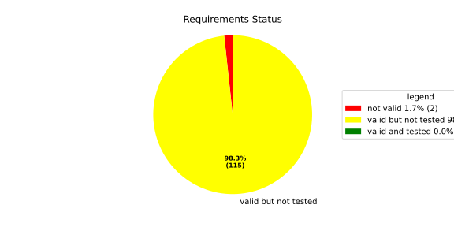
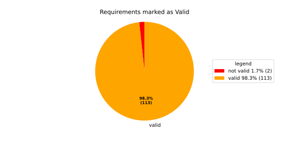
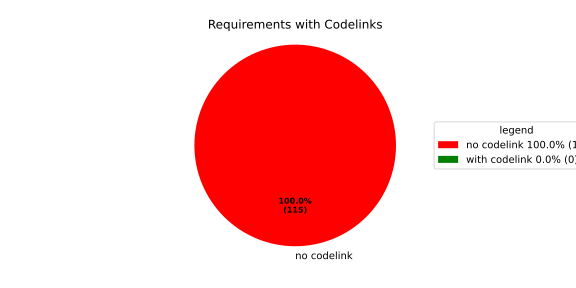

Verification Statistics#
Overview#

In Detail#


No needs passed the filters
Failed Tests
Hint: This table should be empty. Before a PR can be merged all tests have to be successful.
No needs passed the filters
Skipped / Disabled Tests
No needs passed the filters
All passed Tests#
No needs passed the filters
Details About Testcases#
No needs passed the filters
No needs passed the filters
Test Log Files#
tests-report/tests/integration/process_simple_rep_failure/process_simple_rep_failure/test.log
exec ${PAGER:-/usr/bin/less} "$0" || exit 1
Executing tests from //tests/integration/process_simple_rep_failure:process_simple_rep_failure
-----------------------------------------------------------------------------
============================= test session starts ==============================
platform linux -- Python 3.12.12, pytest-9.0.3, pluggy-1.5.0
rootdir: /home/runner/.bazel/sandbox/processwrapper-sandbox/1018/execroot/_main/bazel-out/k8-fastbuild/bin/tests/integration/process_simple_rep_failure/process_simple_rep_failure.runfiles/score_itf+
configfile: pytest.ini
collected 1 item
../score_itf+::test_recovery_action_simple_rep_failure
-------------------------------- live log setup --------------------------------
[2026-06-26 12:57:24.170] [INFO] [score.itf.plugins.docker] Executing custom image bootstrap command: tests/utils/environments/x86_64-linux/x86_64-linux.sh
[2026-06-26 12:57:24.303] [DEBUG] [docker.utils.config] Trying paths: ['/home/runner/.docker/config.json', '/home/runner/.dockercfg']
[2026-06-26 12:57:24.304] [DEBUG] [docker.utils.config] Found file at path: /home/runner/.docker/config.json
[2026-06-26 12:57:24.304] [DEBUG] [docker.auth] Found 'auths' section
[2026-06-26 12:57:24.304] [DEBUG] [docker.auth] Found entry (registry='https://index.docker.io/v1/', username='githubactions')
[2026-06-26 12:57:24.312] [DEBUG] [urllib3.connectionpool] http://localhost:None "GET /version HTTP/1.1" 200 823
[2026-06-26 12:57:24.337] [DEBUG] [urllib3.connectionpool] http://localhost:None "POST /v1.48/containers/create HTTP/1.1" 201 88
[2026-06-26 12:57:24.340] [DEBUG] [urllib3.connectionpool] http://localhost:None "GET /v1.48/containers/2e37b2771a770d8b262d9940092216c1774a8f0fd0c7df0806184216daf0be86/json HTTP/1.1" 200 None
[2026-06-26 12:57:24.477] [DEBUG] [urllib3.connectionpool] http://localhost:None "POST /v1.48/containers/2e37b2771a770d8b262d9940092216c1774a8f0fd0c7df0806184216daf0be86/start HTTP/1.1" 204 0
[2026-06-26 12:57:24.477] [DEBUG] [docker.utils.config] Trying paths: ['/home/runner/.docker/config.json', '/home/runner/.dockercfg']
[2026-06-26 12:57:24.477] [DEBUG] [docker.utils.config] Found file at path: /home/runner/.docker/config.json
[2026-06-26 12:57:24.478] [DEBUG] [docker.auth] Found 'auths' section
[2026-06-26 12:57:24.478] [DEBUG] [docker.auth] Found entry (registry='https://index.docker.io/v1/', username='githubactions')
[2026-06-26 12:57:24.486] [DEBUG] [urllib3.connectionpool] http://localhost:None "GET /version HTTP/1.1" 200 823
[2026-06-26 12:57:24.694] [INFO] [tests.utils.testing_utils.setup_test] Test case setup finished
-------------------------------- live log call ---------------------------------
[2026-06-26 12:57:24.814] [INFO] [launch_manager] 2026/06/26 12:57:24.8644810 3944633 000 ECU1 LM LM log debug verbose 1
[2026-06-26 12:57:24.816] [INFO] [launch_manager] Launch Manager Started !!!!
[2026-06-26 12:57:24.817] [INFO] [launch_manager] 2026/06/26 12:57:24.8644810 3944637 000 ECU1 LM LM log debug verbose 1 Loading LCM Configurations...
[2026-06-26 12:57:24.817] [INFO] [launch_manager] 2026/06/26 12:57:24.8644811 3944638 000 ECU1 LM LM log debug verbose 1
[2026-06-26 12:57:24.817] [INFO] [launch_manager] ECUCFG_ENV_VAR_ROOTFOLDER set successfully
[2026-06-26 12:57:24.817] [INFO] [launch_manager] 2026/06/26 12:57:24.8644811 3944640 000 ECU1 LM LM log debug verbose 5 FlatBufferParser::getModeGroupPgName: MainPG ( IdentifierHash: 18079021346025578134 )
[2026-06-26 12:57:24.818] [INFO] [launch_manager] 2026/06/26 12:57:24.8644811 3944641 000 ECU1 LM LM log debug verbose 5
[2026-06-26 12:57:24.819] [INFO] [launch_manager] FlatBufferParser::getModeGroupPgStateName: MainPG/Startup ( IdentifierHash: 10504605499600661529 )
[2026-06-26 12:57:24.819] [INFO] [launch_manager] 2026/06/26 12:57:24.8644811 3944642 000 ECU1 LM LM log debug verbose 5
[2026-06-26 12:57:24.819] [INFO] [launch_manager] FlatBufferParser::getModeGroupPgStateName: MainPG/run_target_app_does_report_krunning_in_time ( IdentifierHash: 11934981641920773349 )
[2026-06-26 12:57:24.820] [INFO] [launch_manager] 2026/06/26 12:57:24.8644811 3944644 000 ECU1 LM LM log debug verbose 5
[2026-06-26 12:57:24.820] [INFO] [launch_manager] FlatBufferParser::getModeGroupPgStateName: MainPG/run_target_app_does_not_report_krunning_in_time ( IdentifierHash: 7672161913816744053 )
[2026-06-26 12:57:24.820] [INFO] [launch_manager] 2026/06/26 12:57:24.8644811 3944645 000 ECU1 LM LM log debug verbose 5
[2026-06-26 12:57:24.821] [INFO] [launch_manager] FlatBufferParser::getModeGroupPgStateName: MainPG/Off ( IdentifierHash: 15281793077830264047 )
[2026-06-26 12:57:24.821] [INFO] [launch_manager] 2026/06/26 12:57:24.8644811 3944646 000 ECU1 LM LM log debug verbose 5
[2026-06-26 12:57:24.821] [INFO] [launch_manager] FlatBufferParser::getModeGroupPgStateName: MainPG/fallback_run_target ( IdentifierHash: 4059409696722237352 )
[2026-06-26 12:57:24.821] [INFO] [launch_manager] 2026/06/26 12:57:24.8644812 3944648 000 ECU1 LM LM log debug verbose 4 parseProcessConfigurations: Process index: 0 executable_path_: /tmp/tests/process_simple_rep_failure/control_client_mock
[2026-06-26 12:57:24.822] [INFO] [launch_manager] 2026/06/26 12:57:24.8644812 3944649 000 ECU1 LM LM log debug verbose 3 Process control_client_mock is Reporting execution state
[2026-06-26 12:57:24.822] [INFO] [launch_manager] 2026/06/26 12:57:24.8644812 3944650 000 ECU1 LM LM log debug verbose 1 Process is STATE_MANAGEMENT function Cluster Affiliation
[2026-06-26 12:57:24.822] [INFO] [launch_manager] 2026/06/26 12:57:24.8644812 3944651 000 ECU1 LM LM log debug verbose 3
[2026-06-26 12:57:24.822] [INFO] [launch_manager] Process control_client_mock is Self terminating
[2026-06-26 12:57:24.823] [INFO] [launch_manager] 2026/06/26 12:57:24.8644812 3944652 000 ECU1 LM LM log debug verbose 4 ParseProcessProcessGroup: id:::pg_name_: MainPG , pg_state_name_: MainPG/Startup
[2026-06-26 12:57:24.823] [INFO] [launch_manager] 2026/06/26 12:57:24.8644812 3944653 000 ECU1 LM LM log debug verbose 4 ParseProcessProcessGroup: id:::pg_name_: MainPG , pg_state_name_: MainPG/run_target_app_does_report_krunning_in_time
[2026-06-26 12:57:24.823] [INFO] [launch_manager] 2026/06/26 12:57:24.8644812 3944654 000 ECU1 LM LM log debug verbose 4 ParseProcessProcessGroup: id:::pg_name_: MainPG , pg_state_name_: MainPG/run_target_app_does_not_report_krunning_in_time
[2026-06-26 12:57:24.823] [INFO] [launch_manager] 2026/06/26 12:57:24.8644812 3944655 000 ECU1 LM LM log debug verbose 4
[2026-06-26 12:57:24.823] [INFO] [launch_manager] ParseProcessProcessGroup: id:::pg_name_: MainPG , pg_state_name_: MainPG/fallback_run_target
[2026-06-26 12:57:24.823] [INFO] [launch_manager] 2026/06/26 12:57:24.8644812 3944656 000 ECU1 LM LM log debug verbose 4
[2026-06-26 12:57:24.824] [INFO] [launch_manager] parseProcessConfigurations: Process index: 1 executable_path_: /tmp/tests/process_simple_rep_failure/process_simple_reporting
[2026-06-26 12:57:24.824] [INFO] [launch_manager] 2026/06/26 12:57:24.8644813 3944657 000 ECU1 LM LM log debug verbose 3 Process component_does_report_krunning_in_time is Reporting execution state
[2026-06-26 12:57:24.824] [INFO] [launch_manager] 2026/06/26 12:57:24.8644813 3944657 000 ECU1 LM LM log debug verbose 1 Process is NOT associated with any function Cluster Affiliation
[2026-06-26 12:57:24.824] [INFO] [launch_manager] 2026/06/26 12:57:24.8644813 3944658 000 ECU1 LM LM log debug verbose 3
[2026-06-26 12:57:24.824] [INFO] [launch_manager] Process component_does_report_krunning_in_time is Self terminating
[2026-06-26 12:57:24.824] [INFO] [launch_manager] 2026/06/26 12:57:24.8644813 3944659 000 ECU1 LM LM log debug verbose 4
[2026-06-26 12:57:24.824] [INFO] [launch_manager] ParseProcessProcessGroup: id:::pg_name_: MainPG , pg_state_name_: MainPG/run_target_app_does_report_krunning_in_time
[2026-06-26 12:57:24.824] [INFO] [launch_manager] 2026/06/26 12:57:24.8644813 3944661 000 ECU1 LM LM log debug verbose 4
[2026-06-26 12:57:24.824] [INFO] [launch_manager] parseProcessConfigurations: Process index: 2 executable_path_: /tmp/tests/process_simple_rep_failure/process_simple_reporting
[2026-06-26 12:57:24.824] [INFO] [launch_manager] 2026/06/26 12:57:24.8644813 3944662 000 ECU1 LM LM log debug verbose 3 Process component_does_not_report_krunning_in_time is Reporting execution state
[2026-06-26 12:57:24.824] [INFO] [launch_manager] 2026/06/26 12:57:24.8644813 3944662 000 ECU1 LM LM log debug verbose 1
[2026-06-26 12:57:24.824] [INFO] [launch_manager] Process is NOT associated with any function Cluster Affiliation
[2026-06-26 12:57:24.825] [INFO] [launch_manager] 2026/06/26 12:57:24.8644813 3944663 000 ECU1 LM LM log debug verbose 3 Process component_does_not_report_krunning_in_time is Self terminating
[2026-06-26 12:57:24.825] [INFO] [launch_manager] 2026/06/26 12:57:24.8644813 3944663 000 ECU1 LM LM log debug verbose 4 ParseProcessProcessGroup: id:::pg_name_: MainPG , pg_state_name_: MainPG/run_target_app_does_not_report_krunning_in_time
[2026-06-26 12:57:24.825] [INFO] [launch_manager] 2026/06/26 12:57:24.8644813 3944665 000 ECU1 LM LM log debug verbose 4
[2026-06-26 12:57:24.825] [INFO] [launch_manager] parseProcessConfigurations: Process index: 3 executable_path_: /tmp/tests/process_simple_rep_failure/verification_process
[2026-06-26 12:57:24.825] [INFO] [launch_manager] 2026/06/26 12:57:24.8644813 3944666 000 ECU1 LM LM log debug verbose 3 Process verification_component is NOT Reporting execution state
[2026-06-26 12:57:24.825] [INFO] [launch_manager] 2026/06/26 12:57:24.8644813 3944666 000 ECU1 LM LM log debug verbose 1 Process is NOT associated with any function Cluster Affiliation
[2026-06-26 12:57:24.825] [INFO] [launch_manager] 2026/06/26 12:57:24.8644813 3944666 000 ECU1 LM LM log debug verbose 3 Process verification_component is Self terminating
[2026-06-26 12:57:24.825] [INFO] [launch_manager] 2026/06/26 12:57:24.8644813 3944667 000 ECU1 LM LM log debug verbose 4
[2026-06-26 12:57:24.825] [INFO] [launch_manager] ParseProcessProcessGroup: id:::pg_name_: MainPG , pg_state_name_: MainPG/fallback_run_target
[2026-06-26 12:57:24.826] [INFO] [launch_manager] 2026/06/26 12:57:24.8644814 3944668 000 ECU1 LM LM log debug verbose 3 Loading SWCL Nr. 0 Succeeded
[2026-06-26 12:57:24.826] [INFO] [launch_manager] 2026/06/26 12:57:24.8644814 3944668 000 ECU1 LM LM log debug verbose 2 1 process group(s)
[2026-06-26 12:57:24.826] [INFO] [launch_manager] 2026/06/26 12:57:24.8644814 3944669 000 ECU1 LM LM log debug verbose 3
[2026-06-26 12:57:24.826] [INFO] [launch_manager] Creating graph with 4 nodes
[2026-06-26 12:57:24.826] [INFO] [launch_manager] 2026/06/26 12:57:24.8644814 3944669 000 ECU1 LM LM log debug verbose 1 Process groups initialized successfully
[2026-06-26 12:57:24.826] [INFO] [launch_manager] 2026/06/26 12:57:24.8644814 3944669 000 ECU1 LM LM log debug verbose 1 Process Group initialization done
[2026-06-26 12:57:24.826] [INFO] [launch_manager] 2026/06/26 12:57:24.8644814 3944670 000 ECU1 LM LM log debug verbose 3 Creating Safe Process Map with 4 entries
[2026-06-26 12:57:24.826] [INFO] [launch_manager] 2026/06/26 12:57:24.8644814 3944670 000 ECU1 LM LM log debug verbose 2 Creating job queue with capacity 1024
[2026-06-26 12:57:24.826] [INFO] [launch_manager] 2026/06/26 12:57:24.8644814 3944670 000 ECU1 LM LM log debug verbose 1 Creating worker threads...
[2026-06-26 12:57:24.827] [INFO] [launch_manager] 2026/06/26 12:57:24.8644815 3944684 000 ECU1 LM LM log debug verbose 7 Process group index 0 (with name MainPG ) has 4 processes
[2026-06-26 12:57:24.827] [INFO] [launch_manager] 2026/06/26 12:57:24.8644815 3944685 000 ECU1 LM LM log debug verbose 2
[2026-06-26 12:57:24.827] [INFO] [launch_manager] Creating process node with id: 0
[2026-06-26 12:57:24.827] [INFO] [launch_manager] 2026/06/26 12:57:24.8644815 3944686 000 ECU1 LM LM log debug verbose 5
[2026-06-26 12:57:24.827] [INFO] [launch_manager] Process 0 has 0 start dependencies
[2026-06-26 12:57:24.827] [INFO] [launch_manager] 2026/06/26 12:57:24.8644816 3944687 000 ECU1 LM LM log debug verbose 2
[2026-06-26 12:57:24.827] [INFO] [launch_manager] Creating process node with id: 1
[2026-06-26 12:57:24.827] [INFO] [launch_manager] 2026/06/26 12:57:24.8644816 3944688 000 ECU1 LM LM log debug verbose 5
[2026-06-26 12:57:24.827] [INFO] [launch_manager] Process 1 has 0 start dependencies
[2026-06-26 12:57:24.827] [INFO] [launch_manager] 2026/06/26 12:57:24.8644816 3944689 000 ECU1 LM LM log debug verbose 2
[2026-06-26 12:57:24.827] [INFO] [launch_manager] Creating process node with id: 2
[2026-06-26 12:57:24.828] [INFO] [launch_manager] 2026/06/26 12:57:24.8644816 3944690 000 ECU1 LM LM log debug verbose 5
[2026-06-26 12:57:24.828] [INFO] [launch_manager] Process 2 has 0 start dependencies
[2026-06-26 12:57:24.828] [INFO] [launch_manager] 2026/06/26 12:57:24.8644816 3944692 000 ECU1 LM LM log debug verbose 2 Creating process node with id: 3
[2026-06-26 12:57:24.828] [INFO] [launch_manager] 2026/06/26 12:57:24.8644816 3944693 000 ECU1 LM LM log debug verbose 5
[2026-06-26 12:57:24.828] [INFO] [launch_manager] Process 3 has 0 start dependencies
[2026-06-26 12:57:24.828] [INFO] [launch_manager] 2026/06/26 12:57:24.8644816 3944695 000 ECU1 LM LM log debug verbose 3
[2026-06-26 12:57:24.828] [INFO] [launch_manager] Created 4 process nodes
[2026-06-26 12:57:24.828] [INFO] [launch_manager] 2026/06/26 12:57:24.8644816 3944697 000 ECU1 LM LM log debug verbose 2
[2026-06-26 12:57:24.828] [INFO] [launch_manager] Creating successor lists for process group MainPG
[2026-06-26 12:57:24.829] [INFO] [launch_manager] 2026/06/26 12:57:24.8644817 3944699 000 ECU1 LM LM log debug verbose 1
[2026-06-26 12:57:24.829] [INFO] [launch_manager] Graphs initialized
[2026-06-26 12:57:24.829] [INFO] [launch_manager] 2026/06/26 12:57:24.8644818 3944707 000 ECU1 LM Fcty log info verbose 2
[2026-06-26 12:57:24.829] [INFO] [launch_manager] Factory for FlatCfg MachineConfig: Loading of HM Machine Configuration succeeded.
[2026-06-26 12:57:24.829] [INFO] [launch_manager] 2026/06/26 12:57:24.8644818 3944710 000 ECU1 LM Fcty log debug verbose 3
[2026-06-26 12:57:24.829] [INFO] [launch_manager] Factory for FlatCfg MachineConfig: Alive Supervision buffer size: 100
[2026-06-26 12:57:24.829] [INFO] [launch_manager] 2026/06/26 12:57:24.8644818 3944713 000 ECU1 LM Fcty log debug verbose 3
[2026-06-26 12:57:24.830] [INFO] [launch_manager] Factory for FlatCfg MachineConfig: Monitor buffer size: 512
[2026-06-26 12:57:24.830] [INFO] [launch_manager] 2026/06/26 12:57:24.8644818 3944715 000 ECU1 LM Fcty log debug verbose 4
[2026-06-26 12:57:24.830] [INFO] [launch_manager] Factory for FlatCfg MachineConfig: Periodicity: 50000000 ns
[2026-06-26 12:57:24.830] [INFO] [launch_manager] 2026/06/26 12:57:24.8644819 3944723 000 ECU1 LM Fcty log debug verbose 3
[2026-06-26 12:57:24.830] [INFO] [launch_manager] Factory for FlatCfg MachineConfig: Configured watchdogs: 0
[2026-06-26 12:57:24.830] [INFO] [launch_manager] 2026/06/26 12:57:24.8644823 3944758 000 ECU1 LM Fcty log warn verbose 2
[2026-06-26 12:57:24.831] [INFO] [launch_manager] Factory for FlatCfg MachineConfig: No watchdog configured
[2026-06-26 12:57:24.831] [INFO] [launch_manager] 2026/06/26 12:57:24.8644823 3944762 000 ECU1 LM Fcty log debug verbose 2
[2026-06-26 12:57:24.831] [INFO] [launch_manager] Software Cluster Handler starts constructing workers: MainCluster
[2026-06-26 12:57:24.831] [INFO] [launch_manager] 2026/06/26 12:57:24.8644823 3944764 000 ECU1 LM Fcty log debug verbose 3
[2026-06-26 12:57:24.831] [INFO] [launch_manager] Factory for FlatCfg AR24-11: Successfully created Process States: control_client_mock
[2026-06-26 12:57:24.831] [INFO] [launch_manager] 2026/06/26 12:57:24.8644823 3944765 000 ECU1 LM Fcty log debug verbose 3
[2026-06-26 12:57:24.831] [INFO] [launch_manager] Factory for FlatCfg AR24-11: Number of constructed Process States: 1
[2026-06-26 12:57:24.831] [INFO] [launch_manager] 2026/06/26 12:57:24.8644824 3944768 000 ECU1 LM Fcty log debug verbose 3
[2026-06-26 12:57:24.832] [INFO] [launch_manager] Factory for FlatCfg AR24-11: Successfully created Alive interface IPC with path: lifecycle_health_control_client_mock
[2026-06-26 12:57:24.832] [INFO] [launch_manager] 2026/06/26 12:57:24.8644824 3944770 000 ECU1 LM Fcty log debug verbose 3
[2026-06-26 12:57:24.832] [INFO] [launch_manager] Factory for FlatCfg AR24-11: Number of constructed Alive interface IPCs: 1
[2026-06-26 12:57:24.832] [INFO] [launch_manager] 2026/06/26 12:57:24.8644824 3944772 000 ECU1 LM Fcty log debug verbose 3
[2026-06-26 12:57:24.832] [INFO] [launch_manager] Factory for FlatCfg AR24-11: Successfully created Alive Interface: /lifecycle_health_control_client_mock
[2026-06-26 12:57:24.832] [INFO] [launch_manager] 2026/06/26 12:57:24.8644824 3944774 000 ECU1 LM Fcty log debug verbose 3
[2026-06-26 12:57:24.833] [INFO] [launch_manager] Factory for FlatCfg AR24-11: Number of constructed Alive interfaces: 1
[2026-06-26 12:57:24.833] [INFO] [launch_manager] 2026/06/26 12:57:24.8644824 3944776 000 ECU1 LM Fcty log debug verbose 3
[2026-06-26 12:57:24.833] [INFO] [launch_manager] Factory for FlatCfg AR24-11: Successfully created supervision checkpoint: control_client_mock_checkpoint
[2026-06-26 12:57:24.833] [INFO] [launch_manager] 2026/06/26 12:57:24.8644825 3944779 000 ECU1 LM Fcty log debug verbose 3
[2026-06-26 12:57:24.833] [INFO] [launch_manager] Factory for FlatCfg AR24-11: Number of constructed supervision checkpoints: 1
[2026-06-26 12:57:24.834] [INFO] [launch_manager] 2026/06/26 12:57:24.8644825 3944781 000 ECU1 LM Fcty log debug verbose 3
[2026-06-26 12:57:24.834] [INFO] [launch_manager] Factory for FlatCfg AR24-11: Successfully created alive supervision worker object: control_client_mock_alive_supervision
[2026-06-26 12:57:24.834] [INFO] [launch_manager] 2026/06/26 12:57:24.8644825 3944784 000 ECU1 LM Fcty log debug verbose 3
[2026-06-26 12:57:24.834] [INFO] [launch_manager] Factory for FlatCfg AR24-11: Number of constructed alive supervisions: 1
[2026-06-26 12:57:24.834] [INFO] [launch_manager] 2026/06/26 12:57:24.8644825 3944785 000 ECU1 LM Fcty log info verbose 2
[2026-06-26 12:57:24.834] [INFO] [launch_manager] Phm Daemon: The (configured) periodicity in [ns] is set to: 50000000
[2026-06-26 12:57:24.834] [INFO] [launch_manager] 2026/06/26 12:57:24.8644825 3944786 000 ECU1 LM Fcty log debug verbose 2
[2026-06-26 12:57:24.834] [INFO] [launch_manager] Phm Daemon: The accuracy of the monotonic system clock in [ns] is: 1
[2026-06-26 12:57:24.834] [INFO] [launch_manager] 2026/06/26 12:57:24.8644826 3944788 000 ECU1 LM Fcty log debug verbose 3
[2026-06-26 12:57:24.834] [INFO] [launch_manager] AliveMonitor: Initialization took 8 ms
[2026-06-26 12:57:24.834] [INFO] [launch_manager] 2026/06/26 12:57:24.8644826 3944790 000 ECU1 LM LM log info verbose 1
[2026-06-26 12:57:24.835] [INFO] [launch_manager] LCM started successfully
[2026-06-26 12:57:24.835] [INFO] [launch_manager] 2026/06/26 12:57:24.8644826 3944792 000 ECU1 LM LM log debug verbose 3
[2026-06-26 12:57:24.835] [INFO] [launch_manager] clock() at run(): 41.021000 ms
[2026-06-26 12:57:24.835] [INFO] [launch_manager] 2026/06/26 12:57:24.8644826 3944794 000 ECU1 LM LM log debug verbose 1
[2026-06-26 12:57:24.835] [INFO] [launch_manager] =============STARTING MAINPG STARTUP STATE============
[2026-06-26 12:57:24.835] [INFO] [launch_manager] 2026/06/26 12:57:24.8644826 3944796 000 ECU1 LM LM log debug verbose 9
[2026-06-26 12:57:24.835] [INFO] [launch_manager] Graph::setState changes from kSuccess to kInTransition for PG 0 ( MainPG )
[2026-06-26 12:57:24.835] [INFO] [launch_manager] 2026/06/26 12:57:24.8644827 3944798 000 ECU1 LM LM log debug verbose 2
[2026-06-26 12:57:24.835] [INFO] [launch_manager] Stop Dependencies: 0
[2026-06-26 12:57:24.836] [INFO] [launch_manager] 2026/06/26 12:57:24.8644827 3944800 000 ECU1 LM LM log debug verbose 2
[2026-06-26 12:57:24.836] [INFO] [launch_manager] Stop Dependencies: 0
[2026-06-26 12:57:24.836] [INFO] [launch_manager] 2026/06/26 12:57:24.8644827 3944802 000 ECU1 LM LM log debug verbose 2
[2026-06-26 12:57:24.836] [INFO] [launch_manager] Stop Dependencies: 0
[2026-06-26 12:57:24.836] [INFO] [launch_manager] 2026/06/26 12:57:24.8644827 3944803 000 ECU1 LM LM log debug verbose 2
[2026-06-26 12:57:24.836] [INFO] [launch_manager] Stop Dependencies: 0
[2026-06-26 12:57:24.836] [INFO] [launch_manager] 2026/06/26 12:57:24.8644827 3944805 000 ECU1 LM LM log debug verbose 2
[2026-06-26 12:57:24.837] [INFO] [launch_manager] Start Dependencies: 0
[2026-06-26 12:57:24.837] [INFO] [launch_manager] 2026/06/26 12:57:24.8644828 3944807 000 ECU1 LM LM log debug verbose 2
[2026-06-26 12:57:24.837] [INFO] [launch_manager] Start Dependencies: 0
[2026-06-26 12:57:24.837] [INFO] [launch_manager] 2026/06/26 12:57:24.8644828 3944809 000 ECU1 LM LM log debug verbose 2
[2026-06-26 12:57:24.837] [INFO] [launch_manager] Start Dependencies: 0
[2026-06-26 12:57:24.837] [INFO] [launch_manager] 2026/06/26 12:57:24.8644828 3944811 000 ECU1 LM LM log debug verbose 2
[2026-06-26 12:57:24.838] [INFO] [launch_manager] Start Dependencies: 0
[2026-06-26 12:57:24.838] [INFO] [launch_manager] 2026/06/26 12:57:24.8644828 3944814 000 ECU1 LM LM log debug verbose 6
[2026-06-26 12:57:24.838] [INFO] [launch_manager] Starting process 0 ( control_client_mock ) from executable /tmp/tests/process_simple_rep_failure/control_client_mock
[2026-06-26 12:57:24.838] [INFO] [launch_manager] 2026/06/26 12:57:24.8644828 3944816 000 ECU1 LM LM log debug verbose 3
[2026-06-26 12:57:24.838] [INFO] [launch_manager] Initialize the control client for control_client_mock process
[2026-06-26 12:57:24.839] [INFO] [launch_manager] 2026/06/26 12:57:24.8644829 3944818 000 ECU1 LM LM log debug verbose 1
[2026-06-26 12:57:24.839] [INFO] [launch_manager] ControlClientChannel initialized
[2026-06-26 12:57:24.839] [INFO] [launch_manager] 2026/06/26 12:57:24.8644830 3944832 000 ECU1 LM LM log debug verbose 4
[2026-06-26 12:57:24.839] [INFO] [launch_manager] startProcess pid 70 received for process: control_client_mock
[2026-06-26 12:57:24.839] [INFO] [launch_manager] 2026/06/26 12:57:24.8644830 3944833 000 ECU1 LM LM log debug verbose 1
[2026-06-26 12:57:24.839] [INFO] [launch_manager] ControlClientChannel obtained from sync.
[2026-06-26 12:57:24.839] [INFO] [launch_manager] [==========] Running 1 test from 1 test suite.
[2026-06-26 12:57:24.839] [INFO] [launch_manager] [----------] Global test environment set-up.
[2026-06-26 12:57:24.839] [INFO] [launch_manager] [----------] 1 test from RecoveryActionSimpleRepFailure
[2026-06-26 12:57:24.839] [INFO] [launch_manager] [ RUN ] RecoveryActionSimpleRepFailure.ControlClientMock
[2026-06-26 12:57:24.839] [INFO] [launch_manager] [ STEP ] Report running from ControlClientMock
[2026-06-26 12:57:24.840] [INFO] [launch_manager] [ END STEP ] Report running from ControlClientMock
[2026-06-26 12:57:24.840] [INFO] [launch_manager] [ STEP ] Activate RunTarget run_target_app_does_report_krunning_in_time
[2026-06-26 12:57:24.840] [INFO] [launch_manager] 2026/06/26 12:57:24.8644836 3944892 000 ECU1 LM LM log debug verbose 1 Request sent. Waiting for acknowledgment...
[2026-06-26 12:57:24.840] [INFO] [launch_manager] 2026/06/26 12:57:24.8644836 3944897 000 ECU1 LM LM log debug verbose 8
[2026-06-26 12:57:24.840] [INFO] [launch_manager] ProcessGroupManager::ControlClientHandler: got request kSetStateRequest ( 16 ) re state MainPG/run_target_app_does_report_krunning_in_time of PG MainPG
[2026-06-26 12:57:24.840] [INFO] [launch_manager] 2026/06/26 12:57:24.8644837 3944901 000 ECU1 LM LM log debug verbose 6 Pending state for process group MainPG changed from to MainPG/run_target_app_does_report_krunning_in_time
[2026-06-26 12:57:24.840] [INFO] [launch_manager] 2026/06/26 12:57:24.8644837 3944902 000 ECU1 LM LM log debug verbose 9 Graph::setState changes from kInTransition to kCancelled for PG 0 ( MainPG )
[2026-06-26 12:57:24.840] [INFO] [launch_manager] 2026/06/26 12:57:24.8644837 3944902 000 ECU1 LM LM log debug verbose 1
[2026-06-26 12:57:24.840] [INFO] [launch_manager] Control Client handler nudged
[2026-06-26 12:57:24.840] [INFO] [launch_manager] 2026/06/26 12:57:24.8644837 3944905 000 ECU1 LM LM log debug verbose 8
[2026-06-26 12:57:24.840] [INFO] [launch_manager] Got kRunning for pid 70 ( control_client_mock ) process 0 of group MainPG
[2026-06-26 12:57:24.841] [INFO] [launch_manager] 2026/06/26 12:57:24.8644837 3944906 000 ECU1 LM LM log debug verbose 7 startProcess for MainPG process 0 ( control_client_mock ) done
[2026-06-26 12:57:24.841] [INFO] [launch_manager] 2026/06/26 12:57:24.8644838 3944907 000 ECU1 LM LM log debug verbose 1
[2026-06-26 12:57:24.841] [INFO] [launch_manager] 2026/06/26 12:57:24.8644838 3944908 000 ECU1 LM LM log debug verbose 1
[2026-06-26 12:57:24.841] [INFO] [launch_manager] Request acknowledged.
[2026-06-26 12:57:24.841] [INFO] [launch_manager] Request acknowledged.
[2026-06-26 12:57:24.841] [INFO] [launch_manager] 2026/06/26 12:57:24.8644838 3944910 000 ECU1 LM LM log debug verbose 1
[2026-06-26 12:57:24.841] [INFO] [launch_manager] Control Client handler nudged
[2026-06-26 12:57:24.841] [INFO] [launch_manager] 2026/06/26 12:57:24.8644838 3944912 000 ECU1 LM LM log fatal verbose 3
[2026-06-26 12:57:24.841] [INFO] [launch_manager] clock() at failed initial state transition: 43.094000 ms
[2026-06-26 12:57:24.842] [INFO] [launch_manager] 2026/06/26 12:57:24.8644838 3944913 000 ECU1 LM LM log debug verbose 9
[2026-06-26 12:57:24.842] [INFO] [launch_manager] Graph::setState changes from kCancelled to kUndefinedState for PG 0 ( MainPG )
[2026-06-26 12:57:24.842] [INFO] [launch_manager] 2026/06/26 12:57:24.8644838 3944915 000 ECU1 LM LM log debug verbose 1
[2026-06-26 12:57:24.842] [INFO] [launch_manager] Control Client handler nudged
[2026-06-26 12:57:24.842] [INFO] [launch_manager] 2026/06/26 12:57:24.8644841 3944940 000 ECU1 LM LM log debug verbose 6 Pending state for process group MainPG changed from MainPG/run_target_app_does_report_krunning_in_time to
[2026-06-26 12:57:24.842] [INFO] [launch_manager] 2026/06/26 12:57:24.8644841 3944940 000 ECU1 LM LM log debug verbose 4 Start transition to MainPG/run_target_app_does_report_krunning_in_time for PG MainPG
[2026-06-26 12:57:24.842] [INFO] [launch_manager] 2026/06/26 12:57:24.8644841 3944941 000 ECU1 LM LM log debug verbose 9 Graph::setState changes from kUndefinedState to kInTransition for PG 0 ( MainPG )
[2026-06-26 12:57:24.842] [INFO] [launch_manager] 2026/06/26 12:57:24.8644841 3944941 000 ECU1 LM LM log debug verbose 2 Stop Dependencies: 0
[2026-06-26 12:57:24.842] [INFO] [launch_manager] 2026/06/26 12:57:24.8644841 3944941 000 ECU1 LM LM log debug verbose 2 Stop Dependencies: 0
[2026-06-26 12:57:24.842] [INFO] [launch_manager] 2026/06/26 12:57:24.8644841 3944941 000 ECU1 LM LM log debug verbose 2 Stop Dependencies: 0
[2026-06-26 12:57:24.842] [INFO] [launch_manager] 2026/06/26 12:57:24.8644841 3944942 000 ECU1 LM LM log debug verbose 2 Stop Dependencies: 0
[2026-06-26 12:57:24.842] [INFO] [launch_manager] 2026/06/26 12:57:24.8644841 3944942 000 ECU1 LM LM log debug verbose 2 Start Dependencies: 0
[2026-06-26 12:57:24.842] [INFO] [launch_manager] 2026/06/26 12:57:24.8644841 3944942 000 ECU1 LM LM log debug verbose 2 Start Dependencies: 0
[2026-06-26 12:57:24.842] [INFO] [launch_manager] 2026/06/26 12:57:24.8644841 3944942 000 ECU1 LM LM log debug verbose 2 Start Dependencies: 0
[2026-06-26 12:57:24.842] [INFO] [launch_manager] 2026/06/26 12:57:24.8644841 3944942 000 ECU1 LM LM log debug verbose 2 Start Dependencies: 0
[2026-06-26 12:57:24.843] [INFO] [launch_manager] 2026/06/26 12:57:24.8644841 3944943 000 ECU1 LM LM log debug verbose 6
[2026-06-26 12:57:24.843] [INFO] [launch_manager] Starting process 1 ( component_does_report_krunning_in_time ) from executable /tmp/tests/process_simple_rep_failure/process_simple_reporting
[2026-06-26 12:57:24.843] [INFO] [launch_manager] 2026/06/26 12:57:24.8644842 3944953 000 ECU1 LM LM log debug verbose 4 startProcess pid 78 received for process: component_does_report_krunning_in_time
[2026-06-26 12:57:24.844] [INFO] [launch_manager] [==========] Running 1 test from 1 test suite.
[2026-06-26 12:57:24.844] [INFO] [launch_manager] [----------] Global test environment set-up.
[2026-06-26 12:57:24.844] [INFO] [launch_manager] [----------] 1 test from ProcessSimpleRepFailure
[2026-06-26 12:57:24.844] [INFO] [launch_manager] [ RUN ] ProcessSimpleRepFailure.ProcessSimpleReporting
[2026-06-26 12:57:24.844] [INFO] [launch_manager] [ STEP ] Check args
[2026-06-26 12:57:24.844] [INFO] [launch_manager] [ END STEP ] Check args
[2026-06-26 12:57:24.845] [INFO] [launch_manager] [ STEP ] Report running from ProcessSimpleReporting
[2026-06-26 12:57:24.876] [INFO] [launch_manager] 2026/06/26 12:57:24.8644876 3945291 000 ECU1 LM Sprv log debug verbose 6 Process with Id control_client_mock changed state PG MainPG/Startup PS 1
[2026-06-26 12:57:24.877] [INFO] [launch_manager] 2026/06/26 12:57:24.8644876 3945291 000 ECU1 LM Sprv log debug verbose 6 Process with Id control_client_mock changed state PG MainPG/Startup PS 2
[2026-06-26 12:57:24.877] [INFO] [launch_manager] 2026/06/26 12:57:24.8644876 3945292 000 ECU1 LM Sprv log debug verbose 6 Process with Id component_does_report_krunning_in_time changed state PG MainPG/run_target_app_does_report_krunning_in_time PS 1
[2026-06-26 12:57:24.877] [INFO] [launch_manager] 2026/06/26 12:57:24.8644876 3945292 000 ECU1 LM Sprv log info verbose 3 Alive Supervision ( control_client_mock_alive_supervision ) switched to OK.
[2026-06-26 12:57:24.880] [DEBUG] [tests.utils.testing_utils.run_until_file_deployed] Waiting for /tmp/tests/test_end
[2026-06-26 12:57:25.356] [INFO] [launch_manager] [ END STEP ] Report running from ProcessSimpleReporting
[2026-06-26 12:57:25.356] [INFO] [launch_manager] [ OK ] ProcessSimpleRepFailure.ProcessSimpleReporting (502 ms)
[2026-06-26 12:57:25.357] [INFO] [launch_manager] [----------] 1 test from ProcessSimpleRepFailure (502 ms total)
[2026-06-26 12:57:25.357] [INFO] [launch_manager] [----------] Global test environment tear-down
[2026-06-26 12:57:25.357] [INFO] [launch_manager] [==========] 1 test from 1 test suite ran. (502 ms total)
[2026-06-26 12:57:25.357] [INFO] [launch_manager] [ PASSED ] 1 test.
[2026-06-26 12:57:25.357] [INFO] [launch_manager] 2026/06/26 12:57:25.8645349 3950021 000 ECU1 LM LM log debug verbose 12 Child process 1 of MainPG pid 78 ( component_does_report_krunning_in_time ) for node True terminated with status 0
[2026-06-26 12:57:25.357] [INFO] [launch_manager] 2026/06/26 12:57:25.8645349 3950024 000 ECU1 LM LM log debug verbose 8 Got kRunning for pid 78 ( component_does_report_krunning_in_time ) process 1 of group MainPG
[2026-06-26 12:57:25.357] [INFO] [launch_manager] 2026/06/26 12:57:25.8645349 3950025 000 ECU1 LM LM log debug verbose 7 startProcess for MainPG process 1 ( component_does_report_krunning_in_time ) done
[2026-06-26 12:57:25.357] [INFO] [launch_manager] 2026/06/26 12:57:25.8645349 3950026 000 ECU1 LM LM log debug verbose 9 Graph::setState changes from kInTransition to kSuccess for PG 0 ( MainPG )
[2026-06-26 12:57:25.357] [INFO] [launch_manager] 2026/06/26 12:57:25.8645349 3950027 000 ECU1 LM LM log info verbose 7 Completed the request for PG MainPG to State MainPG/run_target_app_does_report_krunning_in_time in 512 ms
[2026-06-26 12:57:25.357] [INFO] [launch_manager] 2026/06/26 12:57:25.8645349 3950027 000 ECU1 LM LM log debug verbose 1 Control Client handler nudged
[2026-06-26 12:57:25.357] [INFO] [launch_manager] 2026/06/26 12:57:25.8645350 3950036 000 ECU1 LM LM log debug verbose 8 ProcessGroupManager::ControlClientHandler: Sending kSetStateSuccess ( 20 ) re state MainPG/run_target_app_does_report_krunning_in_time of PG MainPG
[2026-06-26 12:57:25.357] [INFO] [launch_manager] 2026/06/26 12:57:25.8645350 3950037 000 ECU1 LM LM log debug verbose 1 Response sent.
[2026-06-26 12:57:25.382] [INFO] [launch_manager] 2026/06/26 12:57:25.8645376 3950291 000 ECU1 LM Sprv log debug verbose 6 Process with Id component_does_report_krunning_in_time changed state PG MainPG/run_target_app_does_report_krunning_in_time PS 4
[2026-06-26 12:57:25.442] [INFO] [launch_manager] 2026/06/26 12:57:25.8645441 3950941 000 ECU1 LM LM log debug verbose 1 Response retrieved.
[2026-06-26 12:57:25.443] [INFO] [launch_manager] [ END STEP ] Activate RunTarget run_target_app_does_report_krunning_in_time
[2026-06-26 12:57:25.480] [DEBUG] [tests.utils.testing_utils.run_until_file_deployed] Waiting for /tmp/tests/test_end
[2026-06-26 12:57:26.068] [DEBUG] [tests.utils.testing_utils.run_until_file_deployed] Waiting for /tmp/tests/test_end
[2026-06-26 12:57:26.442] [INFO] [launch_manager] [ STEP ] Verify fallback run target has not been activated
[2026-06-26 12:57:26.442] [INFO] [launch_manager] [ END STEP ] Verify fallback run target has not been activated
[2026-06-26 12:57:26.442] [INFO] [launch_manager] [ STEP ] Activate RunTarget run_target_app_does_not_report_krunning_in_time
[2026-06-26 12:57:26.443] [INFO] [launch_manager] 2026/06/26 12:57:26.8646441 3960947 000 ECU1 LM LM log debug verbose 1 Request sent. Waiting for acknowledgment...
[2026-06-26 12:57:26.445] [INFO] [launch_manager] 2026/06/26 12:57:26.8646443 3960962 000 ECU1 LM LM log debug verbose 8 ProcessGroupManager::ControlClientHandler: got request kSetStateRequest ( 16 ) re state MainPG/run_target_app_does_not_report_krunning_in_time of PG MainPG
[2026-06-26 12:57:26.445] [INFO] [launch_manager] 2026/06/26 12:57:26.8646443 3960963 000 ECU1 LM LM log debug verbose 6 Pending state for process group MainPG changed from to MainPG/run_target_app_does_not_report_krunning_in_time
[2026-06-26 12:57:26.445] [INFO] [launch_manager] 2026/06/26 12:57:26.8646443 3960963 000 ECU1 LM LM log debug verbose 1 Request acknowledged.
[2026-06-26 12:57:26.445] [INFO] [launch_manager] 2026/06/26 12:57:26.8646443 3960963 000 ECU1 LM LM log debug verbose 6 Pending state for process group MainPG changed from MainPG/run_target_app_does_not_report_krunning_in_time to
[2026-06-26 12:57:26.445] [INFO] [launch_manager] 2026/06/26 12:57:26.8646443 3960963 000 ECU1 LM LM log debug verbose 4 Start transition to MainPG/run_target_app_does_not_report_krunning_in_time for PG MainPG
[2026-06-26 12:57:26.445] [INFO] [launch_manager] 2026/06/26 12:57:26.8646443 3960964 000 ECU1 LM LM log debug verbose 9 Graph::setState changes from kSuccess to kInTransition for PG 0 ( MainPG )
[2026-06-26 12:57:26.445] [INFO] [launch_manager] 2026/06/26 12:57:26.8646443 3960964 000 ECU1 LM LM log debug verbose 2 Stop Dependencies: 0
[2026-06-26 12:57:26.446] [INFO] [launch_manager] 2026/06/26 12:57:26.8646443 3960964 000 ECU1 LM LM log debug verbose 2 Stop Dependencies: 0
[2026-06-26 12:57:26.446] [INFO] [launch_manager] 2026/06/26 12:57:26.8646443 3960964 000 ECU1 LM LM log debug verbose 2 Stop Dependencies: 0
[2026-06-26 12:57:26.446] [INFO] [launch_manager] 2026/06/26 12:57:26.8646443 3960964 000 ECU1 LM LM log debug verbose 2 Stop Dependencies: 0
[2026-06-26 12:57:26.446] [INFO] [launch_manager] 2026/06/26 12:57:26.8646443 3960965 000 ECU1 LM LM log debug verbose 2 Start Dependencies: 0
[2026-06-26 12:57:26.446] [INFO] [launch_manager] 2026/06/26 12:57:26.8646443 3960965 000 ECU1 LM LM log debug verbose 2 Start Dependencies: 0
[2026-06-26 12:57:26.446] [INFO] [launch_manager] 2026/06/26 12:57:26.8646443 3960965 000 ECU1 LM LM log debug verbose 2 Start Dependencies: 0
[2026-06-26 12:57:26.446] [INFO] [launch_manager] 2026/06/26 12:57:26.8646443 3960965 000 ECU1 LM LM log debug verbose 2 Start Dependencies: 0
[2026-06-26 12:57:26.446] [INFO] [launch_manager] 2026/06/26 12:57:26.8646443 3960967 000 ECU1 LM LM log debug verbose 6 Starting process 2 ( component_does_not_report_krunning_in_time ) from executable /tmp/tests/process_simple_rep_failure/process_simple_reporting
[2026-06-26 12:57:26.446] [INFO] [launch_manager] 2026/06/26 12:57:26.8646444 3960968 000 ECU1 LM LM log debug verbose 1 Request acknowledged.
[2026-06-26 12:57:26.446] [INFO] [launch_manager] 2026/06/26 12:57:26.8646444 3960974 000 ECU1 LM LM log debug verbose 4 startProcess pid 91 received for process: component_does_not_report_krunning_in_time
[2026-06-26 12:57:26.449] [INFO] [launch_manager] [==========] Running 1 test from 1 test suite.
[2026-06-26 12:57:26.449] [INFO] [launch_manager] [----------] Global test environment set-up.
[2026-06-26 12:57:26.449] [INFO] [launch_manager] [----------] 1 test from ProcessSimpleRepFailure
[2026-06-26 12:57:26.449] [INFO] [launch_manager] [ RUN ] ProcessSimpleRepFailure.ProcessSimpleReporting
[2026-06-26 12:57:26.449] [INFO] [launch_manager] [ STEP ] Check args
[2026-06-26 12:57:26.449] [INFO] [launch_manager] [ END STEP ] Check args
[2026-06-26 12:57:26.449] [INFO] [launch_manager] [ STEP ] Report running from ProcessSimpleReporting
[2026-06-26 12:57:26.482] [INFO] [launch_manager] 2026/06/26 12:57:26.8646476 3961291 000 ECU1 LM Sprv log debug verbose 6
[2026-06-26 12:57:26.482] [INFO] [launch_manager] Process with Id component_does_not_report_krunning_in_time changed state PG MainPG/run_target_app_does_not_report_krunning_in_time PS 1
[2026-06-26 12:57:26.646] [DEBUG] [tests.utils.testing_utils.run_until_file_deployed] Waiting for /tmp/tests/test_end
[2026-06-26 12:57:27.218] [DEBUG] [tests.utils.testing_utils.run_until_file_deployed] Waiting for /tmp/tests/test_end
[2026-06-26 12:57:27.487] [INFO] [launch_manager] 2026/06/26 12:57:27.8647486 3971397 000 ECU1 LM LM log error verbose 1 Semaphore timedWait or post failed: Unable to wait or post on semaphores within the specified timeout.
[2026-06-26 12:57:27.487] [INFO] [launch_manager] 2026/06/26 12:57:27.8647487 3971397 000 ECU1 LM LM log warn verbose 5 Got kRunning timeout for process 2 ( component_does_not_report_krunning_in_time )
[2026-06-26 12:57:27.487] [INFO] [launch_manager] 2026/06/26 12:57:27.8647487 3971398 000 ECU1 LM LM log debug verbose 5 terminating process 2 ( component_does_not_report_krunning_in_time )
[2026-06-26 12:57:27.487] [INFO] [launch_manager] 2026/06/26 12:57:27.8647487 3971398 000 ECU1 LM LM log debug verbose 9 Requesting termination of process 2 of MainPG pid 91 ( component_does_not_report_krunning_in_time )
[2026-06-26 12:57:27.487] [INFO] [launch_manager] 2026/06/26 12:57:27.8647487 3971399 000 ECU1 LM LM log debug verbose 2 Request termination received for 91
[2026-06-26 12:57:27.526] [INFO] [launch_manager] 2026/06/26 12:57:27.8647526 3971791 000 ECU1 LM Sprv log debug verbose 6
[2026-06-26 12:57:27.527] [INFO] [launch_manager] Process with Id component_does_not_report_krunning_in_time changed state PG MainPG/run_target_app_does_not_report_krunning_in_time PS 3
[2026-06-26 12:57:27.788] [DEBUG] [tests.utils.testing_utils.run_until_file_deployed] Waiting for /tmp/tests/test_end
[2026-06-26 12:57:28.362] [DEBUG] [tests.utils.testing_utils.run_until_file_deployed] Waiting for /tmp/tests/test_end
[2026-06-26 12:57:28.546] [INFO] [launch_manager] 2026/06/26 12:57:28.8648532 3981848 000 ECU1 LM LM log warn verbose 5 Process 2 ( component_does_not_report_krunning_in_time ) did not respond to SIGTERM, sending SIGKILL
[2026-06-26 12:57:28.546] [INFO] [launch_manager] 2026/06/26 12:57:28.8648532 3981848 000 ECU1 LM LM log debug verbose 2 Forced termination received for pid 91
[2026-06-26 12:57:28.546] [INFO] [launch_manager] 2026/06/26 12:57:28.8648532 3981853 000 ECU1 LM LM log debug verbose 12
[2026-06-26 12:57:28.546] [INFO] [launch_manager] Child process 2 of MainPG pid 91 ( component_does_not_report_krunning_in_time ) for node True terminated with status 9
[2026-06-26 12:57:28.546] [INFO] [launch_manager] 2026/06/26 12:57:28.8648532 3981854 000 ECU1 LM LM log warn verbose 7
[2026-06-26 12:57:28.547] [INFO] [launch_manager] unexpected termination of process 2 pid 91 ( component_does_not_report_krunning_in_time )
[2026-06-26 12:57:28.547] [INFO] [launch_manager] 2026/06/26 12:57:28.8648532 3981855 000 ECU1 LM LM log debug verbose 9
[2026-06-26 12:57:28.547] [INFO] [launch_manager] Graph::setState changes from kInTransition to kAborting for PG 0 ( MainPG )
[2026-06-26 12:57:28.547] [INFO] [launch_manager] 2026/06/26 12:57:28.8648534 3981870 000 ECU1 LM LM log debug verbose 7 terminateProcess for MainPG process 2 ( component_does_not_report_krunning_in_time ) done
[2026-06-26 12:57:28.547] [INFO] [launch_manager] 2026/06/26 12:57:28.8648534 3981871 000 ECU1 LM LM log debug verbose 7 startProcess for MainPG process 2 ( component_does_not_report_krunning_in_time ) done
[2026-06-26 12:57:28.547] [INFO] [launch_manager] 2026/06/26 12:57:28.8648534 3981871 000 ECU1 LM LM log debug verbose 9
[2026-06-26 12:57:28.547] [INFO] [launch_manager] Graph::setState changes from kAborting to kUndefinedState for PG 0 ( MainPG )
[2026-06-26 12:57:28.547] [INFO] [launch_manager] 2026/06/26 12:57:28.8648534 3981872 000 ECU1 LM LM log debug verbose 1
[2026-06-26 12:57:28.547] [INFO] [launch_manager] Control Client handler nudged
[2026-06-26 12:57:28.547] [INFO] [launch_manager] 2026/06/26 12:57:28.8648535 3981883 000 ECU1 LM LM log debug verbose 8 ProcessGroupManager::ControlClientHandler: Sending kFailedUnexpectedTerminationOnEnter ( 23 ) re state MainPG/run_target_app_does_not_report_krunning_in_time of PG MainPG
[2026-06-26 12:57:28.547] [INFO] [launch_manager] 2026/06/26 12:57:28.8648535 3981884 000 ECU1 LM LM log debug verbose 1 Response sent.
[2026-06-26 12:57:28.547] [INFO] [launch_manager] 2026/06/26 12:57:28.8648535 3981884 000 ECU1 LM LM log warn verbose 3 Problem discovered in PG MainPG Activating Recovery state.
[2026-06-26 12:57:28.547] [INFO] [launch_manager] 2026/06/26 12:57:28.8648535 3981884 000 ECU1 LM LM log debug verbose 9 Graph::setState changes from kUndefinedState to kInTransition for PG 0 ( MainPG )
[2026-06-26 12:57:28.547] [INFO] [launch_manager] 2026/06/26 12:57:28.8648535 3981884 000 ECU1 LM LM log debug verbose 2 Stop Dependencies: 0
[2026-06-26 12:57:28.548] [INFO] [launch_manager] 2026/06/26 12:57:28.8648535 3981885 000 ECU1 LM LM log debug verbose 2 Stop Dependencies: 0
[2026-06-26 12:57:28.548] [INFO] [launch_manager] 2026/06/26 12:57:28.8648535 3981885 000 ECU1 LM LM log debug verbose 2 Stop Dependencies: 0
[2026-06-26 12:57:28.548] [INFO] [launch_manager] 2026/06/26 12:57:28.8648535 3981885 000 ECU1 LM LM log debug verbose 2 Stop Dependencies: 0
[2026-06-26 12:57:28.548] [INFO] [launch_manager] 2026/06/26 12:57:28.8648535 3981885 000 ECU1 LM LM log debug verbose 2 Start Dependencies: 0
[2026-06-26 12:57:28.548] [INFO] [launch_manager] 2026/06/26 12:57:28.8648535 3981885 000 ECU1 LM LM log debug verbose 2 Start Dependencies: 0
[2026-06-26 12:57:28.548] [INFO] [launch_manager] 2026/06/26 12:57:28.8648535 3981885 000 ECU1 LM LM log debug verbose 2 Start Dependencies: 0
[2026-06-26 12:57:28.555] [INFO] [launch_manager] 2026/06/26 12:57:28.8648535 3981886 000 ECU1 LM LM log debug verbose 2 Start Dependencies: 0
[2026-06-26 12:57:28.555] [INFO] [launch_manager] 2026/06/26 12:57:28.8648535 3981887 000 ECU1 LM LM log debug verbose 6 Starting process 3 ( verification_component ) from executable /tmp/tests/process_simple_rep_failure/verification_process
[2026-06-26 12:57:28.555] [INFO] [launch_manager] 2026/06/26 12:57:28.8648536 3981893 000 ECU1 LM LM log debug verbose 4 startProcess pid 116 received for process: verification_component
[2026-06-26 12:57:28.555] [INFO] [launch_manager] 2026/06/26 12:57:28.8648536 3981894 000 ECU1 LM LM log debug verbose 8 Considered kRunning for Non Reporting Process pid 116 ( verification_component ) process 3 of group MainPG
[2026-06-26 12:57:28.555] [INFO] [launch_manager] 2026/06/26 12:57:28.8648536 3981894 000 ECU1 LM LM log debug verbose 7 startProcess for MainPG process 3 ( verification_component ) done
[2026-06-26 12:57:28.555] [INFO] [launch_manager] 2026/06/26 12:57:28.8648536 3981894 000 ECU1 LM LM log debug verbose 9 Graph::setState changes from kInTransition to kSuccess for PG 0 ( MainPG )
[2026-06-26 12:57:28.555] [INFO] [launch_manager] 2026/06/26 12:57:28.8648536 3981895 000 ECU1 LM LM log info verbose 7 Completed the request for PG MainPG to State MainPG/fallback_run_target in 1 ms
[2026-06-26 12:57:28.555] [INFO] [launch_manager] 2026/06/26 12:57:28.8648536 3981895 000 ECU1 LM LM log debug verbose 1 Control Client handler nudged
[2026-06-26 12:57:28.556] [INFO] [launch_manager] 2026/06/26 12:57:28.8648538 3981907 000 ECU1 LM LM log debug verbose 8 ProcessGroupManager::ControlClientHandler: Sending kSetStateSuccess ( 20 ) re state MainPG/fallback_run_target of PG MainPG
[2026-06-26 12:57:28.556] [INFO] [launch_manager] 2026/06/26 12:57:28.8648538 3981907 000 ECU1 LM LM log debug verbose 1 Failed to send response: response is not empty.
[2026-06-26 12:57:28.556] [INFO] [launch_manager] 2026/06/26 12:57:28.8648538 3981908 000 ECU1 LM LM log debug verbose 1 Control Client handler nudged
[2026-06-26 12:57:28.556] [INFO] [launch_manager] 2026/06/26 12:57:28.8648538 3981908 000 ECU1 LM LM log debug verbose 8 ProcessGroupManager::ControlClientHandler: Sending kSetStateSuccess ( 20 ) re state MainPG/fallback_run_target of PG MainPG
[2026-06-26 12:57:28.556] [INFO] [launch_manager] 2026/06/26 12:57:28.8648538 3981908 000 ECU1 LM LM log debug verbose 1 Failed to send response: response is not empty.
[2026-06-26 12:57:28.576] [INFO] [launch_manager] 2026/06/26 12:57:28.8648538 3981908 000 ECU1 LM LM log debug verbose 1 Control Client handler nudged
[2026-06-26 12:57:28.576] [INFO] [launch_manager] 2026/06/26 12:57:28.8648538 3981909 000 ECU1 LM LM log debug verbose 8 ProcessGroupManager::ControlClientHandler: Sending kSetStateSuccess ( 20 ) re state MainPG/fallback_run_target of PG MainPG
[2026-06-26 12:57:28.576] [INFO] [launch_manager] 2026/06/26 12:57:28.8648538 3981909 000 ECU1 LM LM log debug verbose 1 Failed to send response: response is not empty.
[2026-06-26 12:57:28.576] [INFO] [launch_manager] 2026/06/26 12:57:28.8648538 3981909 000 ECU1 LM LM log debug verbose 1 Control Client handler nudged
[2026-06-26 12:57:28.577] [INFO] [launch_manager] 2026/06/26 12:57:28.8648538 3981909 000 ECU1 LM LM log debug verbose 8 ProcessGroupManager::ControlClientHandler: Sending kSetStateSuccess ( 20 ) re state MainPG/fallback_run_target of PG MainPG
[2026-06-26 12:57:28.577] [INFO] [launch_manager] 2026/06/26 12:57:28.8648538 3981910 000 ECU1 LM LM log debug verbose 1 Failed to send response: response is not empty.
[2026-06-26 12:57:28.577] [INFO] [launch_manager] 2026/06/26 12:57:28.8648538 3981910 000 ECU1 LM LM log debug verbose 1 Control Client handler nudged
[2026-06-26 12:57:28.577] [INFO] [launch_manager] 2026/06/26 12:57:28.8648538 3981910 000 ECU1 LM LM log debug verbose 8 ProcessGroupManager::ControlClientHandler: Sending kSetStateSuccess ( 20 ) re state MainPG/fallback_run_target of PG MainPG
[2026-06-26 12:57:28.577] [INFO] [launch_manager] 2026/06/26 12:57:28.8648538 3981911 000 ECU1 LM LM log debug verbose 1 Failed to send response: response is not empty.
[2026-06-26 12:57:28.577] [INFO] [launch_manager] 2026/06/26 12:57:28.8648538 3981911 000 ECU1 LM LM log debug verbose 1 Control Client handler nudged
[2026-06-26 12:57:28.577] [INFO] [launch_manager] 2026/06/26 12:57:28.8648538 3981911 000 ECU1 LM LM log debug verbose 8 ProcessGroupManager::ControlClientHandler: Sending kSetStateSuccess ( 20 ) re state MainPG/fallback_run_target of PG MainPG
[2026-06-26 12:57:28.577] [INFO] [launch_manager] 2026/06/26 12:57:28.8648538 3981911 000 ECU1 LM LM log debug verbose 1 Failed to send response: response is not empty.
[2026-06-26 12:57:28.577] [INFO] [launch_manager] 2026/06/26 12:57:28.8648538 3981912 000 ECU1 LM LM log debug verbose 1 Control Client handler nudged
[2026-06-26 12:57:28.577] [INFO] [launch_manager] 2026/06/26 12:57:28.8648538 3981912 000 ECU1 LM LM log debug verbose 8 ProcessGroupManager::ControlClientHandler: Sending kSetStateSuccess ( 20 ) re state MainPG/fallback_run_target of PG MainPG
[2026-06-26 12:57:28.577] [INFO] [launch_manager] 2026/06/26 12:57:28.8648538 3981912 000 ECU1 LM LM log debug verbose 1 Failed to send response: response is not empty.
[2026-06-26 12:57:28.577] [INFO] [launch_manager] 2026/06/26 12:57:28.8648538 3981912 000 ECU1 LM LM log debug verbose 1 Control Client handler nudged
[2026-06-26 12:57:28.580] [INFO] [launch_manager] 2026/06/26 12:57:28.8648538 3981913 000 ECU1 LM LM log debug verbose 8 ProcessGroupManager::ControlClientHandler: Sending kSetStateSuccess ( 20 ) re state MainPG/fallback_run_target of PG MainPG
[2026-06-26 12:57:28.580] [INFO] [launch_manager] 2026/06/26 12:57:28.8648538 3981913 000 ECU1 LM LM log debug verbose 1 Failed to send response: response is not empty.
[2026-06-26 12:57:28.580] [INFO] [launch_manager] 2026/06/26 12:57:28.8648538 3981913 000 ECU1 LM LM log debug verbose 1 Control Client handler nudged
[2026-06-26 12:57:28.580] [INFO] [launch_manager] 2026/06/26 12:57:28.8648538 3981914 000 ECU1 LM LM log debug verbose 12 Child process 3 of MainPG pid 116 ( verification_component ) for node True terminated with status 0
[2026-06-26 12:57:28.580] [INFO] [launch_manager] 2026/06/26 12:57:28.8648538 3981914 000 ECU1 LM LM log debug verbose 8 ProcessGroupManager::ControlClientHandler: Sending kSetStateSuccess ( 20 ) re state MainPG/fallback_run_target of PG MainPG
[2026-06-26 12:57:28.580] [INFO] [launch_manager] 2026/06/26 12:57:28.8648538 3981914 000 ECU1 LM LM log debug verbose 1 Failed to send response: response is not empty.
[2026-06-26 12:57:28.580] [INFO] [launch_manager] 2026/06/26 12:57:28.8648538 3981914 000 ECU1 LM LM log debug verbose 1 Control Client handler nudged
[2026-06-26 12:57:28.580] [INFO] [launch_manager] 2026/06/26 12:57:28.8648538 3981915 000 ECU1 LM LM log debug verbose 8 ProcessGroupManager::ControlClientHandler: Sending kSetStateSuccess ( 20 ) re state MainPG/fallback_run_target of PG MainPG
[2026-06-26 12:57:28.580] [INFO] [launch_manager] 2026/06/26 12:57:28.8648538 3981915 000 ECU1 LM LM log debug verbose 1 Failed to send response: response is not empty.
[2026-06-26 12:57:28.581] [INFO] [launch_manager] 2026/06/26 12:57:28.8648538 3981915 000 ECU1 LM LM log debug verbose 1 Control Client handler nudged
[2026-06-26 12:57:28.581] [INFO] [launch_manager] 2026/06/26 12:57:28.8648538 3981915 000 ECU1 LM LM log debug verbose 8 ProcessGroupManager::ControlClientHandler: Sending kSetStateSuccess ( 20 ) re state MainPG/fallback_run_target of PG MainPG
[2026-06-26 12:57:28.581] [INFO] [launch_manager] 2026/06/26 12:57:28.8648538 3981916 000 ECU1 LM LM log debug verbose 1 Failed to send response: response is not empty.
[2026-06-26 12:57:28.600] [INFO] [launch_manager] 2026/06/26 12:57:28.8648538 3981916 000 ECU1 LM LM log debug verbose 1 Control Client handler nudged
[2026-06-26 12:57:28.600] [INFO] [launch_manager] 2026/06/26 12:57:28.8648538 3981916 000 ECU1 LM LM log debug verbose 8 ProcessGroupManager::ControlClientHandler: Sending kSetStateSuccess ( 20 ) re state MainPG/fallback_run_target of PG MainPG
[2026-06-26 12:57:28.600] [INFO] [launch_manager] 2026/06/26 12:57:28.8648538 3981916 000 ECU1 LM LM log debug verbose 1 Failed to send response: response is not empty.
[2026-06-26 12:57:28.600] [INFO] [launch_manager] 2026/06/26 12:57:28.8648538 3981917 000 ECU1 LM LM log debug verbose 1 Control Client handler nudged
[2026-06-26 12:57:28.600] [INFO] [launch_manager] 2026/06/26 12:57:28.8648539 3981917 000 ECU1 LM LM log debug verbose 8 ProcessGroupManager::ControlClientHandler: Sending kSetStateSuccess ( 20 ) re state MainPG/fallback_run_target of PG MainPG
[2026-06-26 12:57:28.600] [INFO] [launch_manager] 2026/06/26 12:57:28.8648539 3981917 000 ECU1 LM LM log debug verbose 1 Failed to send response: response is not empty.
[2026-06-26 12:57:28.600] [INFO] [launch_manager] 2026/06/26 12:57:28.8648539 3981917 000 ECU1 LM LM log debug verbose 1 Control Client handler nudged
[2026-06-26 12:57:28.600] [INFO] [launch_manager] 2026/06/26 12:57:28.8648539 3981918 000 ECU1 LM LM log debug verbose 8 ProcessGroupManager::ControlClientHandler: Sending kSetStateSuccess ( 20 ) re state MainPG/fallback_run_target of PG MainPG
[2026-06-26 12:57:28.600] [INFO] [launch_manager] 2026/06/26 12:57:28.8648539 3981918 000 ECU1 LM LM log debug verbose 1 Failed to send response: response is not empty.
[2026-06-26 12:57:28.600] [INFO] [launch_manager] 2026/06/26 12:57:28.8648539 3981918 000 ECU1 LM LM log debug verbose 1 Control Client handler nudged
[2026-06-26 12:57:28.600] [INFO] [launch_manager] 2026/06/26 12:57:28.8648539 3981918 000 ECU1 LM LM log debug verbose 8
[2026-06-26 12:57:28.602] [INFO] [launch_manager] ProcessGroupManager::ControlClientHandler: Sending kSetStateSuccess ( 20 ) re state MainPG/fallback_run_target of PG MainPG
[2026-06-26 12:57:28.602] [INFO] [launch_manager] 2026/06/26 12:57:28.8648540 3981930 000 ECU1 LM LM log debug verbose 1 Failed to send response: response is not empty.
[2026-06-26 12:57:28.602] [INFO] [launch_manager] 2026/06/26 12:57:28.8648540 3981931 000 ECU1 LM LM log debug verbose 1 Control Client handler nudged
[2026-06-26 12:57:28.602] [INFO] [launch_manager] 2026/06/26 12:57:28.8648540 3981932 000 ECU1 LM LM log debug verbose 8 ProcessGroupManager::ControlClientHandler: Sending kSetStateSuccess ( 20 ) re state MainPG/fallback_run_target of PG MainPG
[2026-06-26 12:57:28.602] [INFO] [launch_manager] 2026/06/26 12:57:28.8648540 3981933 000 ECU1 LM LM log debug verbose 1 Failed to send response: response is not empty.
[2026-06-26 12:57:28.602] [INFO] [launch_manager] 2026/06/26 12:57:28.8648540 3981933 000 ECU1 LM LM log debug verbose 1
[2026-06-26 12:57:28.602] [INFO] [launch_manager] Control Client handler nudged
[2026-06-26 12:57:28.602] [INFO] [launch_manager] 2026/06/26 12:57:28.8648540 3981934 000 ECU1 LM LM log debug verbose 8
[2026-06-26 12:57:28.603] [INFO] [launch_manager] ProcessGroupManager::ControlClientHandler: Sending kSetStateSuccess ( 20 ) re state MainPG/fallback_run_target of PG MainPG
[2026-06-26 12:57:28.603] [INFO] [launch_manager] 2026/06/26 12:57:28.8648540 3981935 000 ECU1 LM LM log debug verbose 1 Failed to send response: response is not empty.
[2026-06-26 12:57:28.603] [INFO] [launch_manager] 2026/06/26 12:57:28.8648540 3981935 000 ECU1 LM LM log debug verbose 1 Control Client handler nudged
[2026-06-26 12:57:28.603] [INFO] [launch_manager] 2026/06/26 12:57:28.8648540 3981936 000 ECU1 LM LM log debug verbose 8 ProcessGroupManager::ControlClientHandler: Sending kSetStateSuccess ( 20 ) re state MainPG/fallback_run_target of PG MainPG
[2026-06-26 12:57:28.603] [INFO] [launch_manager] 2026/06/26 12:57:28.8648540 3981937 000 ECU1 LM LM log debug verbose 1 Failed to send response: response is not empty.
[2026-06-26 12:57:28.603] [INFO] [launch_manager] 2026/06/26 12:57:28.8648541 3981937 000 ECU1 LM LM log debug verbose 1
[2026-06-26 12:57:28.603] [INFO] [launch_manager] Control Client handler nudged
[2026-06-26 12:57:28.603] [INFO] [launch_manager] 2026/06/26 12:57:28.8648541 3981938 000 ECU1 LM LM log debug verbose 8 ProcessGroupManager::ControlClientHandler: Sending kSetStateSuccess ( 20 ) re state MainPG/fallback_run_target of PG MainPG
[2026-06-26 12:57:28.603] [INFO] [launch_manager] 2026/06/26 12:57:28.8648541 3981938 000 ECU1 LM LM log debug verbose 1
[2026-06-26 12:57:28.618] [INFO] [launch_manager] Failed to send response: response is not empty.
[2026-06-26 12:57:28.618] [INFO] [launch_manager] 2026/06/26 12:57:28.8648541 3981939 000 ECU1 LM LM log debug verbose 1 Control Client handler nudged
[2026-06-26 12:57:28.618] [INFO] [launch_manager] 2026/06/26 12:57:28.8648541 3981940 000 ECU1 LM LM log debug verbose 8 ProcessGroupManager::ControlClientHandler: Sending kSetStateSuccess ( 20 ) re state MainPG/fallback_run_target of PG MainPG
[2026-06-26 12:57:28.619] [INFO] [launch_manager] 2026/06/26 12:57:28.8648541 3981941 000 ECU1 LM LM log debug verbose 1
[2026-06-26 12:57:28.619] [INFO] [launch_manager] Failed to send response: response is not empty.
[2026-06-26 12:57:28.619] [INFO] [launch_manager] 2026/06/26 12:57:28.8648541 3981941 000 ECU1 LM LM log debug verbose 1 Control Client handler nudged
[2026-06-26 12:57:28.619] [INFO] [launch_manager] 2026/06/26 12:57:28.8648541 3981942 000 ECU1 LM LM log debug verbose 8
[2026-06-26 12:57:28.619] [INFO] [launch_manager] ProcessGroupManager::ControlClientHandler: Sending kSetStateSuccess ( 20 ) re state MainPG/fallback_run_target of PG MainPG
[2026-06-26 12:57:28.619] [INFO] [launch_manager] 2026/06/26 12:57:28.8648541 3981943 000 ECU1 LM LM log debug verbose 1
[2026-06-26 12:57:28.619] [INFO] [launch_manager] Failed to send response: response is not empty.
[2026-06-26 12:57:28.619] [INFO] [launch_manager] 2026/06/26 12:57:28.8648541 3981943 000 ECU1 LM LM log debug verbose 1
[2026-06-26 12:57:28.620] [INFO] [launch_manager] Control Client handler nudged
[2026-06-26 12:57:28.620] [INFO] [launch_manager] 2026/06/26 12:57:28.8648541 3981944 000 ECU1 LM LM log debug verbose 8 ProcessGroupManager::ControlClientHandler: Sending kSetStateSuccess ( 20 ) re state MainPG/fallback_run_target of PG MainPG
[2026-06-26 12:57:28.620] [INFO] [launch_manager] 2026/06/26 12:57:28.8648541 3981945 000 ECU1 LM LM log debug verbose 1 Failed to send response: response is not empty.
[2026-06-26 12:57:28.620] [INFO] [launch_manager] 2026/06/26 12:57:28.8648541 3981945 000 ECU1 LM LM log debug verbose 1 Control Client handler nudged
[2026-06-26 12:57:28.623] [INFO] [launch_manager] 2026/06/26 12:57:28.8648541 3981946 000 ECU1 LM LM log debug verbose 8
[2026-06-26 12:57:28.629] [INFO] [launch_manager] ProcessGroupManager::ControlClientHandler: Sending kSetStateSuccess ( 20 ) re state MainPG/fallback_run_target of PG MainPG
[2026-06-26 12:57:28.629] [INFO] [launch_manager] 2026/06/26 12:57:28.8648541 3981947 000 ECU1 LM LM log debug verbose 1
[2026-06-26 12:57:28.629] [INFO] [launch_manager] Failed to send response: response is not empty.
[2026-06-26 12:57:28.629] [INFO] [launch_manager] 2026/06/26 12:57:28.8648542 3981947 000 ECU1 LM LM log debug verbose 1
[2026-06-26 12:57:28.629] [INFO] [launch_manager] Control Client handler nudged
[2026-06-26 12:57:28.629] [INFO] [launch_manager] 2026/06/26 12:57:28.8648542 3981948 000 ECU1 LM LM log debug verbose 8 ProcessGroupManager::ControlClientHandler: Sending kSetStateSuccess ( 20 ) re state MainPG/fallback_run_target of PG MainPG
[2026-06-26 12:57:28.630] [INFO] [launch_manager] 2026/06/26 12:57:28.8648542 3981948 000 ECU1 LM LM log debug verbose 1
[2026-06-26 12:57:28.630] [INFO] [launch_manager] Failed to send response: response is not empty.
[2026-06-26 12:57:28.630] [INFO] [launch_manager] 2026/06/26 12:57:28.8648542 3981949 000 ECU1 LM LM log debug verbose 1
[2026-06-26 12:57:28.630] [INFO] [launch_manager] Control Client handler nudged
[2026-06-26 12:57:28.630] [INFO] [launch_manager] 2026/06/26 12:57:28.8648542 3981950 000 ECU1 LM LM log debug verbose 8
[2026-06-26 12:57:28.630] [INFO] [launch_manager] ProcessGroupManager::ControlClientHandler: Sending kSetStateSuccess ( 20 ) re state MainPG/fallback_run_target of PG MainPG
[2026-06-26 12:57:28.630] [INFO] [launch_manager] 2026/06/26 12:57:28.8648542 3981951 000 ECU1 LM LM log debug verbose 1
[2026-06-26 12:57:28.633] [INFO] [launch_manager] Failed to send response: response is not empty.
[2026-06-26 12:57:28.633] [INFO] [launch_manager] 2026/06/26 12:57:28.8648542 3981951 000 ECU1 LM LM log debug verbose 1 Control Client handler nudged
[2026-06-26 12:57:28.633] [INFO] [launch_manager] 2026/06/26 12:57:28.8648542 3981952 000 ECU1 LM LM log debug verbose 8 ProcessGroupManager::ControlClientHandler: Sending kSetStateSuccess ( 20 ) re state MainPG/fallback_run_target of PG MainPG
[2026-06-26 12:57:28.636] [INFO] [launch_manager] 2026/06/26 12:57:28.8648542 3981953 000 ECU1 LM LM log debug verbose 1
[2026-06-26 12:57:28.636] [INFO] [launch_manager] Failed to send response: response is not empty.
[2026-06-26 12:57:28.636] [INFO] [launch_manager] 2026/06/26 12:57:28.8648542 3981953 000 ECU1 LM LM log debug verbose 1 Control Client handler nudged
[2026-06-26 12:57:28.645] [INFO] [launch_manager] 2026/06/26 12:57:28.8648542 3981954 000 ECU1 LM LM log debug verbose 8
[2026-06-26 12:57:28.645] [INFO] [launch_manager] ProcessGroupManager::ControlClientHandler: Sending kSetStateSuccess ( 20 ) re state MainPG/fallback_run_target of PG MainPG
[2026-06-26 12:57:28.645] [INFO] [launch_manager] 2026/06/26 12:57:28.8648542 3981955 000 ECU1 LM LM log debug verbose 1
[2026-06-26 12:57:28.645] [INFO] [launch_manager] Failed to send response: response is not empty.
[2026-06-26 12:57:28.645] [INFO] [launch_manager] 2026/06/26 12:57:28.8648542 3981955 000 ECU1 LM LM log debug verbose 1 Control Client handler nudged
[2026-06-26 12:57:28.645] [INFO] [launch_manager] 2026/06/26 12:57:28.8648542 3981956 000 ECU1 LM LM log debug verbose 8 ProcessGroupManager::ControlClientHandler: Sending kSetStateSuccess ( 20 ) re state MainPG/fallback_run_target of PG MainPG
[2026-06-26 12:57:28.645] [INFO] [launch_manager] 2026/06/26 12:57:28.8648542 3981957 000 ECU1 LM LM log debug verbose 1
[2026-06-26 12:57:28.645] [INFO] [launch_manager] Failed to send response: response is not empty.
[2026-06-26 12:57:28.646] [INFO] [launch_manager] 2026/06/26 12:57:28.8648543 3981957 000 ECU1 LM LM log debug verbose 1
[2026-06-26 12:57:28.646] [INFO] [launch_manager] Control Client handler nudged
[2026-06-26 12:57:28.646] [INFO] [launch_manager] 2026/06/26 12:57:28.8648543 3981958 000 ECU1 LM LM log debug verbose 8 ProcessGroupManager::ControlClientHandler: Sending kSetStateSuccess ( 20 ) re state MainPG/fallback_run_target of PG MainPG
[2026-06-26 12:57:28.646] [INFO] [launch_manager] 2026/06/26 12:57:28.8648543 3981958 000 ECU1 LM LM log debug verbose 1
[2026-06-26 12:57:28.646] [INFO] [launch_manager] Failed to send response: response is not empty.
[2026-06-26 12:57:28.646] [INFO] [launch_manager] 2026/06/26 12:57:28.8648543 3981959 000 ECU1 LM LM log debug verbose 1
[2026-06-26 12:57:28.646] [INFO] [launch_manager] Control Client handler nudged
[2026-06-26 12:57:28.646] [INFO] [launch_manager] 2026/06/26 12:57:28.8648543 3981960 000 ECU1 LM LM log debug verbose 8
[2026-06-26 12:57:28.646] [INFO] [launch_manager] ProcessGroupManager::ControlClientHandler: Sending kSetStateSuccess ( 20 ) re state MainPG/fallback_run_target of PG MainPG
[2026-06-26 12:57:28.646] [INFO] [launch_manager] 2026/06/26 12:57:28.8648543 3981961 000 ECU1 LM LM log debug verbose 1
[2026-06-26 12:57:28.646] [INFO] [launch_manager] Failed to send response: response is not empty.
[2026-06-26 12:57:28.647] [INFO] [launch_manager] 2026/06/26 12:57:28.8648543 3981961 000 ECU1 LM LM log debug verbose 1 Control Client handler nudged
[2026-06-26 12:57:28.647] [INFO] [launch_manager] 2026/06/26 12:57:28.8648543 3981962 000 ECU1 LM LM log debug verbose 8 ProcessGroupManager::ControlClientHandler: Sending kSetStateSuccess ( 20 ) re state MainPG/fallback_run_target of PG MainPG
[2026-06-26 12:57:28.647] [INFO] [launch_manager] 2026/06/26 12:57:28.8648543 3981963 000 ECU1 LM LM log debug verbose 1
[2026-06-26 12:57:28.647] [INFO] [launch_manager] Failed to send response: response is not empty.
[2026-06-26 12:57:28.660] [INFO] [launch_manager] 2026/06/26 12:57:28.8648543 3981963 000 ECU1 LM LM log debug verbose 1
[2026-06-26 12:57:28.660] [INFO] [launch_manager] Control Client handler nudged
[2026-06-26 12:57:28.660] [INFO] [launch_manager] 2026/06/26 12:57:28.8648543 3981964 000 ECU1 LM LM log debug verbose 8
[2026-06-26 12:57:28.660] [INFO] [launch_manager] 2026/06/26 12:57:28.8648544 3981974 000 ECU1 LM LM log debug verbose 1 Response retrieved.
[2026-06-26 12:57:28.661] [INFO] [launch_manager] [ END STEP ] Activate RunTarget run_target_app_does_not_report_krunning_in_time
[2026-06-26 12:57:28.661] [INFO] [launch_manager] ProcessGroupManager::ControlClientHandler: Sending kSetStateSuccess ( 20 ) re state MainPG/fallback_run_target of PG MainPG
[2026-06-26 12:57:28.661] [INFO] [launch_manager] 2026/06/26 12:57:28.8648546 3981990 000 ECU1 LM LM log debug verbose 1 Response sent.
[2026-06-26 12:57:28.661] [INFO] [launch_manager] 2026/06/26 12:57:28.8648576 3982291 000 ECU1 LM Sprv log debug verbose 6 Process with Id component_does_not_report_krunning_in_time changed state PG MainPG/run_target_app_does_not_report_krunning_in_time PS 4
[2026-06-26 12:57:28.661] [INFO] [launch_manager] 2026/06/26 12:57:28.8648644 3982976 000 ECU1 LM LM log debug verbose 1 Response retrieved.
[2026-06-26 12:57:28.945] [DEBUG] [tests.utils.testing_utils.run_until_file_deployed] Waiting for /tmp/tests/test_end
[2026-06-26 12:57:29.548] [DEBUG] [tests.utils.testing_utils.run_until_file_deployed] Waiting for /tmp/tests/test_end
[2026-06-26 12:57:29.552] [INFO] [launch_manager] [ STEP ] Verify fallback run target was activated
[2026-06-26 12:57:29.552] [INFO] [launch_manager] [ END STEP ] Verify fallback run target was activated
[2026-06-26 12:57:29.552] [INFO] [launch_manager] [ STEP ] Activate RunTarget Off
[2026-06-26 12:57:29.552] [INFO] [launch_manager] 2026/06/26 12:57:29.8649545 3991978 000 ECU1 LM LM log debug verbose 1
[2026-06-26 12:57:29.552] [INFO] [launch_manager] Request sent. Waiting for acknowledgment...
[2026-06-26 12:57:29.552] [INFO] [launch_manager] 2026/06/26 12:57:29.8649546 3991994 000 ECU1 LM LM log debug verbose 8 ProcessGroupManager::ControlClientHandler: got request kSetStateRequest ( 16 ) re state MainPG/Off of PG MainPG
[2026-06-26 12:57:29.552] [INFO] [launch_manager] 2026/06/26 12:57:29.8649546 3991994 000 ECU1 LM LM log debug verbose 6 Pending state for process group MainPG changed from to MainPG/Off
[2026-06-26 12:57:29.553] [INFO] [launch_manager] 2026/06/26 12:57:29.8649546 3991994 000 ECU1 LM LM log debug verbose 1 Request acknowledged.
[2026-06-26 12:57:29.553] [INFO] [launch_manager] 2026/06/26 12:57:29.8649546 3991994 000 ECU1 LM LM log debug verbose 6 Pending state for process group MainPG changed from MainPG/Off to
[2026-06-26 12:57:29.554] [INFO] [launch_manager] 2026/06/26 12:57:29.8649546 3991995 000 ECU1 LM LM log debug verbose 4 Start transition to MainPG/Off for PG MainPG
[2026-06-26 12:57:29.554] [INFO] [launch_manager] 2026/06/26 12:57:29.8649546 3991995 000 ECU1 LM LM log debug verbose 9 Graph::setState changes from kSuccess to kInTransition for PG 0 ( MainPG )
[2026-06-26 12:57:29.554] [INFO] [launch_manager] 2026/06/26 12:57:29.8649546 3991995 000 ECU1 LM LM log debug verbose 2 Stop Dependencies: 0
[2026-06-26 12:57:29.554] [INFO] [launch_manager] 2026/06/26 12:57:29.8649546 3991996 000 ECU1 LM LM log debug verbose 2 Stop Dependencies: 0
[2026-06-26 12:57:29.554] [INFO] [launch_manager] 2026/06/26 12:57:29.8649546 3991996 000 ECU1 LM LM log debug verbose 2 Stop Dependencies: 0
[2026-06-26 12:57:29.554] [INFO] [launch_manager] 2026/06/26 12:57:29.8649546 3991996 000 ECU1 LM LM log debug verbose 2 Stop Dependencies: 0
[2026-06-26 12:57:29.554] [INFO] [launch_manager] 2026/06/26 12:57:29.8649547 3991998 000 ECU1 LM LM log debug verbose 5 terminating process 0 ( control_client_mock )
[2026-06-26 12:57:29.554] [INFO] [launch_manager] 2026/06/26 12:57:29.8649547 3991998 000 ECU1 LM LM log debug verbose 9 Requesting termination of process 0 of MainPG pid 70 ( control_client_mock )
[2026-06-26 12:57:29.555] [INFO] [launch_manager] 2026/06/26 12:57:29.8649547 3991998 000 ECU1 LM LM log debug verbose 2 Request termination received for 70
[2026-06-26 12:57:29.555] [INFO] [launch_manager] 2026/06/26 12:57:29.8649547 3992002 000 ECU1 LM LM log debug verbose 1 Request acknowledged.
[2026-06-26 12:57:29.555] [INFO] [launch_manager] [ END STEP ] Activate RunTarget Off
[2026-06-26 12:57:29.580] [INFO] [launch_manager] 2026/06/26 12:57:29.8649576 3992291 000 ECU1 LM Sprv log debug verbose 6 Process with Id control_client_mock changed state PG MainPG/Off PS 3
[2026-06-26 12:57:29.580] [INFO] [launch_manager] 2026/06/26 12:57:29.8649576 3992291 000 ECU1 LM Sprv log debug verbose 3 Alive Supervision ( control_client_mock_alive_supervision ) switched to DEACTIVATED.
[2026-06-26 12:57:29.652] [INFO] [launch_manager] [ OK ] RecoveryActionSimpleRepFailure.ControlClientMock (4814 ms)
[2026-06-26 12:57:29.653] [INFO] [launch_manager] [----------] 1 test from RecoveryActionSimpleRepFailure (4815 ms total)
[2026-06-26 12:57:29.653] [INFO] [launch_manager] [----------] Global test environment tear-down
[2026-06-26 12:57:29.653] [INFO] [launch_manager] [==========] 1 test from 1 test suite ran. (4816 ms total)
[2026-06-26 12:57:29.653] [INFO] [launch_manager] [ PASSED ] 1 test.
[2026-06-26 12:57:29.653] [INFO] [launch_manager] 2026/06/26 12:57:29.8649649 3993022 000 ECU1 LM LM log debug verbose 12 Child process 0 of MainPG pid 70 ( control_client_mock ) for node True terminated with status 0
[2026-06-26 12:57:29.653] [INFO] [launch_manager] 2026/06/26 12:57:29.8649651 3993037 000 ECU1 LM LM log debug verbose 5 Queuing jobs after regular termination of process wait 0 ( control_client_mock )
[2026-06-26 12:57:29.653] [INFO] [launch_manager] 2026/06/26 12:57:29.8649651 3993038 000 ECU1 LM LM log debug verbose 7 terminateProcess for MainPG process 0 ( control_client_mock ) done
[2026-06-26 12:57:29.653] [INFO] [launch_manager] 2026/06/26 12:57:29.8649651 3993038 000 ECU1 LM LM log debug verbose 2 Start Dependencies: 0
[2026-06-26 12:57:29.654] [INFO] [launch_manager] 2026/06/26 12:57:29.8649651 3993038 000 ECU1 LM LM log debug verbose 2 Start Dependencies: 0
[2026-06-26 12:57:29.654] [INFO] [launch_manager] 2026/06/26 12:57:29.8649651 3993038 000 ECU1 LM LM log debug verbose 2
[2026-06-26 12:57:29.654] [INFO] [launch_manager] Start Dependencies: 0
[2026-06-26 12:57:29.654] [INFO] [launch_manager] 2026/06/26 12:57:29.8649651 3993038 000 ECU1 LM LM log debug verbose 2 Start Dependencies: 0
[2026-06-26 12:57:29.654] [INFO] [launch_manager] 2026/06/26 12:57:29.8649651 3993039 000 ECU1 LM LM log debug verbose 9 Graph::setState changes from kInTransition to kSuccess for PG 0 ( MainPG )
[2026-06-26 12:57:29.654] [INFO] [launch_manager] 2026/06/26 12:57:29.8649651 3993039 000 ECU1 LM LM log info verbose 7 Completed the request for PG MainPG to State MainPG/Off in 104 ms
[2026-06-26 12:57:29.654] [INFO] [launch_manager] 2026/06/26 12:57:29.8649651 3993039 000 ECU1 LM LM log debug verbose 1 Control Client handler nudged
[2026-06-26 12:57:29.682] [INFO] [launch_manager] 2026/06/26 12:57:29.8649676 3993291 000 ECU1 LM Sprv log debug verbose 6
[2026-06-26 12:57:29.682] [INFO] [launch_manager] Process with Id control_client_mock changed state PG MainPG/Off PS 4
[2026-06-26 12:57:30.288] [INFO] [launch_manager] 2026/06/26 12:57:30.8650280 3999332 000 ECU1 LM LM log debug verbose 1
[2026-06-26 12:57:30.288] [INFO] [launch_manager] Cancel all process group transitions
[2026-06-26 12:57:30.288] [INFO] [launch_manager] 2026/06/26 12:57:30.8650281 3999337 000 ECU1 LM LM log debug verbose 9
[2026-06-26 12:57:30.289] [INFO] [launch_manager] Graph::setState changes from kSuccess to kUndefinedState for PG 0 ( MainPG )
[2026-06-26 12:57:30.289] [INFO] [launch_manager] 2026/06/26 12:57:30.8650281 3999340 000 ECU1 LM LM log debug verbose 1
[2026-06-26 12:57:30.289] [INFO] [launch_manager] Wait for process group cancellations
[2026-06-26 12:57:30.289] [INFO] [launch_manager] 2026/06/26 12:57:30.8650281 3999343 000 ECU1 LM LM log debug verbose 1
[2026-06-26 12:57:30.289] [INFO] [launch_manager] Start transitioning process groups to Off state
[2026-06-26 12:57:30.289] [INFO] [launch_manager] 2026/06/26 12:57:30.8650281 3999346 000 ECU1 LM LM log debug verbose 9
[2026-06-26 12:57:30.289] [INFO] [launch_manager] Graph::setState changes from kUndefinedState to kInTransition for PG 0 ( MainPG )
[2026-06-26 12:57:30.289] [INFO] [launch_manager] 2026/06/26 12:57:30.8650282 3999348 000 ECU1 LM LM log debug verbose 2
[2026-06-26 12:57:30.289] [INFO] [launch_manager] Stop Dependencies: 0
[2026-06-26 12:57:30.290] [INFO] [launch_manager] 2026/06/26 12:57:30.8650282 3999350 000 ECU1 LM LM log debug verbose 2
[2026-06-26 12:57:30.290] [INFO] [launch_manager] Stop Dependencies: 0
[2026-06-26 12:57:30.290] [INFO] [launch_manager] 2026/06/26 12:57:30.8650282 3999352 000 ECU1 LM LM log debug verbose 2
[2026-06-26 12:57:30.290] [INFO] [launch_manager] Stop Dependencies: 0
[2026-06-26 12:57:30.290] [INFO] [launch_manager] 2026/06/26 12:57:30.8650282 3999354 000 ECU1 LM LM log debug verbose 2
[2026-06-26 12:57:30.290] [INFO] [launch_manager] Stop Dependencies: 0
[2026-06-26 12:57:30.290] [INFO] [launch_manager] 2026/06/26 12:57:30.8650282 3999357 000 ECU1 LM LM log debug verbose 2
[2026-06-26 12:57:30.290] [INFO] [launch_manager] Start Dependencies: 0
[2026-06-26 12:57:30.290] [INFO] [launch_manager] 2026/06/26 12:57:30.8650283 3999359 000 ECU1 LM LM log debug verbose 2
[2026-06-26 12:57:30.290] [INFO] [launch_manager] Start Dependencies: 0
[2026-06-26 12:57:30.291] [INFO] [launch_manager] 2026/06/26 12:57:30.8650283 3999362 000 ECU1 LM LM log debug verbose 2
[2026-06-26 12:57:30.291] [INFO] [launch_manager] Start Dependencies: 0
[2026-06-26 12:57:30.306] [INFO] [launch_manager] 2026/06/26 12:57:30.8650283 3999364 000 ECU1 LM LM log debug verbose 2
[2026-06-26 12:57:30.306] [INFO] [launch_manager] Start Dependencies: 0
[2026-06-26 12:57:30.306] [INFO] [launch_manager] 2026/06/26 12:57:30.8650283 3999366 000 ECU1 LM LM log debug verbose 9
[2026-06-26 12:57:30.306] [INFO] [launch_manager] Graph::setState changes from kInTransition to kSuccess for PG 0 ( MainPG )
[2026-06-26 12:57:30.307] [INFO] [launch_manager] 2026/06/26 12:57:30.8650284 3999369 000 ECU1 LM LM log info verbose 7
[2026-06-26 12:57:30.307] [INFO] [launch_manager] Completed the request for PG MainPG to State MainPG/Off in 2 ms
[2026-06-26 12:57:30.307] [INFO] [launch_manager] 2026/06/26 12:57:30.8650284 3999371 000 ECU1 LM LM log debug verbose 1
[2026-06-26 12:57:30.307] [INFO] [launch_manager] Control Client handler nudged
[2026-06-26 12:57:30.307] [INFO] [launch_manager] 2026/06/26 12:57:30.8650284 3999373 000 ECU1 LM LM log debug verbose 1
[2026-06-26 12:57:30.307] [INFO] [launch_manager] Wait for all process groups to complete the transition
[2026-06-26 12:57:30.355] [INFO] [launch_manager] 2026/06/26 12:57:30.8650350 4000031 000 ECU1 LM LM log debug verbose 1
[2026-06-26 12:57:30.355] [INFO] [launch_manager] LCM run successfully
[2026-06-26 12:57:30.379] [INFO] [launch_manager] 2026/06/26 12:57:30.8650376 4000291 000 ECU1 LM Fcty log info verbose 1
[2026-06-26 12:57:30.379] [INFO] [launch_manager] Phm Daemon: Received termination request - shutting down
[2026-06-26 12:57:30.379] [INFO] [launch_manager] 2026/06/26 12:57:30.8650378 4000311 000 ECU1 LM LM log debug verbose 1
[2026-06-26 12:57:30.379] [INFO] [launch_manager] Graph destroyed
[2026-06-26 12:57:30.379] [INFO] [launch_manager] 2026/06/26 12:57:30.8650378 4000315 000 ECU1 LM LM log info verbose 2
[2026-06-26 12:57:30.380] [INFO] [launch_manager] Launch Manager completed with exit code value: 0
PASSED [100%]
- generated xml file: /home/runner/.bazel/sandbox/processwrapper-sandbox/1018/execroot/_main/bazel-out/k8-fastbuild/testlogs/tests/integration/process_simple_rep_failure/process_simple_rep_failure/test.xml -
============================== 1 passed in 7.04s ===============================
tests-report/tests/integration/process_complex_rep_failure/process_complex_rep_failure/test.log
exec ${PAGER:-/usr/bin/less} "$0" || exit 1
Executing tests from //tests/integration/process_complex_rep_failure:process_complex_rep_failure
-----------------------------------------------------------------------------
============================= test session starts ==============================
platform linux -- Python 3.12.12, pytest-9.0.3, pluggy-1.5.0
rootdir: /home/runner/.bazel/sandbox/processwrapper-sandbox/1067/execroot/_main/bazel-out/k8-fastbuild/bin/tests/integration/process_complex_rep_failure/process_complex_rep_failure.runfiles/score_itf+
configfile: pytest.ini
collected 1 item
../score_itf+::test_recovery_action_complex_rep_failure
-------------------------------- live log setup --------------------------------
[2026-06-26 12:57:57.145] [INFO] [score.itf.plugins.docker] Executing custom image bootstrap command: tests/utils/environments/x86_64-linux/x86_64-linux.sh
[2026-06-26 12:57:57.683] [DEBUG] [docker.utils.config] Trying paths: ['/home/runner/.docker/config.json', '/home/runner/.dockercfg']
[2026-06-26 12:57:57.683] [DEBUG] [docker.utils.config] Found file at path: /home/runner/.docker/config.json
[2026-06-26 12:57:57.683] [DEBUG] [docker.auth] Found 'auths' section
[2026-06-26 12:57:57.683] [DEBUG] [docker.auth] Found entry (registry='https://index.docker.io/v1/', username='githubactions')
[2026-06-26 12:57:57.711] [DEBUG] [urllib3.connectionpool] http://localhost:None "GET /version HTTP/1.1" 200 823
[2026-06-26 12:57:57.768] [DEBUG] [urllib3.connectionpool] http://localhost:None "POST /v1.48/containers/create HTTP/1.1" 201 88
[2026-06-26 12:57:57.774] [DEBUG] [urllib3.connectionpool] http://localhost:None "GET /v1.48/containers/36c548e5efc4f1fe4d386dfb803c7cfe368bd1c885c57d74833c28b43b5ed5c1/json HTTP/1.1" 200 None
[2026-06-26 12:57:57.950] [DEBUG] [urllib3.connectionpool] http://localhost:None "POST /v1.48/containers/36c548e5efc4f1fe4d386dfb803c7cfe368bd1c885c57d74833c28b43b5ed5c1/start HTTP/1.1" 204 0
[2026-06-26 12:57:57.951] [DEBUG] [docker.utils.config] Trying paths: ['/home/runner/.docker/config.json', '/home/runner/.dockercfg']
[2026-06-26 12:57:57.951] [DEBUG] [docker.utils.config] Found file at path: /home/runner/.docker/config.json
[2026-06-26 12:57:57.951] [DEBUG] [docker.auth] Found 'auths' section
[2026-06-26 12:57:57.951] [DEBUG] [docker.auth] Found entry (registry='https://index.docker.io/v1/', username='githubactions')
[2026-06-26 12:57:57.966] [DEBUG] [urllib3.connectionpool] http://localhost:None "GET /version HTTP/1.1" 200 823
[2026-06-26 12:57:58.302] [INFO] [tests.utils.testing_utils.setup_test] Test case setup finished
-------------------------------- live log call ---------------------------------
[2026-06-26 12:57:58.450] [INFO] [launch_manager] 2026/06/26 12:57:58.8678438 4280908 000 ECU1 LM LM log debug verbose 1
[2026-06-26 12:57:58.450] [INFO] [launch_manager] Launch Manager Started !!!!
[2026-06-26 12:57:58.450] [INFO] [launch_manager] 2026/06/26 12:57:58.8678439 4280924 000 ECU1 LM LM log debug verbose 1
[2026-06-26 12:57:58.450] [INFO] [launch_manager] Loading LCM Configurations...
[2026-06-26 12:57:58.450] [INFO] [launch_manager] 2026/06/26 12:57:58.8678439 4280926 000 ECU1 LM LM log debug verbose 1 ECUCFG_ENV_VAR_ROOTFOLDER set successfully
[2026-06-26 12:57:58.451] [INFO] [launch_manager] 2026/06/26 12:57:58.8678440 4280927 000 ECU1 LM LM log debug verbose 5
[2026-06-26 12:57:58.451] [INFO] [launch_manager] FlatBufferParser::getModeGroupPgName: MainPG ( IdentifierHash: 18079021346025578134 )
[2026-06-26 12:57:58.451] [INFO] [launch_manager] 2026/06/26 12:57:58.8678440 4280928 000 ECU1 LM LM log debug verbose 5 FlatBufferParser::getModeGroupPgStateName: MainPG/Startup ( IdentifierHash: 10504605499600661529 )
[2026-06-26 12:57:58.454] [INFO] [launch_manager] 2026/06/26 12:57:58.8678440 4280929 000 ECU1 LM LM log debug verbose 5
[2026-06-26 12:57:58.455] [INFO] [launch_manager] FlatBufferParser::getModeGroupPgStateName: MainPG/run_target_app_does_report_krunning_in_time ( IdentifierHash: 11934981641920773349 )
[2026-06-26 12:57:58.455] [INFO] [launch_manager] 2026/06/26 12:57:58.8678440 4280931 000 ECU1 LM LM log debug verbose 5
[2026-06-26 12:57:58.455] [INFO] [launch_manager] FlatBufferParser::getModeGroupPgStateName: MainPG/run_target_app_does_not_report_krunning_in_time ( IdentifierHash: 7672161913816744053 )
[2026-06-26 12:57:58.455] [INFO] [launch_manager] 2026/06/26 12:57:58.8678440 4280931 000 ECU1 LM LM log debug verbose 5
[2026-06-26 12:57:58.455] [INFO] [launch_manager] FlatBufferParser::getModeGroupPgStateName: MainPG/Off ( IdentifierHash: 15281793077830264047 )
[2026-06-26 12:57:58.455] [INFO] [launch_manager] 2026/06/26 12:57:58.8678440 4280932 000 ECU1 LM LM log debug verbose 5
[2026-06-26 12:57:58.455] [INFO] [launch_manager] FlatBufferParser::getModeGroupPgStateName: MainPG/fallback_run_target ( IdentifierHash: 4059409696722237352 )
[2026-06-26 12:57:58.455] [INFO] [launch_manager] 2026/06/26 12:57:58.8678440 4280934 000 ECU1 LM LM log debug verbose 4
[2026-06-26 12:57:58.455] [INFO] [launch_manager] parseProcessConfigurations: Process index: 0 executable_path_: /tmp/tests/process_complex_rep_failure/control_client_mock
[2026-06-26 12:57:58.455] [INFO] [launch_manager] 2026/06/26 12:57:58.8678440 4280935 000 ECU1 LM LM log debug verbose 3
[2026-06-26 12:57:58.455] [INFO] [launch_manager] Process control_client_mock is Reporting execution state
[2026-06-26 12:57:58.456] [INFO] [launch_manager] 2026/06/26 12:57:58.8678440 4280936 000 ECU1 LM LM log debug verbose 1
[2026-06-26 12:57:58.456] [INFO] [launch_manager] Process is STATE_MANAGEMENT function Cluster Affiliation
[2026-06-26 12:57:58.461] [INFO] [launch_manager] 2026/06/26 12:57:58.8678441 4280938 000 ECU1 LM LM log debug verbose 3
[2026-06-26 12:57:58.461] [INFO] [launch_manager] Process control_client_mock is Self terminating
[2026-06-26 12:57:58.462] [INFO] [launch_manager] 2026/06/26 12:57:58.8678442 4280950 000 ECU1 LM LM log debug verbose 4
[2026-06-26 12:57:58.462] [INFO] [launch_manager] ParseProcessProcessGroup: id:::pg_name_: MainPG , pg_state_name_: MainPG/Startup
[2026-06-26 12:57:58.462] [INFO] [launch_manager] 2026/06/26 12:57:58.8678442 4280951 000 ECU1 LM LM log debug verbose 4 ParseProcessProcessGroup: id:::pg_name_: MainPG , pg_state_name_: MainPG/run_target_app_does_report_krunning_in_time
[2026-06-26 12:57:58.462] [INFO] [launch_manager] 2026/06/26 12:57:58.8678442 4280952 000 ECU1 LM LM log debug verbose 4 ParseProcessProcessGroup: id:::pg_name_: MainPG , pg_state_name_: MainPG/run_target_app_does_not_report_krunning_in_time
[2026-06-26 12:57:58.462] [INFO] [launch_manager] 2026/06/26 12:57:58.8678442 4280953 000 ECU1 LM LM log debug verbose 4
[2026-06-26 12:57:58.462] [INFO] [launch_manager] ParseProcessProcessGroup: id:::pg_name_: MainPG , pg_state_name_: MainPG/fallback_run_target
[2026-06-26 12:57:58.462] [INFO] [launch_manager] 2026/06/26 12:57:58.8678442 4280955 000 ECU1 LM LM log debug verbose 4
[2026-06-26 12:57:58.462] [INFO] [launch_manager] parseProcessConfigurations: Process index: 1 executable_path_: /tmp/tests/process_complex_rep_failure/complex_reporting_process
[2026-06-26 12:57:58.463] [INFO] [launch_manager] 2026/06/26 12:57:58.8678442 4280956 000 ECU1 LM LM log debug verbose 3
[2026-06-26 12:57:58.463] [INFO] [launch_manager] Process component_does_report_krunning_in_time is Reporting execution state
[2026-06-26 12:57:58.468] [INFO] [launch_manager] 2026/06/26 12:57:58.8678442 4280957 000 ECU1 LM LM log debug verbose 1 Process is NOT associated with any function Cluster Affiliation
[2026-06-26 12:57:58.468] [INFO] [launch_manager] 2026/06/26 12:57:58.8678443 4280957 000 ECU1 LM LM log debug verbose 3
[2026-06-26 12:57:58.468] [INFO] [launch_manager] Process component_does_report_krunning_in_time is Self terminating
[2026-06-26 12:57:58.468] [INFO] [launch_manager] 2026/06/26 12:57:58.8678443 4280958 000 ECU1 LM LM log debug verbose 4
[2026-06-26 12:57:58.468] [INFO] [launch_manager] ParseProcessProcessGroup: id:::pg_name_: MainPG , pg_state_name_: MainPG/run_target_app_does_report_krunning_in_time
[2026-06-26 12:57:58.468] [INFO] [launch_manager] 2026/06/26 12:57:58.8678443 4280960 000 ECU1 LM LM log debug verbose 4 parseProcessConfigurations: Process index: 2 executable_path_: /tmp/tests/process_complex_rep_failure/complex_reporting_process
[2026-06-26 12:57:58.469] [INFO] [launch_manager] 2026/06/26 12:57:58.8678443 4280961 000 ECU1 LM LM log debug verbose 3
[2026-06-26 12:57:58.469] [INFO] [launch_manager] Process component_does_not_report_krunning_in_time is Reporting execution state
[2026-06-26 12:57:58.469] [INFO] [launch_manager] 2026/06/26 12:57:58.8678443 4280962 000 ECU1 LM LM log debug verbose 1
[2026-06-26 12:57:58.469] [INFO] [launch_manager] Process is NOT associated with any function Cluster Affiliation
[2026-06-26 12:57:58.469] [INFO] [launch_manager] 2026/06/26 12:57:58.8678443 4280963 000 ECU1 LM LM log debug verbose 3
[2026-06-26 12:57:58.469] [INFO] [launch_manager] Process component_does_not_report_krunning_in_time is Self terminating
[2026-06-26 12:57:58.469] [INFO] [launch_manager] 2026/06/26 12:57:58.8678443 4280963 000 ECU1 LM LM log debug verbose 4
[2026-06-26 12:57:58.469] [INFO] [launch_manager] ParseProcessProcessGroup: id:::pg_name_: MainPG , pg_state_name_: MainPG/run_target_app_does_not_report_krunning_in_time
[2026-06-26 12:57:58.469] [INFO] [launch_manager] 2026/06/26 12:57:58.8678443 4280965 000 ECU1 LM LM log debug verbose 4
[2026-06-26 12:57:58.469] [INFO] [launch_manager] parseProcessConfigurations: Process index: 3 executable_path_: /tmp/tests/process_complex_rep_failure/verification_process
[2026-06-26 12:57:58.469] [INFO] [launch_manager] 2026/06/26 12:57:58.8678443 4280966 000 ECU1 LM LM log debug verbose 3
[2026-06-26 12:57:58.469] [INFO] [launch_manager] Process verification_component is NOT Reporting execution state
[2026-06-26 12:57:58.470] [INFO] [launch_manager] 2026/06/26 12:57:58.8678443 4280967 000 ECU1 LM LM log debug verbose 1
[2026-06-26 12:57:58.470] [INFO] [launch_manager] Process is NOT associated with any function Cluster Affiliation
[2026-06-26 12:57:58.470] [INFO] [launch_manager] 2026/06/26 12:57:58.8678444 4280968 000 ECU1 LM LM log debug verbose 3
[2026-06-26 12:57:58.470] [INFO] [launch_manager] Process verification_component is Self terminating
[2026-06-26 12:57:58.470] [INFO] [launch_manager] 2026/06/26 12:57:58.8678444 4280968 000 ECU1 LM LM log debug verbose 4
[2026-06-26 12:57:58.470] [INFO] [launch_manager] ParseProcessProcessGroup: id:::pg_name_: MainPG , pg_state_name_: MainPG/fallback_run_target
[2026-06-26 12:57:58.470] [INFO] [launch_manager] 2026/06/26 12:57:58.8678444 4280969 000 ECU1 LM LM log debug verbose 3
[2026-06-26 12:57:58.470] [INFO] [launch_manager] Loading SWCL Nr. 0 Succeeded
[2026-06-26 12:57:58.470] [INFO] [launch_manager] 2026/06/26 12:57:58.8678444 4280971 000 ECU1 LM LM log debug verbose 2 1 process group(s)
[2026-06-26 12:57:58.470] [INFO] [launch_manager] 2026/06/26 12:57:58.8678444 4280971 000 ECU1 LM LM log debug verbose 3
[2026-06-26 12:57:58.470] [INFO] [launch_manager] Creating graph with 4 nodes
[2026-06-26 12:57:58.470] [INFO] [launch_manager] 2026/06/26 12:57:58.8678444 4280972 000 ECU1 LM LM log debug verbose 1
[2026-06-26 12:57:58.470] [INFO] [launch_manager] Process groups initialized successfully
[2026-06-26 12:57:58.470] [INFO] [launch_manager] 2026/06/26 12:57:58.8678444 4280973 000 ECU1 LM LM log debug verbose 1
[2026-06-26 12:57:58.471] [INFO] [launch_manager] Process Group initialization done
[2026-06-26 12:57:58.471] [INFO] [launch_manager] 2026/06/26 12:57:58.8678444 4280974 000 ECU1 LM LM log debug verbose 3
[2026-06-26 12:57:58.471] [INFO] [launch_manager] Creating Safe Process Map with 4 entries
[2026-06-26 12:57:58.471] [INFO] [launch_manager] 2026/06/26 12:57:58.8678444 4280975 000 ECU1 LM LM log debug verbose 2
[2026-06-26 12:57:58.471] [INFO] [launch_manager] Creating job queue with capacity 1024
[2026-06-26 12:57:58.471] [INFO] [launch_manager] 2026/06/26 12:57:58.8678444 4280976 000 ECU1 LM LM log debug verbose 1
[2026-06-26 12:57:58.472] [INFO] [launch_manager] Creating worker threads...
[2026-06-26 12:57:58.472] [INFO] [launch_manager] 2026/06/26 12:57:58.8678446 4280991 000 ECU1 LM LM log debug verbose 7 Process group index 0 (with name MainPG ) has 4 processes
[2026-06-26 12:57:58.472] [INFO] [launch_manager] 2026/06/26 12:57:58.8678446 4280992 000 ECU1 LM LM log debug verbose 2 Creating process node with id: 0
[2026-06-26 12:57:58.472] [INFO] [launch_manager] 2026/06/26 12:57:58.8678446 4280992 000 ECU1 LM LM log debug verbose 5 Process 0 has 0 start dependencies
[2026-06-26 12:57:58.472] [INFO] [launch_manager] 2026/06/26 12:57:58.8678446 4280992 000 ECU1 LM LM log debug verbose 2 Creating process node with id: 1
[2026-06-26 12:57:58.472] [INFO] [launch_manager] 2026/06/26 12:57:58.8678446 4280992 000 ECU1 LM LM log debug verbose 5 Process 1 has 0 start dependencies
[2026-06-26 12:57:58.472] [INFO] [launch_manager] 2026/06/26 12:57:58.8678446 4280993 000 ECU1 LM LM log debug verbose 2 Creating process node with id: 2
[2026-06-26 12:57:58.472] [INFO] [launch_manager] 2026/06/26 12:57:58.8678446 4280993 000 ECU1 LM LM log debug verbose 5 Process 2 has 0 start dependencies
[2026-06-26 12:57:58.472] [INFO] [launch_manager] 2026/06/26 12:57:58.8678446 4280993 000 ECU1 LM LM log debug verbose 2 Creating process node with id: 3
[2026-06-26 12:57:58.473] [INFO] [launch_manager] 2026/06/26 12:57:58.8678446 4280993 000 ECU1 LM LM log debug verbose 5 Process 3 has 0 start dependencies
[2026-06-26 12:57:58.473] [INFO] [launch_manager] 2026/06/26 12:57:58.8678446 4280993 000 ECU1 LM LM log debug verbose 3 Created 4 process nodes
[2026-06-26 12:57:58.473] [INFO] [launch_manager] 2026/06/26 12:57:58.8678446 4280994 000 ECU1 LM LM log debug verbose 2 Creating successor lists for process group MainPG
[2026-06-26 12:57:58.473] [INFO] [launch_manager] 2026/06/26 12:57:58.8678446 4280994 000 ECU1 LM LM log debug verbose 1 Graphs initialized
[2026-06-26 12:57:58.473] [INFO] [launch_manager] 2026/06/26 12:57:58.8678446 4280996 000 ECU1 LM Fcty log info verbose 2
[2026-06-26 12:57:58.473] [INFO] [launch_manager] Factory for FlatCfg MachineConfig: Loading of HM Machine Configuration succeeded.
[2026-06-26 12:57:58.473] [INFO] [launch_manager] 2026/06/26 12:57:58.8678446 4280997 000 ECU1 LM Fcty log debug verbose 3
[2026-06-26 12:57:58.473] [INFO] [launch_manager] Factory for FlatCfg MachineConfig: Alive Supervision buffer size: 100
[2026-06-26 12:57:58.473] [INFO] [launch_manager] 2026/06/26 12:57:58.8678447 4280998 000 ECU1 LM Fcty log debug verbose 3
[2026-06-26 12:57:58.474] [INFO] [launch_manager] Factory for FlatCfg MachineConfig: Monitor buffer size: 512
[2026-06-26 12:57:58.474] [INFO] [launch_manager] 2026/06/26 12:57:58.8678447 4280998 000 ECU1 LM Fcty log debug verbose 4
[2026-06-26 12:57:58.474] [INFO] [launch_manager] Factory for FlatCfg MachineConfig: Periodicity: 50000000 ns
[2026-06-26 12:57:58.474] [INFO] [launch_manager] 2026/06/26 12:57:58.8678447 4280999 000 ECU1 LM Fcty log debug verbose 3
[2026-06-26 12:57:58.474] [INFO] [launch_manager] Factory for FlatCfg MachineConfig: Configured watchdogs: 0
[2026-06-26 12:57:58.474] [INFO] [launch_manager] 2026/06/26 12:57:58.8678447 4281000 000 ECU1 LM Fcty log warn verbose 2
[2026-06-26 12:57:58.474] [INFO] [launch_manager] Factory for FlatCfg MachineConfig: No watchdog configured
[2026-06-26 12:57:58.475] [INFO] [launch_manager] 2026/06/26 12:57:58.8678447 4281010 000 ECU1 LM Fcty log debug verbose 2 Software Cluster Handler starts constructing workers: MainCluster
[2026-06-26 12:57:58.475] [INFO] [launch_manager] 2026/06/26 12:57:58.8678448 4281011 000 ECU1 LM Fcty log debug verbose 3
[2026-06-26 12:57:58.475] [INFO] [launch_manager] Factory for FlatCfg AR24-11: Successfully created Process States: control_client_mock
[2026-06-26 12:57:58.475] [INFO] [launch_manager] 2026/06/26 12:57:58.8678448 4281012 000 ECU1 LM Fcty log debug verbose 3
[2026-06-26 12:57:58.476] [INFO] [launch_manager] Factory for FlatCfg AR24-11: Number of constructed Process States: 1
[2026-06-26 12:57:58.476] [INFO] [launch_manager] 2026/06/26 12:57:58.8678448 4281014 000 ECU1 LM Fcty log debug verbose 3
[2026-06-26 12:57:58.477] [INFO] [launch_manager] Factory for FlatCfg AR24-11: Successfully created Alive interface IPC with path: lifecycle_health_control_client_mock
[2026-06-26 12:57:58.477] [INFO] [launch_manager] 2026/06/26 12:57:58.8678448 4281015 000 ECU1 LM Fcty log debug verbose 3
[2026-06-26 12:57:58.477] [INFO] [launch_manager] Factory for FlatCfg AR24-11: Number of constructed Alive interface IPCs: 1
[2026-06-26 12:57:58.477] [INFO] [launch_manager] 2026/06/26 12:57:58.8678448 4281016 000 ECU1 LM Fcty log debug verbose 3
[2026-06-26 12:57:58.477] [INFO] [launch_manager] Factory for FlatCfg AR24-11: Successfully created Alive Interface: /lifecycle_health_control_client_mock
[2026-06-26 12:57:58.477] [INFO] [launch_manager] 2026/06/26 12:57:58.8678448 4281017 000 ECU1 LM Fcty log debug verbose 3
[2026-06-26 12:57:58.477] [INFO] [launch_manager] Factory for FlatCfg AR24-11: Number of constructed Alive interfaces: 1
[2026-06-26 12:57:58.477] [INFO] [launch_manager] 2026/06/26 12:57:58.8678449 4281017 000 ECU1 LM Fcty log debug verbose 3 Factory for FlatCfg AR24-11: Successfully created supervision checkpoint: control_client_mock_checkpoint
[2026-06-26 12:57:58.477] [INFO] [launch_manager] 2026/06/26 12:57:58.8678449 4281018 000 ECU1 LM Fcty log debug verbose 3
[2026-06-26 12:57:58.477] [INFO] [launch_manager] Factory for FlatCfg AR24-11: Number of constructed supervision checkpoints: 1
[2026-06-26 12:57:58.478] [INFO] [launch_manager] 2026/06/26 12:57:58.8678449 4281019 000 ECU1 LM Fcty log debug verbose 3
[2026-06-26 12:57:58.478] [INFO] [launch_manager] Factory for FlatCfg AR24-11: Successfully created alive supervision worker object: control_client_mock_alive_supervision
[2026-06-26 12:57:58.478] [INFO] [launch_manager] 2026/06/26 12:57:58.8678449 4281020 000 ECU1 LM Fcty log debug verbose 3 Factory for FlatCfg AR24-11: Number of constructed alive supervisions: 1
[2026-06-26 12:57:58.478] [INFO] [launch_manager] 2026/06/26 12:57:58.8678449 4281021 000 ECU1 LM Fcty log info verbose 2
[2026-06-26 12:57:58.478] [INFO] [launch_manager] Phm Daemon: The (configured) periodicity in [ns] is set to: 50000000
[2026-06-26 12:57:58.478] [INFO] [launch_manager] 2026/06/26 12:57:58.8678449 4281022 000 ECU1 LM Fcty log debug verbose 2
[2026-06-26 12:57:58.479] [INFO] [launch_manager] Phm Daemon: The accuracy of the monotonic system clock in [ns] is: 1
[2026-06-26 12:57:58.479] [INFO] [launch_manager] 2026/06/26 12:57:58.8678449 4281023 000 ECU1 LM Fcty log debug verbose 3
[2026-06-26 12:57:58.479] [INFO] [launch_manager] AliveMonitor: Initialization took 2 ms
[2026-06-26 12:57:58.479] [INFO] [launch_manager] 2026/06/26 12:57:58.8678449 4281024 000 ECU1 LM LM log info verbose 1
[2026-06-26 12:57:58.479] [INFO] [launch_manager] LCM started successfully
[2026-06-26 12:57:58.479] [INFO] [launch_manager] 2026/06/26 12:57:58.8678449 4281025 000 ECU1 LM LM log debug verbose 3
[2026-06-26 12:57:58.479] [INFO] [launch_manager] clock() at run(): 39.514000 ms
[2026-06-26 12:57:58.479] [INFO] [launch_manager] 2026/06/26 12:57:58.8678449 4281027 000 ECU1 LM LM log debug verbose 1
[2026-06-26 12:57:58.479] [INFO] [launch_manager] =============STARTING MAINPG STARTUP STATE============
[2026-06-26 12:57:58.479] [INFO] [launch_manager] 2026/06/26 12:57:58.8678450 4281027 000 ECU1 LM LM log debug verbose 9
[2026-06-26 12:57:58.480] [INFO] [launch_manager] Graph::setState changes from kSuccess to kInTransition for PG 0 ( MainPG )
[2026-06-26 12:57:58.480] [INFO] [launch_manager] 2026/06/26 12:57:58.8678450 4281028 000 ECU1 LM LM log debug verbose 2
[2026-06-26 12:57:58.480] [INFO] [launch_manager] Stop Dependencies: 0
[2026-06-26 12:57:58.480] [INFO] [launch_manager] 2026/06/26 12:57:58.8678450 4281029 000 ECU1 LM LM log debug verbose 2
[2026-06-26 12:57:58.480] [INFO] [launch_manager] Stop Dependencies: 0
[2026-06-26 12:57:58.480] [INFO] [launch_manager] 2026/06/26 12:57:58.8678450 4281030 000 ECU1 LM LM log debug verbose 2 Stop Dependencies: 0
[2026-06-26 12:57:58.480] [INFO] [launch_manager] 2026/06/26 12:57:58.8678450 4281031 000 ECU1 LM LM log debug verbose 2
[2026-06-26 12:57:58.480] [INFO] [launch_manager] Stop Dependencies: 0
[2026-06-26 12:57:58.480] [INFO] [launch_manager] 2026/06/26 12:57:58.8678450 4281032 000 ECU1 LM LM log debug verbose 2
[2026-06-26 12:57:58.481] [INFO] [launch_manager] Start Dependencies: 0
[2026-06-26 12:57:58.481] [INFO] [launch_manager] 2026/06/26 12:57:58.8678450 4281033 000 ECU1 LM LM log debug verbose 2
[2026-06-26 12:57:58.481] [INFO] [launch_manager] Start Dependencies: 0
[2026-06-26 12:57:58.481] [INFO] [launch_manager] 2026/06/26 12:57:58.8678450 4281033 000 ECU1 LM LM log debug verbose 2
[2026-06-26 12:57:58.481] [INFO] [launch_manager] Start Dependencies: 0
[2026-06-26 12:57:58.481] [INFO] [launch_manager] 2026/06/26 12:57:58.8678450 4281034 000 ECU1 LM LM log debug verbose 2
[2026-06-26 12:57:58.481] [INFO] [launch_manager] Start Dependencies: 0
[2026-06-26 12:57:58.482] [INFO] [launch_manager] 2026/06/26 12:57:58.8678450 4281036 000 ECU1 LM LM log debug verbose 6 Starting process 0 ( control_client_mock ) from executable /tmp/tests/process_complex_rep_failure/control_client_mock
[2026-06-26 12:57:58.482] [INFO] [launch_manager] 2026/06/26 12:57:58.8678450 4281037 000 ECU1 LM LM log debug verbose 3 Initialize the control client for control_client_mock process
[2026-06-26 12:57:58.482] [INFO] [launch_manager] 2026/06/26 12:57:58.8678451 4281037 000 ECU1 LM LM log debug verbose 1 ControlClientChannel initialized
[2026-06-26 12:57:58.482] [INFO] [launch_manager] 2026/06/26 12:57:58.8678451 4281043 000 ECU1 LM LM log debug verbose 4 startProcess pid 67 received for process: control_client_mock
[2026-06-26 12:57:58.482] [INFO] [launch_manager] 2026/06/26 12:57:58.8678451 4281043 000 ECU1 LM LM log debug verbose 1 ControlClientChannel obtained from sync.
[2026-06-26 12:57:58.482] [INFO] [launch_manager] [==========] Running 1 test from 1 test suite.
[2026-06-26 12:57:58.482] [INFO] [launch_manager] [----------] Global test environment set-up.
[2026-06-26 12:57:58.482] [INFO] [launch_manager] [----------] 1 test from RecoveryActionComplexRepFailure
[2026-06-26 12:57:58.482] [INFO] [launch_manager] [ RUN ] RecoveryActionComplexRepFailure.ControlClientMock
[2026-06-26 12:57:58.482] [INFO] [launch_manager] [ STEP ] Report running from ControlClientMock
[2026-06-26 12:57:58.482] [INFO] [launch_manager] [ END STEP ] Report running from ControlClientMock
[2026-06-26 12:57:58.482] [INFO] [launch_manager] [ STEP ] Activate RunTarget run_target_app_does_report_krunning_in_time
[2026-06-26 12:57:58.483] [INFO] [launch_manager] 2026/06/26 12:57:58.8678456 4281092 000 ECU1 LM LM log debug verbose 8 Got kRunning for pid 67 ( control_client_mock ) process 0 of group MainPG
[2026-06-26 12:57:58.483] [INFO] [launch_manager] 2026/06/26 12:57:58.8678456 4281092 000 ECU1 LM LM log debug verbose 7 startProcess for MainPG process 0 ( control_client_mock ) done
[2026-06-26 12:57:58.483] [INFO] [launch_manager] 2026/06/26 12:57:58.8678456 4281093 000 ECU1 LM LM log debug verbose 1 Control Client handler nudged
[2026-06-26 12:57:58.483] [INFO] [launch_manager] 2026/06/26 12:57:58.8678456 4281093 000 ECU1 LM LM log debug verbose 3 clock() at successful initial state transition: 41.026000 ms
[2026-06-26 12:57:58.483] [INFO] [launch_manager] 2026/06/26 12:57:58.8678456 4281093 000 ECU1 LM LM log debug verbose 9 Graph::setState changes from kInTransition to kSuccess for PG 0 ( MainPG )
[2026-06-26 12:57:58.483] [INFO] [launch_manager] 2026/06/26 12:57:58.8678456 4281094 000 ECU1 LM LM log info verbose 7 Completed the request for PG MainPG to State MainPG/Startup in 6 ms
[2026-06-26 12:57:58.483] [INFO] [launch_manager] 2026/06/26 12:57:58.8678456 4281094 000 ECU1 LM LM log debug verbose 1 Control Client handler nudged
[2026-06-26 12:57:58.483] [INFO] [launch_manager] 2026/06/26 12:57:58.8678457 4281098 000 ECU1 LM LM log debug verbose 8 2026/06/26 12:57:58.8678457 4281098 000 ECU1 LM LM log debug verbose 1 ProcessGroupManager::ControlClientHandler: got request kSetStateRequest ( 16 ) re state MainPG/run_target_app_does_report_krunning_in_time of PG MainPG
[2026-06-26 12:57:58.483] [INFO] [launch_manager] 2026/06/26 12:57:58.8678457 4281098 000 ECU1 LM LM log debug verbose 6 Pending state for process group MainPG changed from to MainPG/run_target_app_does_report_krunning_in_time
[2026-06-26 12:57:58.483] [INFO] [launch_manager] 2026/06/26 12:57:58.8678457 4281098 000 ECU1 LM LM log debug verbose 1 Request sent. Waiting for acknowledgment...
[2026-06-26 12:57:58.483] [INFO] [launch_manager] Request acknowledged.
[2026-06-26 12:57:58.483] [INFO] [launch_manager] 2026/06/26 12:57:58.8678457 4281099 000 ECU1 LM LM log debug verbose 6 Pending state for process group MainPG changed from MainPG/run_target_app_does_report_krunning_in_time to
[2026-06-26 12:57:58.484] [INFO] [launch_manager] 2026/06/26 12:57:58.8678457 4281099 000 ECU1 LM LM log debug verbose 4 Start transition to MainPG/run_target_app_does_report_krunning_in_time for PG MainPG
[2026-06-26 12:57:58.484] [INFO] [launch_manager] 2026/06/26 12:57:58.8678457 4281099 000 ECU1 LM LM log debug verbose 9 Graph::setState changes from kSuccess to kInTransition for PG 0 ( MainPG )
[2026-06-26 12:57:58.484] [INFO] [launch_manager] 2026/06/26 12:57:58.8678457 4281100 000 ECU1 LM LM log debug verbose 2 Stop Dependencies: 0
[2026-06-26 12:57:58.484] [INFO] [launch_manager] 2026/06/26 12:57:58.8678457 4281100 000 ECU1 LM LM log debug verbose 2 Stop Dependencies: 0
[2026-06-26 12:57:58.484] [INFO] [launch_manager] 2026/06/26 12:57:58.8678457 4281100 000 ECU1 LM LM log debug verbose 2 2026/06/26 12:57:58.8678457 4281099 000 ECU1 LM LM log debug verbose 1 Stop Dependencies: 0
[2026-06-26 12:57:58.484] [INFO] [launch_manager] 2026/06/26 12:57:58.8678457 4281100 000 ECU1 LM LM log debug verbose 2 Stop Dependencies: 0
[2026-06-26 12:57:58.484] [INFO] [launch_manager] Request acknowledged.
[2026-06-26 12:57:58.484] [INFO] [launch_manager] 2026/06/26 12:57:58.8678457 4281100 000 ECU1 LM LM log debug verbose 2 Start Dependencies: 0
[2026-06-26 12:57:58.484] [INFO] [launch_manager] 2026/06/26 12:57:58.8678457 4281101 000 ECU1 LM LM log debug verbose 2 Start Dependencies: 0
[2026-06-26 12:57:58.484] [INFO] [launch_manager] 2026/06/26 12:57:58.8678457 4281101 000 ECU1 LM LM log debug verbose 2 Start Dependencies: 0
[2026-06-26 12:57:58.484] [INFO] [launch_manager] 2026/06/26 12:57:58.8678457 4281101 000 ECU1 LM LM log debug verbose 2 Start Dependencies: 0
[2026-06-26 12:57:58.484] [INFO] [launch_manager] 2026/06/26 12:57:58.8678457 4281102 000 ECU1 LM LM log debug verbose 6 Starting process 1 ( component_does_report_krunning_in_time ) from executable /tmp/tests/process_complex_rep_failure/complex_reporting_process
[2026-06-26 12:57:58.484] [INFO] [launch_manager] 2026/06/26 12:57:58.8678458 4281107 000 ECU1 LM LM log debug verbose 4 startProcess pid 69 received for process: component_does_report_krunning_in_time
[2026-06-26 12:57:58.485] [INFO] [launch_manager] [==========] Running 1 test from 1 test suite.
[2026-06-26 12:57:58.485] [INFO] [launch_manager] [----------] Global test environment set-up.
[2026-06-26 12:57:58.485] [INFO] [launch_manager] [----------] 1 test from ComplexReportingProcess
[2026-06-26 12:57:58.485] [INFO] [launch_manager] [ RUN ] ComplexReportingProcess.ReportsRunning
[2026-06-26 12:57:58.485] [INFO] [launch_manager] [ STEP ] Check args
[2026-06-26 12:57:58.485] [INFO] [launch_manager] [ END STEP ] Check args
[2026-06-26 12:57:58.485] [INFO] [launch_manager] [ STEP ] Report running from ProcessComplexReporting
[2026-06-26 12:57:58.502] [INFO] [launch_manager] 2026/06/26 12:57:58.8678499 4281525 000 ECU1 LM Sprv log debug verbose 6 Process with Id control_client_mock changed state PG MainPG/Startup PS 1
[2026-06-26 12:57:58.502] [INFO] [launch_manager] 2026/06/26 12:57:58.8678499 4281526 000 ECU1 LM Sprv log debug verbose 6 Process with Id control_client_mock changed state PG MainPG/Startup PS 2
[2026-06-26 12:57:58.502] [INFO] [launch_manager] 2026/06/26 12:57:58.8678499 4281526 000 ECU1 LM Sprv log debug verbose 6 Process with Id component_does_report_krunning_in_time changed state PG MainPG/run_target_app_does_report_krunning_in_time PS 1
[2026-06-26 12:57:58.502] [INFO] [launch_manager] 2026/06/26 12:57:58.8678499 4281527 000 ECU1 LM Sprv log info verbose 3 Alive Supervision ( control_client_mock_alive_supervision ) switched to OK.
[2026-06-26 12:57:58.520] [DEBUG] [tests.utils.testing_utils.run_until_file_deployed] Waiting for /tmp/tests/test_end
[2026-06-26 12:57:58.962] [INFO] [launch_manager] 2026/06/26 12:57:58.8678962 4286149 000 ECU1 LM DFLT log info verbose 1 Initializing LifeCycleManager
[2026-06-26 12:57:58.962] [INFO] [launch_manager] 2026/06/26 12:57:58.8678962 4286151 000 ECU1 LM DFLT log info verbose 1 LifeCycleManager started
[2026-06-26 12:57:58.962] [INFO] [launch_manager] 2026/06/26 12:57:58.8678962 4286151 000 ECU1 LM DFLT log info verbose 1 Running Application
[2026-06-26 12:57:58.963] [INFO] [launch_manager] 2026/06/26 12:57:58.8678962 4286151 000 ECU1 LM DFLT log info verbose 1 Reporting kRunning to Launch Manager
[2026-06-26 12:57:58.964] [INFO] [launch_manager] 2026/06/26 12:57:58.8678964 4286171 000 ECU1 LM DFLT log info verbose 1
[2026-06-26 12:57:58.965] [INFO] [launch_manager] Signal handler started
[2026-06-26 12:57:58.965] [INFO] [launch_manager] 2026/06/26 12:57:58.8678964 4286175 000 ECU1 LM DFLT log info verbose 1 Shutting down Application
[2026-06-26 12:57:58.965] [INFO] [launch_manager] 2026/06/26 12:57:58.8678964 4286175 000 ECU1 LM DFLT log info verbose 4
[2026-06-26 12:57:58.965] [INFO] [launch_manager] Application /tmp/tests/process_complex_rep_failure/complex_reporting_process run finished with 0
[2026-06-26 12:57:58.966] [INFO] [launch_manager] 2026/06/26 12:57:58.8678964 4286176 000 ECU1 LM DFLT log info verbose 1 Signal SIGTERM received, requesting to stop the app
[2026-06-26 12:57:58.966] [INFO] [launch_manager] [ END STEP ] Report running from ProcessComplexReporting
[2026-06-26 12:57:58.966] [INFO] [launch_manager] [ OK ] ComplexReportingProcess.ReportsRunning (503 ms)
[2026-06-26 12:57:58.966] [INFO] [launch_manager] [----------] 1 test from ComplexReportingProcess (503 ms total)
[2026-06-26 12:57:58.966] [INFO] [launch_manager] [----------] Global test environment tear-down
[2026-06-26 12:57:58.966] [INFO] [launch_manager] [==========] 1 test from 1 test suite ran. (504 ms total)
[2026-06-26 12:57:58.966] [INFO] [launch_manager] [ PASSED ] 1 test.
[2026-06-26 12:57:58.966] [INFO] [launch_manager] 2026/06/26 12:57:58.8678965 4286184 000 ECU1 LM LM log debug verbose 8 Got kRunning for pid 69 ( component_does_report_krunning_in_time ) process 1 of group MainPG
[2026-06-26 12:57:58.966] [INFO] [launch_manager] 2026/06/26 12:57:58.8678965 4286185 000 ECU1 LM LM log debug verbose 7 startProcess for MainPG process 1 ( component_does_report_krunning_in_time ) done
[2026-06-26 12:57:58.966] [INFO] [launch_manager] 2026/06/26 12:57:58.8678965 4286186 000 ECU1 LM LM log debug verbose 9 Graph::setState changes from kInTransition to kSuccess for PG 0 ( MainPG )
[2026-06-26 12:57:58.966] [INFO] [launch_manager] 2026/06/26 12:57:58.8678965 4286186 000 ECU1 LM LM log info verbose 7 Completed the request for PG MainPG to State MainPG/run_target_app_does_report_krunning_in_time in 508 ms
[2026-06-26 12:57:58.967] [INFO] [launch_manager] 2026/06/26 12:57:58.8678965 4286186 000 ECU1 LM LM log debug verbose 1 Control Client handler nudged
[2026-06-26 12:57:58.967] [INFO] [launch_manager] 2026/06/26 12:57:58.8678965 4286187 000 ECU1 LM LM log debug verbose 12 Child process 1 of MainPG pid 69 ( component_does_report_krunning_in_time ) for node True terminated with status 0
[2026-06-26 12:57:58.967] [INFO] [launch_manager] 2026/06/26 12:57:58.8678967 4286205 000 ECU1 LM LM log debug verbose 8
[2026-06-26 12:57:58.968] [INFO] [launch_manager] ProcessGroupManager::ControlClientHandler: Sending kSetStateSuccess ( 20 ) re state MainPG/run_target_app_does_report_krunning_in_time of PG MainPG
[2026-06-26 12:57:58.968] [INFO] [launch_manager] 2026/06/26 12:57:58.8678968 4286211 000 ECU1 LM LM log debug verbose 1
[2026-06-26 12:57:58.968] [INFO] [launch_manager] Response sent.
[2026-06-26 12:57:59.000] [INFO] [launch_manager] 2026/06/26 12:57:58.8678999 4286525 000 ECU1 LM Sprv log debug verbose 6
[2026-06-26 12:57:59.000] [INFO] [launch_manager] Process with Id component_does_report_krunning_in_time changed state PG MainPG/run_target_app_does_report_krunning_in_time PS 2
[2026-06-26 12:57:59.001] [INFO] [launch_manager] 2026/06/26 12:57:59.8679000 4286537 000 ECU1 LM Sprv log debug verbose 6
[2026-06-26 12:57:59.001] [INFO] [launch_manager] Process with Id component_does_report_krunning_in_time changed state PG MainPG/run_target_app_does_report_krunning_in_time PS 4
[2026-06-26 12:57:59.056] [INFO] [launch_manager] 2026/06/26 12:57:59.8679054 4287074 000 ECU1 LM LM log debug verbose 1 Response retrieved.
[2026-06-26 12:57:59.056] [INFO] [launch_manager] [ END STEP ] Activate RunTarget run_target_app_does_report_krunning_in_time
[2026-06-26 12:57:59.084] [DEBUG] [tests.utils.testing_utils.run_until_file_deployed] Waiting for /tmp/tests/test_end
[2026-06-26 12:57:59.667] [DEBUG] [tests.utils.testing_utils.run_until_file_deployed] Waiting for /tmp/tests/test_end
[2026-06-26 12:58:00.056] [INFO] [launch_manager] [ STEP ] Verify fallback run target has not been activated
[2026-06-26 12:58:00.059] [INFO] [launch_manager] [ END STEP ] Verify fallback run target has not been activated
[2026-06-26 12:58:00.059] [INFO] [launch_manager] [ STEP ] Activate RunTarget run_target_app_does_not_report_krunning_in_time
[2026-06-26 12:58:00.059] [INFO] [launch_manager] 2026/06/26 12:58:00.8680055 4297079 000 ECU1 LM LM log debug verbose 1 Request sent. Waiting for acknowledgment...
[2026-06-26 12:58:00.059] [INFO] [launch_manager] 2026/06/26 12:58:00.8680055 4297086 000 ECU1 LM LM log debug verbose 8 ProcessGroupManager::ControlClientHandler: got request kSetStateRequest ( 16 ) re state MainPG/run_target_app_does_not_report_krunning_in_time of PG MainPG
[2026-06-26 12:58:00.059] [INFO] [launch_manager] 2026/06/26 12:58:00.8680055 4297087 000 ECU1 LM LM log debug verbose 6 Pending state for process group MainPG changed from to MainPG/run_target_app_does_not_report_krunning_in_time
[2026-06-26 12:58:00.059] [INFO] [launch_manager] 2026/06/26 12:58:00.8680056 4297087 000 ECU1 LM LM log debug verbose 1 Request acknowledged.
[2026-06-26 12:58:00.059] [INFO] [launch_manager] 2026/06/26 12:58:00.8680056 4297087 000 ECU1 LM LM log debug verbose 6 Pending state for process group MainPG changed from MainPG/run_target_app_does_not_report_krunning_in_time to
[2026-06-26 12:58:00.059] [INFO] [launch_manager] 2026/06/26 12:58:00.8680056 4297088 000 ECU1 LM LM log debug verbose 4 Start transition to MainPG/run_target_app_does_not_report_krunning_in_time for PG MainPG
[2026-06-26 12:58:00.059] [INFO] [launch_manager] 2026/06/26 12:58:00.8680056 4297088 000 ECU1 LM LM log debug verbose 9 Graph::setState changes from kSuccess to kInTransition for PG 0 ( MainPG )
[2026-06-26 12:58:00.060] [INFO] [launch_manager] 2026/06/26 12:58:00.8680056 4297088 000 ECU1 LM LM log debug verbose 2 Stop Dependencies: 0
[2026-06-26 12:58:00.060] [INFO] [launch_manager] 2026/06/26 12:58:00.8680056 4297088 000 ECU1 LM LM log debug verbose 2 Stop Dependencies: 0
[2026-06-26 12:58:00.060] [INFO] [launch_manager] 2026/06/26 12:58:00.8680056 4297088 000 ECU1 LM LM log debug verbose 2 Stop Dependencies: 0
[2026-06-26 12:58:00.060] [INFO] [launch_manager] 2026/06/26 12:58:00.8680056 4297089 000 ECU1 LM LM log debug verbose 2 Stop Dependencies: 0
[2026-06-26 12:58:00.060] [INFO] [launch_manager] 2026/06/26 12:58:00.8680056 4297089 000 ECU1 LM LM log debug verbose 2 Start Dependencies: 0
[2026-06-26 12:58:00.060] [INFO] [launch_manager] 2026/06/26 12:58:00.8680056 4297089 000 ECU1 LM LM log debug verbose 2 Start Dependencies: 0
[2026-06-26 12:58:00.060] [INFO] [launch_manager] 2026/06/26 12:58:00.8680056 4297089 000 ECU1 LM LM log debug verbose 2 Start Dependencies: 0
[2026-06-26 12:58:00.061] [INFO] [launch_manager] 2026/06/26 12:58:00.8680056 4297089 000 ECU1 LM LM log debug verbose 2 Start Dependencies: 0
[2026-06-26 12:58:00.061] [INFO] [launch_manager] 2026/06/26 12:58:00.8680056 4297090 000 ECU1 LM LM log debug verbose 6 Starting process 2 ( component_does_not_report_krunning_in_time ) from executable /tmp/tests/process_complex_rep_failure/complex_reporting_process
[2026-06-26 12:58:00.061] [INFO] [launch_manager] 2026/06/26 12:58:00.8680056 4297092 000 ECU1 LM LM log debug verbose 1 Request acknowledged.
[2026-06-26 12:58:00.061] [INFO] [launch_manager] 2026/06/26 12:58:00.8680056 4297097 000 ECU1 LM LM log debug verbose 4 startProcess pid 89 received for process: component_does_not_report_krunning_in_time
[2026-06-26 12:58:00.061] [INFO] [launch_manager] [==========] Running 1 test from 1 test suite.
[2026-06-26 12:58:00.061] [INFO] [launch_manager] [----------] Global test environment set-up.
[2026-06-26 12:58:00.061] [INFO] [launch_manager] [----------] 1 test from ComplexReportingProcess
[2026-06-26 12:58:00.061] [INFO] [launch_manager] [ RUN ] ComplexReportingProcess.ReportsRunning
[2026-06-26 12:58:00.061] [INFO] [launch_manager] [ STEP ] Check args
[2026-06-26 12:58:00.061] [INFO] [launch_manager] [ END STEP ] Check args
[2026-06-26 12:58:00.061] [INFO] [launch_manager] [ STEP ] Report running from ProcessComplexReporting
[2026-06-26 12:58:00.104] [INFO] [launch_manager] 2026/06/26 12:58:00.8680100 4297531 000 ECU1 LM Sprv log debug verbose 6 Process with Id component_does_not_report_krunning_in_time changed state PG MainPG/run_target_app_does_not_report_krunning_in_time PS 1
[2026-06-26 12:58:00.253] [DEBUG] [tests.utils.testing_utils.run_until_file_deployed] Waiting for /tmp/tests/test_end
[2026-06-26 12:58:00.847] [DEBUG] [tests.utils.testing_utils.run_until_file_deployed] Waiting for /tmp/tests/test_end
[2026-06-26 12:58:01.102] [INFO] [launch_manager] 2026/06/26 12:58:01.8681097 4307498 000 ECU1 LM LM log error verbose 1 Semaphore timedWait or post failed: Unable to wait or post on semaphores within the specified timeout.
[2026-06-26 12:58:01.102] [INFO] [launch_manager] 2026/06/26 12:58:01.8681097 4307499 000 ECU1 LM LM log warn verbose 5 Got kRunning timeout for process 2 ( component_does_not_report_krunning_in_time )
[2026-06-26 12:58:01.102] [INFO] [launch_manager] 2026/06/26 12:58:01.8681097 4307499 000 ECU1 LM LM log debug verbose 5 terminating process 2 ( component_does_not_report_krunning_in_time )
[2026-06-26 12:58:01.102] [INFO] [launch_manager] 2026/06/26 12:58:01.8681097 4307499 000 ECU1 LM LM log debug verbose 9
[2026-06-26 12:58:01.102] [INFO] [launch_manager] Requesting termination of process 2 of MainPG pid 89 ( component_does_not_report_krunning_in_time )
[2026-06-26 12:58:01.103] [INFO] [launch_manager] 2026/06/26 12:58:01.8681097 4307500 000 ECU1 LM LM log debug verbose 2 Request termination received for 89
[2026-06-26 12:58:01.103] [INFO] [launch_manager] 2026/06/26 12:58:01.8681099 4307525 000 ECU1 LM Sprv log debug verbose 6 Process with Id component_does_not_report_krunning_in_time changed state PG MainPG/run_target_app_does_not_report_krunning_in_time PS 3
[2026-06-26 12:58:01.424] [DEBUG] [tests.utils.testing_utils.run_until_file_deployed] Waiting for /tmp/tests/test_end
[2026-06-26 12:58:01.566] [INFO] [launch_manager] 2026/06/26 12:58:01.8681559 4312125 000 ECU1 LM DFLT log info verbose 1 Initializing LifeCycleManager
[2026-06-26 12:58:01.566] [INFO] [launch_manager] 2026/06/26 12:58:01.8681559 4312126 000 ECU1 LM DFLT log info verbose 1 LifeCycleManager started
[2026-06-26 12:58:01.566] [INFO] [launch_manager] 2026/06/26 12:58:01.8681559 4312127 000 ECU1 LM DFLT log info verbose 1 Running Application
[2026-06-26 12:58:01.566] [INFO] [launch_manager] 2026/06/26 12:58:01.8681560 4312127 000 ECU1 LM DFLT log info verbose 1 Signal handler started
[2026-06-26 12:58:01.567] [INFO] [launch_manager] 2026/06/26 12:58:01.8681560 4312127 000 ECU1 LM DFLT log info verbose 1 Reporting kRunning to Launch Manager
[2026-06-26 12:58:02.022] [DEBUG] [tests.utils.testing_utils.run_until_file_deployed] Waiting for /tmp/tests/test_end
[2026-06-26 12:58:02.165] [INFO] [launch_manager] 2026/06/26 12:58:02.8682165 4318182 000 ECU1 LM LM log warn verbose 5
[2026-06-26 12:58:02.166] [INFO] [launch_manager] Process 2 ( component_does_not_report_krunning_in_time ) did not respond to SIGTERM, sending SIGKILL
[2026-06-26 12:58:02.168] [INFO] [launch_manager] 2026/06/26 12:58:02.8682165 4318185 000 ECU1 LM LM log debug verbose 2 Forced termination received for pid 89
[2026-06-26 12:58:02.169] [INFO] [launch_manager] 2026/06/26 12:58:02.8682166 4318190 000 ECU1 LM LM log debug verbose 12 Child process 2 of MainPG pid 89 ( component_does_not_report_krunning_in_time ) for node True terminated with status 9
[2026-06-26 12:58:02.169] [INFO] [launch_manager] 2026/06/26 12:58:02.8682166 4318190 000 ECU1 LM LM log warn verbose 7 unexpected termination of process 2 pid 89 ( component_does_not_report_krunning_in_time )
[2026-06-26 12:58:02.169] [INFO] [launch_manager] 2026/06/26 12:58:02.8682166 4318191 000 ECU1 LM LM log debug verbose 9
[2026-06-26 12:58:02.169] [INFO] [launch_manager] Graph::setState changes from kInTransition to kAborting for PG 0 ( MainPG )
[2026-06-26 12:58:02.169] [INFO] [launch_manager] 2026/06/26 12:58:02.8682167 4318207 000 ECU1 LM LM log debug verbose 7 terminateProcess for MainPG process 2 ( component_does_not_report_krunning_in_time ) done
[2026-06-26 12:58:02.170] [INFO] [launch_manager] 2026/06/26 12:58:02.8682168 4318208 000 ECU1 LM LM log debug verbose 7 startProcess for MainPG process 2 ( component_does_not_report_krunning_in_time ) done
[2026-06-26 12:58:02.170] [INFO] [launch_manager] 2026/06/26 12:58:02.8682168 4318208 000 ECU1 LM LM log debug verbose 9 Graph::setState changes from kAborting to kUndefinedState for PG 0 ( MainPG )
[2026-06-26 12:58:02.170] [INFO] [launch_manager] 2026/06/26 12:58:02.8682168 4318208 000 ECU1 LM LM log debug verbose 1 Control Client handler nudged
[2026-06-26 12:58:02.170] [INFO] [launch_manager] 2026/06/26 12:58:02.8682168 4318209 000 ECU1 LM LM log debug verbose 8 ProcessGroupManager::ControlClientHandler: Sending kFailedUnexpectedTerminationOnEnter ( 23 ) re state MainPG/run_target_app_does_not_report_krunning_in_time of PG MainPG
[2026-06-26 12:58:02.170] [INFO] [launch_manager] 2026/06/26 12:58:02.8682168 4318209 000 ECU1 LM LM log debug verbose 1 Response sent.
[2026-06-26 12:58:02.170] [INFO] [launch_manager] 2026/06/26 12:58:02.8682168 4318209 000 ECU1 LM LM log warn verbose 3 Problem discovered in PG MainPG Activating Recovery state.
[2026-06-26 12:58:02.170] [INFO] [launch_manager] 2026/06/26 12:58:02.8682168 4318210 000 ECU1 LM LM log debug verbose 9 Graph::setState changes from kUndefinedState to kInTransition for PG 0 ( MainPG )
[2026-06-26 12:58:02.170] [INFO] [launch_manager] 2026/06/26 12:58:02.8682168 4318210 000 ECU1 LM LM log debug verbose 2 Stop Dependencies: 0
[2026-06-26 12:58:02.170] [INFO] [launch_manager] 2026/06/26 12:58:02.8682168 4318210 000 ECU1 LM LM log debug verbose 2 Stop Dependencies: 0
[2026-06-26 12:58:02.170] [INFO] [launch_manager] 2026/06/26 12:58:02.8682168 4318210 000 ECU1 LM LM log debug verbose 2 Stop Dependencies: 0
[2026-06-26 12:58:02.170] [INFO] [launch_manager] 2026/06/26 12:58:02.8682168 4318211 000 ECU1 LM LM log debug verbose 2 Stop Dependencies: 0
[2026-06-26 12:58:02.170] [INFO] [launch_manager] 2026/06/26 12:58:02.8682168 4318211 000 ECU1 LM LM log debug verbose 2 Start Dependencies: 0
[2026-06-26 12:58:02.170] [INFO] [launch_manager] 2026/06/26 12:58:02.8682168 4318211 000 ECU1 LM LM log debug verbose 2 Start Dependencies: 0
[2026-06-26 12:58:02.170] [INFO] [launch_manager] 2026/06/26 12:58:02.8682168 4318211 000 ECU1 LM LM log debug verbose 2 Start Dependencies: 0
[2026-06-26 12:58:02.170] [INFO] [launch_manager] 2026/06/26 12:58:02.8682168 4318212 000 ECU1 LM LM log debug verbose 2 Start Dependencies: 0
[2026-06-26 12:58:02.170] [INFO] [launch_manager] 2026/06/26 12:58:02.8682168 4318213 000 ECU1 LM LM log debug verbose 6 Starting process 3 ( verification_component ) from executable /tmp/tests/process_complex_rep_failure/verification_process
[2026-06-26 12:58:02.171] [INFO] [launch_manager] 2026/06/26 12:58:02.8682169 4318219 000 ECU1 LM LM log debug verbose 4 startProcess pid 114 received for process: verification_component
[2026-06-26 12:58:02.192] [INFO] [launch_manager] 2026/06/26 12:58:02.8682169 4318220 000 ECU1 LM LM log debug verbose 8 Considered kRunning for Non Reporting Process pid 114 ( verification_component ) process 3 of group MainPG
[2026-06-26 12:58:02.192] [INFO] [launch_manager] 2026/06/26 12:58:02.8682169 4318220 000 ECU1 LM LM log debug verbose 7 startProcess for MainPG process 3 ( verification_component ) done
[2026-06-26 12:58:02.192] [INFO] [launch_manager] 2026/06/26 12:58:02.8682169 4318221 000 ECU1 LM LM log debug verbose 9 Graph::setState changes from kInTransition to kSuccess for PG 0 ( MainPG )
[2026-06-26 12:58:02.192] [INFO] [launch_manager] 2026/06/26 12:58:02.8682169 4318221 000 ECU1 LM LM log info verbose 7 Completed the request for PG MainPG to State MainPG/fallback_run_target in 1 ms
[2026-06-26 12:58:02.192] [INFO] [launch_manager] 2026/06/26 12:58:02.8682169 4318221 000 ECU1 LM LM log debug verbose 1 Control Client handler nudged
[2026-06-26 12:58:02.192] [INFO] [launch_manager] 2026/06/26 12:58:02.8682170 4318233 000 ECU1 LM LM log debug verbose 8 ProcessGroupManager::ControlClientHandler: Sending kSetStateSuccess ( 20 ) re state MainPG/fallback_run_target of PG MainPG
[2026-06-26 12:58:02.192] [INFO] [launch_manager] 2026/06/26 12:58:02.8682170 4318233 000 ECU1 LM LM log debug verbose 1 Failed to send response: response is not empty.
[2026-06-26 12:58:02.193] [INFO] [launch_manager] 2026/06/26 12:58:02.8682170 4318234 000 ECU1 LM LM log debug verbose 1 Control Client handler nudged
[2026-06-26 12:58:02.193] [INFO] [launch_manager] 2026/06/26 12:58:02.8682170 4318234 000 ECU1 LM LM log debug verbose 8 ProcessGroupManager::ControlClientHandler: Sending kSetStateSuccess ( 20 ) re state MainPG/fallback_run_target of PG MainPG
[2026-06-26 12:58:02.193] [INFO] [launch_manager] 2026/06/26 12:58:02.8682170 4318234 000 ECU1 LM LM log debug verbose 1 Failed to send response: response is not empty.
[2026-06-26 12:58:02.196] [INFO] [launch_manager] 2026/06/26 12:58:02.8682170 4318234 000 ECU1 LM LM log debug verbose 1 Control Client handler nudged
[2026-06-26 12:58:02.196] [INFO] [launch_manager] 2026/06/26 12:58:02.8682170 4318234 000 ECU1 LM LM log debug verbose 8 ProcessGroupManager::ControlClientHandler: Sending kSetStateSuccess ( 20 ) re state MainPG/fallback_run_target of PG MainPG
[2026-06-26 12:58:02.196] [INFO] [launch_manager] 2026/06/26 12:58:02.8682170 4318235 000 ECU1 LM LM log debug verbose 1 Failed to send response: response is not empty.
[2026-06-26 12:58:02.196] [INFO] [launch_manager] 2026/06/26 12:58:02.8682170 4318235 000 ECU1 LM LM log debug verbose 1 Control Client handler nudged
[2026-06-26 12:58:02.196] [INFO] [launch_manager] 2026/06/26 12:58:02.8682170 4318235 000 ECU1 LM LM log debug verbose 8 ProcessGroupManager::ControlClientHandler: Sending kSetStateSuccess ( 20 ) re state MainPG/fallback_run_target of PG MainPG
[2026-06-26 12:58:02.196] [INFO] [launch_manager] 2026/06/26 12:58:02.8682170 4318235 000 ECU1 LM LM log debug verbose 1 Failed to send response: response is not empty.
[2026-06-26 12:58:02.196] [INFO] [launch_manager] 2026/06/26 12:58:02.8682170 4318237 000 ECU1 LM LM log debug verbose 1 Control Client handler nudged
[2026-06-26 12:58:02.196] [INFO] [launch_manager] 2026/06/26 12:58:02.8682171 4318237 000 ECU1 LM LM log debug verbose 8 ProcessGroupManager::ControlClientHandler: Sending kSetStateSuccess ( 20 ) re state MainPG/fallback_run_target of PG MainPG
[2026-06-26 12:58:02.196] [INFO] [launch_manager] 2026/06/26 12:58:02.8682171 4318238 000 ECU1 LM LM log debug verbose 1 Failed to send response: response is not empty.
[2026-06-26 12:58:02.196] [INFO] [launch_manager] 2026/06/26 12:58:02.8682171 4318238 000 ECU1 LM LM log debug verbose 1 Control Client handler nudged
[2026-06-26 12:58:02.197] [INFO] [launch_manager] 2026/06/26 12:58:02.8682171 4318238 000 ECU1 LM LM log debug verbose 8 ProcessGroupManager::ControlClientHandler: Sending kSetStateSuccess ( 20 ) re state MainPG/fallback_run_target of PG MainPG
[2026-06-26 12:58:02.197] [INFO] [launch_manager] 2026/06/26 12:58:02.8682171 4318238 000 ECU1 LM LM log debug verbose 1 Failed to send response: response is not empty.
[2026-06-26 12:58:02.197] [INFO] [launch_manager] 2026/06/26 12:58:02.8682171 4318238 000 ECU1 LM LM log debug verbose 1 Control Client handler nudged
[2026-06-26 12:58:02.197] [INFO] [launch_manager] 2026/06/26 12:58:02.8682171 4318239 000 ECU1 LM LM log debug verbose 8 ProcessGroupManager::ControlClientHandler: Sending kSetStateSuccess ( 20 ) re state MainPG/fallback_run_target of PG MainPG
[2026-06-26 12:58:02.197] [INFO] [launch_manager] 2026/06/26 12:58:02.8682171 4318239 000 ECU1 LM LM log debug verbose 1 Failed to send response: response is not empty.
[2026-06-26 12:58:02.222] [INFO] [launch_manager] 2026/06/26 12:58:02.8682171 4318239 000 ECU1 LM LM log debug verbose 12 Child process 3 of MainPG pid 114 ( verification_component ) for node True terminated with status 0
[2026-06-26 12:58:02.222] [INFO] [launch_manager] 2026/06/26 12:58:02.8682171 4318239 000 ECU1 LM LM log debug verbose 1 Control Client handler nudged
[2026-06-26 12:58:02.222] [INFO] [launch_manager] 2026/06/26 12:58:02.8682171 4318240 000 ECU1 LM LM log debug verbose 8 ProcessGroupManager::ControlClientHandler: Sending kSetStateSuccess ( 20 ) re state MainPG/fallback_run_target of PG MainPG
[2026-06-26 12:58:02.223] [INFO] [launch_manager] 2026/06/26 12:58:02.8682171 4318241 000 ECU1 LM LM log debug verbose 1 Failed to send response: response is not empty.
[2026-06-26 12:58:02.223] [INFO] [launch_manager] 2026/06/26 12:58:02.8682171 4318241 000 ECU1 LM LM log debug verbose 1 Control Client handler nudged
[2026-06-26 12:58:02.223] [INFO] [launch_manager] 2026/06/26 12:58:02.8682171 4318242 000 ECU1 LM LM log debug verbose 8 ProcessGroupManager::ControlClientHandler: Sending kSetStateSuccess ( 20 ) re state MainPG/fallback_run_target of PG MainPG
[2026-06-26 12:58:02.223] [INFO] [launch_manager] 2026/06/26 12:58:02.8682171 4318242 000 ECU1 LM LM log debug verbose 1 Failed to send response: response is not empty.
[2026-06-26 12:58:02.223] [INFO] [launch_manager] 2026/06/26 12:58:02.8682171 4318242 000 ECU1 LM LM log debug verbose 1 Control Client handler nudged
[2026-06-26 12:58:02.223] [INFO] [launch_manager] 2026/06/26 12:58:02.8682171 4318242 000 ECU1 LM LM log debug verbose 8 ProcessGroupManager::ControlClientHandler: Sending kSetStateSuccess ( 20 ) re state MainPG/fallback_run_target of PG MainPG
[2026-06-26 12:58:02.223] [INFO] [launch_manager] 2026/06/26 12:58:02.8682171 4318243 000 ECU1 LM LM log debug verbose 1 Failed to send response: response is not empty.
[2026-06-26 12:58:02.223] [INFO] [launch_manager] 2026/06/26 12:58:02.8682171 4318243 000 ECU1 LM LM log debug verbose 1 Control Client handler nudged
[2026-06-26 12:58:02.223] [INFO] [launch_manager] 2026/06/26 12:58:02.8682171 4318243 000 ECU1 LM LM log debug verbose 8 ProcessGroupManager::ControlClientHandler: Sending kSetStateSuccess ( 20 ) re state MainPG/fallback_run_target of PG MainPG
[2026-06-26 12:58:02.223] [INFO] [launch_manager] 2026/06/26 12:58:02.8682171 4318243 000 ECU1 LM LM log debug verbose 1 Failed to send response: response is not empty.
[2026-06-26 12:58:02.223] [INFO] [launch_manager] 2026/06/26 12:58:02.8682171 4318243 000 ECU1 LM LM log debug verbose 1 Control Client handler nudged
[2026-06-26 12:58:02.223] [INFO] [launch_manager] 2026/06/26 12:58:02.8682171 4318244 000 ECU1 LM LM log debug verbose 8 ProcessGroupManager::ControlClientHandler: Sending kSetStateSuccess ( 20 ) re state MainPG/fallback_run_target of PG MainPG
[2026-06-26 12:58:02.223] [INFO] [launch_manager] 2026/06/26 12:58:02.8682171 4318244 000 ECU1 LM LM log debug verbose 1 Failed to send response: response is not empty.
[2026-06-26 12:58:02.223] [INFO] [launch_manager] 2026/06/26 12:58:02.8682171 4318244 000 ECU1 LM LM log debug verbose 1 Control Client handler nudged
[2026-06-26 12:58:02.223] [INFO] [launch_manager] 2026/06/26 12:58:02.8682171 4318244 000 ECU1 LM LM log debug verbose 8 ProcessGroupManager::ControlClientHandler: Sending kSetStateSuccess ( 20 ) re state MainPG/fallback_run_target of PG MainPG
[2026-06-26 12:58:02.224] [INFO] [launch_manager] 2026/06/26 12:58:02.8682171 4318244 000 ECU1 LM LM log debug verbose 1 Failed to send response: response is not empty.
[2026-06-26 12:58:02.224] [INFO] [launch_manager] 2026/06/26 12:58:02.8682171 4318244 000 ECU1 LM LM log debug verbose 1 Control Client handler nudged
[2026-06-26 12:58:02.224] [INFO] [launch_manager] 2026/06/26 12:58:02.8682171 4318245 000 ECU1 LM LM log debug verbose 8 ProcessGroupManager::ControlClientHandler: Sending kSetStateSuccess ( 20 ) re state MainPG/fallback_run_target of PG MainPG
[2026-06-26 12:58:02.224] [INFO] [launch_manager] 2026/06/26 12:58:02.8682171 4318245 000 ECU1 LM LM log debug verbose 1 Failed to send response: response is not empty.
[2026-06-26 12:58:02.224] [INFO] [launch_manager] 2026/06/26 12:58:02.8682171 4318245 000 ECU1 LM LM log debug verbose 1 Control Client handler nudged
[2026-06-26 12:58:02.224] [INFO] [launch_manager] 2026/06/26 12:58:02.8682171 4318245 000 ECU1 LM LM log debug verbose 8 ProcessGroupManager::ControlClientHandler: Sending kSetStateSuccess ( 20 ) re state MainPG/fallback_run_target of PG MainPG
[2026-06-26 12:58:02.224] [INFO] [launch_manager] 2026/06/26 12:58:02.8682171 4318245 000 ECU1 LM LM log debug verbose 1 Failed to send response: response is not empty.
[2026-06-26 12:58:02.224] [INFO] [launch_manager] 2026/06/26 12:58:02.8682171 4318246 000 ECU1 LM LM log debug verbose 1 Control Client handler nudged
[2026-06-26 12:58:02.224] [INFO] [launch_manager] 2026/06/26 12:58:02.8682171 4318246 000 ECU1 LM LM log debug verbose 8 ProcessGroupManager::ControlClientHandler: Sending kSetStateSuccess ( 20 ) re state MainPG/fallback_run_target of PG MainPG
[2026-06-26 12:58:02.224] [INFO] [launch_manager] 2026/06/26 12:58:02.8682171 4318246 000 ECU1 LM LM log debug verbose 1 Failed to send response: response is not empty.
[2026-06-26 12:58:02.224] [INFO] [launch_manager] 2026/06/26 12:58:02.8682171 4318246 000 ECU1 LM LM log debug verbose 1 Control Client handler nudged
[2026-06-26 12:58:02.224] [INFO] [launch_manager] 2026/06/26 12:58:02.8682171 4318246 000 ECU1 LM LM log debug verbose 8 ProcessGroupManager::ControlClientHandler: Sending kSetStateSuccess ( 20 ) re state MainPG/fallback_run_target of PG MainPG
[2026-06-26 12:58:02.224] [INFO] [launch_manager] 2026/06/26 12:58:02.8682171 4318247 000 ECU1 LM LM log debug verbose 1 Failed to send response: response is not empty.
[2026-06-26 12:58:02.224] [INFO] [launch_manager] 2026/06/26 12:58:02.8682171 4318247 000 ECU1 LM LM log debug verbose 1 Control Client handler nudged
[2026-06-26 12:58:02.224] [INFO] [launch_manager] 2026/06/26 12:58:02.8682172 4318247 000 ECU1 LM LM log debug verbose 8 ProcessGroupManager::ControlClientHandler: Sending kSetStateSuccess ( 20 ) re state MainPG/fallback_run_target of PG MainPG
[2026-06-26 12:58:02.224] [INFO] [launch_manager] 2026/06/26 12:58:02.8682172 4318247 000 ECU1 LM LM log debug verbose 1 Failed to send response: response is not empty.
[2026-06-26 12:58:02.224] [INFO] [launch_manager] 2026/06/26 12:58:02.8682172 4318247 000 ECU1 LM LM log debug verbose 1 Control Client handler nudged
[2026-06-26 12:58:02.224] [INFO] [launch_manager] 2026/06/26 12:58:02.8682172 4318248 000 ECU1 LM LM log debug verbose 8 ProcessGroupManager::ControlClientHandler: Sending kSetStateSuccess ( 20 ) re state MainPG/fallback_run_target of PG MainPG
[2026-06-26 12:58:02.224] [INFO] [launch_manager] 2026/06/26 12:58:02.8682172 4318248 000 ECU1 LM LM log debug verbose 1 Failed to send response: response is not empty.
[2026-06-26 12:58:02.225] [INFO] [launch_manager] 2026/06/26 12:58:02.8682172 4318248 000 ECU1 LM LM log debug verbose 1 Control Client handler nudged
[2026-06-26 12:58:02.225] [INFO] [launch_manager] 2026/06/26 12:58:02.8682172 4318248 000 ECU1 LM LM log debug verbose 8 ProcessGroupManager::ControlClientHandler: Sending kSetStateSuccess ( 20 ) re state MainPG/fallback_run_target of PG MainPG
[2026-06-26 12:58:02.225] [INFO] [launch_manager] 2026/06/26 12:58:02.8682172 4318248 000 ECU1 LM LM log debug verbose 1 Failed to send response: response is not empty.
[2026-06-26 12:58:02.225] [INFO] [launch_manager] 2026/06/26 12:58:02.8682172 4318249 000 ECU1 LM LM log debug verbose 1 Control Client handler nudged
[2026-06-26 12:58:02.251] [INFO] [launch_manager] 2026/06/26 12:58:02.8682172 4318249 000 ECU1 LM LM log debug verbose 8 ProcessGroupManager::ControlClientHandler: Sending kSetStateSuccess ( 20 ) re state MainPG/fallback_run_target of PG MainPG
[2026-06-26 12:58:02.251] [INFO] [launch_manager] 2026/06/26 12:58:02.8682172 4318249 000 ECU1 LM LM log debug verbose 1 Failed to send response: response is not empty.
[2026-06-26 12:58:02.251] [INFO] [launch_manager] 2026/06/26 12:58:02.8682172 4318249 000 ECU1 LM LM log debug verbose 1 Control Client handler nudged
[2026-06-26 12:58:02.251] [INFO] [launch_manager] 2026/06/26 12:58:02.8682172 4318249 000 ECU1 LM LM log debug verbose 8 ProcessGroupManager::ControlClientHandler: Sending kSetStateSuccess ( 20 ) re state MainPG/fallback_run_target of PG MainPG
[2026-06-26 12:58:02.251] [INFO] [launch_manager] 2026/06/26 12:58:02.8682172 4318249 000 ECU1 LM LM log debug verbose 1 Failed to send response: response is not empty.
[2026-06-26 12:58:02.251] [INFO] [launch_manager] 2026/06/26 12:58:02.8682172 4318250 000 ECU1 LM LM log debug verbose 1 Control Client handler nudged
[2026-06-26 12:58:02.251] [INFO] [launch_manager] 2026/06/26 12:58:02.8682172 4318250 000 ECU1 LM LM log debug verbose 8 ProcessGroupManager::ControlClientHandler: Sending kSetStateSuccess ( 20 ) re state MainPG/fallback_run_target of PG MainPG
[2026-06-26 12:58:02.252] [INFO] [launch_manager] 2026/06/26 12:58:02.8682172 4318250 000 ECU1 LM LM log debug verbose 1 Failed to send response: response is not empty.
[2026-06-26 12:58:02.252] [INFO] [launch_manager] 2026/06/26 12:58:02.8682172 4318250 000 ECU1 LM LM log debug verbose 1 Control Client handler nudged
[2026-06-26 12:58:02.252] [INFO] [launch_manager] 2026/06/26 12:58:02.8682172 4318251 000 ECU1 LM LM log debug verbose 8 ProcessGroupManager::ControlClientHandler: Sending kSetStateSuccess ( 20 ) re state MainPG/fallback_run_target of PG MainPG
[2026-06-26 12:58:02.252] [INFO] [launch_manager] 2026/06/26 12:58:02.8682172 4318251 000 ECU1 LM LM log debug verbose 1 Failed to send response: response is not empty.
[2026-06-26 12:58:02.252] [INFO] [launch_manager] 2026/06/26 12:58:02.8682172 4318251 000 ECU1 LM LM log debug verbose 1 Control Client handler nudged
[2026-06-26 12:58:02.252] [INFO] [launch_manager] 2026/06/26 12:58:02.8682172 4318251 000 ECU1 LM LM log debug verbose 8 ProcessGroupManager::ControlClientHandler: Sending kSetStateSuccess ( 20 ) re state MainPG/fallback_run_target of PG MainPG
[2026-06-26 12:58:02.252] [INFO] [launch_manager] 2026/06/26 12:58:02.8682172 4318251 000 ECU1 LM LM log debug verbose 1 Failed to send response: response is not empty.
[2026-06-26 12:58:02.252] [INFO] [launch_manager] 2026/06/26 12:58:02.8682172 4318251 000 ECU1 LM LM log debug verbose 1 Control Client handler nudged
[2026-06-26 12:58:02.252] [INFO] [launch_manager] 2026/06/26 12:58:02.8682172 4318252 000 ECU1 LM LM log debug verbose 8 ProcessGroupManager::ControlClientHandler: Sending kSetStateSuccess ( 20 ) re state MainPG/fallback_run_target of PG MainPG
[2026-06-26 12:58:02.252] [INFO] [launch_manager] 2026/06/26 12:58:02.8682172 4318252 000 ECU1 LM LM log debug verbose 1 Failed to send response: response is not empty.
[2026-06-26 12:58:02.252] [INFO] [launch_manager] 2026/06/26 12:58:02.8682172 4318252 000 ECU1 LM LM log debug verbose 1 Control Client handler nudged
[2026-06-26 12:58:02.252] [INFO] [launch_manager] 2026/06/26 12:58:02.8682172 4318252 000 ECU1 LM LM log debug verbose 8 ProcessGroupManager::ControlClientHandler: Sending kSetStateSuccess ( 20 ) re state MainPG/fallback_run_target of PG MainPG
[2026-06-26 12:58:02.252] [INFO] [launch_manager] 2026/06/26 12:58:02.8682172 4318252 000 ECU1 LM LM log debug verbose 1 Failed to send response: response is not empty.
[2026-06-26 12:58:02.252] [INFO] [launch_manager] 2026/06/26 12:58:02.8682172 4318252 000 ECU1 LM LM log debug verbose 1 Control Client handler nudged
[2026-06-26 12:58:02.252] [INFO] [launch_manager] 2026/06/26 12:58:02.8682172 4318253 000 ECU1 LM LM log debug verbose 8 ProcessGroupManager::ControlClientHandler: Sending kSetStateSuccess ( 20 ) re state MainPG/fallback_run_target of PG MainPG
[2026-06-26 12:58:02.252] [INFO] [launch_manager] 2026/06/26 12:58:02.8682172 4318253 000 ECU1 LM LM log debug verbose 1 Failed to send response: response is not empty.
[2026-06-26 12:58:02.252] [INFO] [launch_manager] 2026/06/26 12:58:02.8682172 4318253 000 ECU1 LM LM log debug verbose 1 Control Client handler nudged
[2026-06-26 12:58:02.252] [INFO] [launch_manager] 2026/06/26 12:58:02.8682172 4318253 000 ECU1 LM LM log debug verbose 8 ProcessGroupManager::ControlClientHandler: Sending kSetStateSuccess ( 20 ) re state MainPG/fallback_run_target of PG MainPG
[2026-06-26 12:58:02.253] [INFO] [launch_manager] 2026/06/26 12:58:02.8682172 4318253 000 ECU1 LM LM log debug verbose 1 Failed to send response: response is not empty.
[2026-06-26 12:58:02.253] [INFO] [launch_manager] 2026/06/26 12:58:02.8682172 4318253 000 ECU1 LM LM log debug verbose 1 Control Client handler nudged
[2026-06-26 12:58:02.253] [INFO] [launch_manager] 2026/06/26 12:58:02.8682172 4318254 000 ECU1 LM LM log debug verbose 8 ProcessGroupManager::ControlClientHandler: Sending kSetStateSuccess ( 20 ) re state MainPG/fallback_run_target of PG MainPG
[2026-06-26 12:58:02.253] [INFO] [launch_manager] 2026/06/26 12:58:02.8682172 4318254 000 ECU1 LM LM log debug verbose 1 Failed to send response: response is not empty.
[2026-06-26 12:58:02.253] [INFO] [launch_manager] 2026/06/26 12:58:02.8682172 4318254 000 ECU1 LM LM log debug verbose 1 Control Client handler nudged
[2026-06-26 12:58:02.253] [INFO] [launch_manager] 2026/06/26 12:58:02.8682172 4318254 000 ECU1 LM LM log debug verbose 8 ProcessGroupManager::ControlClientHandler: Sending kSetStateSuccess ( 20 ) re state MainPG/fallback_run_target of PG MainPG
[2026-06-26 12:58:02.253] [INFO] [launch_manager] 2026/06/26 12:58:02.8682172 4318254 000 ECU1 LM LM log debug verbose 1 Failed to send response: response is not empty.
[2026-06-26 12:58:02.253] [INFO] [launch_manager] 2026/06/26 12:58:02.8682172 4318254 000 ECU1 LM LM log debug verbose 1 Control Client handler nudged
[2026-06-26 12:58:02.253] [INFO] [launch_manager] 2026/06/26 12:58:02.8682172 4318255 000 ECU1 LM LM log debug verbose 8 ProcessGroupManager::ControlClientHandler: Sending kSetStateSuccess ( 20 ) re state MainPG/fallback_run_target of PG MainPG
[2026-06-26 12:58:02.253] [INFO] [launch_manager] 2026/06/26 12:58:02.8682172 4318255 000 ECU1 LM LM log debug verbose 1 Failed to send response: response is not empty.
[2026-06-26 12:58:02.253] [INFO] [launch_manager] 2026/06/26 12:58:02.8682172 4318255 000 ECU1 LM LM log debug verbose 1 Control Client handler nudged
[2026-06-26 12:58:02.253] [INFO] [launch_manager] 2026/06/26 12:58:02.8682172 4318255 000 ECU1 LM LM log debug verbose 8 ProcessGroupManager::ControlClientHandler: Sending kSetStateSuccess ( 20 ) re state MainPG/fallback_run_target of PG MainPG
[2026-06-26 12:58:02.253] [INFO] [launch_manager] 2026/06/26 12:58:02.8682172 4318255 000 ECU1 LM LM log debug verbose 1 Failed to send response: response is not empty.
[2026-06-26 12:58:02.253] [INFO] [launch_manager] 2026/06/26 12:58:02.8682172 4318255 000 ECU1 LM LM log debug verbose 1 Control Client handler nudged
[2026-06-26 12:58:02.253] [INFO] [launch_manager] 2026/06/26 12:58:02.8682172 4318256 000 ECU1 LM LM log debug verbose 8 ProcessGroupManager::ControlClientHandler: Sending kSetStateSuccess ( 20 ) re state MainPG/fallback_run_target of PG MainPG
[2026-06-26 12:58:02.253] [INFO] [launch_manager] 2026/06/26 12:58:02.8682172 4318256 000 ECU1 LM LM log debug verbose 1 Failed to send response: response is not empty.
[2026-06-26 12:58:02.254] [INFO] [launch_manager] 2026/06/26 12:58:02.8682172 4318256 000 ECU1 LM LM log debug verbose 1 Control Client handler nudged
[2026-06-26 12:58:02.254] [INFO] [launch_manager] 2026/06/26 12:58:02.8682172 4318256 000 ECU1 LM LM log debug verbose 8 ProcessGroupManager::ControlClientHandler: Sending kSetStateSuccess ( 20 ) re state MainPG/fallback_run_target of PG MainPG
[2026-06-26 12:58:02.254] [INFO] [launch_manager] 2026/06/26 12:58:02.8682172 4318256 000 ECU1 LM LM log debug verbose 1 Failed to send response: response is not empty.
[2026-06-26 12:58:02.254] [INFO] [launch_manager] 2026/06/26 12:58:02.8682172 4318257 000 ECU1 LM LM log debug verbose 1 Control Client handler nudged
[2026-06-26 12:58:02.254] [INFO] [launch_manager] 2026/06/26 12:58:02.8682172 4318257 000 ECU1 LM LM log debug verbose 8 ProcessGroupManager::ControlClientHandler: Sending kSetStateSuccess ( 20 ) re state MainPG/fallback_run_target of PG MainPG
[2026-06-26 12:58:02.266] [INFO] [launch_manager] 2026/06/26 12:58:02.8682172 4318257 000 ECU1 LM LM log debug verbose 1 Failed to send response: response is not empty.
[2026-06-26 12:58:02.266] [INFO] [launch_manager] 2026/06/26 12:58:02.8682173 4318257 000 ECU1 LM LM log debug verbose 1 Control Client handler nudged
[2026-06-26 12:58:02.266] [INFO] [launch_manager] 2026/06/26 12:58:02.8682173 4318257 000 ECU1 LM LM log debug verbose 8 ProcessGroupManager::ControlClientHandler: Sending kSetStateSuccess ( 20 ) re state MainPG/fallback_run_target of PG MainPG
[2026-06-26 12:58:02.266] [INFO] [launch_manager] 2026/06/26 12:58:02.8682173 4318257 000 ECU1 LM LM log debug verbose 1 Failed to send response: response is not empty.
[2026-06-26 12:58:02.266] [INFO] [launch_manager] 2026/06/26 12:58:02.8682173 4318258 000 ECU1 LM LM log debug verbose 1 Control Client handler nudged
[2026-06-26 12:58:02.266] [INFO] [launch_manager] 2026/06/26 12:58:02.8682173 4318258 000 ECU1 LM LM log debug verbose 8 ProcessGroupManager::ControlClientHandler: Sending kSetStateSuccess ( 20 ) re state MainPG/fallback_run_target of PG MainPG
[2026-06-26 12:58:02.266] [INFO] [launch_manager] 2026/06/26 12:58:02.8682173 4318258 000 ECU1 LM LM log debug verbose 1 Failed to send response: response is not empty.
[2026-06-26 12:58:02.266] [INFO] [launch_manager] 2026/06/26 12:58:02.8682173 4318258 000 ECU1 LM LM log debug verbose 1 Control Client handler nudged
[2026-06-26 12:58:02.266] [INFO] [launch_manager] 2026/06/26 12:58:02.8682173 4318258 000 ECU1 LM LM log debug verbose 8 ProcessGroupManager::ControlClientHandler: Sending kSetStateSuccess ( 20 ) re state MainPG/fallback_run_target of PG MainPG
[2026-06-26 12:58:02.267] [INFO] [launch_manager] 2026/06/26 12:58:02.8682173 4318259 000 ECU1 LM LM log debug verbose 1 Failed to send response: response is not empty.
[2026-06-26 12:58:02.267] [INFO] [launch_manager] 2026/06/26 12:58:02.8682173 4318259 000 ECU1 LM LM log debug verbose 1 Control Client handler nudged
[2026-06-26 12:58:02.267] [INFO] [launch_manager] 2026/06/26 12:58:02.8682173 4318259 000 ECU1 LM LM log debug verbose 8 ProcessGroupManager::ControlClientHandler: Sending kSetStateSuccess ( 20 ) re state MainPG/fallback_run_target of PG MainPG
[2026-06-26 12:58:02.267] [INFO] [launch_manager] 2026/06/26 12:58:02.8682173 4318259 000 ECU1 LM LM log debug verbose 1 Failed to send response: response is not empty.
[2026-06-26 12:58:02.267] [INFO] [launch_manager] 2026/06/26 12:58:02.8682173 4318259 000 ECU1 LM LM log debug verbose 1 Control Client handler nudged
[2026-06-26 12:58:02.267] [INFO] [launch_manager] 2026/06/26 12:58:02.8682173 4318259 000 ECU1 LM LM log debug verbose 8 ProcessGroupManager::ControlClientHandler: Sending kSetStateSuccess ( 20 ) re state MainPG/fallback_run_target of PG MainPG
[2026-06-26 12:58:02.267] [INFO] [launch_manager] 2026/06/26 12:58:02.8682173 4318260 000 ECU1 LM LM log debug verbose 1 Failed to send response: response is not empty.
[2026-06-26 12:58:02.267] [INFO] [launch_manager] 2026/06/26 12:58:02.8682173 4318260 000 ECU1 LM LM log debug verbose 1 Control Client handler nudged
[2026-06-26 12:58:02.267] [INFO] [launch_manager] 2026/06/26 12:58:02.8682173 4318260 000 ECU1 LM LM log debug verbose 8 ProcessGroupManager::ControlClientHandler: Sending kSetStateSuccess ( 20 ) re state MainPG/fallback_run_target of PG MainPG
[2026-06-26 12:58:02.267] [INFO] [launch_manager] 2026/06/26 12:58:02.8682173 4318260 000 ECU1 LM LM log debug verbose 1 Failed to send response: response is not empty.
[2026-06-26 12:58:02.267] [INFO] [launch_manager] 2026/06/26 12:58:02.8682173 4318260 000 ECU1 LM LM log debug verbose 1 Control Client handler nudged
[2026-06-26 12:58:02.267] [INFO] [launch_manager] 2026/06/26 12:58:02.8682173 4318261 000 ECU1 LM LM log debug verbose 8 ProcessGroupManager::ControlClientHandler: Sending kSetStateSuccess ( 20 ) re state MainPG/fallback_run_target of PG MainPG
[2026-06-26 12:58:02.267] [INFO] [launch_manager] 2026/06/26 12:58:02.8682173 4318261 000 ECU1 LM LM log debug verbose 1 Failed to send response: response is not empty.
[2026-06-26 12:58:02.267] [INFO] [launch_manager] 2026/06/26 12:58:02.8682173 4318261 000 ECU1 LM LM log debug verbose 1 Control Client handler nudged
[2026-06-26 12:58:02.267] [INFO] [launch_manager] 2026/06/26 12:58:02.8682173 4318261 000 ECU1 LM LM log debug verbose 8 ProcessGroupManager::ControlClientHandler: Sending kSetStateSuccess ( 20 ) re state MainPG/fallback_run_target of PG MainPG
[2026-06-26 12:58:02.267] [INFO] [launch_manager] 2026/06/26 12:58:02.8682173 4318261 000 ECU1 LM LM log debug verbose 1 Failed to send response: response is not empty.
[2026-06-26 12:58:02.268] [INFO] [launch_manager] 2026/06/26 12:58:02.8682173 4318261 000 ECU1 LM LM log debug verbose 1 Control Client handler nudged
[2026-06-26 12:58:02.268] [INFO] [launch_manager] 2026/06/26 12:58:02.8682173 4318262 000 ECU1 LM LM log debug verbose 8 ProcessGroupManager::ControlClientHandler: Sending kSetStateSuccess ( 20 ) re state MainPG/fallback_run_target of PG MainPG
[2026-06-26 12:58:02.268] [INFO] [launch_manager] 2026/06/26 12:58:02.8682173 4318262 000 ECU1 LM LM log debug verbose 1 Failed to send response: response is not empty.
[2026-06-26 12:58:02.268] [INFO] [launch_manager] 2026/06/26 12:58:02.8682173 4318262 000 ECU1 LM LM log debug verbose 1 Control Client handler nudged
[2026-06-26 12:58:02.268] [INFO] [launch_manager] 2026/06/26 12:58:02.8682173 4318262 000 ECU1 LM LM log debug verbose 8 ProcessGroupManager::ControlClientHandler: Sending kSetStateSuccess ( 20 ) re state MainPG/fallback_run_target of PG MainPG
[2026-06-26 12:58:02.268] [INFO] [launch_manager] 2026/06/26 12:58:02.8682173 4318262 000 ECU1 LM LM log debug verbose 1 Failed to send response: response is not empty.
[2026-06-26 12:58:02.268] [INFO] [launch_manager] 2026/06/26 12:58:02.8682173 4318262 000 ECU1 LM LM log debug verbose 1 Control Client handler nudged
[2026-06-26 12:58:02.268] [INFO] [launch_manager] 2026/06/26 12:58:02.8682173 4318263 000 ECU1 LM LM log debug verbose 8 ProcessGroupManager::ControlClientHandler: Sending kSetStateSuccess ( 20 ) re state MainPG/fallback_run_target of PG MainPG
[2026-06-26 12:58:02.268] [INFO] [launch_manager] 2026/06/26 12:58:02.8682173 4318263 000 ECU1 LM LM log debug verbose 1 Failed to send response: response is not empty.
[2026-06-26 12:58:02.268] [INFO] [launch_manager] 2026/06/26 12:58:02.8682173 4318263 000 ECU1 LM LM log debug verbose 1 Control Client handler nudged
[2026-06-26 12:58:02.268] [INFO] [launch_manager] 2026/06/26 12:58:02.8682173 4318263 000 ECU1 LM LM log debug verbose 8 ProcessGroupManager::ControlClientHandler: Sending kSetStateSuccess ( 20 ) re state MainPG/fallback_run_target of PG MainPG
[2026-06-26 12:58:02.268] [INFO] [launch_manager] 2026/06/26 12:58:02.8682173 4318263 000 ECU1 LM LM log debug verbose 1 Failed to send response: response is not empty.
[2026-06-26 12:58:02.268] [INFO] [launch_manager] 2026/06/26 12:58:02.8682173 4318264 000 ECU1 LM LM log debug verbose 1 Control Client handler nudged
[2026-06-26 12:58:02.268] [INFO] [launch_manager] 2026/06/26 12:58:02.8682173 4318264 000 ECU1 LM LM log debug verbose 8 ProcessGroupManager::ControlClientHandler: Sending kSetStateSuccess ( 20 ) re state MainPG/fallback_run_target of PG MainPG
[2026-06-26 12:58:02.268] [INFO] [launch_manager] 2026/06/26 12:58:02.8682173 4318264 000 ECU1 LM LM log debug verbose 1 Failed to send response: response is not empty.
[2026-06-26 12:58:02.268] [INFO] [launch_manager] 2026/06/26 12:58:02.8682173 4318264 000 ECU1 LM LM log debug verbose 1 Control Client handler nudged
[2026-06-26 12:58:02.268] [INFO] [launch_manager] 2026/06/26 12:58:02.8682173 4318264 000 ECU1 LM LM log debug verbose 8 ProcessGroupManager::ControlClientHandler: Sending kSetStateSuccess ( 20 ) re state MainPG/fallback_run_target of PG MainPG
[2026-06-26 12:58:02.268] [INFO] [launch_manager] 2026/06/26 12:58:02.8682173 4318264 000 ECU1 LM LM log debug verbose 1 Failed to send response: response is not empty.
[2026-06-26 12:58:02.268] [INFO] [launch_manager] 2026/06/26 12:58:02.8682173 4318265 000 ECU1 LM LM log debug verbose 1 Control Client handler nudged
[2026-06-26 12:58:02.268] [INFO] [launch_manager] 2026/06/26 12:58:02.8682173 4318265 000 ECU1 LM LM log debug verbose 8 ProcessGroupManager::ControlClientHandler: Sending kSetStateSuccess ( 20 ) re state MainPG/fallback_run_target of PG MainPG
[2026-06-26 12:58:02.269] [INFO] [launch_manager] 2026/06/26 12:58:02.8682173 4318265 000 ECU1 LM LM log debug verbose 1 Failed to send response: response is not empty.
[2026-06-26 12:58:02.269] [INFO] [launch_manager] 2026/06/26 12:58:02.8682173 4318265 000 ECU1 LM LM log debug verbose 1 Control Client handler nudged
[2026-06-26 12:58:02.269] [INFO] [launch_manager] 2026/06/26 12:58:02.8682173 4318265 000 ECU1 LM LM log debug verbose 8 ProcessGroupManager::ControlClientHandler: Sending kSetStateSuccess ( 20 ) re state MainPG/fallback_run_target of PG MainPG
[2026-06-26 12:58:02.269] [INFO] [launch_manager] 2026/06/26 12:58:02.8682173 4318266 000 ECU1 LM LM log debug verbose 1 Failed to send response: response is not empty.
[2026-06-26 12:58:02.269] [INFO] [launch_manager] 2026/06/26 12:58:02.8682173 4318266 000 ECU1 LM LM log debug verbose 1 Control Client handler nudged
[2026-06-26 12:58:02.280] [INFO] [launch_manager] 2026/06/26 12:58:02.8682173 4318266 000 ECU1 LM LM log debug verbose 8 ProcessGroupManager::ControlClientHandler: Sending kSetStateSuccess ( 20 ) re state MainPG/fallback_run_target of PG MainPG
[2026-06-26 12:58:02.280] [INFO] [launch_manager] 2026/06/26 12:58:02.8682173 4318266 000 ECU1 LM LM log debug verbose 1 Failed to send response: response is not empty.
[2026-06-26 12:58:02.280] [INFO] [launch_manager] 2026/06/26 12:58:02.8682173 4318266 000 ECU1 LM LM log debug verbose 1 Control Client handler nudged
[2026-06-26 12:58:02.280] [INFO] [launch_manager] 2026/06/26 12:58:02.8682173 4318266 000 ECU1 LM LM log debug verbose 8 ProcessGroupManager::ControlClientHandler: Sending kSetStateSuccess ( 20 ) re state MainPG/fallback_run_target of PG MainPG
[2026-06-26 12:58:02.280] [INFO] [launch_manager] 2026/06/26 12:58:02.8682173 4318267 000 ECU1 LM LM log debug verbose 1 Failed to send response: response is not empty.
[2026-06-26 12:58:02.280] [INFO] [launch_manager] 2026/06/26 12:58:02.8682173 4318267 000 ECU1 LM LM log debug verbose 1 Control Client handler nudged
[2026-06-26 12:58:02.280] [INFO] [launch_manager] 2026/06/26 12:58:02.8682173 4318267 000 ECU1 LM LM log debug verbose 8 ProcessGroupManager::ControlClientHandler: Sending kSetStateSuccess ( 20 ) re state MainPG/fallback_run_target of PG MainPG
[2026-06-26 12:58:02.280] [INFO] [launch_manager] 2026/06/26 12:58:02.8682174 4318267 000 ECU1 LM LM log debug verbose 1 Failed to send response: response is not empty.
[2026-06-26 12:58:02.280] [INFO] [launch_manager] 2026/06/26 12:58:02.8682174 4318267 000 ECU1 LM LM log debug verbose 1 Control Client handler nudged
[2026-06-26 12:58:02.281] [INFO] [launch_manager] 2026/06/26 12:58:02.8682174 4318267 000 ECU1 LM LM log debug verbose 8 ProcessGroupManager::ControlClientHandler: Sending kSetStateSuccess ( 20 ) re state MainPG/fallback_run_target of PG MainPG
[2026-06-26 12:58:02.281] [INFO] [launch_manager] 2026/06/26 12:58:02.8682174 4318268 000 ECU1 LM LM log debug verbose 1 Failed to send response: response is not empty.
[2026-06-26 12:58:02.281] [INFO] [launch_manager] 2026/06/26 12:58:02.8682174 4318268 000 ECU1 LM LM log debug verbose 1 Control Client handler nudged
[2026-06-26 12:58:02.281] [INFO] [launch_manager] 2026/06/26 12:58:02.8682174 4318268 000 ECU1 LM LM log debug verbose 8 ProcessGroupManager::ControlClientHandler: Sending kSetStateSuccess ( 20 ) re state MainPG/fallback_run_target of PG MainPG
[2026-06-26 12:58:02.281] [INFO] [launch_manager] 2026/06/26 12:58:02.8682174 4318268 000 ECU1 LM LM log debug verbose 1 Failed to send response: response is not empty.
[2026-06-26 12:58:02.281] [INFO] [launch_manager] 2026/06/26 12:58:02.8682174 4318268 000 ECU1 LM LM log debug verbose 1 Control Client handler nudged
[2026-06-26 12:58:02.281] [INFO] [launch_manager] 2026/06/26 12:58:02.8682174 4318269 000 ECU1 LM LM log debug verbose 8 ProcessGroupManager::ControlClientHandler: Sending kSetStateSuccess ( 20 ) re state MainPG/fallback_run_target of PG MainPG
[2026-06-26 12:58:02.281] [INFO] [launch_manager] 2026/06/26 12:58:02.8682174 4318269 000 ECU1 LM LM log debug verbose 1 Failed to send response: response is not empty.
[2026-06-26 12:58:02.281] [INFO] [launch_manager] 2026/06/26 12:58:02.8682174 4318269 000 ECU1 LM LM log debug verbose 1 Control Client handler nudged
[2026-06-26 12:58:02.281] [INFO] [launch_manager] 2026/06/26 12:58:02.8682174 4318269 000 ECU1 LM LM log debug verbose 8 ProcessGroupManager::ControlClientHandler: Sending kSetStateSuccess ( 20 ) re state MainPG/fallback_run_target of PG MainPG
[2026-06-26 12:58:02.281] [INFO] [launch_manager] 2026/06/26 12:58:02.8682174 4318269 000 ECU1 LM LM log debug verbose 1 Failed to send response: response is not empty.
[2026-06-26 12:58:02.281] [INFO] [launch_manager] 2026/06/26 12:58:02.8682174 4318269 000 ECU1 LM LM log debug verbose 1 Control Client handler nudged
[2026-06-26 12:58:02.281] [INFO] [launch_manager] 2026/06/26 12:58:02.8682174 4318271 000 ECU1 LM LM log debug verbose 8 ProcessGroupManager::ControlClientHandler: Sending kSetStateSuccess ( 20 ) re state MainPG/fallback_run_target of PG MainPG
[2026-06-26 12:58:02.281] [INFO] [launch_manager] 2026/06/26 12:58:02.8682174 4318271 000 ECU1 LM LM log debug verbose 1 Failed to send response: response is not empty.
[2026-06-26 12:58:02.282] [INFO] [launch_manager] 2026/06/26 12:58:02.8682174 4318271 000 ECU1 LM LM log debug verbose 1 Control Client handler nudged
[2026-06-26 12:58:02.282] [INFO] [launch_manager] 2026/06/26 12:58:02.8682174 4318272 000 ECU1 LM LM log debug verbose 8 ProcessGroupManager::ControlClientHandler: Sending kSetStateSuccess ( 20 ) re state MainPG/fallback_run_target of PG MainPG
[2026-06-26 12:58:02.282] [INFO] [launch_manager] 2026/06/26 12:58:02.8682174 4318272 000 ECU1 LM LM log debug verbose 1 Failed to send response: response is not empty.
[2026-06-26 12:58:02.282] [INFO] [launch_manager] 2026/06/26 12:58:02.8682174 4318273 000 ECU1 LM LM log debug verbose 1 Control Client handler nudged
[2026-06-26 12:58:02.282] [INFO] [launch_manager] 2026/06/26 12:58:02.8682174 4318273 000 ECU1 LM LM log debug verbose 8 ProcessGroupManager::ControlClientHandler: Sending kSetStateSuccess ( 20 ) re state MainPG/fallback_run_target of PG MainPG
[2026-06-26 12:58:02.282] [INFO] [launch_manager] 2026/06/26 12:58:02.8682174 4318273 000 ECU1 LM LM log debug verbose 1 Failed to send response: response is not empty.
[2026-06-26 12:58:02.282] [INFO] [launch_manager] 2026/06/26 12:58:02.8682174 4318274 000 ECU1 LM LM log debug verbose 1 Control Client handler nudged
[2026-06-26 12:58:02.282] [INFO] [launch_manager] 2026/06/26 12:58:02.8682174 4318274 000 ECU1 LM LM log debug verbose 8 ProcessGroupManager::ControlClientHandler: Sending kSetStateSuccess ( 20 ) re state MainPG/fallback_run_target of PG MainPG
[2026-06-26 12:58:02.282] [INFO] [launch_manager] 2026/06/26 12:58:02.8682174 4318274 000 ECU1 LM LM log debug verbose 1 Failed to send response: response is not empty.
[2026-06-26 12:58:02.282] [INFO] [launch_manager] 2026/06/26 12:58:02.8682174 4318275 000 ECU1 LM LM log debug verbose 1 Control Client handler nudged
[2026-06-26 12:58:02.283] [INFO] [launch_manager] 2026/06/26 12:58:02.8682174 4318275 000 ECU1 LM LM log debug verbose 8 ProcessGroupManager::ControlClientHandler: Sending kSetStateSuccess ( 20 ) re state MainPG/fallback_run_target of PG MainPG
[2026-06-26 12:58:02.283] [INFO] [launch_manager] 2026/06/26 12:58:02.8682174 4318276 000 ECU1 LM LM log debug verbose 1 Failed to send response: response is not empty.
[2026-06-26 12:58:02.283] [INFO] [launch_manager] 2026/06/26 12:58:02.8682174 4318276 000 ECU1 LM LM log debug verbose 1 Control Client handler nudged
[2026-06-26 12:58:02.286] [INFO] [launch_manager] 2026/06/26 12:58:02.8682174 4318277 000 ECU1 LM LM log debug verbose 8 ProcessGroupManager::ControlClientHandler: Sending kSetStateSuccess ( 20 ) re state MainPG/fallback_run_target of PG MainPG
[2026-06-26 12:58:02.286] [INFO] [launch_manager] 2026/06/26 12:58:02.8682174 4318277 000 ECU1 LM LM log debug verbose 1
[2026-06-26 12:58:02.286] [INFO] [launch_manager] Failed to send response: response is not empty.
[2026-06-26 12:58:02.286] [INFO] [launch_manager] 2026/06/26 12:58:02.8682175 4318278 000 ECU1 LM LM log debug verbose 1
[2026-06-26 12:58:02.286] [INFO] [launch_manager] Control Client handler nudged
[2026-06-26 12:58:02.286] [INFO] [launch_manager] 2026/06/26 12:58:02.8682175 4318279 000 ECU1 LM LM log debug verbose 8 ProcessGroupManager::ControlClientHandler: Sending kSetStateSuccess ( 20 ) re state MainPG/fallback_run_target of PG MainPG
[2026-06-26 12:58:02.286] [INFO] [launch_manager] 2026/06/26 12:58:02.8682175 4318279 000 ECU1 LM LM log debug verbose 1
[2026-06-26 12:58:02.287] [INFO] [launch_manager] Failed to send response: response is not empty.
[2026-06-26 12:58:02.287] [INFO] [launch_manager] 2026/06/26 12:58:02.8682175 4318280 000 ECU1 LM LM log debug verbose 1 Control Client handler nudged
[2026-06-26 12:58:02.287] [INFO] [launch_manager] 2026/06/26 12:58:02.8682175 4318280 000 ECU1 LM LM log debug verbose 8 ProcessGroupManager::ControlClientHandler: Sending kSetStateSuccess ( 20 ) re state MainPG/fallback_run_target of PG MainPG
[2026-06-26 12:58:02.287] [INFO] [launch_manager] 2026/06/26 12:58:02.8682175 4318281 000 ECU1 LM LM log debug verbose 1 Failed to send response: response is not empty.
[2026-06-26 12:58:02.287] [INFO] [launch_manager] 2026/06/26 12:58:02.8682175 4318282 000 ECU1 LM LM log debug verbose 1 Control Client handler nudged
[2026-06-26 12:58:02.287] [INFO] [launch_manager] 2026/06/26 12:58:02.8682175 4318282 000 ECU1 LM LM log debug verbose 8
[2026-06-26 12:58:02.287] [INFO] [launch_manager] ProcessGroupManager::ControlClientHandler: Sending kSetStateSuccess ( 20 ) re state MainPG/fallback_run_target of PG MainPG
[2026-06-26 12:58:02.287] [INFO] [launch_manager] 2026/06/26 12:58:02.8682175 4318283 000 ECU1 LM LM log debug verbose 1 Failed to send response: response is not empty.
[2026-06-26 12:58:02.287] [INFO] [launch_manager] 2026/06/26 12:58:02.8682175 4318284 000 ECU1 LM LM log debug verbose 1 Control Client handler nudged
[2026-06-26 12:58:02.287] [INFO] [launch_manager] 2026/06/26 12:58:02.8682175 4318285 000 ECU1 LM LM log debug verbose 8
[2026-06-26 12:58:02.287] [INFO] [launch_manager] ProcessGroupManager::ControlClientHandler: Sending kSetStateSuccess ( 20 ) re state MainPG/fallback_run_target of PG MainPG
[2026-06-26 12:58:02.287] [INFO] [launch_manager] 2026/06/26 12:58:02.8682175 4318286 000 ECU1 LM LM log debug verbose 1 Failed to send response: response is not empty.
[2026-06-26 12:58:02.288] [INFO] [launch_manager] 2026/06/26 12:58:02.8682175 4318286 000 ECU1 LM LM log debug verbose 1 Control Client handler nudged
[2026-06-26 12:58:02.288] [INFO] [launch_manager] 2026/06/26 12:58:02.8682176 4318287 000 ECU1 LM LM log debug verbose 8
[2026-06-26 12:58:02.288] [INFO] [launch_manager] ProcessGroupManager::ControlClientHandler: Sending kSetStateSuccess ( 20 ) re state MainPG/fallback_run_target of PG MainPG
[2026-06-26 12:58:02.290] [INFO] [launch_manager] 2026/06/26 12:58:02.8682176 4318288 000 ECU1 LM LM log debug verbose 1
[2026-06-26 12:58:02.290] [INFO] [launch_manager] Failed to send response: response is not empty.
[2026-06-26 12:58:02.290] [INFO] [launch_manager] 2026/06/26 12:58:02.8682176 4318289 000 ECU1 LM LM log debug verbose 1 Control Client handler nudged
[2026-06-26 12:58:02.290] [INFO] [launch_manager] 2026/06/26 12:58:02.8682176 4318290 000 ECU1 LM LM log debug verbose 8
[2026-06-26 12:58:02.290] [INFO] [launch_manager] ProcessGroupManager::ControlClientHandler: Sending kSetStateSuccess ( 20 ) re state MainPG/fallback_run_target of PG MainPG
[2026-06-26 12:58:02.290] [INFO] [launch_manager] 2026/06/26 12:58:02.8682176 4318291 000 ECU1 LM LM log debug verbose 1
[2026-06-26 12:58:02.290] [INFO] [launch_manager] Failed to send response: response is not empty.
[2026-06-26 12:58:02.291] [INFO] [launch_manager] 2026/06/26 12:58:02.8682176 4318291 000 ECU1 LM LM log debug verbose 1
[2026-06-26 12:58:02.291] [INFO] [launch_manager] Control Client handler nudged
[2026-06-26 12:58:02.291] [INFO] [launch_manager] 2026/06/26 12:58:02.8682176 4318292 000 ECU1 LM LM log debug verbose 8
[2026-06-26 12:58:02.291] [INFO] [launch_manager] ProcessGroupManager::ControlClientHandler: Sending kSetStateSuccess ( 20 ) re state MainPG/fallback_run_target of PG MainPG
[2026-06-26 12:58:02.291] [INFO] [launch_manager] 2026/06/26 12:58:02.8682176 4318293 000 ECU1 LM LM log debug verbose 1
[2026-06-26 12:58:02.291] [INFO] [launch_manager] Failed to send response: response is not empty.
[2026-06-26 12:58:02.291] [INFO] [launch_manager] 2026/06/26 12:58:02.8682176 4318294 000 ECU1 LM LM log debug verbose 1
[2026-06-26 12:58:02.291] [INFO] [launch_manager] Control Client handler nudged
[2026-06-26 12:58:02.291] [INFO] [launch_manager] 2026/06/26 12:58:02.8682176 4318295 000 ECU1 LM LM log debug verbose 8
[2026-06-26 12:58:02.291] [INFO] [launch_manager] ProcessGroupManager::ControlClientHandler: Sending kSetStateSuccess ( 20 ) re state MainPG/fallback_run_target of PG MainPG
[2026-06-26 12:58:02.291] [INFO] [launch_manager] 2026/06/26 12:58:02.8682176 4318296 000 ECU1 LM LM log debug verbose 1
[2026-06-26 12:58:02.291] [INFO] [launch_manager] Failed to send response: response is not empty.
[2026-06-26 12:58:02.292] [INFO] [launch_manager] 2026/06/26 12:58:02.8682177 4318298 000 ECU1 LM LM log debug verbose 1
[2026-06-26 12:58:02.292] [INFO] [launch_manager] Control Client handler nudged
[2026-06-26 12:58:02.292] [INFO] [launch_manager] 2026/06/26 12:58:02.8682177 4318299 000 ECU1 LM LM log debug verbose 8
[2026-06-26 12:58:02.292] [INFO] [launch_manager] ProcessGroupManager::ControlClientHandler: Sending kSetStateSuccess ( 20 ) re state MainPG/fallback_run_target of PG MainPG
[2026-06-26 12:58:02.292] [INFO] [launch_manager] 2026/06/26 12:58:02.8682177 4318300 000 ECU1 LM LM log debug verbose 1
[2026-06-26 12:58:02.292] [INFO] [launch_manager] Failed to send response: response is not empty.
[2026-06-26 12:58:02.292] [INFO] [launch_manager] 2026/06/26 12:58:02.8682177 4318301 000 ECU1 LM LM log debug verbose 1
[2026-06-26 12:58:02.292] [INFO] [launch_manager] Control Client handler nudged
[2026-06-26 12:58:02.292] [INFO] [launch_manager] 2026/06/26 12:58:02.8682177 4318302 000 ECU1 LM LM log debug verbose 8
[2026-06-26 12:58:02.292] [INFO] [launch_manager] ProcessGroupManager::ControlClientHandler: Sending kSetStateSuccess ( 20 ) re state MainPG/fallback_run_target of PG MainPG
[2026-06-26 12:58:02.292] [INFO] [launch_manager] 2026/06/26 12:58:02.8682177 4318303 000 ECU1 LM LM log debug verbose 1
[2026-06-26 12:58:02.292] [INFO] [launch_manager] Failed to send response: response is not empty.
[2026-06-26 12:58:02.292] [INFO] [launch_manager] 2026/06/26 12:58:02.8682177 4318303 000 ECU1 LM LM log debug verbose 1
[2026-06-26 12:58:02.293] [INFO] [launch_manager] Control Client handler nudged
[2026-06-26 12:58:02.293] [INFO] [launch_manager] 2026/06/26 12:58:02.8682177 4318304 000 ECU1 LM LM log debug verbose 8
[2026-06-26 12:58:02.293] [INFO] [launch_manager] ProcessGroupManager::ControlClientHandler: Sending kSetStateSuccess ( 20 ) re state MainPG/fallback_run_target of PG MainPG
[2026-06-26 12:58:02.307] [INFO] [launch_manager] 2026/06/26 12:58:02.8682177 4318305 000 ECU1 LM LM log debug verbose 1
[2026-06-26 12:58:02.307] [INFO] [launch_manager] Failed to send response: response is not empty.
[2026-06-26 12:58:02.307] [INFO] [launch_manager] 2026/06/26 12:58:02.8682177 4318306 000 ECU1 LM LM log debug verbose 1
[2026-06-26 12:58:02.307] [INFO] [launch_manager] Control Client handler nudged
[2026-06-26 12:58:02.307] [INFO] [launch_manager] 2026/06/26 12:58:02.8682177 4318307 000 ECU1 LM LM log debug verbose 8
[2026-06-26 12:58:02.307] [INFO] [launch_manager] ProcessGroupManager::ControlClientHandler: Sending kSetStateSuccess ( 20 ) re state MainPG/fallback_run_target of PG MainPG
[2026-06-26 12:58:02.307] [INFO] [launch_manager] 2026/06/26 12:58:02.8682178 4318308 000 ECU1 LM LM log debug verbose 1
[2026-06-26 12:58:02.307] [INFO] [launch_manager] Failed to send response: response is not empty.
[2026-06-26 12:58:02.307] [INFO] [launch_manager] 2026/06/26 12:58:02.8682178 4318309 000 ECU1 LM LM log debug verbose 1
[2026-06-26 12:58:02.307] [INFO] [launch_manager] Control Client handler nudged
[2026-06-26 12:58:02.307] [INFO] [launch_manager] 2026/06/26 12:58:02.8682178 4318310 000 ECU1 LM LM log debug verbose 8 ProcessGroupManager::ControlClientHandler: Sending kSetStateSuccess ( 20 ) re state MainPG/fallback_run_target of PG MainPG
[2026-06-26 12:58:02.308] [INFO] [launch_manager] 2026/06/26 12:58:02.8682178 4318311 000 ECU1 LM LM log debug verbose 1
[2026-06-26 12:58:02.308] [INFO] [launch_manager] Failed to send response: response is not empty.
[2026-06-26 12:58:02.308] [INFO] [launch_manager] 2026/06/26 12:58:02.8682178 4318312 000 ECU1 LM LM log debug verbose 1
[2026-06-26 12:58:02.308] [INFO] [launch_manager] Control Client handler nudged
[2026-06-26 12:58:02.308] [INFO] [launch_manager] 2026/06/26 12:58:02.8682178 4318313 000 ECU1 LM LM log debug verbose 8
[2026-06-26 12:58:02.308] [INFO] [launch_manager] ProcessGroupManager::ControlClientHandler: Sending kSetStateSuccess ( 20 ) re state MainPG/fallback_run_target of PG MainPG
[2026-06-26 12:58:02.308] [INFO] [launch_manager] 2026/06/26 12:58:02.8682178 4318314 000 ECU1 LM LM log debug verbose 1
[2026-06-26 12:58:02.308] [INFO] [launch_manager] Failed to send response: response is not empty.
[2026-06-26 12:58:02.308] [INFO] [launch_manager] 2026/06/26 12:58:02.8682178 4318315 000 ECU1 LM LM log debug verbose 1 Control Client handler nudged
[2026-06-26 12:58:02.308] [INFO] [launch_manager] 2026/06/26 12:58:02.8682178 4318316 000 ECU1 LM LM log debug verbose 8
[2026-06-26 12:58:02.308] [INFO] [launch_manager] ProcessGroupManager::ControlClientHandler: Sending kSetStateSuccess ( 20 ) re state MainPG/fallback_run_target of PG MainPG
[2026-06-26 12:58:02.308] [INFO] [launch_manager] 2026/06/26 12:58:02.8682178 4318316 000 ECU1 LM LM log debug verbose 1
[2026-06-26 12:58:02.308] [INFO] [launch_manager] Failed to send response: response is not empty.
[2026-06-26 12:58:02.308] [INFO] [launch_manager] 2026/06/26 12:58:02.8682179 4318318 000 ECU1 LM LM log debug verbose 1 Control Client handler nudged
[2026-06-26 12:58:02.309] [INFO] [launch_manager] 2026/06/26 12:58:02.8682179 4318318 000 ECU1 LM LM log debug verbose 8
[2026-06-26 12:58:02.309] [INFO] [launch_manager] ProcessGroupManager::ControlClientHandler: Sending kSetStateSuccess ( 20 ) re state MainPG/fallback_run_target of PG MainPG
[2026-06-26 12:58:02.309] [INFO] [launch_manager] 2026/06/26 12:58:02.8682179 4318319 000 ECU1 LM LM log debug verbose 1 Failed to send response: response is not empty.
[2026-06-26 12:58:02.309] [INFO] [launch_manager] 2026/06/26 12:58:02.8682179 4318320 000 ECU1 LM LM log debug verbose 1 Control Client handler nudged
[2026-06-26 12:58:02.326] [INFO] [launch_manager] 2026/06/26 12:58:02.8682179 4318320 000 ECU1 LM LM log debug verbose 8 ProcessGroupManager::ControlClientHandler: Sending kSetStateSuccess ( 20 ) re state MainPG/fallback_run_target of PG MainPG
[2026-06-26 12:58:02.326] [INFO] [launch_manager] 2026/06/26 12:58:02.8682179 4318320 000 ECU1 LM LM log debug verbose 1 Failed to send response: response is not empty.
[2026-06-26 12:58:02.326] [INFO] [launch_manager] 2026/06/26 12:58:02.8682179 4318320 000 ECU1 LM LM log debug verbose 1 Control Client handler nudged
[2026-06-26 12:58:02.326] [INFO] [launch_manager] 2026/06/26 12:58:02.8682179 4318321 000 ECU1 LM LM log debug verbose 8 ProcessGroupManager::ControlClientHandler: Sending kSetStateSuccess ( 20 ) re state MainPG/fallback_run_target of PG MainPG
[2026-06-26 12:58:02.326] [INFO] [launch_manager] 2026/06/26 12:58:02.8682179 4318321 000 ECU1 LM LM log debug verbose 1 Failed to send response: response is not empty.
[2026-06-26 12:58:02.326] [INFO] [launch_manager] 2026/06/26 12:58:02.8682179 4318321 000 ECU1 LM LM log debug verbose 1 Control Client handler nudged
[2026-06-26 12:58:02.326] [INFO] [launch_manager] 2026/06/26 12:58:02.8682179 4318321 000 ECU1 LM LM log debug verbose 8 ProcessGroupManager::ControlClientHandler: Sending kSetStateSuccess ( 20 ) re state MainPG/fallback_run_target of PG MainPG
[2026-06-26 12:58:02.327] [INFO] [launch_manager] 2026/06/26 12:58:02.8682179 4318321 000 ECU1 LM LM log debug verbose 1 Failed to send response: response is not empty.
[2026-06-26 12:58:02.327] [INFO] [launch_manager] 2026/06/26 12:58:02.8682179 4318322 000 ECU1 LM LM log debug verbose 1 Control Client handler nudged
[2026-06-26 12:58:02.327] [INFO] [launch_manager] 2026/06/26 12:58:02.8682179 4318322 000 ECU1 LM LM log debug verbose 8 ProcessGroupManager::ControlClientHandler: Sending kSetStateSuccess ( 20 ) re state MainPG/fallback_run_target of PG MainPG
[2026-06-26 12:58:02.327] [INFO] [launch_manager] 2026/06/26 12:58:02.8682179 4318322 000 ECU1 LM LM log debug verbose 1 Failed to send response: response is not empty.
[2026-06-26 12:58:02.327] [INFO] [launch_manager] 2026/06/26 12:58:02.8682179 4318322 000 ECU1 LM LM log debug verbose 1 Control Client handler nudged
[2026-06-26 12:58:02.327] [INFO] [launch_manager] 2026/06/26 12:58:02.8682179 4318323 000 ECU1 LM LM log debug verbose 8 ProcessGroupManager::ControlClientHandler: Sending kSetStateSuccess ( 20 ) re state MainPG/fallback_run_target of PG MainPG
[2026-06-26 12:58:02.327] [INFO] [launch_manager] 2026/06/26 12:58:02.8682179 4318323 000 ECU1 LM LM log debug verbose 1 Failed to send response: response is not empty.
[2026-06-26 12:58:02.327] [INFO] [launch_manager] 2026/06/26 12:58:02.8682179 4318323 000 ECU1 LM LM log debug verbose 1 Control Client handler nudged
[2026-06-26 12:58:02.327] [INFO] [launch_manager] 2026/06/26 12:58:02.8682179 4318323 000 ECU1 LM LM log debug verbose 8 ProcessGroupManager::ControlClientHandler: Sending kSetStateSuccess ( 20 ) re state MainPG/fallback_run_target of PG MainPG
[2026-06-26 12:58:02.327] [INFO] [launch_manager] 2026/06/26 12:58:02.8682179 4318323 000 ECU1 LM LM log debug verbose 1 Failed to send response: response is not empty.
[2026-06-26 12:58:02.327] [INFO] [launch_manager] 2026/06/26 12:58:02.8682179 4318323 000 ECU1 LM LM log debug verbose 1 Control Client handler nudged
[2026-06-26 12:58:02.327] [INFO] [launch_manager] 2026/06/26 12:58:02.8682179 4318324 000 ECU1 LM LM log debug verbose 8 ProcessGroupManager::ControlClientHandler: Sending kSetStateSuccess ( 20 ) re state MainPG/fallback_run_target of PG MainPG
[2026-06-26 12:58:02.327] [INFO] [launch_manager] 2026/06/26 12:58:02.8682179 4318324 000 ECU1 LM LM log debug verbose 1 Failed to send response: response is not empty.
[2026-06-26 12:58:02.327] [INFO] [launch_manager] 2026/06/26 12:58:02.8682179 4318324 000 ECU1 LM LM log debug verbose 1 Control Client handler nudged
[2026-06-26 12:58:02.327] [INFO] [launch_manager] 2026/06/26 12:58:02.8682179 4318324 000 ECU1 LM LM log debug verbose 8 ProcessGroupManager::ControlClientHandler: Sending kSetStateSuccess ( 20 ) re state MainPG/fallback_run_target of PG MainPG
[2026-06-26 12:58:02.327] [INFO] [launch_manager] 2026/06/26 12:58:02.8682179 4318324 000 ECU1 LM LM log debug verbose 1 Failed to send response: response is not empty.
[2026-06-26 12:58:02.327] [INFO] [launch_manager] 2026/06/26 12:58:02.8682179 4318325 000 ECU1 LM LM log debug verbose 1 Control Client handler nudged
[2026-06-26 12:58:02.328] [INFO] [launch_manager] 2026/06/26 12:58:02.8682179 4318325 000 ECU1 LM LM log debug verbose 8 ProcessGroupManager::ControlClientHandler: Sending kSetStateSuccess ( 20 ) re state MainPG/fallback_run_target of PG MainPG
[2026-06-26 12:58:02.328] [INFO] [launch_manager] 2026/06/26 12:58:02.8682179 4318325 000 ECU1 LM LM log debug verbose 1 Failed to send response: response is not empty.
[2026-06-26 12:58:02.328] [INFO] [launch_manager] 2026/06/26 12:58:02.8682179 4318325 000 ECU1 LM LM log debug verbose 1 Control Client handler nudged
[2026-06-26 12:58:02.328] [INFO] [launch_manager] 2026/06/26 12:58:02.8682179 4318325 000 ECU1 LM LM log debug verbose 8 ProcessGroupManager::ControlClientHandler: Sending kSetStateSuccess ( 20 ) re state MainPG/fallback_run_target of PG MainPG
[2026-06-26 12:58:02.328] [INFO] [launch_manager] 2026/06/26 12:58:02.8682179 4318326 000 ECU1 LM LM log debug verbose 1 Failed to send response: response is not empty.
[2026-06-26 12:58:02.328] [INFO] [launch_manager] 2026/06/26 12:58:02.8682179 4318326 000 ECU1 LM LM log debug verbose 1 Control Client handler nudged
[2026-06-26 12:58:02.328] [INFO] [launch_manager] 2026/06/26 12:58:02.8682179 4318326 000 ECU1 LM LM log debug verbose 8 ProcessGroupManager::ControlClientHandler: Sending kSetStateSuccess ( 20 ) re state MainPG/fallback_run_target of PG MainPG
[2026-06-26 12:58:02.328] [INFO] [launch_manager] 2026/06/26 12:58:02.8682179 4318326 000 ECU1 LM LM log debug verbose 1 Failed to send response: response is not empty.
[2026-06-26 12:58:02.328] [INFO] [launch_manager] 2026/06/26 12:58:02.8682179 4318326 000 ECU1 LM LM log debug verbose 1 Control Client handler nudged
[2026-06-26 12:58:02.328] [INFO] [launch_manager] 2026/06/26 12:58:02.8682179 4318327 000 ECU1 LM LM log debug verbose 8 ProcessGroupManager::ControlClientHandler: Sending kSetStateSuccess ( 20 ) re state MainPG/fallback_run_target of PG MainPG
[2026-06-26 12:58:02.328] [INFO] [launch_manager] 2026/06/26 12:58:02.8682179 4318327 000 ECU1 LM LM log debug verbose 1 Failed to send response: response is not empty.
[2026-06-26 12:58:02.328] [INFO] [launch_manager] 2026/06/26 12:58:02.8682179 4318327 000 ECU1 LM LM log debug verbose 1 Control Client handler nudged
[2026-06-26 12:58:02.328] [INFO] [launch_manager] 2026/06/26 12:58:02.8682180 4318327 000 ECU1 LM LM log debug verbose 8 ProcessGroupManager::ControlClientHandler: Sending kSetStateSuccess ( 20 ) re state MainPG/fallback_run_target of PG MainPG
[2026-06-26 12:58:02.328] [INFO] [launch_manager] 2026/06/26 12:58:02.8682180 4318327 000 ECU1 LM LM log debug verbose 1 Failed to send response: response is not empty.
[2026-06-26 12:58:02.328] [INFO] [launch_manager] 2026/06/26 12:58:02.8682180 4318327 000 ECU1 LM LM log debug verbose 1 Control Client handler nudged
[2026-06-26 12:58:02.328] [INFO] [launch_manager] 2026/06/26 12:58:02.8682180 4318328 000 ECU1 LM LM log debug verbose 8 ProcessGroupManager::ControlClientHandler: Sending kSetStateSuccess ( 20 ) re state MainPG/fallback_run_target of PG MainPG
[2026-06-26 12:58:02.328] [INFO] [launch_manager] 2026/06/26 12:58:02.8682180 4318328 000 ECU1 LM LM log debug verbose 1 Failed to send response: response is not empty.
[2026-06-26 12:58:02.329] [INFO] [launch_manager] 2026/06/26 12:58:02.8682180 4318328 000 ECU1 LM LM log debug verbose 1 Control Client handler nudged
[2026-06-26 12:58:02.329] [INFO] [launch_manager] 2026/06/26 12:58:02.8682180 4318328 000 ECU1 LM LM log debug verbose 8 ProcessGroupManager::ControlClientHandler: Sending kSetStateSuccess ( 20 ) re state MainPG/fallback_run_target of PG MainPG
[2026-06-26 12:58:02.329] [INFO] [launch_manager] 2026/06/26 12:58:02.8682180 4318328 000 ECU1 LM LM log debug verbose 1 Failed to send response: response is not empty.
[2026-06-26 12:58:02.329] [INFO] [launch_manager] 2026/06/26 12:58:02.8682180 4318329 000 ECU1 LM LM log debug verbose 1 Control Client handler nudged
[2026-06-26 12:58:02.329] [INFO] [launch_manager] 2026/06/26 12:58:02.8682180 4318329 000 ECU1 LM LM log debug verbose 8 ProcessGroupManager::ControlClientHandler: Sending kSetStateSuccess ( 20 ) re state MainPG/fallback_run_target of PG MainPG
[2026-06-26 12:58:02.346] [INFO] [launch_manager] 2026/06/26 12:58:02.8682180 4318329 000 ECU1 LM LM log debug verbose 1 Failed to send response: response is not empty.
[2026-06-26 12:58:02.346] [INFO] [launch_manager] 2026/06/26 12:58:02.8682180 4318329 000 ECU1 LM LM log debug verbose 1 Control Client handler nudged
[2026-06-26 12:58:02.346] [INFO] [launch_manager] 2026/06/26 12:58:02.8682180 4318329 000 ECU1 LM LM log debug verbose 8 ProcessGroupManager::ControlClientHandler: Sending kSetStateSuccess ( 20 ) re state MainPG/fallback_run_target of PG MainPG
[2026-06-26 12:58:02.346] [INFO] [launch_manager] 2026/06/26 12:58:02.8682180 4318330 000 ECU1 LM LM log debug verbose 1 Failed to send response: response is not empty.
[2026-06-26 12:58:02.346] [INFO] [launch_manager] 2026/06/26 12:58:02.8682180 4318330 000 ECU1 LM LM log debug verbose 1 Control Client handler nudged
[2026-06-26 12:58:02.346] [INFO] [launch_manager] 2026/06/26 12:58:02.8682180 4318330 000 ECU1 LM LM log debug verbose 8 ProcessGroupManager::ControlClientHandler: Sending kSetStateSuccess ( 20 ) re state MainPG/fallback_run_target of PG MainPG
[2026-06-26 12:58:02.346] [INFO] [launch_manager] 2026/06/26 12:58:02.8682180 4318330 000 ECU1 LM LM log debug verbose 1 Failed to send response: response is not empty.
[2026-06-26 12:58:02.346] [INFO] [launch_manager] 2026/06/26 12:58:02.8682180 4318331 000 ECU1 LM LM log debug verbose 1 Control Client handler nudged
[2026-06-26 12:58:02.347] [INFO] [launch_manager] 2026/06/26 12:58:02.8682180 4318331 000 ECU1 LM LM log debug verbose 8 ProcessGroupManager::ControlClientHandler: Sending kSetStateSuccess ( 20 ) re state MainPG/fallback_run_target of PG MainPG
[2026-06-26 12:58:02.347] [INFO] [launch_manager] 2026/06/26 12:58:02.8682180 4318331 000 ECU1 LM LM log debug verbose 1 Failed to send response: response is not empty.
[2026-06-26 12:58:02.347] [INFO] [launch_manager] 2026/06/26 12:58:02.8682180 4318331 000 ECU1 LM LM log debug verbose 1 Control Client handler nudged
[2026-06-26 12:58:02.347] [INFO] [launch_manager] 2026/06/26 12:58:02.8682180 4318331 000 ECU1 LM LM log debug verbose 8 ProcessGroupManager::ControlClientHandler: Sending kSetStateSuccess ( 20 ) re state MainPG/fallback_run_target of PG MainPG
[2026-06-26 12:58:02.347] [INFO] [launch_manager] 2026/06/26 12:58:02.8682180 4318332 000 ECU1 LM LM log debug verbose 1 Failed to send response: response is not empty.
[2026-06-26 12:58:02.347] [INFO] [launch_manager] 2026/06/26 12:58:02.8682180 4318332 000 ECU1 LM LM log debug verbose 1 Control Client handler nudged
[2026-06-26 12:58:02.347] [INFO] [launch_manager] 2026/06/26 12:58:02.8682180 4318332 000 ECU1 LM LM log debug verbose 8 ProcessGroupManager::ControlClientHandler: Sending kSetStateSuccess ( 20 ) re state MainPG/fallback_run_target of PG MainPG
[2026-06-26 12:58:02.347] [INFO] [launch_manager] 2026/06/26 12:58:02.8682180 4318332 000 ECU1 LM LM log debug verbose 1 Failed to send response: response is not empty.
[2026-06-26 12:58:02.347] [INFO] [launch_manager] 2026/06/26 12:58:02.8682180 4318332 000 ECU1 LM LM log debug verbose 1 Control Client handler nudged
[2026-06-26 12:58:02.347] [INFO] [launch_manager] 2026/06/26 12:58:02.8682180 4318332 000 ECU1 LM LM log debug verbose 8 ProcessGroupManager::ControlClientHandler: Sending kSetStateSuccess ( 20 ) re state MainPG/fallback_run_target of PG MainPG
[2026-06-26 12:58:02.347] [INFO] [launch_manager] 2026/06/26 12:58:02.8682180 4318333 000 ECU1 LM LM log debug verbose 1 Failed to send response: response is not empty.
[2026-06-26 12:58:02.347] [INFO] [launch_manager] 2026/06/26 12:58:02.8682180 4318333 000 ECU1 LM LM log debug verbose 1 Control Client handler nudged
[2026-06-26 12:58:02.347] [INFO] [launch_manager] 2026/06/26 12:58:02.8682180 4318333 000 ECU1 LM LM log debug verbose 8 ProcessGroupManager::ControlClientHandler: Sending kSetStateSuccess ( 20 ) re state MainPG/fallback_run_target of PG MainPG
[2026-06-26 12:58:02.347] [INFO] [launch_manager] 2026/06/26 12:58:02.8682180 4318333 000 ECU1 LM LM log debug verbose 1 Failed to send response: response is not empty.
[2026-06-26 12:58:02.347] [INFO] [launch_manager] 2026/06/26 12:58:02.8682180 4318333 000 ECU1 LM LM log debug verbose 1 Control Client handler nudged
[2026-06-26 12:58:02.347] [INFO] [launch_manager] 2026/06/26 12:58:02.8682180 4318334 000 ECU1 LM LM log debug verbose 8 ProcessGroupManager::ControlClientHandler: Sending kSetStateSuccess ( 20 ) re state MainPG/fallback_run_target of PG MainPG
[2026-06-26 12:58:02.347] [INFO] [launch_manager] 2026/06/26 12:58:02.8682180 4318334 000 ECU1 LM LM log debug verbose 1 Failed to send response: response is not empty.
[2026-06-26 12:58:02.347] [INFO] [launch_manager] 2026/06/26 12:58:02.8682180 4318334 000 ECU1 LM LM log debug verbose 1 Control Client handler nudged
[2026-06-26 12:58:02.347] [INFO] [launch_manager] 2026/06/26 12:58:02.8682180 4318334 000 ECU1 LM LM log debug verbose 8 ProcessGroupManager::ControlClientHandler: Sending kSetStateSuccess ( 20 ) re state MainPG/fallback_run_target of PG MainPG
[2026-06-26 12:58:02.348] [INFO] [launch_manager] 2026/06/26 12:58:02.8682180 4318334 000 ECU1 LM LM log debug verbose 1 Failed to send response: response is not empty.
[2026-06-26 12:58:02.348] [INFO] [launch_manager] 2026/06/26 12:58:02.8682180 4318335 000 ECU1 LM LM log debug verbose 1 Control Client handler nudged
[2026-06-26 12:58:02.348] [INFO] [launch_manager] 2026/06/26 12:58:02.8682180 4318335 000 ECU1 LM LM log debug verbose 8 ProcessGroupManager::ControlClientHandler: Sending kSetStateSuccess ( 20 ) re state MainPG/fallback_run_target of PG MainPG
[2026-06-26 12:58:02.348] [INFO] [launch_manager] 2026/06/26 12:58:02.8682180 4318335 000 ECU1 LM LM log debug verbose 1 Failed to send response: response is not empty.
[2026-06-26 12:58:02.348] [INFO] [launch_manager] 2026/06/26 12:58:02.8682180 4318335 000 ECU1 LM LM log debug verbose 1 Control Client handler nudged
[2026-06-26 12:58:02.348] [INFO] [launch_manager] 2026/06/26 12:58:02.8682180 4318335 000 ECU1 LM LM log debug verbose 8 ProcessGroupManager::ControlClientHandler: Sending kSetStateSuccess ( 20 ) re state MainPG/fallback_run_target of PG MainPG
[2026-06-26 12:58:02.348] [INFO] [launch_manager] 2026/06/26 12:58:02.8682180 4318336 000 ECU1 LM LM log debug verbose 1 Failed to send response: response is not empty.
[2026-06-26 12:58:02.348] [INFO] [launch_manager] 2026/06/26 12:58:02.8682180 4318336 000 ECU1 LM LM log debug verbose 1 Control Client handler nudged
[2026-06-26 12:58:02.348] [INFO] [launch_manager] 2026/06/26 12:58:02.8682180 4318336 000 ECU1 LM LM log debug verbose 8 ProcessGroupManager::ControlClientHandler: Sending kSetStateSuccess ( 20 ) re state MainPG/fallback_run_target of PG MainPG
[2026-06-26 12:58:02.348] [INFO] [launch_manager] 2026/06/26 12:58:02.8682180 4318336 000 ECU1 LM LM log debug verbose 1 Failed to send response: response is not empty.
[2026-06-26 12:58:02.348] [INFO] [launch_manager] 2026/06/26 12:58:02.8682180 4318336 000 ECU1 LM LM log debug verbose 1 Control Client handler nudged
[2026-06-26 12:58:02.348] [INFO] [launch_manager] 2026/06/26 12:58:02.8682180 4318337 000 ECU1 LM LM log debug verbose 8 ProcessGroupManager::ControlClientHandler: Sending kSetStateSuccess ( 20 ) re state MainPG/fallback_run_target of PG MainPG
[2026-06-26 12:58:02.348] [INFO] [launch_manager] 2026/06/26 12:58:02.8682180 4318337 000 ECU1 LM LM log debug verbose 1 Failed to send response: response is not empty.
[2026-06-26 12:58:02.364] [INFO] [launch_manager] 2026/06/26 12:58:02.8682180 4318337 000 ECU1 LM LM log debug verbose 1 Control Client handler nudged
[2026-06-26 12:58:02.364] [INFO] [launch_manager] 2026/06/26 12:58:02.8682181 4318337 000 ECU1 LM LM log debug verbose 8 ProcessGroupManager::ControlClientHandler: Sending kSetStateSuccess ( 20 ) re state MainPG/fallback_run_target of PG MainPG
[2026-06-26 12:58:02.364] [INFO] [launch_manager] 2026/06/26 12:58:02.8682181 4318337 000 ECU1 LM LM log debug verbose 1 Failed to send response: response is not empty.
[2026-06-26 12:58:02.364] [INFO] [launch_manager] 2026/06/26 12:58:02.8682181 4318337 000 ECU1 LM LM log debug verbose 1 Control Client handler nudged
[2026-06-26 12:58:02.364] [INFO] [launch_manager] 2026/06/26 12:58:02.8682181 4318338 000 ECU1 LM LM log debug verbose 8 ProcessGroupManager::ControlClientHandler: Sending kSetStateSuccess ( 20 ) re state MainPG/fallback_run_target of PG MainPG
[2026-06-26 12:58:02.364] [INFO] [launch_manager] 2026/06/26 12:58:02.8682181 4318338 000 ECU1 LM LM log debug verbose 1 Failed to send response: response is not empty.
[2026-06-26 12:58:02.364] [INFO] [launch_manager] 2026/06/26 12:58:02.8682181 4318338 000 ECU1 LM LM log debug verbose 1 Control Client handler nudged
[2026-06-26 12:58:02.364] [INFO] [launch_manager] 2026/06/26 12:58:02.8682181 4318338 000 ECU1 LM LM log debug verbose 8 ProcessGroupManager::ControlClientHandler: Sending kSetStateSuccess ( 20 ) re state MainPG/fallback_run_target of PG MainPG
[2026-06-26 12:58:02.364] [INFO] [launch_manager] 2026/06/26 12:58:02.8682181 4318338 000 ECU1 LM LM log debug verbose 1 Failed to send response: response is not empty.
[2026-06-26 12:58:02.365] [INFO] [launch_manager] 2026/06/26 12:58:02.8682181 4318339 000 ECU1 LM LM log debug verbose 1 Control Client handler nudged
[2026-06-26 12:58:02.365] [INFO] [launch_manager] 2026/06/26 12:58:02.8682181 4318339 000 ECU1 LM LM log debug verbose 8 ProcessGroupManager::ControlClientHandler: Sending kSetStateSuccess ( 20 ) re state MainPG/fallback_run_target of PG MainPG
[2026-06-26 12:58:02.365] [INFO] [launch_manager] 2026/06/26 12:58:02.8682181 4318339 000 ECU1 LM LM log debug verbose 1 Failed to send response: response is not empty.
[2026-06-26 12:58:02.365] [INFO] [launch_manager] 2026/06/26 12:58:02.8682181 4318339 000 ECU1 LM LM log debug verbose 1 Control Client handler nudged
[2026-06-26 12:58:02.365] [INFO] [launch_manager] 2026/06/26 12:58:02.8682181 4318339 000 ECU1 LM LM log debug verbose 8
[2026-06-26 12:58:02.365] [INFO] [launch_manager] ProcessGroupManager::ControlClientHandler: Sending kSetStateSuccess ( 20 ) re state MainPG/fallback_run_target of PG MainPG
[2026-06-26 12:58:02.365] [INFO] [launch_manager] 2026/06/26 12:58:02.8682181 4318341 000 ECU1 LM LM log debug verbose 1 Failed to send response: response is not empty.
[2026-06-26 12:58:02.365] [INFO] [launch_manager] 2026/06/26 12:58:02.8682181 4318342 000 ECU1 LM LM log debug verbose 1 Control Client handler nudged
[2026-06-26 12:58:02.365] [INFO] [launch_manager] 2026/06/26 12:58:02.8682181 4318343 000 ECU1 LM LM log debug verbose 8
[2026-06-26 12:58:02.365] [INFO] [launch_manager] ProcessGroupManager::ControlClientHandler: Sending kSetStateSuccess ( 20 ) re state MainPG/fallback_run_target of PG MainPG
[2026-06-26 12:58:02.365] [INFO] [launch_manager] 2026/06/26 12:58:02.8682181 4318344 000 ECU1 LM LM log debug verbose 1
[2026-06-26 12:58:02.365] [INFO] [launch_manager] Failed to send response: response is not empty.
[2026-06-26 12:58:02.366] [INFO] [launch_manager] 2026/06/26 12:58:02.8682181 4318345 000 ECU1 LM LM log debug verbose 1
[2026-06-26 12:58:02.366] [INFO] [launch_manager] Control Client handler nudged
[2026-06-26 12:58:02.366] [INFO] [launch_manager] 2026/06/26 12:58:02.8682181 4318346 000 ECU1 LM LM log debug verbose 8
[2026-06-26 12:58:02.366] [INFO] [launch_manager] ProcessGroupManager::ControlClientHandler: Sending kSetStateSuccess ( 20 ) re state MainPG/fallback_run_target of PG MainPG
[2026-06-26 12:58:02.366] [INFO] [launch_manager] 2026/06/26 12:58:02.8682181 4318346 000 ECU1 LM LM log debug verbose 1
[2026-06-26 12:58:02.366] [INFO] [launch_manager] Failed to send response: response is not empty.
[2026-06-26 12:58:02.366] [INFO] [launch_manager] 2026/06/26 12:58:02.8682182 4318347 000 ECU1 LM LM log debug verbose 1
[2026-06-26 12:58:02.366] [INFO] [launch_manager] Control Client handler nudged
[2026-06-26 12:58:02.366] [INFO] [launch_manager] 2026/06/26 12:58:02.8682182 4318348 000 ECU1 LM LM log debug verbose 8
[2026-06-26 12:58:02.366] [INFO] [launch_manager] ProcessGroupManager::ControlClientHandler: Sending kSetStateSuccess ( 20 ) re state MainPG/fallback_run_target of PG MainPG
[2026-06-26 12:58:02.366] [INFO] [launch_manager] 2026/06/26 12:58:02.8682182 4318349 000 ECU1 LM LM log debug verbose 1
[2026-06-26 12:58:02.366] [INFO] [launch_manager] Failed to send response: response is not empty.
[2026-06-26 12:58:02.366] [INFO] [launch_manager] 2026/06/26 12:58:02.8682182 4318350 000 ECU1 LM LM log debug verbose 1
[2026-06-26 12:58:02.366] [INFO] [launch_manager] Control Client handler nudged
[2026-06-26 12:58:02.367] [INFO] [launch_manager] 2026/06/26 12:58:02.8682182 4318351 000 ECU1 LM LM log debug verbose 8
[2026-06-26 12:58:02.367] [INFO] [launch_manager] ProcessGroupManager::ControlClientHandler: Sending kSetStateSuccess ( 20 ) re state MainPG/fallback_run_target of PG MainPG
[2026-06-26 12:58:02.367] [INFO] [launch_manager] 2026/06/26 12:58:02.8682182 4318352 000 ECU1 LM LM log debug verbose 1
[2026-06-26 12:58:02.385] [INFO] [launch_manager] Failed to send response: response is not empty.
[2026-06-26 12:58:02.385] [INFO] [launch_manager] 2026/06/26 12:58:02.8682182 4318353 000 ECU1 LM LM log debug verbose 1
[2026-06-26 12:58:02.385] [INFO] [launch_manager] Control Client handler nudged
[2026-06-26 12:58:02.385] [INFO] [launch_manager] 2026/06/26 12:58:02.8682182 4318354 000 ECU1 LM LM log debug verbose 8
[2026-06-26 12:58:02.385] [INFO] [launch_manager] ProcessGroupManager::ControlClientHandler: Sending kSetStateSuccess ( 20 ) re state MainPG/fallback_run_target of PG MainPG
[2026-06-26 12:58:02.386] [INFO] [launch_manager] 2026/06/26 12:58:02.8682182 4318355 000 ECU1 LM LM log debug verbose 1
[2026-06-26 12:58:02.386] [INFO] [launch_manager] Failed to send response: response is not empty.
[2026-06-26 12:58:02.386] [INFO] [launch_manager] 2026/06/26 12:58:02.8682182 4318356 000 ECU1 LM LM log debug verbose 1
[2026-06-26 12:58:02.386] [INFO] [launch_manager] Control Client handler nudged
[2026-06-26 12:58:02.386] [INFO] [launch_manager] 2026/06/26 12:58:02.8682182 4318357 000 ECU1 LM LM log debug verbose 8
[2026-06-26 12:58:02.386] [INFO] [launch_manager] ProcessGroupManager::ControlClientHandler: Sending kSetStateSuccess ( 20 ) re state MainPG/fallback_run_target of PG MainPG
[2026-06-26 12:58:02.386] [INFO] [launch_manager] 2026/06/26 12:58:02.8682183 4318358 000 ECU1 LM LM log debug verbose 1
[2026-06-26 12:58:02.386] [INFO] [launch_manager] Failed to send response: response is not empty.
[2026-06-26 12:58:02.386] [INFO] [launch_manager] 2026/06/26 12:58:02.8682183 4318359 000 ECU1 LM LM log debug verbose 1 Control Client handler nudged
[2026-06-26 12:58:02.386] [INFO] [launch_manager] 2026/06/26 12:58:02.8682183 4318360 000 ECU1 LM LM log debug verbose 8
[2026-06-26 12:58:02.386] [INFO] [launch_manager] ProcessGroupManager::ControlClientHandler: Sending kSetStateSuccess ( 20 ) re state MainPG/fallback_run_target of PG MainPG
[2026-06-26 12:58:02.386] [INFO] [launch_manager] 2026/06/26 12:58:02.8682183 4318361 000 ECU1 LM LM log debug verbose 1
[2026-06-26 12:58:02.387] [INFO] [launch_manager] Failed to send response: response is not empty.
[2026-06-26 12:58:02.387] [INFO] [launch_manager] 2026/06/26 12:58:02.8682183 4318362 000 ECU1 LM LM log debug verbose 1
[2026-06-26 12:58:02.387] [INFO] [launch_manager] Control Client handler nudged
[2026-06-26 12:58:02.387] [INFO] [launch_manager] 2026/06/26 12:58:02.8682183 4318363 000 ECU1 LM LM log debug verbose 8
[2026-06-26 12:58:02.387] [INFO] [launch_manager] ProcessGroupManager::ControlClientHandler: Sending kSetStateSuccess ( 20 ) re state MainPG/fallback_run_target of PG MainPG
[2026-06-26 12:58:02.387] [INFO] [launch_manager] 2026/06/26 12:58:02.8682183 4318364 000 ECU1 LM LM log debug verbose 1
[2026-06-26 12:58:02.387] [INFO] [launch_manager] Failed to send response: response is not empty.
[2026-06-26 12:58:02.387] [INFO] [launch_manager] 2026/06/26 12:58:02.8682183 4318364 000 ECU1 LM LM log debug verbose 1
[2026-06-26 12:58:02.387] [INFO] [launch_manager] Control Client handler nudged
[2026-06-26 12:58:02.387] [INFO] [launch_manager] 2026/06/26 12:58:02.8682183 4318366 000 ECU1 LM LM log debug verbose 8
[2026-06-26 12:58:02.387] [INFO] [launch_manager] ProcessGroupManager::ControlClientHandler: Sending kSetStateSuccess ( 20 ) re state MainPG/fallback_run_target of PG MainPG
[2026-06-26 12:58:02.388] [INFO] [launch_manager] 2026/06/26 12:58:02.8682184 4318367 000 ECU1 LM LM log debug verbose 1
[2026-06-26 12:58:02.388] [INFO] [launch_manager] Failed to send response: response is not empty.
[2026-06-26 12:58:02.388] [INFO] [launch_manager] 2026/06/26 12:58:02.8682184 4318369 000 ECU1 LM LM log debug verbose 1
[2026-06-26 12:58:02.403] [INFO] [launch_manager] Control Client handler nudged
[2026-06-26 12:58:02.403] [INFO] [launch_manager] 2026/06/26 12:58:02.8682184 4318370 000 ECU1 LM LM log debug verbose 8
[2026-06-26 12:58:02.403] [INFO] [launch_manager] ProcessGroupManager::ControlClientHandler: Sending kSetStateSuccess ( 20 ) re state MainPG/fallback_run_target of PG MainPG
[2026-06-26 12:58:02.404] [INFO] [launch_manager] 2026/06/26 12:58:02.8682184 4318371 000 ECU1 LM LM log debug verbose 1
[2026-06-26 12:58:02.404] [INFO] [launch_manager] Failed to send response: response is not empty.
[2026-06-26 12:58:02.404] [INFO] [launch_manager] 2026/06/26 12:58:02.8682184 4318372 000 ECU1 LM LM log debug verbose 1
[2026-06-26 12:58:02.404] [INFO] [launch_manager] Control Client handler nudged
[2026-06-26 12:58:02.404] [INFO] [launch_manager] 2026/06/26 12:58:02.8682184 4318374 000 ECU1 LM LM log debug verbose 8
[2026-06-26 12:58:02.404] [INFO] [launch_manager] ProcessGroupManager::ControlClientHandler: Sending kSetStateSuccess ( 20 ) re state MainPG/fallback_run_target of PG MainPG
[2026-06-26 12:58:02.404] [INFO] [launch_manager] 2026/06/26 12:58:02.8682184 4318375 000 ECU1 LM LM log debug verbose 1
[2026-06-26 12:58:02.404] [INFO] [launch_manager] Failed to send response: response is not empty.
[2026-06-26 12:58:02.404] [INFO] [launch_manager] 2026/06/26 12:58:02.8682184 4318377 000 ECU1 LM LM log debug verbose 1
[2026-06-26 12:58:02.404] [INFO] [launch_manager] Control Client handler nudged
[2026-06-26 12:58:02.405] [INFO] [launch_manager] 2026/06/26 12:58:02.8682185 4318378 000 ECU1 LM LM log debug verbose 8
[2026-06-26 12:58:02.405] [INFO] [launch_manager] ProcessGroupManager::ControlClientHandler: Sending kSetStateSuccess ( 20 ) re state MainPG/fallback_run_target of PG MainPG
[2026-06-26 12:58:02.405] [INFO] [launch_manager] 2026/06/26 12:58:02.8682185 4318379 000 ECU1 LM LM log debug verbose 1
[2026-06-26 12:58:02.405] [INFO] [launch_manager] Failed to send response: response is not empty.
[2026-06-26 12:58:02.405] [INFO] [launch_manager] 2026/06/26 12:58:02.8682185 4318380 000 ECU1 LM LM log debug verbose 1
[2026-06-26 12:58:02.405] [INFO] [launch_manager] Control Client handler nudged
[2026-06-26 12:58:02.405] [INFO] [launch_manager] 2026/06/26 12:58:02.8682185 4318381 000 ECU1 LM LM log debug verbose 8
[2026-06-26 12:58:02.405] [INFO] [launch_manager] ProcessGroupManager::ControlClientHandler: Sending kSetStateSuccess ( 20 ) re state MainPG/fallback_run_target of PG MainPG
[2026-06-26 12:58:02.405] [INFO] [launch_manager] 2026/06/26 12:58:02.8682185 4318382 000 ECU1 LM LM log debug verbose 1
[2026-06-26 12:58:02.406] [INFO] [launch_manager] Failed to send response: response is not empty.
[2026-06-26 12:58:02.406] [INFO] [launch_manager] 2026/06/26 12:58:02.8682185 4318384 000 ECU1 LM LM log debug verbose 1
[2026-06-26 12:58:02.406] [INFO] [launch_manager] Control Client handler nudged
[2026-06-26 12:58:02.422] [INFO] [launch_manager] 2026/06/26 12:58:02.8682185 4318385 000 ECU1 LM LM log debug verbose 8
[2026-06-26 12:58:02.422] [INFO] [launch_manager] ProcessGroupManager::ControlClientHandler: Sending kSetStateSuccess ( 20 ) re state MainPG/fallback_run_target of PG MainPG
[2026-06-26 12:58:02.422] [INFO] [launch_manager] 2026/06/26 12:58:02.8682185 4318387 000 ECU1 LM LM log debug verbose 1
[2026-06-26 12:58:02.422] [INFO] [launch_manager] Failed to send response: response is not empty.
[2026-06-26 12:58:02.423] [INFO] [launch_manager] 2026/06/26 12:58:02.8682186 4318388 000 ECU1 LM LM log debug verbose 1
[2026-06-26 12:58:02.423] [INFO] [launch_manager] Control Client handler nudged
[2026-06-26 12:58:02.423] [INFO] [launch_manager] 2026/06/26 12:58:02.8682186 4318390 000 ECU1 LM LM log debug verbose 8
[2026-06-26 12:58:02.423] [INFO] [launch_manager] ProcessGroupManager::ControlClientHandler: Sending kSetStateSuccess ( 20 ) re state MainPG/fallback_run_target of PG MainPG
[2026-06-26 12:58:02.423] [INFO] [launch_manager] 2026/06/26 12:58:02.8682186 4318392 000 ECU1 LM LM log debug verbose 1
[2026-06-26 12:58:02.423] [INFO] [launch_manager] Failed to send response: response is not empty.
[2026-06-26 12:58:02.423] [INFO] [launch_manager] 2026/06/26 12:58:02.8682186 4318393 000 ECU1 LM LM log debug verbose 1
[2026-06-26 12:58:02.423] [INFO] [launch_manager] Control Client handler nudged
[2026-06-26 12:58:02.423] [INFO] [launch_manager] 2026/06/26 12:58:02.8682186 4318395 000 ECU1 LM LM log debug verbose 8
[2026-06-26 12:58:02.423] [INFO] [launch_manager] ProcessGroupManager::ControlClientHandler: Sending kSetStateSuccess ( 20 ) re state MainPG/fallback_run_target of PG MainPG
[2026-06-26 12:58:02.423] [INFO] [launch_manager] 2026/06/26 12:58:02.8682186 4318396 000 ECU1 LM LM log debug verbose 1
[2026-06-26 12:58:02.423] [INFO] [launch_manager] Failed to send response: response is not empty.
[2026-06-26 12:58:02.424] [INFO] [launch_manager] 2026/06/26 12:58:02.8682187 4318398 000 ECU1 LM LM log debug verbose 1
[2026-06-26 12:58:02.424] [INFO] [launch_manager] Control Client handler nudged
[2026-06-26 12:58:02.424] [INFO] [launch_manager] 2026/06/26 12:58:02.8682187 4318399 000 ECU1 LM LM log debug verbose 8
[2026-06-26 12:58:02.424] [INFO] [launch_manager] ProcessGroupManager::ControlClientHandler: Sending kSetStateSuccess ( 20 ) re state MainPG/fallback_run_target of PG MainPG
[2026-06-26 12:58:02.424] [INFO] [launch_manager] 2026/06/26 12:58:02.8682187 4318399 000 ECU1 LM LM log debug verbose 1
[2026-06-26 12:58:02.424] [INFO] [launch_manager] Failed to send response: response is not empty.
[2026-06-26 12:58:02.424] [INFO] [launch_manager] 2026/06/26 12:58:02.8682187 4318401 000 ECU1 LM LM log debug verbose 1 Control Client handler nudged
[2026-06-26 12:58:02.424] [INFO] [launch_manager] 2026/06/26 12:58:02.8682187 4318401 000 ECU1 LM LM log debug verbose 8 ProcessGroupManager::ControlClientHandler: Sending kSetStateSuccess ( 20 ) re state MainPG/fallback_run_target of PG MainPG
[2026-06-26 12:58:02.424] [INFO] [launch_manager] 2026/06/26 12:58:02.8682187 4318402 000 ECU1 LM LM log debug verbose 1 Failed to send response: response is not empty.
[2026-06-26 12:58:02.424] [INFO] [launch_manager] 2026/06/26 12:58:02.8682187 4318402 000 ECU1 LM LM log debug verbose 1 Control Client handler nudged
[2026-06-26 12:58:02.437] [INFO] [launch_manager] 2026/06/26 12:58:02.8682187 4318403 000 ECU1 LM LM log debug verbose 8 ProcessGroupManager::ControlClientHandler: Sending kSetStateSuccess ( 20 ) re state MainPG/fallback_run_target of PG MainPG
[2026-06-26 12:58:02.437] [INFO] [launch_manager] 2026/06/26 12:58:02.8682187 4318404 000 ECU1 LM LM log debug verbose 1
[2026-06-26 12:58:02.437] [INFO] [launch_manager] Failed to send response: response is not empty.
[2026-06-26 12:58:02.437] [INFO] [launch_manager] 2026/06/26 12:58:02.8682187 4318405 000 ECU1 LM LM log debug verbose 1
[2026-06-26 12:58:02.437] [INFO] [launch_manager] Control Client handler nudged
[2026-06-26 12:58:02.438] [INFO] [launch_manager] 2026/06/26 12:58:02.8682187 4318407 000 ECU1 LM LM log debug verbose 8
[2026-06-26 12:58:02.438] [INFO] [launch_manager] ProcessGroupManager::ControlClientHandler: Sending kSetStateSuccess ( 20 ) re state MainPG/fallback_run_target of PG MainPG
[2026-06-26 12:58:02.438] [INFO] [launch_manager] 2026/06/26 12:58:02.8682188 4318408 000 ECU1 LM LM log debug verbose 1
[2026-06-26 12:58:02.438] [INFO] [launch_manager] Failed to send response: response is not empty.
[2026-06-26 12:58:02.438] [INFO] [launch_manager] 2026/06/26 12:58:02.8682188 4318409 000 ECU1 LM LM log debug verbose 1
[2026-06-26 12:58:02.438] [INFO] [launch_manager] Control Client handler nudged
[2026-06-26 12:58:02.438] [INFO] [launch_manager] 2026/06/26 12:58:02.8682188 4318411 000 ECU1 LM LM log debug verbose 8
[2026-06-26 12:58:02.438] [INFO] [launch_manager] ProcessGroupManager::ControlClientHandler: Sending kSetStateSuccess ( 20 ) re state MainPG/fallback_run_target of PG MainPG
[2026-06-26 12:58:02.438] [INFO] [launch_manager] 2026/06/26 12:58:02.8682188 4318413 000 ECU1 LM LM log debug verbose 1 Failed to send response: response is not empty.
[2026-06-26 12:58:02.438] [INFO] [launch_manager] 2026/06/26 12:58:02.8682188 4318414 000 ECU1 LM LM log debug verbose 1 Control Client handler nudged
[2026-06-26 12:58:02.438] [INFO] [launch_manager] 2026/06/26 12:58:02.8682188 4318417 000 ECU1 LM LM log debug verbose 8 ProcessGroupManager::ControlClientHandler: Sending kSetStateSuccess ( 20 ) re state MainPG/fallback_run_target of PG MainPG
[2026-06-26 12:58:02.439] [INFO] [launch_manager] 2026/06/26 12:58:02.8682189 4318418 000 ECU1 LM LM log debug verbose 1 Failed to send response: response is not empty.
[2026-06-26 12:58:02.439] [INFO] [launch_manager] 2026/06/26 12:58:02.8682189 4318420 000 ECU1 LM LM log debug verbose 1 Control Client handler nudged
[2026-06-26 12:58:02.439] [INFO] [launch_manager] 2026/06/26 12:58:02.8682189 4318421 000 ECU1 LM LM log debug verbose 8 ProcessGroupManager::ControlClientHandler: Sending kSetStateSuccess ( 20 ) re state MainPG/fallback_run_target of PG MainPG
[2026-06-26 12:58:02.439] [INFO] [launch_manager] 2026/06/26 12:58:02.8682189 4318424 000 ECU1 LM LM log debug verbose 1 Failed to send response: response is not empty.
[2026-06-26 12:58:02.439] [INFO] [launch_manager] 2026/06/26 12:58:02.8682189 4318425 000 ECU1 LM LM log debug verbose 1 Control Client handler nudged
[2026-06-26 12:58:02.439] [INFO] [launch_manager] 2026/06/26 12:58:02.8682189 4318427 000 ECU1 LM LM log debug verbose 8 ProcessGroupManager::ControlClientHandler: Sending kSetStateSuccess ( 20 ) re state MainPG/fallback_run_target of PG MainPG
[2026-06-26 12:58:02.439] [INFO] [launch_manager] 2026/06/26 12:58:02.8682190 4318428 000 ECU1 LM LM log debug verbose 1 Failed to send response: response is not empty.
[2026-06-26 12:58:02.439] [INFO] [launch_manager] 2026/06/26 12:58:02.8682190 4318429 000 ECU1 LM LM log debug verbose 1 Control Client handler nudged
[2026-06-26 12:58:02.440] [INFO] [launch_manager] 2026/06/26 12:58:02.8682190 4318431 000 ECU1 LM LM log debug verbose 8 ProcessGroupManager::ControlClientHandler: Sending kSetStateSuccess ( 20 ) re state MainPG/fallback_run_target of PG MainPG
[2026-06-26 12:58:02.440] [INFO] [launch_manager] 2026/06/26 12:58:02.8682190 4318432 000 ECU1 LM LM log debug verbose 1 Failed to send response: response is not empty.
[2026-06-26 12:58:02.440] [INFO] [launch_manager] 2026/06/26 12:58:02.8682190 4318433 000 ECU1 LM LM log debug verbose 1 Control Client handler nudged
[2026-06-26 12:58:02.441] [INFO] [launch_manager] 2026/06/26 12:58:02.8682190 4318436 000 ECU1 LM LM log debug verbose 8 ProcessGroupManager::ControlClientHandler: Sending kSetStateSuccess ( 20 ) re state MainPG/fallback_run_target of PG MainPG
[2026-06-26 12:58:02.441] [INFO] [launch_manager] 2026/06/26 12:58:02.8682191 4318438 000 ECU1 LM LM log debug verbose 1 Failed to send response: response is not empty.
[2026-06-26 12:58:02.441] [INFO] [launch_manager] 2026/06/26 12:58:02.8682191 4318439 000 ECU1 LM LM log debug verbose 1 Control Client handler nudged
[2026-06-26 12:58:02.441] [INFO] [launch_manager] 2026/06/26 12:58:02.8682191 4318440 000 ECU1 LM LM log debug verbose 8 ProcessGroupManager::ControlClientHandler: Sending kSetStateSuccess ( 20 ) re state MainPG/fallback_run_target of PG MainPG
[2026-06-26 12:58:02.441] [INFO] [launch_manager] 2026/06/26 12:58:02.8682191 4318441 000 ECU1 LM LM log debug verbose 1 Failed to send response: response is not empty.
[2026-06-26 12:58:02.441] [INFO] [launch_manager] 2026/06/26 12:58:02.8682191 4318441 000 ECU1 LM LM log debug verbose 1 Control Client handler nudged
[2026-06-26 12:58:02.441] [INFO] [launch_manager] 2026/06/26 12:58:02.8682191 4318442 000 ECU1 LM LM log debug verbose 8 ProcessGroupManager::ControlClientHandler: Sending kSetStateSuccess ( 20 ) re state MainPG/fallback_run_target of PG MainPG
[2026-06-26 12:58:02.441] [INFO] [launch_manager] 2026/06/26 12:58:02.8682191 4318442 000 ECU1 LM LM log debug verbose 1 Failed to send response: response is not empty.
[2026-06-26 12:58:02.441] [INFO] [launch_manager] 2026/06/26 12:58:02.8682191 4318442 000 ECU1 LM LM log debug verbose 1 Control Client handler nudged
[2026-06-26 12:58:02.441] [INFO] [launch_manager] 2026/06/26 12:58:02.8682191 4318442 000 ECU1 LM LM log debug verbose 8 ProcessGroupManager::ControlClientHandler: Sending kSetStateSuccess ( 20 ) re state MainPG/fallback_run_target of PG MainPG
[2026-06-26 12:58:02.441] [INFO] [launch_manager] 2026/06/26 12:58:02.8682191 4318442 000 ECU1 LM LM log debug verbose 1 Failed to send response: response is not empty.
[2026-06-26 12:58:02.441] [INFO] [launch_manager] 2026/06/26 12:58:02.8682191 4318442 000 ECU1 LM LM log debug verbose 1 Control Client handler nudged
[2026-06-26 12:58:02.441] [INFO] [launch_manager] 2026/06/26 12:58:02.8682191 4318443 000 ECU1 LM LM log debug verbose 8 ProcessGroupManager::ControlClientHandler: Sending kSetStateSuccess ( 20 ) re state MainPG/fallback_run_target of PG MainPG
[2026-06-26 12:58:02.441] [INFO] [launch_manager] 2026/06/26 12:58:02.8682191 4318443 000 ECU1 LM LM log debug verbose 1 Failed to send response: response is not empty.
[2026-06-26 12:58:02.441] [INFO] [launch_manager] 2026/06/26 12:58:02.8682191 4318443 000 ECU1 LM LM log debug verbose 1 Control Client handler nudged
[2026-06-26 12:58:02.441] [INFO] [launch_manager] 2026/06/26 12:58:02.8682191 4318443 000 ECU1 LM LM log debug verbose 8 ProcessGroupManager::ControlClientHandler: Sending kSetStateSuccess ( 20 ) re state MainPG/fallback_run_target of PG MainPG
[2026-06-26 12:58:02.441] [INFO] [launch_manager] 2026/06/26 12:58:02.8682191 4318443 000 ECU1 LM LM log debug verbose 1 Failed to send response: response is not empty.
[2026-06-26 12:58:02.441] [INFO] [launch_manager] 2026/06/26 12:58:02.8682191 4318443 000 ECU1 LM LM log debug verbose 1 Control Client handler nudged
[2026-06-26 12:58:02.442] [INFO] [launch_manager] 2026/06/26 12:58:02.8682191 4318444 000 ECU1 LM LM log debug verbose 8 ProcessGroupManager::ControlClientHandler: Sending kSetStateSuccess ( 20 ) re state MainPG/fallback_run_target of PG MainPG
[2026-06-26 12:58:02.442] [INFO] [launch_manager] 2026/06/26 12:58:02.8682191 4318444 000 ECU1 LM LM log debug verbose 1 Failed to send response: response is not empty.
[2026-06-26 12:58:02.442] [INFO] [launch_manager] 2026/06/26 12:58:02.8682191 4318444 000 ECU1 LM LM log debug verbose 1 Control Client handler nudged
[2026-06-26 12:58:02.442] [INFO] [launch_manager] 2026/06/26 12:58:02.8682191 4318444 000 ECU1 LM LM log debug verbose 8 ProcessGroupManager::ControlClientHandler: Sending kSetStateSuccess ( 20 ) re state MainPG/fallback_run_target of PG MainPG
[2026-06-26 12:58:02.442] [INFO] [launch_manager] 2026/06/26 12:58:02.8682191 4318444 000 ECU1 LM LM log debug verbose 1 Failed to send response: response is not empty.
[2026-06-26 12:58:02.443] [INFO] [launch_manager] 2026/06/26 12:58:02.8682191 4318444 000 ECU1 LM LM log debug verbose 1 Control Client handler nudged
[2026-06-26 12:58:02.443] [INFO] [launch_manager] 2026/06/26 12:58:02.8682191 4318445 000 ECU1 LM LM log debug verbose 8 ProcessGroupManager::ControlClientHandler: Sending kSetStateSuccess ( 20 ) re state MainPG/fallback_run_target of PG MainPG
[2026-06-26 12:58:02.443] [INFO] [launch_manager] 2026/06/26 12:58:02.8682191 4318445 000 ECU1 LM LM log debug verbose 1 Failed to send response: response is not empty.
[2026-06-26 12:58:02.443] [INFO] [launch_manager] 2026/06/26 12:58:02.8682191 4318445 000 ECU1 LM LM log debug verbose 1 Control Client handler nudged
[2026-06-26 12:58:02.443] [INFO] [launch_manager] 2026/06/26 12:58:02.8682191 4318445 000 ECU1 LM LM log debug verbose 8 ProcessGroupManager::ControlClientHandler: Sending kSetStateSuccess ( 20 ) re state MainPG/fallback_run_target of PG MainPG
[2026-06-26 12:58:02.443] [INFO] [launch_manager] 2026/06/26 12:58:02.8682191 4318445 000 ECU1 LM LM log debug verbose 1 Failed to send response: response is not empty.
[2026-06-26 12:58:02.443] [INFO] [launch_manager] 2026/06/26 12:58:02.8682191 4318446 000 ECU1 LM LM log debug verbose 1 Control Client handler nudged
[2026-06-26 12:58:02.443] [INFO] [launch_manager] 2026/06/26 12:58:02.8682191 4318446 000 ECU1 LM LM log debug verbose 8 ProcessGroupManager::ControlClientHandler: Sending kSetStateSuccess ( 20 ) re state MainPG/fallback_run_target of PG MainPG
[2026-06-26 12:58:02.443] [INFO] [launch_manager] 2026/06/26 12:58:02.8682191 4318446 000 ECU1 LM LM log debug verbose 1 Failed to send response: response is not empty.
[2026-06-26 12:58:02.443] [INFO] [launch_manager] 2026/06/26 12:58:02.8682191 4318446 000 ECU1 LM LM log debug verbose 1 Control Client handler nudged
[2026-06-26 12:58:02.444] [INFO] [launch_manager] 2026/06/26 12:58:02.8682191 4318446 000 ECU1 LM LM log debug verbose 8 ProcessGroupManager::ControlClientHandler: Sending kSetStateSuccess ( 20 ) re state MainPG/fallback_run_target of PG MainPG
[2026-06-26 12:58:02.444] [INFO] [launch_manager] 2026/06/26 12:58:02.8682191 4318447 000 ECU1 LM LM log debug verbose 1 Failed to send response: response is not empty.
[2026-06-26 12:58:02.444] [INFO] [launch_manager] 2026/06/26 12:58:02.8682191 4318447 000 ECU1 LM LM log debug verbose 1 Control Client handler nudged
[2026-06-26 12:58:02.444] [INFO] [launch_manager] 2026/06/26 12:58:02.8682191 4318447 000 ECU1 LM LM log debug verbose 8 ProcessGroupManager::ControlClientHandler: Sending kSetStateSuccess ( 20 ) re state MainPG/fallback_run_target of PG MainPG
[2026-06-26 12:58:02.444] [INFO] [launch_manager] 2026/06/26 12:58:02.8682192 4318447 000 ECU1 LM LM log debug verbose 1 Failed to send response: response is not empty.
[2026-06-26 12:58:02.447] [INFO] [launch_manager] 2026/06/26 12:58:02.8682192 4318447 000 ECU1 LM LM log debug verbose 1 Control Client handler nudged
[2026-06-26 12:58:02.447] [INFO] [launch_manager] 2026/06/26 12:58:02.8682192 4318447 000 ECU1 LM LM log debug verbose 8 ProcessGroupManager::ControlClientHandler: Sending kSetStateSuccess ( 20 ) re state MainPG/fallback_run_target of PG MainPG
[2026-06-26 12:58:02.447] [INFO] [launch_manager] 2026/06/26 12:58:02.8682192 4318448 000 ECU1 LM LM log debug verbose 1 Failed to send response: response is not empty.
[2026-06-26 12:58:02.447] [INFO] [launch_manager] 2026/06/26 12:58:02.8682192 4318448 000 ECU1 LM LM log debug verbose 1 Control Client handler nudged
[2026-06-26 12:58:02.447] [INFO] [launch_manager] 2026/06/26 12:58:02.8682192 4318448 000 ECU1 LM LM log debug verbose 8 ProcessGroupManager::ControlClientHandler: Sending kSetStateSuccess ( 20 ) re state MainPG/fallback_run_target of PG MainPG
[2026-06-26 12:58:02.447] [INFO] [launch_manager] 2026/06/26 12:58:02.8682192 4318448 000 ECU1 LM LM log debug verbose 1 Failed to send response: response is not empty.
[2026-06-26 12:58:02.447] [INFO] [launch_manager] 2026/06/26 12:58:02.8682192 4318448 000 ECU1 LM LM log debug verbose 1 Control Client handler nudged
[2026-06-26 12:58:02.447] [INFO] [launch_manager] 2026/06/26 12:58:02.8682192 4318448 000 ECU1 LM LM log debug verbose 8 ProcessGroupManager::ControlClientHandler: Sending kSetStateSuccess ( 20 ) re state MainPG/fallback_run_target of PG MainPG
[2026-06-26 12:58:02.447] [INFO] [launch_manager] 2026/06/26 12:58:02.8682192 4318449 000 ECU1 LM LM log debug verbose 1 Failed to send response: response is not empty.
[2026-06-26 12:58:02.447] [INFO] [launch_manager] 2026/06/26 12:58:02.8682192 4318449 000 ECU1 LM LM log debug verbose 1 Control Client handler nudged
[2026-06-26 12:58:02.447] [INFO] [launch_manager] 2026/06/26 12:58:02.8682192 4318449 000 ECU1 LM LM log debug verbose 8 ProcessGroupManager::ControlClientHandler: Sending kSetStateSuccess ( 20 ) re state MainPG/fallback_run_target of PG MainPG
[2026-06-26 12:58:02.447] [INFO] [launch_manager] 2026/06/26 12:58:02.8682192 4318449 000 ECU1 LM LM log debug verbose 1 Failed to send response: response is not empty.
[2026-06-26 12:58:02.447] [INFO] [launch_manager] 2026/06/26 12:58:02.8682192 4318449 000 ECU1 LM LM log debug verbose 1 Control Client handler nudged
[2026-06-26 12:58:02.447] [INFO] [launch_manager] 2026/06/26 12:58:02.8682193 4318461 000 ECU1 LM LM log debug verbose 8 ProcessGroupManager::ControlClientHandler: Sending kSetStateSuccess ( 20 ) re state MainPG/fallback_run_target of PG MainPG
[2026-06-26 12:58:02.447] [INFO] [launch_manager] 2026/06/26 12:58:02.8682193 4318461 000 ECU1 LM LM log debug verbose 1 Failed to send response: response is not empty.
[2026-06-26 12:58:02.448] [INFO] [launch_manager] 2026/06/26 12:58:02.8682193 4318462 000 ECU1 LM LM log debug verbose 1 Control Client handler nudged
[2026-06-26 12:58:02.448] [INFO] [launch_manager] 2026/06/26 12:58:02.8682193 4318462 000 ECU1 LM LM log debug verbose 8 ProcessGroupManager::ControlClientHandler: Sending kSetStateSuccess ( 20 ) re state MainPG/fallback_run_target of PG MainPG
[2026-06-26 12:58:02.448] [INFO] [launch_manager] 2026/06/26 12:58:02.8682193 4318463 000 ECU1 LM LM log debug verbose 1 Failed to send response: response is not empty.
[2026-06-26 12:58:02.448] [INFO] [launch_manager] 2026/06/26 12:58:02.8682193 4318463 000 ECU1 LM LM log debug verbose 1 Control Client handler nudged
[2026-06-26 12:58:02.448] [INFO] [launch_manager] 2026/06/26 12:58:02.8682193 4318463 000 ECU1 LM LM log debug verbose 8 ProcessGroupManager::ControlClientHandler: Sending kSetStateSuccess ( 20 ) re state MainPG/fallback_run_target of PG MainPG
[2026-06-26 12:58:02.448] [INFO] [launch_manager] 2026/06/26 12:58:02.8682193 4318464 000 ECU1 LM LM log debug verbose 1 Failed to send response: response is not empty.
[2026-06-26 12:58:02.448] [INFO] [launch_manager] 2026/06/26 12:58:02.8682193 4318464 000 ECU1 LM LM log debug verbose 1 Control Client handler nudged
[2026-06-26 12:58:02.448] [INFO] [launch_manager] 2026/06/26 12:58:02.8682193 4318464 000 ECU1 LM LM log debug verbose 8 ProcessGroupManager::ControlClientHandler: Sending kSetStateSuccess ( 20 ) re state MainPG/fallback_run_target of PG MainPG
[2026-06-26 12:58:02.448] [INFO] [launch_manager] 2026/06/26 12:58:02.8682193 4318465 000 ECU1 LM LM log debug verbose 1 Failed to send response: response is not empty.
[2026-06-26 12:58:02.448] [INFO] [launch_manager] 2026/06/26 12:58:02.8682193 4318466 000 ECU1 LM LM log debug verbose 1 Control Client handler nudged
[2026-06-26 12:58:02.448] [INFO] [launch_manager] 2026/06/26 12:58:02.8682193 4318466 000 ECU1 LM LM log debug verbose 8 ProcessGroupManager::ControlClientHandler: Sending kSetStateSuccess ( 20 ) re state MainPG/fallback_run_target of PG MainPG
[2026-06-26 12:58:02.448] [INFO] [launch_manager] 2026/06/26 12:58:02.8682194 4318467 000 ECU1 LM LM log debug verbose 1 Failed to send response: response is not empty.
[2026-06-26 12:58:02.448] [INFO] [launch_manager] 2026/06/26 12:58:02.8682194 4318468 000 ECU1 LM LM log debug verbose 1 Control Client handler nudged
[2026-06-26 12:58:02.448] [INFO] [launch_manager] 2026/06/26 12:58:02.8682194 4318468 000 ECU1 LM LM log debug verbose 8 ProcessGroupManager::ControlClientHandler: Sending kSetStateSuccess ( 20 ) re state MainPG/fallback_run_target of PG MainPG
[2026-06-26 12:58:02.448] [INFO] [launch_manager] 2026/06/26 12:58:02.8682194 4318469 000 ECU1 LM LM log debug verbose 1 Failed to send response: response is not empty.
[2026-06-26 12:58:02.448] [INFO] [launch_manager] 2026/06/26 12:58:02.8682194 4318470 000 ECU1 LM LM log debug verbose 1 Control Client handler nudged
[2026-06-26 12:58:02.448] [INFO] [launch_manager] 2026/06/26 12:58:02.8682194 4318471 000 ECU1 LM LM log debug verbose 8 ProcessGroupManager::ControlClientHandler: Sending kSetStateSuccess ( 20 ) re state MainPG/fallback_run_target of PG MainPG
[2026-06-26 12:58:02.448] [INFO] [launch_manager] 2026/06/26 12:58:02.8682194 4318471 000 ECU1 LM LM log debug verbose 1 Failed to send response: response is not empty.
[2026-06-26 12:58:02.448] [INFO] [launch_manager] 2026/06/26 12:58:02.8682194 4318472 000 ECU1 LM LM log debug verbose 1 Control Client handler nudged
[2026-06-26 12:58:02.449] [INFO] [launch_manager] 2026/06/26 12:58:02.8682194 4318473 000 ECU1 LM LM log debug verbose 8 ProcessGroupManager::ControlClientHandler: Sending kSetStateSuccess ( 20 ) re state MainPG/fallback_run_target of PG MainPG
[2026-06-26 12:58:02.449] [INFO] [launch_manager] 2026/06/26 12:58:02.8682194 4318473 000 ECU1 LM LM log debug verbose 1 Failed to send response: response is not empty.
[2026-06-26 12:58:02.449] [INFO] [launch_manager] 2026/06/26 12:58:02.8682194 4318474 000 ECU1 LM LM log debug verbose 1 Control Client handler nudged
[2026-06-26 12:58:02.449] [INFO] [launch_manager] 2026/06/26 12:58:02.8682194 4318475 000 ECU1 LM LM log debug verbose 8 ProcessGroupManager::ControlClientHandler: Sending kSetStateSuccess ( 20 ) re state MainPG/fallback_run_target of PG MainPG
[2026-06-26 12:58:02.449] [INFO] [launch_manager] 2026/06/26 12:58:02.8682194 4318475 000 ECU1 LM LM log debug verbose 1 Failed to send response: response is not empty.
[2026-06-26 12:58:02.449] [INFO] [launch_manager] 2026/06/26 12:58:02.8682194 4318475 000 ECU1 LM LM log debug verbose 1 Control Client handler nudged
[2026-06-26 12:58:02.450] [INFO] [launch_manager] 2026/06/26 12:58:02.8682194 4318475 000 ECU1 LM LM log debug verbose 8 ProcessGroupManager::ControlClientHandler: Sending kSetStateSuccess ( 20 ) re state MainPG/fallback_run_target of PG MainPG
[2026-06-26 12:58:02.450] [INFO] [launch_manager] 2026/06/26 12:58:02.8682194 4318475 000 ECU1 LM LM log debug verbose 1 Failed to send response: response is not empty.
[2026-06-26 12:58:02.450] [INFO] [launch_manager] 2026/06/26 12:58:02.8682194 4318475 000 ECU1 LM LM log debug verbose 1 Control Client handler nudged
[2026-06-26 12:58:02.450] [INFO] [launch_manager] 2026/06/26 12:58:02.8682194 4318476 000 ECU1 LM LM log debug verbose 8 ProcessGroupManager::ControlClientHandler: Sending kSetStateSuccess ( 20 ) re state MainPG/fallback_run_target of PG MainPG
[2026-06-26 12:58:02.450] [INFO] [launch_manager] 2026/06/26 12:58:02.8682194 4318476 000 ECU1 LM LM log debug verbose 1 Failed to send response: response is not empty.
[2026-06-26 12:58:02.450] [INFO] [launch_manager] 2026/06/26 12:58:02.8682194 4318476 000 ECU1 LM LM log debug verbose 1 Control Client handler nudged
[2026-06-26 12:58:02.450] [INFO] [launch_manager] 2026/06/26 12:58:02.8682194 4318476 000 ECU1 LM LM log debug verbose 8 ProcessGroupManager::ControlClientHandler: Sending kSetStateSuccess ( 20 ) re state MainPG/fallback_run_target of PG MainPG
[2026-06-26 12:58:02.450] [INFO] [launch_manager] 2026/06/26 12:58:02.8682194 4318476 000 ECU1 LM LM log debug verbose 1 Failed to send response: response is not empty.
[2026-06-26 12:58:02.450] [INFO] [launch_manager] 2026/06/26 12:58:02.8682194 4318477 000 ECU1 LM LM log debug verbose 1 Control Client handler nudged
[2026-06-26 12:58:02.450] [INFO] [launch_manager] 2026/06/26 12:58:02.8682194 4318477 000 ECU1 LM LM log debug verbose 8 ProcessGroupManager::ControlClientHandler: Sending kSetStateSuccess ( 20 ) re state MainPG/fallback_run_target of PG MainPG
[2026-06-26 12:58:02.450] [INFO] [launch_manager] 2026/06/26 12:58:02.8682194 4318477 000 ECU1 LM LM log debug verbose 1 Failed to send response: response is not empty.
[2026-06-26 12:58:02.450] [INFO] [launch_manager] 2026/06/26 12:58:02.8682195 4318477 000 ECU1 LM LM log debug verbose 1 Control Client handler nudged
[2026-06-26 12:58:02.450] [INFO] [launch_manager] 2026/06/26 12:58:02.8682195 4318477 000 ECU1 LM LM log debug verbose 8 ProcessGroupManager::ControlClientHandler: Sending kSetStateSuccess ( 20 ) re state MainPG/fallback_run_target of PG MainPG
[2026-06-26 12:58:02.450] [INFO] [launch_manager] 2026/06/26 12:58:02.8682195 4318477 000 ECU1 LM LM log debug verbose 1 Failed to send response: response is not empty.
[2026-06-26 12:58:02.450] [INFO] [launch_manager] 2026/06/26 12:58:02.8682195 4318478 000 ECU1 LM LM log debug verbose 1 Control Client handler nudged
[2026-06-26 12:58:02.450] [INFO] [launch_manager] 2026/06/26 12:58:02.8682195 4318478 000 ECU1 LM LM log debug verbose 8 ProcessGroupManager::ControlClientHandler: Sending kSetStateSuccess ( 20 ) re state MainPG/fallback_run_target of PG MainPG
[2026-06-26 12:58:02.450] [INFO] [launch_manager] 2026/06/26 12:58:02.8682195 4318478 000 ECU1 LM LM log debug verbose 1 Failed to send response: response is not empty.
[2026-06-26 12:58:02.450] [INFO] [launch_manager] 2026/06/26 12:58:02.8682195 4318478 000 ECU1 LM LM log debug verbose 1 Control Client handler nudged
[2026-06-26 12:58:02.450] [INFO] [launch_manager] 2026/06/26 12:58:02.8682195 4318478 000 ECU1 LM LM log debug verbose 8 ProcessGroupManager::ControlClientHandler: Sending kSetStateSuccess ( 20 ) re state MainPG/fallback_run_target of PG MainPG
[2026-06-26 12:58:02.451] [INFO] [launch_manager] 2026/06/26 12:58:02.8682195 4318479 000 ECU1 LM LM log debug verbose 1 Failed to send response: response is not empty.
[2026-06-26 12:58:02.453] [INFO] [launch_manager] 2026/06/26 12:58:02.8682195 4318479 000 ECU1 LM LM log debug verbose 1 Control Client handler nudged
[2026-06-26 12:58:02.453] [INFO] [launch_manager] 2026/06/26 12:58:02.8682195 4318479 000 ECU1 LM LM log debug verbose 8 ProcessGroupManager::ControlClientHandler: Sending kSetStateSuccess ( 20 ) re state MainPG/fallback_run_target of PG MainPG
[2026-06-26 12:58:02.453] [INFO] [launch_manager] 2026/06/26 12:58:02.8682195 4318479 000 ECU1 LM LM log debug verbose 1 Failed to send response: response is not empty.
[2026-06-26 12:58:02.453] [INFO] [launch_manager] 2026/06/26 12:58:02.8682195 4318479 000 ECU1 LM LM log debug verbose 1 Control Client handler nudged
[2026-06-26 12:58:02.453] [INFO] [launch_manager] 2026/06/26 12:58:02.8682195 4318479 000 ECU1 LM LM log debug verbose 8 ProcessGroupManager::ControlClientHandler: Sending kSetStateSuccess ( 20 ) re state MainPG/fallback_run_target of PG MainPG
[2026-06-26 12:58:02.453] [INFO] [launch_manager] 2026/06/26 12:58:02.8682195 4318480 000 ECU1 LM LM log debug verbose 1 Failed to send response: response is not empty.
[2026-06-26 12:58:02.453] [INFO] [launch_manager] 2026/06/26 12:58:02.8682195 4318480 000 ECU1 LM LM log debug verbose 1 Control Client handler nudged
[2026-06-26 12:58:02.453] [INFO] [launch_manager] 2026/06/26 12:58:02.8682195 4318480 000 ECU1 LM LM log debug verbose 8 ProcessGroupManager::ControlClientHandler: Sending kSetStateSuccess ( 20 ) re state MainPG/fallback_run_target of PG MainPG
[2026-06-26 12:58:02.453] [INFO] [launch_manager] 2026/06/26 12:58:02.8682195 4318480 000 ECU1 LM LM log debug verbose 1 Failed to send response: response is not empty.
[2026-06-26 12:58:02.453] [INFO] [launch_manager] 2026/06/26 12:58:02.8682195 4318481 000 ECU1 LM LM log debug verbose 1 Control Client handler nudged
[2026-06-26 12:58:02.453] [INFO] [launch_manager] 2026/06/26 12:58:02.8682195 4318481 000 ECU1 LM LM log debug verbose 8 ProcessGroupManager::ControlClientHandler: Sending kSetStateSuccess ( 20 ) re state MainPG/fallback_run_target of PG MainPG
[2026-06-26 12:58:02.454] [INFO] [launch_manager] 2026/06/26 12:58:02.8682195 4318481 000 ECU1 LM LM log debug verbose 1 Failed to send response: response is not empty.
[2026-06-26 12:58:02.454] [INFO] [launch_manager] 2026/06/26 12:58:02.8682195 4318481 000 ECU1 LM LM log debug verbose 1 Control Client handler nudged
[2026-06-26 12:58:02.454] [INFO] [launch_manager] 2026/06/26 12:58:02.8682195 4318481 000 ECU1 LM LM log debug verbose 8 ProcessGroupManager::ControlClientHandler: Sending kSetStateSuccess ( 20 ) re state MainPG/fallback_run_target of PG MainPG
[2026-06-26 12:58:02.455] [INFO] [launch_manager] 2026/06/26 12:58:02.8682195 4318481 000 ECU1 LM LM log debug verbose 1 Failed to send response: response is not empty.
[2026-06-26 12:58:02.456] [INFO] [launch_manager] 2026/06/26 12:58:02.8682195 4318482 000 ECU1 LM LM log debug verbose 1 Control Client handler nudged
[2026-06-26 12:58:02.456] [INFO] [launch_manager] 2026/06/26 12:58:02.8682195 4318482 000 ECU1 LM LM log debug verbose 8 ProcessGroupManager::ControlClientHandler: Sending kSetStateSuccess ( 20 ) re state MainPG/fallback_run_target of PG MainPG
[2026-06-26 12:58:02.456] [INFO] [launch_manager] 2026/06/26 12:58:02.8682195 4318482 000 ECU1 LM LM log debug verbose 1 Failed to send response: response is not empty.
[2026-06-26 12:58:02.456] [INFO] [launch_manager] 2026/06/26 12:58:02.8682195 4318482 000 ECU1 LM LM log debug verbose 1 Control Client handler nudged
[2026-06-26 12:58:02.456] [INFO] [launch_manager] 2026/06/26 12:58:02.8682195 4318482 000 ECU1 LM LM log debug verbose 8 ProcessGroupManager::ControlClientHandler: Sending kSetStateSuccess ( 20 ) re state MainPG/fallback_run_target of PG MainPG
[2026-06-26 12:58:02.456] [INFO] [launch_manager] 2026/06/26 12:58:02.8682195 4318483 000 ECU1 LM LM log debug verbose 1 Failed to send response: response is not empty.
[2026-06-26 12:58:02.456] [INFO] [launch_manager] 2026/06/26 12:58:02.8682195 4318483 000 ECU1 LM LM log debug verbose 1 Control Client handler nudged
[2026-06-26 12:58:02.456] [INFO] [launch_manager] 2026/06/26 12:58:02.8682195 4318483 000 ECU1 LM LM log debug verbose 8 ProcessGroupManager::ControlClientHandler: Sending kSetStateSuccess ( 20 ) re state MainPG/fallback_run_target of PG MainPG
[2026-06-26 12:58:02.456] [INFO] [launch_manager] 2026/06/26 12:58:02.8682195 4318483 000 ECU1 LM LM log debug verbose 1 Failed to send response: response is not empty.
[2026-06-26 12:58:02.456] [INFO] [launch_manager] 2026/06/26 12:58:02.8682195 4318483 000 ECU1 LM LM log debug verbose 1 Control Client handler nudged
[2026-06-26 12:58:02.456] [INFO] [launch_manager] 2026/06/26 12:58:02.8682195 4318483 000 ECU1 LM LM log debug verbose 8 ProcessGroupManager::ControlClientHandler: Sending kSetStateSuccess ( 20 ) re state MainPG/fallback_run_target of PG MainPG
[2026-06-26 12:58:02.456] [INFO] [launch_manager] 2026/06/26 12:58:02.8682195 4318484 000 ECU1 LM LM log debug verbose 1 Failed to send response: response is not empty.
[2026-06-26 12:58:02.457] [INFO] [launch_manager] 2026/06/26 12:58:02.8682195 4318484 000 ECU1 LM LM log debug verbose 1 Control Client handler nudged
[2026-06-26 12:58:02.457] [INFO] [launch_manager] 2026/06/26 12:58:02.8682195 4318484 000 ECU1 LM LM log debug verbose 8 ProcessGroupManager::ControlClientHandler: Sending kSetStateSuccess ( 20 ) re state MainPG/fallback_run_target of PG MainPG
[2026-06-26 12:58:02.457] [INFO] [launch_manager] 2026/06/26 12:58:02.8682195 4318484 000 ECU1 LM LM log debug verbose 1 Failed to send response: response is not empty.
[2026-06-26 12:58:02.457] [INFO] [launch_manager] 2026/06/26 12:58:02.8682195 4318484 000 ECU1 LM LM log debug verbose 1 Control Client handler nudged
[2026-06-26 12:58:02.457] [INFO] [launch_manager] 2026/06/26 12:58:02.8682195 4318485 000 ECU1 LM LM log debug verbose 8 ProcessGroupManager::ControlClientHandler: Sending kSetStateSuccess ( 20 ) re state MainPG/fallback_run_target of PG MainPG
[2026-06-26 12:58:02.457] [INFO] [launch_manager] 2026/06/26 12:58:02.8682195 4318485 000 ECU1 LM LM log debug verbose 1 Failed to send response: response is not empty.
[2026-06-26 12:58:02.457] [INFO] [launch_manager] 2026/06/26 12:58:02.8682195 4318485 000 ECU1 LM LM log debug verbose 1 Control Client handler nudged
[2026-06-26 12:58:02.457] [INFO] [launch_manager] 2026/06/26 12:58:02.8682195 4318485 000 ECU1 LM LM log debug verbose 8 ProcessGroupManager::ControlClientHandler: Sending kSetStateSuccess ( 20 ) re state MainPG/fallback_run_target of PG MainPG
[2026-06-26 12:58:02.457] [INFO] [launch_manager] 2026/06/26 12:58:02.8682195 4318485 000 ECU1 LM LM log debug verbose 1 Failed to send response: response is not empty.
[2026-06-26 12:58:02.457] [INFO] [launch_manager] 2026/06/26 12:58:02.8682195 4318485 000 ECU1 LM LM log debug verbose 1 Control Client handler nudged
[2026-06-26 12:58:02.457] [INFO] [launch_manager] 2026/06/26 12:58:02.8682195 4318486 000 ECU1 LM LM log debug verbose 8 ProcessGroupManager::ControlClientHandler: Sending kSetStateSuccess ( 20 ) re state MainPG/fallback_run_target of PG MainPG
[2026-06-26 12:58:02.458] [INFO] [launch_manager] 2026/06/26 12:58:02.8682195 4318486 000 ECU1 LM LM log debug verbose 1 Failed to send response: response is not empty.
[2026-06-26 12:58:02.458] [INFO] [launch_manager] 2026/06/26 12:58:02.8682195 4318486 000 ECU1 LM LM log debug verbose 1 Control Client handler nudged
[2026-06-26 12:58:02.458] [INFO] [launch_manager] 2026/06/26 12:58:02.8682195 4318486 000 ECU1 LM LM log debug verbose 8 ProcessGroupManager::ControlClientHandler: Sending kSetStateSuccess ( 20 ) re state MainPG/fallback_run_target of PG MainPG
[2026-06-26 12:58:02.458] [INFO] [launch_manager] 2026/06/26 12:58:02.8682195 4318486 000 ECU1 LM LM log debug verbose 1 Failed to send response: response is not empty.
[2026-06-26 12:58:02.458] [INFO] [launch_manager] 2026/06/26 12:58:02.8682195 4318487 000 ECU1 LM LM log debug verbose 1 Control Client handler nudged
[2026-06-26 12:58:02.458] [INFO] [launch_manager] 2026/06/26 12:58:02.8682195 4318487 000 ECU1 LM LM log debug verbose 8 ProcessGroupManager::ControlClientHandler: Sending kSetStateSuccess ( 20 ) re state MainPG/fallback_run_target of PG MainPG
[2026-06-26 12:58:02.458] [INFO] [launch_manager] 2026/06/26 12:58:02.8682195 4318487 000 ECU1 LM LM log debug verbose 1 Failed to send response: response is not empty.
[2026-06-26 12:58:02.458] [INFO] [launch_manager] 2026/06/26 12:58:02.8682196 4318487 000 ECU1 LM LM log debug verbose 1 Control Client handler nudged
[2026-06-26 12:58:02.458] [INFO] [launch_manager] 2026/06/26 12:58:02.8682196 4318487 000 ECU1 LM LM log debug verbose 8 ProcessGroupManager::ControlClientHandler: Sending kSetStateSuccess ( 20 ) re state MainPG/fallback_run_target of PG MainPG
[2026-06-26 12:58:02.458] [INFO] [launch_manager] 2026/06/26 12:58:02.8682196 4318487 000 ECU1 LM LM log debug verbose 1 Failed to send response: response is not empty.
[2026-06-26 12:58:02.458] [INFO] [launch_manager] 2026/06/26 12:58:02.8682196 4318488 000 ECU1 LM LM log debug verbose 1 Control Client handler nudged
[2026-06-26 12:58:02.458] [INFO] [launch_manager] 2026/06/26 12:58:02.8682196 4318488 000 ECU1 LM LM log debug verbose 8 ProcessGroupManager::ControlClientHandler: Sending kSetStateSuccess ( 20 ) re state MainPG/fallback_run_target of PG MainPG
[2026-06-26 12:58:02.458] [INFO] [launch_manager] 2026/06/26 12:58:02.8682196 4318488 000 ECU1 LM LM log debug verbose 1 Failed to send response: response is not empty.
[2026-06-26 12:58:02.458] [INFO] [launch_manager] 2026/06/26 12:58:02.8682196 4318488 000 ECU1 LM LM log debug verbose 1 Control Client handler nudged
[2026-06-26 12:58:02.458] [INFO] [launch_manager] 2026/06/26 12:58:02.8682196 4318488 000 ECU1 LM LM log debug verbose 8 ProcessGroupManager::ControlClientHandler: Sending kSetStateSuccess ( 20 ) re state MainPG/fallback_run_target of PG MainPG
[2026-06-26 12:58:02.458] [INFO] [launch_manager] 2026/06/26 12:58:02.8682196 4318489 000 ECU1 LM LM log debug verbose 1 Failed to send response: response is not empty.
[2026-06-26 12:58:02.458] [INFO] [launch_manager] 2026/06/26 12:58:02.8682196 4318489 000 ECU1 LM LM log debug verbose 1 Control Client handler nudged
[2026-06-26 12:58:02.458] [INFO] [launch_manager] 2026/06/26 12:58:02.8682196 4318489 000 ECU1 LM LM log debug verbose 8 ProcessGroupManager::ControlClientHandler: Sending kSetStateSuccess ( 20 ) re state MainPG/fallback_run_target of PG MainPG
[2026-06-26 12:58:02.459] [INFO] [launch_manager] 2026/06/26 12:58:02.8682196 4318489 000 ECU1 LM LM log debug verbose 1 Failed to send response: response is not empty.
[2026-06-26 12:58:02.459] [INFO] [launch_manager] 2026/06/26 12:58:02.8682196 4318489 000 ECU1 LM LM log debug verbose 1 Control Client handler nudged
[2026-06-26 12:58:02.459] [INFO] [launch_manager] 2026/06/26 12:58:02.8682196 4318491 000 ECU1 LM LM log debug verbose 8 ProcessGroupManager::ControlClientHandler: Sending kSetStateSuccess ( 20 ) re state MainPG/fallback_run_target of PG MainPG
[2026-06-26 12:58:02.459] [INFO] [launch_manager] 2026/06/26 12:58:02.8682196 4318492 000 ECU1 LM LM log debug verbose 1 Failed to send response: response is not empty.
[2026-06-26 12:58:02.461] [INFO] [launch_manager] 2026/06/26 12:58:02.8682196 4318493 000 ECU1 LM LM log debug verbose 1 Control Client handler nudged
[2026-06-26 12:58:02.461] [INFO] [launch_manager] 2026/06/26 12:58:02.8682196 4318494 000 ECU1 LM LM log debug verbose 8 ProcessGroupManager::ControlClientHandler: Sending kSetStateSuccess ( 20 ) re state MainPG/fallback_run_target of PG MainPG
[2026-06-26 12:58:02.461] [INFO] [launch_manager] 2026/06/26 12:58:02.8682196 4318494 000 ECU1 LM LM log debug verbose 1 Failed to send response: response is not empty.
[2026-06-26 12:58:02.461] [INFO] [launch_manager] 2026/06/26 12:58:02.8682196 4318494 000 ECU1 LM LM log debug verbose 1 Control Client handler nudged
[2026-06-26 12:58:02.461] [INFO] [launch_manager] 2026/06/26 12:58:02.8682196 4318495 000 ECU1 LM LM log debug verbose 8 ProcessGroupManager::ControlClientHandler: Sending kSetStateSuccess ( 20 ) re state MainPG/fallback_run_target of PG MainPG
[2026-06-26 12:58:02.461] [INFO] [launch_manager] 2026/06/26 12:58:02.8682196 4318495 000 ECU1 LM LM log debug verbose 1 Failed to send response: response is not empty.
[2026-06-26 12:58:02.461] [INFO] [launch_manager] 2026/06/26 12:58:02.8682196 4318495 000 ECU1 LM LM log debug verbose 1 Control Client handler nudged
[2026-06-26 12:58:02.462] [INFO] [launch_manager] 2026/06/26 12:58:02.8682196 4318495 000 ECU1 LM LM log debug verbose 8 ProcessGroupManager::ControlClientHandler: Sending kSetStateSuccess ( 20 ) re state MainPG/fallback_run_target of PG MainPG
[2026-06-26 12:58:02.462] [INFO] [launch_manager] 2026/06/26 12:58:02.8682196 4318496 000 ECU1 LM LM log debug verbose 1 Failed to send response: response is not empty.
[2026-06-26 12:58:02.462] [INFO] [launch_manager] 2026/06/26 12:58:02.8682196 4318496 000 ECU1 LM LM log debug verbose 1 Control Client handler nudged
[2026-06-26 12:58:02.462] [INFO] [launch_manager] 2026/06/26 12:58:02.8682196 4318496 000 ECU1 LM LM log debug verbose 8 ProcessGroupManager::ControlClientHandler: Sending kSetStateSuccess ( 20 ) re state MainPG/fallback_run_target of PG MainPG
[2026-06-26 12:58:02.462] [INFO] [launch_manager] 2026/06/26 12:58:02.8682196 4318496 000 ECU1 LM LM log debug verbose 1 Failed to send response: response is not empty.
[2026-06-26 12:58:02.463] [INFO] [launch_manager] 2026/06/26 12:58:02.8682196 4318496 000 ECU1 LM LM log debug verbose 1 Control Client handler nudged
[2026-06-26 12:58:02.463] [INFO] [launch_manager] 2026/06/26 12:58:02.8682196 4318497 000 ECU1 LM LM log debug verbose 8 ProcessGroupManager::ControlClientHandler: Sending kSetStateSuccess ( 20 ) re state MainPG/fallback_run_target of PG MainPG
[2026-06-26 12:58:02.463] [INFO] [launch_manager] 2026/06/26 12:58:02.8682196 4318497 000 ECU1 LM LM log debug verbose 1 Failed to send response: response is not empty.
[2026-06-26 12:58:02.463] [INFO] [launch_manager] 2026/06/26 12:58:02.8682197 4318497 000 ECU1 LM LM log debug verbose 1 Control Client handler nudged
[2026-06-26 12:58:02.463] [INFO] [launch_manager] 2026/06/26 12:58:02.8682197 4318497 000 ECU1 LM LM log debug verbose 8 ProcessGroupManager::ControlClientHandler: Sending kSetStateSuccess ( 20 ) re state MainPG/fallback_run_target of PG MainPG
[2026-06-26 12:58:02.463] [INFO] [launch_manager] 2026/06/26 12:58:02.8682197 4318497 000 ECU1 LM LM log debug verbose 1 Failed to send response: response is not empty.
[2026-06-26 12:58:02.463] [INFO] [launch_manager] 2026/06/26 12:58:02.8682197 4318498 000 ECU1 LM LM log debug verbose 1 Control Client handler nudged
[2026-06-26 12:58:02.463] [INFO] [launch_manager] 2026/06/26 12:58:02.8682197 4318498 000 ECU1 LM LM log debug verbose 8 ProcessGroupManager::ControlClientHandler: Sending kSetStateSuccess ( 20 ) re state MainPG/fallback_run_target of PG MainPG
[2026-06-26 12:58:02.463] [INFO] [launch_manager] 2026/06/26 12:58:02.8682197 4318498 000 ECU1 LM LM log debug verbose 1 Failed to send response: response is not empty.
[2026-06-26 12:58:02.463] [INFO] [launch_manager] 2026/06/26 12:58:02.8682197 4318498 000 ECU1 LM LM log debug verbose 1 Control Client handler nudged
[2026-06-26 12:58:02.463] [INFO] [launch_manager] 2026/06/26 12:58:02.8682197 4318499 000 ECU1 LM LM log debug verbose 8 ProcessGroupManager::ControlClientHandler: Sending kSetStateSuccess ( 20 ) re state MainPG/fallback_run_target of PG MainPG
[2026-06-26 12:58:02.463] [INFO] [launch_manager] 2026/06/26 12:58:02.8682197 4318499 000 ECU1 LM LM log debug verbose 1 Failed to send response: response is not empty.
[2026-06-26 12:58:02.464] [INFO] [launch_manager] 2026/06/26 12:58:02.8682197 4318499 000 ECU1 LM LM log debug verbose 1 Control Client handler nudged
[2026-06-26 12:58:02.464] [INFO] [launch_manager] 2026/06/26 12:58:02.8682197 4318499 000 ECU1 LM LM log debug verbose 8 ProcessGroupManager::ControlClientHandler: Sending kSetStateSuccess ( 20 ) re state MainPG/fallback_run_target of PG MainPG
[2026-06-26 12:58:02.464] [INFO] [launch_manager] 2026/06/26 12:58:02.8682197 4318499 000 ECU1 LM LM log debug verbose 1 Failed to send response: response is not empty.
[2026-06-26 12:58:02.464] [INFO] [launch_manager] 2026/06/26 12:58:02.8682197 4318500 000 ECU1 LM LM log debug verbose 1 Control Client handler nudged
[2026-06-26 12:58:02.464] [INFO] [launch_manager] 2026/06/26 12:58:02.8682197 4318500 000 ECU1 LM LM log debug verbose 8 ProcessGroupManager::ControlClientHandler: Sending kSetStateSuccess ( 20 ) re state MainPG/fallback_run_target of PG MainPG
[2026-06-26 12:58:02.464] [INFO] [launch_manager] 2026/06/26 12:58:02.8682197 4318500 000 ECU1 LM LM log debug verbose 1 Failed to send response: response is not empty.
[2026-06-26 12:58:02.464] [INFO] [launch_manager] 2026/06/26 12:58:02.8682197 4318500 000 ECU1 LM LM log debug verbose 1 Control Client handler nudged
[2026-06-26 12:58:02.464] [INFO] [launch_manager] 2026/06/26 12:58:02.8682197 4318501 000 ECU1 LM LM log debug verbose 8 ProcessGroupManager::ControlClientHandler: Sending kSetStateSuccess ( 20 ) re state MainPG/fallback_run_target of PG MainPG
[2026-06-26 12:58:02.464] [INFO] [launch_manager] 2026/06/26 12:58:02.8682197 4318501 000 ECU1 LM LM log debug verbose 1 Failed to send response: response is not empty.
[2026-06-26 12:58:02.464] [INFO] [launch_manager] 2026/06/26 12:58:02.8682197 4318501 000 ECU1 LM LM log debug verbose 1 Control Client handler nudged
[2026-06-26 12:58:02.464] [INFO] [launch_manager] 2026/06/26 12:58:02.8682197 4318501 000 ECU1 LM LM log debug verbose 8 ProcessGroupManager::ControlClientHandler: Sending kSetStateSuccess ( 20 ) re state MainPG/fallback_run_target of PG MainPG
[2026-06-26 12:58:02.464] [INFO] [launch_manager] 2026/06/26 12:58:02.8682197 4318501 000 ECU1 LM LM log debug verbose 1 Failed to send response: response is not empty.
[2026-06-26 12:58:02.464] [INFO] [launch_manager] 2026/06/26 12:58:02.8682197 4318501 000 ECU1 LM LM log debug verbose 1 Control Client handler nudged
[2026-06-26 12:58:02.464] [INFO] [launch_manager] 2026/06/26 12:58:02.8682197 4318502 000 ECU1 LM LM log debug verbose 8 ProcessGroupManager::ControlClientHandler: Sending kSetStateSuccess ( 20 ) re state MainPG/fallback_run_target of PG MainPG
[2026-06-26 12:58:02.464] [INFO] [launch_manager] 2026/06/26 12:58:02.8682197 4318502 000 ECU1 LM LM log debug verbose 1 Failed to send response: response is not empty.
[2026-06-26 12:58:02.464] [INFO] [launch_manager] 2026/06/26 12:58:02.8682197 4318502 000 ECU1 LM LM log debug verbose 1 Control Client handler nudged
[2026-06-26 12:58:02.464] [INFO] [launch_manager] 2026/06/26 12:58:02.8682197 4318502 000 ECU1 LM LM log debug verbose 8 ProcessGroupManager::ControlClientHandler: Sending kSetStateSuccess ( 20 ) re state MainPG/fallback_run_target of PG MainPG
[2026-06-26 12:58:02.465] [INFO] [launch_manager] 2026/06/26 12:58:02.8682197 4318502 000 ECU1 LM LM log debug verbose 1 Failed to send response: response is not empty.
[2026-06-26 12:58:02.465] [INFO] [launch_manager] 2026/06/26 12:58:02.8682197 4318502 000 ECU1 LM LM log debug verbose 1 Control Client handler nudged
[2026-06-26 12:58:02.465] [INFO] [launch_manager] 2026/06/26 12:58:02.8682197 4318503 000 ECU1 LM LM log debug verbose 8 ProcessGroupManager::ControlClientHandler: Sending kSetStateSuccess ( 20 ) re state MainPG/fallback_run_target of PG MainPG
[2026-06-26 12:58:02.465] [INFO] [launch_manager] 2026/06/26 12:58:02.8682197 4318503 000 ECU1 LM LM log debug verbose 1 Failed to send response: response is not empty.
[2026-06-26 12:58:02.465] [INFO] [launch_manager] 2026/06/26 12:58:02.8682197 4318503 000 ECU1 LM LM log debug verbose 1 Control Client handler nudged
[2026-06-26 12:58:02.467] [INFO] [launch_manager] 2026/06/26 12:58:02.8682197 4318503 000 ECU1 LM LM log debug verbose 8 ProcessGroupManager::ControlClientHandler: Sending kSetStateSuccess ( 20 ) re state MainPG/fallback_run_target of PG MainPG
[2026-06-26 12:58:02.467] [INFO] [launch_manager] 2026/06/26 12:58:02.8682197 4318503 000 ECU1 LM LM log debug verbose 1 Failed to send response: response is not empty.
[2026-06-26 12:58:02.467] [INFO] [launch_manager] 2026/06/26 12:58:02.8682197 4318504 000 ECU1 LM LM log debug verbose 1 Control Client handler nudged
[2026-06-26 12:58:02.467] [INFO] [launch_manager] 2026/06/26 12:58:02.8682197 4318504 000 ECU1 LM LM log debug verbose 8 ProcessGroupManager::ControlClientHandler: Sending kSetStateSuccess ( 20 ) re state MainPG/fallback_run_target of PG MainPG
[2026-06-26 12:58:02.468] [INFO] [launch_manager] 2026/06/26 12:58:02.8682197 4318504 000 ECU1 LM LM log debug verbose 1 Failed to send response: response is not empty.
[2026-06-26 12:58:02.468] [INFO] [launch_manager] 2026/06/26 12:58:02.8682197 4318504 000 ECU1 LM LM log debug verbose 1 Control Client handler nudged
[2026-06-26 12:58:02.468] [INFO] [launch_manager] 2026/06/26 12:58:02.8682197 4318504 000 ECU1 LM LM log debug verbose 8 ProcessGroupManager::ControlClientHandler: Sending kSetStateSuccess ( 20 ) re state MainPG/fallback_run_target of PG MainPG
[2026-06-26 12:58:02.468] [INFO] [launch_manager] 2026/06/26 12:58:02.8682197 4318504 000 ECU1 LM LM log debug verbose 1 Failed to send response: response is not empty.
[2026-06-26 12:58:02.468] [INFO] [launch_manager] 2026/06/26 12:58:02.8682197 4318505 000 ECU1 LM LM log debug verbose 1 Control Client handler nudged
[2026-06-26 12:58:02.468] [INFO] [launch_manager] 2026/06/26 12:58:02.8682197 4318505 000 ECU1 LM LM log debug verbose 8 ProcessGroupManager::ControlClientHandler: Sending kSetStateSuccess ( 20 ) re state MainPG/fallback_run_target of PG MainPG
[2026-06-26 12:58:02.468] [INFO] [launch_manager] 2026/06/26 12:58:02.8682197 4318505 000 ECU1 LM LM log debug verbose 1 Failed to send response: response is not empty.
[2026-06-26 12:58:02.468] [INFO] [launch_manager] 2026/06/26 12:58:02.8682197 4318505 000 ECU1 LM LM log debug verbose 1 Control Client handler nudged
[2026-06-26 12:58:02.468] [INFO] [launch_manager] 2026/06/26 12:58:02.8682197 4318505 000 ECU1 LM LM log debug verbose 8 ProcessGroupManager::ControlClientHandler: Sending kSetStateSuccess ( 20 ) re state MainPG/fallback_run_target of PG MainPG
[2026-06-26 12:58:02.468] [INFO] [launch_manager] 2026/06/26 12:58:02.8682197 4318506 000 ECU1 LM LM log debug verbose 1 Failed to send response: response is not empty.
[2026-06-26 12:58:02.468] [INFO] [launch_manager] 2026/06/26 12:58:02.8682197 4318506 000 ECU1 LM LM log debug verbose 1 Control Client handler nudged
[2026-06-26 12:58:02.468] [INFO] [launch_manager] 2026/06/26 12:58:02.8682197 4318506 000 ECU1 LM LM log debug verbose 8 ProcessGroupManager::ControlClientHandler: Sending kSetStateSuccess ( 20 ) re state MainPG/fallback_run_target of PG MainPG
[2026-06-26 12:58:02.468] [INFO] [launch_manager] 2026/06/26 12:58:02.8682197 4318506 000
[2026-06-26 12:58:02.469] [INFO] [launch_manager] ECU1 LM LM log debug verbose 1 Failed to send response: response is not empty.
[2026-06-26 12:58:02.469] [INFO] [launch_manager] 2026/06/26 12:58:02.8682197 4318506 000 ECU1 LM LM log debug verbose 1 Control Client handler nudged
[2026-06-26 12:58:02.469] [INFO] [launch_manager] 2026/06/26 12:58:02.8682197 4318507 000 ECU1 LM LM log debug verbose 8 ProcessGroupManager::ControlClientHandler: Sending kSetStateSuccess ( 20 ) re state MainPG/fallback_run_target of PG MainPG
[2026-06-26 12:58:02.469] [INFO] [launch_manager] 2026/06/26 12:58:02.8682197 4318507 000 ECU1 LM LM log debug verbose 1 Failed to send response: response is not empty.
[2026-06-26 12:58:02.469] [INFO] [launch_manager] 2026/06/26 12:58:02.8682197 4318507 000 ECU1 LM LM log debug verbose 1 Control Client handler nudged
[2026-06-26 12:58:02.469] [INFO] [launch_manager] 2026/06/26 12:58:02.8682198 4318507 000 ECU1 LM LM log debug verbose 8 ProcessGroupManager::ControlClientHandler: Sending kSetStateSuccess ( 20 ) re state MainPG/fallback_run_target of PG MainPG
[2026-06-26 12:58:02.469] [INFO] [launch_manager] 2026/06/26 12:58:02.8682198 4318507 000 ECU1 LM LM log debug verbose 1 Failed to send response: response is not empty.
[2026-06-26 12:58:02.469] [INFO] [launch_manager] 2026/06/26 12:58:02.8682198 4318507 000 ECU1 LM LM log debug verbose 1 Control Client handler nudged
[2026-06-26 12:58:02.469] [INFO] [launch_manager] 2026/06/26 12:58:02.8682198 4318508 000 ECU1 LM LM log debug verbose 8 ProcessGroupManager::ControlClientHandler: Sending kSetStateSuccess ( 20 ) re state MainPG/fallback_run_target of PG MainPG
[2026-06-26 12:58:02.469] [INFO] [launch_manager] 2026/06/26 12:58:02.8682198 4318508 000 ECU1 LM LM log debug verbose 1 Failed to send response: response is not empty.
[2026-06-26 12:58:02.471] [INFO] [launch_manager] 2026/06/26 12:58:02.8682198 4318508 000 ECU1 LM LM log debug verbose 1 Control Client handler nudged
[2026-06-26 12:58:02.472] [INFO] [launch_manager] 2026/06/26 12:58:02.8682198 4318508 000 ECU1 LM LM log debug verbose 8 ProcessGroupManager::ControlClientHandler: Sending kSetStateSuccess ( 20 ) re state MainPG/fallback_run_target of PG MainPG
[2026-06-26 12:58:02.472] [INFO] [launch_manager] 2026/06/26 12:58:02.8682198 4318508 000 ECU1 LM LM log debug verbose 1 Failed to send response: response is not empty.
[2026-06-26 12:58:02.472] [INFO] [launch_manager] 2026/06/26 12:58:02.8682198 4318509 000 ECU1 LM LM log debug verbose 1 Control Client handler nudged
[2026-06-26 12:58:02.472] [INFO] [launch_manager] 2026/06/26 12:58:02.8682198 4318509 000 ECU1 LM LM log debug verbose 8 ProcessGroupManager::ControlClientHandler: Sending kSetStateSuccess ( 20 ) re state MainPG/fallback_run_target of PG MainPG
[2026-06-26 12:58:02.472] [INFO] [launch_manager] 2026/06/26 12:58:02.8682198 4318509 000 ECU1 LM LM log debug verbose 1 Failed to send response: response is not empty.
[2026-06-26 12:58:02.472] [INFO] [launch_manager] 2026/06/26 12:58:02.8682198 4318509 000 ECU1 LM LM log debug verbose 1 Control Client handler nudged
[2026-06-26 12:58:02.472] [INFO] [launch_manager] 2026/06/26 12:58:02.8682198 4318509 000 ECU1 LM LM log debug verbose 8 ProcessGroupManager::ControlClientHandler: Sending kSetStateSuccess ( 20 ) re state MainPG/fallback_run_target of PG MainPG
[2026-06-26 12:58:02.472] [INFO] [launch_manager] 2026/06/26 12:58:02.8682198 4318510 000 ECU1 LM LM log debug verbose 1 Failed to send response: response is not empty.
[2026-06-26 12:58:02.472] [INFO] [launch_manager] 2026/06/26 12:58:02.8682198 4318510 000 ECU1 LM LM log debug verbose 1 Control Client handler nudged
[2026-06-26 12:58:02.472] [INFO] [launch_manager] 2026/06/26 12:58:02.8682198 4318510 000 ECU1 LM LM log debug verbose 8 ProcessGroupManager::ControlClientHandler: Sending kSetStateSuccess ( 20 ) re state MainPG/fallback_run_target of PG MainPG
[2026-06-26 12:58:02.472] [INFO] [launch_manager] 2026/06/26 12:58:02.8682198 4318510 000 ECU1 LM LM log debug verbose 1 Failed to send response: response is not empty.
[2026-06-26 12:58:02.472] [INFO] [launch_manager] 2026/06/26 12:58:02.8682198 4318510 000 ECU1 LM LM log debug verbose 1 Control Client handler nudged
[2026-06-26 12:58:02.472] [INFO] [launch_manager] 2026/06/26 12:58:02.8682198 4318511 000 ECU1 LM LM log debug verbose 8 ProcessGroupManager::ControlClientHandler: Sending kSetStateSuccess ( 20 ) re state MainPG/fallback_run_target of PG MainPG
[2026-06-26 12:58:02.472] [INFO] [launch_manager] 2026/06/26 12:58:02.8682198 4318511 000 ECU1 LM LM log debug verbose 1 Failed to send response: response is not empty.
[2026-06-26 12:58:02.472] [INFO] [launch_manager] 2026/06/26 12:58:02.8682198 4318511 000 ECU1 LM LM log debug verbose 1 Control Client handler nudged
[2026-06-26 12:58:02.472] [INFO] [launch_manager] 2026/06/26 12:58:02.8682198 4318511 000 ECU1 LM LM log debug verbose 8 ProcessGroupManager::ControlClientHandler: Sending kSetStateSuccess ( 20 ) re state MainPG/fallback_run_target of PG MainPG
[2026-06-26 12:58:02.472] [INFO] [launch_manager] 2026/06/26 12:58:02.8682198 4318511 000 ECU1 LM LM log debug verbose 1 Failed to send response: response is not empty.
[2026-06-26 12:58:02.473] [INFO] [launch_manager] 2026/06/26 12:58:02.8682198 4318512 000 ECU1 LM LM log debug verbose 1 Control Client handler nudged
[2026-06-26 12:58:02.473] [INFO] [launch_manager] 2026/06/26 12:58:02.8682198 4318512 000 ECU1 LM LM log debug verbose 8 ProcessGroupManager::ControlClientHandler: Sending kSetStateSuccess ( 20 ) re state MainPG/fallback_run_target of PG MainPG
[2026-06-26 12:58:02.473] [INFO] [launch_manager] 2026/06/26 12:58:02.8682198 4318512 000 ECU1 LM LM log debug verbose 1 Failed to send response: response is not empty.
[2026-06-26 12:58:02.473] [INFO] [launch_manager] 2026/06/26 12:58:02.8682198 4318512 000 ECU1 LM LM log debug verbose 1 Control Client handler nudged
[2026-06-26 12:58:02.473] [INFO] [launch_manager] 2026/06/26 12:58:02.8682198 4318512 000 ECU1 LM LM log debug verbose 8 ProcessGroupManager::ControlClientHandler: Sending kSetStateSuccess ( 20 ) re state MainPG/fallback_run_target of PG MainPG
[2026-06-26 12:58:02.473] [INFO] [launch_manager] 2026/06/26 12:58:02.8682198 4318513 000 ECU1 LM LM log debug verbose 1 Failed to send response: response is not empty.
[2026-06-26 12:58:02.473] [INFO] [launch_manager] 2026/06/26 12:58:02.8682198 4318513 000 ECU1 LM LM log debug verbose 1 Control Client handler nudged
[2026-06-26 12:58:02.473] [INFO] [launch_manager] 2026/06/26 12:58:02.8682198 4318513 000 ECU1 LM LM log debug verbose 8 ProcessGroupManager::ControlClientHandler: Sending kSetStateSuccess ( 20 ) re state MainPG/fallback_run_target of PG MainPG
[2026-06-26 12:58:02.473] [INFO] [launch_manager] 2026/06/26 12:58:02.8682198 4318513 000 ECU1 LM LM log debug verbose 1 Failed to send response: response is not empty.
[2026-06-26 12:58:02.473] [INFO] [launch_manager] 2026/06/26 12:58:02.8682198 4318513 000 ECU1 LM LM log debug verbose 1 Control Client handler nudged
[2026-06-26 12:58:02.473] [INFO] [launch_manager] 2026/06/26 12:58:02.8682198 4318514 000 ECU1 LM LM log debug verbose 8 ProcessGroupManager::ControlClientHandler: Sending kSetStateSuccess ( 20 ) re state MainPG/fallback_run_target of PG MainPG
[2026-06-26 12:58:02.473] [INFO] [launch_manager] 2026/06/26 12:58:02.8682198 4318514 000 ECU1 LM LM log debug verbose 1 Failed to send response: response is not empty.
[2026-06-26 12:58:02.473] [INFO] [launch_manager] 2026/06/26 12:58:02.8682198 4318514 000 ECU1 LM LM log debug verbose 1 Control Client handler nudged
[2026-06-26 12:58:02.473] [INFO] [launch_manager] 2026/06/26 12:58:02.8682198 4318514 000 ECU1 LM LM log debug verbose 8 ProcessGroupManager::ControlClientHandler: Sending kSetStateSuccess ( 20 ) re state MainPG/fallback_run_target of PG MainPG
[2026-06-26 12:58:02.473] [INFO] [launch_manager] 2026/06/26 12:58:02.8682198 4318514 000 ECU1 LM LM log debug verbose 1 Failed to send response: response is not empty.
[2026-06-26 12:58:02.473] [INFO] [launch_manager] 2026/06/26 12:58:02.8682198 4318514 000 ECU1 LM LM log debug verbose 1 Control Client handler nudged
[2026-06-26 12:58:02.474] [INFO] [launch_manager] 2026/06/26 12:58:02.8682198 4318515 000 ECU1 LM LM log debug verbose 8 ProcessGroupManager::ControlClientHandler: Sending kSetStateSuccess ( 20 ) re state MainPG/fallback_run_target of PG MainPG
[2026-06-26 12:58:02.474] [INFO] [launch_manager] 2026/06/26 12:58:02.8682198 4318515 000 ECU1 LM LM log debug verbose 1 Failed to send response: response is not empty.
[2026-06-26 12:58:02.474] [INFO] [launch_manager] 2026/06/26 12:58:02.8682198 4318515 000 ECU1 LM LM log debug verbose 1 Control Client handler nudged
[2026-06-26 12:58:02.474] [INFO] [launch_manager] 2026/06/26 12:58:02.8682198 4318515 000 ECU1 LM LM log debug verbose 8 ProcessGroupManager::ControlClientHandler: Sending kSetStateSuccess ( 20 ) re state MainPG/fallback_run_target of PG MainPG
[2026-06-26 12:58:02.474] [INFO] [launch_manager] 2026/06/26 12:58:02.8682198 4318515 000 ECU1 LM LM log debug verbose 1 Failed to send response: response is not empty.
[2026-06-26 12:58:02.474] [INFO] [launch_manager] 2026/06/26 12:58:02.8682198 4318515 000 ECU1 LM LM log debug verbose 1 Control Client handler nudged
[2026-06-26 12:58:02.474] [INFO] [launch_manager] 2026/06/26 12:58:02.8682198 4318516 000 ECU1 LM LM log debug verbose 8 ProcessGroupManager::ControlClientHandler: Sending kSetStateSuccess ( 20 ) re state MainPG/fallback_run_target of PG MainPG
[2026-06-26 12:58:02.474] [INFO] [launch_manager] 2026/06/26 12:58:02.8682198 4318516 000 ECU1 LM LM log debug verbose 1 Failed to send response: response is not empty.
[2026-06-26 12:58:02.474] [INFO] [launch_manager] 2026/06/26 12:58:02.8682198 4318516 000 ECU1 LM LM log debug verbose 1 Control Client handler nudged
[2026-06-26 12:58:02.474] [INFO] [launch_manager] 2026/06/26 12:58:02.8682198 4318516 000 ECU1 LM LM log debug verbose 8 ProcessGroupManager::ControlClientHandler: Sending kSetStateSuccess ( 20 ) re state MainPG/fallback_run_target of PG MainPG
[2026-06-26 12:58:02.474] [INFO] [launch_manager] 2026/06/26 12:58:02.8682198 4318516 000 ECU1 LM LM log debug verbose 1 Failed to send response: response is not empty.
[2026-06-26 12:58:02.474] [INFO] [launch_manager] 2026/06/26 12:58:02.8682198 4318517 000 ECU1 LM LM log debug verbose 1 Control Client handler nudged
[2026-06-26 12:58:02.475] [INFO] [launch_manager] 2026/06/26 12:58:02.8682198 4318517 000 ECU1 LM LM log debug verbose 8 ProcessGroupManager::ControlClientHandler: Sending kSetStateSuccess ( 20 ) re state MainPG/fallback_run_target of PG MainPG
[2026-06-26 12:58:02.475] [INFO] [launch_manager] 2026/06/26 12:58:02.8682199 4318517 000 ECU1 LM LM log debug verbose 1 Failed to send response: response is not empty.
[2026-06-26 12:58:02.475] [INFO] [launch_manager] 2026/06/26 12:58:02.8682199 4318517 000 ECU1 LM LM log debug verbose 1 Control Client handler nudged
[2026-06-26 12:58:02.475] [INFO] [launch_manager] 2026/06/26 12:58:02.8682199 4318517 000 ECU1 LM LM log debug verbose 8 ProcessGroupManager::ControlClientHandler: Sending kSetStateSuccess ( 20 ) re state MainPG/fallback_run_target of PG MainPG
[2026-06-26 12:58:02.475] [INFO] [launch_manager] 2026/06/26 12:58:02.8682199 4318518 000 ECU1 LM LM log debug verbose 1 Failed to send response: response is not empty.
[2026-06-26 12:58:02.478] [INFO] [launch_manager] 2026/06/26 12:58:02.8682199 4318518 000 ECU1 LM LM log debug verbose 1 Control Client handler nudged
[2026-06-26 12:58:02.478] [INFO] [launch_manager] 2026/06/26 12:58:02.8682199 4318518 000 ECU1 LM LM log debug verbose 8 ProcessGroupManager::ControlClientHandler: Sending kSetStateSuccess ( 20 ) re state MainPG/fallback_run_target of PG MainPG
[2026-06-26 12:58:02.478] [INFO] [launch_manager] 2026/06/26 12:58:02.8682199 4318518 000 ECU1 LM LM log debug verbose 1 Failed to send response: response is not empty.
[2026-06-26 12:58:02.478] [INFO] [launch_manager] 2026/06/26 12:58:02.8682199 4318518 000 ECU1 LM LM log debug verbose 1 Control Client handler nudged
[2026-06-26 12:58:02.478] [INFO] [launch_manager] 2026/06/26 12:58:02.8682199 4318519 000 ECU1 LM LM log debug verbose 8 ProcessGroupManager::ControlClientHandler: Sending kSetStateSuccess ( 20 ) re state MainPG/fallback_run_target of PG MainPG
[2026-06-26 12:58:02.478] [INFO] [launch_manager] 2026/06/26 12:58:02.8682199 4318519 000 ECU1 LM LM log debug verbose 1 Failed to send response: response is not empty.
[2026-06-26 12:58:02.478] [INFO] [launch_manager] 2026/06/26 12:58:02.8682199 4318519 000 ECU1 LM LM log debug verbose 1 Control Client handler nudged
[2026-06-26 12:58:02.478] [INFO] [launch_manager] 2026/06/26 12:58:02.8682199 4318519 000 ECU1 LM LM log debug verbose 8 ProcessGroupManager::ControlClientHandler: Sending kSetStateSuccess ( 20 ) re state MainPG/fallback_run_target of PG MainPG
[2026-06-26 12:58:02.478] [INFO] [launch_manager] 2026/06/26 12:58:02.8682199 4318519 000 ECU1 LM LM log debug verbose 1 Failed to send response: response is not empty.
[2026-06-26 12:58:02.478] [INFO] [launch_manager] 2026/06/26 12:58:02.8682199 4318521 000 ECU1 LM LM log debug verbose 1 Control Client handler nudged
[2026-06-26 12:58:02.478] [INFO] [launch_manager] 2026/06/26 12:58:02.8682199 4318522 000 ECU1 LM LM log debug verbose 8 ProcessGroupManager::ControlClientHandler: Sending kSetStateSuccess ( 20 ) re state MainPG/fallback_run_target of PG MainPG
[2026-06-26 12:58:02.478] [INFO] [launch_manager] 2026/06/26 12:58:02.8682199 4318523 000 ECU1 LM LM log debug verbose 1 Failed to send response: response is not empty.
[2026-06-26 12:58:02.478] [INFO] [launch_manager] 2026/06/26 12:58:02.8682199 4318525 000 ECU1 LM LM log debug verbose 1 Control Client handler nudged
[2026-06-26 12:58:02.479] [INFO] [launch_manager] 2026/06/26 12:58:02.8682199 4318527 000 ECU1 LM LM log debug verbose 8 ProcessGroupManager::ControlClientHandler: Sending kSetStateSuccess ( 20 ) re state MainPG/fallback_run_target of PG MainPG
[2026-06-26 12:58:02.479] [INFO] [launch_manager] 2026/06/26 12:58:02.8682200 4318528 000 ECU1 LM Sprv log debug verbose 6 Process with Id component_does_not_report_krunning_in_time changed state PG MainPG/run_target_app_does_not_report_krunning_in_time PS 4
[2026-06-26 12:58:02.479] [INFO] [launch_manager] 2026/06/26 12:58:02.8682200 4318530 000 ECU1 LM LM log debug verbose 1 Failed to send response: response is not empty.
[2026-06-26 12:58:02.479] [INFO] [launch_manager] 2026/06/26 12:58:02.8682200 4318531 000 ECU1 LM LM log debug verbose 1 Control Client handler nudged
[2026-06-26 12:58:02.479] [INFO] [launch_manager] 2026/06/26 12:58:02.8682200 4318532 000 ECU1 LM LM log debug verbose 8 ProcessGroupManager::ControlClientHandler: Sending kSetStateSuccess ( 20 ) re state MainPG/fallback_run_target of PG MainPG
[2026-06-26 12:58:02.479] [INFO] [launch_manager] 2026/06/26 12:58:02.8682200 4318534 000 ECU1 LM LM log debug verbose 1 Failed to send response: response is not empty.
[2026-06-26 12:58:02.479] [INFO] [launch_manager] 2026/06/26 12:58:02.8682200 4318535 000 ECU1 LM LM log debug verbose 1 Control Client handler nudged
[2026-06-26 12:58:02.479] [INFO] [launch_manager] 2026/06/26 12:58:02.8682200 4318536 000 ECU1 LM LM log debug verbose 8 ProcessGroupManager::ControlClientHandler: Sending kSetStateSuccess ( 20 ) re state MainPG/fallback_run_target of PG MainPG
[2026-06-26 12:58:02.479] [INFO] [launch_manager] 2026/06/26 12:58:02.8682201 4318537 000 ECU1 LM LM log debug verbose 1 Failed to send response: response is not empty.
[2026-06-26 12:58:02.479] [INFO] [launch_manager] 2026/06/26 12:58:02.8682201 4318538 000 ECU1 LM LM log debug verbose 1 Control Client handler nudged
[2026-06-26 12:58:02.479] [INFO] [launch_manager] 2026/06/26 12:58:02.8682201 4318540 000 ECU1 LM LM log debug verbose 8 ProcessGroupManager::ControlClientHandler: Sending kSetStateSuccess ( 20 ) re state MainPG/fallback_run_target of PG MainPG
[2026-06-26 12:58:02.479] [INFO] [launch_manager] 2026/06/26 12:58:02.8682201 4318541 000 ECU1 LM LM log debug verbose 1 Failed to send response: response is not empty.
[2026-06-26 12:58:02.479] [INFO] [launch_manager] 2026/06/26 12:58:02.8682201 4318542 000 ECU1 LM LM log debug verbose 1 Control Client handler nudged
[2026-06-26 12:58:02.479] [INFO] [launch_manager] 2026/06/26 12:58:02.8682201 4318544 000 ECU1 LM LM log debug verbose 8 ProcessGroupManager::ControlClientHandler: Sending kSetStateSuccess ( 20 ) re state MainPG/fallback_run_target of PG MainPG
[2026-06-26 12:58:02.479] [INFO] [launch_manager] 2026/06/26 12:58:02.8682201 4318545 000 ECU1 LM LM log debug verbose 1 Failed to send response: response is not empty.
[2026-06-26 12:58:02.479] [INFO] [launch_manager] 2026/06/26 12:58:02.8682201 4318546 000 ECU1 LM LM log debug verbose 1 Control Client handler nudged
[2026-06-26 12:58:02.479] [INFO] [launch_manager] 2026/06/26 12:58:02.8682202 4318548 000 ECU1 LM LM log debug verbose 8 ProcessGroupManager::ControlClientHandler: Sending kSetStateSuccess ( 20 ) re state MainPG/fallback_run_target of PG MainPG
[2026-06-26 12:58:02.480] [INFO] [launch_manager] 2026/06/26 12:58:02.8682202 4318549 000 ECU1 LM LM log debug verbose 1 Failed to send response: response is not empty.
[2026-06-26 12:58:02.480] [INFO] [launch_manager] 2026/06/26 12:58:02.8682202 4318550 000 ECU1 LM LM log debug verbose 1 Control Client handler nudged
[2026-06-26 12:58:02.480] [INFO] [launch_manager] 2026/06/26 12:58:02.8682202 4318551 000 ECU1 LM LM log debug verbose 8 ProcessGroupManager::ControlClientHandler: Sending kSetStateSuccess ( 20 ) re state MainPG/fallback_run_target of PG MainPG
[2026-06-26 12:58:02.481] [INFO] [launch_manager] 2026/06/26 12:58:02.8682202 4318551 000 ECU1 LM LM log debug verbose 1 Failed to send response: response is not empty.
[2026-06-26 12:58:02.481] [INFO] [launch_manager] 2026/06/26 12:58:02.8682202 4318552 000 ECU1 LM LM log debug verbose 1 Control Client handler nudged
[2026-06-26 12:58:02.481] [INFO] [launch_manager] 2026/06/26 12:58:02.8682202 4318554 000 ECU1 LM LM log debug verbose 8 ProcessGroupManager::ControlClientHandler: Sending kSetStateSuccess ( 20 ) re state MainPG/fallback_run_target of PG MainPG
[2026-06-26 12:58:02.481] [INFO] [launch_manager] 2026/06/26 12:58:02.8682202 4318555 000 ECU1 LM LM log debug verbose 1 Failed to send response: response is not empty.
[2026-06-26 12:58:02.481] [INFO] [launch_manager] 2026/06/26 12:58:02.8682202 4318555 000 ECU1 LM LM log debug verbose 1 Control Client handler nudged
[2026-06-26 12:58:02.481] [INFO] [launch_manager] 2026/06/26 12:58:02.8682202 4318556 000 ECU1 LM LM log debug verbose 8 ProcessGroupManager::ControlClientHandler: Sending kSetStateSuccess ( 20 ) re state MainPG/fallback_run_target of PG MainPG
[2026-06-26 12:58:02.481] [INFO] [launch_manager] 2026/06/26 12:58:02.8682203 4318557 000 ECU1 LM LM log debug verbose 1 Failed to send response: response is not empty.
[2026-06-26 12:58:02.481] [INFO] [launch_manager] 2026/06/26 12:58:02.8682203 4318558 000 ECU1 LM LM log debug verbose 1 Control Client handler nudged
[2026-06-26 12:58:02.481] [INFO] [launch_manager] 2026/06/26 12:58:02.8682203 4318559 000 ECU1 LM LM log debug verbose 8 ProcessGroupManager::ControlClientHandler: Sending kSetStateSuccess ( 20 ) re state MainPG/fallback_run_target of PG MainPG
[2026-06-26 12:58:02.481] [INFO] [launch_manager] 2026/06/26 12:58:02.8682203 4318559 000 ECU1 LM LM log debug verbose 1 Failed to send response: response is not empty.
[2026-06-26 12:58:02.481] [INFO] [launch_manager] 2026/06/26 12:58:02.8682203 4318561 000 ECU1 LM LM log debug verbose 1 Control Client handler nudged
[2026-06-26 12:58:02.482] [INFO] [launch_manager] 2026/06/26 12:58:02.8682203 4318562 000 ECU1 LM LM log debug verbose 8 ProcessGroupManager::ControlClientHandler: Sending kSetStateSuccess ( 20 ) re state MainPG/fallback_run_target of PG MainPG
[2026-06-26 12:58:02.482] [INFO] [launch_manager] 2026/06/26 12:58:02.8682203 4318562 000 ECU1 LM LM log debug verbose 1 Failed to send response: response is not empty.
[2026-06-26 12:58:02.482] [INFO] [launch_manager] 2026/06/26 12:58:02.8682203 4318563 000 ECU1 LM LM log debug verbose 1 Control Client handler nudged
[2026-06-26 12:58:02.482] [INFO] [launch_manager] 2026/06/26 12:58:02.8682203 4318565 000 ECU1 LM LM log debug verbose 8 ProcessGroupManager::ControlClientHandler: Sending kSetStateSuccess ( 20 ) re state MainPG/fallback_run_target of PG MainPG
[2026-06-26 12:58:02.482] [INFO] [launch_manager] 2026/06/26 12:58:02.8682203 4318566 000 ECU1 LM LM log debug verbose 1 Failed to send response: response is not empty.
[2026-06-26 12:58:02.483] [INFO] [launch_manager] 2026/06/26 12:58:02.8682203 4318566 000 ECU1 LM LM log debug verbose 1 Control Client handler nudged
[2026-06-26 12:58:02.483] [INFO] [launch_manager] 2026/06/26 12:58:02.8682204 4318567 000 ECU1 LM LM log debug verbose 8 ProcessGroupManager::ControlClientHandler: Sending kSetStateSuccess ( 20 ) re state MainPG/fallback_run_target of PG MainPG
[2026-06-26 12:58:02.484] [INFO] [launch_manager] 2026/06/26 12:58:02.8682204 4318569 000 ECU1 LM LM log debug verbose 1 Failed to send response: response is not empty.
[2026-06-26 12:58:02.484] [INFO] [launch_manager] 2026/06/26 12:58:02.8682204 4318570 000 ECU1 LM LM log debug verbose 1 Control Client handler nudged
[2026-06-26 12:58:02.484] [INFO] [launch_manager] 2026/06/26 12:58:02.8682204 4318572 000 ECU1 LM LM log debug verbose 8 ProcessGroupManager::ControlClientHandler: Sending kSetStateSuccess ( 20 ) re state MainPG/fallback_run_target of PG MainPG
[2026-06-26 12:58:02.484] [INFO] [launch_manager] 2026/06/26 12:58:02.8682204 4318572 000 ECU1 LM LM log debug verbose 1 Failed to send response: response is not empty.
[2026-06-26 12:58:02.484] [INFO] [launch_manager] 2026/06/26 12:58:02.8682204 4318572 000 ECU1 LM LM log debug verbose 1 Control Client handler nudged
[2026-06-26 12:58:02.484] [INFO] [launch_manager] 2026/06/26 12:58:02.8682204 4318573 000 ECU1 LM LM log debug verbose 8 ProcessGroupManager::ControlClientHandler: Sending kSetStateSuccess ( 20 ) re state MainPG/fallback_run_target of PG MainPG
[2026-06-26 12:58:02.484] [INFO] [launch_manager] 2026/06/26 12:58:02.8682204 4318573 000 ECU1 LM LM log debug verbose 1 Failed to send response: response is not empty.
[2026-06-26 12:58:02.484] [INFO] [launch_manager] 2026/06/26 12:58:02.8682204 4318573 000 ECU1 LM LM log debug verbose 1 Control Client handler nudged
[2026-06-26 12:58:02.484] [INFO] [launch_manager] 2026/06/26 12:58:02.8682204 4318573 000 ECU1 LM LM log debug verbose 8 ProcessGroupManager::ControlClientHandler: Sending kSetStateSuccess ( 20 ) re state MainPG/fallback_run_target of PG MainPG
[2026-06-26 12:58:02.484] [INFO] [launch_manager] 2026/06/26 12:58:02.8682204 4318574 000 ECU1 LM LM log debug verbose 1 Failed to send response: response is not empty.
[2026-06-26 12:58:02.484] [INFO] [launch_manager] 2026/06/26 12:58:02.8682204 4318574 000 ECU1 LM LM log debug verbose 1 Control Client handler nudged
[2026-06-26 12:58:02.484] [INFO] [launch_manager] 2026/06/26 12:58:02.8682204 4318574 000 ECU1 LM LM log debug verbose 8 ProcessGroupManager::ControlClientHandler: Sending kSetStateSuccess ( 20 ) re state MainPG/fallback_run_target of PG MainPG
[2026-06-26 12:58:02.484] [INFO] [launch_manager] 2026/06/26 12:58:02.8682204 4318574 000 ECU1 LM LM log debug verbose 1 Failed to send response: response is not empty.
[2026-06-26 12:58:02.484] [INFO] [launch_manager] 2026/06/26 12:58:02.8682204 4318574 000 ECU1 LM LM log debug verbose 1 Control Client handler nudged
[2026-06-26 12:58:02.485] [INFO] [launch_manager] 2026/06/26 12:58:02.8682204 4318575 000 ECU1 LM LM log debug verbose 8 ProcessGroupManager::ControlClientHandler: Sending kSetStateSuccess ( 20 ) re state MainPG/fallback_run_target of PG MainPG
[2026-06-26 12:58:02.485] [INFO] [launch_manager] 2026/06/26 12:58:02.8682204 4318575 000 ECU1 LM LM log debug verbose 1 Failed to send response: response is not empty.
[2026-06-26 12:58:02.485] [INFO] [launch_manager] 2026/06/26 12:58:02.8682204 4318575 000 ECU1 LM LM log debug verbose 1 Control Client handler nudged
[2026-06-26 12:58:02.485] [INFO] [launch_manager] 2026/06/26 12:58:02.8682204 4318575 000 ECU1 LM LM log debug verbose 8 ProcessGroupManager::ControlClientHandler: Sending kSetStateSuccess ( 20 ) re state MainPG/fallback_run_target of PG MainPG
[2026-06-26 12:58:02.485] [INFO] [launch_manager] 2026/06/26 12:58:02.8682204 4318575 000 ECU1 LM LM log debug verbose 1 Failed to send response: response is not empty.
[2026-06-26 12:58:02.485] [INFO] [launch_manager] 2026/06/26 12:58:02.8682204 4318576 000 ECU1 LM LM log debug verbose 1 Control Client handler nudged
[2026-06-26 12:58:02.485] [INFO] [launch_manager] 2026/06/26 12:58:02.8682204 4318576 000 ECU1 LM LM log debug verbose 8 ProcessGroupManager::ControlClientHandler: Sending kSetStateSuccess ( 20 ) re state MainPG/fallback_run_target of PG MainPG
[2026-06-26 12:58:02.485] [INFO] [launch_manager] 2026/06/26 12:58:02.8682204 4318576 000 ECU1 LM LM log debug verbose 1 Failed to send response: response is not empty.
[2026-06-26 12:58:02.485] [INFO] [launch_manager] 2026/06/26 12:58:02.8682204 4318576 000 ECU1 LM LM log debug verbose 1 Control Client handler nudged
[2026-06-26 12:58:02.485] [INFO] [launch_manager] 2026/06/26 12:58:02.8682204 4318576 000 ECU1 LM LM log debug verbose 8 ProcessGroupManager::ControlClientHandler: Sending kSetStateSuccess ( 20 ) re state MainPG/fallback_run_target of PG MainPG
[2026-06-26 12:58:02.485] [INFO] [launch_manager] 2026/06/26 12:58:02.8682204 4318577 000 ECU1 LM LM log debug verbose 1 Failed to send response: response is not empty.
[2026-06-26 12:58:02.485] [INFO] [launch_manager] 2026/06/26 12:58:02.8682204 4318577 000 ECU1 LM LM log debug verbose 1 Control Client handler nudged
[2026-06-26 12:58:02.485] [INFO] [launch_manager] 2026/06/26 12:58:02.8682205 4318577 000 ECU1 LM LM log debug verbose 8 ProcessGroupManager::ControlClientHandler: Sending kSetStateSuccess ( 20 ) re state MainPG/fallback_run_target of PG MainPG
[2026-06-26 12:58:02.485] [INFO] [launch_manager] 2026/06/26 12:58:02.8682205 4318577 000 ECU1 LM LM log debug verbose 1 Failed to send response: response is not empty.
[2026-06-26 12:58:02.485] [INFO] [launch_manager] 2026/06/26 12:58:02.8682205 4318577 000 ECU1 LM LM log debug verbose 1 Control Client handler nudged
[2026-06-26 12:58:02.485] [INFO] [launch_manager] 2026/06/26 12:58:02.8682205 4318578 000 ECU1 LM LM log debug verbose 8 ProcessGroupManager::ControlClientHandler: Sending kSetStateSuccess ( 20 ) re state MainPG/fallback_run_target of PG MainPG
[2026-06-26 12:58:02.485] [INFO] [launch_manager] 2026/06/26 12:58:02.8682205 4318578 000 ECU1 LM LM log debug verbose 1 Failed to send response: response is not empty.
[2026-06-26 12:58:02.485] [INFO] [launch_manager] 2026/06/26 12:58:02.8682205 4318578 000 ECU1 LM LM log debug verbose 1 Control Client handler nudged
[2026-06-26 12:58:02.486] [INFO] [launch_manager] 2026/06/26 12:58:02.8682205 4318578 000 ECU1 LM LM log debug verbose 8 ProcessGroupManager::ControlClientHandler: Sending kSetStateSuccess ( 20 ) re state MainPG/fallback_run_target of PG MainPG
[2026-06-26 12:58:02.486] [INFO] [launch_manager] 2026/06/26 12:58:02.8682205 4318578 000 ECU1 LM LM log debug verbose 1 Failed to send response: response is not empty.
[2026-06-26 12:58:02.486] [INFO] [launch_manager] 2026/06/26 12:58:02.8682205 4318579 000 ECU1 LM LM log debug verbose 1 Control Client handler nudged
[2026-06-26 12:58:02.486] [INFO] [launch_manager] 2026/06/26 12:58:02.8682205 4318579 000 ECU1 LM LM log debug verbose 8 ProcessGroupManager::ControlClientHandler: Sending kSetStateSuccess ( 20 ) re state MainPG/fallback_run_target of PG MainPG
[2026-06-26 12:58:02.488] [INFO] [launch_manager] 2026/06/26 12:58:02.8682205 4318579 000 ECU1 LM LM log debug verbose 1 Failed to send response: response is not empty.
[2026-06-26 12:58:02.488] [INFO] [launch_manager] 2026/06/26 12:58:02.8682205 4318579 000 ECU1 LM LM log debug verbose 1 Control Client handler nudged
[2026-06-26 12:58:02.488] [INFO] [launch_manager] 2026/06/26 12:58:02.8682205 4318579 000 ECU1 LM LM log debug verbose 8 ProcessGroupManager::ControlClientHandler: Sending kSetStateSuccess ( 20 ) re state MainPG/fallback_run_target of PG MainPG
[2026-06-26 12:58:02.488] [INFO] [launch_manager] 2026/06/26 12:58:02.8682205 4318581 000 ECU1 LM LM log debug verbose 1 Failed to send response: response is not empty.
[2026-06-26 12:58:02.488] [INFO] [launch_manager] 2026/06/26 12:58:02.8682205 4318582 000 ECU1 LM LM log debug verbose 1 Control Client handler nudged
[2026-06-26 12:58:02.488] [INFO] [launch_manager] 2026/06/26 12:58:02.8682205 4318584 000 ECU1 LM LM log debug verbose 8 ProcessGroupManager::ControlClientHandler: Sending kSetStateSuccess ( 20 ) re state MainPG/fallback_run_target of PG MainPG
[2026-06-26 12:58:02.488] [INFO] [launch_manager] 2026/06/26 12:58:02.8682205 4318585 000 ECU1 LM LM log debug verbose 1 Failed to send response: response is not empty.
[2026-06-26 12:58:02.489] [INFO] [launch_manager] 2026/06/26 12:58:02.8682205 4318586 000 ECU1 LM LM log debug verbose 1 Control Client handler nudged
[2026-06-26 12:58:02.489] [INFO] [launch_manager] 2026/06/26 12:58:02.8682206 4318587 000 ECU1 LM LM log debug verbose 8 ProcessGroupManager::ControlClientHandler: Sending kSetStateSuccess ( 20 ) re state MainPG/fallback_run_target of PG MainPG
[2026-06-26 12:58:02.489] [INFO] [launch_manager] 2026/06/26 12:58:02.8682206 4318589 000 ECU1 LM LM log debug verbose 1 Failed to send response: response is not empty.
[2026-06-26 12:58:02.489] [INFO] [launch_manager] 2026/06/26 12:58:02.8682206 4318590 000 ECU1 LM LM log debug verbose 1 Control Client handler nudged
[2026-06-26 12:58:02.489] [INFO] [launch_manager] 2026/06/26 12:58:02.8682206 4318592 000 ECU1 LM LM log debug verbose 8 ProcessGroupManager::ControlClientHandler: Sending kSetStateSuccess ( 20 ) re state MainPG/fallback_run_target of PG MainPG
[2026-06-26 12:58:02.489] [INFO] [launch_manager] 2026/06/26 12:58:02.8682206 4318593 000 ECU1 LM LM log debug verbose 1 Failed to send response: response is not empty.
[2026-06-26 12:58:02.489] [INFO] [launch_manager] 2026/06/26 12:58:02.8682206 4318594 000 ECU1 LM LM log debug verbose 1 Control Client handler nudged
[2026-06-26 12:58:02.489] [INFO] [launch_manager] 2026/06/26 12:58:02.8682206 4318596 000 ECU1 LM LM log debug verbose 8 ProcessGroupManager::ControlClientHandler: Sending kSetStateSuccess ( 20 ) re state MainPG/fallback_run_target of PG MainPG
[2026-06-26 12:58:02.489] [INFO] [launch_manager] 2026/06/26 12:58:02.8682207 4318598 000 ECU1 LM LM log debug verbose 1 Failed to send response: response is not empty.
[2026-06-26 12:58:02.489] [INFO] [launch_manager] 2026/06/26 12:58:02.8682207 4318599 000 ECU1 LM LM log debug verbose 1 Control Client handler nudged
[2026-06-26 12:58:02.489] [INFO] [launch_manager] 2026/06/26 12:58:02.8682207 4318601 000 ECU1 LM LM log debug verbose 8 ProcessGroupManager::ControlClientHandler: Sending kSetStateSuccess ( 20 ) re state MainPG/fallback_run_target of PG MainPG
[2026-06-26 12:58:02.489] [INFO] [launch_manager] 2026/06/26 12:58:02.8682207 4318602 000 ECU1 LM LM log debug verbose 1 Failed to send response: response is not empty.
[2026-06-26 12:58:02.489] [INFO] [launch_manager] 2026/06/26 12:58:02.8682207 4318603 000 ECU1 LM LM log debug verbose 1 Control Client handler nudged
[2026-06-26 12:58:02.489] [INFO] [launch_manager] 2026/06/26 12:58:02.8682207 4318605 000 ECU1 LM LM log debug verbose 8 ProcessGroupManager::ControlClientHandler: Sending kSetStateSuccess ( 20 ) re state MainPG/fallback_run_target of PG MainPG
[2026-06-26 12:58:02.489] [INFO] [launch_manager] 2026/06/26 12:58:02.8682207 4318607 000 ECU1 LM LM log debug verbose 1 Failed to send response: response is not empty.
[2026-06-26 12:58:02.489] [INFO] [launch_manager] 2026/06/26 12:58:02.8682208 4318608 000 ECU1 LM LM log debug verbose 1 Control Client handler nudged
[2026-06-26 12:58:02.489] [INFO] [launch_manager] 2026/06/26 12:58:02.8682208 4318610 000 ECU1 LM LM log debug verbose 8 ProcessGroupManager::ControlClientHandler: Sending kSetStateSuccess ( 20 ) re state MainPG/fallback_run_target of PG MainPG
[2026-06-26 12:58:02.489] [INFO] [launch_manager] 2026/06/26 12:58:02.8682208 4318611 000 ECU1 LM LM log debug verbose 1 Failed to send response: response is not empty.
[2026-06-26 12:58:02.490] [INFO] [launch_manager] 2026/06/26 12:58:02.8682208 4318612 000 ECU1 LM LM log debug verbose 1 Control Client handler nudged
[2026-06-26 12:58:02.490] [INFO] [launch_manager] 2026/06/26 12:58:02.8682208 4318612 000 ECU1 LM LM log debug verbose 8 ProcessGroupManager::ControlClientHandler: Sending kSetStateSuccess ( 20 ) re state MainPG/fallback_run_target of PG MainPG
[2026-06-26 12:58:02.490] [INFO] [launch_manager] 2026/06/26 12:58:02.8682208 4318612 000 ECU1 LM LM log debug verbose 1 Failed to send response: response is not empty.
[2026-06-26 12:58:02.490] [INFO] [launch_manager] 2026/06/26 12:58:02.8682208 4318613 000 ECU1 LM LM log debug verbose 1 Control Client handler nudged
[2026-06-26 12:58:02.490] [INFO] [launch_manager] 2026/06/26 12:58:02.8682208 4318614 000 ECU1 LM LM log debug verbose 8 ProcessGroupManager::ControlClientHandler: Sending kSetStateSuccess ( 20 ) re state MainPG/fallback_run_target of PG MainPG
[2026-06-26 12:58:02.490] [INFO] [launch_manager] 2026/06/26 12:58:02.8682208 4318614 000 ECU1 LM LM log debug verbose 1 Failed to send response: response is not empty.
[2026-06-26 12:58:02.490] [INFO] [launch_manager] 2026/06/26 12:58:02.8682208 4318614 000 ECU1 LM LM log debug verbose 1 Control Client handler nudged
[2026-06-26 12:58:02.490] [INFO] [launch_manager] 2026/06/26 12:58:02.8682208 4318615 000 ECU1 LM LM log debug verbose 8 ProcessGroupManager::ControlClientHandler: Sending kSetStateSuccess ( 20 ) re state MainPG/fallback_run_target of PG MainPG
[2026-06-26 12:58:02.490] [INFO] [launch_manager] 2026/06/26 12:58:02.8682208 4318616 000 ECU1 LM LM log debug verbose 1 Failed to send response: response is not empty.
[2026-06-26 12:58:02.490] [INFO] [launch_manager] 2026/06/26 12:58:02.8682208 4318617 000 ECU1 LM LM log debug verbose 1 Control Client handler nudged
[2026-06-26 12:58:02.492] [INFO] [launch_manager] 2026/06/26 12:58:02.8682209 4318618 000 ECU1 LM LM log debug verbose 8 ProcessGroupManager::ControlClientHandler: Sending kSetStateSuccess ( 20 ) re state MainPG/fallback_run_target of PG MainPG
[2026-06-26 12:58:02.492] [INFO] [launch_manager] 2026/06/26 12:58:02.8682209 4318618 000 ECU1 LM LM log debug verbose 1 Failed to send response: response is not empty.
[2026-06-26 12:58:02.492] [INFO] [launch_manager] 2026/06/26 12:58:02.8682209 4318618 000 ECU1 LM LM log debug verbose 1 Control Client handler nudged
[2026-06-26 12:58:02.492] [INFO] [launch_manager] 2026/06/26 12:58:02.8682209 4318619 000 ECU1 LM LM log debug verbose 8 ProcessGroupManager::ControlClientHandler: Sending kSetStateSuccess ( 20 ) re state MainPG/fallback_run_target of PG MainPG
[2026-06-26 12:58:02.492] [INFO] [launch_manager] 2026/06/26 12:58:02.8682209 4318619 000 ECU1 LM LM log debug verbose 1 Failed to send response: response is not empty.
[2026-06-26 12:58:02.493] [INFO] [launch_manager] 2026/06/26 12:58:02.8682209 4318621 000 ECU1 LM LM log debug verbose 1 Control Client handler nudged
[2026-06-26 12:58:02.493] [INFO] [launch_manager] 2026/06/26 12:58:02.8682209 4318621 000 ECU1 LM LM log debug verbose 8 ProcessGroupManager::ControlClientHandler: Sending kSetStateSuccess ( 20 ) re state MainPG/fallback_run_target of PG MainPG
[2026-06-26 12:58:02.493] [INFO] [launch_manager] 2026/06/26 12:58:02.8682209 4318622 000 ECU1 LM LM log debug verbose 1 Failed to send response: response is not empty.
[2026-06-26 12:58:02.493] [INFO] [launch_manager] 2026/06/26 12:58:02.8682209 4318622 000 ECU1 LM LM log debug verbose 1 Control Client handler nudged
[2026-06-26 12:58:02.494] [INFO] [launch_manager] 2026/06/26 12:58:02.8682209 4318623 000 ECU1 LM LM log debug verbose 8 ProcessGroupManager::ControlClientHandler: Sending kSetStateSuccess ( 20 ) re state MainPG/fallback_run_target of PG MainPG
[2026-06-26 12:58:02.494] [INFO] [launch_manager] 2026/06/26 12:58:02.8682209 4318624 000 ECU1 LM LM log debug verbose 1 Failed to send response: response is not empty.
[2026-06-26 12:58:02.494] [INFO] [launch_manager] 2026/06/26 12:58:02.8682209 4318625 000 ECU1 LM LM log debug verbose 1 Control Client handler nudged
[2026-06-26 12:58:02.494] [INFO] [launch_manager] 2026/06/26 12:58:02.8682209 4318625 000 ECU1 LM LM log debug verbose 8 ProcessGroupManager::ControlClientHandler: Sending kSetStateSuccess ( 20 ) re state MainPG/fallback_run_target of PG MainPG
[2026-06-26 12:58:02.494] [INFO] [launch_manager] 2026/06/26 12:58:02.8682209 4318626 000 ECU1 LM LM log debug verbose 1 Failed to send response: response is not empty.
[2026-06-26 12:58:02.494] [INFO] [launch_manager] 2026/06/26 12:58:02.8682209 4318626 000 ECU1 LM LM log debug verbose 1 Control Client handler nudged
[2026-06-26 12:58:02.494] [INFO] [launch_manager] 2026/06/26 12:58:02.8682209 4318627 000 ECU1 LM LM log debug verbose 8 ProcessGroupManager::ControlClientHandler: Sending kSetStateSuccess ( 20 ) re state MainPG/fallback_run_target of PG MainPG
[2026-06-26 12:58:02.494] [INFO] [launch_manager] 2026/06/26 12:58:02.8682210 4318627 000 ECU1 LM LM log debug verbose 1 Failed to send response: response is not empty.
[2026-06-26 12:58:02.494] [INFO] [launch_manager] 2026/06/26 12:58:02.8682210 4318628 000 ECU1 LM LM log debug verbose 1 Control Client handler nudged
[2026-06-26 12:58:02.494] [INFO] [launch_manager] 2026/06/26 12:58:02.8682210 4318629 000 ECU1 LM LM log debug verbose 8 ProcessGroupManager::ControlClientHandler: Sending kSetStateSuccess ( 20 ) re state MainPG/fallback_run_target of PG MainPG
[2026-06-26 12:58:02.495] [INFO] [launch_manager] 2026/06/26 12:58:02.8682210 4318629 000 ECU1 LM LM log debug verbose 1 Failed to send response: response is not empty.
[2026-06-26 12:58:02.495] [INFO] [launch_manager] 2026/06/26 12:58:02.8682210 4318630 000 ECU1 LM LM log debug verbose 1 Control Client handler nudged
[2026-06-26 12:58:02.495] [INFO] [launch_manager] 2026/06/26 12:58:02.8682210 4318630 000 ECU1 LM LM log debug verbose 8 ProcessGroupManager::ControlClientHandler: Sending kSetStateSuccess ( 20 ) re state MainPG/fallback_run_target of PG MainPG
[2026-06-26 12:58:02.495] [INFO] [launch_manager] 2026/06/26 12:58:02.8682210 4318630 000 ECU1 LM LM log debug verbose 1 Failed to send response: response is not empty.
[2026-06-26 12:58:02.495] [INFO] [launch_manager] 2026/06/26 12:58:02.8682210 4318630 000 ECU1 LM LM log debug verbose 1 Control Client handler nudged
[2026-06-26 12:58:02.495] [INFO] [launch_manager] 2026/06/26 12:58:02.8682210 4318630 000 ECU1 LM LM log debug verbose 8 ProcessGroupManager::ControlClientHandler: Sending kSetStateSuccess ( 20 ) re state MainPG/fallback_run_target of PG MainPG
[2026-06-26 12:58:02.495] [INFO] [launch_manager] 2026/06/26 12:58:02.8682210 4318631 000 ECU1 LM LM log debug verbose 1 Failed to send response: response is not empty.
[2026-06-26 12:58:02.495] [INFO] [launch_manager] 2026/06/26 12:58:02.8682210 4318631 000 ECU1 LM LM log debug verbose 1 Control Client handler nudged
[2026-06-26 12:58:02.495] [INFO] [launch_manager] 2026/06/26 12:58:02.8682210 4318631 000 ECU1 LM LM log debug verbose 8 ProcessGroupManager::ControlClientHandler: Sending kSetStateSuccess ( 20 ) re state MainPG/fallback_run_target of PG MainPG
[2026-06-26 12:58:02.495] [INFO] [launch_manager] 2026/06/26 12:58:02.8682210 4318631 000 ECU1 LM LM log debug verbose 1 Failed to send response: response is not empty.
[2026-06-26 12:58:02.495] [INFO] [launch_manager] 2026/06/26 12:58:02.8682210 4318631 000 ECU1 LM LM log debug verbose 1 Control Client handler nudged
[2026-06-26 12:58:02.495] [INFO] [launch_manager] 2026/06/26 12:58:02.8682210 4318632 000 ECU1 LM LM log debug verbose 8 ProcessGroupManager::ControlClientHandler: Sending kSetStateSuccess ( 20 ) re state MainPG/fallback_run_target of PG MainPG
[2026-06-26 12:58:02.495] [INFO] [launch_manager] 2026/06/26 12:58:02.8682210 4318632 000 ECU1 LM LM log debug verbose 1 Failed to send response: response is not empty.
[2026-06-26 12:58:02.495] [INFO] [launch_manager] 2026/06/26 12:58:02.8682210 4318632 000 ECU1 LM LM log debug verbose 1 Control Client handler nudged
[2026-06-26 12:58:02.495] [INFO] [launch_manager] 2026/06/26 12:58:02.8682210 4318632 000 ECU1 LM LM log debug verbose 8 ProcessGroupManager::ControlClientHandler: Sending kSetStateSuccess ( 20 ) re state MainPG/fallback_run_target of PG MainPG
[2026-06-26 12:58:02.495] [INFO] [launch_manager] 2026/06/26 12:58:02.8682210 4318632 000 ECU1 LM LM log debug verbose 1 Failed to send response: response is not empty.
[2026-06-26 12:58:02.495] [INFO] [launch_manager] 2026/06/26 12:58:02.8682210 4318632 000 ECU1 LM LM log debug verbose 1 Control Client handler nudged
[2026-06-26 12:58:02.495] [INFO] [launch_manager] 2026/06/26 12:58:02.8682210 4318633 000 ECU1 LM LM log debug verbose 8 ProcessGroupManager::ControlClientHandler: Sending kSetStateSuccess ( 20 ) re state MainPG/fallback_run_target of PG MainPG
[2026-06-26 12:58:02.496] [INFO] [launch_manager] 2026/06/26 12:58:02.8682210 4318633 000 ECU1 LM LM log debug verbose 1 Failed to send response: response is not empty.
[2026-06-26 12:58:02.496] [INFO] [launch_manager] 2026/06/26 12:58:02.8682210 4318633 000 ECU1 LM LM log debug verbose 1 Control Client handler nudged
[2026-06-26 12:58:02.496] [INFO] [launch_manager] 2026/06/26 12:58:02.8682210 4318633 000 ECU1 LM LM log debug verbose 8 ProcessGroupManager::ControlClientHandler: Sending kSetStateSuccess ( 20 ) re state MainPG/fallback_run_target of PG MainPG
[2026-06-26 12:58:02.496] [INFO] [launch_manager] 2026/06/26 12:58:02.8682210 4318633 000 ECU1 LM LM log debug verbose 1 Failed to send response: response is not empty.
[2026-06-26 12:58:02.496] [INFO] [launch_manager] 2026/06/26 12:58:02.8682210 4318633 000 ECU1 LM LM log debug verbose 1 Control Client handler nudged
[2026-06-26 12:58:02.496] [INFO] [launch_manager] 2026/06/26 12:58:02.8682210 4318634 000 ECU1 LM LM log debug verbose 8 ProcessGroupManager::ControlClientHandler: Sending kSetStateSuccess ( 20 ) re state MainPG/fallback_run_target of PG MainPG
[2026-06-26 12:58:02.496] [INFO] [launch_manager] 2026/06/26 12:58:02.8682210 4318634 000 ECU1 LM LM log debug verbose 1 Failed to send response: response is not empty.
[2026-06-26 12:58:02.496] [INFO] [launch_manager] 2026/06/26 12:58:02.8682210 4318634 000 ECU1 LM LM log debug verbose 1 Control Client handler nudged
[2026-06-26 12:58:02.496] [INFO] [launch_manager] 2026/06/26 12:58:02.8682210 4318634 000 ECU1 LM LM log debug verbose 8 ProcessGroupManager::ControlClientHandler: Sending kSetStateSuccess ( 20 ) re state MainPG/fallback_run_target of PG MainPG
[2026-06-26 12:58:02.496] [INFO] [launch_manager] 2026/06/26 12:58:02.8682210 4318634 000 ECU1 LM LM log debug verbose 1 Failed to send response: response is not empty.
[2026-06-26 12:58:02.496] [INFO] [launch_manager] 2026/06/26 12:58:02.8682210 4318635 000 ECU1 LM LM log debug verbose 1 Control Client handler nudged
[2026-06-26 12:58:02.496] [INFO] [launch_manager] 2026/06/26 12:58:02.8682210 4318635 000 ECU1 LM LM log debug verbose 8 ProcessGroupManager::ControlClientHandler: Sending kSetStateSuccess ( 20 ) re state MainPG/fallback_run_target of PG MainPG
[2026-06-26 12:58:02.496] [INFO] [launch_manager] 2026/06/26 12:58:02.8682210 4318635 000 ECU1 LM LM log debug verbose 1 Failed to send response: response is not empty.
[2026-06-26 12:58:02.496] [INFO] [launch_manager] 2026/06/26 12:58:02.8682210 4318635 000 ECU1 LM LM log debug verbose 1 Control Client handler nudged
[2026-06-26 12:58:02.498] [INFO] [launch_manager] 2026/06/26 12:58:02.8682210 4318635 000 ECU1 LM LM log debug verbose 8 ProcessGroupManager::ControlClientHandler: Sending kSetStateSuccess ( 20 ) re state MainPG/fallback_run_target of PG M
[2026-06-26 12:58:02.499] [INFO] [launch_manager] ainPG
[2026-06-26 12:58:02.499] [INFO] [launch_manager] 2026/06/26 12:58:02.8682210 4318635 000 ECU1 LM LM log debug verbose 1 Failed to send response: response is not empty.
[2026-06-26 12:58:02.499] [INFO] [launch_manager] 2026/06/26 12:58:02.8682210 4318636 000 ECU1 LM LM log debug verbose 1 Control Client handler nudged
[2026-06-26 12:58:02.499] [INFO] [launch_manager] 2026/06/26 12:58:02.8682210 4318636 000 ECU1 LM LM log debug verbose 8 ProcessGroupManager::ControlClientHandler: Sending kSetStateSuccess ( 20 ) re state MainPG/fallback_run_target of PG MainPG
[2026-06-26 12:58:02.499] [INFO] [launch_manager] 2026/06/26 12:58:02.8682210 4318636 000 ECU1 LM LM log debug verbose 1 Failed to send response: response is not empty.
[2026-06-26 12:58:02.499] [INFO] [launch_manager] 2026/06/26 12:58:02.8682210 4318636 000 ECU1 LM LM log debug verbose 1 Control Client handler nudged
[2026-06-26 12:58:02.499] [INFO] [launch_manager] 2026/06/26 12:58:02.8682210 4318636 000 ECU1 LM LM log debug verbose 8 ProcessGroupManager::ControlClientHandler: Sending kSetStateSuccess ( 20 ) re state MainPG/fallback_run_target of PG MainPG
[2026-06-26 12:58:02.499] [INFO] [launch_manager] 2026/06/26 12:58:02.8682210 4318636 000 ECU1 LM LM log debug verbose 1 Failed to send response: response is not empty.
[2026-06-26 12:58:02.499] [INFO] [launch_manager] 2026/06/26 12:58:02.8682210 4318637 000 ECU1 LM LM log debug verbose 1 Control Client handler nudged
[2026-06-26 12:58:02.499] [INFO] [launch_manager] 2026/06/26 12:58:02.8682210 4318637 000 ECU1 LM LM log debug verbose 8 ProcessGroupManager::ControlClientHandler: Sending kSetStateSuccess ( 20 ) re state MainPG/fallback_run_target of PG MainPG
[2026-06-26 12:58:02.499] [INFO] [launch_manager] 2026/06/26 12:58:02.8682211 4318637 000 ECU1 LM LM log debug verbose 1 Failed to send response: response is not empty.
[2026-06-26 12:58:02.500] [INFO] [launch_manager] 2026/06/26 12:58:02.8682211 4318637 000 ECU1 LM LM log debug verbose 1 Control Client handler nudged
[2026-06-26 12:58:02.500] [INFO] [launch_manager] 2026/06/26 12:58:02.8682211 4318637 000 ECU1 LM LM log debug verbose 8 ProcessGroupManager::ControlClientHandler: Sending kSetStateSuccess ( 20 ) re state MainPG/fallback_run_target of PG MainPG
[2026-06-26 12:58:02.500] [INFO] [launch_manager] 2026/06/26 12:58:02.8682211 4318638 000 ECU1 LM LM log debug verbose 1 Failed to send response: response is not empty.
[2026-06-26 12:58:02.500] [INFO] [launch_manager] 2026/06/26 12:58:02.8682211 4318638 000 ECU1 LM LM log debug verbose 1 Control Client handler nudged
[2026-06-26 12:58:02.500] [INFO] [launch_manager] 2026/06/26 12:58:02.8682211 4318638 000 ECU1 LM LM log debug verbose 8 ProcessGroupManager::ControlClientHandler: Sending kSetStateSuccess ( 20 ) re state MainPG/fallback_run_target of PG MainPG
[2026-06-26 12:58:02.501] [INFO] [launch_manager] 2026/06/26 12:58:02.8682211 4318638 000 ECU1 LM LM log debug verbose 1 Failed to send response: response is not empty.
[2026-06-26 12:58:02.501] [INFO] [launch_manager] 2026/06/26 12:58:02.8682211 4318638 000 ECU1 LM LM log debug verbose 1 Control Client handler nudged
[2026-06-26 12:58:02.501] [INFO] [launch_manager] 2026/06/26 12:58:02.8682211 4318638 000 ECU1 LM LM log debug verbose 8 ProcessGroupManager::ControlClientHandler: Sending kSetStateSuccess ( 20 ) re state MainPG/fallback_run_target of PG MainPG
[2026-06-26 12:58:02.501] [INFO] [launch_manager] 2026/06/26 12:58:02.8682211 4318639 000 ECU1 LM LM log debug verbose 1 Failed to send response: response is not empty.
[2026-06-26 12:58:02.501] [INFO] [launch_manager] 2026/06/26 12:58:02.8682211 4318639 000 ECU1 LM LM log debug verbose 1 Control Client handler nudged
[2026-06-26 12:58:02.501] [INFO] [launch_manager] 2026/06/26 12:58:02.8682211 4318639 000 ECU1 LM LM log debug verbose 8 ProcessGroupManager::ControlClientHandler: Sending kSetStateSuccess ( 20 ) re state MainPG/fallback_run_target of PG MainPG
[2026-06-26 12:58:02.501] [INFO] [launch_manager] 2026/06/26 12:58:02.8682211 4318639 000 ECU1 LM LM log debug verbose 1 Failed to send response: response is not empty.
[2026-06-26 12:58:02.501] [INFO] [launch_manager] 2026/06/26 12:58:02.8682211 4318639 000 ECU1 LM LM log debug verbose 1 Control Client handler nudged
[2026-06-26 12:58:02.501] [INFO] [launch_manager] 2026/06/26 12:58:02.8682211 4318641 000 ECU1 LM LM log debug verbose 8 ProcessGroupManager::ControlClientHandler: Sending kSetStateSuccess ( 20 ) re state MainPG/fallback_run_target of PG MainPG
[2026-06-26 12:58:02.501] [INFO] [launch_manager] 2026/06/26 12:58:02.8682211 4318642 000 ECU1 LM LM log debug verbose 1 Failed to send response: response is not empty.
[2026-06-26 12:58:02.501] [INFO] [launch_manager] 2026/06/26 12:58:02.8682211 4318643 000 ECU1 LM LM log debug verbose 1 Control Client handler nudged
[2026-06-26 12:58:02.501] [INFO] [launch_manager] 2026/06/26 12:58:02.8682211 4318645 000 ECU1 LM LM log debug verbose 8 ProcessGroupManager::ControlClientHandler: Sending kSetStateSuccess ( 20 ) re state MainPG/fallback_run_target of PG MainPG
[2026-06-26 12:58:02.501] [INFO] [launch_manager] 2026/06/26 12:58:02.8682211 4318646 000 ECU1 LM LM log debug verbose 1 Failed to send response: response is not empty.
[2026-06-26 12:58:02.501] [INFO] [launch_manager] 2026/06/26 12:58:02.8682212 4318647 000 ECU1 LM LM log debug verbose 1 Control Client handler nudged
[2026-06-26 12:58:02.501] [INFO] [launch_manager] 2026/06/26 12:58:02.8682212 4318649 000 ECU1 LM LM log debug verbose 8 ProcessGroupManager::ControlClientHandler: Sending kSetStateSuccess ( 20 ) re state MainPG/fallback_run_target of PG MainPG
[2026-06-26 12:58:02.501] [INFO] [launch_manager] 2026/06/26 12:58:02.8682212 4318650 000 ECU1 LM LM log debug verbose 1 Failed to send response: response is not empty.
[2026-06-26 12:58:02.501] [INFO] [launch_manager] 2026/06/26 12:58:02.8682212 4318651 000 ECU1 LM LM log debug verbose 1 Control Client handler nudged
[2026-06-26 12:58:02.501] [INFO] [launch_manager] 2026/06/26 12:58:02.8682212 4318653 000 ECU1 LM LM log debug verbose 8 ProcessGroupManager::ControlClientHandler: Sending kSetStateSuccess ( 20 ) re state MainPG/fallback_run_target of PG MainPG
[2026-06-26 12:58:02.502] [INFO] [launch_manager] 2026/06/26 12:58:02.8682212 4318654 000 ECU1 LM LM log debug verbose 1 Failed to send response: response is not empty.
[2026-06-26 12:58:02.502] [INFO] [launch_manager] 2026/06/26 12:58:02.8682212 4318655 000 ECU1 LM LM log debug verbose 1 Control Client handler nudged
[2026-06-26 12:58:02.502] [INFO] [launch_manager] 2026/06/26 12:58:02.8682212 4318656 000 ECU1 LM LM log debug verbose 8 ProcessGroupManager::ControlClientHandler: Sending kSetStateSuccess ( 20 ) re state MainPG/fallback_run_target of PG MainPG
[2026-06-26 12:58:02.502] [INFO] [launch_manager] 2026/06/26 12:58:02.8682213 4318657 000 ECU1 LM LM log debug verbose 1 Failed to send response: response is not empty.
[2026-06-26 12:58:02.507] [INFO] [launch_manager] 2026/06/26 12:58:02.8682213 4318659 000 ECU1 LM LM log debug verbose 1 Control Client handler nudged
[2026-06-26 12:58:02.507] [INFO] [launch_manager] 2026/06/26 12:58:02.8682213 4318660 000 ECU1 LM LM log debug verbose 8 ProcessGroupManager::ControlClientHandler: Sending kSetStateSuccess ( 20 ) re state MainPG/fallback_run_target of PG MainPG
[2026-06-26 12:58:02.507] [INFO] [launch_manager] 2026/06/26 12:58:02.8682213 4318661 000 ECU1 LM LM log debug verbose 1 Failed to send response: response is not empty.
[2026-06-26 12:58:02.507] [INFO] [launch_manager] 2026/06/26 12:58:02.8682213 4318662 000 ECU1 LM LM log debug verbose 1 Control Client handler nudged
[2026-06-26 12:58:02.507] [INFO] [launch_manager] 2026/06/26 12:58:02.8682213 4318664 000 ECU1 LM LM log debug verbose 8 ProcessGroupManager::ControlClientHandler: Sending kSetStateSuccess ( 20 ) re state MainPG/fallback_run_target of PG MainPG
[2026-06-26 12:58:02.507] [INFO] [launch_manager] 2026/06/26 12:58:02.8682213 4318665 000 ECU1 LM LM log debug verbose 1 Failed to send response: response is not empty.
[2026-06-26 12:58:02.507] [INFO] [launch_manager] 2026/06/26 12:58:02.8682213 4318667 000 ECU1 LM LM log debug verbose 1 Control Client handler nudged
[2026-06-26 12:58:02.507] [INFO] [launch_manager] 2026/06/26 12:58:02.8682214 4318668 000 ECU1 LM LM log debug verbose 8 ProcessGroupManager::ControlClientHandler: Sending kSetStateSuccess ( 20 ) re state MainPG/fallback_run_target of PG MainPG
[2026-06-26 12:58:02.507] [INFO] [launch_manager] 2026/06/26 12:58:02.8682214 4318669 000 ECU1 LM LM log debug verbose 1 Failed to send response: response is not empty.
[2026-06-26 12:58:02.507] [INFO] [launch_manager] 2026/06/26 12:58:02.8682214 4318671 000 ECU1 LM LM log debug verbose 1 Control Client handler nudged
[2026-06-26 12:58:02.507] [INFO] [launch_manager] 2026/06/26 12:58:02.8682214 4318672 000 ECU1 LM LM log debug verbose 8 ProcessGroupManager::ControlClientHandler: Sending kSetStateSuccess ( 20 ) re state MainPG/fallback_run_target of PG MainPG
[2026-06-26 12:58:02.507] [INFO] [launch_manager] 2026/06/26 12:58:02.8682214 4318673 000 ECU1 LM LM log debug verbose 1 Failed to send response: response is not empty.
[2026-06-26 12:58:02.508] [INFO] [launch_manager] 2026/06/26 12:58:02.8682214 4318674 000 ECU1 LM LM log debug verbose 1 Control Client handler nudged
[2026-06-26 12:58:02.508] [INFO] [launch_manager] 2026/06/26 12:58:02.8682214 4318675 000 ECU1 LM LM log debug verbose 8 ProcessGroupManager::ControlClientHandler: Sending kSetStateSuccess ( 20 ) re state MainPG/fallback_run_target of PG MainPG
[2026-06-26 12:58:02.508] [INFO] [launch_manager] 2026/06/26 12:58:02.8682214 4318677 000 ECU1 LM LM log debug verbose 1 Failed to send response: response is not empty.
[2026-06-26 12:58:02.508] [INFO] [launch_manager] 2026/06/26 12:58:02.8682215 4318678 000 ECU1 LM LM log debug verbose 1 Control Client handler nudged
[2026-06-26 12:58:02.508] [INFO] [launch_manager] 2026/06/26 12:58:02.8682215 4318680 000 ECU1 LM LM log debug verbose 8 ProcessGroupManager::ControlClientHandler: Sending kSetStateSuccess ( 20 ) re state MainPG/fallback_run_target of PG MainPG
[2026-06-26 12:58:02.508] [INFO] [launch_manager] 2026/06/26 12:58:02.8682215 4318681 000 ECU1 LM LM log debug verbose 1 Failed to send response: response is not empty.
[2026-06-26 12:58:02.508] [INFO] [launch_manager] 2026/06/26 12:58:02.8682215 4318681 000 ECU1 LM LM log debug verbose 1 Control Client handler nudged
[2026-06-26 12:58:02.508] [INFO] [launch_manager] 2026/06/26 12:58:02.8682215 4318682 000 ECU1 LM LM log debug verbose 8 ProcessGroupManager::ControlClientHandler: Sending kSetStateSuccess ( 20 ) re state MainPG/fallback_run_target of PG MainPG
[2026-06-26 12:58:02.508] [INFO] [launch_manager] 2026/06/26 12:58:02.8682215 4318683 000 ECU1 LM LM log debug verbose 1 Failed to send response: response is not empty.
[2026-06-26 12:58:02.508] [INFO] [launch_manager] 2026/06/26 12:58:02.8682215 4318684 000 ECU1 LM LM log debug verbose 1 Control Client handler nudged
[2026-06-26 12:58:02.508] [INFO] [launch_manager] 2026/06/26 12:58:02.8682215 4318684 000 ECU1 LM LM log debug verbose 8 ProcessGroupManager::ControlClientHandler: Sending kSetStateSuccess ( 20 ) re state MainPG/fallback_run_target of PG MainPG
[2026-06-26 12:58:02.508] [INFO] [launch_manager] 2026/06/26 12:58:02.8682215 4318684 000 ECU1 LM LM log debug verbose 1 Failed to send response: response is not empty.
[2026-06-26 12:58:02.508] [INFO] [launch_manager] 2026/06/26 12:58:02.8682215 4318684 000 ECU1 LM LM log debug verbose 1 Control Client handler nudged
[2026-06-26 12:58:02.508] [INFO] [launch_manager] 2026/06/26 12:58:02.8682215 4318685 000 ECU1 LM LM log debug verbose 8 ProcessGroupManager::ControlClientHandler: Sending kSetStateSuccess ( 20 ) re state MainPG/fallback_run_target of PG MainPG
[2026-06-26 12:58:02.508] [INFO] [launch_manager] 2026/06/26 12:58:02.8682215 4318685 000 ECU1 LM LM log debug verbose 1 Failed to send response: response is not empty.
[2026-06-26 12:58:02.508] [INFO] [launch_manager] 2026/06/26 12:58:02.8682215 4318685 000 ECU1 LM LM log debug verbose 1 Control Client handler nudged
[2026-06-26 12:58:02.508] [INFO] [launch_manager] 2026/06/26 12:58:02.8682215 4318685 000 ECU1 LM LM log debug verbose 8 ProcessGroupManager::ControlClientHandler: Sending kSetStateSuccess ( 20 ) re state MainPG/fallback_run_target of PG MainPG
[2026-06-26 12:58:02.508] [INFO] [launch_manager] 2026/06/26 12:58:02.8682215 4318685 000 ECU1 LM LM log debug verbose 1 Failed to send response: response is not empty.
[2026-06-26 12:58:02.508] [INFO] [launch_manager] 2026/06/26 12:58:02.8682215 4318686 000 ECU1 LM LM log debug verbose 1 Control Client handler nudged
[2026-06-26 12:58:02.509] [INFO] [launch_manager] 2026/06/26 12:58:02.8682215 4318686 000 ECU1 LM LM log debug verbose 8 ProcessGroupManager::ControlClientHandler: Sending kSetStateSuccess ( 20 ) re state MainPG/fallback_run_target of PG MainPG
[2026-06-26 12:58:02.509] [INFO] [launch_manager] 2026/06/26 12:58:02.8682215 4318686 000 ECU1 LM LM log debug verbose 1 Failed to send response: response is not empty.
[2026-06-26 12:58:02.509] [INFO] [launch_manager] 2026/06/26 12:58:02.8682215 4318686 000 ECU1 LM LM log debug verbose 1 Control Client handler nudged
[2026-06-26 12:58:02.509] [INFO] [launch_manager] 2026/06/26 12:58:02.8682215 4318686 000 ECU1 LM LM log debug verbose 8 ProcessGroupManager::ControlClientHandler: Sending kSetStateSuccess ( 20 ) re state MainPG/fallback_run_target of PG MainPG
[2026-06-26 12:58:02.509] [INFO] [launch_manager] 2026/06/26 12:58:02.8682215 4318687 000 ECU1 LM LM log debug verbose 1 Failed to send response: response is not empty.
[2026-06-26 12:58:02.512] [INFO] [launch_manager] 2026/06/26 12:58:02.8682215 4318687 000 ECU1 LM LM log debug verbose 1 Control Client handler nudged
[2026-06-26 12:58:02.512] [INFO] [launch_manager] 2026/06/26 12:58:02.8682216 4318687 000 ECU1 LM LM log debug verbose 8 ProcessGroupManager::ControlClientHandler: Sending kSetStateSuccess ( 20 ) re state MainPG/fallback_run_target of PG MainPG
[2026-06-26 12:58:02.512] [INFO] [launch_manager] 2026/06/26 12:58:02.8682216 4318687 000 ECU1 LM LM log debug verbose 1 Failed to send response: response is not empty.
[2026-06-26 12:58:02.512] [INFO] [launch_manager] 2026/06/26 12:58:02.8682216 4318687 000 ECU1 LM LM log debug verbose 1 Control Client handler nudged
[2026-06-26 12:58:02.512] [INFO] [launch_manager] 2026/06/26 12:58:02.8682216 4318688 000 ECU1 LM LM log debug verbose 8 ProcessGroupManager::ControlClientHandler: Sending kSetStateSuccess ( 20 ) re state MainPG/fallback_run_target of PG MainPG
[2026-06-26 12:58:02.512] [INFO] [launch_manager] 2026/06/26 12:58:02.8682216 4318688 000 ECU1 LM LM log debug verbose 1 Failed to send response: response is not empty.
[2026-06-26 12:58:02.512] [INFO] [launch_manager] 2026/06/26 12:58:02.8682216 4318688 000 ECU1 LM LM log debug verbose 1 Control Client handler nudged
[2026-06-26 12:58:02.512] [INFO] [launch_manager] 2026/06/26 12:58:02.8682216 4318688 000 ECU1 LM LM log debug verbose 8 ProcessGroupManager::ControlClientHandler: Sending kSetStateSuccess ( 20 ) re state MainPG/fallback_run_target of PG MainPG
[2026-06-26 12:58:02.513] [INFO] [launch_manager] 2026/06/26 12:58:02.8682216 4318688 000 ECU1 LM LM log debug verbose 1 Failed to send response: response is not empty.
[2026-06-26 12:58:02.513] [INFO] [launch_manager] 2026/06/26 12:58:02.8682216 4318689 000 ECU1 LM LM log debug verbose 1 Control Client handler nudged
[2026-06-26 12:58:02.513] [INFO] [launch_manager] 2026/06/26 12:58:02.8682216 4318689 000 ECU1 LM LM log debug verbose 8 ProcessGroupManager::ControlClientHandler: Sending kSetStateSuccess ( 20 ) re state MainPG/fallback_run_target of PG MainPG
[2026-06-26 12:58:02.513] [INFO] [launch_manager] 2026/06/26 12:58:02.8682216 4318689 000 ECU1 LM LM log debug verbose 1 Failed to send response: response is not empty.
[2026-06-26 12:58:02.513] [INFO] [launch_manager] 2026/06/26 12:58:02.8682216 4318689 000 ECU1 LM LM log debug verbose 1 Control Client handler nudged
[2026-06-26 12:58:02.513] [INFO] [launch_manager] 2026/06/26 12:58:02.8682216 4318689 000 ECU1 LM LM log debug verbose 8 ProcessGroupManager::ControlClientHandler: Sending kSetStateSuccess ( 20 ) re state MainPG/fallback_run_target of PG MainPG
[2026-06-26 12:58:02.514] [INFO] [launch_manager] 2026/06/26 12:58:02.8682216 4318689 000 ECU1 LM LM log debug verbose 1 Failed to send response: response is not empty.
[2026-06-26 12:58:02.514] [INFO] [launch_manager] 2026/06/26 12:58:02.8682216 4318692 000 ECU1 LM LM log debug verbose 1 Control Client handler nudged
[2026-06-26 12:58:02.514] [INFO] [launch_manager] 2026/06/26 12:58:02.8682216 4318693 000 ECU1 LM LM log debug verbose 8 ProcessGroupManager::ControlClientHandler: Sending kSetStateSuccess ( 20 ) re state MainPG/fallback_run_target of PG MainPG
[2026-06-26 12:58:02.514] [INFO] [launch_manager] 2026/06/26 12:58:02.8682216 4318695 000 ECU1 LM LM log debug verbose 1 Failed to send response: response is not empty.
[2026-06-26 12:58:02.514] [INFO] [launch_manager] 2026/06/26 12:58:02.8682216 4318696 000 ECU1 LM LM log debug verbose 1 Control Client handler nudged
[2026-06-26 12:58:02.514] [INFO] [launch_manager] 2026/06/26 12:58:02.8682217 4318697 000 ECU1 LM LM log debug verbose 8 ProcessGroupManager::ControlClientHandler: Sending kSetStateSuccess ( 20 ) re state MainPG/fallback_run_target of PG MainPG
[2026-06-26 12:58:02.514] [INFO] [launch_manager] 2026/06/26 12:58:02.8682217 4318699 000 ECU1 LM LM log debug verbose 1 Failed to send response: response is not empty.
[2026-06-26 12:58:02.514] [INFO] [launch_manager] 2026/06/26 12:58:02.8682217 4318700 000 ECU1 LM LM log debug verbose 1 Control Client handler nudged
[2026-06-26 12:58:02.514] [INFO] [launch_manager] 2026/06/26 12:58:02.8682217 4318702 000 ECU1 LM LM log debug verbose 8 ProcessGroupManager::ControlClientHandler: Sending kSetStateSuccess ( 20 ) re state MainPG/fallback_run_target of PG MainPG
[2026-06-26 12:58:02.514] [INFO] [launch_manager] 2026/06/26 12:58:02.8682217 4318704 000 ECU1 LM LM log debug verbose 1 Failed to send response: response is not empty.
[2026-06-26 12:58:02.514] [INFO] [launch_manager] 2026/06/26 12:58:02.8682217 4318705 000 ECU1 LM LM log debug verbose 1 Control Client handler nudged
[2026-06-26 12:58:02.515] [INFO] [launch_manager] 2026/06/26 12:58:02.8682217 4318707 000 ECU1 LM LM log debug verbose 8 ProcessGroupManager::ControlClientHandler: Sending kSetStateSuccess ( 20 ) re state MainPG/fallback_run_target of PG MainPG
[2026-06-26 12:58:02.515] [INFO] [launch_manager] 2026/06/26 12:58:02.8682218 4318708 000 ECU1 LM LM log debug verbose 1 Failed to send response: response is not empty.
[2026-06-26 12:58:02.515] [INFO] [launch_manager] 2026/06/26 12:58:02.8682218 4318710 000 ECU1 LM LM log debug verbose 1 Control Client handler nudged
[2026-06-26 12:58:02.515] [INFO] [launch_manager] 2026/06/26 12:58:02.8682218 4318711 000 ECU1 LM LM log debug verbose 8 ProcessGroupManager::ControlClientHandler: Sending kSetStateSuccess ( 20 ) re state MainPG/fallback_run_target of PG MainPG
[2026-06-26 12:58:02.515] [INFO] [launch_manager] 2026/06/26 12:58:02.8682218 4318713 000 ECU1 LM LM log debug verbose 1 Failed to send response: response is not empty.
[2026-06-26 12:58:02.515] [INFO] [launch_manager] 2026/06/26 12:58:02.8682218 4318714 000 ECU1 LM LM log debug verbose 1 Control Client handler nudged
[2026-06-26 12:58:02.517] [INFO] [launch_manager] 2026/06/26 12:58:02.8682218 4318715 000 ECU1 LM LM log debug verbose 8 ProcessGroupManager::ControlClientHandler: Sending kSetStateSuccess ( 20 ) re state MainPG/fallback_run_target of PG MainPG
[2026-06-26 12:58:02.517] [INFO] [launch_manager] 2026/06/26 12:58:02.8682218 4318716 000 ECU1 LM LM log debug verbose 1 Failed to send response: response is not empty.
[2026-06-26 12:58:02.517] [INFO] [launch_manager] 2026/06/26 12:58:02.8682219 4318717 000 ECU1 LM LM log debug verbose 1 Control Client handler nudged
[2026-06-26 12:58:02.517] [INFO] [launch_manager] 2026/06/26 12:58:02.8682219 4318718 000 ECU1 LM LM log debug verbose 8 ProcessGroupManager::ControlClientHandler: Sending kSetStateSuccess ( 20 ) re state MainPG/fallback_run_target of PG MainPG
[2026-06-26 12:58:02.517] [INFO] [launch_manager] 2026/06/26 12:58:02.8682219 4318719 000 ECU1 LM LM log debug verbose 1 Failed to send response: response is not empty.
[2026-06-26 12:58:02.517] [INFO] [launch_manager] 2026/06/26 12:58:02.8682219 4318720 000 ECU1 LM LM log debug verbose 1 Control Client handler nudged
[2026-06-26 12:58:02.517] [INFO] [launch_manager] 2026/06/26 12:58:02.8682219 4318721 000 ECU1 LM LM log debug verbose 8 ProcessGroupManager::ControlClientHandler: Sending kSetStateSuccess ( 20 ) re state MainPG/fallback_run_target of PG MainPG
[2026-06-26 12:58:02.518] [INFO] [launch_manager] 2026/06/26 12:58:02.8682219 4318722 000 ECU1 LM LM log debug verbose 1 Failed to send response: response is not empty.
[2026-06-26 12:58:02.518] [INFO] [launch_manager] 2026/06/26 12:58:02.8682219 4318723 000 ECU1 LM LM log debug verbose 1 Control Client handler nudged
[2026-06-26 12:58:02.518] [INFO] [launch_manager] 2026/06/26 12:58:02.8682219 4318724 000 ECU1 LM LM log debug verbose 8 ProcessGroupManager::ControlClientHandler: Sending kSetStateSuccess ( 20 ) re state MainPG/fallback_run_target of PG MainPG
[2026-06-26 12:58:02.518] [INFO] [launch_manager] 2026/06/26 12:58:02.8682219 4318725 000 ECU1 LM LM log debug verbose 1 Failed to send response: response is not empty.
[2026-06-26 12:58:02.518] [INFO] [launch_manager] 2026/06/26 12:58:02.8682219 4318725 000 ECU1 LM LM log debug verbose 1 Control Client handler nudged
[2026-06-26 12:58:02.521] [INFO] [launch_manager] 2026/06/26 12:58:02.8682219 4318726 000 ECU1 LM LM log debug verbose 8 ProcessGroupManager::ControlClientHandler: Sending kSetStateSuccess ( 20 ) re state MainPG/fallback_run_target of PG MainPG
[2026-06-26 12:58:02.521] [INFO] [launch_manager] 2026/06/26 12:58:02.8682220 4318727 000 ECU1 LM LM log debug verbose 1 Failed to send response: response is not empty.
[2026-06-26 12:58:02.521] [INFO] [launch_manager] 2026/06/26 12:58:02.8682220 4318728 000 ECU1 LM LM log debug verbose 1 Control Client handler nudged
[2026-06-26 12:58:02.521] [INFO] [launch_manager] 2026/06/26 12:58:02.8682220 4318728 000 ECU1 LM LM log debug verbose 8 ProcessGroupManager::ControlClientHandler: Sending kSetStateSuccess ( 20 ) re state MainPG/fallback_run_target of PG MainPG
[2026-06-26 12:58:02.521] [INFO] [launch_manager] 2026/06/26 12:58:02.8682220 4318730 000 ECU1 LM LM log debug verbose 1 Failed to send response: response is not empty.
[2026-06-26 12:58:02.521] [INFO] [launch_manager] 2026/06/26 12:58:02.8682220 4318731 000 ECU1 LM LM log debug verbose 1 Control Client handler nudged
[2026-06-26 12:58:02.521] [INFO] [launch_manager] 2026/06/26 12:58:02.8682220 4318731 000 ECU1 LM LM log debug verbose 8 ProcessGroupManager::ControlClientHandler: Sending kSetStateSuccess ( 20 ) re state MainPG/fallback_run_target of PG MainPG
[2026-06-26 12:58:02.521] [INFO] [launch_manager] 2026/06/26 12:58:02.8682220 4318732 000 ECU1 LM LM log debug verbose 1 Failed to send response: response is not empty.
[2026-06-26 12:58:02.521] [INFO] [launch_manager] 2026/06/26 12:58:02.8682220 4318733 000 ECU1 LM LM log debug verbose 1 Control Client handler nudged
[2026-06-26 12:58:02.522] [INFO] [launch_manager] 2026/06/26 12:58:02.8682220 4318734 000 ECU1 LM LM log debug verbose 8 ProcessGroupManager::ControlClientHandler: Sending kSetStateSuccess ( 20 ) re state MainPG/fallback_run_target of PG MainPG
[2026-06-26 12:58:02.522] [INFO] [launch_manager] 2026/06/26 12:58:02.8682220 4318734 000 ECU1 LM LM log debug verbose 1 Failed to send response: response is not empty.
[2026-06-26 12:58:02.522] [INFO] [launch_manager] 2026/06/26 12:58:02.8682220 4318735 000 ECU1 LM LM log debug verbose 1 Control Client handler nudged
[2026-06-26 12:58:02.522] [INFO] [launch_manager] 2026/06/26 12:58:02.8682220 4318735 000 ECU1 LM LM log debug verbose 8 ProcessGroupManager::ControlClientHandler: Sending kSetStateSuccess ( 20 ) re state MainPG/fallback_run_target of PG MainPG
[2026-06-26 12:58:02.522] [INFO] [launch_manager] 2026/06/26 12:58:02.8682220 4318735 000 ECU1 LM LM log debug verbose 1 Failed to send response: response is not empty.
[2026-06-26 12:58:02.522] [INFO] [launch_manager] 2026/06/26 12:58:02.8682220 4318735 000 ECU1 LM LM log debug verbose 1 Control Client handler nudged
[2026-06-26 12:58:02.522] [INFO] [launch_manager] 2026/06/26 12:58:02.8682220 4318735 000 ECU1 LM LM log debug verbose 8 ProcessGroupManager::ControlClientHandler: Sending kSetStateSuccess ( 20 ) re state MainPG/fallback_run_target of PG MainPG
[2026-06-26 12:58:02.522] [INFO] [launch_manager] 2026/06/26 12:58:02.8682220 4318736 000 ECU1 LM LM log debug verbose 1 Failed to send response: response is not empty.
[2026-06-26 12:58:02.522] [INFO] [launch_manager] 2026/06/26 12:58:02.8682220 4318736 000 ECU1 LM LM log debug verbose 1 Control Client handler nudged
[2026-06-26 12:58:02.522] [INFO] [launch_manager] 2026/06/26 12:58:02.8682220 4318736 000 ECU1 LM LM log debug verbose 8 ProcessGroupManager::ControlClientHandler: Sending kSetStateSuccess ( 20 ) re state MainPG/fallback_run_target of PG MainPG
[2026-06-26 12:58:02.522] [INFO] [launch_manager] 2026/06/26 12:58:02.8682220 4318736 000 ECU1 LM LM log debug verbose 1 Failed to send response: response is not empty.
[2026-06-26 12:58:02.522] [INFO] [launch_manager] 2026/06/26 12:58:02.8682220 4318736 000 ECU1 LM LM log debug verbose 1 Control Client handler nudged
[2026-06-26 12:58:02.522] [INFO] [launch_manager] 2026/06/26 12:58:02.8682220 4318737 000 ECU1 LM LM log debug verbose 8 ProcessGroupManager::ControlClientHandler: Sending kSetStateSuccess ( 20 ) re state MainPG/fallback_run_target of PG MainPG
[2026-06-26 12:58:02.522] [INFO] [launch_manager] 2026/06/26 12:58:02.8682220 4318737 000 ECU1 LM LM log debug verbose 1 Failed to send response: response is not empty.
[2026-06-26 12:58:02.522] [INFO] [launch_manager] 2026/06/26 12:58:02.8682220 4318737 000 ECU1 LM LM log debug verbose 1 Control Client handler nudged
[2026-06-26 12:58:02.522] [INFO] [launch_manager] 2026/06/26 12:58:02.8682221 4318737 000 ECU1 LM LM log debug verbose 8 ProcessGroupManager::ControlClientHandler: Sending kSetStateSuccess ( 20 ) re state MainPG/fallback_run_target of PG MainPG
[2026-06-26 12:58:02.522] [INFO] [launch_manager] 2026/06/26 12:58:02.8682221 4318737 000 ECU1 LM LM log debug verbose 1 Failed to send response: response is not empty.
[2026-06-26 12:58:02.522] [INFO] [launch_manager] 2026/06/26 12:58:02.8682221 4318738 000 ECU1 LM LM log debug verbose 1 Control Client handler nudged
[2026-06-26 12:58:02.523] [INFO] [launch_manager] 2026/06/26 12:58:02.8682221 4318738 000 ECU1 LM LM log debug verbose 8 ProcessGroupManager::ControlClientHandler: Sending kSetStateSuccess ( 20 ) re state MainPG/fallback_run_target of PG MainPG
[2026-06-26 12:58:02.523] [INFO] [launch_manager] 2026/06/26 12:58:02.8682221 4318738 000 ECU1 LM LM log debug verbose 1 Failed to send response: response is not empty.
[2026-06-26 12:58:02.523] [INFO] [launch_manager] 2026/06/26 12:58:02.8682221 4318738 000 ECU1 LM LM log debug verbose 1 Control Client handler nudged
[2026-06-26 12:58:02.523] [INFO] [launch_manager] 2026/06/26 12:58:02.8682221 4318738 000 ECU1 LM LM log debug verbose 8 ProcessGroupManager::ControlClientHandler: Sending kSetStateSuccess ( 20 ) re state MainPG/fallback_run_target of PG MainPG
[2026-06-26 12:58:02.523] [INFO] [launch_manager] 2026/06/26 12:58:02.8682221 4318739 000 ECU1 LM LM log debug verbose 1 Failed to send response: response is not empty.
[2026-06-26 12:58:02.528] [INFO] [launch_manager] 2026/06/26 12:58:02.8682221 4318739 000 ECU1 LM LM log debug verbose 1 Control Client handler nudged
[2026-06-26 12:58:02.528] [INFO] [launch_manager] 2026/06/26 12:58:02.8682221 4318739 000 ECU1 LM LM log debug verbose 8 ProcessGroupManager::ControlClientHandler: Sending kSetStateSuccess ( 20 ) re state MainPG/fallback_run_target of PG MainPG
[2026-06-26 12:58:02.528] [INFO] [launch_manager] 2026/06/26 12:58:02.8682221 4318739 000 ECU1 LM LM log debug verbose 1 Failed to send response: response is not empty.
[2026-06-26 12:58:02.528] [INFO] [launch_manager] 2026/06/26 12:58:02.8682221 4318739 000 ECU1 LM LM log debug verbose 1 Control Client handler nudged
[2026-06-26 12:58:02.528] [INFO] [launch_manager] 2026/06/26 12:58:02.8682221 4318741 000 ECU1 LM LM log debug verbose 8 ProcessGroupManager::ControlClientHandler: Sending kSetStateSuccess ( 20 ) re state MainPG/fallback_run_target of PG MainPG
[2026-06-26 12:58:02.528] [INFO] [launch_manager] 2026/06/26 12:58:02.8682221 4318742 000 ECU1 LM LM log debug verbose 1 Failed to send response: response is not empty.
[2026-06-26 12:58:02.528] [INFO] [launch_manager] 2026/06/26 12:58:02.8682221 4318743 000 ECU1 LM LM log debug verbose 1 Control Client handler nudged
[2026-06-26 12:58:02.528] [INFO] [launch_manager] 2026/06/26 12:58:02.8682221 4318745 000 ECU1 LM LM log debug verbose 8 ProcessGroupManager::ControlClientHandler: Sending kSetStateSuccess ( 20 ) re state MainPG/fallback_run_target of PG MainPG
[2026-06-26 12:58:02.528] [INFO] [launch_manager] 2026/06/26 12:58:02.8682221 4318747 000 ECU1 LM LM log debug verbose 1 Failed to send response: response is not empty.
[2026-06-26 12:58:02.528] [INFO] [launch_manager] 2026/06/26 12:58:02.8682222 4318748 000 ECU1 LM LM log debug verbose 1 Control Client handler nudged
[2026-06-26 12:58:02.528] [INFO] [launch_manager] 2026/06/26 12:58:02.8682222 4318750 000 ECU1 LM LM log debug verbose 8 ProcessGroupManager::ControlClientHandler: Sending kSetStateSuccess ( 20 ) re state MainPG/fallback_run_target of PG MainPG
[2026-06-26 12:58:02.528] [INFO] [launch_manager] 2026/06/26 12:58:02.8682222 4318751 000 ECU1 LM LM log debug verbose 1 Failed to send response: response is not empty.
[2026-06-26 12:58:02.528] [INFO] [launch_manager] 2026/06/26 12:58:02.8682222 4318752 000 ECU1 LM LM log debug verbose 1 Control Client handler nudged
[2026-06-26 12:58:02.528] [INFO] [launch_manager] 2026/06/26 12:58:02.8682222 4318753 000 ECU1 LM LM log debug verbose 8 ProcessGroupManager::ControlClientHandler: Sending kSetStateSuccess ( 20 ) re state MainPG/fallback_run_target of PG MainPG
[2026-06-26 12:58:02.528] [INFO] [launch_manager] 2026/06/26 12:58:02.8682222 4318754 000 ECU1 LM LM log debug verbose 1 Failed to send response: response is not empty.
[2026-06-26 12:58:02.528] [INFO] [launch_manager] 2026/06/26 12:58:02.8682222 4318755 000 ECU1 LM LM log debug verbose 1 Control Client handler nudged
[2026-06-26 12:58:02.529] [INFO] [launch_manager] 2026/06/26 12:58:02.8682222 4318755 000 ECU1 LM LM log debug verbose 8 ProcessGroupManager::ControlClientHandler: Sending kSetStateSuccess ( 20 ) re state MainPG/fallback_run_target of PG MainPG
[2026-06-26 12:58:02.529] [INFO] [launch_manager] 2026/06/26 12:58:02.8682222 4318756 000 ECU1 LM LM log debug verbose 1 Failed to send response: response is not empty.
[2026-06-26 12:58:02.529] [INFO] [launch_manager] 2026/06/26 12:58:02.8682222 4318756 000 ECU1 LM LM log debug verbose 1 Control Client handler nudged
[2026-06-26 12:58:02.529] [INFO] [launch_manager] 2026/06/26 12:58:02.8682222 4318756 000 ECU1 LM LM log debug verbose 8 ProcessGroupManager::ControlClientHandler: Sending kSetStateSuccess ( 20 ) re state MainPG/fallback_run_target of PG MainPG
[2026-06-26 12:58:02.529] [INFO] [launch_manager] 2026/06/26 12:58:02.8682222 4318756 000 ECU1 LM LM log debug verbose 1 Failed to send response: response is not empty.
[2026-06-26 12:58:02.529] [INFO] [launch_manager] 2026/06/26 12:58:02.8682222 4318756 000 ECU1 LM LM log debug verbose 1 Control Client handler nudged
[2026-06-26 12:58:02.529] [INFO] [launch_manager] 2026/06/26 12:58:02.8682222 4318757 000 ECU1 LM LM log debug verbose 8 ProcessGroupManager::ControlClientHandler: Sending kSetStateSuccess ( 20 ) re state MainPG/fallback_run_target of PG MainPG
[2026-06-26 12:58:02.529] [INFO] [launch_manager] 2026/06/26 12:58:02.8682222 4318757 000 ECU1 LM LM log debug verbose 1 Failed to send response: response is not empty.
[2026-06-26 12:58:02.529] [INFO] [launch_manager] 2026/06/26 12:58:02.8682222 4318757 000 ECU1 LM LM log debug verbose 1 Control Client handler nudged
[2026-06-26 12:58:02.529] [INFO] [launch_manager] 2026/06/26 12:58:02.8682223 4318757 000 ECU1 LM LM log debug verbose 8 ProcessGroupManager::ControlClientHandler: Sending kSetStateSuccess ( 20 ) re state MainPG/fallback_run_target of PG MainPG
[2026-06-26 12:58:02.529] [INFO] [launch_manager] 2026/06/26 12:58:02.8682223 4318757 000 ECU1 LM LM log debug verbose 1 Failed to send response: response is not empty.
[2026-06-26 12:58:02.529] [INFO] [launch_manager] 2026/06/26 12:58:02.8682223 4318757 000 ECU1 LM LM log debug verbose 1 Control Client handler nudged
[2026-06-26 12:58:02.529] [INFO] [launch_manager] 2026/06/26 12:58:02.8682223 4318758 000 ECU1 LM LM log debug verbose 8 ProcessGroupManager::ControlClientHandler: Sending kSetStateSuccess ( 20 ) re state MainPG/fallback_run_target of PG MainPG
[2026-06-26 12:58:02.529] [INFO] [launch_manager] 2026/06/26 12:58:02.8682223 4318758 000 ECU1 LM LM log debug verbose 1 Failed to send response: response is not empty.
[2026-06-26 12:58:02.529] [INFO] [launch_manager] 2026/06/26 12:58:02.8682223 4318758 000 ECU1 LM LM log debug verbose 1 Control Client handler nudged
[2026-06-26 12:58:02.529] [INFO] [launch_manager] 2026/06/26 12:58:02.8682223 4318758 000 ECU1 LM LM log debug verbose 8 ProcessGroupManager::ControlClientHandler: Sending kSetStateSuccess ( 20 ) re state MainPG/fallback_run_target of PG MainPG
[2026-06-26 12:58:02.529] [INFO] [launch_manager] 2026/06/26 12:58:02.8682223 4318758 000 ECU1 LM LM log debug verbose 1 Failed to send response: response is not empty.
[2026-06-26 12:58:02.532] [INFO] [launch_manager] 2026/06/26 12:58:02.8682223 4318759 000 ECU1 LM LM log debug verbose 1 Control Client handler nudged
[2026-06-26 12:58:02.532] [INFO] [launch_manager] 2026/06/26 12:58:02.8682223 4318759 000 ECU1 LM LM log debug verbose 8 ProcessGroupManager::ControlClientHandler: Sending kSetStateSuccess ( 20 ) re state MainPG/fallback_run_target of PG MainPG
[2026-06-26 12:58:02.532] [INFO] [launch_manager] 2026/06/26 12:58:02.8682223 4318759 000 ECU1 LM LM log debug verbose 1 Failed to send response: response is not empty.
[2026-06-26 12:58:02.532] [INFO] [launch_manager] 2026/06/26 12:58:02.8682223 4318759 000 ECU1 LM LM log debug verbose 1 Control Client handler nudged
[2026-06-26 12:58:02.532] [INFO] [launch_manager] 2026/06/26 12:58:02.8682223 4318760 000 ECU1 LM LM log debug verbose 8 ProcessGroupManager::ControlClientHandler: Sending kSetStateSuccess ( 20 ) re state MainPG/fallback_run_target of PG MainPG
[2026-06-26 12:58:02.532] [INFO] [launch_manager] 2026/06/26 12:58:02.8682223 4318760 000 ECU1 LM LM log debug verbose 1 Failed to send response: response is not empty.
[2026-06-26 12:58:02.532] [INFO] [launch_manager] 2026/06/26 12:58:02.8682223 4318760 000 ECU1 LM LM log debug verbose 1 Control Client handler nudged
[2026-06-26 12:58:02.532] [INFO] [launch_manager] 2026/06/26 12:58:02.8682223 4318760 000 ECU1 LM LM log debug verbose 8 ProcessGroupManager::ControlClientHandler: Sending kSetStateSuccess ( 20 ) re state MainPG/fallback_run_target of PG MainPG
[2026-06-26 12:58:02.532] [INFO] [launch_manager] 2026/06/26 12:58:02.8682223 4318761 000 ECU1 LM LM log debug verbose 1 Failed to send response: response is not empty.
[2026-06-26 12:58:02.532] [INFO] [launch_manager] 2026/06/26 12:58:02.8682223 4318761 000 ECU1 LM LM log debug verbose 1 Control Client handler nudged
[2026-06-26 12:58:02.532] [INFO] [launch_manager] 2026/06/26 12:58:02.8682223 4318761 000 ECU1 LM LM log debug verbose 8 ProcessGroupManager::ControlClientHandler: Sending kSetStateSuccess ( 20 ) re state MainPG/fallback_run_target of PG MainPG
[2026-06-26 12:58:02.532] [INFO] [launch_manager] 2026/06/26 12:58:02.8682223 4318761 000 ECU1 LM LM log debug verbose 1 Failed to send response: response is not empty.
[2026-06-26 12:58:02.532] [INFO] [launch_manager] 2026/06/26 12:58:02.8682223 4318761 000 ECU1 LM LM log debug verbose 1 Control Client handler nudged
[2026-06-26 12:58:02.532] [INFO] [launch_manager] 2026/06/26 12:58:02.8682223 4318762 000 ECU1 LM LM log debug verbose 8 ProcessGroupManager::ControlClientHandler: Sending kSetStateSuccess ( 20 ) re state MainPG/fallback_run_target of PG MainPG
[2026-06-26 12:58:02.532] [INFO] [launch_manager] 2026/06/26 12:58:02.8682223 4318762 000 ECU1 LM LM log debug verbose 1 Failed to send response: response is not empty.
[2026-06-26 12:58:02.532] [INFO] [launch_manager] 2026/06/26 12:58:02.8682223 4318762 000 ECU1 LM LM log debug verbose 1 Control Client handler nudged
[2026-06-26 12:58:02.533] [INFO] [launch_manager] 2026/06/26 12:58:02.8682223 4318762 000 ECU1 LM LM log debug verbose 8 ProcessGroupManager::ControlClientHandler: Sending kSetStateSuccess ( 20 ) re state MainPG/fallback_run_target of PG MainPG
[2026-06-26 12:58:02.533] [INFO] [launch_manager] 2026/06/26 12:58:02.8682223 4318762 000 ECU1 LM LM log debug verbose 1 Failed to send response: response is not empty.
[2026-06-26 12:58:02.533] [INFO] [launch_manager] 2026/06/26 12:58:02.8682223 4318763 000 ECU1 LM LM log debug verbose 1 Control Client handler nudged
[2026-06-26 12:58:02.533] [INFO] [launch_manager] 2026/06/26 12:58:02.8682223 4318763 000 ECU1 LM LM log debug verbose 8 ProcessGroupManager::ControlClientHandler: Sending kSetStateSuccess ( 20 ) re state MainPG/fallback_run_target of PG MainPG
[2026-06-26 12:58:02.533] [INFO] [launch_manager] 2026/06/26 12:58:02.8682223 4318763 000 ECU1 LM LM log debug verbose 1 Failed to send response: response is not empty.
[2026-06-26 12:58:02.541] [INFO] [launch_manager] 2026/06/26 12:58:02.8682223 4318763 000 ECU1 LM LM log debug verbose 1 Control Client handler nudged
[2026-06-26 12:58:02.541] [INFO] [launch_manager] 2026/06/26 12:58:02.8682223 4318764 000 ECU1 LM LM log debug verbose 8 ProcessGroupManager::ControlClientHandler: Sending kSetStateSuccess ( 20 ) re state MainPG/fallback_run_target of PG MainPG
[2026-06-26 12:58:02.541] [INFO] [launch_manager] 2026/06/26 12:58:02.8682223 4318764 000 ECU1 LM LM log debug verbose 1 Failed to send response: response is not empty.
[2026-06-26 12:58:02.541] [INFO] [launch_manager] 2026/06/26 12:58:02.8682223 4318764 000 ECU1 LM LM log debug verbose 1 Control Client handler nudged
[2026-06-26 12:58:02.541] [INFO] [launch_manager] 2026/06/26 12:58:02.8682223 4318764 000 ECU1 LM LM log debug verbose 8 ProcessGroupManager::ControlClientHandler: Sending kSetStateSuccess ( 20 ) re state MainPG/fallback_run_target of PG MainPG
[2026-06-26 12:58:02.541] [INFO] [launch_manager] 2026/06/26 12:58:02.8682223 4318764 000 ECU1 LM LM log debug verbose 1 Failed to send response: response is not empty.
[2026-06-26 12:58:02.541] [INFO] [launch_manager] 2026/06/26 12:58:02.8682223 4318765 000 ECU1 LM LM log debug verbose 1 Control Client handler nudged
[2026-06-26 12:58:02.541] [INFO] [launch_manager] 2026/06/26 12:58:02.8682223 4318765 000 ECU1 LM LM log debug verbose 8 ProcessGroupManager::ControlClientHandler: Sending kSetStateSuccess ( 20 ) re state MainPG/fallback_run_target of PG MainPG
[2026-06-26 12:58:02.541] [INFO] [launch_manager] 2026/06/26 12:58:02.8682223 4318765 000 ECU1 LM LM log debug verbose 1 Failed to send response: response is not empty.
[2026-06-26 12:58:02.541] [INFO] [launch_manager] 2026/06/26 12:58:02.8682223 4318765 000 ECU1 LM LM log debug verbose 1 Control Client handler nudged
[2026-06-26 12:58:02.541] [INFO] [launch_manager] 2026/06/26 12:58:02.8682223 4318766 000 ECU1 LM LM log debug verbose 8 ProcessGroupManager::ControlClientHandler: Sending kSetStateSuccess ( 20 ) re state MainPG/fallback_run_target of PG MainPG
[2026-06-26 12:58:02.542] [INFO] [launch_manager] 2026/06/26 12:58:02.8682223 4318766 000 ECU1 LM LM log debug verbose 1 Failed to send response: response is not empty.
[2026-06-26 12:58:02.542] [INFO] [launch_manager] 2026/06/26 12:58:02.8682223 4318766 000 ECU1 LM LM log debug verbose 1 Control Client handler nudged
[2026-06-26 12:58:02.542] [INFO] [launch_manager] 2026/06/26 12:58:02.8682223 4318766 000 ECU1 LM LM log debug verbose 8 ProcessGroupManager::ControlClientHandler: Sending kSetStateSuccess ( 20 ) re state MainPG/fallback_run_target of PG MainPG
[2026-06-26 12:58:02.542] [INFO] [launch_manager] 2026/06/26 12:58:02.8682223 4318766 000 ECU1 LM LM log debug verbose 1 Failed to send response: response is not empty.
[2026-06-26 12:58:02.542] [INFO] [launch_manager] 2026/06/26 12:58:02.8682223 4318767 000 ECU1 LM LM log debug verbose 1 Control Client handler nudged
[2026-06-26 12:58:02.542] [INFO] [launch_manager] 2026/06/26 12:58:02.8682223 4318767 000 ECU1 LM LM log debug verbose 8 ProcessGroupManager::ControlClientHandler: Sending kSetStateSuccess ( 20 ) re state MainPG/fallback_run_target of PG MainPG
[2026-06-26 12:58:02.542] [INFO] [launch_manager] 2026/06/26 12:58:02.8682223 4318767 000 ECU1 LM LM log debug verbose 1 Failed to send response: response is not empty.
[2026-06-26 12:58:02.542] [INFO] [launch_manager] 2026/06/26 12:58:02.8682224 4318767 000 ECU1 LM LM log debug verbose 1 Control Client handler nudged
[2026-06-26 12:58:02.542] [INFO] [launch_manager] 2026/06/26 12:58:02.8682224 4318767 000 ECU1 LM LM log debug verbose 8 ProcessGroupManager::ControlClientHandler: Sending kSetStateSuccess ( 20 ) re state MainPG/fallback_run_target of PG MainPG
[2026-06-26 12:58:02.542] [INFO] [launch_manager] 2026/06/26 12:58:02.8682224 4318768 000 ECU1 LM LM log debug verbose 1 Failed to send response: response is not empty.
[2026-06-26 12:58:02.542] [INFO] [launch_manager] 2026/06/26 12:58:02.8682224 4318768 000 ECU1 LM LM log debug verbose 1 Control Client handler nudged
[2026-06-26 12:58:02.542] [INFO] [launch_manager] 2026/06/26 12:58:02.8682224 4318768 000 ECU1 LM LM log debug verbose 8 ProcessGroupManager::ControlClientHandler: Sending kSetStateSuccess ( 20 ) re state MainPG/fallback_run_target of PG MainPG
[2026-06-26 12:58:02.542] [INFO] [launch_manager] 2026/06/26 12:58:02.8682224 4318768 000 ECU1 LM LM log debug verbose 1 Failed to send response: response is not empty.
[2026-06-26 12:58:02.542] [INFO] [launch_manager] 2026/06/26 12:58:02.8682224 4318768 000 ECU1 LM LM log debug verbose 1 Control Client handler nudged
[2026-06-26 12:58:02.542] [INFO] [launch_manager] 2026/06/26 12:58:02.8682224 4318769 000 ECU1 LM LM log debug verbose 8 ProcessGroupManager::ControlClientHandler: Sending kSetStateSuccess ( 20 ) re state MainPG/fallback_run_target of PG MainPG
[2026-06-26 12:58:02.542] [INFO] [launch_manager] 2026/06/26 12:58:02.8682224 4318769 000 ECU1 LM LM log debug verbose 1 Failed to send response: response is not empty.
[2026-06-26 12:58:02.542] [INFO] [launch_manager] 2026/06/26 12:58:02.8682224 4318769 000 ECU1 LM LM log debug verbose 1 Control Client handler nudged
[2026-06-26 12:58:02.542] [INFO] [launch_manager] 2026/06/26 12:58:02.8682224 4318769 000 ECU1 LM LM log debug verbose 8 ProcessGroupManager::ControlClientHandler: Sending kSetStateSuccess ( 20 ) re state MainPG/fallback_run_target of PG MainPG
[2026-06-26 12:58:02.543] [INFO] [launch_manager] 2026/06/26 12:58:02.8682224 4318770 000 ECU1 LM LM log debug verbose 1 Failed to send response: response is not empty.
[2026-06-26 12:58:02.543] [INFO] [launch_manager] 2026/06/26 12:58:02.8682224 4318770 000 ECU1 LM LM log debug verbose 1 Control Client handler nudged
[2026-06-26 12:58:02.543] [INFO] [launch_manager] 2026/06/26 12:58:02.8682224 4318770 000 ECU1 LM LM log debug verbose 8 ProcessGroupManager::ControlClientHandler: Sending kSetStateSuccess ( 20 ) re state MainPG/fallback_run_target of PG MainPG
[2026-06-26 12:58:02.543] [INFO] [launch_manager] 2026/06/26 12:58:02.8682224 4318770 000 ECU1 LM LM log debug verbose 1 Failed to send response: response is not empty.
[2026-06-26 12:58:02.543] [INFO] [launch_manager] 2026/06/26 12:58:02.8682224 4318771 0
[2026-06-26 12:58:02.545] [INFO] [launch_manager] 00 ECU1 LM LM log debug verbose 1 Control Client handler nudged
[2026-06-26 12:58:02.547] [INFO] [launch_manager] 2026/06/26 12:58:02.8682224 4318771 000 ECU1 LM LM log debug verbose 8 ProcessGroupManager::ControlClientHandler: Sending kSetStateSuccess ( 20 ) re state MainPG/fallback_run_target of PG MainPG
[2026-06-26 12:58:02.547] [INFO] [launch_manager] 2026/06/26 12:58:02.8682224 4318771 000 ECU1 LM LM log debug verbose 1 Failed to send response: response is not empty.
[2026-06-26 12:58:02.547] [INFO] [launch_manager] 2026/06/26 12:58:02.8682224 4318771 000 ECU1 LM LM log debug verbose 1 Control Client handler nudged
[2026-06-26 12:58:02.547] [INFO] [launch_manager] 2026/06/26 12:58:02.8682224 4318771 000 ECU1 LM LM log debug verbose 8 ProcessGroupManager::ControlClientHandler: Sending kSetStateSuccess ( 20 ) re state MainPG/fallback_run_target of PG MainPG
[2026-06-26 12:58:02.547] [INFO] [launch_manager] 2026/06/26 12:58:02.8682224 4318772 000 ECU1 LM LM log debug verbose 1 Failed to send response: response is not empty.
[2026-06-26 12:58:02.547] [INFO] [launch_manager] 2026/06/26 12:58:02.8682224 4318772 000 ECU1 LM LM log debug verbose 1 Control Client handler nudged
[2026-06-26 12:58:02.547] [INFO] [launch_manager] 2026/06/26 12:58:02.8682224 4318772 000 ECU1 LM LM log debug verbose 8 ProcessGroupManager::ControlClientHandler: Sending kSetStateSuccess ( 20 ) re state MainPG/fallback_run_target of PG MainPG
[2026-06-26 12:58:02.547] [INFO] [launch_manager] 2026/06/26 12:58:02.8682224 4318772 000 ECU1 LM LM log debug verbose 1 Failed to send response: response is not empty.
[2026-06-26 12:58:02.547] [INFO] [launch_manager] 2026/06/26 12:58:02.8682224 4318772 000 ECU1 LM LM log debug verbose 1 Control Client handler nudged
[2026-06-26 12:58:02.547] [INFO] [launch_manager] 2026/06/26 12:58:02.8682224 4318773 000 ECU1 LM LM log debug verbose 8 ProcessGroupManager::ControlClientHandler: Sending kSetStateSuccess ( 20 ) re state MainPG/fallback_run_target of PG MainPG
[2026-06-26 12:58:02.547] [INFO] [launch_manager] 2026/06/26 12:58:02.8682224 4318773 000 ECU1 LM LM log debug verbose 1 Failed to send response: response is not empty.
[2026-06-26 12:58:02.548] [INFO] [launch_manager] 2026/06/26 12:58:02.8682224 4318773 000 ECU1 LM LM log debug verbose 1 Control Client handler nudged
[2026-06-26 12:58:02.548] [INFO] [launch_manager] 2026/06/26 12:58:02.8682224 4318773 000 ECU1 LM LM log debug verbose 8 ProcessGroupManager::ControlClientHandler: Sending kSetStateSuccess ( 20 ) re state MainPG/fallback_run_target of PG MainPG
[2026-06-26 12:58:02.548] [INFO] [launch_manager] 2026/06/26 12:58:02.8682224 4318774 000 ECU1 LM LM log debug verbose 1 Failed to send response: response is not empty.
[2026-06-26 12:58:02.548] [INFO] [launch_manager] 2026/06/26 12:58:02.8682224 4318774 000 ECU1 LM LM log debug verbose 1 Control Client handler nudged
[2026-06-26 12:58:02.548] [INFO] [launch_manager] 2026/06/26 12:58:02.8682224 4318774 000 ECU1 LM LM log debug verbose 8 ProcessGroupManager::ControlClientHandler: Sending kSetStateSuccess ( 20 ) re state MainPG/fallback_run_target of PG MainPG
[2026-06-26 12:58:02.548] [INFO] [launch_manager] 2026/06/26 12:58:02.8682224 4318774 000 ECU1 LM LM log debug verbose 1 Failed to send response: response is not empty.
[2026-06-26 12:58:02.548] [INFO] [launch_manager] 2026/06/26 12:58:02.8682224 4318774 000 ECU1 LM LM log debug verbose 1 Control Client handler nudged
[2026-06-26 12:58:02.548] [INFO] [launch_manager] 2026/06/26 12:58:02.8682224 4318775 000 ECU1 LM LM log debug verbose 8 ProcessGroupManager::ControlClientHandler: Sending kSetStateSuccess ( 20 ) re state MainPG/fallback_run_target of PG MainPG
[2026-06-26 12:58:02.548] [INFO] [launch_manager] 2026/06/26 12:58:02.8682224 4318775 000 ECU1 LM LM log debug verbose 1 Failed to send response: response is not empty.
[2026-06-26 12:58:02.548] [INFO] [launch_manager] 2026/06/26 12:58:02.8682224 4318775 000 ECU1 LM LM log debug verbose 1 Control Client handler nudged
[2026-06-26 12:58:02.551] [INFO] [launch_manager] 2026/06/26 12:58:02.8682224 4318775 000 ECU1 LM LM log debug verbose 8 ProcessGroupManager::ControlClientHandler: Sending kSetStateSuccess ( 20 ) re state MainPG/fallback_run_target of PG MainPG
[2026-06-26 12:58:02.551] [INFO] [launch_manager] 2026/06/26 12:58:02.8682224 4318776 000 ECU1 LM LM log debug verbose 1 Failed to send response: response is not empty.
[2026-06-26 12:58:02.551] [INFO] [launch_manager] 2026/06/26 12:58:02.8682224 4318776 000 ECU1 LM LM log debug verbose 1 Control Client handler nudged
[2026-06-26 12:58:02.551] [INFO] [launch_manager] 2026/06/26 12:58:02.8682224 4318776 000 ECU1 LM LM log debug verbose 8 ProcessGroupManager::ControlClientHandler: Sending kSetStateSuccess ( 20 ) re state MainPG/fallback_run_target of PG MainPG
[2026-06-26 12:58:02.551] [INFO] [launch_manager] 2026/06/26 12:58:02.8682224 4318776 000 ECU1 LM LM log debug verbose 1 Failed to send response: response is not empty.
[2026-06-26 12:58:02.555] [INFO] [launch_manager] 2026/06/26 12:58:02.8682224 4318776 000 ECU1 LM LM log debug verbose 1 Control Client handler nudged
[2026-06-26 12:58:02.555] [INFO] [launch_manager] 2026/06/26 12:58:02.8682224 4318777 000 ECU1 LM LM log debug verbose 8 ProcessGroupManager::ControlClientHandler: Sending kSetStateSuccess ( 20 ) re state MainPG/fallback_run_target of PG MainPG
[2026-06-26 12:58:02.556] [INFO] [launch_manager] 2026/06/26 12:58:02.8682224 4318777 000 ECU1 LM LM log debug verbose 1 Failed to send response: response is not empty.
[2026-06-26 12:58:02.556] [INFO] [launch_manager] 2026/06/26 12:58:02.8682225 4318777 000 ECU1 LM LM log debug verbose 1 Control Client handler nudged
[2026-06-26 12:58:02.556] [INFO] [launch_manager] 2026/06/26 12:58:02.8682225 4318777 000 ECU1 LM LM log debug verbose 8 ProcessGroupManager::ControlClientHandler: Sending kSetStateSuccess ( 20 ) re state MainPG/fallback_run_target of PG MainPG
[2026-06-26 12:58:02.556] [INFO] [launch_manager] 2026/06/26 12:58:02.8682225 4318777 000 ECU1 LM LM log debug verbose 1 Failed to send response: response is not empty.
[2026-06-26 12:58:02.556] [INFO] [launch_manager] 2026/06/26 12:58:02.8682225 4318778 000 ECU1 LM LM log debug verbose 1 Control Client handler nudged
[2026-06-26 12:58:02.556] [INFO] [launch_manager] 2026/06/26 12:58:02.8682225 4318778 000 ECU1 LM LM log debug verbose 8 ProcessGroupManager::ControlClientHandler: Sending kSetStateSuccess ( 20 ) re state MainPG/fallback_run_target of PG MainPG
[2026-06-26 12:58:02.556] [INFO] [launch_manager] 2026/06/26 12:58:02.8682225 4318778 000 ECU1 LM LM log debug verbose 1 Failed to send response: response is not empty.
[2026-06-26 12:58:02.556] [INFO] [launch_manager] 2026/06/26 12:58:02.8682225 4318778 000 ECU1 LM LM log debug verbose 1 Control Client handler nudged
[2026-06-26 12:58:02.556] [INFO] [launch_manager] 2026/06/26 12:58:02.8682225 4318779 000 ECU1 LM LM log debug verbose 8 ProcessGroupManager::ControlClientHandler: Sending kSetStateSuccess ( 20 ) re state MainPG/fallback_run_target of PG MainPG
[2026-06-26 12:58:02.556] [INFO] [launch_manager] 2026/06/26 12:58:02.8682225 4318779 000 ECU1 LM LM log debug verbose 1 Failed to send response: response is not empty.
[2026-06-26 12:58:02.556] [INFO] [launch_manager] 2026/06/26 12:58:02.8682225 4318779 000 ECU1 LM LM log debug verbose 1 Control Client handler nudged
[2026-06-26 12:58:02.556] [INFO] [launch_manager] 2026/06/26 12:58:02.8682225 4318779 000 ECU1 LM LM log debug verbose 8 ProcessGroupManager::ControlClientHandler: Sending kSetStateSuccess ( 20 ) re state MainPG/fallback_run_target of PG MainPG
[2026-06-26 12:58:02.557] [INFO] [launch_manager] 2026/06/26 12:58:02.8682225 4318779 000 ECU1 LM LM log debug verbose 1 Failed to send response: response is not empty.
[2026-06-26 12:58:02.560] [INFO] [launch_manager] 2026/06/26 12:58:02.8682225 4318781 000 ECU1 LM LM log debug verbose 1 Control Client handler nudged
[2026-06-26 12:58:02.560] [INFO] [launch_manager] 2026/06/26 12:58:02.8682225 4318782 000 ECU1 LM LM log debug verbose 8 ProcessGroupManager::ControlClientHandler: Sending kSetStateSuccess ( 20 ) re state MainPG/fallback_run_target of PG MainPG
[2026-06-26 12:58:02.560] [INFO] [launch_manager] 2026/06/26 12:58:02.8682225 4318783 000 ECU1 LM LM log debug verbose 1 Failed to send response: response is not empty.
[2026-06-26 12:58:02.560] [INFO] [launch_manager] 2026/06/26 12:58:02.8682225 4318784 000 ECU1 LM LM log debug verbose 1 Control Client handler nudged
[2026-06-26 12:58:02.561] [INFO] [launch_manager] 2026/06/26 12:58:02.8682225 4318785 000 ECU1 LM LM log debug verbose 8 ProcessGroupManager::ControlClientHandler: Sending kSetStateSuccess ( 20 ) re state MainPG/fallback_run_target of PG MainPG
[2026-06-26 12:58:02.561] [INFO] [launch_manager] 2026/06/26 12:58:02.8682225 4318786 000 ECU1 LM LM log debug verbose 1 Failed to send response: response is not empty.
[2026-06-26 12:58:02.561] [INFO] [launch_manager] 2026/06/26 12:58:02.8682225 4318787 000 ECU1 LM LM log debug verbose 1 Control Client handler nudged
[2026-06-26 12:58:02.564] [INFO] [launch_manager] 2026/06/26 12:58:02.8682226 4318788 000 ECU1 LM LM log debug verbose 8 ProcessGroupManager::ControlClientHandler: Sending kSetStateSuccess ( 20 ) re state MainPG/fallback_run_target of PG MainPG
[2026-06-26 12:58:02.564] [INFO] [launch_manager] 2026/06/26 12:58:02.8682226 4318789 000 ECU1 LM LM log debug verbose 1 Failed to send response: response is not empty.
[2026-06-26 12:58:02.565] [INFO] [launch_manager] 2026/06/26 12:58:02.8682226 4318790 000 ECU1 LM LM log debug verbose 1 Control Client handler nudged
[2026-06-26 12:58:02.565] [INFO] [launch_manager] 2026/06/26 12:58:02.8682226 4318791 000 ECU1 LM LM log debug verbose 8 ProcessGroupManager::ControlClientHandler: Sending kSetStateSuccess ( 20 ) re state MainPG/fallback_run_target of PG MainPG
[2026-06-26 12:58:02.565] [INFO] [launch_manager] 2026/06/26 12:58:02.8682226 4318792 000 ECU1 LM LM log debug verbose 1 Failed to send response: response is not empty.
[2026-06-26 12:58:02.565] [INFO] [launch_manager] 2026/06/26 12:58:02.8682226 4318793 000 ECU1 LM LM log debug verbose 1 Control Client handler nudged
[2026-06-26 12:58:02.565] [INFO] [launch_manager] 2026/06/26 12:58:02.8682226 4318795 000 ECU1 LM LM log debug verbose 8 ProcessGroupManager::ControlClientHandler: Sending kSetStateSuccess ( 20 ) re state MainPG/fallback_run_target of PG MainPG
[2026-06-26 12:58:02.565] [INFO] [launch_manager] 2026/06/26 12:58:02.8682226 4318796 000 ECU1 LM LM log debug verbose 1 Failed to send response: response is not empty.
[2026-06-26 12:58:02.565] [INFO] [launch_manager] 2026/06/26 12:58:02.8682227 4318797 000 ECU1 LM LM log debug verbose 1 Control Client handler nudged
[2026-06-26 12:58:02.565] [INFO] [launch_manager] 2026/06/26 12:58:02.8682227 4318799 000 ECU1 LM LM log debug verbose 8 ProcessGroupManager::ControlClientHandler: Sending kSetStateSuccess ( 20 ) re state MainPG/fallback_run_target of PG MainPG
[2026-06-26 12:58:02.566] [INFO] [launch_manager] 2026/06/26 12:58:02.8682227 4318800 000 ECU1 LM LM log debug verbose 1 Failed to send response: response is not empty.
[2026-06-26 12:58:02.566] [INFO] [launch_manager] 2026/06/26 12:58:02.8682227 4318801 000 ECU1 LM LM log debug verbose 1 Control Client handler nudged
[2026-06-26 12:58:02.567] [INFO] [launch_manager] 2026/06/26 12:58:02.8682227 4318803 000 ECU1 LM LM log debug verbose 8 ProcessGroupManager::ControlClientHandler: Sending kSetStateSuccess ( 20 ) re state MainPG/fallback_run_target of PG MainPG
[2026-06-26 12:58:02.567] [INFO] [launch_manager] 2026/06/26 12:58:02.8682227 4318804 000 ECU1 LM LM log debug verbose 1 Failed to send response: response is not empty.
[2026-06-26 12:58:02.567] [INFO] [launch_manager] 2026/06/26 12:58:02.8682227 4318805 000 ECU1 LM LM log debug verbose 1 Control Client handler nudged
[2026-06-26 12:58:02.567] [INFO] [launch_manager] 2026/06/26 12:58:02.8682227 4318806 000 ECU1 LM LM log debug verbose 8 ProcessGroupManager::ControlClientHandler: Sending kSetStateSuccess ( 20 ) re state MainPG/fallback_run_target of PG MainPG
[2026-06-26 12:58:02.567] [INFO] [launch_manager] 2026/06/26 12:58:02.8682228 4318808 000 ECU1 LM LM log debug verbose 1 Failed to send response: response is not empty.
[2026-06-26 12:58:02.567] [INFO] [launch_manager] 2026/06/26 12:58:02.8682228 4318809 000 ECU1 LM LM log debug verbose 1 Control Client handler nudged
[2026-06-26 12:58:02.567] [INFO] [launch_manager] 2026/06/26 12:58:02.8682228 4318810 000 ECU1 LM LM log debug verbose 8 ProcessGroupManager::ControlClientHandler: Sending kSetStateSuccess ( 20 ) re state MainPG/fallback_run_target of PG MainPG
[2026-06-26 12:58:02.567] [INFO] [launch_manager] 2026/06/26 12:58:02.8682228 4318811 000 ECU1 LM LM log debug verbose 1 Failed to send response: response is not empty.
[2026-06-26 12:58:02.567] [INFO] [launch_manager] 2026/06/26 12:58:02.8682228 4318812 000 ECU1 LM LM log debug verbose 1 Control Client handler nudged
[2026-06-26 12:58:02.569] [INFO] [launch_manager] 2026/06/26 12:58:02.8682228 4318813 000 ECU1 LM LM log debug verbose 8 ProcessGroupManager::ControlClientHandler: Sending kSetStateSuccess ( 20 ) re state MainPG/fallback_run_target of PG MainPG
[2026-06-26 12:58:02.569] [INFO] [launch_manager] 2026/06/26 12:58:02.8682228 4318815 000 ECU1 LM LM log debug verbose 1 Failed to send response: response is not empty.
[2026-06-26 12:58:02.569] [INFO] [launch_manager] 2026/06/26 12:58:02.8682228 4318816 000 ECU1 LM LM log debug verbose 1 Control Client handler nudged
[2026-06-26 12:58:02.569] [INFO] [launch_manager] 2026/06/26 12:58:02.8682228 4318817 000 ECU1 LM LM log debug verbose 8 ProcessGroupManager::ControlClientHandler: Sending kSetStateSuccess ( 20 ) re state MainPG/fallback_run_target of PG MainPG
[2026-06-26 12:58:02.569] [INFO] [launch_manager] 2026/06/26 12:58:02.8682229 4318818 000 ECU1 LM LM log debug verbose 1 Failed to send response: response is not empty.
[2026-06-26 12:58:02.570] [INFO] [launch_manager] 2026/06/26 12:58:02.8682229 4318819 000 ECU1 LM LM log debug verbose 1 Control Client handler nudged
[2026-06-26 12:58:02.570] [INFO] [launch_manager] 2026/06/26 12:58:02.8682229 4318820 000 ECU1 LM LM log debug verbose 8 ProcessGroupManager::ControlClientHandler: Sending kSetStateSuccess ( 20 ) re state MainPG/fallback_run_target of PG MainPG
[2026-06-26 12:58:02.570] [INFO] [launch_manager] 2026/06/26 12:58:02.8682229 4318821 000 ECU1 LM LM log debug verbose 1 Failed to send response: response is not empty.
[2026-06-26 12:58:02.570] [INFO] [launch_manager] 2026/06/26 12:58:02.8682229 4318822 000 ECU1 LM LM log debug verbose 1 Control Client handler nudged
[2026-06-26 12:58:02.573] [INFO] [launch_manager] 2026/06/26 12:58:02.8682229 4318823 000 ECU1 LM LM log debug verbose 8 ProcessGroupManager::ControlClientHandler: Sending kSetStateSuccess ( 20 ) re state MainPG/fallback_run_target of PG MainPG
[2026-06-26 12:58:02.573] [INFO] [launch_manager] 2026/06/26 12:58:02.8682229 4318824 000 ECU1 LM LM log debug verbose 1 Failed to send response: response is not empty.
[2026-06-26 12:58:02.573] [INFO] [launch_manager] 2026/06/26 12:58:02.8682229 4318825 000 ECU1 LM LM log debug verbose 1 Control Client handler nudged
[2026-06-26 12:58:02.573] [INFO] [launch_manager] 2026/06/26 12:58:02.8682229 4318827 000 ECU1 LM LM log debug verbose 8 ProcessGroupManager::ControlClientHandler: Sending kSetStateSuccess ( 20 ) re state MainPG/fallback_run_target of PG MainPG
[2026-06-26 12:58:02.574] [INFO] [launch_manager] 2026/06/26 12:58:02.8682230 4318828 000 ECU1 LM LM log debug verbose 1 Failed to send response: response is not empty.
[2026-06-26 12:58:02.574] [INFO] [launch_manager] 2026/06/26 12:58:02.8682230 4318829 000 ECU1 LM LM log debug verbose 1 Control Client handler nudged
[2026-06-26 12:58:02.574] [INFO] [launch_manager] 2026/06/26 12:58:02.8682230 4318830 000 ECU1 LM LM log debug verbose 8 ProcessGroupManager::ControlClientHandler: Sending kSetStateSuccess ( 20 ) re state MainPG/fallback_run_target of PG MainPG
[2026-06-26 12:58:02.574] [INFO] [launch_manager] 2026/06/26 12:58:02.8682230 4318831 000 ECU1 LM LM log debug verbose 1 Failed to send response: response is not empty.
[2026-06-26 12:58:02.575] [INFO] [launch_manager] 2026/06/26 12:58:02.8682230 4318832 000 ECU1 LM LM log debug verbose 1 Control Client handler nudged
[2026-06-26 12:58:02.575] [INFO] [launch_manager] 2026/06/26 12:58:02.8682230 4318833 000 ECU1 LM LM log debug verbose 8 ProcessGroupManager::ControlClientHandler: Sending kSetStateSuccess ( 20 ) re state MainPG/fallback_run_target of PG MainPG
[2026-06-26 12:58:02.575] [INFO] [launch_manager] 2026/06/26 12:58:02.8682230 4318834 000 ECU1 LM LM log debug verbose 1 Failed to send response: response is not empty.
[2026-06-26 12:58:02.575] [INFO] [launch_manager] 2026/06/26 12:58:02.8682230 4318835 000 ECU1 LM LM log debug verbose 1 Control Client handler nudged
[2026-06-26 12:58:02.575] [INFO] [launch_manager] 2026/06/26 12:58:02.8682230 4318836 000 ECU1 LM LM log debug verbose 8 ProcessGroupManager::ControlClientHandler: Sending kSetStateSuccess ( 20 ) re state MainPG/fallback_run_target of PG MainPG
[2026-06-26 12:58:02.575] [INFO] [launch_manager] 2026/06/26 12:58:02.8682230 4318837 000 ECU1 LM LM log debug verbose 1 Failed to send response: response is not empty.
[2026-06-26 12:58:02.575] [INFO] [launch_manager] 2026/06/26 12:58:02.8682231 4318838 000 ECU1 LM LM log debug verbose 1 Control Client handler nudged
[2026-06-26 12:58:02.575] [INFO] [launch_manager] 2026/06/26 12:58:02.8682231 4318839 000 ECU1 LM LM log debug verbose 8 ProcessGroupManager::ControlClientHandler: Sending kSetStateSuccess ( 20 ) re state MainPG/fallback_run_target of PG MainPG
[2026-06-26 12:58:02.575] [INFO] [launch_manager] 2026/06/26 12:58:02.8682231 4318840 000 ECU1 LM LM log debug verbose 1 Failed to send response: response is not empty.
[2026-06-26 12:58:02.575] [INFO] [launch_manager] 2026/06/26 12:58:02.8682231 4318841 000 ECU1 LM LM log debug verbose 1 Control Client handler nudged
[2026-06-26 12:58:02.575] [INFO] [launch_manager] 2026/06/26 12:58:02.8682231 4318843 000 ECU1 LM LM log debug verbose 8 ProcessGroupManager::ControlClientHandler: Sending kSetStateSuccess ( 20 ) re state MainPG/fallback_run_target of PG MainPG
[2026-06-26 12:58:02.576] [INFO] [launch_manager] 2026/06/26 12:58:02.8682231 4318845 000 ECU1 LM LM log debug verbose 1 Failed to send response: response is not empty.
[2026-06-26 12:58:02.576] [INFO] [launch_manager] 2026/06/26 12:58:02.8682231 4318846 000 ECU1 LM LM log debug verbose 1 Control Client handler nudged
[2026-06-26 12:58:02.576] [INFO] [launch_manager] 2026/06/26 12:58:02.8682232 4318848 000 ECU1 LM LM log debug verbose 8 ProcessGroupManager::ControlClientHandler: Sending kSetStateSuccess ( 20 ) re state MainPG/fallback_run_target of PG MainPG
[2026-06-26 12:58:02.576] [INFO] [launch_manager] 2026/06/26 12:58:02.8682232 4318849 000 ECU1 LM LM log debug verbose 1 Failed to send response: response is not empty.
[2026-06-26 12:58:02.576] [INFO] [launch_manager] 2026/06/26 12:58:02.8682232 4318850 000 ECU1 LM LM log debug verbose 1 Control Client handler nudged
[2026-06-26 12:58:02.577] [INFO] [launch_manager] 2026/06/26 12:58:02.8682232 4318851 000 ECU1 LM LM log debug verbose 8 ProcessGroupManager::ControlClientHandler: Sending kSetStateSuccess ( 20 ) re state MainPG/fallback_run_target of PG MainPG
[2026-06-26 12:58:02.577] [INFO] [launch_manager] 2026/06/26 12:58:02.8682232 4318853 000 ECU1 LM LM log debug verbose 1 Failed to send response: response is not empty.
[2026-06-26 12:58:02.577] [INFO] [launch_manager] 2026/06/26 12:58:02.8682232 4318854 000 ECU1 LM LM log debug verbose 1 Control Client handler nudged
[2026-06-26 12:58:02.577] [INFO] [launch_manager] 2026/06/26 12:58:02.8682232 4318856 000 ECU1 LM LM log debug verbose 8 ProcessGroupManager::ControlClientHandler: Sending kSetStateSuccess ( 20 ) re state MainPG/fallback_run_target of PG MainPG
[2026-06-26 12:58:02.578] [INFO] [launch_manager] 2026/06/26 12:58:02.8682233 4318857 000 ECU1 LM LM log debug verbose 1 Failed to send response: response is not empty.
[2026-06-26 12:58:02.578] [INFO] [launch_manager] 2026/06/26 12:58:02.8682233 4318859 000 ECU1 LM LM log debug verbose 1 Control Client handler nudged
[2026-06-26 12:58:02.578] [INFO] [launch_manager] 2026/06/26 12:58:02.8682233 4318861 000 ECU1 LM LM log debug verbose 8 ProcessGroupManager::ControlClientHandler: Sending kSetStateSuccess ( 20 ) re state MainPG/fallback_run_target of PG MainPG
[2026-06-26 12:58:02.578] [INFO] [launch_manager] 2026/06/26 12:58:02.8682233 4318862 000 ECU1 LM LM log debug verbose 1 Failed to send response: response is not empty.
[2026-06-26 12:58:02.579] [INFO] [launch_manager] 2026/06/26 12:58:02.8682233 4318864 000 ECU1 LM LM log debug verbose 1 Control Client handler nudged
[2026-06-26 12:58:02.579] [INFO] [launch_manager] 2026/06/26 12:58:02.8682233 4318865 000 ECU1 LM LM log debug verbose 8 ProcessGroupManager::ControlClientHandler: Sending kSetStateSuccess ( 20 ) re state MainPG/fallback_run_target of PG MainPG
[2026-06-26 12:58:02.579] [INFO] [launch_manager] 2026/06/26 12:58:02.8682233 4318867 000 ECU1 LM LM log debug verbose 1 Failed to send response: response is not empty.
[2026-06-26 12:58:02.580] [INFO] [launch_manager] 2026/06/26 12:58:02.8682234 4318868 000 ECU1 LM LM log debug verbose 1 Control Client handler nudged
[2026-06-26 12:58:02.580] [INFO] [launch_manager] 2026/06/26 12:58:02.8682234 4318869 000 ECU1 LM LM log debug verbose 8 ProcessGroupManager::ControlClientHandler: Sending kSetStateSuccess ( 20 ) re state MainPG/fallback_run_target of PG MainPG
[2026-06-26 12:58:02.580] [INFO] [launch_manager] 2026/06/26 12:58:02.8682234 4318870 000 ECU1 LM LM log debug verbose 1 Failed to send response: response is not empty.
[2026-06-26 12:58:02.580] [INFO] [launch_manager] 2026/06/26 12:58:02.8682234 4318870 000 ECU1 LM LM log debug verbose 1 Control Client handler nudged
[2026-06-26 12:58:02.580] [INFO] [launch_manager] 2026/06/26 12:58:02.8682234 4318870 000 ECU1 LM LM log debug verbose 8 ProcessGroupManager::ControlClientHandler: Sending kSetStateSuccess ( 20 ) re state MainPG/fallback_run_target of PG MainPG
[2026-06-26 12:58:02.580] [INFO] [launch_manager] 2026/06/26 12:58:02.8682234 4318870 000 ECU1 LM LM log debug verbose 1 Failed to send response: response is not empty.
[2026-06-26 12:58:02.580] [INFO] [launch_manager] 2026/06/26 12:58:02.8682234 4318871 000 ECU1 LM LM log debug verbose 1 Control Client handler nudged
[2026-06-26 12:58:02.580] [INFO] [launch_manager] 2026/06/26 12:58:02.8682234 4318871 000 ECU1 LM LM log debug verbose 8 ProcessGroupManager::ControlClientHandler: Sending kSetStateSuccess ( 20 ) re state MainPG/fallback_run_target of PG MainPG
[2026-06-26 12:58:02.580] [INFO] [launch_manager] 2026/06/26 12:58:02.8682234 4318871 000 ECU1 LM LM log debug verbose 1 Failed to send response: response is not empty.
[2026-06-26 12:58:02.580] [INFO] [launch_manager] 2026/06/26 12:58:02.8682234 4318871 000 ECU1 LM LM log debug verbose 1 Control Client handler nudged
[2026-06-26 12:58:02.580] [INFO] [launch_manager] 2026/06/26 12:58:02.8682234 4318871 000 ECU1 LM LM log debug verbose 8 ProcessGroupManager::ControlClientHandler: Sending kSetStateSuccess ( 20 ) re state MainPG/fallback_run_target of PG MainPG
[2026-06-26 12:58:02.580] [INFO] [launch_manager] 2026/06/26 12:58:02.8682234 4318872 000 ECU1 LM LM log debug verbose 1 Failed to send response: response is not empty.
[2026-06-26 12:58:02.580] [INFO] [launch_manager] 2026/06/26 12:58:02.8682234 4318872 000 ECU1 LM LM log debug verbose 1 Control Client handler nudged
[2026-06-26 12:58:02.580] [INFO] [launch_manager] 2026/06/26 12:58:02.8682234 4318872 000 ECU1 LM LM log debug verbose 8 ProcessGroupManager::ControlClientHandler: Sending kSetStateSuccess ( 20 ) re state MainPG/fallback_run_target of PG MainPG
[2026-06-26 12:58:02.580] [INFO] [launch_manager] 2026/06/26 12:58:02.8682234 4318872 000 ECU1 LM LM log debug verbose 1 Failed to send response: response is not empty.
[2026-06-26 12:58:02.580] [INFO] [launch_manager] 2026/06/26 12:58:02.8682234 4318872 000 ECU1 LM LM log debug verbose 1 Control Client handler nudged
[2026-06-26 12:58:02.580] [INFO] [launch_manager] 2026/06/26 12:58:02.8682234 4318873 000 ECU1 LM LM log debug verbose 8 ProcessGroupManager::ControlClientHandler: Sending kSetStateSuccess ( 20 ) re state MainPG/fallback_run_target of PG MainPG
[2026-06-26 12:58:02.580] [INFO] [launch_manager] 2026/06/26 12:58:02.8682234 4318873 000 ECU1 LM LM log debug verbose 1 Failed to send response: response is not empty.
[2026-06-26 12:58:02.580] [INFO] [launch_manager] 2026/06/26 12:58:02.8682234 4318873 000 ECU1 LM LM log debug verbose 1 Control Client handler nudged
[2026-06-26 12:58:02.581] [INFO] [launch_manager] 2026/06/26 12:58:02.8682234 4318873 000 ECU1 LM LM log debug verbose 8 ProcessGroupManager::ControlClientHandler: Sending kSetStateSuccess ( 20 ) re state MainPG/fallback_run_target of PG MainPG
[2026-06-26 12:58:02.581] [INFO] [launch_manager] 2026/06/26 12:58:02.8682234 4318873 000 ECU1 LM LM log debug verbose 1 Failed to send response: response is not empty.
[2026-06-26 12:58:02.581] [INFO] [launch_manager] 2026/06/26 12:58:02.8682234 4318873 000 ECU1 LM LM log debug verbose 1 Control Client handler nudged
[2026-06-26 12:58:02.581] [INFO] [launch_manager] 2026/06/26 12:58:02.8682234 4318874 000 ECU1 LM LM log debug verbose 8 ProcessGroupManager::ControlClientHandler: Sending kSetStateSuccess ( 20 ) re state MainPG/fallback_run_target of PG MainPG
[2026-06-26 12:58:02.581] [INFO] [launch_manager] 2026/06/26 12:58:02.8682234 4318874 000 ECU1 LM LM log debug verbose 1 Failed to send response: response is not empty.
[2026-06-26 12:58:02.581] [INFO] [launch_manager] 2026/06/26 12:58:02.8682234 4318874 000 ECU1 LM LM log debug verbose 1 Control Client handler nudged
[2026-06-26 12:58:02.581] [INFO] [launch_manager] 2026/06/26 12:58:02.8682234 4318874 000 ECU1 LM LM log debug verbose 8 ProcessGroupManager::ControlClientHandler: Sending kSetStateSuccess ( 20 ) re state MainPG/fallback_run_target of PG MainPG
[2026-06-26 12:58:02.581] [INFO] [launch_manager] 2026/06/26 12:58:02.8682234 4318874 000 ECU1 LM LM log debug verbose 1 Failed to send response: response is not empty.
[2026-06-26 12:58:02.581] [INFO] [launch_manager] 2026/06/26 12:58:02.8682234 4318875 000 ECU1 LM LM log debug verbose 1 Control Client handler nudged
[2026-06-26 12:58:02.581] [INFO] [launch_manager] 2026/06/26 12:58:02.8682234 4318875 000 ECU1 LM LM log debug verbose 8 ProcessGroupManager::ControlClientHandler: Sending kSetStateSuccess ( 20 ) re state MainPG/fallback_run_target of PG MainPG
[2026-06-26 12:58:02.581] [INFO] [launch_manager] 2026/06/26 12:58:02.8682234 4318875 000 ECU1 LM LM log debug verbose 1 Failed to send response: response is not empty.
[2026-06-26 12:58:02.581] [INFO] [launch_manager] 2026/06/26 12:58:02.8682234 4318875 000 ECU1 LM LM log debug verbose 1 Control Client handler nudged
[2026-06-26 12:58:02.581] [INFO] [launch_manager] 2026/06/26 12:58:02.8682234 4318875 000 ECU1 LM LM log debug verbose 8 ProcessGroupManager::ControlClientHandler: Sending kSetStateSuccess ( 20 ) re state MainPG/fallback_run_target of PG MainPG
[2026-06-26 12:58:02.581] [INFO] [launch_manager] 2026/06/26 12:58:02.8682234 4318875 000 ECU1 LM LM log debug verbose 1 Failed to send response: response is not empty.
[2026-06-26 12:58:02.585] [INFO] [launch_manager] 2026/06/26 12:58:02.8682234 4318876 000 ECU1 LM LM log debug verbose 1 Control Client handler nudged
[2026-06-26 12:58:02.585] [INFO] [launch_manager] 2026/06/26 12:58:02.8682234 4318876 000 ECU1 LM LM log debug verbose 8 ProcessGroupManager::ControlClientHandler: Sending kSetStateSuccess ( 20 ) re state MainPG/fallback_run_target of PG MainPG
[2026-06-26 12:58:02.585] [INFO] [launch_manager] 2026/06/26 12:58:02.8682234 4318876 000 ECU1 LM LM log debug verbose 1 Failed to send response: response is not empty.
[2026-06-26 12:58:02.585] [INFO] [launch_manager] 2026/06/26 12:58:02.8682234 4318876 000 ECU1 LM LM log debug verbose 1 Control Client handler nudged
[2026-06-26 12:58:02.585] [INFO] [launch_manager] 2026/06/26 12:58:02.8682234 4318876 000 ECU1 LM LM log debug verbose 8 ProcessGroupManager::ControlClientHandler: Sending kSetStateSuccess ( 20 ) re state MainPG/fallback_run_target of PG MainPG
[2026-06-26 12:58:02.585] [INFO] [launch_manager] 2026/06/26 12:58:02.8682234 4318877 000 ECU1 LM LM log debug verbose 1 Failed to send response: response is not empty.
[2026-06-26 12:58:02.585] [INFO] [launch_manager] 2026/06/26 12:58:02.8682234 4318877 000 ECU1 LM LM log debug verbose 1 Control Client handler nudged
[2026-06-26 12:58:02.585] [INFO] [launch_manager] 2026/06/26 12:58:02.8682235 4318877 000 ECU1 LM LM log debug verbose 8 ProcessGroupManager::ControlClientHandler: Sending kSetStateSuccess ( 20 ) re state MainPG/fallback_run_target of PG MainPG
[2026-06-26 12:58:02.585] [INFO] [launch_manager] 2026/06/26 12:58:02.8682235 4318877 000 ECU1 LM LM log debug verbose 1 Failed to send response: response is not empty.
[2026-06-26 12:58:02.585] [INFO] [launch_manager] 2026/06/26 12:58:02.8682235 4318877 000 ECU1 LM LM log debug verbose 1 Control Client handler nudged
[2026-06-26 12:58:02.589] [INFO] [launch_manager] 2026/06/26 12:58:02.8682235 4318878 000 ECU1 LM LM log debug verbose 8 ProcessGroupManager::ControlClientHandler: Sending kSetStateSuccess ( 20 ) re state MainPG/fallback_run_target of PG MainPG
[2026-06-26 12:58:02.589] [INFO] [launch_manager] 2026/06/26 12:58:02.8682235 4318878 000 ECU1 LM LM log debug verbose 1 Failed to send response: response is not empty.
[2026-06-26 12:58:02.589] [INFO] [launch_manager] 2026/06/26 12:58:02.8682235 4318878 000 ECU1 LM LM log debug verbose 1 Control Client handler nudged
[2026-06-26 12:58:02.589] [INFO] [launch_manager] 2026/06/26 12:58:02.8682235 4318878 000 ECU1 LM LM log debug verbose 8 ProcessGroupManager::ControlClientHandler: Sending kSetStateSuccess ( 20 ) re state MainPG/fallback_run_target of PG MainPG
[2026-06-26 12:58:02.589] [INFO] [launch_manager] 2026/06/26 12:58:02.8682235 4318878 000 ECU1 LM LM log debug verbose 1 Failed to send response: response is not empty.
[2026-06-26 12:58:02.589] [INFO] [launch_manager] 2026/06/26 12:58:02.8682235 4318879 000 ECU1 LM LM log debug verbose 1 Control Client handler nudged
[2026-06-26 12:58:02.589] [INFO] [launch_manager] 2026/06/26 12:58:02.8682235 4318879 000 ECU1 LM LM log debug verbose 8 ProcessGroupManager::ControlClientHandler: Sending kSetStateSuccess ( 20 ) re state MainPG/fallback_run_target of PG MainPG
[2026-06-26 12:58:02.589] [INFO] [launch_manager] 2026/06/26 12:58:02.8682235 4318879 000 ECU1 LM LM log debug verbose 1 Failed to send response: response is not empty.
[2026-06-26 12:58:02.589] [INFO] [launch_manager] 2026/06/26 12:58:02.8682235 4318879 000 ECU1 LM LM log debug verbose 1 Control Client handler nudged
[2026-06-26 12:58:02.589] [INFO] [launch_manager] 2026/06/26 12:58:02.8682235 4318879 000 ECU1 LM LM log debug verbose 8 ProcessGroupManager::ControlClientHandler: Sending kSetStateSuccess ( 20 ) re state MainPG/fallback_run_target of PG MainPG
[2026-06-26 12:58:02.589] [INFO] [launch_manager] 2026/06/26 12:58:02.8682235 4318880 000 ECU1 LM LM log debug verbose 1 Failed to send response: response is not empty.
[2026-06-26 12:58:02.590] [INFO] [launch_manager] 2026/06/26 12:58:02.8682235 4318880 000 ECU1 LM LM log debug verbose 1 Control Client handler nudged
[2026-06-26 12:58:02.591] [INFO] [launch_manager] 2026/06/26 12:58:02.8682235 4318880 000 ECU1 LM LM log debug verbose 8 ProcessGroupManager::ControlClientHandler: Sending kSetStateSuccess ( 20 ) re state MainPG/fallback_run_target of PG MainPG
[2026-06-26 12:58:02.591] [INFO] [launch_manager] 2026/06/26 12:58:02.8682235 4318880 000 ECU1 LM LM log debug verbose 1 Failed to send response: response is not empty.
[2026-06-26 12:58:02.591] [INFO] [launch_manager] 2026/06/26 12:58:02.8682235 4318880 000 ECU1 LM LM log debug verbose 1 Control Client handler nudged
[2026-06-26 12:58:02.591] [INFO] [launch_manager] 2026/06/26 12:58:02.8682235 4318881 000 ECU1 LM LM log debug verbose 8 ProcessGroupManager::ControlClientHandler: Sending kSetStateSuccess ( 20 ) re state MainPG/fallback_run_target of PG MainPG
[2026-06-26 12:58:02.591] [INFO] [launch_manager] 2026/06/26 12:58:02.8682235 4318881 000 ECU1 LM LM log debug verbose 1 Failed to send response: response is not empty.
[2026-06-26 12:58:02.591] [INFO] [launch_manager] 2026/06/26 12:58:02.8682235 4318881 000 ECU1 LM LM log debug verbose 1 Control Client handler nudged
[2026-06-26 12:58:02.591] [INFO] [launch_manager] 2026/06/26 12:58:02.8682235 4318881 000 ECU1 LM LM log debug verbose 8 ProcessGroupManager::ControlClientHandler: Sending kSetStateSuccess ( 20 ) re state MainPG/fallback_run_target of PG MainPG
[2026-06-26 12:58:02.591] [INFO] [launch_manager] 2026/06/26 12:58:02.8682235 4318882 000 ECU1 LM LM log debug verbose 1 Failed to send response: response is not empty.
[2026-06-26 12:58:02.591] [INFO] [launch_manager] 2026/06/26 12:58:02.8682235 4318882 000 ECU1 LM LM log debug verbose 1 Control Client handler nudged
[2026-06-26 12:58:02.591] [INFO] [launch_manager] 2026/06/26 12:58:02.8682235 4318882 000 ECU1 LM LM log debug verbose 8 ProcessGroupManager::ControlClientHandler: Sending kSetStateSuccess ( 20 ) re state MainPG/fallback_run_target of PG MainPG
[2026-06-26 12:58:02.591] [INFO] [launch_manager] 2026/06/26 12:58:02.8682235 4318882 000 ECU1 LM LM log debug verbose 1 Failed to send response: response is not empty.
[2026-06-26 12:58:02.592] [INFO] [launch_manager] 2026/06/26 12:58:02.8682235 4318882 000 ECU1 LM LM log debug verbose 1 Control Client handler nudged
[2026-06-26 12:58:02.592] [INFO] [launch_manager] 2026/06/26 12:58:02.8682235 4318883 000 ECU1 LM LM log debug verbose 8 ProcessGroupManager::ControlClientHandler: Sending kSetStateSuccess ( 20 ) re state MainPG/fallback_run_target of PG MainPG
[2026-06-26 12:58:02.592] [INFO] [launch_manager] 2026/06/26 12:58:02.8682235 4318883 000 ECU1 LM LM log debug verbose 1 Failed to send response: response is not empty.
[2026-06-26 12:58:02.594] [INFO] [launch_manager] 2026/06/26 12:58:02.8682235 4318883 000 ECU1 LM LM log debug verbose 1 Control Client handler nudged
[2026-06-26 12:58:02.594] [INFO] [launch_manager] 2026/06/26 12:58:02.8682235 4318883 000 ECU1 LM LM log debug verbose 8 ProcessGroupManager::ControlClientHandler: Sending kSetStateSuccess ( 20 ) re state MainPG/fallback_run_target of PG MainPG
[2026-06-26 12:58:02.594] [INFO] [launch_manager] 2026/06/26 12:58:02.8682235 4318883 000 ECU1 LM LM log debug verbose 1 Failed to send response: response is not empty.
[2026-06-26 12:58:02.594] [INFO] [launch_manager] 2026/06/26 12:58:02.8682235 4318883 000 ECU1 LM LM log debug verbose 1 Control Client handler nudged
[2026-06-26 12:58:02.594] [INFO] [launch_manager] 2026/06/26 12:58:02.8682235 4318884 000 ECU1 LM LM log debug verbose 8 ProcessGroupManager::ControlClientHandler: Sending kSetStateSuccess ( 20 ) re state MainPG/fallback_run_target of PG MainPG
[2026-06-26 12:58:02.594] [INFO] [launch_manager] 2026/06/26 12:58:02.8682235 4318884 000 ECU1 LM LM log debug verbose 1 Failed to send response: response is not empty.
[2026-06-26 12:58:02.594] [INFO] [launch_manager] 2026/06/26 12:58:02.8682235 4318884 000 ECU1 LM LM log debug verbose 1 Control Client handler nudged
[2026-06-26 12:58:02.594] [INFO] [launch_manager] 2026/06/26 12:58:02.8682235 4318884 000 ECU1 LM LM log debug verbose 8 ProcessGroupManager::ControlClientHandler: Sending kSetStateSuccess ( 20 ) re state MainPG/fallback_run_target of PG MainPG
[2026-06-26 12:58:02.594] [INFO] [launch_manager] 2026/06/26 12:58:02.8682235 4318884 000 ECU1 LM LM log debug verbose 1 Failed to send response: response is not empty.
[2026-06-26 12:58:02.594] [INFO] [launch_manager] 2026/06/26 12:58:02.8682235 4318885 000 ECU1 LM LM log debug verbose 1 Control Client handler nudged
[2026-06-26 12:58:02.594] [INFO] [launch_manager] 2026/06/26 12:58:02.8682235 4318885 000 ECU1 LM LM log debug verbose 8 ProcessGroupManager::ControlClientHandler: Sending kSetStateSuccess ( 20 ) re state MainPG/fallback_run_target of PG MainPG
[2026-06-26 12:58:02.594] [INFO] [launch_manager] 2026/06/26 12:58:02.8682235 4318885 000 ECU1 LM LM log debug verbose 1 Failed to send response: response is not empty.
[2026-06-26 12:58:02.595] [INFO] [launch_manager] 2026/06/26 12:58:02.8682235 4318885 000 ECU1 LM LM log debug verbose 1 Control Client handler nudged
[2026-06-26 12:58:02.595] [INFO] [launch_manager] 2026/06/26 12:58:02.8682235 4318886 000 ECU1 LM LM log debug verbose 8 ProcessGroupManager::ControlClientHandler: Sending kSetStateSuccess ( 20 ) re state MainPG/fallback_run_target of PG MainPG
[2026-06-26 12:58:02.595] [INFO] [launch_manager] 2026/06/26 12:58:02.8682235 4318886 000 ECU1 LM LM log debug verbose 1 Failed to send response: response is not empty.
[2026-06-26 12:58:02.595] [INFO] [launch_manager] 2026/06/26 12:58:02.8682235 4318886 000 ECU1 LM LM log debug verbose 1 Control Client handler nudged
[2026-06-26 12:58:02.595] [INFO] [launch_manager] 2026/06/26 12:58:02.8682235 4318886 000 ECU1 LM LM log debug verbose 8 ProcessGroupManager::ControlClientHandler: Sending kSetStateSuccess ( 20 ) re state MainPG/fallback_run_target of PG MainPG
[2026-06-26 12:58:02.603] [INFO] [launch_manager] 2026/06/26 12:58:02.8682235 4318886 000 ECU1 LM LM log debug verbose 1 Failed to send response: response is not empty.
[2026-06-26 12:58:02.603] [INFO] [launch_manager] 2026/06/26 12:58:02.8682235 4318886 000 ECU1 LM LM log debug verbose 1 Control Client handler nudged
[2026-06-26 12:58:02.603] [INFO] [launch_manager] 2026/06/26 12:58:02.8682235 4318887 000 ECU1 LM LM log debug verbose 8 ProcessGroupManager::ControlClientHandler: Sending kSetStateSuccess ( 20 ) re state MainPG/fallback_run_target of PG MainPG
[2026-06-26 12:58:02.604] [INFO] [launch_manager] 2026/06/26 12:58:02.8682235 4318887 000 ECU1 LM LM log debug verbose 1 Failed to send response: response is not empty.
[2026-06-26 12:58:02.604] [INFO] [launch_manager] 2026/06/26 12:58:02.8682236 4318887 000 ECU1 LM LM log debug verbose 1 Control Client handler nudged
[2026-06-26 12:58:02.604] [INFO] [launch_manager] 2026/06/26 12:58:02.8682236 4318887 000 ECU1 LM LM log debug verbose 8 ProcessGroupManager::ControlClientHandler: Sending kSetStateSuccess ( 20 ) re state MainPG/fallback_run_target of PG MainPG
[2026-06-26 12:58:02.604] [INFO] [launch_manager] 2026/06/26 12:58:02.8682236 4318887 000 ECU1 LM LM log debug verbose 1 Failed to send response: response is not empty.
[2026-06-26 12:58:02.604] [INFO] [launch_manager] 2026/06/26 12:58:02.8682236 4318888 000 ECU1 LM LM log debug verbose 1 Control Client handler nudged
[2026-06-26 12:58:02.605] [INFO] [launch_manager] 2026/06/26 12:58:02.8682236 4318888 000 ECU1 LM LM log debug verbose 8 ProcessGroupManager::ControlClientHandler: Sending kSetStateSuccess ( 20 ) re state MainPG/fallback_run_target of PG MainPG
[2026-06-26 12:58:02.606] [INFO] [launch_manager] 2026/06/26 12:58:02.8682236 4318888 000 ECU1 LM LM log debug verbose 1 Failed to send response: response is not empty.
[2026-06-26 12:58:02.615] [INFO] [launch_manager] 2026/06/26 12:58:02.8682236 4318888 000 ECU1 LM LM log debug verbose 1 Control Client handler nudged
[2026-06-26 12:58:02.615] [INFO] [launch_manager] 2026/06/26 12:58:02.8682236 4318888 000 ECU1 LM LM log debug verbose 8 ProcessGroupManager::ControlClientHandler: Sending kSetStateSuccess ( 20 ) re state MainPG/fallback_run_target of PG MainPG
[2026-06-26 12:58:02.615] [INFO] [launch_manager] 2026/06/26 12:58:02.8682236 4318889 000 ECU1 LM LM log debug verbose 1 Failed to send response: response is not empty.
[2026-06-26 12:58:02.615] [INFO] [launch_manager] 2026/06/26 12:58:02.8682236 4318889 000 ECU1 LM LM log debug verbose 1 Control Client handler nudged
[2026-06-26 12:58:02.615] [INFO] [launch_manager] 2026/06/26 12:58:02.8682236 4318889 000 ECU1 LM LM log debug verbose 8 ProcessGroupManager::ControlClientHandler: Sending kSetStateSuccess ( 20 ) re state MainPG/fallback_run_target of PG MainPG
[2026-06-26 12:58:02.615] [INFO] [launch_manager] 2026/06/26 12:58:02.8682236 4318889 000 ECU1 LM LM log debug verbose 1 Failed to send response: response is not empty.
[2026-06-26 12:58:02.615] [INFO] [launch_manager] 2026/06/26 12:58:02.8682236 4318889 000 ECU1 LM LM log debug verbose 1 Control Client handler nudged
[2026-06-26 12:58:02.616] [INFO] [launch_manager] 2026/06/26 12:58:02.8682236 4318891 000 ECU1 LM LM log debug verbose 8 ProcessGroupManager::ControlClientHandler: Sending kSetStateSuccess ( 20 ) re state MainPG/fallback_run_target of PG MainPG
[2026-06-26 12:58:02.616] [INFO] [launch_manager] 2026/06/26 12:58:02.8682236 4318892 000 ECU1 LM LM log debug verbose 1 Failed to send response: response is not empty.
[2026-06-26 12:58:02.616] [INFO] [launch_manager] 2026/06/26 12:58:02.8682236 4318893 000 ECU1 LM LM log debug verbose 1 Control Client handler nudged
[2026-06-26 12:58:02.616] [INFO] [launch_manager] 2026/06/26 12:58:02.8682236 4318895 000 ECU1 LM LM log debug verbose 8 ProcessGroupManager::ControlClientHandler: Sending kSetStateSuccess ( 20 ) re state MainPG/fallback_run_target of PG MainPG
[2026-06-26 12:58:02.616] [INFO] [launch_manager] 2026/06/26 12:58:02.8682236 4318896 000 ECU1 LM LM log debug verbose 1 Failed to send response: response is not empty.
[2026-06-26 12:58:02.616] [INFO] [launch_manager] 2026/06/26 12:58:02.8682236 4318897 000 ECU1 LM LM log debug verbose 1 Control Client handler nudged
[2026-06-26 12:58:02.616] [INFO] [launch_manager] 2026/06/26 12:58:02.8682237 4318898 000 ECU1 LM LM log debug verbose 8 ProcessGroupManager::ControlClientHandler: Sending kSetStateSuccess ( 20 ) re state MainPG/fallback_run_target of PG MainPG
[2026-06-26 12:58:02.616] [INFO] [launch_manager] 2026/06/26 12:58:02.8682237 4318899 000 ECU1 LM LM log debug verbose 1 Failed to send response: response is not empty.
[2026-06-26 12:58:02.616] [INFO] [launch_manager] 2026/06/26 12:58:02.8682237 4318901 000 ECU1 LM LM log debug verbose 1 Control Client handler nudged
[2026-06-26 12:58:02.616] [INFO] [launch_manager] 2026/06/26 12:58:02.8682237 4318902 000 ECU1 LM LM log debug verbose 8 ProcessGroupManager::ControlClientHandler: Sending kSetStateSuccess ( 20 ) re state MainPG/fallback_run_target of PG MainPG
[2026-06-26 12:58:02.616] [INFO] [launch_manager] 2026/06/26 12:58:02.8682237 4318903 000 ECU1 LM LM log debug verbose 1 Failed to send response: response is not empty.
[2026-06-26 12:58:02.616] [INFO] [launch_manager] 2026/06/26 12:58:02.8682237 4318905 000 ECU1 LM LM log debug verbose 1 Control Client handler nudged
[2026-06-26 12:58:02.616] [INFO] [launch_manager] 2026/06/26 12:58:02.8682237 4318907 000 ECU1 LM LM log debug verbose 8 ProcessGroupManager::ControlClientHandler: Sending kSetStateSuccess ( 20 ) re state MainPG/fallback_run_target of PG MainPG
[2026-06-26 12:58:02.616] [INFO] [launch_manager] 2026/06/26 12:58:02.8682238 4318908 000 ECU1 LM LM log debug verbose 1 Failed to send response: response is not empty.
[2026-06-26 12:58:02.616] [INFO] [launch_manager] 2026/06/26 12:58:02.8682238 4318909 000 ECU1 LM LM log debug verbose 1 Control Client handler nudged
[2026-06-26 12:58:02.616] [INFO] [launch_manager] 2026/06/26 12:58:02.8682238 4318911 000 ECU1 LM LM log debug verbose 8 ProcessGroupManager::ControlClientHandler: Sending kSetStateSuccess ( 20 ) re state MainPG/fallback_run_target of PG MainPG
[2026-06-26 12:58:02.616] [INFO] [launch_manager] 2026/06/26 12:58:02.8682238 4318913 000 ECU1 LM LM log debug verbose 1 Failed to send response: response is not empty.
[2026-06-26 12:58:02.616] [INFO] [launch_manager] 2026/06/26 12:58:02.8682238 4318914 000 ECU1 LM LM log debug verbose 1 Control Client handler nudged
[2026-06-26 12:58:02.617] [INFO] [launch_manager] 2026/06/26 12:58:02.8682238 4318916 000 ECU1 LM LM log debug verbose 8 ProcessGroupManager::Control
[2026-06-26 12:58:02.617] [INFO] [launch_manager] ClientHandler: Sending kSetStateSuccess ( 20 ) re state MainPG/fallback_run_target of PG MainPG
[2026-06-26 12:58:02.617] [INFO] [launch_manager] 2026/06/26 12:58:02.8682239 4318918 000 ECU1 LM LM log debug verbose 1 Failed to send response: response is not empty.
[2026-06-26 12:58:02.614] [DEBUG] [tests.utils.testing_utils.run_until_file_deployed] Waiting for /tmp/tests/test_end
[2026-06-26 12:58:02.620] [INFO] [launch_manager] 2026/06/26 12:58:02.8682239 4318919 000 ECU1 LM LM log debug verbose 1 Control Client handler nudged
[2026-06-26 12:58:02.623] [INFO] [launch_manager] 2026/06/26 12:58:02.8682239 4318921 000 ECU1 LM LM log debug verbose 8 ProcessGroupManager::ControlClientHandler: Sending kSetStateSuccess ( 20 ) re state MainPG/fallback_run_target of PG MainPG
[2026-06-26 12:58:02.623] [INFO] [launch_manager] 2026/06/26 12:58:02.8682239 4318922 000 ECU1 LM LM log debug verbose 1 Failed to send response: response is not empty.
[2026-06-26 12:58:02.624] [INFO] [launch_manager] 2026/06/26 12:58:02.8682239 4318923 000 ECU1 LM LM log debug verbose 1 Control Client handler nudged
[2026-06-26 12:58:02.624] [INFO] [launch_manager] 2026/06/26 12:58:02.8682239 4318925 000 ECU1 LM LM log debug verbose 8 ProcessGroupManager::ControlClientHandler: Sending kSetStateSuccess ( 20 ) re state MainPG/fallback_run_target of PG MainPG
[2026-06-26 12:58:02.624] [INFO] [launch_manager] 2026/06/26 12:58:02.8682239 4318926 000 ECU1 LM LM log debug verbose 1 Failed to send response: response is not empty.
[2026-06-26 12:58:02.624] [INFO] [launch_manager] 2026/06/26 12:58:02.8682239 4318927 000 ECU1 LM LM log debug verbose 1 Control Client handler nudged
[2026-06-26 12:58:02.624] [INFO] [launch_manager] 2026/06/26 12:58:02.8682240 4318929 000 ECU1 LM LM log debug verbose 8 ProcessGroupManager::ControlClientHandler: Sending kSetStateSuccess ( 20 ) re state MainPG/fallback_run_target of PG MainPG
[2026-06-26 12:58:02.624] [INFO] [launch_manager] 2026/06/26 12:58:02.8682240 4318930 000 ECU1 LM LM log debug verbose 1 Failed to send response: response is not empty.
[2026-06-26 12:58:02.624] [INFO] [launch_manager] 2026/06/26 12:58:02.8682240 4318932 000 ECU1 LM LM log debug verbose 1 Control Client handler nudged
[2026-06-26 12:58:02.624] [INFO] [launch_manager] 2026/06/26 12:58:02.8682240 4318933 000 ECU1 LM LM log debug verbose 8 ProcessGroupManager::ControlClientHandler: Sending kSetStateSuccess ( 20 ) re state MainPG/fallback_run_target of PG MainPG
[2026-06-26 12:58:02.624] [INFO] [launch_manager] 2026/06/26 12:58:02.8682240 4318934 000 ECU1 LM LM log debug verbose 1 Failed to send response: response is not empty.
[2026-06-26 12:58:02.624] [INFO] [launch_manager] 2026/06/26 12:58:02.8682240 4318935 000 ECU1 LM LM log debug verbose 1 Control Client handler nudged
[2026-06-26 12:58:02.624] [INFO] [launch_manager] 2026/06/26 12:58:02.8682241 4318937 000 ECU1 LM LM log debug verbose 8 ProcessGroupManager::ControlClientHandler: Sending kSetStateSuccess ( 20 ) re state MainPG/fallback_run_target of PG MainPG
[2026-06-26 12:58:02.624] [INFO] [launch_manager] 2026/06/26 12:58:02.8682241 4318938 000 ECU1 LM LM log debug verbose 1 Failed to send response: response is not empty.
[2026-06-26 12:58:02.624] [INFO] [launch_manager] 2026/06/26 12:58:02.8682241 4318939 000 ECU1 LM LM log debug verbose 1 Control Client handler nudged
[2026-06-26 12:58:02.624] [INFO] [launch_manager] 2026/06/26 12:58:02.8682241 4318941 000 ECU1 LM LM log debug verbose 8 ProcessGroupManager::ControlClientHandler: Sending kSetStateSuccess ( 20 ) re state MainPG/fallback_run_target of PG MainPG
[2026-06-26 12:58:02.624] [INFO] [launch_manager] 2026/06/26 12:58:02.8682241 4318942 000 ECU1 LM LM log debug verbose 1 Failed to send response: response is not empty.
[2026-06-26 12:58:02.624] [INFO] [launch_manager] 2026/06/26 12:58:02.8682241 4318943 000 ECU1 LM LM log debug verbose 1 Control Client handler nudged
[2026-06-26 12:58:02.625] [INFO] [launch_manager] 2026/06/26 12:58:02.8682241 4318944 000 ECU1 LM LM log debug verbose 8 ProcessGroupManager::ControlClientHandler: Sending kSetStateSuccess ( 20 ) re state MainPG/fallback_run_target of PG MainPG
[2026-06-26 12:58:02.625] [INFO] [launch_manager] 2026/06/26 12:58:02.8682241 4318945 000 ECU1 LM LM log debug verbose 1 Failed to send response: response is not empty.
[2026-06-26 12:58:02.625] [INFO] [launch_manager] 2026/06/26 12:58:02.8682241 4318946 000 ECU1 LM LM log debug verbose 1 Control Client handler nudged
[2026-06-26 12:58:02.625] [INFO] [launch_manager] 2026/06/26 12:58:02.8682241 4318947 000 ECU1 LM LM log debug verbose 8 ProcessGroupManager::ControlClientHandler: Sending kSetStateSuccess ( 20 ) re state MainPG/fallback_run_target of PG MainPG
[2026-06-26 12:58:02.625] [INFO] [launch_manager] 2026/06/26 12:58:02.8682242 4318947 000 ECU1 LM LM log debug verbose 1 Failed to send response: response is not empty.
[2026-06-26 12:58:02.625] [INFO] [launch_manager] 2026/06/26 12:58:02.8682242 4318947 000 ECU1 LM LM log debug verbose 1 Control Client handler nudged
[2026-06-26 12:58:02.625] [INFO] [launch_manager] 2026/06/26 12:58:02.8682242 4318947 000 ECU1 LM LM log debug verbose 8 ProcessGroupManager::ControlClientHandler: Sending kSetStateSuccess ( 20 ) re state MainPG/fallback_run_target of PG MainPG
[2026-06-26 12:58:02.625] [INFO] [launch_manager] 2026/06/26 12:58:02.8682242 4318948 000 ECU1 LM LM log debug verbose 1 Failed to send response: response is not empty.
[2026-06-26 12:58:02.625] [INFO] [launch_manager] 2026/06/26 12:58:02.8682242 4318948 000 ECU1 LM LM log debug verbose 1 Control Client handler nudged
[2026-06-26 12:58:02.625] [INFO] [launch_manager] 2026/06/26 12:58:02.8682242 4318948 000 ECU1 LM LM log debug verbose 8 ProcessGroupManager::ControlClientHandler: Sending kSetStateSuccess ( 20 ) re state MainPG/fallback_run_target of PG MainPG
[2026-06-26 12:58:02.625] [INFO] [launch_manager] 2026/06/26 12:58:02.8682242 4318948 000 ECU1 LM LM log debug verbose 1 Failed to send response: response is not empty.
[2026-06-26 12:58:02.625] [INFO] [launch_manager] 2026/06/26 12:58:02.8682242 4318948 000 ECU1 LM LM log debug verbose 1 Control Client handler nudged
[2026-06-26 12:58:02.625] [INFO] [launch_manager] 2026/06/26 12:58:02.8682242 4318949 000 ECU1 LM LM log debug verbose 8 ProcessGroupManager::ControlClientHandler: Sending kSetStateSuccess ( 20 ) re state MainPG/fallback_run_target of PG MainPG
[2026-06-26 12:58:02.632] [INFO] [launch_manager] 2026/06/26 12:58:02.8682242 4318949 000 ECU1 LM LM log debug verbose 1 Failed to send response: response is not empty.
[2026-06-26 12:58:02.632] [INFO] [launch_manager] 2026/06/26 12:58:02.8682242 4318949 000 ECU1 LM LM log debug verbose 1 Control Client handler nudged
[2026-06-26 12:58:02.632] [INFO] [launch_manager] 2026/06/26 12:58:02.8682242 4318949 000 ECU1 LM LM log debug verbose 8 ProcessGroupManager::ControlClientHandler: Sending kSetStateSuccess ( 20 ) re state MainPG/fallback_run_target of PG MainPG
[2026-06-26 12:58:02.636] [INFO] [launch_manager] 2026/06/26 12:58:02.8682242 4318949 000 ECU1 LM LM log debug verbose 1 Failed to send response: response is not empty.
[2026-06-26 12:58:02.636] [INFO] [launch_manager] 2026/06/26 12:58:02.8682242 4318949 000 ECU1 LM LM log debug verbose 1 Control Client handler nudged
[2026-06-26 12:58:02.636] [INFO] [launch_manager] 2026/06/26 12:58:02.8682242 4318951 000 ECU1 LM LM log debug verbose 8 ProcessGroupManager::ControlClientHandler: Sending kSetStateSuccess ( 20 ) re state MainPG/fallback_run_target of PG MainPG
[2026-06-26 12:58:02.636] [INFO] [launch_manager] 2026/06/26 12:58:02.8682242 4318952 000 ECU1 LM LM log debug verbose 1 Failed to send response: response is not empty.
[2026-06-26 12:58:02.636] [INFO] [launch_manager] 2026/06/26 12:58:02.8682242 4318953 000 ECU1 LM LM log debug verbose 1 Control Client handler nudged
[2026-06-26 12:58:02.636] [INFO] [launch_manager] 2026/06/26 12:58:02.8682242 4318955 000 ECU1 LM LM log debug verbose 8 ProcessGroupManager::ControlClientHandler: Sending kSetStateSuccess ( 20 ) re state MainPG/fallback_run_target of PG MainPG
[2026-06-26 12:58:02.636] [INFO] [launch_manager] 2026/06/26 12:58:02.8682242 4318956 000 ECU1 LM LM log debug verbose 1 Failed to send response: response is not empty.
[2026-06-26 12:58:02.636] [INFO] [launch_manager] 2026/06/26 12:58:02.8682243 4318957 000 ECU1 LM LM log debug verbose 1 Control Client handler nudged
[2026-06-26 12:58:02.636] [INFO] [launch_manager] 2026/06/26 12:58:02.8682243 4318959 000 ECU1 LM LM log debug verbose 8 ProcessGroupManager::ControlClientHandler: Sending kSetStateSuccess ( 20 ) re state MainPG/fallback_run_target of PG MainPG
[2026-06-26 12:58:02.636] [INFO] [launch_manager] 2026/06/26 12:58:02.8682243 4318960 000 ECU1 LM LM log debug verbose 1 Failed to send response: response is not empty.
[2026-06-26 12:58:02.637] [INFO] [launch_manager] 2026/06/26 12:58:02.8682243 4318960 000 ECU1 LM LM log debug verbose 1 Control Client handler nudged
[2026-06-26 12:58:02.637] [INFO] [launch_manager] 2026/06/26 12:58:02.8682243 4318961 000 ECU1 LM LM log debug verbose 8 ProcessGroupManager::ControlClientHandler: Sending kSetStateSuccess ( 20 ) re state MainPG/fallback_run_target of PG MainPG
[2026-06-26 12:58:02.637] [INFO] [launch_manager] 2026/06/26 12:58:02.8682243 4318962 000 ECU1 LM LM log debug verbose 1 Failed to send response: response is not empty.
[2026-06-26 12:58:02.637] [INFO] [launch_manager] 2026/06/26 12:58:02.8682243 4318964 000 ECU1 LM LM log debug verbose 1 Control Client handler nudged
[2026-06-26 12:58:02.637] [INFO] [launch_manager] 2026/06/26 12:58:02.8682243 4318965 000 ECU1 LM LM log debug verbose 8 ProcessGroupManager::ControlClientHandler: Sending kSetStateSuccess ( 20 ) re state MainPG/fallback_run_target of PG MainPG
[2026-06-26 12:58:02.637] [INFO] [launch_manager] 2026/06/26 12:58:02.8682243 4318965 000 ECU1 LM LM log debug verbose 1 Failed to send response: response is not empty.
[2026-06-26 12:58:02.637] [INFO] [launch_manager] 2026/06/26 12:58:02.8682243 4318966 000 ECU1 LM LM log debug verbose 1 Control Client handler nudged
[2026-06-26 12:58:02.637] [INFO] [launch_manager] 2026/06/26 12:58:02.8682244 4318967 000 ECU1 LM LM log debug verbose 8 ProcessGroupManager::ControlClientHandler: Sending kSetStateSuccess ( 20 ) re state MainPG/fallback_run_target of PG MainPG
[2026-06-26 12:58:02.637] [INFO] [launch_manager] 2026/06/26 12:58:02.8682244 4318969 000 ECU1 LM LM log debug verbose 1 Failed to send response: response is not empty.
[2026-06-26 12:58:02.637] [INFO] [launch_manager] 2026/06/26 12:58:02.8682244 4318969 000 ECU1 LM LM log debug verbose 1 Control Client handler nudged
[2026-06-26 12:58:02.637] [INFO] [launch_manager] 2026/06/26 12:58:02.8682244 4318970 000 ECU1 LM LM log debug verbose 8 ProcessGroupManager::ControlClientHandler: Sending kSetStateSuccess ( 20 ) re state MainPG/fallback_run_target of PG MainPG
[2026-06-26 12:58:02.637] [INFO] [launch_manager] 2026/06/26 12:58:02.8682244 4318971 000 ECU1 LM LM log debug verbose 1 Failed to send response: response is not empty.
[2026-06-26 12:58:02.637] [INFO] [launch_manager] 2026/06/26 12:58:02.8682244 4318972 000 ECU1 LM LM log debug verbose 1 Control Client handler nudged
[2026-06-26 12:58:02.637] [INFO] [launch_manager] 2026/06/26 12:58:02.8682244 4318973 000 ECU1 LM LM log debug verbose 8 ProcessGroupManager::ControlClientHandler: Sending kSetStateSuccess ( 20 ) re state MainPG/fallback_run_target of PG MainPG
[2026-06-26 12:58:02.637] [INFO] [launch_manager] 2026/06/26 12:58:02.8682244 4318974 000 ECU1 LM LM log debug verbose 1 Failed to send response: response is not empty.
[2026-06-26 12:58:02.637] [INFO] [launch_manager] 2026/06/26 12:58:02.8682244 4318975 000 ECU1 LM LM log debug verbose 1 Control Client handler nudged
[2026-06-26 12:58:02.637] [INFO] [launch_manager] 2026/06/26 12:58:02.8682244 4318976 000 ECU1 LM LM log debug verbose 8 ProcessGroupManager::ControlClientHandler: Sending kSetStateSuccess ( 20 ) re state MainPG/fallback_run_target of PG MainPG
[2026-06-26 12:58:02.637] [INFO] [launch_manager] 2026/06/26 12:58:02.8682244 4318977 000 ECU1 LM LM log debug verbose 1 Failed to send response: response is not empty.
[2026-06-26 12:58:02.638] [INFO] [launch_manager] 2026/06/26 12:58:02.8682245 4318978 000 ECU1 LM LM log debug verbose 1 Control Client handler nudged
[2026-06-26 12:58:02.638] [INFO] [launch_manager] 2026/06/26 12:58:02.8682245 4318978 000 ECU1 LM LM log debug verbose 8 ProcessGroupManager::ControlClientHandler: Sending kSetStateSuccess ( 20 ) re state MainPG/fallback_run_target of PG MainPG
[2026-06-26 12:58:02.642] [INFO] [launch_manager] 2026/06/26 12:58:02.8682245 4318979 000 ECU1 LM LM log debug verbose 1 Failed to send response: response is not empty.
[2026-06-26 12:58:02.642] [INFO] [launch_manager] 2026/06/26 12:58:02.8682245 4318980 000 ECU1 LM LM log debug verbose 1 Control Client handler nudged
[2026-06-26 12:58:02.642] [INFO] [launch_manager] 2026/06/26 12:58:02.8682245 4318981 000 ECU1 LM LM log debug verbose 8 ProcessGroupManager::ControlClientHandler: Sending kSetStateSuccess ( 20 ) re state MainPG/fallback_run_target of PG MainPG
[2026-06-26 12:58:02.642] [INFO] [launch_manager] 2026/06/26 12:58:02.8682245 4318981 000 ECU1 LM LM log debug verbose 1 Failed to send response: response is not empty.
[2026-06-26 12:58:02.642] [INFO] [launch_manager] 2026/06/26 12:58:02.8682245 4318982 000 ECU1 LM LM log debug verbose 1 Control Client handler nudged
[2026-06-26 12:58:02.642] [INFO] [launch_manager] 2026/06/26 12:58:02.8682245 4318984 000 ECU1 LM LM log debug verbose 8 ProcessGroupManager::ControlClientHandler: Sending kSetStateSuccess ( 20 ) re state MainPG/fallback_run_target of PG MainPG
[2026-06-26 12:58:02.642] [INFO] [launch_manager] 2026/06/26 12:58:02.8682245 4318985 000 ECU1 LM LM log debug verbose 1 Failed to send response: response is not empty.
[2026-06-26 12:58:02.642] [INFO] [launch_manager] 2026/06/26 12:58:02.8682245 4318986 000 ECU1 LM LM log debug verbose 1 Control Client handler nudged
[2026-06-26 12:58:02.642] [INFO] [launch_manager] 2026/06/26 12:58:02.8682245 4318987 000 ECU1 LM LM log debug verbose 8 ProcessGroupManager::ControlClientHandler: Sending kSetStateSuccess ( 20 ) re state MainPG/fallback_run_target of PG MainPG
[2026-06-26 12:58:02.642] [INFO] [launch_manager] 2026/06/26 12:58:02.8682246 4318988 000 ECU1 LM LM log debug verbose 1 Failed to send response: response is not empty.
[2026-06-26 12:58:02.643] [INFO] [launch_manager] 2026/06/26 12:58:02.8682246 4318988 000 ECU1 LM LM log debug verbose 1 Control Client handler nudged
[2026-06-26 12:58:02.643] [INFO] [launch_manager] 2026/06/26 12:58:02.8682246 4318989 000 ECU1 LM LM log debug verbose 8 ProcessGroupManager::ControlClientHandler: Sending kSetStateSuccess ( 20 ) re state MainPG/fallback_run_target of PG MainPG
[2026-06-26 12:58:02.643] [INFO] [launch_manager] 2026/06/26 12:58:02.8682246 4318990 000 ECU1 LM LM log debug verbose 1 Failed to send response: response is not empty.
[2026-06-26 12:58:02.643] [INFO] [launch_manager] 2026/06/26 12:58:02.8682246 4318992 000 ECU1 LM LM log debug verbose 1 Control Client handler nudged
[2026-06-26 12:58:02.643] [INFO] [launch_manager] 2026/06/26 12:58:02.8682246 4318992 000 ECU1 LM LM log debug verbose 8 ProcessGroupManager::ControlClientHandler: Sending kSetStateSuccess ( 20 ) re state MainPG/fallback_run_target of PG MainPG
[2026-06-26 12:58:02.643] [INFO] [launch_manager] 2026/06/26 12:58:02.8682246 4318993 000 ECU1 LM LM log debug verbose 1 Failed to send response: response is not empty.
[2026-06-26 12:58:02.649] [INFO] [launch_manager] 2026/06/26 12:58:02.8682246 4318994 000 ECU1 LM LM log debug verbose 1 Control Client handler nudged
[2026-06-26 12:58:02.649] [INFO] [launch_manager] 2026/06/26 12:58:02.8682246 4318995 000 ECU1 LM LM log debug verbose 8 ProcessGroupManager::ControlClientHandler: Sending kSetStateSuccess ( 20 ) re state MainPG/fallback_run_target of PG MainPG
[2026-06-26 12:58:02.650] [INFO] [launch_manager] 2026/06/26 12:58:02.8682246 4318996 000 ECU1 LM LM log debug verbose 1 Failed to send response: response is not empty.
[2026-06-26 12:58:02.650] [INFO] [launch_manager] 2026/06/26 12:58:02.8682246 4318996 000 ECU1 LM LM log debug verbose 1 Control Client handler nudged
[2026-06-26 12:58:02.650] [INFO] [launch_manager] 2026/06/26 12:58:02.8682246 4318996 000 ECU1 LM LM log debug verbose 8 ProcessGroupManager::ControlClientHandler: Sending kSetStateSuccess ( 20 ) re state MainPG/fallback_run_target of PG MainPG
[2026-06-26 12:58:02.650] [INFO] [launch_manager] 2026/06/26 12:58:02.8682246 4318996 000 ECU1 LM LM log debug verbose 1 Failed to send response: response is not empty.
[2026-06-26 12:58:02.650] [INFO] [launch_manager] 2026/06/26 12:58:02.8682246 4318996 000 ECU1 LM LM log debug verbose 1 Control Client handler nudged
[2026-06-26 12:58:02.650] [INFO] [launch_manager] 2026/06/26 12:58:02.8682246 4318997 000 ECU1 LM LM log debug verbose 8 ProcessGroupManager::ControlClientHandler: Sending kSetStateSuccess ( 20 ) re state MainPG/fallback_run_target of PG MainPG
[2026-06-26 12:58:02.650] [INFO] [launch_manager] 2026/06/26 12:58:02.8682246 4318997 000 ECU1 LM LM log debug verbose 1 Failed to send response: response is not empty.
[2026-06-26 12:58:02.650] [INFO] [launch_manager] 2026/06/26 12:58:02.8682247 4318997 000 ECU1 LM LM log debug verbose 1 Control Client handler nudged
[2026-06-26 12:58:02.650] [INFO] [launch_manager] 2026/06/26 12:58:02.8682247 4318997 000 ECU1 LM LM log debug verbose 8 ProcessGroupManager::ControlClientHandler: Sending kSetStateSuccess ( 20 ) re state MainPG/fallback_run_target of PG MainPG
[2026-06-26 12:58:02.650] [INFO] [launch_manager] 2026/06/26 12:58:02.8682247 4318997 000 ECU1 LM LM log debug verbose 1 Failed to send response: response is not empty.
[2026-06-26 12:58:02.650] [INFO] [launch_manager] 2026/06/26 12:58:02.8682247 4318998 000 ECU1 LM LM log debug verbose 1 Control Client handler nudged
[2026-06-26 12:58:02.650] [INFO] [launch_manager] 2026/06/26 12:58:02.8682247 4318998 000 ECU1 LM LM log debug verbose 8 ProcessGroupManager::ControlClientHandler: Sending kSetStateSuccess ( 20 ) re state MainPG/fallback_run_target of PG MainPG
[2026-06-26 12:58:02.650] [INFO] [launch_manager] 2026/06/26 12:58:02.8682247 4318998 000 ECU1 LM LM log debug verbose 1 Failed to send response: response is not empty.
[2026-06-26 12:58:02.650] [INFO] [launch_manager] 2026/06/26 12:58:02.8682247 4318998 000 ECU1 LM LM log debug verbose 1 Control Client handler nudged
[2026-06-26 12:58:02.650] [INFO] [launch_manager] 2026/06/26 12:58:02.8682247 4318998 000 ECU1 LM LM log debug verbose 8 ProcessGroupManager::ControlClientHandler: Sending kSetStateSuccess ( 20 ) re state MainPG/fallback_run_target of PG MainPG
[2026-06-26 12:58:02.650] [INFO] [launch_manager] 2026/06/26 12:58:02.8682247 4318999 000 ECU1 LM LM log debug verbose 1 Failed to send response: response is not empty.
[2026-06-26 12:58:02.651] [INFO] [launch_manager] 2026/06/26 12:58:02.8682247 4318999 000 ECU1 LM LM log debug verbose 1 Control Client handler nudged
[2026-06-26 12:58:02.651] [INFO] [launch_manager] 2026/06/26 12:58:02.8682247 4318999 000 ECU1 LM LM log debug verbose 8 ProcessGroupManager::ControlClientHandler: Sending kSetStateSuccess ( 20 ) re state MainPG/fallback_run_target of PG MainPG
[2026-06-26 12:58:02.651] [INFO] [launch_manager] 2026/06/26 12:58:02.8682247 4318999 000 ECU1 LM LM log debug verbose 1 Failed to send response: response is not empty.
[2026-06-26 12:58:02.651] [INFO] [launch_manager] 2026/06/26 12:58:02.8682247 4318999 000 ECU1 LM LM log debug verbose 1 Control Client handler nudged
[2026-06-26 12:58:02.651] [INFO] [launch_manager] 2026/06/26 12:58:02.8682247 4319001 000 ECU1 LM LM log debug verbose 8 ProcessGroupManager::ControlClientHandler: Sending kSetStateSuccess ( 20 ) re state MainPG/fallback_run_target of PG MainPG
[2026-06-26 12:58:02.651] [INFO] [launch_manager] 2026/06/26 12:58:02.8682247 4319002 000 ECU1 LM LM log debug verbose 1 Failed to send response: response is not empty.
[2026-06-26 12:58:02.651] [INFO] [launch_manager] 2026/06/26 12:58:02.8682247 4319003 000 ECU1 LM LM log debug verbose 1 Control Client handler nudged
[2026-06-26 12:58:02.651] [INFO] [launch_manager] 2026/06/26 12:58:02.8682247 4319004 000 ECU1 LM LM log debug verbose 8 ProcessGroupManager::ControlClientHandler: Sending kSetStateSuccess ( 20 ) re state MainPG/fallback_run_target of PG MainPG
[2026-06-26 12:58:02.651] [INFO] [launch_manager] 2026/06/26 12:58:02.8682247 4319005 000 ECU1 LM LM log debug verbose 1 Failed to send response: response is not empty.
[2026-06-26 12:58:02.651] [INFO] [launch_manager] 2026/06/26 12:58:02.8682247 4319007 000 ECU1 LM LM log debug verbose 1 Control Client handler nudged
[2026-06-26 12:58:02.651] [INFO] [launch_manager] 2026/06/26 12:58:02.8682248 4319008 000 ECU1 LM LM log debug verbose 8 ProcessGroupManager::ControlClientHandler: Sending kSetStateSuccess ( 20 ) re state MainPG/fallback_run_target of PG MainPG
[2026-06-26 12:58:02.651] [INFO] [launch_manager] 2026/06/26 12:58:02.8682248 4319009 000 ECU1 LM LM log debug verbose 1 Failed to send response: response is not empty.
[2026-06-26 12:58:02.651] [INFO] [launch_manager] 2026/06/26 12:58:02.8682248 4319010 000 ECU1 LM LM log debug verbose 1 Control Client handler nudged
[2026-06-26 12:58:02.651] [INFO] [launch_manager] 2026/06/26 12:58:02.8682248 4319012 000 ECU1 LM LM log debug verbose 8 ProcessGroupManager::ControlClientHandler: Sending kSetStateSuccess ( 20 ) re state MainPG/fallback_run_target of PG MainPG
[2026-06-26 12:58:02.651] [INFO] [launch_manager] 2026/06/26 12:58:02.8682248 4319013 000 ECU1 LM LM log debug verbose 1 Failed to send response: response is not empty.
[2026-06-26 12:58:02.651] [INFO] [launch_manager] 2026/06/26 12:58:02.8682248 4319013 000 ECU1 LM LM log debug verbose 1 Control Client handler nudged
[2026-06-26 12:58:02.651] [INFO] [launch_manager] 2026/06/26 12:58:02.8682248 4319014 000 ECU1 LM LM log debug verbose 8 ProcessGroupManager::ControlClientHandler: Sending kSetStateSuccess ( 20 ) re state MainPG/fallback_run_target of PG MainPG
[2026-06-26 12:58:02.651] [INFO] [launch_manager] 2026/06/26 12:58:02.8682248 4319015 000 ECU1 LM LM log debug verbose 1 Failed to send response: response is not empty.
[2026-06-26 12:58:02.651] [INFO] [launch_manager] 2026/06/26 12:58:02.8682248 4319015 000 ECU1 LM LM log debug verbose 1 Control Client handler nudged
[2026-06-26 12:58:02.652] [INFO] [launch_manager] 2026/06/26 12:58:02.8682248 4319016 000 ECU1 LM LM log debug verbose 8 ProcessGroupManager::ControlClientHandler: Sending kSetStateSuccess ( 20 ) re state MainPG/fallback_run_target of PG MainPG
[2026-06-26 12:58:02.652] [INFO] [launch_manager] 2026/06/26 12:58:02.8682249 4319017 000 ECU1 LM LM log debug verbose 1 Failed to send response: response is not empty.
[2026-06-26 12:58:02.652] [INFO] [launch_manager] 2026/06/26 12:58:02.8682249 4319018 000 ECU1 LM LM log debug verbose 1 Control Client handler nudged
[2026-06-26 12:58:02.652] [INFO] [launch_manager] 2026/06/26 12:58:02.8682249 4319018 000 ECU1 LM LM log debug verbose 8 ProcessGroupManager::ControlClientHandler: Sending kSetStateSuccess ( 20 ) re state MainPG/fallback_run_target of PG MainPG
[2026-06-26 12:58:02.652] [INFO] [launch_manager] 2026/06/26 12:58:02.8682249 4319018 000 ECU1 LM LM log debug verbose 1 Failed to send response: response is not empty.
[2026-06-26 12:58:02.661] [INFO] [launch_manager] 2026/06/26 12:58:02.8682249 4319018 000 ECU1 LM LM log debug verbose 1 Control Client handler nudged
[2026-06-26 12:58:02.661] [INFO] [launch_manager] 2026/06/26 12:58:02.8682249 4319018 000 ECU1 LM LM log debug verbose 8 ProcessGroupManager::ControlClientHandler: Sending kSetStateSuccess ( 20 ) re state MainPG/fallback_run_target of PG MainPG
[2026-06-26 12:58:02.661] [INFO] [launch_manager] 2026/06/26 12:58:02.8682249 4319019 000 ECU1 LM LM log debug verbose 1 Failed to send response: response is not empty.
[2026-06-26 12:58:02.661] [INFO] [launch_manager] 2026/06/26 12:58:02.8682249 4319019 000 ECU1 LM LM log debug verbose 1 Control Client handler nudged
[2026-06-26 12:58:02.661] [INFO] [launch_manager] 2026/06/26 12:58:02.8682249 4319019 000 ECU1 LM LM log debug verbose 8 ProcessGroupManager::ControlClientHandler: Sending kSetStateSuccess ( 20 ) re state MainPG/fallback_run_target of PG MainPG
[2026-06-26 12:58:02.661] [INFO] [launch_manager] 2026/06/26 12:58:02.8682249 4319019 000 ECU1 LM LM log debug verbose 1 Failed to send response: response is not empty.
[2026-06-26 12:58:02.661] [INFO] [launch_manager] 2026/06/26 12:58:02.8682249 4319019 000 ECU1 LM LM log debug verbose 1 Control Client handler nudged
[2026-06-26 12:58:02.662] [INFO] [launch_manager] 2026/06/26 12:58:02.8682249 4319020 000 ECU1 LM LM log debug verbose 8 ProcessGroupManager::ControlClientHandler: Sending kSetStateSuccess ( 20 ) re state MainPG/fallback_run_target of PG MainPG
[2026-06-26 12:58:02.662] [INFO] [launch_manager] 2026/06/26 12:58:02.8682249 4319020 000 ECU1 LM LM log debug verbose 1 Failed to send response: response is not empty.
[2026-06-26 12:58:02.662] [INFO] [launch_manager] 2026/06/26 12:58:02.8682249 4319020 000 ECU1 LM LM log debug verbose 1 Control Client handler nudged
[2026-06-26 12:58:02.662] [INFO] [launch_manager] 2026/06/26 12:58:02.8682249 4319021 000 ECU1 LM LM log debug verbose 8 ProcessGroupManager::ControlClientHandler: Sending kSetStateSuccess ( 20 ) re state MainPG/fallback_run_target of PG MainPG
[2026-06-26 12:58:02.662] [INFO] [launch_manager] 2026/06/26 12:58:02.8682249 4319021 000 ECU1 LM LM log debug verbose 1 Failed to send response: response is not empty.
[2026-06-26 12:58:02.662] [INFO] [launch_manager] 2026/06/26 12:58:02.8682249 4319021 000 ECU1 LM LM log debug verbose 1 Control Client handler nudged
[2026-06-26 12:58:02.662] [INFO] [launch_manager] 2026/06/26 12:58:02.8682249 4319021 000 ECU1 LM LM log debug verbose 8 ProcessGroupManager::ControlClientHandler: Sending kSetStateSuccess ( 20 ) re state MainPG/fallback_run_target of PG MainPG
[2026-06-26 12:58:02.662] [INFO] [launch_manager] 2026/06/26 12:58:02.8682249 4319021 000 ECU1 LM LM log debug verbose 1 Failed to send response: response is not empty.
[2026-06-26 12:58:02.662] [INFO] [launch_manager] 2026/06/26 12:58:02.8682249 4319022 000 ECU1 LM LM log debug verbose 1 Control Client handler nudged
[2026-06-26 12:58:02.662] [INFO] [launch_manager] 2026/06/26 12:58:02.8682249 4319022 000 ECU1 LM LM log debug verbose 8 ProcessGroupManager::ControlClientHandler: Sending kSetStateSuccess ( 20 ) re state MainPG/fallback_run_target of PG MainPG
[2026-06-26 12:58:02.662] [INFO] [launch_manager] 2026/06/26 12:58:02.8682249 4319022 000 ECU1 LM LM log debug verbose 1 Failed to send response: response is not empty.
[2026-06-26 12:58:02.662] [INFO] [launch_manager] 2026/06/26 12:58:02.8682249 4319022 000 ECU1 LM LM log debug verbose 1 Control Client handler nudged
[2026-06-26 12:58:02.662] [INFO] [launch_manager] 2026/06/26 12:58:02.8682249 4319022 000 ECU1 LM LM log debug verbose 8 ProcessGroupManager::ControlClientHandler: Sending kSetStateSuccess ( 20 ) re state MainPG/fallback_run_target of PG MainPG
[2026-06-26 12:58:02.662] [INFO] [launch_manager] 2026/06/26 12:58:02.8682249 4319022 000 ECU1 LM LM log debug verbose 1 Failed to send response: response is not empty.
[2026-06-26 12:58:02.662] [INFO] [launch_manager] 2026/06/26 12:58:02.8682249 4319023 000 ECU1 LM LM log debug verbose 1 Control Client handler nudged
[2026-06-26 12:58:02.662] [INFO] [launch_manager] 2026/06/26 12:58:02.8682249 4319023 000 ECU1 LM LM log debug verbose 8 ProcessGroupManager::ControlClientHandler: Sending kSetStateSuccess ( 20 ) re state MainPG/fallback_run_target of PG MainPG
[2026-06-26 12:58:02.662] [INFO] [launch_manager] 2026/06/26 12:58:02.8682249 4319023 000 ECU1 LM LM log debug verbose 1 Failed to send response: response is not empty.
[2026-06-26 12:58:02.662] [INFO] [launch_manager] 2026/06/26 12:58:02.8682249 4319023 000 ECU1 LM LM log debug verbose 1 Control Client handler nudged
[2026-06-26 12:58:02.662] [INFO] [launch_manager] 2026/06/26 12:58:02.8682249 4319023 000 ECU1 LM LM log debug verbose 8 ProcessGroupManager::ControlClientHandler: Sending kSetStateSuccess ( 20 ) re state MainPG/fallback_run_target of PG MainPG
[2026-06-26 12:58:02.663] [INFO] [launch_manager] 2026/06/26 12:58:02.8682249 4319024 000 ECU1 LM LM log debug verbose 1 Failed to send response: response is not empty.
[2026-06-26 12:58:02.669] [INFO] [launch_manager] 2026/06/26 12:58:02.8682249 4319024 000 ECU1 LM LM log debug verbose 1 Control Client handler nudged
[2026-06-26 12:58:02.669] [INFO] [launch_manager] 2026/06/26 12:58:02.8682249 4319024 000 ECU1 LM LM log debug verbose 8 ProcessGroupManager::ControlClientHandler: Sending kSetStateSuccess ( 20 ) re state MainPG/fallback_run_target of PG MainPG
[2026-06-26 12:58:02.669] [INFO] [launch_manager] 2026/06/26 12:58:02.8682249 4319024 000 ECU1 LM LM log debug verbose 1 Failed to send response: response is not empty.
[2026-06-26 12:58:02.669] [INFO] [launch_manager] 2026/06/26 12:58:02.8682249 4319025 000 ECU1 LM LM log debug verbose 1 Control Client handler nudged
[2026-06-26 12:58:02.669] [INFO] [launch_manager] 2026/06/26 12:58:02.8682249 4319025 000 ECU1 LM LM log debug verbose 8 ProcessGroupManager::ControlClientHandler: Sending kSetStateSuccess ( 20 ) re state MainPG/fallback_run_target of PG MainPG
[2026-06-26 12:58:02.669] [INFO] [launch_manager] 2026/06/26 12:58:02.8682249 4319025 000 ECU1 LM LM log debug verbose 1 Failed to send response: response is not empty.
[2026-06-26 12:58:02.669] [INFO] [launch_manager] 2026/06/26 12:58:02.8682249 4319025 000 ECU1 LM LM log debug verbose 1 Control Client handler nudged
[2026-06-26 12:58:02.669] [INFO] [launch_manager] 2026/06/26 12:58:02.8682249 4319025 000 ECU1 LM LM log debug verbose 8 ProcessGroupManager::ControlClientHandler: Sending kSetStateSuccess ( 20 ) re state MainPG/fallback_run_target of PG MainPG
[2026-06-26 12:58:02.669] [INFO] [launch_manager] 2026/06/26 12:58:02.8682249 4319025 000 ECU1 LM LM log debug verbose 1 Failed to send response: response is not empty.
[2026-06-26 12:58:02.669] [INFO] [launch_manager] 2026/06/26 12:58:02.8682249 4319026 000 ECU1 LM LM log debug verbose 1 Control Client handler nudged
[2026-06-26 12:58:02.670] [INFO] [launch_manager] 2026/06/26 12:58:02.8682249 4319026 000 ECU1 LM LM log debug verbose 8 ProcessGroupManager::ControlClientHandler: Sending kSetStateSuccess ( 20 ) re state MainPG/fallback_run_target of PG MainPG
[2026-06-26 12:58:02.670] [INFO] [launch_manager] 2026/06/26 12:58:02.8682249 4319026 000 ECU1 LM LM log debug verbose 1 Failed to send response: response is not empty.
[2026-06-26 12:58:02.670] [INFO] [launch_manager] 2026/06/26 12:58:02.8682249 4319026 000 ECU1 LM LM log debug verbose 1 Control Client handler nudged
[2026-06-26 12:58:02.670] [INFO] [launch_manager] 2026/06/26 12:58:02.8682249 4319026 000 ECU1 LM LM log debug verbose 8 ProcessGroupManager::ControlClientHandler: Sending kSetStateSuccess ( 20 ) re state MainPG/fallback_run_target of PG MainPG
[2026-06-26 12:58:02.670] [INFO] [launch_manager] 2026/06/26 12:58:02.8682249 4319027 000 ECU1 LM LM log debug verbose 1 Failed to send response: response is not empty.
[2026-06-26 12:58:02.675] [INFO] [launch_manager] 2026/06/26 12:58:02.8682249 4319027 000 ECU1 LM LM log debug verbose 1 Control Client handler nudged
[2026-06-26 12:58:02.675] [INFO] [launch_manager] 2026/06/26 12:58:02.8682250 4319027 000 ECU1 LM LM log debug verbose 8 ProcessGroupManager::ControlClientHandler: Sending kSetStateSuccess ( 20 ) re state MainPG/fallback_run_target of PG MainPG
[2026-06-26 12:58:02.675] [INFO] [launch_manager] 2026/06/26 12:58:02.8682250 4319027 000 ECU1 LM LM log debug verbose 1 Failed to send response: response is not empty.
[2026-06-26 12:58:02.675] [INFO] [launch_manager] 2026/06/26 12:58:02.8682250 4319027 000 ECU1 LM LM log debug verbose 1 Control Client handler nudged
[2026-06-26 12:58:02.675] [INFO] [launch_manager] 2026/06/26 12:58:02.8682250 4319028 000 ECU1 LM LM log debug verbose 8 ProcessGroupManager::ControlClientHandler: Sending kSetStateSuccess ( 20 ) re state MainPG/fallback_run_target of PG MainPG
[2026-06-26 12:58:02.675] [INFO] [launch_manager] 2026/06/26 12:58:02.8682250 4319028 000 ECU1 LM LM log debug verbose 1 Failed to send response: response is not empty.
[2026-06-26 12:58:02.675] [INFO] [launch_manager] 2026/06/26 12:58:02.8682250 4319028 000 ECU1 LM LM log debug verbose 1 Control Client handler nudged
[2026-06-26 12:58:02.675] [INFO] [launch_manager] 2026/06/26 12:58:02.8682250 4319028 000 ECU1 LM LM log debug verbose 8 ProcessGroupManager::ControlClientHandler: Sending kSetStateSuccess ( 20 ) re state MainPG/fallback_run_target of PG MainPG
[2026-06-26 12:58:02.675] [INFO] [launch_manager] 2026/06/26 12:58:02.8682250 4319028 000 ECU1 LM LM log debug verbose 1 Failed to send response: response is not empty.
[2026-06-26 12:58:02.675] [INFO] [launch_manager] 2026/06/26 12:58:02.8682250 4319029 000 ECU1 LM LM log debug verbose 1 Control Client handler nudged
[2026-06-26 12:58:02.675] [INFO] [launch_manager] 2026/06/26 12:58:02.8682250 4319029 000 ECU1 LM LM log debug verbose 8 ProcessGroupManager::ControlClientHandler: Sending kSetStateSuccess ( 20 ) re state MainPG/fallback_run_target of PG MainPG
[2026-06-26 12:58:02.676] [INFO] [launch_manager] 2026/06/26 12:58:02.8682250 4319029 000 ECU1 LM LM log debug verbose 1 Failed to send response: response is not empty.
[2026-06-26 12:58:02.676] [INFO] [launch_manager] 2026/06/26 12:58:02.8682250 4319029 000 ECU1 LM LM log debug verbose 1 Control Client handler nudged
[2026-06-26 12:58:02.676] [INFO] [launch_manager] 2026/06/26 12:58:02.8682250 4319031 000 ECU1 LM LM log debug verbose 8 ProcessGroupManager::ControlClientHandler: Sending kSetStateSuccess ( 20 ) re state MainPG/fallback_run_target of PG MainPG
[2026-06-26 12:58:02.676] [INFO] [launch_manager] 2026/06/26 12:58:02.8682250 4319032 000 ECU1 LM LM log debug verbose 1 Failed to send response: response is not empty.
[2026-06-26 12:58:02.676] [INFO] [launch_manager] 2026/06/26 12:58:02.8682250 4319034 000 ECU1 LM LM log debug verbose 1 Control Client handler nudged
[2026-06-26 12:58:02.676] [INFO] [launch_manager] 2026/06/26 12:58:02.8682250 4319035 000 ECU1 LM LM log debug verbose 8 ProcessGroupManager::ControlClientHandler: Sending kSetStateSuccess ( 20 ) re state MainPG/fallback_run_target of PG MainPG
[2026-06-26 12:58:02.676] [INFO] [launch_manager] 2026/06/26 12:58:02.8682250 4319036 000 ECU1 LM LM log debug verbose 1 Failed to send response: response is not empty.
[2026-06-26 12:58:02.676] [INFO] [launch_manager] 2026/06/26 12:58:02.8682251 4319038 000 ECU1 LM LM log debug verbose 1 Control Client handler nudged
[2026-06-26 12:58:02.676] [INFO] [launch_manager] 2026/06/26 12:58:02.8682251 4319039 000 ECU1 LM LM log debug verbose 8 ProcessGroupManager::ControlClientHandler: Sending kSetStateSuccess ( 20 ) re state MainPG/fallback_run_target of PG MainPG
[2026-06-26 12:58:02.676] [INFO] [launch_manager] 2026/06/26 12:58:02.8682251 4319040 000 ECU1 LM LM log debug verbose 1 Failed to send response: response is not empty.
[2026-06-26 12:58:02.676] [INFO] [launch_manager] 2026/06/26 12:58:02.8682251 4319041 000 ECU1 LM LM log debug verbose 1 Control Client handler nudged
[2026-06-26 12:58:02.676] [INFO] [launch_manager] 2026/06/26 12:58:02.8682251 4319043 000 ECU1 LM LM log debug verbose 8 ProcessGroupManager::ControlClientHandler: Sending kSetStateSuccess ( 20 ) re state MainPG/fallback_run_target of PG MainPG
[2026-06-26 12:58:02.676] [INFO] [launch_manager] 2026/06/26 12:58:02.8682251 4319044 000 ECU1 LM LM log debug verbose 1 Failed to send response: response is not empty.
[2026-06-26 12:58:02.676] [INFO] [launch_manager] 2026/06/26 12:58:02.8682251 4319045 000 ECU1 LM LM log debug verbose 1 Control Client handler nudged
[2026-06-26 12:58:02.676] [INFO] [launch_manager] 2026/06/26 12:58:02.8682251 4319047 000 ECU1 LM LM log debug verbose 8 ProcessGroupManager::ControlClientHandler: Sending kSetStateSuccess ( 20 ) re state MainPG/fallback_run_target of PG MainPG
[2026-06-26 12:58:02.676] [INFO] [launch_manager] 2026/06/26 12:58:02.8682252 4319048 000 ECU1 LM LM log debug verbose 1 Failed to send response: response is not empty.
[2026-06-26 12:58:02.676] [INFO] [launch_manager] 2026/06/26 12:58:02.8682252 4319049 000 ECU1 LM LM log debug verbose 1 Control Client handler nudged
[2026-06-26 12:58:02.676] [INFO] [launch_manager] 2026/06/26 12:58:02.8682252 4319051 000 ECU1 LM LM log debug verbose 8 ProcessGroupManager::ControlClientHandler: Sending kSetStateSuccess ( 20 ) re state MainPG/fallback_run_target of PG MainPG
[2026-06-26 12:58:02.677] [INFO] [launch_manager] 2026/06/26 12:58:02.8682252 4319052 000 ECU1 LM LM log debug verbose 1 Failed to send response: response is not empty.
[2026-06-26 12:58:02.677] [INFO] [launch_manager] 2026/06/26 12:58:02.8682252 4319054 000 ECU1 LM LM log debug verbose 1 Control Client handler nudged
[2026-06-26 12:58:02.677] [INFO] [launch_manager] 2026/06/26 12:58:02.8682252 4319055 000 ECU1 LM LM log debug verbose 8 ProcessGroupManager::ControlClientHandler: Sending kSetStateSuccess ( 20 ) re state MainPG/fallback_run_target of PG MainPG
[2026-06-26 12:58:02.677] [INFO] [launch_manager] 2026/06/26 12:58:02.8682252 4319056 000 ECU1 LM LM log debug verbose 1 Failed to send response: response is not empty.
[2026-06-26 12:58:02.677] [INFO] [launch_manager] 2026/06/26 12:58:02.8682253 4319058 000 ECU1 LM LM log debug verbose 1 Control Client handler nudged
[2026-06-26 12:58:02.677] [INFO] [launch_manager] 2026/06/26 12:58:02.8682253 4319059 000 ECU1 LM LM log debug verbose 8 ProcessGroupManager::ControlClientHandler: Sending kSetStateSuccess ( 20 ) re state MainPG/fallback_run_target of PG MainPG
[2026-06-26 12:58:02.677] [INFO] [launch_manager] 2026/06/26 12:58:02.8682253 4319061 000 ECU1 LM LM log debug verbose 1 Failed to send response: response is not empty.
[2026-06-26 12:58:02.677] [INFO] [launch_manager] 2026/06/26 12:58:02.8682253 4319062 000 ECU1 LM LM log debug verbose 1 Control Client handler nudged
[2026-06-26 12:58:02.677] [INFO] [launch_manager] 2026/06/26 12:58:02.8682253 4319064 000 ECU1 LM LM log debug verbose 8 ProcessGroupManager::ControlClientHandler: Sending kSetStateSuccess ( 20 ) re state MainPG/fallback_run_target of PG MainPG
[2026-06-26 12:58:02.677] [INFO] [launch_manager] 2026/06/26 12:58:02.8682253 4319065 000 ECU1 LM LM log debug verbose 1 Failed to send response: response is not empty.
[2026-06-26 12:58:02.677] [INFO] [launch_manager] 2026/06/26 12:58:02.8682253 4319066 000 ECU1 LM LM log debug verbose 1 Control Client handler nudged
[2026-06-26 12:58:02.677] [INFO] [launch_manager] 2026/06/26 12:58:02.8682254 4319068 000 ECU1 LM LM log debug verbose 8 ProcessGroupManager::ControlClientHandler: Sending kSetStateSuccess ( 20 ) re state MainPG/fallback_run_target of PG MainPG
[2026-06-26 12:58:02.687] [INFO] [launch_manager] 2026/06/26 12:58:02.8682254 4319069 000 ECU1 LM LM log debug verbose 1 Failed to send response: response is not empty.
[2026-06-26 12:58:02.687] [INFO] [launch_manager] 2026/06/26 12:58:02.8682254 4319070 000 ECU1 LM LM log debug verbose 1 Control Client handler nudged
[2026-06-26 12:58:02.687] [INFO] [launch_manager] 2026/06/26 12:58:02.8682254 4319072 000 ECU1 LM LM log debug verbose 8 ProcessGroupManager::ControlClientHandler: Sending kSetStateSuccess ( 20 ) re state MainPG/fallback_run_target of PG MainPG
[2026-06-26 12:58:02.687] [INFO] [launch_manager] 2026/06/26 12:58:02.8682254 4319073 000 ECU1 LM LM log debug verbose 1 Failed to send response: response is not empty.
[2026-06-26 12:58:02.687] [INFO] [launch_manager] 2026/06/26 12:58:02.8682254 4319073 000 ECU1 LM LM log debug verbose 1 Control Client handler nudged
[2026-06-26 12:58:02.687] [INFO] [launch_manager] 2026/06/26 12:58:02.8682254 4319074 000 ECU1 LM LM log debug verbose 8 ProcessGroupManager::ControlClientHandler: Sending kSetStateSuccess ( 20 ) re state MainPG/fallback_run_target of PG MainPG
[2026-06-26 12:58:02.687] [INFO] [launch_manager] 2026/06/26 12:58:02.8682254 4319075 000 ECU1 LM LM log debug verbose 1 Failed to send response: response is not empty.
[2026-06-26 12:58:02.687] [INFO] [launch_manager] 2026/06/26 12:58:02.8682254 4319075 000 ECU1 LM LM log debug verbose 1 Control Client handler nudged
[2026-06-26 12:58:02.687] [INFO] [launch_manager] 2026/06/26 12:58:02.8682254 4319075 000 ECU1 LM LM log debug verbose 8 ProcessGroupManager::ControlClientHandler: Sending kSetStateSuccess ( 20 ) re state MainPG/fallback_run_target of PG MainPG
[2026-06-26 12:58:02.688] [INFO] [launch_manager] 2026/06/26 12:58:02.8682254 4319075 000 ECU1 LM LM log debug verbose 1 Failed to send response: response is not empty.
[2026-06-26 12:58:02.688] [INFO] [launch_manager] 2026/06/26 12:58:02.8682254 4319075 000 ECU1 LM LM log debug verbose 1 Control Client handler nudged
[2026-06-26 12:58:02.688] [INFO] [launch_manager] 2026/06/26 12:58:02.8682254 4319076 000 ECU1 LM LM log debug verbose 8 ProcessGroupManager::ControlClientHandler: Sending kSetStateSuccess ( 20 ) re state MainPG/fallback_run_target of PG MainPG
[2026-06-26 12:58:02.688] [INFO] [launch_manager] 2026/06/26 12:58:02.8682254 4319076 000 ECU1 LM LM log debug verbose 1 Failed to send response: response is not empty.
[2026-06-26 12:58:02.688] [INFO] [launch_manager] 2026/06/26 12:58:02.8682254 4319076 000 ECU1 LM LM log debug verbose 1 Control Client handler nudged
[2026-06-26 12:58:02.688] [INFO] [launch_manager] 2026/06/26 12:58:02.8682254 4319076 000 ECU1 LM LM log debug verbose 8 ProcessGroupManager::ControlClientHandler: Sending kSetStateSuccess ( 20 ) re state MainPG/fallback_run_target of PG MainPG
[2026-06-26 12:58:02.688] [INFO] [launch_manager] 2026/06/26 12:58:02.8682254 4319076 000 ECU1 LM LM log debug verbose 1 Failed to send response: response is not empty.
[2026-06-26 12:58:02.688] [INFO] [launch_manager] 2026/06/26 12:58:02.8682254 4319077 000 ECU1 LM LM log debug verbose 1 Control Client handler nudged
[2026-06-26 12:58:02.688] [INFO] [launch_manager] 2026/06/26 12:58:02.8682254 4319077 000 ECU1 LM LM log debug verbose 8 ProcessGroupManager::ControlClientHandler: Sending kSetStateSuccess ( 20 ) re state MainPG/fallback_run_target of PG MainPG
[2026-06-26 12:58:02.688] [INFO] [launch_manager] 2026/06/26 12:58:02.8682254 4319077 000 ECU1 LM LM log debug verbose 1 Failed to send response: response is not empty.
[2026-06-26 12:58:02.688] [INFO] [launch_manager] 2026/06/26 12:58:02.8682255 4319077 000 ECU1 LM LM log debug verbose 1 Control Client handler nudged
[2026-06-26 12:58:02.688] [INFO] [launch_manager] 2026/06/26 12:58:02.8682255 4319077 000 ECU1 LM LM log debug verbose 8 ProcessGroupManager::ControlClientHandler: Sending kSetStateSuccess ( 20 ) re state MainPG/fallback_run_target of PG MainPG
[2026-06-26 12:58:02.688] [INFO] [launch_manager] 2026/06/26 12:58:02.8682255 4319078 000 ECU1 LM LM log debug verbose 1 Failed to send response: response is not empty.
[2026-06-26 12:58:02.688] [INFO] [launch_manager] 2026/06/26 12:58:02.8682255 4319078 000 ECU1 LM LM log debug verbose 1 Control Client handler nudged
[2026-06-26 12:58:02.688] [INFO] [launch_manager] 2026/06/26 12:58:02.8682255 4319078 000 ECU1 LM LM log debug verbose 8 ProcessGroupManager::ControlClientHandler: Sending kSetStateSuccess ( 20 ) re state MainPG/fallback_run_target of PG MainPG
[2026-06-26 12:58:02.688] [INFO] [launch_manager] 2026/06/26 12:58:02.8682255 4319078 000 ECU1 LM LM log debug verbose 1 Failed to send response: response is not empty.
[2026-06-26 12:58:02.688] [INFO] [launch_manager] 2026/06/26 12:58:02.8682255 4319078 000 ECU1 LM LM log debug verbose 1 Control Client handler nudged
[2026-06-26 12:58:02.688] [INFO] [launch_manager] 2026/06/26 12:58:02.8682255 4319079 000 ECU1 LM LM log debug verbose 8 ProcessGroupManager::ControlClientHandler: Sending kSetStateSuccess ( 20 ) re state MainPG/fallback_run_target of PG MainPG
[2026-06-26 12:58:02.689] [INFO] [launch_manager] 2026/06/26 12:58:02.8682255 4319079 000 ECU1 LM LM log debug verbos
[2026-06-26 12:58:02.689] [INFO] [launch_manager] e 1 Failed to send response: response is not empty.
[2026-06-26 12:58:02.689] [INFO] [launch_manager] 2026/06/26 12:58:02.8682255 4319079 000 ECU1 LM LM log debug verbose 1 Control Client handler nudged
[2026-06-26 12:58:02.689] [INFO] [launch_manager] 2026/06/26 12:58:02.8682255 4319079 000 ECU1 LM LM log debug verbose 8 ProcessGroupManager::ControlClientHandler: Sending kSetStateSuccess ( 20 ) re state MainPG/fallback_run_target of PG MainPG
[2026-06-26 12:58:02.689] [INFO] [launch_manager] 2026/06/26 12:58:02.8682255 4319079 000 ECU1 LM LM log debug verbose 1 Failed to send response: response is not empty.
[2026-06-26 12:58:02.689] [INFO] [launch_manager] 2026/06/26 12:58:02.8682255 4319079 000 ECU1 LM LM log debug verbose 1 Control Client handler nudged
[2026-06-26 12:58:02.689] [INFO] [launch_manager] 2026/06/26 12:58:02.8682255 4319080 000 ECU1 LM LM log debug verbose 8 ProcessGroupManager::ControlClientHandler: Sending kSetStateSuccess ( 20 ) re state MainPG/fallback_run_target of PG MainPG
[2026-06-26 12:58:02.689] [INFO] [launch_manager] 2026/06/26 12:58:02.8682255 4319080 000 ECU1 LM LM log debug verbose 1 Failed to send response: response is not empty.
[2026-06-26 12:58:02.689] [INFO] [launch_manager] 2026/06/26 12:58:02.8682255 4319082 000 ECU1 LM LM log debug verbose 1 Control Client handler nudged
[2026-06-26 12:58:02.689] [INFO] [launch_manager] 2026/06/26 12:58:02.8682255 4319083 000 ECU1 LM LM log debug verbose 8 ProcessGroupManager::ControlClientHandler: Sending kSetStateSuccess ( 20 ) re state MainPG/fallback_run_target of PG MainPG
[2026-06-26 12:58:02.689] [INFO] [launch_manager] 2026/06/26 12:58:02.8682255 4319083 000 ECU1 LM LM log debug verbose 1 Failed to send response: response is not empty.
[2026-06-26 12:58:02.689] [INFO] [launch_manager] 2026/06/26 12:58:02.8682255 4319083 000 ECU1 LM LM log debug verbose 1 Control Client handler nudged
[2026-06-26 12:58:02.689] [INFO] [launch_manager] 2026/06/26 12:58:02.8682255 4319083 000 ECU1 LM LM log debug verbose 8 ProcessGroupManager::ControlClientHandler: Sending kSetStateSuccess ( 20 ) re state MainPG/fallback_run_target of PG MainPG
[2026-06-26 12:58:02.689] [INFO] [launch_manager] 2026/06/26 12:58:02.8682255 4319083 000 ECU1 LM LM log debug verbose 1 Failed to send response: response is not empty.
[2026-06-26 12:58:02.690] [INFO] [launch_manager] 2026/06/26 12:58:02.8682255 4319083 000 ECU1 LM LM log debug verbose 1 Control Client handler nudged
[2026-06-26 12:58:02.690] [INFO] [launch_manager] 2026/06/26 12:58:02.8682255 4319084 000 ECU1 LM LM log debug verbose 8 ProcessGroupManager::ControlClientHandler: Sending kSetStateSuccess ( 20 ) re state MainPG/fallback_run_target of PG MainPG
[2026-06-26 12:58:02.696] [INFO] [launch_manager] 2026/06/26 12:58:02.8682255 4319084 000 ECU1 LM LM log debug verbose 1 Failed to send response: response is not empty.
[2026-06-26 12:58:02.696] [INFO] [launch_manager] 2026/06/26 12:58:02.8682255 4319084 000 ECU1 LM LM log debug verbose 1 Control Client handler nudged
[2026-06-26 12:58:02.696] [INFO] [launch_manager] 2026/06/26 12:58:02.8682255 4319084 000 ECU1 LM LM log debug verbose 8 ProcessGroupManager::ControlClientHandler: Sending kSetStateSuccess ( 20 ) re state MainPG/fallback_run_target of PG MainPG
[2026-06-26 12:58:02.696] [INFO] [launch_manager] 2026/06/26 12:58:02.8682255 4319084 000 ECU1 LM LM log debug verbose 1 Failed to send response: response is not empty.
[2026-06-26 12:58:02.696] [INFO] [launch_manager] 2026/06/26 12:58:02.8682255 4319085 000 ECU1 LM LM log debug verbose 1 Control Client handler nudged
[2026-06-26 12:58:02.696] [INFO] [launch_manager] 2026/06/26 12:58:02.8682255 4319085 000 ECU1 LM LM log debug verbose 8 ProcessGroupManager::ControlClientHandler: Sending kSetStateSuccess ( 20 ) re state MainPG/fallback_run_target of PG MainPG
[2026-06-26 12:58:02.696] [INFO] [launch_manager] 2026/06/26 12:58:02.8682255 4319085 000 ECU1 LM LM log debug verbose 1 Failed to send response: response is not empty.
[2026-06-26 12:58:02.696] [INFO] [launch_manager] 2026/06/26 12:58:02.8682255 4319085 000 ECU1 LM LM log debug verbose 1 Control Client handler nudged
[2026-06-26 12:58:02.696] [INFO] [launch_manager] 2026/06/26 12:58:02.8682255 4319085 000 ECU1 LM LM log debug verbose 8 ProcessGroupManager::ControlClientHandler: Sending kSetStateSuccess ( 20 ) re state MainPG/fallback_run_target of PG MainPG
[2026-06-26 12:58:02.696] [INFO] [launch_manager] 2026/06/26 12:58:02.8682255 4319086 000 ECU1 LM LM log debug verbose 1 Failed to send response: response is not empty.
[2026-06-26 12:58:02.697] [INFO] [launch_manager] 2026/06/26 12:58:02.8682255 4319086 000 ECU1 LM LM log debug verbose 1 Control Client handler nudged
[2026-06-26 12:58:02.697] [INFO] [launch_manager] 2026/06/26 12:58:02.8682255 4319086 000 ECU1 LM LM log debug verbose 8 ProcessGroupManager::ControlClientHandler: Sending kSetStateSuccess ( 20 ) re state MainPG/fallback_run_target of PG MainPG
[2026-06-26 12:58:02.697] [INFO] [launch_manager] 2026/06/26 12:58:02.8682255 4319086 000 ECU1 LM LM log debug verbose 1 Failed to send response: response is not empty.
[2026-06-26 12:58:02.697] [INFO] [launch_manager] 2026/06/26 12:58:02.8682255 4319086 000 ECU1 LM LM log debug verbose 1 Control Client handler nudged
[2026-06-26 12:58:02.697] [INFO] [launch_manager] 2026/06/26 12:58:02.8682255 4319087 000 ECU1 LM LM log debug verbose 8 ProcessGroupManager::ControlClientHandler: Sending kSetStateSuccess ( 20 ) re state MainPG/fallback_run_target of PG MainPG
[2026-06-26 12:58:02.697] [INFO] [launch_manager] 2026/06/26 12:58:02.8682255 4319087 000 ECU1 LM LM log debug verbose 1 Failed to send response: response is not empty.
[2026-06-26 12:58:02.697] [INFO] [launch_manager] 2026/06/26 12:58:02.8682255 4319087 000 ECU1 LM LM log debug verbose 1 Control Client handler nudged
[2026-06-26 12:58:02.697] [INFO] [launch_manager] 2026/06/26 12:58:02.8682256 4319087 000 ECU1 LM LM log debug verbose 8 ProcessGroupManager::ControlClientHandler: Sending kSetStateSuccess ( 20 ) re state MainPG/fallback_run_target of PG MainPG
[2026-06-26 12:58:02.697] [INFO] [launch_manager] 2026/06/26 12:58:02.8682256 4319087 000 ECU1 LM LM log debug verbose 1 Failed to send response: response is not empty.
[2026-06-26 12:58:02.697] [INFO] [launch_manager] 2026/06/26 12:58:02.8682256 4319087 000 ECU1 LM LM log debug verbose 1 Control Client handler nudged
[2026-06-26 12:58:02.697] [INFO] [launch_manager] 2026/06/26 12:58:02.8682256 4319088 000 ECU1 LM LM log debug verbose 8 ProcessGroupManager::ControlClientHandler: Sending kSetStateSuccess ( 20 ) re state MainPG/fallback_run_target of PG MainPG
[2026-06-26 12:58:02.697] [INFO] [launch_manager] 2026/06/26 12:58:02.8682256 4319088 000 ECU1 LM LM log debug verbose 1 Failed to send response: response is not empty.
[2026-06-26 12:58:02.697] [INFO] [launch_manager] 2026/06/26 12:58:02.8682256 4319088 000 ECU1 LM LM log debug verbose 1 Control Client handler nudged
[2026-06-26 12:58:02.697] [INFO] [launch_manager] 2026/06/26 12:58:02.8682256 4319088 000 ECU1 LM LM log debug verbose 8 ProcessGroupManager::ControlClientHandler: Sending kSetStateSuccess ( 20 ) re state MainPG/fallback_run_target of PG MainPG
[2026-06-26 12:58:02.697] [INFO] [launch_manager] 2026/06/26 12:58:02.8682256 4319088 000 ECU1 LM LM log debug verbose 1 Failed to send response: response is not empty.
[2026-06-26 12:58:02.697] [INFO] [launch_manager] 2026/06/26 12:58:02.8682256 4319088 000 ECU1 LM LM log debug verbose 1 Control Client handler nudged
[2026-06-26 12:58:02.697] [INFO] [launch_manager] 2026/06/26 12:58:02.8682256 4319089 000 ECU1 LM LM log debug verbose 8 ProcessGroupManager::ControlClientHandler: Sending kSetStateSuccess ( 20 ) re state MainPG/fallback_run_target of PG MainPG
[2026-06-26 12:58:02.697] [INFO] [launch_manager] 2026/06/26 12:58:02.8682256 4319089 000 ECU1 LM LM log debug verbose 1 Failed to send response: response is not empty.
[2026-06-26 12:58:02.697] [INFO] [launch_manager] 2026/06/26 12:58:02.8682256 4319089 000 ECU1 LM LM log debug verbose 1 Control Client handler nudged
[2026-06-26 12:58:02.698] [INFO] [launch_manager] 2026/06/26 12:58:02.8682256 4319089 000 ECU1 LM LM log debug verbose 8 ProcessGroupManager::ControlClientHandler: Sending kSetStateSuccess ( 20 ) re state MainPG/fallback_run_target of PG MainPG
[2026-06-26 12:58:02.698] [INFO] [launch_manager] 2026/06/26 12:58:02.8682256 4319090 000 ECU1 LM LM log debug verbose 1 Failed to send response: response is not empty.
[2026-06-26 12:58:02.698] [INFO] [launch_manager] 2026/06/26 12:58:02.8682256 4319092 000 ECU1 LM LM log debug verbose 1 Control Client handler nudged
[2026-06-26 12:58:02.698] [INFO] [launch_manager] 2026/06/26 12:58:02.8682256 4319093 000 ECU1 LM LM log debug verbose 8 ProcessGroupManager::ControlClientHandler: Sending kSetStateSuccess ( 20 ) re state MainPG/fallback_run_target of PG MainPG
[2026-06-26 12:58:02.698] [INFO] [launch_manager] 2026/06/26 12:58:02.8682256 4319095 000 ECU1 LM LM log debug verbose 1 Failed to send response: response is not empty.
[2026-06-26 12:58:02.698] [INFO] [launch_manager] 2026/06/26 12:58:02.8682256 4319096 000 ECU1 LM LM log debug verbose 1 Control Client handler nudged
[2026-06-26 12:58:02.704] [INFO] [launch_manager] 2026/06/26 12:58:02.8682257 4319098 000 ECU1 LM LM log debug verbose 8 ProcessGroupManager::ControlClientHandler: Sending kSetStateSuccess ( 20 ) re state MainPG/fallback_run_target of PG MainPG
[2026-06-26 12:58:02.704] [INFO] [launch_manager] 2026/06/26 12:58:02.8682257 4319099 000 ECU1 LM LM log debug verbose 1 Failed to send response: response is not empty.
[2026-06-26 12:58:02.704] [INFO] [launch_manager] 2026/06/26 12:58:02.8682257 4319101 000 ECU1 LM LM log debug verbose 1 Control Client handler nudged
[2026-06-26 12:58:02.704] [INFO] [launch_manager] 2026/06/26 12:58:02.8682257 4319102 000 ECU1 LM LM log debug verbose 8 ProcessGroupManager::ControlClientHandler: Sending kSetStateSuccess ( 20 ) re state MainPG/fallback_run_target of PG MainPG
[2026-06-26 12:58:02.704] [INFO] [launch_manager] 2026/06/26 12:58:02.8682257 4319103 000 ECU1 LM LM log debug verbose 1 Failed to send response: response is not empty.
[2026-06-26 12:58:02.704] [INFO] [launch_manager] 2026/06/26 12:58:02.8682257 4319104 000 ECU1 LM LM log debug verbose 1 Control Client handler nudged
[2026-06-26 12:58:02.704] [INFO] [launch_manager] 2026/06/26 12:58:02.8682257 4319105 000 ECU1 LM LM log debug verbose 8 ProcessGroupManager::ControlClientHandler: Sending kSetStateSuccess ( 20 ) re state MainPG/fallback_run_target of PG MainPG
[2026-06-26 12:58:02.704] [INFO] [launch_manager] 2026/06/26 12:58:02.8682257 4319106 000 ECU1 LM LM log debug verbose 1 Failed to send response: response is not empty.
[2026-06-26 12:58:02.704] [INFO] [launch_manager] 2026/06/26 12:58:02.8682257 4319107 000 ECU1 LM LM log debug verbose 1 Control Client handler nudged
[2026-06-26 12:58:02.704] [INFO] [launch_manager] 2026/06/26 12:58:02.8682258 4319108 000 ECU1 LM LM log debug verbose 8 ProcessGroupManager::ControlClientHandler: Sending kSetStateSuccess ( 20 ) re state MainPG/fallback_run_target of PG MainPG
[2026-06-26 12:58:02.705] [INFO] [launch_manager] 2026/06/26 12:58:02.8682258 4319109 000 ECU1 LM LM log debug verbose 1 Failed to send response: response is not empty.
[2026-06-26 12:58:02.705] [INFO] [launch_manager] 2026/06/26 12:58:02.8682258 4319110 000 ECU1 LM LM log debug verbose 1 Control Client handler nudged
[2026-06-26 12:58:02.705] [INFO] [launch_manager] 2026/06/26 12:58:02.8682258 4319111 000 ECU1 LM LM log debug verbose 8 ProcessGroupManager::ControlClientHandler: Sending kSetStateSuccess ( 20 ) re state MainPG/fallback_run_target of PG MainPG
[2026-06-26 12:58:02.705] [INFO] [launch_manager] 2026/06/26 12:58:02.8682258 4319112 000 ECU1 LM LM log debug verbose 1 Failed to send response: response is not empty.
[2026-06-26 12:58:02.705] [INFO] [launch_manager] 2026/06/26 12:58:02.8682258 4319113 000 ECU1 LM LM log debug verbose 1 Control Client handler nudged
[2026-06-26 12:58:02.705] [INFO] [launch_manager] 2026/06/26 12:58:02.8682258 4319114 000 ECU1 LM LM log debug verbose 8 ProcessGroupManager::ControlClientHandler: Sending kSetStateSuccess ( 20 ) re state MainPG/fallback_run_target of PG MainPG
[2026-06-26 12:58:02.705] [INFO] [launch_manager] 2026/06/26 12:58:02.8682258 4319115 000 ECU1 LM LM log debug verbose 1 Failed to send response: response is not empty.
[2026-06-26 12:58:02.705] [INFO] [launch_manager] 2026/06/26 12:58:02.8682258 4319116 000 ECU1 LM LM log debug verbose 1 Control Client handler nudged
[2026-06-26 12:58:02.705] [INFO] [launch_manager] 2026/06/26 12:58:02.8682258 4319116 000 ECU1 LM LM log debug verbose 8 ProcessGroupManager::ControlClientHandler: Sending kSetStateSuccess ( 20 ) re state MainPG/fallback_run_target of PG MainPG
[2026-06-26 12:58:02.705] [INFO] [launch_manager] 2026/06/26 12:58:02.8682258 4319116 000 ECU1 LM LM log debug verbose 1 Failed to send response: response is not empty.
[2026-06-26 12:58:02.705] [INFO] [launch_manager] 2026/06/26 12:58:02.8682258 4319117 000 ECU1 LM LM log debug verbose 1 Control Client handler nudged
[2026-06-26 12:58:02.705] [INFO] [launch_manager] 2026/06/26 12:58:02.8682258 4319117 000 ECU1 LM LM log debug verbose 8 ProcessGroupManager::ControlClientHandler: Sending kSetStateSuccess ( 20 ) re state MainPG/fallback_run_target of PG MainPG
[2026-06-26 12:58:02.705] [INFO] [launch_manager] 2026/06/26 12:58:02.8682258 4319117 000 ECU1 LM LM log debug verbose 1 Failed to send response: response is not empty.
[2026-06-26 12:58:02.705] [INFO] [launch_manager] 2026/06/26 12:58:02.8682259 4319117 000 ECU1 LM LM log debug verbose 1 Control Client handler nudged
[2026-06-26 12:58:02.705] [INFO] [launch_manager] 2026/06/26 12:58:02.8682259 4319117 000 ECU1 LM LM log debug verbose 8 ProcessGroupManager::ControlClientHandler: Sending kSetStateSuccess ( 20 ) re state MainPG/fallback_run_target of PG MainPG
[2026-06-26 12:58:02.705] [INFO] [launch_manager] 2026/06/26 12:58:02.8682259 4319117 000 ECU1 LM LM log debug verbose 1 Failed to send response: response is not empty.
[2026-06-26 12:58:02.705] [INFO] [launch_manager] 2026/06/26 12:58:02.8682259 4319118 000 ECU1 LM LM log debug verbose 1 Control Client handler nudged
[2026-06-26 12:58:02.705] [INFO] [launch_manager] 2026/06/26 12:58:02.8682259 4319118 000 ECU1 LM LM log debug verbose 8 ProcessGroupManager::ControlClientHandler: Sending kSetStateSuccess ( 20 ) re state MainPG/fallback_run_target of PG MainPG
[2026-06-26 12:58:02.706] [INFO] [launch_manager] 2026/06/26 12:58:02.8682259 4319118 000 ECU1 LM LM log debug verbose 1 Failed to send response: response is not empty.
[2026-06-26 12:58:02.706] [INFO] [launch_manager] 2026/06/26 12:58:02.8682259 4319118 000 ECU1 LM LM log debug verbose 1 Control Client handler nudged
[2026-06-26 12:58:02.706] [INFO] [launch_manager] 2026/06/26 12:58:02.8682259 4319118 000 ECU1 LM LM log debug verbose 8 ProcessGroupManager::ControlClientHandler: Sending kSetStateSuccess ( 20 ) re state MainPG/fallback_run_target of PG MainPG
[2026-06-26 12:58:02.706] [INFO] [launch_manager] 2026/06/26 12:58:02.8682259 4319119 000 ECU1 LM LM log debug verbose 1 Failed to send response: response is not empty.
[2026-06-26 12:58:02.706] [INFO] [launch_manager] 2026/06/26 12:58:02.8682259 4319119 000 ECU1 LM LM log debug verbose 1 Control Client handler nudged
[2026-06-26 12:58:02.706] [INFO] [launch_manager] 2026/06/26 12:58:02.8682259 4319119 000 ECU1 LM LM log debug verbose 8 ProcessGroupManager::ControlClientHandler: Sending kSetStateSuccess ( 20 ) re state MainPG/fallback_run_target of PG MainPG
[2026-06-26 12:58:02.706] [INFO] [launch_manager] 2026/06/26 12:58:02.8682259 4319119 000 ECU1 LM LM log debug verbose 1 Failed to send response: response is not empty.
[2026-06-26 12:58:02.706] [INFO] [launch_manager] 2026/06/26 12:58:02.8682259 4319119 000 ECU1 LM LM log debug verbose 1 Control Client handler nudged
[2026-06-26 12:58:02.706] [INFO] [launch_manager] 2026/06/26 12:58:02.8682259 4319119 000 ECU1 LM LM log debug verbose 8 ProcessGroupManager::ControlClientHandler: Sending kSetStateSuccess ( 20 ) re state MainPG/fallback_run_target of PG MainPG
[2026-06-26 12:58:02.707] [INFO] [launch_manager] 2026/06/26 12:58:02.8682259 4319120 000 ECU1 LM LM log debug verbose 1 Failed to send response: response is not empty.
[2026-06-26 12:58:02.707] [INFO] [launch_manager] 2026/06/26 12:58:02.8682259 4319120 000 ECU1 LM LM log debug verbose 1 Control Client handler nudged
[2026-06-26 12:58:02.707] [INFO] [launch_manager] 2026/06/26 12:58:02.8682259 4319120 000 ECU1 LM LM log debug verbose 8 ProcessGroupManager::ControlClientHandler: Sending kSetStateSuccess ( 20 ) re state MainPG/fallback_run_target of PG MainPG
[2026-06-26 12:58:02.707] [INFO] [launch_manager] 2026/06/26 12:58:02.8682259 4319120 000 ECU1 LM LM log debug verbose 1 Failed to send response: response is not empty.
[2026-06-26 12:58:02.707] [INFO] [launch_manager] 2026/06/26 12:58:02.8682259 4319120 000 ECU1 LM LM log debug verbose 1 Control Client handler nudged
[2026-06-26 12:58:02.707] [INFO] [launch_manager] 2026/06/26 12:58:02.8682259 4319121 000 ECU1 LM LM log debug verbose 8 ProcessGroupManager::ControlClientHandler: Sending kSetStateSuccess ( 20 ) re state MainPG/fallback_run_target of PG MainPG
[2026-06-26 12:58:02.710] [INFO] [launch_manager] 2026/06/26 12:58:02.8682259 4319121 000 ECU1 LM LM log debug verbose 1 Failed to send response: response is not empty.
[2026-06-26 12:58:02.711] [INFO] [launch_manager] 2026/06/26 12:58:02.8682259 4319121 000 ECU1 LM LM log debug verbose 1 Control Client handler nudged
[2026-06-26 12:58:02.711] [INFO] [launch_manager] 2026/06/26 12:58:02.8682259 4319121 000 ECU1 LM LM log debug verbose 8 ProcessGroupManager::ControlClientHandler: Sending kSetStateSuccess ( 20 ) re state MainPG/fallback_run_target of PG MainPG
[2026-06-26 12:58:02.711] [INFO] [launch_manager] 2026/06/26 12:58:02.8682259 4319121 000 ECU1 LM LM log debug verbose 1 Failed to send response: response is not empty.
[2026-06-26 12:58:02.711] [INFO] [launch_manager] 2026/06/26 12:58:02.8682259 4319122 000 ECU1 LM LM log debug verbose 1 Control Client handler nudged
[2026-06-26 12:58:02.711] [INFO] [launch_manager] 2026/06/26 12:58:02.8682259 4319122 000 ECU1 LM LM log debug verbose 8 ProcessGroupManager::ControlClientHandler: Sending kSetStateSuccess ( 20 ) re state MainPG/fallback_run_target of PG MainPG
[2026-06-26 12:58:02.711] [INFO] [launch_manager] 2026/06/26 12:58:02.8682259 4319122 000 ECU1 LM LM log debug verbose 1 Failed to send response: response is not empty.
[2026-06-26 12:58:02.711] [INFO] [launch_manager] 2026/06/26 12:58:02.8682259 4319122 000 ECU1 LM LM log debug verbose 1 Control Client handler nudged
[2026-06-26 12:58:02.711] [INFO] [launch_manager] 2026/06/26 12:58:02.8682259 4319122 000 ECU1 LM LM log debug verbose 8 ProcessGroupManager::ControlClientHandler: Sending kSetStateSuccess ( 20 ) re state MainPG/fallback_run_target of PG MainPG
[2026-06-26 12:58:02.711] [INFO] [launch_manager] 2026/06/26 12:58:02.8682259 4319122 000 ECU1 LM LM log debug verbose 1 Failed to send response: response is not empty.
[2026-06-26 12:58:02.711] [INFO] [launch_manager] 2026/06/26 12:58:02.8682259 4319123 000 ECU1 LM LM log debug verbose 1 Control Client handler nudged
[2026-06-26 12:58:02.711] [INFO] [launch_manager] 2026/06/26 12:58:02.8682259 4319123 000 ECU1 LM LM log debug verbose 8 ProcessGroupManager::ControlClientHandler: Sending kSetStateSuccess ( 20 ) re state MainPG/fallback_run_target of PG MainPG
[2026-06-26 12:58:02.711] [INFO] [launch_manager] 2026/06/26 12:58:02.8682259 4319123 000 ECU1 LM LM log debug verbose 1 Failed to send response: response is not empty.
[2026-06-26 12:58:02.711] [INFO] [launch_manager] 2026/06/26 12:58:02.8682259 4319123 000 ECU1 LM LM log debug verbose 1 Control Client handler nudged
[2026-06-26 12:58:02.711] [INFO] [launch_manager] 2026/06/26 12:58:02.8682259 4319123 000 ECU1 LM LM log debug verbose 8 ProcessGroupManager::ControlClientHandler: Sending kSetStateSuccess ( 20 ) re state MainPG/fallback_run_target of PG MainPG
[2026-06-26 12:58:02.711] [INFO] [launch_manager] 2026/06/26 12:58:02.8682259 4319124 000 ECU1 LM LM log debug verbose 1 Failed to send response: response is not empty.
[2026-06-26 12:58:02.711] [INFO] [launch_manager] 2026/06/26 12:58:02.8682259 4319124 000 ECU1 LM LM log debug verbose 1 Control Client handler nudged
[2026-06-26 12:58:02.711] [INFO] [launch_manager] 2026/06/26 12:58:02.8682259 4319124 000 ECU1 LM LM log debug verbose 8 ProcessGroupManager::ControlClientHandler: Sending kSetStateSuccess ( 20 ) re state MainPG/fallback_run_target of PG MainPG
[2026-06-26 12:58:02.712] [INFO] [launch_manager] 2026/06/26 12:58:02.8682259 4319124 000 ECU1 LM LM log debug verbose 1 Failed to send response: response is not empty.
[2026-06-26 12:58:02.712] [INFO] [launch_manager] 2026/06/26 12:58:02.8682259 4319124 000 ECU1 LM LM log debug verbose 1 Control Client handler nudged
[2026-06-26 12:58:02.712] [INFO] [launch_manager] 2026/06/26 12:58:02.8682259 4319124 000 ECU1 LM LM log debug verbose 8 ProcessGroupManager::ControlClientHandler: Sending kSetStateSuccess ( 20 ) re state MainPG/fallback_run_target of PG MainPG
[2026-06-26 12:58:02.712] [INFO] [launch_manager] 2026/06/26 12:58:02.8682259 4319125 000 ECU1 LM LM log debug verbose 1 Failed to send response: response is not empty.
[2026-06-26 12:58:02.712] [INFO] [launch_manager] 2026/06/26 12:58:02.8682259 4319125 000 ECU1 LM LM log debug verbose 1 Control Client handler nudged
[2026-06-26 12:58:02.712] [INFO] [launch_manager] 2026/06/26 12:58:02.8682259 4319125 000 ECU1 LM LM log debug verbose 8 ProcessGroupManager::ControlClientHandler: Sending kSetStateSuccess ( 20 ) re state MainPG/fallback_run_target of PG MainPG
[2026-06-26 12:58:02.712] [INFO] [launch_manager] 2026/06/26 12:58:02.8682259 4319125 000 ECU1 LM LM log debug verbose 1 Failed to send response: response is not empty.
[2026-06-26 12:58:02.712] [INFO] [launch_manager] 2026/06/26 12:58:02.8682259 4319125 000 ECU1 LM LM log debug verbose 1 Control Client handler nudged
[2026-06-26 12:58:02.712] [INFO] [launch_manager] 2026/06/26 12:58:02.8682259 4319126 000 ECU1 LM LM log debug verbose 8 ProcessGroupManager::ControlClientHandler: Sending kSetStateSuccess ( 20 ) re state MainPG/fallback_run_target of PG MainPG
[2026-06-26 12:58:02.712] [INFO] [launch_manager] 2026/06/26 12:58:02.8682259 4319126 000 ECU1 LM LM log debug verbose 1 Failed to send response: response is not empty.
[2026-06-26 12:58:02.712] [INFO] [launch_manager] 2026/06/26 12:58:02.8682259 4319126 000 ECU1 LM LM log debug verbose 1 Control Client handler nudged
[2026-06-26 12:58:02.712] [INFO] [launch_manager] 2026/06/26 12:58:02.8682259 4319126 000 ECU1 LM LM log debug verbose 8 ProcessGroupManager::ControlClientHandler: Sending kSetStateSuccess ( 20 ) re state MainPG/fallback_run_target of PG MainPG
[2026-06-26 12:58:02.712] [INFO] [launch_manager] 2026/06/26 12:58:02.8682259 4319126 000 ECU1 LM LM log debug verbose 1 Failed to send response: response is not empty.
[2026-06-26 12:58:02.712] [INFO] [launch_manager] 2026/06/26 12:58:02.8682259 4319126 000 ECU1 LM LM log debug verbose 1 Control Client handler nudged
[2026-06-26 12:58:02.712] [INFO] [launch_manager] 2026/06/26 12:58:02.8682259 4319127 000 ECU1 LM LM log debug verbose 8 ProcessGroupManager::ControlClientHandler: Sending kSetStateSuccess ( 20 ) re state MainPG/fallback_run_target of PG MainPG
[2026-06-26 12:58:02.712] [INFO] [launch_manager] 2026/06/26 12:58:02.8682259 4319127 000 ECU1 LM LM log debug verbose 1 Failed to send response: response is not empty.
[2026-06-26 12:58:02.712] [INFO] [launch_manager] 2026/06/26 12:58:02.8682259 4319127 000 ECU1 LM LM log debug verbose 1 Control Client handler nudged
[2026-06-26 12:58:02.712] [INFO] [launch_manager] 2026/06/26 12:58:02.8682260 4319127 000 ECU1 LM LM log debug verbose 8 ProcessGroupManager::ControlClientHandler: Sending kSetStateSuccess ( 20 ) re state MainPG/fallback_run_target of PG MainPG
[2026-06-26 12:58:02.717] [INFO] [launch_manager] 2026/06/26 12:58:02.8682260 4319127 000 ECU1 LM LM log debug verbose 1 Failed to send response: response is not empty.
[2026-06-26 12:58:02.719] [INFO] [launch_manager] 2026/06/26 12:58:02.8682260 4319127 000 ECU1 LM LM log debug verbose 1 Control Client handler nudged
[2026-06-26 12:58:02.719] [INFO] [launch_manager] 2026/06/26 12:58:02.8682260 4319128 000 ECU1 LM LM log debug verbose 8 ProcessGroupManager::ControlClientHandler: Sending kSetStateSuccess ( 20 ) re state MainPG/fallback_run_target of PG MainPG
[2026-06-26 12:58:02.719] [INFO] [launch_manager] 2026/06/26 12:58:02.8682260 4319128 000 ECU1 LM LM log debug verbose 1 Failed to send response: response is not empty.
[2026-06-26 12:58:02.719] [INFO] [launch_manager] 2026/06/26 12:58:02.8682260 4319128 000 ECU1 LM LM log debug verbose 1 Control Client handler nudged
[2026-06-26 12:58:02.719] [INFO] [launch_manager] 2026/06/26 12:58:02.8682260 4319128 000 ECU1 LM LM log debug verbose 8 ProcessGroupManager::ControlClientHandler: Sending kSetStateSuccess ( 20 ) re state MainPG/fallback_run_target of PG MainPG
[2026-06-26 12:58:02.719] [INFO] [launch_manager] 2026/06/26 12:58:02.8682260 4319128 000 ECU1 LM LM log debug verbose 1 Failed to send response: response is not empty.
[2026-06-26 12:58:02.719] [INFO] [launch_manager] 2026/06/26 12:58:02.8682260 4319128 000 ECU1 LM LM log debug verbose 1 Control Client handler nudged
[2026-06-26 12:58:02.719] [INFO] [launch_manager] 2026/06/26 12:58:02.8682260 4319129 000 ECU1 LM LM log debug verbose 8 ProcessGroupManager::ControlClientHandler: Sending kSetStateSuccess ( 20 ) re state MainPG/fallback_run_target of PG MainPG
[2026-06-26 12:58:02.719] [INFO] [launch_manager] 2026/06/26 12:58:02.8682260 4319129 000 ECU1 LM LM log debug verbose 1 Failed to send response: response is not empty.
[2026-06-26 12:58:02.719] [INFO] [launch_manager] 2026/06/26 12:58:02.8682260 4319129 000 ECU1 LM LM log debug verbose 1 Control Client handler nudged
[2026-06-26 12:58:02.719] [INFO] [launch_manager] 2026/06/26 12:58:02.8682260 4319129 000 ECU1 LM LM log debug verbose 8 ProcessGroupManager::ControlClientHandler: Sending kSetStateSuccess ( 20 ) re state MainPG/fallback_run_target of PG MainPG
[2026-06-26 12:58:02.719] [INFO] [launch_manager] 2026/06/26 12:58:02.8682260 4319129 000 ECU1 LM LM log debug verbose 1 Failed to send response: response is not empty.
[2026-06-26 12:58:02.720] [INFO] [launch_manager] 2026/06/26 12:58:02.8682260 4319129 000 ECU1 LM LM log debug verbose 1 Control Client handler nudged
[2026-06-26 12:58:02.720] [INFO] [launch_manager] 2026/06/26 12:58:02.8682260 4319132 000 ECU1 LM LM log debug verbose 8 ProcessGroupManager::ControlClientHandler: Sending kSetStateSuccess ( 20 ) re state MainPG/fallback_run_target of PG MainPG
[2026-06-26 12:58:02.720] [INFO] [launch_manager] 2026/06/26 12:58:02.8682260 4319134 000 ECU1 LM LM log debug verbose 1 Failed to send response: response is not empty.
[2026-06-26 12:58:02.720] [INFO] [launch_manager] 2026/06/26 12:58:02.8682260 4319135 000 ECU1 LM LM log debug verbose 1 Control Client handler nudged
[2026-06-26 12:58:02.720] [INFO] [launch_manager] 2026/06/26 12:58:02.8682260 4319137 000 ECU1 LM LM log debug verbose 8 ProcessGroupManager::ControlClientHandler: Sending kSetStateSuccess ( 20 ) re state MainPG/fallback_run_target of PG MainPG
[2026-06-26 12:58:02.720] [INFO] [launch_manager] 2026/06/26 12:58:02.8682261 4319138 000 ECU1 LM LM log debug verbose 1 Failed to send response: response is not empty.
[2026-06-26 12:58:02.720] [INFO] [launch_manager] 2026/06/26 12:58:02.8682261 4319139 000 ECU1 LM LM log debug verbose 1 Control Client handler nudged
[2026-06-26 12:58:02.720] [INFO] [launch_manager] 2026/06/26 12:58:02.8682261 4319141 000 ECU1 LM LM log debug verbose 8 ProcessGroupManager::ControlClientHandler: Sending kSetStateSuccess ( 20 ) re state MainPG/fallback_run_target of PG MainPG
[2026-06-26 12:58:02.720] [INFO] [launch_manager] 2026/06/26 12:58:02.8682261 4319142 000 ECU1 LM LM log debug verbose 1 Response retrieved.
[2026-06-26 12:58:02.720] [INFO] [launch_manager] [ END STEP ] Activate RunTarget run_target_app_does_not_report_krunning_in_time
[2026-06-26 12:58:02.720] [INFO] [launch_manager] 2026/06/26 12:58:02.8682261 4319143 000 ECU1 LM LM log debug verbose 1 Response sent.
[2026-06-26 12:58:02.720] [INFO] [launch_manager] 2026/06/26 12:58:02.8682361 4320144 000 ECU1 LM LM log debug verbose 1 Response retrieved.
[2026-06-26 12:58:03.189] [DEBUG] [tests.utils.testing_utils.run_until_file_deployed] Waiting for /tmp/tests/test_end
[2026-06-26 12:58:03.265] [INFO] [launch_manager] [ STEP ] Verify fallback run target was activated
[2026-06-26 12:58:03.266] [INFO] [launch_manager] [ END STEP ] Verify fallback run target was activated
[2026-06-26 12:58:03.266] [INFO] [launch_manager] [ STEP ] Activate RunTarget Off
[2026-06-26 12:58:03.266] [INFO] [launch_manager] 2026/06/26 12:58:03.8683261 4329145 000 ECU1 LM LM log debug verbose 1 Request sent. Waiting for acknowledgment...
[2026-06-26 12:58:03.267] [INFO] [launch_manager] 2026/06/26 12:58:03.8683262 4329156 000 ECU1 LM LM log debug verbose 8
[2026-06-26 12:58:03.267] [INFO] [launch_manager] ProcessGroupManager::ControlClientHandler: got request kSetStateRequest ( 16 ) re state MainPG/Off of PG MainPG
[2026-06-26 12:58:03.267] [INFO] [launch_manager] 2026/06/26 12:58:03.8683263 4329158 000 ECU1 LM LM log debug verbose 6
[2026-06-26 12:58:03.267] [INFO] [launch_manager] Pending state for process group MainPG changed from to MainPG/Off
[2026-06-26 12:58:03.267] [INFO] [launch_manager] 2026/06/26 12:58:03.8683265 4329180 000 ECU1 LM LM log debug verbose 1 Request acknowledged.
[2026-06-26 12:58:03.268] [INFO] [launch_manager] 2026/06/26 12:58:03.8683265 4329181 000 ECU1 LM LM log debug verbose 6 Pending state for process group MainPG changed from MainPG/Off to
[2026-06-26 12:58:03.268] [INFO] [launch_manager] 2026/06/26 12:58:03.8683265 4329181 000 ECU1 LM LM log debug verbose 4 Start transition to MainPG/Off for PG MainPG
[2026-06-26 12:58:03.268] [INFO] [launch_manager] 2026/06/26 12:58:03.8683265 4329181 000 ECU1 LM LM log debug verbose 9 Graph::setState changes from kSuccess to kInTransition for PG 0 ( MainPG )
[2026-06-26 12:58:03.268] [INFO] [launch_manager] 2026/06/26 12:58:03.8683265 4329181 000 ECU1 LM LM log debug verbose 2 Stop Dependencies: 0
[2026-06-26 12:58:03.268] [INFO] [launch_manager] 2026/06/26 12:58:03.8683265 4329181 000 ECU1 LM LM log debug verbose 2 Stop Dependencies: 0
[2026-06-26 12:58:03.268] [INFO] [launch_manager] 2026/06/26 12:58:03.8683265 4329182 000 ECU1 LM LM log debug verbose 2 Stop Dependencies: 0
[2026-06-26 12:58:03.268] [INFO] [launch_manager] 2026/06/26 12:58:03.8683265 4329182 000 ECU1 LM LM log debug verbose 2 Stop Dependencies: 0
[2026-06-26 12:58:03.269] [INFO] [launch_manager] 2026/06/26 12:58:03.8683265 4329183 000 ECU1 LM LM log debug verbose 5 terminating process 0 ( control_client_mock )
[2026-06-26 12:58:03.269] [INFO] [launch_manager] 2026/06/26 12:58:03.8683265 4329183 000 ECU1 LM LM log debug verbose 9 Requesting termination of process 0 of MainPG pid 67 ( control_client_mock )
[2026-06-26 12:58:03.270] [INFO] [launch_manager] 2026/06/26 12:58:03.8683265 4329183 000 ECU1 LM LM log debug verbose 2 Request termination received for 67
[2026-06-26 12:58:03.271] [INFO] [launch_manager] 2026/06/26 12:58:03.8683266 4329190 000 ECU1 LM LM log debug verbose 1 Request acknowledged.
[2026-06-26 12:58:03.272] [INFO] [launch_manager] [ END STEP ] Activate RunTarget Off
[2026-06-26 12:58:03.300] [INFO] [launch_manager] 2026/06/26 12:58:03.8683299 4329525 000 ECU1 LM Sprv log debug verbose 6 Process with Id control_client_mock changed state PG MainPG/Off PS 3
[2026-06-26 12:58:03.304] [INFO] [launch_manager] 2026/06/26 12:58:03.8683299 4329527 000 ECU1 LM Sprv log debug verbose 3 Alive Supervision ( control_client_mock_alive_supervision ) switched to DEACTIVATED.
[2026-06-26 12:58:03.367] [INFO] [launch_manager] [ OK ] RecoveryActionComplexRepFailure.ControlClientMock (4913 ms)
[2026-06-26 12:58:03.367] [INFO] [launch_manager] [----------] 1 test from RecoveryActionComplexRepFailure (4913 ms total)
[2026-06-26 12:58:03.367] [INFO] [launch_manager] [----------] Global test environment tear-down
[2026-06-26 12:58:03.367] [INFO] [launch_manager] [==========] 1 test from 1 test suite ran. (4913 ms total)
[2026-06-26 12:58:03.367] [INFO] [launch_manager] [ PASSED ] 1 test.
[2026-06-26 12:58:03.372] [INFO] [launch_manager] 2026/06/26 12:58:03.8683368 4330211 000 ECU1 LM LM log debug verbose 12 Child process 0 of MainPG pid 67 ( control_client_mock ) for node True terminated with status 0
[2026-06-26 12:58:03.372] [INFO] [launch_manager] 2026/06/26 12:58:03.8683369 4330219 000 ECU1 LM LM log debug verbose 5 Queuing jobs after regular termination of process wait 0 ( control_client_mock )
[2026-06-26 12:58:03.372] [INFO] [launch_manager] 2026/06/26 12:58:03.8683369 4330221 000 ECU1 LM LM log debug verbose 7 terminateProcess for MainPG process 0 ( control_client_mock ) done
[2026-06-26 12:58:03.372] [INFO] [launch_manager] 2026/06/26 12:58:03.8683369 4330221 000 ECU1 LM LM log debug verbose 2 Start Dependencies: 0
[2026-06-26 12:58:03.372] [INFO] [launch_manager] 2026/06/26 12:58:03.8683369 4330222 000 ECU1 LM LM log debug verbose 2 Start Dependencies: 0
[2026-06-26 12:58:03.373] [INFO] [launch_manager] 2026/06/26 12:58:03.8683369 4330223 000 ECU1 LM LM log debug verbose 2 Start Dependencies: 0
[2026-06-26 12:58:03.373] [INFO] [launch_manager] 2026/06/26 12:58:03.8683369 4330224 000 ECU1 LM LM log debug verbose 2 Start Dependencies: 0
[2026-06-26 12:58:03.373] [INFO] [launch_manager] 2026/06/26 12:58:03.8683369 4330225 000 ECU1 LM LM log debug verbose 9 Graph::setState changes from kInTransition to kSuccess for PG 0 ( MainPG )
[2026-06-26 12:58:03.373] [INFO] [launch_manager] 2026/06/26 12:58:03.8683369 4330226 000 ECU1 LM LM log info verbose 7 Completed the request for PG MainPG to State MainPG/Off in 104 ms
[2026-06-26 12:58:03.373] [INFO] [launch_manager] 2026/06/26 12:58:03.8683369 4330227 000 ECU1 LM LM log debug verbose 1 Control Client handler nudged
[2026-06-26 12:58:03.402] [INFO] [launch_manager] 2026/06/26 12:58:03.8683399 4330525 000 ECU1 LM Sprv log debug verbose 6 Process with Id control_client_mock changed state PG MainPG/Off PS 4
[2026-06-26 12:58:03.895] [INFO] [launch_manager] 2026/06/26 12:58:03.8683894 4335474 000 ECU1 LM LM log debug verbose 1 Cancel all process group transitions
[2026-06-26 12:58:03.895] [INFO] [launch_manager] 2026/06/26 12:58:03.8683894 4335474 000 ECU1 LM LM log debug verbose 9 Graph::setState changes from kSuccess to kUndefinedState for PG 0 ( MainPG )
[2026-06-26 12:58:03.895] [INFO] [launch_manager] 2026/06/26 12:58:03.8683894 4335475 000 ECU1 LM LM log debug verbose 1 Wait for process group cancellations
[2026-06-26 12:58:03.895] [INFO] [launch_manager] 2026/06/26 12:58:03.8683894 4335475 000 ECU1 LM LM log debug verbose 1 Start transitioning process groups to Off state
[2026-06-26 12:58:03.897] [INFO] [launch_manager] 2026/06/26 12:58:03.8683894 4335475 000 ECU1 LM LM log debug verbose 9 Graph::setState changes from kUndefinedState to kInTransition for PG 0 ( MainPG )
[2026-06-26 12:58:03.897] [INFO] [launch_manager] 2026/06/26 12:58:03.8683894 4335475 000 ECU1 LM LM log debug verbose 2 Stop Dependencies: 0
[2026-06-26 12:58:03.897] [INFO] [launch_manager] 2026/06/26 12:58:03.8683894 4335475 000 ECU1 LM LM log debug verbose 2 Stop Dependencies: 0
[2026-06-26 12:58:03.897] [INFO] [launch_manager] 2026/06/26 12:58:03.8683894 4335476 000 ECU1 LM LM log debug verbose 2 Stop Dependencies: 0
[2026-06-26 12:58:03.897] [INFO] [launch_manager] 2026/06/26 12:58:03.8683894 4335476 000 ECU1 LM LM log debug verbose 2 Stop Dependencies: 0
[2026-06-26 12:58:03.897] [INFO] [launch_manager] 2026/06/26 12:58:03.8683894 4335476 000 ECU1 LM LM log debug verbose 2 Start Dependencies: 0
[2026-06-26 12:58:03.897] [INFO] [launch_manager] 2026/06/26 12:58:03.8683894 4335476 000 ECU1 LM LM log debug verbose 2 Start Dependencies: 0
[2026-06-26 12:58:03.897] [INFO] [launch_manager] 2026/06/26 12:58:03.8683894 4335476 000 ECU1 LM LM log debug verbose 2 Start Dependencies: 0
[2026-06-26 12:58:03.897] [INFO] [launch_manager] 2026/06/26 12:58:03.8683894 4335477 000 ECU1 LM LM log debug verbose 2 Start Dependencies: 0
[2026-06-26 12:58:03.898] [INFO] [launch_manager] 2026/06/26 12:58:03.8683894 4335477 000 ECU1 LM LM log debug verbose 9 Graph::setState changes from kInTransition to kSuccess for PG 0 ( MainPG )
[2026-06-26 12:58:03.900] [INFO] [launch_manager] 2026/06/26 12:58:03.8683895 4335477 000 ECU1 LM LM log info verbose 7 Completed the request for PG MainPG to State MainPG/Off in 0 ms
[2026-06-26 12:58:03.900] [INFO] [launch_manager] 2026/06/26 12:58:03.8683895 4335477 000 ECU1 LM LM log debug verbose 1 Control Client handler nudged
[2026-06-26 12:58:03.900] [INFO] [launch_manager] 2026/06/26 12:58:03.8683895 4335478 000 ECU1 LM LM log debug verbose 1 Wait for all process groups to complete the transition
[2026-06-26 12:58:03.976] [INFO] [launch_manager] 2026/06/26 12:58:03.8683969 4336219 000 ECU1 LM LM log debug verbose 1 LCM run successfully
[2026-06-26 12:58:04.002] [INFO] [launch_manager] 2026/06/26 12:58:03.8683999 4336525 000 ECU1 LM Fcty log info verbose 1
[2026-06-26 12:58:04.002] [INFO] [launch_manager] Phm Daemon: Received termination request - shutting down
[2026-06-26 12:58:04.008] [INFO] [launch_manager] 2026/06/26 12:58:04.8684003 4336566 000 ECU1 LM LM log debug verbose 1 Graph destroyed
[2026-06-26 12:58:04.008] [INFO] [launch_manager] 2026/06/26 12:58:04.8684003 4336566 000 ECU1 LM LM log info verbose 2 Launch Manager completed with exit code value: 0
PASSED [100%]
- generated xml file: /home/runner/.bazel/sandbox/processwrapper-sandbox/1067/execroot/_main/bazel-out/k8-fastbuild/testlogs/tests/integration/process_complex_rep_failure/process_complex_rep_failure/test.xml -
============================== 1 passed in 8.02s ===============================
tests-report/tests/integration/switch_run_target/switch_run_target/test.log
exec ${PAGER:-/usr/bin/less} "$0" || exit 1
Executing tests from //tests/integration/switch_run_target:switch_run_target
-----------------------------------------------------------------------------
============================= test session starts ==============================
platform linux -- Python 3.12.12, pytest-9.0.3, pluggy-1.5.0
rootdir: /home/runner/.bazel/sandbox/processwrapper-sandbox/1068/execroot/_main/bazel-out/k8-fastbuild/bin/tests/integration/switch_run_target/switch_run_target.runfiles/score_itf+
configfile: pytest.ini
collected 1 item
../score_itf+::test_switch_run_target
-------------------------------- live log setup --------------------------------
[2026-06-26 12:57:59.165] [INFO] [score.itf.plugins.docker] Executing custom image bootstrap command: tests/utils/environments/x86_64-linux/x86_64-linux.sh
[2026-06-26 12:57:59.282] [DEBUG] [docker.utils.config] Trying paths: ['/home/runner/.docker/config.json', '/home/runner/.dockercfg']
[2026-06-26 12:57:59.283] [DEBUG] [docker.utils.config] Found file at path: /home/runner/.docker/config.json
[2026-06-26 12:57:59.283] [DEBUG] [docker.auth] Found 'auths' section
[2026-06-26 12:57:59.283] [DEBUG] [docker.auth] Found entry (registry='https://index.docker.io/v1/', username='githubactions')
[2026-06-26 12:57:59.293] [DEBUG] [urllib3.connectionpool] http://localhost:None "GET /version HTTP/1.1" 200 823
[2026-06-26 12:57:59.334] [DEBUG] [urllib3.connectionpool] http://localhost:None "POST /v1.48/containers/create HTTP/1.1" 201 88
[2026-06-26 12:57:59.338] [DEBUG] [urllib3.connectionpool] http://localhost:None "GET /v1.48/containers/17a79dbb5c5823751a610fb425e08195f14993b188bfbedf34db4408f03447be/json HTTP/1.1" 200 None
[2026-06-26 12:57:59.495] [DEBUG] [urllib3.connectionpool] http://localhost:None "POST /v1.48/containers/17a79dbb5c5823751a610fb425e08195f14993b188bfbedf34db4408f03447be/start HTTP/1.1" 204 0
[2026-06-26 12:57:59.496] [DEBUG] [docker.utils.config] Trying paths: ['/home/runner/.docker/config.json', '/home/runner/.dockercfg']
[2026-06-26 12:57:59.496] [DEBUG] [docker.utils.config] Found file at path: /home/runner/.docker/config.json
[2026-06-26 12:57:59.496] [DEBUG] [docker.auth] Found 'auths' section
[2026-06-26 12:57:59.496] [DEBUG] [docker.auth] Found entry (registry='https://index.docker.io/v1/', username='githubactions')
[2026-06-26 12:57:59.508] [DEBUG] [urllib3.connectionpool] http://localhost:None "GET /version HTTP/1.1" 200 823
[2026-06-26 12:57:59.901] [INFO] [tests.utils.testing_utils.setup_test] Test case setup finished
-------------------------------- live log call ---------------------------------
[2026-06-26 12:58:00.056] [INFO] [launch_manager] 2026/06/26 12:58:00.8680035 4296888 000 ECU1 LM LM log debug verbose 1 Launch Manager Started !!!!
[2026-06-26 12:58:00.057] [INFO] [launch_manager] 2026/06/26 12:58:00.8680036 4296891 000 ECU1 LM LM log debug verbose 1 Loading LCM Configurations...
[2026-06-26 12:58:00.057] [INFO] [launch_manager] 2026/06/26 12:58:00.8680036 4296891 000 ECU1 LM LM log debug verbose 1 ECUCFG_ENV_VAR_ROOTFOLDER set successfully
[2026-06-26 12:58:00.057] [INFO] [launch_manager] 2026/06/26 12:58:00.8680036 4296892 000 ECU1 LM LM log debug verbose 5 FlatBufferParser::getModeGroupPgName: MainPG ( IdentifierHash: 18079021346025578134 )
[2026-06-26 12:58:00.057] [INFO] [launch_manager] 2026/06/26 12:58:00.8680036 4296892 000 ECU1 LM LM log debug verbose 5 FlatBufferParser::getModeGroupPgStateName: MainPG/Startup ( IdentifierHash: 10504605499600661529 )
[2026-06-26 12:58:00.057] [INFO] [launch_manager] 2026/06/26 12:58:00.8680036 4296893 000 ECU1 LM LM log debug verbose 5 FlatBufferParser::getModeGroupPgStateName: MainPG/run_target_a ( IdentifierHash: 4535707649935996147 )
[2026-06-26 12:58:00.057] [INFO] [launch_manager] 2026/06/26 12:58:00.8680036 4296893 000 ECU1 LM LM log debug verbose 5 FlatBufferParser::getModeGroupPgStateName: MainPG/run_target_c ( IdentifierHash: 6199163020077258462 )
[2026-06-26 12:58:00.057] [INFO] [launch_manager] 2026/06/26 12:58:00.8680036 4296893 000 ECU1 LM LM log debug verbose 5 FlatBufferParser::getModeGroupPgStateName: MainPG/Off ( IdentifierHash: 15281793077830264047 )
[2026-06-26 12:58:00.057] [INFO] [launch_manager] 2026/06/26 12:58:00.8680036 4296893 000 ECU1 LM LM log debug verbose 5 FlatBufferParser::getModeGroupPgStateName: MainPG/fallback_run_target ( IdentifierHash: 4059409696722237352 )
[2026-06-26 12:58:00.057] [INFO] [launch_manager] 2026/06/26 12:58:00.8680036 4296894 000 ECU1 LM LM log debug verbose 4 parseProcessConfigurations: Process index: 0 executable_path_: /tmp/tests/switch_run_target/control_client_mock
[2026-06-26 12:58:00.057] [INFO] [launch_manager] 2026/06/26 12:58:00.8680036 4296894 000 ECU1 LM LM log debug verbose 3 Process component_initial is Reporting execution state
[2026-06-26 12:58:00.058] [INFO] [launch_manager] 2026/06/26 12:58:00.8680036 4296895 000 ECU1 LM LM log debug verbose 1 Process is STATE_MANAGEMENT function Cluster Affiliation
[2026-06-26 12:58:00.058] [INFO] [launch_manager] 2026/06/26 12:58:00.8680036 4296895 000 ECU1 LM LM log debug verbose 3 Process component_initial is NOT Self terminating
[2026-06-26 12:58:00.058] [INFO] [launch_manager] 2026/06/26 12:58:00.8680036 4296895 000 ECU1 LM LM log debug verbose 4 ParseProcessProcessGroup: id:::pg_name_: MainPG , pg_state_name_: MainPG/Startup
[2026-06-26 12:58:00.058] [INFO] [launch_manager] 2026/06/26 12:58:00.8680036 4296895 000 ECU1 LM LM log debug verbose 4 ParseProcessProcessGroup: id:::pg_name_: MainPG , pg_state_name_: MainPG/run_target_a
[2026-06-26 12:58:00.058] [INFO] [launch_manager] 2026/06/26 12:58:00.8680036 4296896 000 ECU1 LM LM log debug verbose 4 parseProcessConfigurations: Process index: 1 executable_path_: /tmp/tests/switch_run_target/component_a
[2026-06-26 12:58:00.058] [INFO] [launch_manager] 2026/06/26 12:58:00.8680036 4296896 000 ECU1 LM LM log debug verbose 3 Process component_a is Reporting execution state
[2026-06-26 12:58:00.058] [INFO] [launch_manager] 2026/06/26 12:58:00.8680036 4296896 000 ECU1 LM LM log debug verbose 1 Process is NOT associated with any function Cluster Affiliation
[2026-06-26 12:58:00.058] [INFO] [launch_manager] 2026/06/26 12:58:00.8680036 4296896 000 ECU1 LM LM log debug verbose 3 Process component_a is NOT Self terminating
[2026-06-26 12:58:00.058] [INFO] [launch_manager] 2026/06/26 12:58:00.8680036 4296896 000 ECU1 LM LM log debug verbose 4 ParseProcessExecutionDependency: target process path: component_b ID: component_b
[2026-06-26 12:58:00.058] [INFO] [launch_manager] 2026/06/26 12:58:00.8680036 4296897 000 ECU1 LM LM log debug verbose 4 ParseProcessProcessGroup: id:::pg_name_: MainPG , pg_state_name_: MainPG/run_target_a
[2026-06-26 12:58:00.058] [INFO] [launch_manager] 2026/06/26 12:58:00.8680037 4296897 000 ECU1 LM LM log debug verbose 4 parseProcessConfigurations: Process index: 2 executable_path_: /tmp/tests/switch_run_target/component_b
[2026-06-26 12:58:00.058] [INFO] [launch_manager] 2026/06/26 12:58:00.8680037 4296897 000 ECU1 LM LM log debug verbose 3 Process component_b is Reporting execution state
[2026-06-26 12:58:00.058] [INFO] [launch_manager] 2026/06/26 12:58:00.8680037 4296897 000 ECU1 LM LM log debug verbose 1 Process is NOT associated with any function Cluster Affiliation
[2026-06-26 12:58:00.058] [INFO] [launch_manager] 2026/06/26 12:58:00.8680037 4296898 000 ECU1 LM LM log debug verbose 3 Process component_b is NOT Self terminating
[2026-06-26 12:58:00.058] [INFO] [launch_manager] 2026/06/26 12:58:00.8680037 4296898 000 ECU1 LM LM log debug verbose 4 ParseProcessProcessGroup: id:::pg_name_: MainPG , pg_state_name_: MainPG/run_target_a
[2026-06-26 12:58:00.058] [INFO] [launch_manager] 2026/06/26 12:58:00.8680037 4296898 000 ECU1 LM LM log debug verbose 4 parseProcessConfigurations: Process index: 3 executable_path_: /tmp/tests/switch_run_target/reporting_process
[2026-06-26 12:58:00.058] [INFO] [launch_manager] 2026/06/26 12:58:00.8680037 4296898 000 ECU1 LM LM log debug verbose 3 Process component_e is Reporting execution state
[2026-06-26 12:58:00.059] [INFO] [launch_manager] 2026/06/26 12:58:00.8680037 4296899 000 ECU1 LM LM log debug verbose 1 Process is NOT associated with any function Cluster Affiliation
[2026-06-26 12:58:00.059] [INFO] [launch_manager] 2026/06/26 12:58:00.8680037 4296899 000 ECU1 LM LM log debug verbose 3 Process component_e is NOT Self terminating
[2026-06-26 12:58:00.059] [INFO] [launch_manager] 2026/06/26 12:58:00.8680037 4296899 000 ECU1 LM LM log debug verbose 4 parseProcessConfigurations: Process index: 4 executable_path_: /tmp/tests/switch_run_target/component_d
[2026-06-26 12:58:00.059] [INFO] [launch_manager] 2026/06/26 12:58:00.8680037 4296901 000 ECU1 LM LM log debug verbose 3 Process component_d is Reporting execution state
[2026-06-26 12:58:00.069] [INFO] [launch_manager] 2026/06/26 12:58:00.8680037 4296901 000 ECU1 LM LM log debug verbose 1 Process is NOT associated with any function Cluster Affiliation
[2026-06-26 12:58:00.070] [INFO] [launch_manager] 2026/06/26 12:58:00.8680037 4296901 000 ECU1 LM LM log debug verbose 3 Process component_d is NOT Self terminating
[2026-06-26 12:58:00.070] [INFO] [launch_manager] 2026/06/26 12:58:00.8680037 4296901 000 ECU1 LM LM log debug verbose 4 ParseProcessProcessGroup: id:::pg_name_: MainPG , pg_state_name_: MainPG/run_target_a
[2026-06-26 12:58:00.070] [INFO] [launch_manager] 2026/06/26 12:58:00.8680037 4296902 000 ECU1 LM LM log debug verbose 4 ParseProcessProcessGroup: id:::pg_name_: MainPG , pg_state_name_: MainPG/run_target_c
[2026-06-26 12:58:00.070] [INFO] [launch_manager] 2026/06/26 12:58:00.8680037 4296902 000 ECU1 LM LM log debug verbose 3 Loading SWCL Nr. 0 Succeeded
[2026-06-26 12:58:00.070] [INFO] [launch_manager] 2026/06/26 12:58:00.8680037 4296902 000 ECU1 LM LM log debug verbose 2 1 process group(s)
[2026-06-26 12:58:00.070] [INFO] [launch_manager] 2026/06/26 12:58:00.8680037 4296902 000 ECU1 LM LM log debug verbose 3 Creating graph with 4 nodes
[2026-06-26 12:58:00.070] [INFO] [launch_manager] 2026/06/26 12:58:00.8680037 4296903 000 ECU1 LM LM log debug verbose 1 Process groups initialized successfully
[2026-06-26 12:58:00.070] [INFO] [launch_manager] 2026/06/26 12:58:00.8680037 4296903 000 ECU1 LM LM log debug verbose 1 Process Group initialization done
[2026-06-26 12:58:00.070] [INFO] [launch_manager] 2026/06/26 12:58:00.8680037 4296903 000 ECU1 LM LM log debug verbose 3 Creating Safe Process Map with 4 entries
[2026-06-26 12:58:00.070] [INFO] [launch_manager] 2026/06/26 12:58:00.8680037 4296903 000 ECU1 LM LM log debug verbose 2 Creating job queue with capacity 1024
[2026-06-26 12:58:00.070] [INFO] [launch_manager] 2026/06/26 12:58:00.8680037 4296903 000 ECU1 LM LM log debug verbose 1 Creating worker threads...
[2026-06-26 12:58:00.070] [INFO] [launch_manager] 2026/06/26 12:58:00.8680039 4296918 000 ECU1 LM LM log debug verbose 7 Process group index 0 (with name MainPG ) has 4 processes
[2026-06-26 12:58:00.071] [INFO] [launch_manager] 2026/06/26 12:58:00.8680039 4296918 000 ECU1 LM LM log debug verbose 2 Creating process node with id: 0
[2026-06-26 12:58:00.071] [INFO] [launch_manager] 2026/06/26 12:58:00.8680039 4296918 000 ECU1 LM LM log debug verbose 5 Process 0 has 0 start dependencies
[2026-06-26 12:58:00.071] [INFO] [launch_manager] 2026/06/26 12:58:00.8680039 4296918 000 ECU1 LM LM log debug verbose 2 Creating process node with id: 1
[2026-06-26 12:58:00.071] [INFO] [launch_manager] 2026/06/26 12:58:00.8680039 4296918 000 ECU1 LM LM log debug verbose 5 Process 1 has 1 start dependencies
[2026-06-26 12:58:00.071] [INFO] [launch_manager] 2026/06/26 12:58:00.8680039 4296919 000 ECU1 LM LM log debug verbose 2 Creating process node with id: 2
[2026-06-26 12:58:00.071] [INFO] [launch_manager] 2026/06/26 12:58:00.8680039 4296919 000 ECU1 LM LM log debug verbose 5 Process 2 has 0 start dependencies
[2026-06-26 12:58:00.071] [INFO] [launch_manager] 2026/06/26 12:58:00.8680039 4296919 000 ECU1 LM LM log debug verbose 2 Creating process node with id: 3
[2026-06-26 12:58:00.071] [INFO] [launch_manager] 2026/06/26 12:58:00.8680039 4296919 000 ECU1 LM LM log debug verbose 5 Process 3 has 0 start dependencies
[2026-06-26 12:58:00.071] [INFO] [launch_manager] 2026/06/26 12:58:00.8680039 4296919 000 ECU1 LM LM log debug verbose 3 Created 4 process nodes
[2026-06-26 12:58:00.071] [INFO] [launch_manager] 2026/06/26 12:58:00.8680039 4296920 000 ECU1 LM LM log debug verbose 2 Creating successor lists for process group MainPG
[2026-06-26 12:58:00.071] [INFO] [launch_manager] 2026/06/26 12:58:00.8680039 4296921 000 ECU1 LM LM log debug verbose 4 Adding kRunning successor for process 2 : 1
[2026-06-26 12:58:00.071] [INFO] [launch_manager] 2026/06/26 12:58:00.8680039 4296921 000 ECU1 LM LM log debug verbose 4 Added successor node dependency: 2 -> 1
[2026-06-26 12:58:00.071] [INFO] [launch_manager] 2026/06/26 12:58:00.8680039 4296921 000 ECU1 LM LM log debug verbose 1 Graphs initialized
[2026-06-26 12:58:00.071] [INFO] [launch_manager] 2026/06/26 12:58:00.8680039 4296923 000 ECU1 LM Fcty log info verbose 2 Factory for FlatCfg MachineConfig: Loading of HM Machine Configuration succeeded.
[2026-06-26 12:58:00.072] [INFO] [launch_manager] 2026/06/26 12:58:00.8680039 4296923 000 ECU1 LM Fcty log debug verbose 3 Factory for FlatCfg MachineConfig: Alive Supervision buffer size: 100
[2026-06-26 12:58:00.072] [INFO] [launch_manager] 2026/06/26 12:58:00.8680039 4296923 000 ECU1 LM Fcty log debug verbose 3 Factory for FlatCfg MachineConfig: Monitor buffer size: 512
[2026-06-26 12:58:00.072] [INFO] [launch_manager] 2026/06/26 12:58:00.8680039 4296923 000 ECU1 LM Fcty log debug verbose 4 Factory for FlatCfg MachineConfig: Periodicity: 50000000 ns
[2026-06-26 12:58:00.072] [INFO] [launch_manager] 2026/06/26 12:58:00.8680039 4296924 000 ECU1 LM Fcty log debug verbose 3 Factory for FlatCfg MachineConfig: Configured watchdogs: 0
[2026-06-26 12:58:00.072] [INFO] [launch_manager] 2026/06/26 12:58:00.8680039 4296924 000 ECU1 LM Fcty log warn verbose 2 Factory for FlatCfg MachineConfig: No watchdog configured
[2026-06-26 12:58:00.072] [INFO] [launch_manager] 2026/06/26 12:58:00.8680039 4296925 000 ECU1 LM Fcty log debug verbose 2 Software Cluster Handler starts constructing workers: MainCluster
[2026-06-26 12:58:00.072] [INFO] [launch_manager] 2026/06/26 12:58:00.8680039 4296925 000 ECU1 LM Fcty log debug verbose 3 Factory for FlatCfg AR24-11: Successfully created Process States: component_initial
[2026-06-26 12:58:00.072] [INFO] [launch_manager] 2026/06/26 12:58:00.8680039 4296925 000 ECU1 LM Fcty log debug verbose 3 Factory for FlatCfg AR24-11: Number of constructed Process States: 1
[2026-06-26 12:58:00.072] [INFO] [launch_manager] 2026/06/26 12:58:00.8680039 4296926 000 ECU1 LM Fcty log debug verbose 3 Factory for FlatCfg AR24-11: Successfully created Alive interface IPC with path: lifecycle_health_component_initial
[2026-06-26 12:58:00.072] [INFO] [launch_manager] 2026/06/26 12:58:00.8680039 4296926 000 ECU1 LM Fcty log debug verbose 3 Factory for FlatCfg AR24-11: Number of constructed Alive interface IPCs: 1
[2026-06-26 12:58:00.072] [INFO] [launch_manager] 2026/06/26 12:58:00.8680039 4296927 000 ECU1 LM Fcty log debug verbose 3 Factory for FlatCfg AR24-11: Successfully created Alive Interface: /lifecycle_health_component_initial
[2026-06-26 12:58:00.072] [INFO] [launch_manager] 2026/06/26 12:58:00.8680039 4296927 000 ECU1 LM Fcty log debug verbose 3 Factory for FlatCfg AR24-11: Number of constructed Alive interfaces: 1
[2026-06-26 12:58:00.072] [INFO] [launch_manager] 2026/06/26 12:58:00.8680039 4296927 000 ECU1 LM Fcty log debug verbose 3 Factory for FlatCfg AR24-11: Successfully created supervision checkpoint: component_initial_checkpoint
[2026-06-26 12:58:00.072] [INFO] [launch_manager] 2026/06/26 12:58:00.8680040 4296927 000 ECU1 LM Fcty log debug verbose 3 Factory for FlatCfg AR24-11: Number of constructed supervision checkpoints: 1
[2026-06-26 12:58:00.072] [INFO] [launch_manager] 2026/06/26 12:58:00.8680040 4296927 000 ECU1 LM Fcty log debug verbose 3 Factory for FlatCfg AR24-11: Successfully created alive supervision worker object: component_initial_alive_supervision
[2026-06-26 12:58:00.072] [INFO] [launch_manager] 2026/06/26 12:58:00.8680040 4296928 000 ECU1 LM Fcty log debug verbose 3 Factory for FlatCfg AR24-11: Number of constructed alive supervisions: 1
[2026-06-26 12:58:00.073] [INFO] [launch_manager] 2026/06/26 12:58:00.8680040 4296928 000 ECU1 LM Fcty log info verbose 2 Phm Daemon: The (configured) periodicity in [ns] is set to: 50000000
[2026-06-26 12:58:00.073] [INFO] [launch_manager] 2026/06/26 12:58:00.8680040 4296928 000 ECU1 LM Fcty log debug verbose 2 Phm Daemon: The accuracy of the monotonic system clock in [ns] is: 1
[2026-06-26 12:58:00.073] [INFO] [launch_manager] 2026/06/26 12:58:00.8680040 4296928 000 ECU1 LM Fcty log debug verbose 3 AliveMonitor: Initialization took 0 ms
[2026-06-26 12:58:00.073] [INFO] [launch_manager] 2026/06/26 12:58:00.8680040 4296929 000 ECU1 LM LM log info verbose 1 LCM started successfully
[2026-06-26 12:58:00.073] [INFO] [launch_manager] 2026/06/26 12:58:00.8680040 4296929 000 ECU1 LM LM log debug verbose 3 clock() at run(): 38.650000 ms
[2026-06-26 12:58:00.073] [INFO] [launch_manager] 2026/06/26 12:58:00.8680040 4296930 000 ECU1 LM LM log debug verbose 1 =============STARTING MAINPG STARTUP STATE============
[2026-06-26 12:58:00.073] [INFO] [launch_manager] 2026/06/26 12:58:00.8680040 4296930 000 ECU1 LM LM log debug verbose 9 Graph::setState changes from kSuccess to kInTransition for PG 0 ( MainPG )
[2026-06-26 12:58:00.073] [INFO] [launch_manager] 2026/06/26 12:58:00.8680040 4296931 000 ECU1 LM LM log debug verbose 2 Stop Dependencies: 0
[2026-06-26 12:58:00.073] [INFO] [launch_manager] 2026/06/26 12:58:00.8680040 4296931 000 ECU1 LM LM log debug verbose 2 Stop Dependencies: 0
[2026-06-26 12:58:00.073] [INFO] [launch_manager] 2026/06/26 12:58:00.8680040 4296931 000 ECU1 LM LM log debug verbose 2 Stop Dependencies: 0
[2026-06-26 12:58:00.073] [INFO] [launch_manager] 2026/06/26 12:58:00.8680040 4296931 000 ECU1 LM LM log debug verbose 2 Stop Dependencies: 0
[2026-06-26 12:58:00.073] [INFO] [launch_manager] 2026/06/26 12:58:00.8680040 4296931 000 ECU1 LM LM log debug verbose 2 Start Dependencies: 0
[2026-06-26 12:58:00.073] [INFO] [launch_manager] 2026/06/26 12:58:00.8680040 4296931 000 ECU1 LM LM log debug verbose 2 Start Dependencies: 1
[2026-06-26 12:58:00.073] [INFO] [launch_manager] 2026/06/26 12:58:00.8680040 4296932 000 ECU1 LM LM log debug verbose 2 Start Dependencies: 0
[2026-06-26 12:58:00.073] [INFO] [launch_manager] 2026/06/26 12:58:00.8680040 4296932 000 ECU1 LM LM log debug verbose 2 Start Dependencies: 0
[2026-06-26 12:58:00.074] [INFO] [launch_manager] 2026/06/26 12:58:00.8680040 4296933 000 ECU1 LM LM log debug verbose 6 Starting process 0 ( component_initial ) from executable /tmp/tests/switch_run_target/control_client_mock
[2026-06-26 12:58:00.074] [INFO] [launch_manager] 2026/06/26 12:58:00.8680040 4296935 000 ECU1 LM LM log debug verbose 3
[2026-06-26 12:58:00.074] [INFO] [launch_manager] Initialize the control client for component_initial process
[2026-06-26 12:58:00.079] [INFO] [launch_manager] 2026/06/26 12:58:00.8680040 4296937 000 ECU1 LM LM log debug verbose 1
[2026-06-26 12:58:00.079] [INFO] [launch_manager] ControlClientChannel initialized
[2026-06-26 12:58:00.079] [INFO] [launch_manager] 2026/06/26 12:58:00.8680041 4296943 000 ECU1 LM LM log debug verbose 4
[2026-06-26 12:58:00.079] [INFO] [launch_manager] startProcess pid 66 received for process: component_initial
[2026-06-26 12:58:00.080] [INFO] [launch_manager] 2026/06/26 12:58:00.8680044 4296972 000 ECU1 LM LM log debug verbose 1
[2026-06-26 12:58:00.080] [INFO] [launch_manager] ControlClientChannel obtained from sync.
[2026-06-26 12:58:00.080] [INFO] [launch_manager] [==========] Running 1 test from 1 test suite.
[2026-06-26 12:58:00.080] [INFO] [launch_manager] [----------] Global test environment set-up.
[2026-06-26 12:58:00.082] [INFO] [launch_manager] [----------] 1 test from SwitchRunTarget
[2026-06-26 12:58:00.083] [INFO] [launch_manager] [ RUN ] SwitchRunTarget.ControlClientMock
[2026-06-26 12:58:00.087] [INFO] [launch_manager] [ STEP ] Report running
[2026-06-26 12:58:00.087] [INFO] [launch_manager] [ END STEP ] Report running
[2026-06-26 12:58:00.088] [INFO] [launch_manager] [ STEP ] Activate run target A
[2026-06-26 12:58:00.088] [INFO] [launch_manager] 2026/06/26 12:58:00.8680051 4297038 000 ECU1 LM LM log debug verbose 1 Request sent. Waiting for acknowledgment...
[2026-06-26 12:58:00.090] [INFO] [launch_manager] 2026/06/26 12:58:00.8680052 4297052 000 ECU1 LM LM log debug verbose 8
[2026-06-26 12:58:00.090] [INFO] [launch_manager] Got kRunning for pid 66 ( component_initial ) process 0 of group MainPG
[2026-06-26 12:58:00.090] [INFO] [launch_manager] 2026/06/26 12:58:00.8680052 4297054 000 ECU1 LM LM log debug verbose 7 startProcess for MainPG process 0 ( component_initial ) done
[2026-06-26 12:58:00.091] [INFO] [launch_manager] 2026/06/26 12:58:00.8680052 4297055 000 ECU1 LM LM log debug verbose 1
[2026-06-26 12:58:00.091] [INFO] [launch_manager] Control Client handler nudged
[2026-06-26 12:58:00.092] [INFO] [launch_manager] 2026/06/26 12:58:00.8680053 4297058 000 ECU1 LM LM log debug verbose 8
[2026-06-26 12:58:00.093] [INFO] [launch_manager] ProcessGroupManager::ControlClientHandler: got request kSetStateRequest ( 16 ) re state MainPG/run_target_a of PG MainPG
[2026-06-26 12:58:00.094] [INFO] [launch_manager] 2026/06/26 12:58:00.8680054 4297071 000 ECU1 LM LM log debug verbose 3
[2026-06-26 12:58:00.095] [INFO] [launch_manager] clock() at successful initial state transition: 40.402000 ms
[2026-06-26 12:58:00.096] [INFO] [launch_manager] 2026/06/26 12:58:00.8680054 4297072 000 ECU1 LM LM log debug verbose 9
[2026-06-26 12:58:00.097] [INFO] [launch_manager] Graph::setState changes from kInTransition to kSuccess for PG 0 ( MainPG )
[2026-06-26 12:58:00.098] [INFO] [launch_manager] 2026/06/26 12:58:00.8680054 4297074 000 ECU1 LM LM log info verbose 7
[2026-06-26 12:58:00.100] [INFO] [launch_manager] Completed the request for PG MainPG to State MainPG/Startup in 14 ms
[2026-06-26 12:58:00.100] [INFO] [launch_manager] 2026/06/26 12:58:00.8680054 4297074 000 ECU1 LM LM log debug verbose 1
[2026-06-26 12:58:00.103] [INFO] [launch_manager] Control Client handler nudged
[2026-06-26 12:58:00.103] [INFO] [launch_manager] 2026/06/26 12:58:00.8680054 4297075 000 ECU1 LM LM log debug verbose 6
[2026-06-26 12:58:00.103] [INFO] [launch_manager] Pending state for process group MainPG changed from to MainPG/run_target_a
[2026-06-26 12:58:00.103] [INFO] [launch_manager] 2026/06/26 12:58:00.8680054 4297076 000 ECU1 LM LM log debug verbose 9
[2026-06-26 12:58:00.103] [INFO] [launch_manager] Graph::setState changes from kSuccess to kUndefinedState for PG 0 ( MainPG )
[2026-06-26 12:58:00.103] [INFO] [launch_manager] 2026/06/26 12:58:00.8680055 4297077 000 ECU1 LM LM log debug verbose 1
[2026-06-26 12:58:00.104] [INFO] [launch_manager] 2026/06/26 12:58:00.8680055 4297078 000 ECU1 LM LM log debug verbose 1
[2026-06-26 12:58:00.106] [INFO] [launch_manager] Request acknowledged.
[2026-06-26 12:58:00.106] [INFO] [launch_manager] Request acknowledged.
[2026-06-26 12:58:00.106] [INFO] [launch_manager] 2026/06/26 12:58:00.8680055 4297079 000 ECU1 LM LM log debug verbose 6
[2026-06-26 12:58:00.106] [INFO] [launch_manager] Pending state for process group MainPG changed from MainPG/run_target_a to
[2026-06-26 12:58:00.106] [INFO] [launch_manager] 2026/06/26 12:58:00.8680055 4297081 000 ECU1 LM LM log debug verbose 4 Start transition to MainPG/run_target_a for PG MainPG
[2026-06-26 12:58:00.108] [INFO] [launch_manager] 2026/06/26 12:58:00.8680055 4297082 000 ECU1 LM LM log debug verbose 9
[2026-06-26 12:58:00.108] [INFO] [launch_manager] Graph::setState changes from kUndefinedState to kInTransition for PG 0 ( MainPG )
[2026-06-26 12:58:00.108] [INFO] [launch_manager] 2026/06/26 12:58:00.8680055 4297084 000 ECU1 LM LM log debug verbose 2
[2026-06-26 12:58:00.109] [INFO] [launch_manager] Stop Dependencies: 0
[2026-06-26 12:58:00.109] [INFO] [launch_manager] 2026/06/26 12:58:00.8680055 4297084 000 ECU1 LM LM log debug verbose 2
[2026-06-26 12:58:00.110] [INFO] [launch_manager] Stop Dependencies: 0
[2026-06-26 12:58:00.110] [INFO] [launch_manager] 2026/06/26 12:58:00.8680055 4297085 000 ECU1 LM LM log debug verbose 2
[2026-06-26 12:58:00.112] [INFO] [launch_manager] Stop Dependencies: 0
[2026-06-26 12:58:00.112] [INFO] [launch_manager] 2026/06/26 12:58:00.8680055 4297086 000 ECU1 LM LM log debug verbose 2 Stop Dependencies: 0
[2026-06-26 12:58:00.113] [INFO] [launch_manager] 2026/06/26 12:58:00.8680055 4297086 000 ECU1 LM LM log debug verbose 2 Start Dependencies: 0
[2026-06-26 12:58:00.113] [INFO] [launch_manager] 2026/06/26 12:58:00.8680056 4297089 000 ECU1 LM LM log debug verbose 2 Start Dependencies: 1
[2026-06-26 12:58:00.113] [INFO] [launch_manager] 2026/06/26 12:58:00.8680056 4297089 000 ECU1 LM LM log debug verbose 2 Start Dependencies: 0
[2026-06-26 12:58:00.113] [INFO] [launch_manager] 2026/06/26 12:58:00.8680056 4297091 000 ECU1 LM LM log debug verbose 2
[2026-06-26 12:58:00.113] [INFO] [launch_manager] Start Dependencies: 0
[2026-06-26 12:58:00.113] [INFO] [launch_manager] 2026/06/26 12:58:00.8680056 4297094 000 ECU1 LM LM log debug verbose 6
[2026-06-26 12:58:00.113] [INFO] [launch_manager] Starting process 2 ( component_b ) from executable /tmp/tests/switch_run_target/component_b
[2026-06-26 12:58:00.114] [INFO] [launch_manager] 2026/06/26 12:58:00.8680057 4297099 000 ECU1 LM LM log debug verbose 6 Starting process 3 ( component_d ) from executable /tmp/tests/switch_run_target/component_d
[2026-06-26 12:58:00.114] [INFO] [launch_manager] 2026/06/26 12:58:00.8680060 4297127 000 ECU1 LM LM log debug verbose 4
[2026-06-26 12:58:00.114] [INFO] [launch_manager] startProcess pid 68 received for process: component_b
[2026-06-26 12:58:00.116] [INFO] [launch_manager] [==========] Running 1 test from 1 test suite.
[2026-06-26 12:58:00.116] [INFO] [launch_manager] [----------] Global test environment set-up.
[2026-06-26 12:58:00.116] [INFO] [launch_manager] [----------] 1 test from ComponentB
[2026-06-26 12:58:00.116] [INFO] [launch_manager] [ RUN ] ComponentB.RunAndVerify
[2026-06-26 12:58:00.119] [INFO] [launch_manager] [ STEP ] Verify startup order
[2026-06-26 12:58:00.119] [INFO] [launch_manager] [ END STEP ] Verify startup order
[2026-06-26 12:58:00.119] [INFO] [launch_manager] [ STEP ] Report running
[2026-06-26 12:58:00.119] [INFO] [launch_manager] 2026/06/26 12:58:00.8680060 4297136 000 ECU1 LM LM log debug verbose 4 startProcess pid 69 received for process: component_d
[2026-06-26 12:58:00.123] [INFO] [launch_manager] [ END STEP ] Report running
[2026-06-26 12:58:00.123] [INFO] [launch_manager] [==========] Running 1 test from 1 test suite.
[2026-06-26 12:58:00.123] [INFO] [launch_manager] [----------] Global test environment set-up.
[2026-06-26 12:58:00.124] [INFO] [launch_manager] [----------] 1 test from ComponentD
[2026-06-26 12:58:00.124] [INFO] [launch_manager] [ RUN ] ComponentD.RunAndVerify
[2026-06-26 12:58:00.124] [INFO] [launch_manager] [ STEP ] Report running
[2026-06-26 12:58:00.124] [INFO] [launch_manager] 2026/06/26 12:58:00.8680066 4297197 000 ECU1 LM LM log debug verbose 8 Got kRunning for pid 68 ( component_b ) process 2 of group MainPG
[2026-06-26 12:58:00.124] [INFO] [launch_manager] 2026/06/26 12:58:00.8680067 4297198 000 ECU1 LM LM log debug verbose 6 Starting process 1 ( component_a ) from executable /tmp/tests/switch_run_target/component_a
[2026-06-26 12:58:00.124] [INFO] [launch_manager] 2026/06/26 12:58:00.8680067 4297199 000 ECU1 LM LM log debug verbose 7 startProcess for MainPG process 2 ( component_b ) done
[2026-06-26 12:58:00.124] [INFO] [launch_manager] [ END STEP ] Report running
[2026-06-26 12:58:00.124] [INFO] [launch_manager] 2026/06/26 12:58:00.8680067 4297206 000 ECU1 LM LM log debug verbose 4 startProcess pid 70 received for process: component_a
[2026-06-26 12:58:00.125] [INFO] [launch_manager] 2026/06/26 12:58:00.8680069 4297217 000 ECU1 LM LM log debug verbose 8 Got kRunning for pid 69 ( component_d ) process 3 of group MainPG
[2026-06-26 12:58:00.125] [INFO] [launch_manager] 2026/06/26 12:58:00.8680069 4297218 000 ECU1 LM LM log debug verbose 7 startProcess for MainPG process 3 ( component_d ) done
[2026-06-26 12:58:00.125] [INFO] [launch_manager] [==========] Running 1 test from 1 test suite.
[2026-06-26 12:58:00.125] [INFO] [launch_manager] [----------] Global test environment set-up.
[2026-06-26 12:58:00.125] [INFO] [launch_manager] [----------] 1 test from ComponentA
[2026-06-26 12:58:00.125] [INFO] [launch_manager] [ RUN ] ComponentA.RunAndVerify
[2026-06-26 12:58:00.125] [INFO] [launch_manager] [ STEP ] Report running
[2026-06-26 12:58:00.128] [INFO] [launch_manager] [ END STEP ] Report running
[2026-06-26 12:58:00.128] [INFO] [launch_manager] [ STEP ] Verify startup order
[2026-06-26 12:58:00.128] [INFO] [launch_manager] [ END STEP ] Verify startup order
[2026-06-26 12:58:00.128] [INFO] [launch_manager] 2026/06/26 12:58:00.8680084 4297373 000 ECU1 LM LM log debug verbose 8 Got kRunning for pid 70 ( component_a ) process 1 of group MainPG
[2026-06-26 12:58:00.128] [INFO] [launch_manager] 2026/06/26 12:58:00.8680084 4297375 000 ECU1 LM LM log debug verbose 7 startProcess for MainPG process 1 ( component_a ) done
[2026-06-26 12:58:00.131] [INFO] [launch_manager] 2026/06/26 12:58:00.8680084 4297375 000 ECU1 LM LM log debug verbose 9 Graph::setState changes from kInTransition to kSuccess for PG 0 ( MainPG )
[2026-06-26 12:58:00.134] [INFO] [launch_manager] 2026/06/26 12:58:00.8680084 4297376 000 ECU1 LM LM log info verbose 7 Completed the request for PG MainPG to State MainPG/run_target_a in 29 ms
[2026-06-26 12:58:00.134] [INFO] [launch_manager] 2026/06/26 12:58:00.8680084 4297376 000 ECU1 LM LM log debug verbose 1 Control Client handler nudged
[2026-06-26 12:58:00.135] [INFO] [launch_manager] 2026/06/26 12:58:00.8680085 4297385 000 ECU1 LM LM log debug verbose 8 ProcessGroupManager::ControlClientHandler: Sending kSetStateSuccess ( 20 ) re state MainPG/run_target_a of PG MainPG
[2026-06-26 12:58:00.135] [INFO] [launch_manager] 2026/06/26 12:58:00.8680085 4297385 000 ECU1 LM LM log debug verbose 1 Response sent.
[2026-06-26 12:58:00.135] [INFO] [launch_manager] 2026/06/26 12:58:00.8680090 4297434 000 ECU1 LM Sprv log debug verbose 6 Process with Id component_initial changed state PG MainPG/Startup PS 1
[2026-06-26 12:58:00.135] [INFO] [launch_manager] 2026/06/26 12:58:00.8680090 4297434 000 ECU1 LM Sprv log debug verbose 6 Process with Id component_initial changed state PG MainPG/Startup PS 2
[2026-06-26 12:58:00.135] [INFO] [launch_manager] 2026/06/26 12:58:00.8680090 4297434 000 ECU1 LM Sprv log debug verbose 6 Process with Id component_b changed state PG MainPG/run_target_a PS 1
[2026-06-26 12:58:00.135] [INFO] [launch_manager] 2026/06/26 12:58:00.8680090 4297435 000 ECU1 LM Sprv log debug verbose 6 Process with Id component_d changed state PG MainPG/run_target_a PS 1
[2026-06-26 12:58:00.135] [INFO] [launch_manager] 2026/06/26 12:58:00.8680090 4297435 000 ECU1 LM Sprv log debug verbose 6 Process with Id component_b changed state PG MainPG/run_target_a PS 2
[2026-06-26 12:58:00.135] [INFO] [launch_manager] 2026/06/26 12:58:00.8680090 4297435 000 ECU1 LM Sprv log debug verbose 6 Process with Id component_a changed state PG MainPG/run_target_a PS 1
[2026-06-26 12:58:00.136] [INFO] [launch_manager] 2026/06/26 12:58:00.8680090 4297435 000 ECU1 LM Sprv log debug verbose 6 Process with Id component_d changed state PG MainPG/run_target_a PS 2
[2026-06-26 12:58:00.136] [INFO] [launch_manager] 2026/06/26 12:58:00.8680090 4297436 000 ECU1 LM Sprv log debug verbose 6 Process with Id component_a changed state PG MainPG/run_target_a PS 2
[2026-06-26 12:58:00.137] [INFO] [launch_manager] 2026/06/26 12:58:00.8680090 4297436 000 ECU1 LM Sprv log info verbose 3 Alive Supervision ( component_initial_alive_supervision ) switched to OK.
[2026-06-26 12:58:00.148] [DEBUG] [tests.utils.testing_utils.run_until_file_deployed] Waiting for /tmp/tests/test_end
[2026-06-26 12:58:00.152] [INFO] [launch_manager] 2026/06/26 12:58:00.8680146 4297991 000 ECU1 LM LM log debug verbose 1 Response retrieved.
[2026-06-26 12:58:00.153] [INFO] [launch_manager] [ END STEP ] Activate run target A
[2026-06-26 12:58:00.153] [INFO] [launch_manager] [ STEP ] Verify running processes
[2026-06-26 12:58:00.153] [INFO] [launch_manager] [ END STEP ] Verify running processes
[2026-06-26 12:58:00.153] [INFO] [launch_manager] [ STEP ] Activate RunTarget Startup
[2026-06-26 12:58:00.153] [INFO] [launch_manager] 2026/06/26 12:58:00.8680148 4298011 000 ECU1 LM LM log debug verbose 1 Request sent. Waiting for acknowledgment...
[2026-06-26 12:58:00.153] [INFO] [launch_manager] 2026/06/26 12:58:00.8680150 4298029 000 ECU1 LM LM log debug verbose 8 ProcessGroupManager::ControlClientHandler: got request kSetStateRequest ( 16 ) re state MainPG/Startup of PG MainPG
[2026-06-26 12:58:00.154] [INFO] [launch_manager] 2026/06/26 12:58:00.8680150 4298030 000 ECU1 LM LM log debug verbose 6 Pending state for process group MainPG changed from to MainPG/Startup
[2026-06-26 12:58:00.154] [INFO] [launch_manager] 2026/06/26 12:58:00.8680150 4298030 000 ECU1 LM LM log debug verbose 1 Request acknowledged.
[2026-06-26 12:58:00.154] [INFO] [launch_manager] 2026/06/26 12:58:00.8680150 4298030 000 ECU1 LM LM log debug verbose 6 Pending state for process group MainPG changed from MainPG/Startup to
[2026-06-26 12:58:00.154] [INFO] [launch_manager] 2026/06/26 12:58:00.8680150 4298031 000 ECU1 LM LM log debug verbose 4 Start transition to MainPG/Startup for PG MainPG
[2026-06-26 12:58:00.154] [INFO] [launch_manager] 2026/06/26 12:58:00.8680150 4298031 000 ECU1 LM LM log debug verbose 9 Graph::setState changes from kSuccess to kInTransition for PG 0 ( MainPG )
[2026-06-26 12:58:00.154] [INFO] [launch_manager] 2026/06/26 12:58:00.8680150 4298031 000 ECU1 LM LM log debug verbose 2 Stop Dependencies: 0
[2026-06-26 12:58:00.154] [INFO] [launch_manager] 2026/06/26 12:58:00.8680150 4298031 000 ECU1 LM LM log debug verbose 2 Stop Dependencies: 0
[2026-06-26 12:58:00.154] [INFO] [launch_manager] 2026/06/26 12:58:00.8680150 4298032 000 ECU1 LM LM log debug verbose 2 Stop Dependencies: 1
[2026-06-26 12:58:00.154] [INFO] [launch_manager] 2026/06/26 12:58:00.8680150 4298032 000 ECU1 LM LM log debug verbose 2 Stop Dependencies: 0
[2026-06-26 12:58:00.157] [INFO] [launch_manager] 2026/06/26 12:58:00.8680150 4298033 000 ECU1 LM LM log debug verbose 5 terminating process 1 ( component_a )
[2026-06-26 12:58:00.157] [INFO] [launch_manager] 2026/06/26 12:58:00.8680150 4298033 000 ECU1 LM LM log debug verbose 9 2026/06/26 12:58:00.8680150 4298033 000 ECU1 LM LM log debug verbose 1 Requesting termination of process 1 of MainPG pid 70 ( component_a )
[2026-06-26 12:58:00.157] [INFO] [launch_manager] Request acknowledged.
[2026-06-26 12:58:00.157] [INFO] [launch_manager] 2026/06/26 12:58:00.8680150 4298034 000 ECU1 LM LM log debug verbose 2 Request termination received for 70
[2026-06-26 12:58:00.157] [INFO] [launch_manager] 2026/06/26 12:58:00.8680150 4298035 000 ECU1 LM LM log debug verbose 5
[2026-06-26 12:58:00.157] [INFO] [launch_manager] [ STEP ] Verify termination order
[2026-06-26 12:58:00.157] [INFO] [launch_manager] [ END STEP ] Verify termination order
[2026-06-26 12:58:00.157] [INFO] [launch_manager] [ OK ] ComponentA.RunAndVerify (81 ms)
[2026-06-26 12:58:00.157] [INFO] [launch_manager] [----------] 1 test from ComponentA (81 ms total)
[2026-06-26 12:58:00.157] [INFO] [launch_manager] [----------] Global test environment tear-down
[2026-06-26 12:58:00.157] [INFO] [launch_manager] [==========] 1 test from 1 test suite ran. (81 ms total)
[2026-06-26 12:58:00.157] [INFO] [launch_manager] [ PASSED ] 1 test.
[2026-06-26 12:58:00.157] [INFO] [launch_manager] terminating process 3 ( component_d )
[2026-06-26 12:58:00.157] [INFO] [launch_manager] 2026/06/26 12:58:00.8680151 4298046 000 ECU1 LM LM log debug verbose 9 Requesting termination of process 3 of MainPG pid 69 ( component_d )
[2026-06-26 12:58:00.158] [INFO] [launch_manager] 2026/06/26 12:58:00.8680151 4298047 000 ECU1 LM LM log debug verbose 12 Child process 1 of MainPG pid 70 ( component_a ) for node True terminated with status 0
[2026-06-26 12:58:00.158] [INFO] [launch_manager] 2026/06/26 12:58:00.8680151 4298047 000 ECU1 LM LM log debug verbose 2 Request termination received for 69
[2026-06-26 12:58:00.158] [INFO] [launch_manager] [ OK ] ComponentD.RunAndVerify (87 ms)
[2026-06-26 12:58:00.162] [INFO] [launch_manager] [----------] 1 test from ComponentD (87 ms total)
[2026-06-26 12:58:00.163] [INFO] [launch_manager] [----------] Global test environment tear-down
[2026-06-26 12:58:00.163] [INFO] [launch_manager] [==========] 1 test from 1 test suite ran. (87 ms total)
[2026-06-26 12:58:00.163] [INFO] [launch_manager] [ PASSED ] 1 test.
[2026-06-26 12:58:00.163] [INFO] [launch_manager] 2026/06/26 12:58:00.8680152 4298055 000 ECU1 LM LM log debug verbose 5 Queuing jobs after regular termination of process wait 1 ( component_a )
[2026-06-26 12:58:00.163] [INFO] [launch_manager] 2026/06/26 12:58:00.8680152 4298056 000 ECU1 LM LM log debug verbose 7 terminateProcess for MainPG process 1 ( component_a ) done
[2026-06-26 12:58:00.163] [INFO] [launch_manager] 2026/06/26 12:58:00.8680152 4298056 000 ECU1 LM LM log debug verbose 5 terminating process 2 ( component_b )
[2026-06-26 12:58:00.163] [INFO] [launch_manager] 2026/06/26 12:58:00.8680152 4298057 000 ECU1 LM LM log debug verbose 9 Requesting termination of process 2 of MainPG pid 68 ( component_b )
[2026-06-26 12:58:00.163] [INFO] [launch_manager] 2026/06/26 12:58:00.8680152 4298057 000 ECU1 LM LM log debug verbose 2 Request termination received for 68
[2026-06-26 12:58:00.163] [INFO] [launch_manager] [ STEP ] Verify termination order
[2026-06-26 12:58:00.163] [INFO] [launch_manager] [ END STEP ] Verify termination order
[2026-06-26 12:58:00.163] [INFO] [launch_manager] 2026/06/26 12:58:00.8680153 4298058 000 ECU1 LM LM log debug verbose 12 Child process 3 of MainPG pid 69 ( component_d ) for node True terminated with status 0
[2026-06-26 12:58:00.163] [INFO] [launch_manager] [ OK ] ComponentB.RunAndVerify (92 ms)
[2026-06-26 12:58:00.163] [INFO] [launch_manager] [----------] 1 test from ComponentB (92 ms total)
[2026-06-26 12:58:00.163] [INFO] [launch_manager] [----------] Global test environment tear-down
[2026-06-26 12:58:00.164] [INFO] [launch_manager] [==========] 1 test from 1 test suite ran. (92 ms total)
[2026-06-26 12:58:00.164] [INFO] [launch_manager] [ PASSED ] 1 test.
[2026-06-26 12:58:00.164] [INFO] [launch_manager] 2026/06/26 12:58:00.8680154 4298067 000 ECU1 LM LM log debug verbose 12 Child process 2 of MainPG pid 68 ( component_b ) for node True terminated with status 0
[2026-06-26 12:58:00.164] [INFO] [launch_manager] 2026/06/26 12:58:00.8680155 4298078 000 ECU1 LM LM log debug verbose 5 Queuing jobs after regular termination of process wait 2 ( component_b )
[2026-06-26 12:58:00.164] [INFO] [launch_manager] 2026/06/26 12:58:00.8680155 4298078 000 ECU1 LM LM log debug verbose 7
[2026-06-26 12:58:00.170] [INFO] [launch_manager] terminateProcess for MainPG process 2 ( component_b ) done
[2026-06-26 12:58:00.172] [INFO] [launch_manager] 2026/06/26 12:58:00.8680155 4298080 000 ECU1 LM LM log debug verbose 5
[2026-06-26 12:58:00.173] [INFO] [launch_manager] Queuing jobs after regular termination of process wait 3 ( component_d )
[2026-06-26 12:58:00.173] [INFO] [launch_manager] 2026/06/26 12:58:00.8680155 4298082 000 ECU1 LM LM log debug verbose 7
[2026-06-26 12:58:00.173] [INFO] [launch_manager] terminateProcess for MainPG process 3 ( component_d ) done
[2026-06-26 12:58:00.173] [INFO] [launch_manager] 2026/06/26 12:58:00.8680155 4298083 000 ECU1 LM LM log debug verbose 2
[2026-06-26 12:58:00.173] [INFO] [launch_manager] Start Dependencies: 0
[2026-06-26 12:58:00.173] [INFO] [launch_manager] 2026/06/26 12:58:00.8680155 4298084 000 ECU1 LM LM log debug verbose 2
[2026-06-26 12:58:00.173] [INFO] [launch_manager] Start Dependencies: 1
[2026-06-26 12:58:00.173] [INFO] [launch_manager] 2026/06/26 12:58:00.8680155 4298085 000 ECU1 LM LM log debug verbose 2
[2026-06-26 12:58:00.174] [INFO] [launch_manager] Start Dependencies: 0
[2026-06-26 12:58:00.174] [INFO] [launch_manager] 2026/06/26 12:58:00.8680156 4298087 000 ECU1 LM LM log debug verbose 2
[2026-06-26 12:58:00.174] [INFO] [launch_manager] Start Dependencies: 0
[2026-06-26 12:58:00.174] [INFO] [launch_manager] 2026/06/26 12:58:00.8680156 4298088 000 ECU1 LM LM log debug verbose 9
[2026-06-26 12:58:00.174] [INFO] [launch_manager] Graph::setState changes from kInTransition to kSuccess for PG 0 ( MainPG )
[2026-06-26 12:58:00.180] [INFO] [launch_manager] 2026/06/26 12:58:00.8680156 4298089 000 ECU1 LM LM log info verbose 7
[2026-06-26 12:58:00.180] [INFO] [launch_manager] Completed the request for PG MainPG to State MainPG/Startup in 5 ms
[2026-06-26 12:58:00.180] [INFO] [launch_manager] 2026/06/26 12:58:00.8680156 4298091 000 ECU1 LM LM log debug verbose 1
[2026-06-26 12:58:00.180] [INFO] [launch_manager] Control Client handler nudged
[2026-06-26 12:58:00.180] [INFO] [launch_manager] 2026/06/26 12:58:00.8680156 4298095 000 ECU1 LM LM log debug verbose 8 ProcessGroupManager::ControlClientHandler: Sending kSetStateSuccess ( 20 ) re state MainPG/Startup of PG MainPG
[2026-06-26 12:58:00.180] [INFO] [launch_manager] 2026/06/26 12:58:00.8680156 4298095 000 ECU1 LM LM log debug verbose 1
[2026-06-26 12:58:00.180] [INFO] [launch_manager] Response sent.
[2026-06-26 12:58:00.204] [INFO] [launch_manager] 2026/06/26 12:58:00.8680190 4298434 000 ECU1 LM Sprv log debug verbose 6 Process with Id component_a changed state PG MainPG/Startup PS 3
[2026-06-26 12:58:00.204] [INFO] [launch_manager] 2026/06/26 12:58:00.8680190 4298434 000 ECU1 LM Sprv log debug verbose 6 Process with Id component_d changed state PG MainPG/Startup PS 3
[2026-06-26 12:58:00.204] [INFO] [launch_manager] 2026/06/26 12:58:00.8680190 4298435 000 ECU1 LM Sprv log debug verbose 6 Process with Id component_a changed state PG MainPG/Startup PS 4
[2026-06-26 12:58:00.204] [INFO] [launch_manager] 2026/06/26 12:58:00.8680190 4298435 000 ECU1 LM Sprv log debug verbose 6 Process with Id component_b changed state PG MainPG/Startup PS 3
[2026-06-26 12:58:00.204] [INFO] [launch_manager] 2026/06/26 12:58:00.8680190 4298435 000 ECU1 LM Sprv log debug verbose 6 Process with Id component_d changed state PG MainPG/Startup PS 4
[2026-06-26 12:58:00.205] [INFO] [launch_manager] 2026/06/26 12:58:00.8680190 4298435 000 ECU1 LM Sprv log debug verbose 6 Process with Id component_b changed state PG MainPG/Startup PS 4
[2026-06-26 12:58:00.248] [INFO] [launch_manager] 2026/06/26 12:58:00.8680248 4299012 000 ECU1 LM LM log debug verbose 1 Response retrieved.
[2026-06-26 12:58:00.249] [INFO] [launch_manager] [ END STEP ] Activate RunTarget Startup
[2026-06-26 12:58:00.249] [INFO] [launch_manager] [ STEP ] Activate RunTarget Off
[2026-06-26 12:58:00.249] [INFO] [launch_manager] 2026/06/26 12:58:00.8680248 4299013 000 ECU1 LM LM log debug verbose 1 Request sent. Waiting for acknowledgment...
[2026-06-26 12:58:00.249] [INFO] [launch_manager] 2026/06/26 12:58:00.8680248 4299016 000 ECU1 LM LM log debug verbose 8 ProcessGroupManager::ControlClientHandler: got request kSetStateRequest ( 16 ) re state MainPG/Off of PG MainPG
[2026-06-26 12:58:00.249] [INFO] [launch_manager] 2026/06/26 12:58:00.8680248 4299017 000 ECU1 LM LM log debug verbose 6 Pending state for process group MainPG changed from to MainPG/Off
[2026-06-26 12:58:00.249] [INFO] [launch_manager] 2026/06/26 12:58:00.8680248 4299017 000 ECU1 LM LM log debug verbose 1 Request acknowledged.
[2026-06-26 12:58:00.249] [INFO] [launch_manager] 2026/06/26 12:58:00.8680249 4299017 000 ECU1 LM LM log debug verbose 6 Pending state for process group MainPG changed from MainPG/Off to
[2026-06-26 12:58:00.250] [INFO] [launch_manager] 2026/06/26 12:58:00.8680249 4299017 000 ECU1 LM LM log debug verbose 4 Start transition to MainPG/Off for PG MainPG
[2026-06-26 12:58:00.250] [INFO] [launch_manager] 2026/06/26 12:58:00.8680249 4299018 000 ECU1 LM LM log debug verbose 9 Graph::setState changes from kSuccess to kInTransition for PG 0 ( MainPG )
[2026-06-26 12:58:00.250] [INFO] [launch_manager] 2026/06/26 12:58:00.8680249 4299018 000 ECU1 LM LM log debug verbose 2 Stop Dependencies: 0
[2026-06-26 12:58:00.250] [INFO] [launch_manager] 2026/06/26 12:58:00.8680249 4299018 000 ECU1 LM LM log debug verbose 2 Stop Dependencies: 0
[2026-06-26 12:58:00.250] [INFO] [launch_manager] 2026/06/26 12:58:00.8680249 4299018 000 ECU1 LM LM log debug verbose 2 Stop Dependencies: 0
[2026-06-26 12:58:00.250] [INFO] [launch_manager] 2026/06/26 12:58:00.8680249 4299018 000 ECU1 LM LM log debug verbose 2 Stop Dependencies: 0
[2026-06-26 12:58:00.250] [INFO] [launch_manager] 2026/06/26 12:58:00.8680249 4299020 000 ECU1 LM LM log debug verbose 5 terminating process 0 ( component_initial )
[2026-06-26 12:58:00.250] [INFO] [launch_manager] 2026/06/26 12:58:00.8680249 4299020 000 ECU1 LM LM log debug verbose 9 Requesting termination of process 0 of MainPG pid 66 ( component_initial )
[2026-06-26 12:58:00.250] [INFO] [launch_manager] 2026/06/26 12:58:00.8680249 4299021 000 ECU1 LM LM log debug verbose 2 Request termination received for 66
[2026-06-26 12:58:00.250] [INFO] [launch_manager] 2026/06/26 12:58:00.8680249 4299025 000 ECU1 LM LM log debug verbose 1 Request acknowledged.
[2026-06-26 12:58:00.250] [INFO] [launch_manager] [ END STEP ] Activate RunTarget Off
[2026-06-26 12:58:00.293] [INFO] [launch_manager] 2026/06/26 12:58:00.8680290 4299434 000 ECU1 LM Sprv log debug verbose 6 Process with Id component_initial changed state PG MainPG/Off PS 3
[2026-06-26 12:58:00.293] [INFO] [launch_manager] 2026/06/26 12:58:00.8680290 4299436 000 ECU1 LM Sprv log debug verbose 3
[2026-06-26 12:58:00.293] [INFO] [launch_manager] Alive Supervision ( component_initial_alive_supervision ) switched to DEACTIVATED.
[2026-06-26 12:58:00.350] [INFO] [launch_manager] [ OK ] SwitchRunTarget.ControlClientMock (303 ms)
[2026-06-26 12:58:00.350] [INFO] [launch_manager] [----------] 1 test from SwitchRunTarget (303 ms total)
[2026-06-26 12:58:00.350] [INFO] [launch_manager] [----------] Global test environment tear-down
[2026-06-26 12:58:00.353] [INFO] [launch_manager] [==========] 1 test from 1 test suite ran. (304 ms total)
[2026-06-26 12:58:00.353] [INFO] [launch_manager] [ PASSED ] 1 test.
[2026-06-26 12:58:00.353] [INFO] [launch_manager] 2026/06/26 12:58:00.8680350 4300030 000 ECU1 LM LM log debug verbose 12
[2026-06-26 12:58:00.353] [INFO] [launch_manager] Child process 0 of MainPG pid 66 ( component_initial ) for node True terminated with status 0
[2026-06-26 12:58:00.353] [INFO] [launch_manager] 2026/06/26 12:58:00.8680351 4300041 000 ECU1 LM LM log debug verbose 5 Queuing jobs after regular termination of process wait 0 ( component_initial )
[2026-06-26 12:58:00.353] [INFO] [launch_manager] 2026/06/26 12:58:00.8680351 4300041 000 ECU1 LM LM log debug verbose 7 terminateProcess for MainPG process 0 ( component_initial ) done
[2026-06-26 12:58:00.353] [INFO] [launch_manager] 2026/06/26 12:58:00.8680351 4300041 000 ECU1 LM LM log debug verbose 2 Start Dependencies: 0
[2026-06-26 12:58:00.354] [INFO] [launch_manager] 2026/06/26 12:58:00.8680351 4300042 000 ECU1 LM LM log debug verbose 2 Start Dependencies: 1
[2026-06-26 12:58:00.354] [INFO] [launch_manager] 2026/06/26 12:58:00.8680351 4300042 000 ECU1 LM LM log debug verbose 2 Start Dependencies: 0
[2026-06-26 12:58:00.354] [INFO] [launch_manager] 2026/06/26 12:58:00.8680351 4300042 000 ECU1 LM LM log debug verbose 2 Start Dependencies: 0
[2026-06-26 12:58:00.354] [INFO] [launch_manager] 2026/06/26 12:58:00.8680351 4300042 000 ECU1 LM LM log debug verbose 9 Graph::setState changes from kInTransition to kSuccess for PG 0 ( MainPG )
[2026-06-26 12:58:00.354] [INFO] [launch_manager] 2026/06/26 12:58:00.8680351 4300042 000 ECU1 LM LM log info verbose 7 Completed the request for PG MainPG to State MainPG/Off in 102 ms
[2026-06-26 12:58:00.354] [INFO] [launch_manager] 2026/06/26 12:58:00.8680351 4300043 000 ECU1 LM LM log debug verbose 1 Control Client handler nudged
[2026-06-26 12:58:00.391] [INFO] [launch_manager] 2026/06/26 12:58:00.8680390 4300434 000 ECU1 LM Sprv log debug verbose 6
[2026-06-26 12:58:00.393] [INFO] [launch_manager] Process with Id component_initial changed state PG MainPG/Off PS 4
[2026-06-26 12:58:00.876] [INFO] [launch_manager] 2026/06/26 12:58:00.8680875 4305287 000 ECU1 LM LM log debug verbose 1 Cancel all process group transitions
[2026-06-26 12:58:00.877] [INFO] [launch_manager] 2026/06/26 12:58:00.8680876 4305287 000 ECU1 LM LM log debug verbose 9 Graph::setState changes from kSuccess to kUndefinedState for PG 0 ( MainPG )
[2026-06-26 12:58:00.877] [INFO] [launch_manager] 2026/06/26 12:58:00.8680876 4305288 000 ECU1 LM LM log debug verbose 1 Wait for process group cancellations
[2026-06-26 12:58:00.879] [INFO] [launch_manager] 2026/06/26 12:58:00.8680876 4305288 000 ECU1 LM LM log debug verbose 1 Start transitioning process groups to Off state
[2026-06-26 12:58:00.879] [INFO] [launch_manager] 2026/06/26 12:58:00.8680876 4305288 000 ECU1 LM LM log debug verbose 9 Graph::setState changes from kUndefinedState to kInTransition for PG 0 ( MainPG )
[2026-06-26 12:58:00.879] [INFO] [launch_manager] 2026/06/26 12:58:00.8680876 4305288 000 ECU1 LM LM log debug verbose 2 Stop Dependencies: 0
[2026-06-26 12:58:00.879] [INFO] [launch_manager] 2026/06/26 12:58:00.8680876 4305288 000 ECU1 LM LM log debug verbose 2 Stop Dependencies: 0
[2026-06-26 12:58:00.879] [INFO] [launch_manager] 2026/06/26 12:58:00.8680876 4305289 000 ECU1 LM LM log debug verbose 2 Stop Dependencies: 0
[2026-06-26 12:58:00.879] [INFO] [launch_manager] 2026/06/26 12:58:00.8680876 4305289 000 ECU1 LM LM log debug verbose 2 Stop Dependencies: 0
[2026-06-26 12:58:00.879] [INFO] [launch_manager] 2026/06/26 12:58:00.8680876 4305289 000 ECU1 LM LM log debug verbose 2 Start Dependencies: 0
[2026-06-26 12:58:00.880] [INFO] [launch_manager] 2026/06/26 12:58:00.8680876 4305289 000 ECU1 LM LM log debug verbose 2 Start Dependencies: 1
[2026-06-26 12:58:00.880] [INFO] [launch_manager] 2026/06/26 12:58:00.8680876 4305289 000 ECU1 LM LM log debug verbose 2 Start Dependencies: 0
[2026-06-26 12:58:00.880] [INFO] [launch_manager] 2026/06/26 12:58:00.8680876 4305289 000 ECU1 LM LM log debug verbose 2 Start Dependencies: 0
[2026-06-26 12:58:00.880] [INFO] [launch_manager] 2026/06/26 12:58:00.8680876 4305290 000 ECU1 LM LM log debug verbose 9 Graph::setState changes from kInTransition to kSuccess for PG 0 ( MainPG )
[2026-06-26 12:58:00.880] [INFO] [launch_manager] 2026/06/26 12:58:00.8680876 4305290 000 ECU1 LM LM log info verbose 7 Completed the request for PG MainPG to State MainPG/Off in 0 ms
[2026-06-26 12:58:00.880] [INFO] [launch_manager] 2026/06/26 12:58:00.8680876 4305290 000 ECU1 LM LM log debug verbose 1 Control Client handler nudged
[2026-06-26 12:58:00.880] [INFO] [launch_manager] 2026/06/26 12:58:00.8680876 4305291 000 ECU1 LM LM log debug verbose 1 Wait for all process groups to complete the transition
[2026-06-26 12:58:00.956] [INFO] [launch_manager] 2026/06/26 12:58:00.8680951 4306040 000 ECU1 LM LM log debug verbose 1 LCM run successfully
[2026-06-26 12:58:00.991] [INFO] [launch_manager] 2026/06/26 12:58:00.8680990 4306434 000 ECU1 LM Fcty log info verbose 1 Phm Daemon: Received termination request - shutting down
[2026-06-26 12:58:00.992] [INFO] [launch_manager] 2026/06/26 12:58:00.8680992 4306452 000 ECU1 LM LM log debug verbose 1 Graph destroyed
[2026-06-26 12:58:00.992] [INFO] [launch_manager] 2026/06/26 12:58:00.8680992 4306454 000 ECU1 LM LM log info verbose 2
[2026-06-26 12:58:00.993] [INFO] [launch_manager] Launch Manager completed with exit code value: 0
PASSED [100%]
- generated xml file: /home/runner/.bazel/sandbox/processwrapper-sandbox/1068/execroot/_main/bazel-out/k8-fastbuild/testlogs/tests/integration/switch_run_target/switch_run_target/test.xml -
============================== 1 passed in 2.85s ===============================
tests-report/tests/integration/complex_monitoring/complex_monitoring/test.log
exec ${PAGER:-/usr/bin/less} "$0" || exit 1
Executing tests from //tests/integration/complex_monitoring:complex_monitoring
-----------------------------------------------------------------------------
============================= test session starts ==============================
platform linux -- Python 3.12.12, pytest-9.0.3, pluggy-1.5.0
rootdir: /home/runner/.bazel/sandbox/processwrapper-sandbox/1256/execroot/_main/bazel-out/k8-fastbuild/bin/tests/integration/complex_monitoring/complex_monitoring.runfiles/score_itf+
configfile: pytest.ini
collected 1 item
../score_itf+::test_complex_monitoring
-------------------------------- live log setup --------------------------------
[2026-06-26 13:00:48.954] [INFO] [score.itf.plugins.docker] Executing custom image bootstrap command: tests/utils/environments/x86_64-linux/x86_64-linux.sh
[2026-06-26 13:00:49.125] [DEBUG] [docker.utils.config] Trying paths: ['/home/runner/.docker/config.json', '/home/runner/.dockercfg']
[2026-06-26 13:00:49.126] [DEBUG] [docker.utils.config] Found file at path: /home/runner/.docker/config.json
[2026-06-26 13:00:49.126] [DEBUG] [docker.auth] Found 'auths' section
[2026-06-26 13:00:49.126] [DEBUG] [docker.auth] Found entry (registry='https://index.docker.io/v1/', username='githubactions')
[2026-06-26 13:00:49.137] [DEBUG] [urllib3.connectionpool] http://localhost:None "GET /version HTTP/1.1" 200 823
[2026-06-26 13:00:49.714] [DEBUG] [urllib3.connectionpool] http://localhost:None "POST /v1.48/containers/create HTTP/1.1" 201 88
[2026-06-26 13:00:49.716] [DEBUG] [urllib3.connectionpool] http://localhost:None "GET /v1.48/containers/31d627f7695753abe7495f9e76e6bb29d7c35e1afe50d14b4aa2c1065db36540/json HTTP/1.1" 200 None
[2026-06-26 13:00:49.847] [DEBUG] [urllib3.connectionpool] http://localhost:None "POST /v1.48/containers/31d627f7695753abe7495f9e76e6bb29d7c35e1afe50d14b4aa2c1065db36540/start HTTP/1.1" 204 0
[2026-06-26 13:00:49.848] [DEBUG] [docker.utils.config] Trying paths: ['/home/runner/.docker/config.json', '/home/runner/.dockercfg']
[2026-06-26 13:00:49.848] [DEBUG] [docker.utils.config] Found file at path: /home/runner/.docker/config.json
[2026-06-26 13:00:49.848] [DEBUG] [docker.auth] Found 'auths' section
[2026-06-26 13:00:49.848] [DEBUG] [docker.auth] Found entry (registry='https://index.docker.io/v1/', username='githubactions')
[2026-06-26 13:00:49.857] [DEBUG] [urllib3.connectionpool] http://localhost:None "GET /version HTTP/1.1" 200 823
[2026-06-26 13:00:50.037] [INFO] [tests.utils.testing_utils.setup_test] Test case setup finished
-------------------------------- live log call ---------------------------------
[2026-06-26 13:00:50.148] [INFO] [launch_manager] 2026/06/26 13:00:50.8850143 5997961 000 ECU1 LM LM log debug verbose 1 Launch Manager Started !!!!
[2026-06-26 13:00:50.148] [INFO] [launch_manager] 2026/06/26 13:00:50.8850143 5997965 000 ECU1 LM LM log debug verbose 1 Loading LCM Configurations...
[2026-06-26 13:00:50.148] [INFO] [launch_manager] 2026/06/26 13:00:50.8850143 5997965 000 ECU1 LM LM log debug verbose 1 ECUCFG_ENV_VAR_ROOTFOLDER set successfully
[2026-06-26 13:00:50.148] [INFO] [launch_manager] 2026/06/26 13:00:50.8850143 5997966 000 ECU1 LM LM log debug verbose 5 FlatBufferParser::getModeGroupPgName: MainPG ( IdentifierHash: 18079021346025578134 )
[2026-06-26 13:00:50.148] [INFO] [launch_manager] 2026/06/26 13:00:50.8850143 5997966 000 ECU1 LM LM log debug verbose 5 FlatBufferParser::getModeGroupPgStateName: MainPG/Startup ( IdentifierHash: 10504605499600661529 )
[2026-06-26 13:00:50.148] [INFO] [launch_manager] 2026/06/26 13:00:50.8850143 5997967 000 ECU1 LM LM log debug verbose 5 FlatBufferParser::getModeGroupPgStateName: MainPG/run_target_complex_monitoring ( IdentifierHash: 581828208140588256 )
[2026-06-26 13:00:50.149] [INFO] [launch_manager] 2026/06/26 13:00:50.8850143 5997967 000 ECU1 LM LM log debug verbose 5 FlatBufferParser::getModeGroupPgStateName: MainPG/Off ( IdentifierHash: 15281793077830264047 )
[2026-06-26 13:00:50.149] [INFO] [launch_manager] 2026/06/26 13:00:50.8850144 5997967 000 ECU1 LM LM log debug verbose 5 FlatBufferParser::getModeGroupPgStateName: MainPG/fallback_run_target ( IdentifierHash: 4059409696722237352 )
[2026-06-26 13:00:50.149] [INFO] [launch_manager] 2026/06/26 13:00:50.8850144 5997968 000 ECU1 LM LM log debug verbose 4 parseProcessConfigurations: Process index: 0 executable_path_: /tmp/tests/complex_monitoring/control_client_mock
[2026-06-26 13:00:50.149] [INFO] [launch_manager] 2026/06/26 13:00:50.8850144 5997968 000 ECU1 LM LM log debug verbose 3 Process control_client_mock is Reporting execution state
[2026-06-26 13:00:50.149] [INFO] [launch_manager] 2026/06/26 13:00:50.8850144 5997968 000 ECU1 LM LM log debug verbose 1 Process is STATE_MANAGEMENT function Cluster Affiliation
[2026-06-26 13:00:50.149] [INFO] [launch_manager] 2026/06/26 13:00:50.8850144 5997969 000 ECU1 LM LM log debug verbose 3 Process control_client_mock is NOT Self terminating
[2026-06-26 13:00:50.149] [INFO] [launch_manager] 2026/06/26 13:00:50.8850144 5997969 000 ECU1 LM LM log debug verbose 4 ParseProcessProcessGroup: id:::pg_name_: MainPG , pg_state_name_: MainPG/Startup
[2026-06-26 13:00:50.149] [INFO] [launch_manager] 2026/06/26 13:00:50.8850144 5997969 000 ECU1 LM LM log debug verbose 4 ParseProcessProcessGroup: id:::pg_name_: MainPG , pg_state_name_: MainPG/run_target_complex_monitoring
[2026-06-26 13:00:50.149] [INFO] [launch_manager] 2026/06/26 13:00:50.8850144 5997969 000 ECU1 LM LM log debug verbose 4 ParseProcessProcessGroup: id:::pg_name_: MainPG , pg_state_name_: MainPG/fallback_run_target
[2026-06-26 13:00:50.149] [INFO] [launch_manager] 2026/06/26 13:00:50.8850144 5997971 000 ECU1 LM LM log debug verbose 4 parseProcessConfigurations: Process index: 1 executable_path_: /tmp/tests/complex_monitoring/component_complex_monitoring
[2026-06-26 13:00:50.149] [INFO] [launch_manager] 2026/06/26 13:00:50.8850144 5997972 000 ECU1 LM LM log debug verbose 3 Process component_complex_monitoring is Reporting execution state
[2026-06-26 13:00:50.149] [INFO] [launch_manager] 2026/06/26 13:00:50.8850144 5997972 000 ECU1 LM LM log debug verbose 1 Process is NOT associated with any function Cluster Affiliation
[2026-06-26 13:00:50.149] [INFO] [launch_manager] 2026/06/26 13:00:50.8850144 5997973 000 ECU1 LM LM log debug verbose 3 Process component_complex_monitoring is NOT Self terminating
[2026-06-26 13:00:50.149] [INFO] [launch_manager] 2026/06/26 13:00:50.8850144 5997974 000 ECU1 LM LM log debug verbose 4 ParseProcessProcessGroup: id:::pg_name_: MainPG , pg_state_name_: MainPG/run_target_complex_monitoring
[2026-06-26 13:00:50.150] [INFO] [launch_manager] 2026/06/26 13:00:50.8850144 5997975 000 ECU1 LM LM log debug verbose 4 parseProcessConfigurations: Process index: 2 executable_path_: /tmp/tests/complex_monitoring/verification_process
[2026-06-26 13:00:50.150] [INFO] [launch_manager] 2026/06/26 13:00:50.8850144 5997977 000 ECU1 LM LM log debug verbose 3 Process verification_component is NOT Reporting execution state
[2026-06-26 13:00:50.151] [INFO] [launch_manager] 2026/06/26 13:00:50.8850145 5997977 000 ECU1 LM LM log debug verbose 1 Process is NOT associated with any function Cluster Affiliation
[2026-06-26 13:00:50.151] [INFO] [launch_manager] 2026/06/26 13:00:50.8850145 5997978 000 ECU1 LM LM log debug verbose 3 Process verification_component is Self terminating
[2026-06-26 13:00:50.151] [INFO] [launch_manager] 2026/06/26 13:00:50.8850145 5997979 000 ECU1 LM LM log debug verbose 4 ParseProcessProcessGroup: id:::pg_name_: MainPG , pg_state_name_: MainPG/fallback_run_target
[2026-06-26 13:00:50.151] [INFO] [launch_manager] 2026/06/26 13:00:50.8850145 5997980 000 ECU1 LM LM log debug verbose 3 Loading SWCL Nr. 0 Succeeded
[2026-06-26 13:00:50.151] [INFO] [launch_manager] 2026/06/26 13:00:50.8850145 5997981 000 ECU1 LM LM log debug verbose 2 1 process group(s)
[2026-06-26 13:00:50.151] [INFO] [launch_manager] 2026/06/26 13:00:50.8850145 5997982 000 ECU1 LM LM log debug verbose 3 Creating graph with 3 nodes
[2026-06-26 13:00:50.151] [INFO] [launch_manager] 2026/06/26 13:00:50.8850145 5997982 000 ECU1 LM LM log debug verbose 1 Process groups initialized successfully
[2026-06-26 13:00:50.151] [INFO] [launch_manager] 2026/06/26 13:00:50.8850145 5997983 000 ECU1 LM LM log debug verbose 1 Process Group initialization done
[2026-06-26 13:00:50.151] [INFO] [launch_manager] 2026/06/26 13:00:50.8850145 5997984 000 ECU1 LM LM log debug verbose 3 Creating Safe Process Map with 3 entries
[2026-06-26 13:00:50.151] [INFO] [launch_manager] 2026/06/26 13:00:50.8850145 5997984 000 ECU1 LM LM log debug verbose 2 Creating job queue with capacity 1024
[2026-06-26 13:00:50.151] [INFO] [launch_manager] 2026/06/26 13:00:50.8850145 5997985 000 ECU1 LM LM log debug verbose 1 Creating worker threads...
[2026-06-26 13:00:50.152] [INFO] [launch_manager] 2026/06/26 13:00:50.8850147 5998001 000 ECU1 LM LM log debug verbose 7 Process group index 0 (with name MainPG ) has 3 processes
[2026-06-26 13:00:50.152] [INFO] [launch_manager] 2026/06/26 13:00:50.8850147 5998002 000 ECU1 LM LM log debug verbose 2 Creating process node with id: 0
[2026-06-26 13:00:50.152] [INFO] [launch_manager] 2026/06/26 13:00:50.8850147 5998003 000 ECU1 LM LM log debug verbose 5 Process 0 has 0 start dependencies
[2026-06-26 13:00:50.152] [INFO] [launch_manager] 2026/06/26 13:00:50.8850147 5998004 000 ECU1 LM LM log debug verbose 2 Creating process node with id: 1
[2026-06-26 13:00:50.152] [INFO] [launch_manager] 2026/06/26 13:00:50.8850147 5998005 000 ECU1 LM LM log debug verbose 5 Process 1 has 0 start dependencies
[2026-06-26 13:00:50.152] [INFO] [launch_manager] 2026/06/26 13:00:50.8850147 5998006 000 ECU1 LM LM log debug verbose 2 Creating process node with id: 2
[2026-06-26 13:00:50.152] [INFO] [launch_manager] 2026/06/26 13:00:50.8850147 5998007 000 ECU1 LM LM log debug verbose 5 Process 2 has 0 start dependencies
[2026-06-26 13:00:50.152] [INFO] [launch_manager] 2026/06/26 13:00:50.8850148 5998007 000 ECU1 LM LM log debug verbose 3 Created 3 process nodes
[2026-06-26 13:00:50.152] [INFO] [launch_manager] 2026/06/26 13:00:50.8850148 5998008 000 ECU1 LM LM log debug verbose 2 Creating successor lists for process group MainPG
[2026-06-26 13:00:50.152] [INFO] [launch_manager] 2026/06/26 13:00:50.8850148 5998009 000 ECU1 LM LM log debug verbose 1 Graphs initialized
[2026-06-26 13:00:50.152] [INFO] [launch_manager] 2026/06/26 13:00:50.8850148 5998011 000 ECU1 LM Fcty log info verbose 2 Factory for FlatCfg MachineConfig: Loading of HM Machine Configuration succeeded.
[2026-06-26 13:00:50.152] [INFO] [launch_manager] 2026/06/26 13:00:50.8850148 5998012 000 ECU1 LM Fcty log debug verbose 3 Factory for FlatCfg MachineConfig: Alive Supervision buffer size: 100
[2026-06-26 13:00:50.153] [INFO] [launch_manager] 2026/06/26 13:00:50.8850148 5998012 000 ECU1 LM Fcty log debug verbose 3 Factory for FlatCfg MachineConfig: Monitor buffer size: 512
[2026-06-26 13:00:50.153] [INFO] [launch_manager] 2026/06/26 13:00:50.8850148 5998013 000 ECU1 LM Fcty log debug verbose 4 Factory for FlatCfg MachineConfig: Periodicity: 50000000 ns
[2026-06-26 13:00:50.153] [INFO] [launch_manager] 2026/06/26 13:00:50.8850148 5998013 000 ECU1 LM Fcty log debug verbose 3 Factory for FlatCfg MachineConfig: Configured watchdogs: 0
[2026-06-26 13:00:50.153] [INFO] [launch_manager] 2026/06/26 13:00:50.8850148 5998014 000 ECU1 LM Fcty log warn verbose 2 Factory for FlatCfg MachineConfig: No watchdog configured
[2026-06-26 13:00:50.153] [INFO] [launch_manager] 2026/06/26 13:00:50.8850148 5998015 000 ECU1 LM Fcty log debug verbose 2 Software Cluster Handler starts constructing workers: MainCluster
[2026-06-26 13:00:50.153] [INFO] [launch_manager] 2026/06/26 13:00:50.8850148 5998015 000 ECU1 LM Fcty log debug verbose 3 Factory for FlatCfg AR24-11: Successfully created Process States: control_client_mock
[2026-06-26 13:00:50.153] [INFO] [launch_manager] 2026/06/26 13:00:50.8850148 5998016 000 ECU1 LM Fcty log debug verbose 3 Factory for FlatCfg AR24-11: Successfully created Process States: component_complex_monitoring
[2026-06-26 13:00:50.153] [INFO] [launch_manager] 2026/06/26 13:00:50.8850148 5998016 000 ECU1 LM Fcty log debug verbose 3 Factory for FlatCfg AR24-11: Number of constructed Process States: 2
[2026-06-26 13:00:50.153] [INFO] [launch_manager] 2026/06/26 13:00:50.8850149 5998017 000 ECU1 LM Fcty log debug verbose 3 Factory for FlatCfg AR24-11: Successfully created Alive interface IPC with path: lifecycle_health_control_client_mock
[2026-06-26 13:00:50.154] [INFO] [launch_manager] 2026/06/26 13:00:50.8850149 5998018 000 ECU1 LM Fcty log debug verbose 3 Factory for FlatCfg AR24-11: Successfully created Alive interface IPC with path: lifecycle_health_component_complex_monitoring
[2026-06-26 13:00:50.154] [INFO] [launch_manager] 2026/06/26 13:00:50.8850149 5998019 000 ECU1 LM Fcty log debug verbose 3 Factory for FlatCfg AR24-11: Number of constructed Alive interface IPCs: 2
[2026-06-26 13:00:50.154] [INFO] [launch_manager] 2026/06/26 13:00:50.8850149 5998020 000 ECU1 LM Fcty log debug verbose 3 Factory for FlatCfg AR24-11: Successfully created Alive Interface: /lifecycle_health_control_client_mock
[2026-06-26 13:00:50.154] [INFO] [launch_manager] 2026/06/26 13:00:50.8850149 5998021 000 ECU1 LM Fcty log debug verbose 3 Factory for FlatCfg AR24-11: Successfully created Alive Interface: /lifecycle_health_component_complex_monitoring
[2026-06-26 13:00:50.154] [INFO] [launch_manager] 2026/06/26 13:00:50.8850149 5998021 000 ECU1 LM Fcty log debug verbose 3 Factory for FlatCfg AR24-11: Number of constructed Alive interfaces: 2
[2026-06-26 13:00:50.154] [INFO] [launch_manager] 2026/06/26 13:00:50.8850149 5998023 000 ECU1 LM Fcty log debug verbose 3 Factory for FlatCfg AR24-11: Successfully created supervision checkpoint: control_client_mock_checkpoint
[2026-06-26 13:00:50.154] [INFO] [launch_manager] 2026/06/26 13:00:50.8850149 5998024 000 ECU1 LM Fcty log debug verbose 3 Factory for FlatCfg AR24-11: Successfully created supervision checkpoint: component_complex_monitoring_checkpoint
[2026-06-26 13:00:50.154] [INFO] [launch_manager] 2026/06/26 13:00:50.8850149 5998026 000 ECU1 LM Fcty log debug verbose 3 Factory for FlatCfg AR24-11: Number of constructed supervision checkpoints: 2
[2026-06-26 13:00:50.154] [INFO] [launch_manager] 2026/06/26 13:00:50.8850149 5998027 000 ECU1 LM Fcty log debug verbose 3 Factory for FlatCfg AR24-11: Successfully created alive supervision worker object: control_client_mock_alive_supervision
[2026-06-26 13:00:50.154] [INFO] [launch_manager] 2026/06/26 13:00:50.8850150 5998028 000 ECU1 LM Fcty log debug verbose 3
[2026-06-26 13:00:50.154] [INFO] [launch_manager] Factory for FlatCfg AR24-11: Successfully created alive supervision worker object: component_complex_monitoring_alive_supervision
[2026-06-26 13:00:50.154] [INFO] [launch_manager] 2026/06/26 13:00:50.8850150 5998029 000 ECU1 LM Fcty log debug verbose 3 Factory for FlatCfg AR24-11: Number of constructed alive supervisions: 2
[2026-06-26 13:00:50.154] [INFO] [launch_manager] 2026/06/26 13:00:50.8850150 5998031 000 ECU1 LM Fcty log info verbose 2 Phm Daemon: The (configured) periodicity in [ns] is set to: 50000000
[2026-06-26 13:00:50.155] [INFO] [launch_manager] 2026/06/26 13:00:50.8850150 5998032 000 ECU1 LM Fcty log debug verbose 2 Phm Daemon: The accuracy of the monotonic system clock in [ns] is: 1
[2026-06-26 13:00:50.155] [INFO] [launch_manager] 2026/06/26 13:00:50.8850150 5998033 000 ECU1 LM Fcty log debug verbose 3 AliveMonitor: Initialization took 2 ms
[2026-06-26 13:00:50.155] [INFO] [launch_manager] 2026/06/26 13:00:50.8850150 5998034 000 ECU1 LM LM log info verbose 1
[2026-06-26 13:00:50.155] [INFO] [launch_manager] LCM started successfully
[2026-06-26 13:00:50.155] [INFO] [launch_manager] 2026/06/26 13:00:50.8850150 5998036 000 ECU1 LM LM log debug verbose 3
[2026-06-26 13:00:50.155] [INFO] [launch_manager] clock() at run(): 41.207000 ms
[2026-06-26 13:00:50.155] [INFO] [launch_manager] 2026/06/26 13:00:50.8850151 5998038 000 ECU1 LM LM log debug verbose 1
[2026-06-26 13:00:50.155] [INFO] [launch_manager] =============STARTING MAINPG STARTUP STATE============
[2026-06-26 13:00:50.155] [INFO] [launch_manager] 2026/06/26 13:00:50.8850151 5998039 000 ECU1 LM LM log debug verbose 9 Graph::setState changes from kSuccess to kInTransition for PG 0 ( MainPG )
[2026-06-26 13:00:50.155] [INFO] [launch_manager] 2026/06/26 13:00:50.8850151 5998040 000 ECU1 LM LM log debug verbose 2 Stop Dependencies: 0
[2026-06-26 13:00:50.155] [INFO] [launch_manager] 2026/06/26 13:00:50.8850151 5998040 000 ECU1 LM LM log debug verbose 2 Stop Dependencies: 0
[2026-06-26 13:00:50.156] [INFO] [launch_manager] 2026/06/26 13:00:50.8850151 5998040 000 ECU1 LM LM log debug verbose 2 Stop Dependencies: 0
[2026-06-26 13:00:50.156] [INFO] [launch_manager] 2026/06/26 13:00:50.8850151 5998040 000 ECU1 LM LM log debug verbose 2 Start Dependencies: 0
[2026-06-26 13:00:50.156] [INFO] [launch_manager] 2026/06/26 13:00:50.8850151 5998041 000 ECU1 LM LM log debug verbose 2 Start Dependencies: 0
[2026-06-26 13:00:50.156] [INFO] [launch_manager] 2026/06/26 13:00:50.8850151 5998041 000 ECU1 LM LM log debug verbose 2 Start Dependencies: 0
[2026-06-26 13:00:50.156] [INFO] [launch_manager] 2026/06/26 13:00:50.8850151 5998042 000 ECU1 LM LM log debug verbose 6 Starting process 0 ( control_client_mock ) from executable /tmp/tests/complex_monitoring/control_client_mock
[2026-06-26 13:00:50.156] [INFO] [launch_manager] 2026/06/26 13:00:50.8850151 5998043 000 ECU1 LM LM log debug verbose 3 Initialize the control client for control_client_mock process
[2026-06-26 13:00:50.156] [INFO] [launch_manager] 2026/06/26 13:00:50.8850151 5998043 000 ECU1 LM LM log debug verbose 1 ControlClientChannel initialized
[2026-06-26 13:00:50.156] [INFO] [launch_manager] 2026/06/26 13:00:50.8850152 5998048 000 ECU1 LM LM log debug verbose 4 startProcess pid 68 received for process: control_client_mock
[2026-06-26 13:00:50.156] [INFO] [launch_manager] 2026/06/26 13:00:50.8850152 5998049 000 ECU1 LM LM log debug verbose 1 ControlClientChannel obtained from sync.
[2026-06-26 13:00:50.156] [INFO] [launch_manager] [==========] Running 1 test from 1 test suite.
[2026-06-26 13:00:50.156] [INFO] [launch_manager] [----------] Global test environment set-up.
[2026-06-26 13:00:50.156] [INFO] [launch_manager] [----------] 1 test from ComplexMonitoring
[2026-06-26 13:00:50.156] [INFO] [launch_manager] [ RUN ] ComplexMonitoring.ControlClientMock
[2026-06-26 13:00:50.156] [INFO] [launch_manager] [ STEP ] Report running
[2026-06-26 13:00:50.157] [INFO] [launch_manager] [ END STEP ] Report running
[2026-06-26 13:00:50.157] [INFO] [launch_manager] [ STEP ] Launch monitored process
[2026-06-26 13:00:50.157] [INFO] [launch_manager] 2026/06/26 13:00:50.8850157 5998105 000 ECU1 LM LM log debug verbose 1
[2026-06-26 13:00:50.158] [INFO] [launch_manager] Request sent. Waiting for acknowledgment...
[2026-06-26 13:00:50.158] [INFO] [launch_manager] 2026/06/26 13:00:50.8850158 5998112 000 ECU1 LM LM log debug verbose 8 Got kRunning for pid 68 ( control_client_mock ) process 0 of group MainPG
[2026-06-26 13:00:50.158] [INFO] [launch_manager] 2026/06/26 13:00:50.8850158 5998112 000 ECU1 LM LM log debug verbose 7 startProcess for MainPG process 0 ( control_client_mock ) done
[2026-06-26 13:00:50.158] [INFO] [launch_manager] 2026/06/26 13:00:50.8850158 5998112 000 ECU1 LM LM log debug verbose 1 Control Client handler nudged
[2026-06-26 13:00:50.158] [INFO] [launch_manager] 2026/06/26 13:00:50.8850158 5998113 000 ECU1 LM LM log debug verbose 3 clock() at successful initial state transition: 42.466000 ms
[2026-06-26 13:00:50.159] [INFO] [launch_manager] 2026/06/26 13:00:50.8850158 5998113 000 ECU1 LM LM log debug verbose 9 Graph::setState changes from kInTransition to kSuccess for PG 0 ( MainPG )
[2026-06-26 13:00:50.159] [INFO] [launch_manager] 2026/06/26 13:00:50.8850158 5998114 000 ECU1 LM LM log info verbose 7 Completed the request for PG MainPG to State MainPG/Startup in 7 ms
[2026-06-26 13:00:50.159] [INFO] [launch_manager] 2026/06/26 13:00:50.8850158 5998115 000 ECU1 LM LM log debug verbose 1 Control Client handler nudged
[2026-06-26 13:00:50.160] [INFO] [launch_manager] 2026/06/26 13:00:50.8850160 5998130 000 ECU1 LM LM log debug verbose 8 ProcessGroupManager::ControlClientHandler: got request kSetStateRequest ( 16 ) re state MainPG/run_target_complex_monitoring of PG MainPG
[2026-06-26 13:00:50.160] [INFO] [launch_manager] 2026/06/26 13:00:50.8850160 5998131 000 ECU1 LM LM log debug verbose 6 Pending state for process group MainPG changed from to MainPG/run_target_complex_monitoring
[2026-06-26 13:00:50.160] [INFO] [launch_manager] 2026/06/26 13:00:50.8850160 5998131 000 ECU1 LM LM log debug verbose 1 Request acknowledged.
[2026-06-26 13:00:50.160] [INFO] [launch_manager] 2026/06/26 13:00:50.8850160 5998131 000 ECU1 LM LM log debug verbose 1 Request acknowledged.
[2026-06-26 13:00:50.161] [INFO] [launch_manager] 2026/06/26 13:00:50.8850160 5998132 000 ECU1 LM LM log debug verbose 6 Pending state for process group MainPG changed from MainPG/run_target_complex_monitoring to
[2026-06-26 13:00:50.161] [INFO] [launch_manager] 2026/06/26 13:00:50.8850160 5998132 000 ECU1 LM LM log debug verbose 4 Start transition to MainPG/run_target_complex_monitoring for PG MainPG
[2026-06-26 13:00:50.161] [INFO] [launch_manager] 2026/06/26 13:00:50.8850160 5998132 000 ECU1 LM LM log debug verbose 9 Graph::setState changes from kSuccess to kInTransition for PG 0 ( MainPG )
[2026-06-26 13:00:50.161] [INFO] [launch_manager] 2026/06/26 13:00:50.8850160 5998132 000 ECU1 LM LM log debug verbose 2 Stop Dependencies: 0
[2026-06-26 13:00:50.161] [INFO] [launch_manager] 2026/06/26 13:00:50.8850160 5998133 000 ECU1 LM LM log debug verbose 2 Stop Dependencies: 0
[2026-06-26 13:00:50.161] [INFO] [launch_manager] 2026/06/26 13:00:50.8850160 5998133 000 ECU1 LM LM log debug verbose 2 Stop Dependencies: 0
[2026-06-26 13:00:50.161] [INFO] [launch_manager] 2026/06/26 13:00:50.8850160 5998133 000 ECU1 LM LM log debug verbose 2 Start Dependencies: 0
[2026-06-26 13:00:50.161] [INFO] [launch_manager] 2026/06/26 13:00:50.8850160 5998133 000 ECU1 LM LM log debug verbose 2 Start Dependencies: 0
[2026-06-26 13:00:50.161] [INFO] [launch_manager] 2026/06/26 13:00:50.8850160 5998133 000 ECU1 LM LM log debug verbose 2 Start Dependencies: 0
[2026-06-26 13:00:50.161] [INFO] [launch_manager] 2026/06/26 13:00:50.8850160 5998134 000 ECU1 LM LM log debug verbose 6 Starting process 1 ( component_complex_monitoring ) from executable /tmp/tests/complex_monitoring/component_complex_monitoring
[2026-06-26 13:00:50.161] [INFO] [launch_manager] 2026/06/26 13:00:50.8850161 5998140 000 ECU1 LM LM log debug verbose 4 startProcess pid 70 received for process: component_complex_monitoring
[2026-06-26 13:00:50.163] [INFO] [launch_manager] [==========] Running 1 test from 1 test suite.
[2026-06-26 13:00:50.163] [INFO] [launch_manager] [----------] Global test environment set-up.
[2026-06-26 13:00:50.163] [INFO] [launch_manager] [----------] 1 test from ComplexMonitoring
[2026-06-26 13:00:50.163] [INFO] [launch_manager] [ RUN ] ComplexMonitoring.ComponentComplexMonitoring
[2026-06-26 13:00:50.163] [INFO] [launch_manager] [2026/06/26 13:00:50.1630381][70][HMON][DEBUG] ScoreSupervisorAPIClient: Creating with IDENTIFIER=component_complex_monitoring
[2026-06-26 13:00:50.163] [INFO] [launch_manager] [ STEP ] Report running
[2026-06-26 13:00:50.163] [INFO] [launch_manager] [2026/06/26 13:00:50.1637714][70][HMON][INFO] Monitoring thread started.
[2026-06-26 13:00:50.166] [INFO] [launch_manager] [ END STEP ] Report running
[2026-06-26 13:00:50.166] [INFO] [launch_manager] [ STEP ] Send heartbeats for 1 second
[2026-06-26 13:00:50.168] [INFO] [launch_manager] 2026/06/26 13:00:50.8850167 5998206 000 ECU1 LM LM log debug verbose 8 Got kRunning for pid 70 ( component_complex_monitoring ) process 1 of group MainPG
[2026-06-26 13:00:50.168] [INFO] [launch_manager] 2026/06/26 13:00:50.8850167 5998206 000 ECU1 LM LM log debug verbose 7 startProcess for MainPG process 1 ( component_complex_monitoring ) done
[2026-06-26 13:00:50.168] [INFO] [launch_manager] 2026/06/26 13:00:50.8850167 5998206 000 ECU1 LM LM log debug verbose 9 Graph::setState changes from kInTransition to kSuccess for PG 0 ( MainPG )
[2026-06-26 13:00:50.168] [INFO] [launch_manager] 2026/06/26 13:00:50.8850167 5998207 000 ECU1 LM LM log info verbose 7 Completed the request for PG MainPG to State MainPG/run_target_complex_monitoring in 7 ms
[2026-06-26 13:00:50.168] [INFO] [launch_manager] 2026/06/26 13:00:50.8850167 5998207 000 ECU1 LM LM log debug verbose 1 Control Client handler nudged
[2026-06-26 13:00:50.168] [INFO] [launch_manager] 2026/06/26 13:00:50.8850168 5998207 000 ECU1 LM LM log debug verbose 8 ProcessGroupManager::ControlClientHandler: Sending kSetStateSuccess ( 20 ) re state MainPG/run_target_complex_monitoring of PG MainPG
[2026-06-26 13:00:50.169] [INFO] [launch_manager] 2026/06/26 13:00:50.8850168 5998207 000 ECU1 LM LM log debug verbose 1 Response sent.
[2026-06-26 13:00:50.201] [INFO] [launch_manager] 2026/06/26 13:00:50.8850200 5998535 000 ECU1 LM Sprv log debug verbose 6 Process with Id control_client_mock changed state PG MainPG/Startup PS 1
[2026-06-26 13:00:50.201] [INFO] [launch_manager] 2026/06/26 13:00:50.8850200 5998536 000 ECU1 LM Sprv log debug verbose 6 Process with Id control_client_mock changed state PG MainPG/Startup PS 2
[2026-06-26 13:00:50.201] [INFO] [launch_manager] 2026/06/26 13:00:50.8850200 5998536 000 ECU1 LM Sprv log debug verbose 6 Process with Id component_complex_monitoring changed state PG MainPG/run_target_complex_monitoring PS 1
[2026-06-26 13:00:50.201] [INFO] [launch_manager] 2026/06/26 13:00:50.8850200 5998536 000 ECU1 LM Sprv log debug verbose 6 Process with Id component_complex_monitoring changed state PG MainPG/run_target_complex_monitoring PS 2
[2026-06-26 13:00:50.201] [INFO] [launch_manager] 2026/06/26 13:00:50.8850200 5998537 000 ECU1 LM Sprv log info verbose 3 Alive Supervision ( control_client_mock_alive_supervision ) switched to OK.
[2026-06-26 13:00:50.201] [INFO] [launch_manager] 2026/06/26 13:00:50.8850200 5998537 000 ECU1 LM Sprv log info verbose 3 Alive Supervision ( component_complex_monitoring_alive_supervision ) switched to OK.
[2026-06-26 13:00:50.206] [DEBUG] [tests.utils.testing_utils.run_until_file_deployed] Waiting for /tmp/tests/test_end
[2026-06-26 13:00:50.255] [INFO] [launch_manager] 2026/06/26 13:00:50.8850255 5999078 000 ECU1 LM LM log debug verbose 1 Response retrieved.
[2026-06-26 13:00:50.255] [INFO] [launch_manager] [ END STEP ] Launch monitored process
[2026-06-26 13:00:50.750] [DEBUG] [tests.utils.testing_utils.run_until_file_deployed] Waiting for /tmp/tests/test_end
[2026-06-26 13:00:51.217] [INFO] [launch_manager] [ END STEP ] Send heartbeats for 1 second
[2026-06-26 13:00:51.266] [INFO] [launch_manager] [2026/06/26 13:00:51.2656425][70][HMON][INFO] Monitoring thread exiting.
[2026-06-26 13:00:51.267] [INFO] [launch_manager] [ OK ] ComplexMonitoring.ComponentComplexMonitoring (1103 ms)
[2026-06-26 13:00:51.267] [INFO] [launch_manager] [----------] 1 test from ComplexMonitoring (1103 ms total)
[2026-06-26 13:00:51.267] [INFO] [launch_manager] [----------] Global test environment tear-down
[2026-06-26 13:00:51.267] [INFO] [launch_manager] [==========] 1 test from 1 test suite ran. (1103 ms total)
[2026-06-26 13:00:51.267] [INFO] [launch_manager] [ PASSED ] 1 test.
[2026-06-26 13:00:51.305] [DEBUG] [tests.utils.testing_utils.run_until_file_deployed] Waiting for /tmp/tests/test_end
[2026-06-26 13:00:51.401] [INFO] [launch_manager] 2026/06/26 13:00:51.8851400 6010536 000 ECU1 LM Sprv log warn verbose 13 Alive Supervision ( component_complex_monitoring_alive_supervision ) switched to EXPIRED , due to 0 reported alive indication(s) (expected >= 1 ). Failed supervision cycles: 0 / 0
[2026-06-26 13:00:51.401] [INFO] [launch_manager] 2026/06/26 13:00:51.8851400 6010536 000 ECU1 LM Sprv log debug verbose 3 Recovery request enqueued successfully for alive supervision component_complex_monitoring_alive_supervision failure
[2026-06-26 13:00:51.414] [INFO] [launch_manager] 2026/06/26 13:00:51.8851414 6010672 000 ECU1 LM LM log debug verbose 4 recoveryActionHandler: Processing recovery request for PG component_complex_monitoring to state MainPG/fallback_run_target
[2026-06-26 13:00:51.414] [INFO] [launch_manager] 2026/06/26 13:00:51.8851414 6010673 000 ECU1 LM LM log debug verbose 6 Pending state for process group MainPG changed from to MainPG/fallback_run_target
[2026-06-26 13:00:51.518] [INFO] [launch_manager] 2026/06/26 13:00:51.8851518 6011712 000 ECU1 LM LM log debug verbose 6 Pending state for process group MainPG changed from MainPG/fallback_run_target to
[2026-06-26 13:00:51.519] [INFO] [launch_manager] 2026/06/26 13:00:51.8851518 6011712 000 ECU1 LM LM log debug verbose 4 Start transition to MainPG/fallback_run_target for PG MainPG
[2026-06-26 13:00:51.519] [INFO] [launch_manager] 2026/06/26 13:00:51.8851518 6011713 000 ECU1 LM LM log debug verbose 9 Graph::setState changes from kSuccess to kInTransition for PG 0 ( MainPG )
[2026-06-26 13:00:51.519] [INFO] [launch_manager] 2026/06/26 13:00:51.8851518 6011713 000 ECU1 LM LM log debug verbose 2 Stop Dependencies: 0
[2026-06-26 13:00:51.519] [INFO] [launch_manager] 2026/06/26 13:00:51.8851518 6011713 000 ECU1 LM LM log debug verbose 2 Stop Dependencies: 0
[2026-06-26 13:00:51.519] [INFO] [launch_manager] 2026/06/26 13:00:51.8851518 6011713 000 ECU1 LM LM log debug verbose 2 Stop Dependencies: 0
[2026-06-26 13:00:51.519] [INFO] [launch_manager] 2026/06/26 13:00:51.8851518 6011715 000 ECU1 LM LM log debug verbose 5 terminating process 1 ( component_complex_monitoring )
[2026-06-26 13:00:51.519] [INFO] [launch_manager] 2026/06/26 13:00:51.8851518 6011716 000 ECU1 LM LM log debug verbose 9 Requesting termination of process 1 of MainPG pid 70 ( component_complex_monitoring )
[2026-06-26 13:00:51.519] [INFO] [launch_manager] 2026/06/26 13:00:51.8851518 6011716 000 ECU1 LM LM log debug verbose 2 Request termination received for 70
[2026-06-26 13:00:51.551] [INFO] [launch_manager] 2026/06/26 13:00:51.8851550 6012035 000 ECU1 LM Sprv log debug verbose 6 Process with Id component_complex_monitoring changed state PG MainPG/fallback_run_target PS 3
[2026-06-26 13:00:51.551] [INFO] [launch_manager] 2026/06/26 13:00:51.8851550 6012036 000 ECU1 LM Sprv log debug verbose 3 Alive Supervision ( component_complex_monitoring_alive_supervision ) switched to DEACTIVATED.
[2026-06-26 13:00:51.727] [INFO] [launch_manager] 2026/06/26 13:00:51.8851726 6013796 000 ECU1 LM LM log warn verbose 5 Process 1 ( component_complex_monitoring ) did not respond to SIGTERM, sending SIGKILL
[2026-06-26 13:00:51.727] [INFO] [launch_manager] 2026/06/26 13:00:51.8851726 6013797 000 ECU1 LM LM log debug verbose 2 Forced termination received for pid 70
[2026-06-26 13:00:51.727] [INFO] [launch_manager] 2026/06/26 13:00:51.8851727 6013803 000 ECU1 LM LM log debug verbose 12 Child process 1 of MainPG pid 70 ( component_complex_monitoring ) for node True terminated with status 9
[2026-06-26 13:00:51.729] [INFO] [launch_manager] 2026/06/26 13:00:51.8851729 6013818 000 ECU1 LM LM log debug verbose 7 terminateProcess for MainPG process 1 ( component_complex_monitoring ) done
[2026-06-26 13:00:51.729] [INFO] [launch_manager] 2026/06/26 13:00:51.8851729 6013818 000 ECU1 LM LM log debug verbose 2 Start Dependencies: 0
[2026-06-26 13:00:51.729] [INFO] [launch_manager] 2026/06/26 13:00:51.8851729 6013818 000 ECU1 LM LM log debug verbose 2 Start Dependencies: 0
[2026-06-26 13:00:51.729] [INFO] [launch_manager] 2026/06/26 13:00:51.8851729 6013819 000 ECU1 LM LM log debug verbose 2 Start Dependencies: 0
[2026-06-26 13:00:51.729] [INFO] [launch_manager] 2026/06/26 13:00:51.8851729 6013819 000 ECU1 LM LM log debug verbose 6 Starting process 2 ( verification_component ) from executable /tmp/tests/complex_monitoring/verification_process
[2026-06-26 13:00:51.730] [INFO] [launch_manager] 2026/06/26 13:00:51.8851729 6013826 000 ECU1 LM LM log debug verbose 4 startProcess pid 90 received for process: verification_component
[2026-06-26 13:00:51.730] [INFO] [launch_manager] 2026/06/26 13:00:51.8851729 6013826 000 ECU1 LM LM log debug verbose 8 Considered kRunning for Non Reporting Process pid 90 ( verification_component ) process 2 of group MainPG
[2026-06-26 13:00:51.730] [INFO] [launch_manager] 2026/06/26 13:00:51.8851729 6013827 000 ECU1 LM LM log debug verbose 7 startProcess for MainPG process 2 ( verification_component ) done
[2026-06-26 13:00:51.730] [INFO] [launch_manager] 2026/06/26 13:00:51.8851729 6013827 000 ECU1 LM LM log debug verbose 9 Graph::setState changes from kInTransition to kSuccess for PG 0 ( MainPG )
[2026-06-26 13:00:51.730] [INFO] [launch_manager] 2026/06/26 13:00:51.8851730 6013827 000 ECU1 LM LM log info verbose 7 Completed the request for PG MainPG to State MainPG/fallback_run_target in 315 ms
[2026-06-26 13:00:51.730] [INFO] [launch_manager] 2026/06/26 13:00:51.8851730 6013827 000 ECU1 LM LM log debug verbose 1 Control Client handler nudged
[2026-06-26 13:00:51.731] [INFO] [launch_manager] 2026/06/26 13:00:51.8851731 6013840 000 ECU1 LM LM log debug verbose 8 ProcessGroupManager::ControlClientHandler: Sending kSetStateSuccess ( 20 ) re state MainPG/fallback_run_target of PG MainPG
[2026-06-26 13:00:51.731] [INFO] [launch_manager] 2026/06/26 13:00:51.8851731 6013840 000 ECU1 LM LM log debug verbose 1 Response sent.
[2026-06-26 13:00:51.732] [INFO] [launch_manager] 2026/06/26 13:00:51.8851732 6013849 000 ECU1 LM LM log debug verbose 12 Child process 2 of MainPG pid 90 ( verification_component ) for node True terminated with status 0
[2026-06-26 13:00:51.751] [INFO] [launch_manager] 2026/06/26 13:00:51.8851750 6014035 000 ECU1 LM Sprv log debug verbose 6 Process with Id component_complex_monitoring changed state PG MainPG/fallback_run_target PS 4
[2026-06-26 13:00:51.756] [INFO] [launch_manager] 2026/06/26 13:00:51.8851756 6014092 000 ECU1 LM LM log debug verbose 1 Response retrieved.
[2026-06-26 13:00:51.865] [DEBUG] [tests.utils.testing_utils.run_until_file_deployed] Waiting for /tmp/tests/test_end
[2026-06-26 13:00:52.255] [INFO] [launch_manager] [ STEP ] Verify state changed to fallback run target
[2026-06-26 13:00:52.255] [INFO] [launch_manager] [ END STEP ] Verify state changed to fallback run target
[2026-06-26 13:00:52.255] [INFO] [launch_manager] [ STEP ] Activate Off run target
[2026-06-26 13:00:52.256] [INFO] [launch_manager] 2026/06/26 13:00:52.8852255 6019082 000 ECU1 LM LM log debug verbose 1 Request sent. Waiting for acknowledgment...
[2026-06-26 13:00:52.256] [INFO] [launch_manager] 2026/06/26 13:00:52.8852256 6019092 000 ECU1 LM LM log debug verbose 8 ProcessGroupManager::ControlClientHandler: got request kSetStateRequest ( 16 ) re state MainPG/Off of PG MainPG
[2026-06-26 13:00:52.256] [INFO] [launch_manager] 2026/06/26 13:00:52.8852256 6019092 000 ECU1 LM LM log debug verbose 6 Pending state for process group MainPG changed from to MainPG/Off
[2026-06-26 13:00:52.256] [INFO] [launch_manager] 2026/06/26 13:00:52.8852256 6019092 000 ECU1 LM LM log debug verbose 1 Request acknowledged.
[2026-06-26 13:00:52.257] [INFO] [launch_manager] 2026/06/26 13:00:52.8852256 6019093 000 ECU1 LM LM log debug verbose 6 Pending state for process group MainPG changed from MainPG/Off to
[2026-06-26 13:00:52.257] [INFO] [launch_manager] 2026/06/26 13:00:52.8852256 6019093 000 ECU1 LM LM log debug verbose 4 Start transition to MainPG/Off for PG MainPG
[2026-06-26 13:00:52.257] [INFO] [launch_manager] 2026/06/26 13:00:52.8852256 6019093 000 ECU1 LM LM log debug verbose 9 Graph::setState changes from kSuccess to kInTransition for PG 0 ( MainPG )
[2026-06-26 13:00:52.257] [INFO] [launch_manager] 2026/06/26 13:00:52.8852256 6019094 000 ECU1 LM LM log debug verbose 2 Stop Dependencies: 0
[2026-06-26 13:00:52.257] [INFO] [launch_manager] 2026/06/26 13:00:52.8852256 6019094 000 ECU1 LM LM log debug verbose 2 Stop Dependencies: 0
[2026-06-26 13:00:52.257] [INFO] [launch_manager] 2026/06/26 13:00:52.8852256 6019094 000 ECU1 LM LM log debug verbose 2 Stop Dependencies: 0
[2026-06-26 13:00:52.257] [INFO] [launch_manager] 2026/06/26 13:00:52.8852256 6019095 000 ECU1 LM LM log debug verbose 1 Request acknowledged.
[2026-06-26 13:00:52.257] [INFO] [launch_manager] [ END STEP ] Activate Off run target
[2026-06-26 13:00:52.257] [INFO] [launch_manager] 2026/06/26 13:00:52.8852256 6019096 000 ECU1 LM LM log debug verbose 5 terminating process 0 ( control_client_mock )
[2026-06-26 13:00:52.257] [INFO] [launch_manager] 2026/06/26 13:00:52.8852256 6019096 000 ECU1 LM LM log debug verbose 9 Requesting termination of process 0 of MainPG pid 68 ( control_client_mock )
[2026-06-26 13:00:52.257] [INFO] [launch_manager] 2026/06/26 13:00:52.8852256 6019096 000 ECU1 LM LM log debug verbose 2 Request termination received for 68
[2026-06-26 13:00:52.258] [INFO] [launch_manager] [ OK ] ComplexMonitoring.ControlClientMock (2103 ms)
[2026-06-26 13:00:52.258] [INFO] [launch_manager] [----------] 1 test from ComplexMonitoring (2103 ms total)
[2026-06-26 13:00:52.258] [INFO] [launch_manager] [----------] Global test environment tear-down
[2026-06-26 13:00:52.258] [INFO] [launch_manager] [==========] 1 test from 1 test suite ran. (2103 ms total)
[2026-06-26 13:00:52.258] [INFO] [launch_manager] [ PASSED ] 1 test.
[2026-06-26 13:00:52.258] [INFO] [launch_manager] 2026/06/26 13:00:52.8852258 6019114 000 ECU1 LM LM log debug verbose 12 Child process 0 of MainPG pid 68 ( control_client_mock ) for node True terminated with status 0
[2026-06-26 13:00:52.259] [INFO] [launch_manager] 2026/06/26 13:00:52.8852259 6019118 000 ECU1 LM LM log debug verbose 5 Queuing jobs after regular termination of process wait 0 ( control_client_mock )
[2026-06-26 13:00:52.259] [INFO] [launch_manager] 2026/06/26 13:00:52.8852259 6019118 000 ECU1 LM LM log debug verbose 7 terminateProcess for MainPG process 0 ( control_client_mock ) done
[2026-06-26 13:00:52.259] [INFO] [launch_manager] 2026/06/26 13:00:52.8852259 6019118 000 ECU1 LM LM log debug verbose 2 Start Dependencies: 0
[2026-06-26 13:00:52.259] [INFO] [launch_manager] 2026/06/26 13:00:52.8852259 6019118 000 ECU1 LM LM log debug verbose 2 Start Dependencies: 0
[2026-06-26 13:00:52.259] [INFO] [launch_manager] 2026/06/26 13:00:52.8852259 6019119 000 ECU1 LM LM log debug verbose 2 Start Dependencies: 0
[2026-06-26 13:00:52.259] [INFO] [launch_manager] 2026/06/26 13:00:52.8852259 6019119 000 ECU1 LM LM log debug verbose 9 Graph::setState changes from kInTransition to kSuccess for PG 0 ( MainPG )
[2026-06-26 13:00:52.259] [INFO] [launch_manager] 2026/06/26 13:00:52.8852259 6019119 000 ECU1 LM LM log info verbose 7 Completed the request for PG MainPG to State MainPG/Off in 2 ms
[2026-06-26 13:00:52.259] [INFO] [launch_manager] 2026/06/26 13:00:52.8852259 6019119 000 ECU1 LM LM log debug verbose 1 Control Client handler nudged
[2026-06-26 13:00:52.301] [INFO] [launch_manager] 2026/06/26 13:00:52.8852300 6019535 000 ECU1 LM Sprv log debug verbose 6 Process with Id control_client_mock changed state PG MainPG/Off PS 3
[2026-06-26 13:00:52.301] [INFO] [launch_manager] 2026/06/26 13:00:52.8852300 6019535 000 ECU1 LM Sprv log debug verbose 6 Process with Id control_client_mock changed state PG MainPG/Off PS 4
[2026-06-26 13:00:52.301] [INFO] [launch_manager] 2026/06/26 13:00:52.8852300 6019536 000 ECU1 LM Sprv log debug verbose 3 Alive Supervision ( control_client_mock_alive_supervision ) switched to DEACTIVATED.
[2026-06-26 13:00:52.468] [INFO] [launch_manager] 2026/06/26 13:00:52.8852467 6021206 000 ECU1 LM LM log debug verbose 1 Cancel all process group transitions
[2026-06-26 13:00:52.468] [INFO] [launch_manager] 2026/06/26 13:00:52.8852467 6021207 000 ECU1 LM LM log debug verbose 9 Graph::setState changes from kSuccess to kUndefinedState for PG 0 ( MainPG )
[2026-06-26 13:00:52.468] [INFO] [launch_manager] 2026/06/26 13:00:52.8852467 6021207 000 ECU1 LM LM log debug verbose 1 Wait for process group cancellations
[2026-06-26 13:00:52.468] [INFO] [launch_manager] 2026/06/26 13:00:52.8852468 6021207 000 ECU1 LM LM log debug verbose 1 Start transitioning process groups to Off state
[2026-06-26 13:00:52.468] [INFO] [launch_manager] 2026/06/26 13:00:52.8852468 6021207 000 ECU1 LM LM log debug verbose 9 Graph::setState changes from kUndefinedState to kInTransition for PG 0 ( MainPG )
[2026-06-26 13:00:52.468] [INFO] [launch_manager] 2026/06/26 13:00:52.8852468 6021207 000 ECU1 LM LM log debug verbose 2 Stop Dependencies: 0
[2026-06-26 13:00:52.468] [INFO] [launch_manager] 2026/06/26 13:00:52.8852468 6021208 000 ECU1 LM LM log debug verbose 2 Stop Dependencies: 0
[2026-06-26 13:00:52.468] [INFO] [launch_manager] 2026/06/26 13:00:52.8852468 6021208 000 ECU1 LM LM log debug verbose 2 Stop Dependencies: 0
[2026-06-26 13:00:52.468] [INFO] [launch_manager] 2026/06/26 13:00:52.8852468 6021208 000 ECU1 LM LM log debug verbose 2 Start Dependencies: 0
[2026-06-26 13:00:52.468] [INFO] [launch_manager] 2026/06/26 13:00:52.8852468 6021208 000 ECU1 LM LM log debug verbose 2 Start Dependencies: 0
[2026-06-26 13:00:52.468] [INFO] [launch_manager] 2026/06/26 13:00:52.8852468 6021208 000 ECU1 LM LM log debug verbose 2 Start Dependencies: 0
[2026-06-26 13:00:52.469] [INFO] [launch_manager] 2026/06/26 13:00:52.8852468 6021209 000 ECU1 LM LM log debug verbose 9
[2026-06-26 13:00:52.469] [INFO] [launch_manager] Graph::setState changes from kInTransition to kSuccess for PG 0 ( MainPG )
[2026-06-26 13:00:52.469] [INFO] [launch_manager] 2026/06/26 13:00:52.8852468 6021209 000 ECU1 LM LM log info verbose 7 Completed the request for PG MainPG to State MainPG/Off in 0 ms
[2026-06-26 13:00:52.469] [INFO] [launch_manager] 2026/06/26 13:00:52.8852468 6021209 000 ECU1 LM LM log debug verbose 1 Control Client handler nudged
[2026-06-26 13:00:52.469] [INFO] [launch_manager] 2026/06/26 13:00:52.8852468 6021209 000 ECU1 LM LM log debug verbose 1 Wait for all process groups to complete the transition
[2026-06-26 13:00:52.559] [INFO] [launch_manager] 2026/06/26 13:00:52.8852559 6022118 000 ECU1 LM LM log debug verbose 1 LCM run successfully
[2026-06-26 13:00:52.601] [INFO] [launch_manager] 2026/06/26 13:00:52.8852600 6022535 000 ECU1 LM Fcty log info verbose 1 Phm Daemon: Received termination request - shutting down
[2026-06-26 13:00:52.602] [INFO] [launch_manager] 2026/06/26 13:00:52.8852602 6022552 000 ECU1 LM LM log debug verbose 1 Graph destroyed
[2026-06-26 13:00:52.602] [INFO] [launch_manager] 2026/06/26 13:00:52.8852602 6022553 000 ECU1 LM LM log info verbose 2 Launch Manager completed with exit code value: 0
PASSED [100%]
- generated xml file: /home/runner/.bazel/sandbox/processwrapper-sandbox/1256/execroot/_main/bazel-out/k8-fastbuild/testlogs/tests/integration/complex_monitoring/complex_monitoring/test.xml -
============================== 1 passed in 4.36s ===============================
tests-report/tests/integration/process_crash_monitoring/process_crash_monitoring/test.log
exec ${PAGER:-/usr/bin/less} "$0" || exit 1
Executing tests from //tests/integration/process_crash_monitoring:process_crash_monitoring
-----------------------------------------------------------------------------
============================= test session starts ==============================
platform linux -- Python 3.12.12, pytest-9.0.3, pluggy-1.5.0
rootdir: /home/runner/.bazel/sandbox/processwrapper-sandbox/1062/execroot/_main/bazel-out/k8-fastbuild/bin/tests/integration/process_crash_monitoring/process_crash_monitoring.runfiles/score_itf+
configfile: pytest.ini
collected 1 item
../score_itf+::test_process_crash_monitoring
-------------------------------- live log setup --------------------------------
[2026-06-26 12:57:48.326] [INFO] [score.itf.plugins.docker] Executing custom image bootstrap command: tests/utils/environments/x86_64-linux/x86_64-linux.sh
[2026-06-26 12:57:48.597] [DEBUG] [docker.utils.config] Trying paths: ['/home/runner/.docker/config.json', '/home/runner/.dockercfg']
[2026-06-26 12:57:48.598] [DEBUG] [docker.utils.config] Found file at path: /home/runner/.docker/config.json
[2026-06-26 12:57:48.598] [DEBUG] [docker.auth] Found 'auths' section
[2026-06-26 12:57:48.598] [DEBUG] [docker.auth] Found entry (registry='https://index.docker.io/v1/', username='githubactions')
[2026-06-26 12:57:48.635] [DEBUG] [urllib3.connectionpool] http://localhost:None "GET /version HTTP/1.1" 200 823
[2026-06-26 12:57:48.693] [DEBUG] [urllib3.connectionpool] http://localhost:None "POST /v1.48/containers/create HTTP/1.1" 201 88
[2026-06-26 12:57:48.696] [DEBUG] [urllib3.connectionpool] http://localhost:None "GET /v1.48/containers/0ff98ca90a9d07648d6e3dc3f38ae8cac4267fa9ce904258fdead3bc42aa29b6/json HTTP/1.1" 200 None
[2026-06-26 12:57:48.876] [DEBUG] [urllib3.connectionpool] http://localhost:None "POST /v1.48/containers/0ff98ca90a9d07648d6e3dc3f38ae8cac4267fa9ce904258fdead3bc42aa29b6/start HTTP/1.1" 204 0
[2026-06-26 12:57:48.876] [DEBUG] [docker.utils.config] Trying paths: ['/home/runner/.docker/config.json', '/home/runner/.dockercfg']
[2026-06-26 12:57:48.877] [DEBUG] [docker.utils.config] Found file at path: /home/runner/.docker/config.json
[2026-06-26 12:57:48.877] [DEBUG] [docker.auth] Found 'auths' section
[2026-06-26 12:57:48.877] [DEBUG] [docker.auth] Found entry (registry='https://index.docker.io/v1/', username='githubactions')
[2026-06-26 12:57:48.889] [DEBUG] [urllib3.connectionpool] http://localhost:None "GET /version HTTP/1.1" 200 823
[2026-06-26 12:57:49.300] [INFO] [tests.utils.testing_utils.setup_test] Test case setup finished
-------------------------------- live log call ---------------------------------
[2026-06-26 12:57:49.512] [INFO] [launch_manager] 2026/06/26 12:57:49.8669511 4191646 000 ECU1 LM LM log debug verbose 1
[2026-06-26 12:57:49.542] [INFO] [launch_manager] Launch Manager Started !!!!
[2026-06-26 12:57:49.546] [INFO] [launch_manager] 2026/06/26 12:57:49.8669514 4191667 000 ECU1 LM LM log debug verbose 1 Loading LCM Configurations...
[2026-06-26 12:57:49.546] [INFO] [launch_manager] 2026/06/26 12:57:49.8669514 4191668 000 ECU1 LM LM log debug verbose 1 ECUCFG_ENV_VAR_ROOTFOLDER set successfully
[2026-06-26 12:57:49.546] [INFO] [launch_manager] 2026/06/26 12:57:49.8669514 4191668 000 ECU1 LM LM log debug verbose 5 FlatBufferParser::getModeGroupPgName: MainPG ( IdentifierHash: 18079021346025578134 )
[2026-06-26 12:57:49.547] [INFO] [launch_manager] 2026/06/26 12:57:49.8669514 4191669 000 ECU1 LM LM log debug verbose 5 FlatBufferParser::getModeGroupPgStateName: MainPG/Startup ( IdentifierHash: 10504605499600661529 )
[2026-06-26 12:57:49.547] [INFO] [launch_manager] 2026/06/26 12:57:49.8669514 4191669 000 ECU1 LM LM log debug verbose 5 FlatBufferParser::getModeGroupPgStateName: MainPG/run_target_crashing_app_on_runtime ( IdentifierHash: 2790219684262892047 )
[2026-06-26 12:57:49.547] [INFO] [launch_manager] 2026/06/26 12:57:49.8669514 4191669 000 ECU1 LM LM log debug verbose 5 FlatBufferParser::getModeGroupPgStateName: MainPG/Off ( IdentifierHash: 15281793077830264047 )
[2026-06-26 12:57:49.547] [INFO] [launch_manager] 2026/06/26 12:57:49.8669514 4191669 000 ECU1 LM LM log debug verbose 5 FlatBufferParser::getModeGroupPgStateName: MainPG/fallback_run_target ( IdentifierHash: 4059409696722237352 )
[2026-06-26 12:57:49.547] [INFO] [launch_manager] 2026/06/26 12:57:49.8669514 4191670 000 ECU1 LM LM log debug verbose 4 parseProcessConfigurations: Process index: 0 executable_path_: /tmp/tests/process_crash_monitoring/control_client_mock
[2026-06-26 12:57:49.547] [INFO] [launch_manager] 2026/06/26 12:57:49.8669514 4191671 000 ECU1 LM LM log debug verbose 3 Process control_client_mock is Reporting execution state
[2026-06-26 12:57:49.547] [INFO] [launch_manager] 2026/06/26 12:57:49.8669514 4191671 000 ECU1 LM LM log debug verbose 1 Process is STATE_MANAGEMENT function Cluster Affiliation
[2026-06-26 12:57:49.547] [INFO] [launch_manager] 2026/06/26 12:57:49.8669514 4191671 000 ECU1 LM LM log debug verbose 3 Process control_client_mock is NOT Self terminating
[2026-06-26 12:57:49.547] [INFO] [launch_manager] 2026/06/26 12:57:49.8669514 4191671 000 ECU1 LM LM log debug verbose 4 ParseProcessProcessGroup: id:::pg_name_: MainPG , pg_state_name_: MainPG/Startup
[2026-06-26 12:57:49.547] [INFO] [launch_manager] 2026/06/26 12:57:49.8669514 4191671 000 ECU1 LM LM log debug verbose 4 ParseProcessProcessGroup: id:::pg_name_: MainPG , pg_state_name_: MainPG/run_target_crashing_app_on_runtime
[2026-06-26 12:57:49.547] [INFO] [launch_manager] 2026/06/26 12:57:49.8669514 4191672 000 ECU1 LM LM log debug verbose 4 ParseProcessProcessGroup: id:::pg_name_: MainPG , pg_state_name_: MainPG/fallback_run_target
[2026-06-26 12:57:49.547] [INFO] [launch_manager] 2026/06/26 12:57:49.8669514 4191672 000 ECU1 LM LM log debug verbose 4 parseProcessConfigurations: Process index: 1 executable_path_: /tmp/tests/process_crash_monitoring/process_crashing_on_runtime
[2026-06-26 12:57:49.547] [INFO] [launch_manager] 2026/06/26 12:57:49.8669514 4191672 000 ECU1 LM LM log debug verbose 3 Process component_crashing_on_runtime is Reporting execution state
[2026-06-26 12:57:49.547] [INFO] [launch_manager] 2026/06/26 12:57:49.8669514 4191672 000 ECU1 LM LM log debug verbose 1 Process is NOT associated with any function Cluster Affiliation
[2026-06-26 12:57:49.547] [INFO] [launch_manager] 2026/06/26 12:57:49.8669514 4191673 000 ECU1 LM LM log debug verbose 3 Process component_crashing_on_runtime is NOT Self terminating
[2026-06-26 12:57:49.547] [INFO] [launch_manager] 2026/06/26 12:57:49.8669514 4191673 000 ECU1 LM LM log debug verbose 4 ParseProcessProcessGroup: id:::pg_name_: MainPG , pg_state_name_: MainPG/run_target_crashing_app_on_runtime
[2026-06-26 12:57:49.547] [INFO] [launch_manager] 2026/06/26 12:57:49.8669514 4191673 000 ECU1 LM LM log debug verbose 4 parseProcessConfigurations: Process index: 2 executable_path_: /tmp/tests/process_crash_monitoring/verification_process
[2026-06-26 12:57:49.547] [INFO] [launch_manager] 2026/06/26 12:57:49.8669514 4191673 000 ECU1 LM LM log debug verbose 3 Process verification_component is NOT Reporting execution state
[2026-06-26 12:57:49.547] [INFO] [launch_manager] 2026/06/26 12:57:49.8669514 4191673 000 ECU1 LM LM log debug verbose 1 Process is NOT associated with any function Cluster Affiliation
[2026-06-26 12:57:49.548] [INFO] [launch_manager] 2026/06/26 12:57:49.8669514 4191674 000 ECU1 LM LM log debug verbose 3 Process verification_component is Self terminating
[2026-06-26 12:57:49.548] [INFO] [launch_manager] 2026/06/26 12:57:49.8669514 4191674 000 ECU1 LM LM log debug verbose 4 ParseProcessProcessGroup: id:::pg_name_: MainPG , pg_state_name_: MainPG/fallback_run_target
[2026-06-26 12:57:49.548] [INFO] [launch_manager] 2026/06/26 12:57:49.8669514 4191674 000 ECU1 LM LM log debug verbose 3 Loading SWCL Nr. 0 Succeeded
[2026-06-26 12:57:49.548] [INFO] [launch_manager] 2026/06/26 12:57:49.8669514 4191674 000 ECU1 LM LM log debug verbose 2 1 process group(s)
[2026-06-26 12:57:49.548] [INFO] [launch_manager] 2026/06/26 12:57:49.8669514 4191674 000 ECU1 LM LM log debug verbose 3 Creating graph with 3 nodes
[2026-06-26 12:57:49.548] [INFO] [launch_manager] 2026/06/26 12:57:49.8669514 4191675 000 ECU1 LM LM log debug verbose 1 Process groups initialized successfully
[2026-06-26 12:57:49.548] [INFO] [launch_manager] 2026/06/26 12:57:49.8669514 4191675 000 ECU1 LM LM log debug verbose 1 Process Group initialization done
[2026-06-26 12:57:49.548] [INFO] [launch_manager] 2026/06/26 12:57:49.8669514 4191675 000 ECU1 LM LM log debug verbose 3 Creating Safe Process Map with 3 entries
[2026-06-26 12:57:49.548] [INFO] [launch_manager] 2026/06/26 12:57:49.8669514 4191675 000 ECU1 LM LM log debug verbose 2 Creating job queue with capacity 1024
[2026-06-26 12:57:49.548] [INFO] [launch_manager] 2026/06/26 12:57:49.8669514 4191676 000 ECU1 LM LM log debug verbose 1 Creating worker threads...
[2026-06-26 12:57:49.548] [INFO] [launch_manager] 2026/06/26 12:57:49.8669516 4191689 000 ECU1 LM LM log debug verbose 7 Process group index 0 (with name MainPG ) has 3 processes
[2026-06-26 12:57:49.548] [INFO] [launch_manager] 2026/06/26 12:57:49.8669516 4191689 000 ECU1 LM LM log debug verbose 2 Creating process node with id: 0
[2026-06-26 12:57:49.548] [INFO] [launch_manager] 2026/06/26 12:57:49.8669516 4191689 000 ECU1 LM LM log debug verbose 5 Process 0 has 0 start dependencies
[2026-06-26 12:57:49.548] [INFO] [launch_manager] 2026/06/26 12:57:49.8669516 4191689 000 ECU1 LM LM log debug verbose 2 Creating process node with id: 1
[2026-06-26 12:57:49.548] [INFO] [launch_manager] 2026/06/26 12:57:49.8669516 4191690 000 ECU1 LM LM log debug verbose 5 Process 1 has 0 start dependencies
[2026-06-26 12:57:49.548] [INFO] [launch_manager] 2026/06/26 12:57:49.8669516 4191690 000 ECU1 LM LM log debug verbose 2 Creating process node with id: 2
[2026-06-26 12:57:49.548] [INFO] [launch_manager] 2026/06/26 12:57:49.8669516 4191690 000 ECU1 LM LM log debug verbose 5 Process 2 has 0 start dependencies
[2026-06-26 12:57:49.548] [INFO] [launch_manager] 2026/06/26 12:57:49.8669516 4191691 000 ECU1 LM LM log debug verbose 3 Created 3 process nodes
[2026-06-26 12:57:49.548] [INFO] [launch_manager] 2026/06/26 12:57:49.8669516 4191691 000 ECU1 LM LM log debug verbose 2 Creating successor lists for process group MainPG
[2026-06-26 12:57:49.548] [INFO] [launch_manager] 2026/06/26 12:57:49.8669516 4191691 000 ECU1 LM LM log debug verbose 1 Graphs initialized
[2026-06-26 12:57:49.549] [INFO] [launch_manager] 2026/06/26 12:57:49.8669516 4191693 000 ECU1 LM Fcty log info verbose 2 Factory for FlatCfg MachineConfig: Loading of HM Machine Configuration succeeded.
[2026-06-26 12:57:49.549] [INFO] [launch_manager] 2026/06/26 12:57:49.8669516 4191693 000 ECU1 LM Fcty log debug verbose 3 Factory for FlatCfg MachineConfig: Alive Supervision buffer size: 100
[2026-06-26 12:57:49.549] [INFO] [launch_manager] 2026/06/26 12:57:49.8669516 4191693 000 ECU1 LM Fcty log debug verbose 3 Factory for FlatCfg MachineConfig: Monitor buffer size: 512
[2026-06-26 12:57:49.549] [INFO] [launch_manager] 2026/06/26 12:57:49.8669516 4191693 000 ECU1 LM Fcty log debug verbose 4 Factory for FlatCfg MachineConfig: Periodicity: 50000000 ns
[2026-06-26 12:57:49.549] [INFO] [launch_manager] 2026/06/26 12:57:49.8669516 4191694 000 ECU1 LM Fcty log debug verbose 3 Factory for FlatCfg MachineConfig: Configured watchdogs: 0
[2026-06-26 12:57:49.559] [INFO] [launch_manager] 2026/06/26 12:57:49.8669516 4191694 000 ECU1 LM Fcty log warn verbose 2 Factory for FlatCfg MachineConfig: No watchdog configured
[2026-06-26 12:57:49.560] [INFO] [launch_manager] 2026/06/26 12:57:49.8669516 4191694 000 ECU1 LM Fcty log debug verbose 2 Software Cluster Handler starts constructing workers: MainCluster
[2026-06-26 12:57:49.560] [INFO] [launch_manager] 2026/06/26 12:57:49.8669516 4191695 000 ECU1 LM Fcty log debug verbose 3 Factory for FlatCfg AR24-11: Successfully created Process States: control_client_mock
[2026-06-26 12:57:49.560] [INFO] [launch_manager] 2026/06/26 12:57:49.8669516 4191695 000 ECU1 LM Fcty log debug verbose 3 Factory for FlatCfg AR24-11: Number of constructed Process States: 1
[2026-06-26 12:57:49.560] [INFO] [launch_manager] 2026/06/26 12:57:49.8669516 4191696 000 ECU1 LM Fcty log debug verbose 3 Factory for FlatCfg AR24-11: Successfully created Alive interface IPC with path: lifecycle_health_control_client_mock
[2026-06-26 12:57:49.561] [INFO] [launch_manager] 2026/06/26 12:57:49.8669516 4191696 000 ECU1 LM Fcty log debug verbose 3 Factory for FlatCfg AR24-11: Number of constructed Alive interface IPCs: 1
[2026-06-26 12:57:49.563] [INFO] [launch_manager] 2026/06/26 12:57:49.8669516 4191696 000 ECU1 LM Fcty log debug verbose 3 Factory for FlatCfg AR24-11: Successfully created Alive Interface: /lifecycle_health_control_client_mock
[2026-06-26 12:57:49.563] [INFO] [launch_manager] 2026/06/26 12:57:49.8669516 4191697 000 ECU1 LM Fcty log debug verbose 3 Factory for FlatCfg AR24-11: Number of constructed Alive interfaces: 1
[2026-06-26 12:57:49.563] [INFO] [launch_manager] 2026/06/26 12:57:49.8669516 4191697 000 ECU1 LM Fcty log debug verbose 3 Factory for FlatCfg AR24-11: Successfully created supervision checkpoint: control_client_mock_checkpoint
[2026-06-26 12:57:49.564] [INFO] [launch_manager] 2026/06/26 12:57:49.8669516 4191697 000 ECU1 LM Fcty log debug verbose 3 Factory for FlatCfg AR24-11: Number of constructed supervision checkpoints: 1
[2026-06-26 12:57:49.564] [INFO] [launch_manager] 2026/06/26 12:57:49.8669517 4191697 000 ECU1 LM Fcty log debug verbose 3 Factory for FlatCfg AR24-11: Successfully created alive supervision worker object: control_client_mock_alive_supervision
[2026-06-26 12:57:49.564] [INFO] [launch_manager] 2026/06/26 12:57:49.8669517 4191697 000 ECU1 LM Fcty log debug verbose 3 Factory for FlatCfg AR24-11: Number of constructed alive supervisions: 1
[2026-06-26 12:57:49.564] [INFO] [launch_manager] 2026/06/26 12:57:49.8669517 4191698 000 ECU1 LM Fcty log info verbose 2 Phm Daemon: The (configured) periodicity in [ns] is set to: 50000000
[2026-06-26 12:57:49.564] [INFO] [launch_manager] 2026/06/26 12:57:49.8669517 4191698 000 ECU1 LM Fcty log debug verbose 2 Phm Daemon: The accuracy of the monotonic system clock in [ns] is: 1
[2026-06-26 12:57:49.564] [INFO] [launch_manager] 2026/06/26 12:57:49.8669517 4191698 000 ECU1 LM Fcty log debug verbose 3 AliveMonitor: Initialization took 0 ms
[2026-06-26 12:57:49.564] [INFO] [launch_manager] 2026/06/26 12:57:49.8669517 4191699 000 ECU1 LM LM log info verbose 1 LCM started successfully
[2026-06-26 12:57:49.564] [INFO] [launch_manager] 2026/06/26 12:57:49.8669517 4191699 000 ECU1 LM LM log debug verbose 3 clock() at run(): 36.976000 ms
[2026-06-26 12:57:49.564] [INFO] [launch_manager] 2026/06/26 12:57:49.8669517 4191700 000 ECU1 LM LM log debug verbose 1 =============STARTING MAINPG STARTUP STATE============
[2026-06-26 12:57:49.564] [INFO] [launch_manager] 2026/06/26 12:57:49.8669517 4191700 000 ECU1 LM LM log debug verbose 9 Graph::setState changes from kSuccess to kInTransition for PG 0 ( MainPG )
[2026-06-26 12:57:49.564] [INFO] [launch_manager] 2026/06/26 12:57:49.8669517 4191700 000 ECU1 LM LM log debug verbose 2 Stop Dependencies: 0
[2026-06-26 12:57:49.568] [INFO] [launch_manager] 2026/06/26 12:57:49.8669517 4191700 000 ECU1 LM LM log debug verbose 2 Stop Dependencies: 0
[2026-06-26 12:57:49.569] [INFO] [launch_manager] 2026/06/26 12:57:49.8669517 4191701 000 ECU1 LM LM log debug verbose 2 Stop Dependencies: 0
[2026-06-26 12:57:49.574] [INFO] [launch_manager] 2026/06/26 12:57:49.8669517 4191701 000 ECU1 LM LM log debug verbose 2 Start Dependencies: 0
[2026-06-26 12:57:49.574] [INFO] [launch_manager] 2026/06/26 12:57:49.8669517 4191701 000 ECU1 LM LM log debug verbose 2 Start Dependencies: 0
[2026-06-26 12:57:49.574] [INFO] [launch_manager] 2026/06/26 12:57:49.8669517 4191701 000 ECU1 LM LM log debug verbose 2 Start Dependencies: 0
[2026-06-26 12:57:49.574] [INFO] [launch_manager] 2026/06/26 12:57:49.8669517 4191702 000 ECU1 LM LM log debug verbose 6 Starting process 0 ( control_client_mock ) from executable /tmp/tests/process_crash_monitoring/control_client_mock
[2026-06-26 12:57:49.574] [INFO] [launch_manager] 2026/06/26 12:57:49.8669517 4191702 000 ECU1 LM LM log debug verbose 3 Initialize the control client for control_client_mock process
[2026-06-26 12:57:49.574] [INFO] [launch_manager] 2026/06/26 12:57:49.8669517 4191703 000 ECU1 LM LM log debug verbose 1 ControlClientChannel initialized
[2026-06-26 12:57:49.574] [INFO] [launch_manager] 2026/06/26 12:57:49.8669518 4191708 000 ECU1 LM LM log debug verbose 4 startProcess pid 69 received for process: control_client_mock
[2026-06-26 12:57:49.574] [INFO] [launch_manager] 2026/06/26 12:57:49.8669518 4191708 000 ECU1 LM LM log debug verbose 1 ControlClientChannel obtained from sync.
[2026-06-26 12:57:49.574] [INFO] [launch_manager] [==========] Running 1 test from 1 test suite.
[2026-06-26 12:57:49.574] [INFO] [launch_manager] [----------] Global test environment set-up.
[2026-06-26 12:57:49.574] [INFO] [launch_manager] [----------] 1 test from ProcessCrashMonitoring
[2026-06-26 12:57:49.575] [INFO] [launch_manager] [ RUN ] ProcessCrashMonitoring.ControlClientMock
[2026-06-26 12:57:49.575] [INFO] [launch_manager] [ STEP ] Report running
[2026-06-26 12:57:49.575] [INFO] [launch_manager] [ END STEP ] Report running
[2026-06-26 12:57:49.575] [INFO] [launch_manager] [ STEP ] Start crashing process
[2026-06-26 12:57:49.575] [INFO] [launch_manager] 2026/06/26 12:57:49.8669543 4191959 000 ECU1 LM LM log debug verbose 1 Request sent. Waiting for acknowledgment...
[2026-06-26 12:57:49.575] [INFO] [launch_manager] 2026/06/26 12:57:49.8669545 4191981 000 ECU1 LM LM log debug verbose 8 ProcessGroupManager::ControlClientHandler: got request kSetStateRequest ( 16 ) re state MainPG/run_target_crashing_app_on_runtime of PG MainPG
[2026-06-26 12:57:49.575] [INFO] [launch_manager] 2026/06/26 12:57:49.8669545 4191981 000 ECU1 LM LM log debug verbose 6 Pending state for process group MainPG changed from to MainPG/run_target_crashing_app_on_runtime
[2026-06-26 12:57:49.575] [INFO] [launch_manager] 2026/06/26 12:57:49.8669545 4191981 000 ECU1 LM LM log debug verbose 9 Graph::setState changes from kInTransition to kCancelled for PG 0 ( MainPG )
[2026-06-26 12:57:49.576] [INFO] [launch_manager] 2026/06/26 12:57:49.8669545 4191981 000 ECU1 LM LM log debug verbose 1 Control Client handler nudged
[2026-06-26 12:57:49.577] [INFO] [launch_manager] 2026/06/26 12:57:49.8669545 4191982 000 ECU1 LM LM log debug verbose 1 Request acknowledged.
[2026-06-26 12:57:49.577] [INFO] [launch_manager] 2026/06/26 12:57:49.8669547 4192001 000 ECU1 LM LM log debug verbose 8 Got kRunning for pid 69 ( control_client_mock ) process 0 of group MainPG
[2026-06-26 12:57:49.577] [INFO] [launch_manager] 2026/06/26 12:57:49.8669547 4192007 000 ECU1 LM LM log debug verbose 7 startProcess for MainPG process 0 ( control_client_mock ) done
[2026-06-26 12:57:49.577] [INFO] [launch_manager] 2026/06/26 12:57:49.8669548 4192010 000 ECU1 LM LM log debug verbose 1 Request acknowledged.
[2026-06-26 12:57:49.577] [INFO] [launch_manager] 2026/06/26 12:57:49.8669548 4192011 000 ECU1 LM LM log debug verbose 1 Control Client handler nudged
[2026-06-26 12:57:49.577] [INFO] [launch_manager] 2026/06/26 12:57:49.8669548 4192012 000 ECU1 LM LM log fatal verbose 3 clock() at failed initial state transition: 38.787000 ms
[2026-06-26 12:57:49.577] [INFO] [launch_manager] 2026/06/26 12:57:49.8669548 4192012 000 ECU1 LM LM log debug verbose 9 Graph::setState changes from kCancelled to kUndefinedState for PG 0 ( MainPG )
[2026-06-26 12:57:49.577] [INFO] [launch_manager] 2026/06/26 12:57:49.8669548 4192012 000 ECU1 LM LM log debug verbose 1 Control Client handler nudged
[2026-06-26 12:57:49.577] [INFO] [launch_manager] 2026/06/26 12:57:49.8669550 4192033 000 ECU1 LM LM log debug verbose 6 Pending state for process group MainPG changed from MainPG/run_target_crashing_app_on_runtime to
[2026-06-26 12:57:49.577] [INFO] [launch_manager] 2026/06/26 12:57:49.8669550 4192033 000 ECU1 LM LM log debug verbose 4 Start transition to MainPG/run_target_crashing_app_on_runtime for PG MainPG
[2026-06-26 12:57:49.577] [INFO] [launch_manager] 2026/06/26 12:57:49.8669550 4192033 000 ECU1 LM LM log debug verbose 9 Graph::setState changes from kUndefinedState to kInTransition for PG 0 ( MainPG )
[2026-06-26 12:57:49.577] [INFO] [launch_manager] 2026/06/26 12:57:49.8669550 4192033 000 ECU1 LM LM log debug verbose 2 Stop Dependencies: 0
[2026-06-26 12:57:49.578] [INFO] [launch_manager] 2026/06/26 12:57:49.8669550 4192034 000 ECU1 LM LM log debug verbose 2 Stop Dependencies: 0
[2026-06-26 12:57:49.578] [INFO] [launch_manager] 2026/06/26 12:57:49.8669550 4192034 000 ECU1 LM LM log debug verbose 2 Stop Dependencies: 0
[2026-06-26 12:57:49.578] [INFO] [launch_manager] 2026/06/26 12:57:49.8669550 4192034 000 ECU1 LM LM log debug verbose 2 Start Dependencies: 0
[2026-06-26 12:57:49.578] [INFO] [launch_manager] 2026/06/26 12:57:49.8669550 4192034 000 ECU1 LM LM log debug verbose 2 Start Dependencies: 0
[2026-06-26 12:57:49.578] [INFO] [launch_manager] 2026/06/26 12:57:49.8669550 4192034 000 ECU1 LM LM log debug verbose 2 Start Dependencies: 0
[2026-06-26 12:57:49.578] [INFO] [launch_manager] 2026/06/26 12:57:49.8669550 4192035 000 ECU1 LM LM log debug verbose 6 Starting process 1 ( component_crashing_on_runtime ) from executable /tmp/tests/process_crash_monitoring/process_crashing_on_runtime
[2026-06-26 12:57:49.578] [INFO] [launch_manager] 2026/06/26 12:57:49.8669551 4192041 000 ECU1 LM LM log debug verbose 4 startProcess pid 71 received for process: component_crashing_on_runtime
[2026-06-26 12:57:49.578] [INFO] [launch_manager] [==========] Running 1 test from 1 test suite.
[2026-06-26 12:57:49.578] [INFO] [launch_manager] [----------] Global test environment set-up.
[2026-06-26 12:57:49.578] [INFO] [launch_manager] [----------] 1 test from ProcessCrashMonitoring
[2026-06-26 12:57:49.578] [INFO] [launch_manager] [ RUN ] ProcessCrashMonitoring.CrashingProcess
[2026-06-26 12:57:49.578] [INFO] [launch_manager] [ STEP ] Report running
[2026-06-26 12:57:49.579] [INFO] [launch_manager] [ END STEP ] Report running
[2026-06-26 12:57:49.579] [INFO] [launch_manager] [ OK ] ProcessCrashMonitoring.CrashingProcess (2 ms)
[2026-06-26 12:57:49.579] [INFO] [launch_manager] [----------] 1 test from ProcessCrashMonitoring (2 ms total)
[2026-06-26 12:57:49.579] [INFO] [launch_manager] [----------] Global test environment tear-down
[2026-06-26 12:57:49.579] [INFO] [launch_manager] [==========] 1 test from 1 test suite ran. (3 ms total)
[2026-06-26 12:57:49.579] [INFO] [launch_manager] [ PASSED ] 1 test.
[2026-06-26 12:57:49.579] [INFO] [launch_manager] 2026/06/26 12:57:49.8669558 4192116 000 ECU1 LM LM log debug verbose 8
[2026-06-26 12:57:49.579] [INFO] [launch_manager] Got kRunning for pid 71 ( component_crashing_on_runtime ) process 1 of group MainPG
[2026-06-26 12:57:49.579] [INFO] [launch_manager] 2026/06/26 12:57:49.8669559 4192119 000 ECU1 LM LM log debug verbose 7
[2026-06-26 12:57:49.579] [INFO] [launch_manager] startProcess for MainPG process 1 ( component_crashing_on_runtime ) done
[2026-06-26 12:57:49.579] [INFO] [launch_manager] 2026/06/26 12:57:49.8669559 4192123 000 ECU1 LM LM log debug verbose 9
[2026-06-26 12:57:49.580] [INFO] [launch_manager] Graph::setState changes from kInTransition to kSuccess for PG 0 ( MainPG )
[2026-06-26 12:57:49.580] [INFO] [launch_manager] 2026/06/26 12:57:49.8669559 4192124 000 ECU1 LM LM log info verbose 7 Completed the request for PG MainPG to State MainPG/run_target_crashing_app_on_runtime in 14 ms
[2026-06-26 12:57:49.580] [INFO] [launch_manager] 2026/06/26 12:57:49.8669559 4192125 000 ECU1 LM LM log debug verbose 1 Control Client handler nudged
[2026-06-26 12:57:49.580] [INFO] [launch_manager] 2026/06/26 12:57:49.8669560 4192134 000 ECU1 LM LM log debug verbose 8 ProcessGroupManager::ControlClientHandler: Sending kSetStateSuccess ( 20 ) re state MainPG/run_target_crashing_app_on_runtime of PG MainPG
[2026-06-26 12:57:49.580] [INFO] [launch_manager] 2026/06/26 12:57:49.8669560 4192134 000 ECU1 LM LM log debug verbose 1 Response sent.
[2026-06-26 12:57:49.580] [INFO] [launch_manager] 2026/06/26 12:57:49.8669571 4192240 000 ECU1 LM Sprv log debug verbose 6 Process with Id control_client_mock changed state PG MainPG/Startup PS 1
[2026-06-26 12:57:49.580] [INFO] [launch_manager] 2026/06/26 12:57:49.8669571 4192240 000 ECU1 LM Sprv log debug verbose 6 Process with Id control_client_mock changed state PG MainPG/Startup PS 2
[2026-06-26 12:57:49.580] [INFO] [launch_manager] 2026/06/26 12:57:49.8669571 4192241 000 ECU1 LM Sprv log debug verbose 6 Process with Id component_crashing_on_runtime changed state PG MainPG/run_target_crashing_app_on_runtime PS 1
[2026-06-26 12:57:49.580] [INFO] [launch_manager] 2026/06/26 12:57:49.8669571 4192241 000 ECU1 LM Sprv log debug verbose 6 Process with Id component_crashing_on_runtime changed state PG MainPG/run_target_crashing_app_on_runtime PS 2
[2026-06-26 12:57:49.580] [INFO] [launch_manager] 2026/06/26 12:57:49.8669571 4192241 000 ECU1 LM Sprv log info verbose 3 Alive Supervision ( control_client_mock_alive_supervision ) switched to OK.
[2026-06-26 12:57:49.580] [INFO] [launch_manager] 2026/06/26 12:57:49.8669576 4192295 000 ECU1 LM LM log debug verbose 1 Response retrieved.
[2026-06-26 12:57:49.580] [INFO] [launch_manager] [ END STEP ] Start crashing process
[2026-06-26 12:57:49.634] [DEBUG] [tests.utils.testing_utils.run_until_file_deployed] Waiting for /tmp/tests/test_end
[2026-06-26 12:57:50.204] [DEBUG] [tests.utils.testing_utils.run_until_file_deployed] Waiting for /tmp/tests/test_end
[2026-06-26 12:57:50.558] [INFO] [launch_manager] Process crashing...
[2026-06-26 12:57:50.699] [INFO] [launch_manager] 2026/06/26 12:57:50.8670684 4203372 000 ECU1 LM LM log debug verbose 12 Child process 1 of MainPG pid 71 ( component_crashing_on_runtime ) for node True terminated with status 134
[2026-06-26 12:57:50.700] [INFO] [launch_manager] 2026/06/26 12:57:50.8670684 4203372 000 ECU1 LM LM log warn verbose 7 unexpected termination of process 1 pid 71 ( component_crashing_on_runtime )
[2026-06-26 12:57:50.700] [INFO] [launch_manager] 2026/06/26 12:57:50.8670684 4203372 000 ECU1 LM LM log debug verbose 9 Graph::setState changes from kSuccess to kUndefinedState for PG 0 ( MainPG )
[2026-06-26 12:57:50.700] [INFO] [launch_manager] 2026/06/26 12:57:50.8670690 4203428 000 ECU1 LM LM log warn verbose 3 Problem discovered in PG MainPG Activating Recovery state.
[2026-06-26 12:57:50.700] [INFO] [launch_manager] 2026/06/26 12:57:50.8670690 4203429 000 ECU1 LM LM log debug verbose 9 Graph::setState changes from kUndefinedState to kInTransition for PG 0 ( MainPG )
[2026-06-26 12:57:50.700] [INFO] [launch_manager] 2026/06/26 12:57:50.8670690 4203429 000 ECU1 LM LM log debug verbose 2 Stop Dependencies: 0
[2026-06-26 12:57:50.700] [INFO] [launch_manager] 2026/06/26 12:57:50.8670690 4203429 000 ECU1 LM LM log debug verbose 2 Stop Dependencies: 0
[2026-06-26 12:57:50.700] [INFO] [launch_manager] 2026/06/26 12:57:50.8670690 4203430 000 ECU1 LM LM log debug verbose 2 Stop Dependencies: 0
[2026-06-26 12:57:50.700] [INFO] [launch_manager] 2026/06/26 12:57:50.8670690 4203430 000 ECU1 LM LM log debug verbose 2 Start Dependencies: 0
[2026-06-26 12:57:50.700] [INFO] [launch_manager] 2026/06/26 12:57:50.8670690 4203430 000 ECU1 LM LM log debug verbose 2 Start Dependencies: 0
[2026-06-26 12:57:50.700] [INFO] [launch_manager] 2026/06/26 12:57:50.8670690 4203430 000 ECU1 LM LM log debug verbose 2 Start Dependencies: 0
[2026-06-26 12:57:50.700] [INFO] [launch_manager] 2026/06/26 12:57:50.8670690 4203432 000 ECU1 LM LM log debug verbose 6 Starting process 2 ( verification_component ) from executable /tmp/tests/process_crash_monitoring/verification_process
[2026-06-26 12:57:50.701] [INFO] [launch_manager] 2026/06/26 12:57:50.8670691 4203438 000 ECU1 LM LM log debug verbose 4 startProcess pid 84 received for process: verification_component
[2026-06-26 12:57:50.701] [INFO] [launch_manager] 2026/06/26 12:57:50.8670691 4203438 000 ECU1 LM LM log debug verbose 8 Considered kRunning for Non Reporting Process pid 84 ( verification_component ) process 2 of group MainPG
[2026-06-26 12:57:50.701] [INFO] [launch_manager] 2026/06/26 12:57:50.8670691 4203439 000 ECU1 LM LM log debug verbose 7 startProcess for MainPG process 2 ( verification_component ) done
[2026-06-26 12:57:50.701] [INFO] [launch_manager] 2026/06/26 12:57:50.8670691 4203439 000 ECU1 LM LM log debug verbose 9 Graph::setState changes from kInTransition to kSuccess for PG 0 ( MainPG )
[2026-06-26 12:57:50.701] [INFO] [launch_manager] 2026/06/26 12:57:50.8670691 4203439 000 ECU1 LM LM log info verbose 7 Completed the request for PG MainPG to State MainPG/fallback_run_target in 1 ms
[2026-06-26 12:57:50.701] [INFO] [launch_manager] 2026/06/26 12:57:50.8670691 4203439 000 ECU1 LM LM log debug verbose 1 Control Client handler nudged
[2026-06-26 12:57:50.705] [INFO] [launch_manager] 2026/06/26 12:57:50.8670692 4203452 000 ECU1 LM LM log debug verbose 8 ProcessGroupManager::ControlClientHandler: Sending kSetStateSuccess ( 20 ) re state MainPG/fallback_run_target of PG MainPG
[2026-06-26 12:57:50.705] [INFO] [launch_manager] 2026/06/26 12:57:50.8670692 4203452 000 ECU1 LM LM log debug verbose 1 Response sent.
[2026-06-26 12:57:50.705] [INFO] [launch_manager] 2026/06/26 12:57:50.8670693 4203460 000 ECU1 LM LM log debug verbose 12 Child process 2 of MainPG pid 84 ( verification_component ) for node True terminated with status 0
[2026-06-26 12:57:50.750] [INFO] [launch_manager] 2026/06/26 12:57:50.8670717 4203700 000 ECU1 LM Sprv log debug verbose 6 Process with Id component_crashing_on_runtime changed state PG MainPG/run_target_crashing_app_on_runtime PS 4
[2026-06-26 12:57:50.788] [INFO] [launch_manager] 2026/06/26 12:57:50.8670788 4204408 000 ECU1 LM LM log debug verbose 1 Response retrieved.
[2026-06-26 12:57:50.826] [DEBUG] [tests.utils.testing_utils.run_until_file_deployed] Waiting for /tmp/tests/test_end
[2026-06-26 12:57:51.444] [DEBUG] [tests.utils.testing_utils.run_until_file_deployed] Waiting for /tmp/tests/test_end
[2026-06-26 12:57:51.577] [INFO] [launch_manager] [ STEP ] Verify state changed to fallback run target
[2026-06-26 12:57:51.577] [INFO] [launch_manager] [ END STEP ] Verify state changed to fallback run target
[2026-06-26 12:57:51.578] [INFO] [launch_manager] [ STEP ] Activate RunTarget Off
[2026-06-26 12:57:51.578] [INFO] [launch_manager] 2026/06/26 12:57:51.8671577 4212298 000 ECU1 LM LM log debug verbose 1 Request sent. Waiting for acknowledgment...
[2026-06-26 12:57:51.578] [INFO] [launch_manager] 2026/06/26 12:57:51.8671577 4212302 000 ECU1 LM LM log debug verbose 8 ProcessGroupManager::ControlClientHandler: got request kSetStateRequest ( 16 ) re state MainPG/Off of PG MainPG
[2026-06-26 12:57:51.578] [INFO] [launch_manager] 2026/06/26 12:57:51.8671577 4212303 000 ECU1 LM LM log debug verbose 6 Pending state for process group MainPG changed from to MainPG/Off
[2026-06-26 12:57:51.578] [INFO] [launch_manager] 2026/06/26 12:57:51.8671577 4212303 000 ECU1 LM LM log debug verbose 1 Request acknowledged.
[2026-06-26 12:57:51.578] [INFO] [launch_manager] 2026/06/26 12:57:51.8671577 4212303 000 ECU1 LM LM log debug verbose 6 Pending state for process group MainPG changed from MainPG/Off to
[2026-06-26 12:57:51.578] [INFO] [launch_manager] 2026/06/26 12:57:51.8671577 4212303 000 ECU1 LM LM log debug verbose 4 Start transition to MainPG/Off for PG MainPG
[2026-06-26 12:57:51.581] [INFO] [launch_manager] 2026/06/26 12:57:51.8671577 4212304 000 ECU1 LM LM log debug verbose 9 Graph::setState changes from kSuccess to kInTransition for PG 0 ( MainPG )
[2026-06-26 12:57:51.581] [INFO] [launch_manager] 2026/06/26 12:57:51.8671577 4212304 000 ECU1 LM LM log debug verbose 2 Stop Dependencies: 0
[2026-06-26 12:57:51.581] [INFO] [launch_manager] 2026/06/26 12:57:51.8671577 4212304 000 ECU1 LM LM log debug verbose 2 Stop Dependencies: 0
[2026-06-26 12:57:51.581] [INFO] [launch_manager] 2026/06/26 12:57:51.8671577 4212304 000 ECU1 LM LM log debug verbose 2 Stop Dependencies: 0
[2026-06-26 12:57:51.581] [INFO] [launch_manager] 2026/06/26 12:57:51.8671577 4212305 000 ECU1 LM LM log debug verbose 5 terminating process 0 ( control_client_mock )
[2026-06-26 12:57:51.581] [INFO] [launch_manager] 2026/06/26 12:57:51.8671577 4212306 000 ECU1 LM LM log debug verbose 9 Requesting termination of process 0 of MainPG pid 69 ( control_client_mock )
[2026-06-26 12:57:51.584] [INFO] [launch_manager] 2026/06/26 12:57:51.8671577 4212306 000 ECU1 LM LM log debug verbose 2 Request termination received for 69
[2026-06-26 12:57:51.584] [INFO] [launch_manager] 2026/06/26 12:57:51.8671578 4212310 000 ECU1 LM LM log debug verbose 1 Request acknowledged.
[2026-06-26 12:57:51.584] [INFO] [launch_manager] [ END STEP ] Activate RunTarget Off
[2026-06-26 12:57:51.626] [INFO] [launch_manager] [ OK ] ProcessCrashMonitoring.ControlClientMock (2063 ms)
[2026-06-26 12:57:51.626] [INFO] [launch_manager] [----------] 1 test from ProcessCrashMonitoring (2063 ms total)
[2026-06-26 12:57:51.626] [INFO] [launch_manager] [----------] Global test environment tear-down
[2026-06-26 12:57:51.626] [INFO] [launch_manager] [==========] 1 test from 1 test suite ran. (2063 ms total)
[2026-06-26 12:57:51.626] [INFO] [launch_manager] [ PASSED ] 1 test.
[2026-06-26 12:57:51.627] [INFO] [launch_manager] 2026/06/26 12:57:51.8671593 4212461 000 ECU1 LM LM log debug verbose 12 Child process 0 of MainPG pid 69 ( control_client_mock ) for node True terminated with status 0
[2026-06-26 12:57:51.627] [INFO] [launch_manager] 2026/06/26 12:57:51.8671594 4212472 000 ECU1 LM LM log debug verbose 5 Queuing jobs after regular termination of process wait 0 ( control_client_mock )
[2026-06-26 12:57:51.627] [INFO] [launch_manager] 2026/06/26 12:57:51.8671594 4212472 000 ECU1 LM LM log debug verbose 7 terminateProcess for MainPG process 0 ( control_client_mock ) done
[2026-06-26 12:57:51.627] [INFO] [launch_manager] 2026/06/26 12:57:51.8671594 4212473 000 ECU1 LM LM log debug verbose 2 Start Dependencies: 0
[2026-06-26 12:57:51.627] [INFO] [launch_manager] 2026/06/26 12:57:51.8671594 4212473 000 ECU1 LM LM log debug verbose 2 Start Dependencies: 0
[2026-06-26 12:57:51.627] [INFO] [launch_manager] 2026/06/26 12:57:51.8671594 4212473 000 ECU1 LM LM log debug verbose 2 Start Dependencies: 0
[2026-06-26 12:57:51.627] [INFO] [launch_manager] 2026/06/26 12:57:51.8671594 4212473 000 ECU1 LM LM log debug verbose 9 Graph::setState changes from kInTransition to kSuccess for PG 0 ( MainPG )
[2026-06-26 12:57:51.627] [INFO] [launch_manager] 2026/06/26 12:57:51.8671594 4212474 000 ECU1 LM LM log info verbose 7 Completed the request for PG MainPG to State MainPG/Off in 17 ms
[2026-06-26 12:57:51.629] [INFO] [launch_manager] 2026/06/26 12:57:51.8671594 4212474 000 ECU1 LM LM log debug verbose 1 Control Client handler nudged
[2026-06-26 12:57:51.629] [INFO] [launch_manager] 2026/06/26 12:57:51.8671617 4212700 000 ECU1 LM Sprv log debug verbose 6 Process with Id control_client_mock changed state PG MainPG/Off PS 3
[2026-06-26 12:57:51.629] [INFO] [launch_manager] 2026/06/26 12:57:51.8671617 4212701 000 ECU1 LM Sprv log debug verbose 6 Process with Id control_client_mock changed state PG MainPG/Off PS 4
[2026-06-26 12:57:51.629] [INFO] [launch_manager] 2026/06/26 12:57:51.8671617 4212701 000 ECU1 LM Sprv log debug verbose 3 Alive Supervision ( control_client_mock_alive_supervision ) switched to DEACTIVATED.
[2026-06-26 12:57:52.151] [INFO] [launch_manager] 2026/06/26 12:57:52.8672137 4217899 000 ECU1 LM LM log debug verbose 1 Cancel all process group transitions
[2026-06-26 12:57:52.151] [INFO] [launch_manager] 2026/06/26 12:57:52.8672137 4217899 000 ECU1 LM LM log debug verbose 9 Graph::setState changes from kSuccess to kUndefinedState for PG 0 ( MainPG )
[2026-06-26 12:57:52.151] [INFO] [launch_manager] 2026/06/26 12:57:52.8672137 4217900 000 ECU1 LM LM log debug verbose 1 Wait for process group cancellations
[2026-06-26 12:57:52.152] [INFO] [launch_manager] 2026/06/26 12:57:52.8672137 4217900 000 ECU1 LM LM log debug verbose 1 Start transitioning process groups to Off state
[2026-06-26 12:57:52.152] [INFO] [launch_manager] 2026/06/26 12:57:52.8672137 4217900 000 ECU1 LM LM log debug verbose 9 Graph::setState changes from kUndefinedState to kInTransition for PG 0 ( MainPG )
[2026-06-26 12:57:52.152] [INFO] [launch_manager] 2026/06/26 12:57:52.8672137 4217900 000 ECU1 LM LM log debug verbose 2 Stop Dependencies: 0
[2026-06-26 12:57:52.152] [INFO] [launch_manager] 2026/06/26 12:57:52.8672137 4217900 000 ECU1 LM LM log debug verbose 2 Stop Dependencies: 0
[2026-06-26 12:57:52.152] [INFO] [launch_manager] 2026/06/26 12:57:52.8672137 4217901 000 ECU1 LM LM log debug verbose 2 Stop Dependencies: 0
[2026-06-26 12:57:52.152] [INFO] [launch_manager] 2026/06/26 12:57:52.8672137 4217901 000 ECU1 LM LM log debug verbose 2 Start Dependencies: 0
[2026-06-26 12:57:52.152] [INFO] [launch_manager] 2026/06/26 12:57:52.8672137 4217901 000 ECU1 LM LM log debug verbose 2 Start Dependencies: 0
[2026-06-26 12:57:52.152] [INFO] [launch_manager] 2026/06/26 12:57:52.8672137 4217901 000 ECU1 LM LM log debug verbose 2 Start Dependencies: 0
[2026-06-26 12:57:52.152] [INFO] [launch_manager] 2026/06/26 12:57:52.8672137 4217901 000 ECU1 LM LM log debug verbose 9 Graph::setState changes from kInTransition to kSuccess for PG 0 ( MainPG )
[2026-06-26 12:57:52.152] [INFO] [launch_manager] 2026/06/26 12:57:52.8672137 4217902 000 ECU1 LM LM log info verbose 7 Completed the request for PG MainPG to State MainPG/Off in 0 ms
[2026-06-26 12:57:52.152] [INFO] [launch_manager] 2026/06/26 12:57:52.8672137 4217902 000 ECU1 LM LM log debug verbose 1 Control Client handler nudged
[2026-06-26 12:57:52.152] [INFO] [launch_manager] 2026/06/26 12:57:52.8672137 4217902 000 ECU1 LM LM log debug verbose 1 Wait for all process groups to complete the transition
[2026-06-26 12:57:52.198] [INFO] [launch_manager] 2026/06/26 12:57:52.8672195 4218487 000 ECU1 LM LM log debug verbose 1 LCM run successfully
[2026-06-26 12:57:52.231] [INFO] [launch_manager] 2026/06/26 12:57:52.8672228 4218811 000 ECU1 LM Fcty log info verbose 1 Phm Daemon: Received termination request - shutting down
[2026-06-26 12:57:52.242] [INFO] [launch_manager] 2026/06/26 12:57:52.8672240 4218928 000 ECU1 LM LM log debug verbose 1 Graph destroyed
[2026-06-26 12:57:52.242] [INFO] [launch_manager] 2026/06/26 12:57:52.8672240 4218929 000 ECU1 LM LM log info verbose 2 Launch Manager completed with exit code value: 0
PASSED [100%]
- generated xml file: /home/runner/.bazel/sandbox/processwrapper-sandbox/1062/execroot/_main/bazel-out/k8-fastbuild/testlogs/tests/integration/process_crash_monitoring/process_crash_monitoring/test.xml -
============================== 1 passed in 4.91s ===============================
tests-report/tests/integration/incorrect_config_non_reporting/incorrect_config_non_reporting/test.log
exec ${PAGER:-/usr/bin/less} "$0" || exit 1
Executing tests from //tests/integration/incorrect_config_non_reporting:incorrect_config_non_reporting
-----------------------------------------------------------------------------
============================= test session starts ==============================
platform linux -- Python 3.12.12, pytest-9.0.3, pluggy-1.5.0
rootdir: /home/runner/.bazel/sandbox/processwrapper-sandbox/1061/execroot/_main/bazel-out/k8-fastbuild/bin/tests/integration/incorrect_config_non_reporting/incorrect_config_non_reporting.runfiles/score_itf+
configfile: pytest.ini
collected 1 item
../score_itf+::test_incorrect_config_non_reporting
-------------------------------- live log setup --------------------------------
[2026-06-26 12:57:47.475] [INFO] [score.itf.plugins.docker] Executing custom image bootstrap command: tests/utils/environments/x86_64-linux/x86_64-linux.sh
[2026-06-26 12:57:47.754] [DEBUG] [docker.utils.config] Trying paths: ['/home/runner/.docker/config.json', '/home/runner/.dockercfg']
[2026-06-26 12:57:47.754] [DEBUG] [docker.utils.config] Found file at path: /home/runner/.docker/config.json
[2026-06-26 12:57:47.754] [DEBUG] [docker.auth] Found 'auths' section
[2026-06-26 12:57:47.755] [DEBUG] [docker.auth] Found entry (registry='https://index.docker.io/v1/', username='githubactions')
[2026-06-26 12:57:47.767] [DEBUG] [urllib3.connectionpool] http://localhost:None "GET /version HTTP/1.1" 200 823
[2026-06-26 12:57:47.832] [DEBUG] [urllib3.connectionpool] http://localhost:None "POST /v1.48/containers/create HTTP/1.1" 201 88
[2026-06-26 12:57:47.834] [DEBUG] [urllib3.connectionpool] http://localhost:None "GET /v1.48/containers/ab0e82354d3c54561129fc3cf9fb185d633a89c671ea88f6785c6a99dbf627df/json HTTP/1.1" 200 None
[2026-06-26 12:57:48.003] [DEBUG] [urllib3.connectionpool] http://localhost:None "POST /v1.48/containers/ab0e82354d3c54561129fc3cf9fb185d633a89c671ea88f6785c6a99dbf627df/start HTTP/1.1" 204 0
[2026-06-26 12:57:48.005] [DEBUG] [docker.utils.config] Trying paths: ['/home/runner/.docker/config.json', '/home/runner/.dockercfg']
[2026-06-26 12:57:48.006] [DEBUG] [docker.utils.config] Found file at path: /home/runner/.docker/config.json
[2026-06-26 12:57:48.006] [DEBUG] [docker.auth] Found 'auths' section
[2026-06-26 12:57:48.006] [DEBUG] [docker.auth] Found entry (registry='https://index.docker.io/v1/', username='githubactions')
[2026-06-26 12:57:48.016] [DEBUG] [urllib3.connectionpool] http://localhost:None "GET /version HTTP/1.1" 200 823
[2026-06-26 12:57:48.243] [INFO] [tests.utils.testing_utils.setup_test] Test case setup finished
-------------------------------- live log call ---------------------------------
[2026-06-26 12:57:48.366] [INFO] [launch_manager] 2026/06/26 12:57:48.8668360 4180131 000 ECU1 LM LM log debug verbose 1 Launch Manager Started !!!!
[2026-06-26 12:57:48.366] [INFO] [launch_manager] 2026/06/26 12:57:48.8668360 4180134 000 ECU1 LM LM log debug verbose 1 Loading LCM Configurations...
[2026-06-26 12:57:48.366] [INFO] [launch_manager] 2026/06/26 12:57:48.8668360 4180135 000 ECU1 LM LM log debug verbose 1 ECUCFG_ENV_VAR_ROOTFOLDER set successfully
[2026-06-26 12:57:48.366] [INFO] [launch_manager] 2026/06/26 12:57:48.8668360 4180136 000 ECU1 LM LM log debug verbose 5 FlatBufferParser::getModeGroupPgName: MainPG ( IdentifierHash: 18079021346025578134 )
[2026-06-26 12:57:48.366] [INFO] [launch_manager] 2026/06/26 12:57:48.8668360 4180136 000 ECU1 LM LM log debug verbose 5 FlatBufferParser::getModeGroupPgStateName: MainPG/Startup ( IdentifierHash: 10504605499600661529 )
[2026-06-26 12:57:48.366] [INFO] [launch_manager] 2026/06/26 12:57:48.8668360 4180136 000 ECU1 LM LM log debug verbose 5 FlatBufferParser::getModeGroupPgStateName: MainPG/Off ( IdentifierHash: 15281793077830264047 )
[2026-06-26 12:57:48.366] [INFO] [launch_manager] 2026/06/26 12:57:48.8668360 4180137 000 ECU1 LM LM log debug verbose 5 FlatBufferParser::getModeGroupPgStateName: MainPG/fallback_run_target ( IdentifierHash: 4059409696722237352 )
[2026-06-26 12:57:48.366] [INFO] [launch_manager] 2026/06/26 12:57:48.8668361 4180138 000 ECU1 LM LM log debug verbose 4 parseProcessConfigurations: Process index: 0 executable_path_: /tmp/tests/incorrect_config_non_reporting/non_reporting_process
[2026-06-26 12:57:48.367] [INFO] [launch_manager] 2026/06/26 12:57:48.8668361 4180138 000 ECU1 LM LM log debug verbose 3 Process non_reporting_process is NOT Reporting execution state
[2026-06-26 12:57:48.367] [INFO] [launch_manager] 2026/06/26 12:57:48.8668361 4180138 000 ECU1 LM LM log debug verbose 1 Process is NOT associated with any function Cluster Affiliation
[2026-06-26 12:57:48.367] [INFO] [launch_manager] 2026/06/26 12:57:48.8668361 4180138 000 ECU1 LM LM log debug verbose 3 Process non_reporting_process is Self terminating
[2026-06-26 12:57:48.367] [INFO] [launch_manager] 2026/06/26 12:57:48.8668361 4180138 000 ECU1 LM LM log debug verbose 4 ParseProcessProcessGroup: id:::pg_name_: MainPG , pg_state_name_: MainPG/Startup
[2026-06-26 12:57:48.367] [INFO] [launch_manager] 2026/06/26 12:57:48.8668361 4180139 000 ECU1 LM LM log debug verbose 3 Loading SWCL Nr. 0 Succeeded
[2026-06-26 12:57:48.367] [INFO] [launch_manager] 2026/06/26 12:57:48.8668361 4180139 000 ECU1 LM LM log debug verbose 2 1 process group(s)
[2026-06-26 12:57:48.367] [INFO] [launch_manager] 2026/06/26 12:57:48.8668361 4180139 000 ECU1 LM LM log debug verbose 3 Creating graph with 1 nodes
[2026-06-26 12:57:48.367] [INFO] [launch_manager] 2026/06/26 12:57:48.8668361 4180139 000 ECU1 LM LM log debug verbose 1 Process groups initialized successfully
[2026-06-26 12:57:48.367] [INFO] [launch_manager] 2026/06/26 12:57:48.8668361 4180140 000 ECU1 LM LM log debug verbose 1 Process Group initialization done
[2026-06-26 12:57:48.367] [INFO] [launch_manager] 2026/06/26 12:57:48.8668361 4180140 000 ECU1 LM LM log debug verbose 3 Creating Safe Process Map with 1 entries
[2026-06-26 12:57:48.367] [INFO] [launch_manager] 2026/06/26 12:57:48.8668361 4180140 000 ECU1 LM LM log debug verbose 2 Creating job queue with capacity 1024
[2026-06-26 12:57:48.367] [INFO] [launch_manager] 2026/06/26 12:57:48.8668361 4180141 000 ECU1 LM LM log debug verbose 1 Creating worker threads...
[2026-06-26 12:57:48.367] [INFO] [launch_manager] 2026/06/26 12:57:48.8668362 4180156 000 ECU1 LM LM log debug verbose 7 Process group index 0 (with name MainPG ) has 1 processes
[2026-06-26 12:57:48.367] [INFO] [launch_manager] 2026/06/26 12:57:48.8668362 4180156 000 ECU1 LM LM log debug verbose 2 Creating process node with id: 0
[2026-06-26 12:57:48.367] [INFO] [launch_manager] 2026/06/26 12:57:48.8668362 4180157 000 ECU1 LM LM log debug verbose 5 Process 0 has 0 start dependencies
[2026-06-26 12:57:48.367] [INFO] [launch_manager] 2026/06/26 12:57:48.8668362 4180157 000 ECU1 LM LM log debug verbose 3 Created 1 process nodes
[2026-06-26 12:57:48.367] [INFO] [launch_manager] 2026/06/26 12:57:48.8668363 4180157 000 ECU1 LM LM log debug verbose 2 Creating successor lists for process group MainPG
[2026-06-26 12:57:48.367] [INFO] [launch_manager] 2026/06/26 12:57:48.8668363 4180157 000 ECU1 LM LM log debug verbose 1 Graphs initialized
[2026-06-26 12:57:48.367] [INFO] [launch_manager] 2026/06/26 12:57:48.8668363 4180159 000 ECU1 LM Fcty log info verbose 2 Factory for FlatCfg MachineConfig: Loading of HM Machine Configuration succeeded.
[2026-06-26 12:57:48.368] [INFO] [launch_manager] 2026/06/26 12:57:48.8668363 4180159 000 ECU1 LM Fcty log debug verbose 3 Factory for FlatCfg MachineConfig: Alive Supervision buffer size: 100
[2026-06-26 12:57:48.368] [INFO] [launch_manager] 2026/06/26 12:57:48.8668363 4180159 000 ECU1 LM Fcty log debug verbose 3 Factory for FlatCfg MachineConfig: Monitor buffer size: 512
[2026-06-26 12:57:48.368] [INFO] [launch_manager] 2026/06/26 12:57:48.8668363 4180160 000 ECU1 LM Fcty log debug verbose 4 Factory for FlatCfg MachineConfig: Periodicity: 50000000 ns
[2026-06-26 12:57:48.368] [INFO] [launch_manager] 2026/06/26 12:57:48.8668363 4180160 000 ECU1 LM Fcty log debug verbose 3 Factory for FlatCfg MachineConfig: Configured watchdogs: 0
[2026-06-26 12:57:48.368] [INFO] [launch_manager] 2026/06/26 12:57:48.8668363 4180161 000 ECU1 LM Fcty log warn verbose 2 Factory for FlatCfg MachineConfig: No watchdog configured
[2026-06-26 12:57:48.369] [INFO] [launch_manager] 2026/06/26 12:57:48.8668363 4180161 000 ECU1 LM Fcty log debug verbose 2 Software Cluster Handler starts constructing workers: MainCluster
[2026-06-26 12:57:48.369] [INFO] [launch_manager] 2026/06/26 12:57:48.8668363 4180161 000 ECU1 LM Fcty log debug verbose 3 Factory for FlatCfg AR24-11: Number of constructed Process States: 0
[2026-06-26 12:57:48.370] [INFO] [launch_manager] 2026/06/26 12:57:48.8668363 4180162 000 ECU1 LM Fcty log debug verbose 3 Factory for FlatCfg AR24-11: Number of constructed Alive interface IPCs: 0
[2026-06-26 12:57:48.370] [INFO] [launch_manager] 2026/06/26 12:57:48.8668363 4180162 000 ECU1 LM Fcty log debug verbose 3 Factory for FlatCfg AR24-11: Number of constructed Alive interfaces: 0
[2026-06-26 12:57:48.370] [INFO] [launch_manager] 2026/06/26 12:57:48.8668363 4180162 000 ECU1 LM Fcty log debug verbose 3 Factory for FlatCfg AR24-11: Number of constructed supervision checkpoints: 0
[2026-06-26 12:57:48.371] [INFO] [launch_manager] 2026/06/26 12:57:48.8668363 4180162 000 ECU1 LM Fcty log debug verbose 3 Factory for FlatCfg AR24-11: Number of constructed alive supervisions: 0
[2026-06-26 12:57:48.371] [INFO] [launch_manager] 2026/06/26 12:57:48.8668363 4180162 000 ECU1 LM Fcty log info verbose 2 Phm Daemon: The (configured) periodicity in [ns] is set to: 50000000
[2026-06-26 12:57:48.371] [INFO] [launch_manager] 2026/06/26 12:57:48.8668363 4180163 000 ECU1 LM Fcty log debug verbose 2 Phm Daemon: The accuracy of the monotonic system clock in [ns] is: 1
[2026-06-26 12:57:48.371] [INFO] [launch_manager] 2026/06/26 12:57:48.8668363 4180163 000 ECU1 LM Fcty log debug verbose 3 AliveMonitor: Initialization took 0 ms
[2026-06-26 12:57:48.371] [INFO] [launch_manager] 2026/06/26 12:57:48.8668363 4180164 000 ECU1 LM LM log info verbose 1 LCM started successfully
[2026-06-26 12:57:48.371] [INFO] [launch_manager] 2026/06/26 12:57:48.8668363 4180164 000 ECU1 LM LM log debug verbose 3 clock() at run(): 36.202000 ms
[2026-06-26 12:57:48.372] [INFO] [launch_manager] 2026/06/26 12:57:48.8668363 4180165 000 ECU1 LM LM log debug verbose 1 =============STARTING MAINPG STARTUP STATE============
[2026-06-26 12:57:48.372] [INFO] [launch_manager] 2026/06/26 12:57:48.8668363 4180165 000 ECU1 LM LM log debug verbose 9 Graph::setState changes from kSuccess to kInTransition for PG 0 ( MainPG )
[2026-06-26 12:57:48.372] [INFO] [launch_manager] 2026/06/26 12:57:48.8668363 4180165 000 ECU1 LM LM log debug verbose 2 Stop Dependencies: 0
[2026-06-26 12:57:48.372] [INFO] [launch_manager] 2026/06/26 12:57:48.8668363 4180165 000 ECU1 LM LM log debug verbose 2 Start Dependencies: 0
[2026-06-26 12:57:48.372] [INFO] [launch_manager] 2026/06/26 12:57:48.8668363 4180166 000 ECU1 LM LM log debug verbose 6 Starting process 0 ( non_reporting_process ) from executable /tmp/tests/incorrect_config_non_reporting/non_reporting_process
[2026-06-26 12:57:48.372] [INFO] [launch_manager] 2026/06/26 12:57:48.8668364 4180173 000 ECU1 LM LM log debug verbose 4 startProcess pid 67 received for process: non_reporting_process
[2026-06-26 12:57:48.372] [INFO] [launch_manager] 2026/06/26 12:57:48.8668364 4180173 000 ECU1 LM LM log debug verbose 8 Considered kRunning for Non Reporting Process pid 67 ( non_reporting_process ) process 0 of group MainPG
[2026-06-26 12:57:48.372] [INFO] [launch_manager] 2026/06/26 12:57:48.8668364 4180174 000 ECU1 LM LM log debug verbose 7 startProcess for MainPG process 0 ( non_reporting_process ) done
[2026-06-26 12:57:48.372] [INFO] [launch_manager] 2026/06/26 12:57:48.8668364 4180174 000 ECU1 LM LM log debug verbose 1 Control Client handler nudged
[2026-06-26 12:57:48.372] [INFO] [launch_manager] 2026/06/26 12:57:48.8668364 4180174 000 ECU1 LM LM log debug verbose 3 clock() at successful initial state transition: 36.989000 ms
[2026-06-26 12:57:48.372] [INFO] [launch_manager] 2026/06/26 12:57:48.8668364 4180175 000 ECU1 LM LM log debug verbose 9 Graph::setState changes from kInTransition to kSuccess for PG 0 ( MainPG )
[2026-06-26 12:57:48.373] [INFO] [launch_manager] 2026/06/26 12:57:48.8668364 4180175 000 ECU1 LM LM log info verbose 7 Completed the request for PG MainPG to State MainPG/Startup in 1 ms
[2026-06-26 12:57:48.373] [INFO] [launch_manager] 2026/06/26 12:57:48.8668364 4180175 000 ECU1 LM LM log debug verbose 1 Control Client handler nudged
[2026-06-26 12:57:48.374] [INFO] [launch_manager] [==========] Running 1 test from 1 test suite.
[2026-06-26 12:57:48.374] [INFO] [launch_manager] [----------] Global test environment set-up.
[2026-06-26 12:57:48.374] [INFO] [launch_manager] [----------] 1 test from NonReporting
[2026-06-26 12:57:48.378] [INFO] [launch_manager] [ RUN ] NonReporting.Process
[2026-06-26 12:57:48.379] [INFO] [launch_manager] 2026/06/26 12:57:48.8668367 4180212 000 ECU1 LM LM log error verbose 3
[2026-06-26 12:57:48.379] [INFO] [launch_manager] [Lifecycle client] FD 3 is invalid for kRunning report
[2026-06-26 12:57:48.380] [INFO] [launch_manager] [ OK ] NonReporting.Process (1 ms)
[2026-06-26 12:57:48.380] [INFO] [launch_manager] [----------] 1 test from NonReporting (2 ms total)
[2026-06-26 12:57:48.380] [INFO] [launch_manager] [----------] Global test environment tear-down
[2026-06-26 12:57:48.381] [INFO] [launch_manager] [==========] 1 test from 1 test suite ran. (2 ms total)
[2026-06-26 12:57:48.381] [INFO] [launch_manager] [ PASSED ] 1 test.
[2026-06-26 12:57:48.466] [INFO] [launch_manager] 2026/06/26 12:57:48.8668464 4181168 000 ECU1 LM LM log debug verbose 12 Child process 0 of MainPG pid 67 ( non_reporting_process ) for node True terminated with status 0
[2026-06-26 12:57:48.710] [INFO] [launch_manager] 2026/06/26 12:57:48.8668709 4183618 000 ECU1 LM LM log debug verbose 1 Cancel all process group transitions
[2026-06-26 12:57:48.730] [INFO] [launch_manager] 2026/06/26 12:57:48.8668709 4183618 000 ECU1 LM LM log debug verbose 9 Graph::setState changes from kSuccess to kUndefinedState for PG 0 ( MainPG )
[2026-06-26 12:57:48.730] [INFO] [launch_manager] 2026/06/26 12:57:48.8668709 4183618 000 ECU1 LM LM log debug verbose 1 Wait for process group cancellations
[2026-06-26 12:57:48.730] [INFO] [launch_manager] 2026/06/26 12:57:48.8668709 4183619 000 ECU1 LM LM log debug verbose 1 Start transitioning process groups to Off state
[2026-06-26 12:57:48.730] [INFO] [launch_manager] 2026/06/26 12:57:48.8668709 4183619 000 ECU1 LM LM log debug verbose 9 Graph::setState changes from kUndefinedState to kInTransition for PG 0 ( MainPG )
[2026-06-26 12:57:48.730] [INFO] [launch_manager] 2026/06/26 12:57:48.8668709 4183619 000 ECU1 LM LM log debug verbose 2 Stop Dependencies: 0
[2026-06-26 12:57:48.730] [INFO] [launch_manager] 2026/06/26 12:57:48.8668709 4183619 000 ECU1 LM LM log debug verbose 2 Start Dependencies: 0
[2026-06-26 12:57:48.730] [INFO] [launch_manager] 2026/06/26 12:57:48.8668709 4183619 000 ECU1 LM LM log debug verbose 9 Graph::setState changes from kInTransition to kSuccess for PG 0 ( MainPG )
[2026-06-26 12:57:48.731] [INFO] [launch_manager] 2026/06/26 12:57:48.8668709 4183620 000 ECU1 LM LM log info verbose 7 Completed the request for PG MainPG to State MainPG/Off in 0 ms
[2026-06-26 12:57:48.731] [INFO] [launch_manager] 2026/06/26 12:57:48.8668709 4183620 000 ECU1 LM LM log debug verbose 1 Control Client handler nudged
[2026-06-26 12:57:48.731] [INFO] [launch_manager] 2026/06/26 12:57:48.8668709 4183621 000 ECU1 LM LM log debug verbose 1 Wait for all process groups to complete the transition
[2026-06-26 12:57:48.767] [INFO] [launch_manager] 2026/06/26 12:57:48.8668764 4184173 000 ECU1 LM LM log debug verbose 1 LCM run successfully
[2026-06-26 12:57:48.823] [INFO] [launch_manager] 2026/06/26 12:57:48.8668813 4184665 000 ECU1 LM Fcty log info verbose 1 Phm Daemon: Received termination request - shutting down
[2026-06-26 12:57:48.824] [INFO] [launch_manager] 2026/06/26 12:57:48.8668816 4184696 000 ECU1 LM LM log debug verbose 1 Graph destroyed
[2026-06-26 12:57:48.825] [INFO] [launch_manager] 2026/06/26 12:57:48.8668816 4184696 000 ECU1 LM LM log info verbose 2 Launch Manager completed with exit code value: 0
PASSED [100%]
- generated xml file: /home/runner/.bazel/sandbox/processwrapper-sandbox/1061/execroot/_main/bazel-out/k8-fastbuild/testlogs/tests/integration/incorrect_config_non_reporting/incorrect_config_non_reporting/test.xml -
============================== 1 passed in 2.24s ===============================
tests-report/tests/integration/process_launch_args/process_launch_args/test.log
exec ${PAGER:-/usr/bin/less} "$0" || exit 1
Executing tests from //tests/integration/process_launch_args:process_launch_args
-----------------------------------------------------------------------------
============================= test session starts ==============================
platform linux -- Python 3.12.12, pytest-9.0.3, pluggy-1.5.0
rootdir: /home/runner/.bazel/sandbox/processwrapper-sandbox/1032/execroot/_main/bazel-out/k8-fastbuild/bin/tests/integration/process_launch_args/process_launch_args.runfiles/score_itf+
configfile: pytest.ini
collected 1 item
../score_itf+::test_process_launch_args
-------------------------------- live log setup --------------------------------
[2026-06-26 12:57:34.987] [INFO] [score.itf.plugins.docker] Executing custom image bootstrap command: tests/utils/environments/x86_64-linux/x86_64-linux.sh
[2026-06-26 12:57:35.253] [DEBUG] [docker.utils.config] Trying paths: ['/home/runner/.docker/config.json', '/home/runner/.dockercfg']
[2026-06-26 12:57:35.254] [DEBUG] [docker.utils.config] Found file at path: /home/runner/.docker/config.json
[2026-06-26 12:57:35.254] [DEBUG] [docker.auth] Found 'auths' section
[2026-06-26 12:57:35.254] [DEBUG] [docker.auth] Found entry (registry='https://index.docker.io/v1/', username='githubactions')
[2026-06-26 12:57:35.266] [DEBUG] [urllib3.connectionpool] http://localhost:None "GET /version HTTP/1.1" 200 823
[2026-06-26 12:57:35.306] [DEBUG] [urllib3.connectionpool] http://localhost:None "POST /v1.48/containers/create HTTP/1.1" 201 88
[2026-06-26 12:57:35.308] [DEBUG] [urllib3.connectionpool] http://localhost:None "GET /v1.48/containers/19e54d216b6e01834bd6d8c74ac8eddf77f23e1ab01af02766347a759959ac95/json HTTP/1.1" 200 None
[2026-06-26 12:57:35.439] [DEBUG] [urllib3.connectionpool] http://localhost:None "POST /v1.48/containers/19e54d216b6e01834bd6d8c74ac8eddf77f23e1ab01af02766347a759959ac95/start HTTP/1.1" 204 0
[2026-06-26 12:57:35.440] [DEBUG] [docker.utils.config] Trying paths: ['/home/runner/.docker/config.json', '/home/runner/.dockercfg']
[2026-06-26 12:57:35.440] [DEBUG] [docker.utils.config] Found file at path: /home/runner/.docker/config.json
[2026-06-26 12:57:35.440] [DEBUG] [docker.auth] Found 'auths' section
[2026-06-26 12:57:35.440] [DEBUG] [docker.auth] Found entry (registry='https://index.docker.io/v1/', username='githubactions')
[2026-06-26 12:57:35.453] [DEBUG] [urllib3.connectionpool] http://localhost:None "GET /version HTTP/1.1" 200 823
[2026-06-26 12:57:35.650] [INFO] [tests.utils.testing_utils.setup_test] Test case setup finished
-------------------------------- live log call ---------------------------------
[2026-06-26 12:57:35.765] [INFO] [launch_manager] 2026/06/26 12:57:35.8655765 4054179 000 ECU1 LM LM log debug verbose 1 Launch Manager Started !!!!
[2026-06-26 12:57:35.766] [INFO] [launch_manager] 2026/06/26 12:57:35.8655765 4054182 000 ECU1 LM LM log debug verbose 1 Loading LCM Configurations...
[2026-06-26 12:57:35.766] [INFO] [launch_manager] 2026/06/26 12:57:35.8655765 4054183 000 ECU1 LM LM log debug verbose 1
[2026-06-26 12:57:35.766] [INFO] [launch_manager] ECUCFG_ENV_VAR_ROOTFOLDER set successfully
[2026-06-26 12:57:35.766] [INFO] [launch_manager] 2026/06/26 12:57:35.8655765 4054185 000 ECU1 LM LM log debug verbose 5
[2026-06-26 12:57:35.766] [INFO] [launch_manager] FlatBufferParser::getModeGroupPgName: MainPG ( IdentifierHash: 18079021346025578134 )
[2026-06-26 12:57:35.767] [INFO] [launch_manager] 2026/06/26 12:57:35.8655765 4054186 000 ECU1 LM LM log debug verbose 5
[2026-06-26 12:57:35.767] [INFO] [launch_manager] FlatBufferParser::getModeGroupPgStateName: MainPG/Startup ( IdentifierHash: 10504605499600661529 )
[2026-06-26 12:57:35.767] [INFO] [launch_manager] 2026/06/26 12:57:35.8655766 4054187 000 ECU1 LM LM log debug verbose 5
[2026-06-26 12:57:35.767] [INFO] [launch_manager] FlatBufferParser::getModeGroupPgStateName: MainPG/fallback_run_target ( IdentifierHash: 4059409696722237352 )
[2026-06-26 12:57:35.767] [INFO] [launch_manager] 2026/06/26 12:57:35.8655766 4054189 000 ECU1 LM LM log debug verbose 4
[2026-06-26 12:57:35.775] [INFO] [launch_manager] parseProcessConfigurations: Process index: 0 executable_path_: /tmp/tests/process_launch_args/process_initial
[2026-06-26 12:57:35.775] [INFO] [launch_manager] 2026/06/26 12:57:35.8655766 4054191 000 ECU1 LM LM log debug verbose 3 Process component_initial is Reporting execution state
[2026-06-26 12:57:35.775] [INFO] [launch_manager] 2026/06/26 12:57:35.8655766 4054192 000 ECU1 LM LM log debug verbose 1
[2026-06-26 12:57:35.776] [INFO] [launch_manager] Process is NOT associated with any function Cluster Affiliation
[2026-06-26 12:57:35.776] [INFO] [launch_manager] 2026/06/26 12:57:35.8655766 4054193 000 ECU1 LM LM log debug verbose 3
[2026-06-26 12:57:35.776] [INFO] [launch_manager] Process component_initial is Self terminating
[2026-06-26 12:57:35.776] [INFO] [launch_manager] 2026/06/26 12:57:35.8655766 4054194 000 ECU1 LM LM log debug verbose 4
[2026-06-26 12:57:35.776] [INFO] [launch_manager] ParseProcessProcessGroup: id:::pg_name_: MainPG , pg_state_name_: MainPG/Startup
[2026-06-26 12:57:35.776] [INFO] [launch_manager] 2026/06/26 12:57:35.8655766 4054196 000 ECU1 LM LM log debug verbose 3
[2026-06-26 12:57:35.780] [INFO] [launch_manager] Loading SWCL Nr. 0 Succeeded
[2026-06-26 12:57:35.780] [INFO] [launch_manager] 2026/06/26 12:57:35.8655767 4054197 000 ECU1 LM LM log debug verbose 2 1 process group(s)
[2026-06-26 12:57:35.780] [INFO] [launch_manager] 2026/06/26 12:57:35.8655767 4054198 000 ECU1 LM LM log debug verbose 3
[2026-06-26 12:57:35.780] [INFO] [launch_manager] Creating graph with 1 nodes
[2026-06-26 12:57:35.781] [INFO] [launch_manager] 2026/06/26 12:57:35.8655767 4054200 000 ECU1 LM LM log debug verbose 1
[2026-06-26 12:57:35.781] [INFO] [launch_manager] Process groups initialized successfully
[2026-06-26 12:57:35.781] [INFO] [launch_manager] 2026/06/26 12:57:35.8655767 4054201 000 ECU1 LM LM log debug verbose 1
[2026-06-26 12:57:35.781] [INFO] [launch_manager] Process Group initialization done
[2026-06-26 12:57:35.781] [INFO] [launch_manager] 2026/06/26 12:57:35.8655767 4054203 000 ECU1 LM LM log debug verbose 3
[2026-06-26 12:57:35.781] [INFO] [launch_manager] Creating Safe Process Map with 1 entries
[2026-06-26 12:57:35.781] [INFO] [launch_manager] 2026/06/26 12:57:35.8655767 4054205 000 ECU1 LM LM log debug verbose 2 Creating job queue with capacity 1024
[2026-06-26 12:57:35.781] [INFO] [launch_manager] 2026/06/26 12:57:35.8655767 4054206 000 ECU1 LM LM log debug verbose 1
[2026-06-26 12:57:35.781] [INFO] [launch_manager] Creating worker threads...
[2026-06-26 12:57:35.781] [INFO] [launch_manager] 2026/06/26 12:57:35.8655769 4054221 000 ECU1 LM LM log debug verbose 7
[2026-06-26 12:57:35.782] [INFO] [launch_manager] Process group index 0 (with name MainPG ) has 1 processes
[2026-06-26 12:57:35.782] [INFO] [launch_manager] 2026/06/26 12:57:35.8655769 4054222 000 ECU1 LM LM log debug verbose 2
[2026-06-26 12:57:35.782] [INFO] [launch_manager] Creating process node with id: 0
[2026-06-26 12:57:35.784] [INFO] [launch_manager] 2026/06/26 12:57:35.8655769 4054224 000 ECU1 LM LM log debug verbose 5
[2026-06-26 12:57:35.784] [INFO] [launch_manager] Process 0 has 0 start dependencies
[2026-06-26 12:57:35.785] [INFO] [launch_manager] 2026/06/26 12:57:35.8655769 4054226 000 ECU1 LM LM log debug verbose 3
[2026-06-26 12:57:35.786] [INFO] [launch_manager] Created 1 process nodes
[2026-06-26 12:57:35.787] [INFO] [launch_manager] 2026/06/26 12:57:35.8655770 4054227 000 ECU1 LM LM log debug verbose 2
[2026-06-26 12:57:35.787] [INFO] [launch_manager] Creating successor lists for process group MainPG
[2026-06-26 12:57:35.787] [INFO] [launch_manager] 2026/06/26 12:57:35.8655770 4054229 000 ECU1 LM LM log debug verbose 1
[2026-06-26 12:57:35.787] [INFO] [launch_manager] Graphs initialized
[2026-06-26 12:57:35.787] [INFO] [launch_manager] 2026/06/26 12:57:35.8655770 4054232 000 ECU1 LM Fcty log info verbose 2
[2026-06-26 12:57:35.788] [INFO] [launch_manager] Factory for FlatCfg MachineConfig: Loading of HM Machine Configuration succeeded.
[2026-06-26 12:57:35.788] [INFO] [launch_manager] 2026/06/26 12:57:35.8655770 4054234 000 ECU1 LM Fcty log debug verbose 3
[2026-06-26 12:57:35.788] [INFO] [launch_manager] Factory for FlatCfg MachineConfig: Alive Supervision buffer size: 100
[2026-06-26 12:57:35.788] [INFO] [launch_manager] 2026/06/26 12:57:35.8655770 4054236 000 ECU1 LM Fcty log debug verbose 3
[2026-06-26 12:57:35.788] [INFO] [launch_manager] Factory for FlatCfg MachineConfig: Monitor buffer size: 512
[2026-06-26 12:57:35.788] [INFO] [launch_manager] 2026/06/26 12:57:35.8655771 4054237 000 ECU1 LM Fcty log debug verbose 4
[2026-06-26 12:57:35.788] [INFO] [launch_manager] Factory for FlatCfg MachineConfig: Periodicity: 50000000 ns
[2026-06-26 12:57:35.788] [INFO] [launch_manager] 2026/06/26 12:57:35.8655771 4054239 000 ECU1 LM Fcty log debug verbose 3
[2026-06-26 12:57:35.789] [INFO] [launch_manager] Factory for FlatCfg MachineConfig: Configured watchdogs: 0
[2026-06-26 12:57:35.789] [INFO] [launch_manager] 2026/06/26 12:57:35.8655771 4054241 000 ECU1 LM Fcty log warn verbose 2
[2026-06-26 12:57:35.789] [INFO] [launch_manager] Factory for FlatCfg MachineConfig: No watchdog configured
[2026-06-26 12:57:35.789] [INFO] [launch_manager] 2026/06/26 12:57:35.8655771 4054243 000 ECU1 LM Fcty log debug verbose 2
[2026-06-26 12:57:35.789] [INFO] [launch_manager] Software Cluster Handler starts constructing workers: MainCluster
[2026-06-26 12:57:35.789] [INFO] [launch_manager] 2026/06/26 12:57:35.8655771 4054244 000 ECU1 LM Fcty log debug verbose 3
[2026-06-26 12:57:35.789] [INFO] [launch_manager] Factory for FlatCfg AR24-11: Number of constructed Process States: 0
[2026-06-26 12:57:35.789] [INFO] [launch_manager] 2026/06/26 12:57:35.8655771 4054246 000 ECU1 LM Fcty log debug verbose 3
[2026-06-26 12:57:35.789] [INFO] [launch_manager] Factory for FlatCfg AR24-11: Number of constructed Alive interface IPCs: 0
[2026-06-26 12:57:35.789] [INFO] [launch_manager] 2026/06/26 12:57:35.8655772 4054248 000 ECU1 LM Fcty log debug verbose 3
[2026-06-26 12:57:35.790] [INFO] [launch_manager] Factory for FlatCfg AR24-11: Number of constructed Alive interfaces: 0
[2026-06-26 12:57:35.790] [INFO] [launch_manager] 2026/06/26 12:57:35.8655772 4054250 000 ECU1 LM Fcty log debug verbose 3
[2026-06-26 12:57:35.790] [INFO] [launch_manager] Factory for FlatCfg AR24-11: Number of constructed supervision checkpoints: 0
[2026-06-26 12:57:35.790] [INFO] [launch_manager] 2026/06/26 12:57:35.8655772 4054252 000 ECU1 LM Fcty log debug verbose 3
[2026-06-26 12:57:35.790] [INFO] [launch_manager] Factory for FlatCfg AR24-11: Number of constructed alive supervisions: 0
[2026-06-26 12:57:35.790] [INFO] [launch_manager] 2026/06/26 12:57:35.8655772 4054254 000 ECU1 LM Fcty log info verbose 2
[2026-06-26 12:57:35.790] [INFO] [launch_manager] Phm Daemon: The (configured) periodicity in [ns] is set to: 50000000
[2026-06-26 12:57:35.790] [INFO] [launch_manager] 2026/06/26 12:57:35.8655772 4054256 000 ECU1 LM Fcty log debug verbose 2
[2026-06-26 12:57:35.790] [INFO] [launch_manager] Phm Daemon: The accuracy of the monotonic system clock in [ns] is: 1
[2026-06-26 12:57:35.791] [INFO] [launch_manager] 2026/06/26 12:57:35.8655773 4054258 000 ECU1 LM Fcty log debug verbose 3
[2026-06-26 12:57:35.791] [INFO] [launch_manager] AliveMonitor: Initialization took 2 ms
[2026-06-26 12:57:35.791] [INFO] [launch_manager] 2026/06/26 12:57:35.8655773 4054260 000 ECU1 LM LM log info verbose 1
[2026-06-26 12:57:35.791] [INFO] [launch_manager] LCM started successfully
[2026-06-26 12:57:35.791] [INFO] [launch_manager] 2026/06/26 12:57:35.8655773 4054262 000 ECU1 LM LM log debug verbose 3
[2026-06-26 12:57:35.791] [INFO] [launch_manager] clock() at run(): 36.537000 ms
[2026-06-26 12:57:35.791] [INFO] [launch_manager] 2026/06/26 12:57:35.8655773 4054265 000 ECU1 LM LM log debug verbose 1
[2026-06-26 12:57:35.791] [INFO] [launch_manager] =============STARTING MAINPG STARTUP STATE============
[2026-06-26 12:57:35.791] [INFO] [launch_manager] 2026/06/26 12:57:35.8655773 4054267 000 ECU1 LM LM log debug verbose 9
[2026-06-26 12:57:35.791] [INFO] [launch_manager] Graph::setState changes from kSuccess to kInTransition for PG 0 ( MainPG )
[2026-06-26 12:57:35.791] [INFO] [launch_manager] 2026/06/26 12:57:35.8655774 4054269 000 ECU1 LM LM log debug verbose 2
[2026-06-26 12:57:35.792] [INFO] [launch_manager] Stop Dependencies: 0
[2026-06-26 12:57:35.792] [INFO] [launch_manager] 2026/06/26 12:57:35.8655774 4054272 000 ECU1 LM LM log debug verbose 2
[2026-06-26 12:57:35.792] [INFO] [launch_manager] Start Dependencies: 0
[2026-06-26 12:57:35.792] [INFO] [launch_manager] 2026/06/26 12:57:35.8655774 4054274 000 ECU1 LM LM log debug verbose 6
[2026-06-26 12:57:35.792] [INFO] [launch_manager] Starting process 0 ( component_initial ) from executable /tmp/tests/process_launch_args/process_initial
[2026-06-26 12:57:35.793] [INFO] [launch_manager] 2026/06/26 12:57:35.8655775 4054282 000 ECU1 LM LM log debug verbose 4
[2026-06-26 12:57:35.793] [INFO] [launch_manager] startProcess pid 68 received for process: component_initial
[2026-06-26 12:57:35.793] [INFO] [launch_manager] [==========] Running 1 test from 1 test suite.
[2026-06-26 12:57:35.793] [INFO] [launch_manager] [----------] Global test environment set-up.
[2026-06-26 12:57:35.793] [INFO] [launch_manager] [----------] 1 test from ProcessLaunchArgs
[2026-06-26 12:57:35.793] [INFO] [launch_manager] [ RUN ] ProcessLaunchArgs.ProcessInitial
[2026-06-26 12:57:35.794] [INFO] [launch_manager] [ STEP ] Report running
[2026-06-26 12:57:35.794] [INFO] [launch_manager] [ END STEP ] Report running
[2026-06-26 12:57:35.794] [INFO] [launch_manager] [ STEP ] Check args
[2026-06-26 12:57:35.794] [INFO] [launch_manager] [ END STEP ] Check args
[2026-06-26 12:57:35.794] [INFO] [launch_manager] [ OK ] ProcessLaunchArgs.ProcessInitial (2 ms)
[2026-06-26 12:57:35.794] [INFO] [launch_manager] [----------] 1 test from ProcessLaunchArgs (2 ms total)
[2026-06-26 12:57:35.794] [INFO] [launch_manager] [----------] Global test environment tear-down
[2026-06-26 12:57:35.794] [INFO] [launch_manager] [==========] 1 test from 1 test suite ran. (2 ms total)
[2026-06-26 12:57:35.794] [INFO] [launch_manager] [ PASSED ] 1 test.
[2026-06-26 12:57:35.794] [INFO] [launch_manager] 2026/06/26 12:57:35.8655782 4054351 000 ECU1 LM LM log debug verbose 8 Got kRunning for pid 68 ( component_initial ) process 0 of group MainPG
[2026-06-26 12:57:35.795] [INFO] [launch_manager] 2026/06/26 12:57:35.8655782 4054352 000 ECU1 LM LM log debug verbose 7 startProcess for MainPG process 0 ( component_initial ) done
[2026-06-26 12:57:35.795] [INFO] [launch_manager] 2026/06/26 12:57:35.8655782 4054353 000 ECU1 LM LM log debug verbose 1 Control Client handler nudged
[2026-06-26 12:57:35.795] [INFO] [launch_manager] 2026/06/26 12:57:35.8655782 4054354 000 ECU1 LM LM log debug verbose 3
[2026-06-26 12:57:35.795] [INFO] [launch_manager] clock() at successful initial state transition: 37.860000 ms
[2026-06-26 12:57:35.795] [INFO] [launch_manager] 2026/06/26 12:57:35.8655783 4054357 000 ECU1 LM LM log debug verbose 9
[2026-06-26 12:57:35.795] [INFO] [launch_manager] Graph::setState changes from kInTransition to kSuccess for PG 0 ( MainPG )
[2026-06-26 12:57:35.796] [INFO] [launch_manager] 2026/06/26 12:57:35.8655783 4054359 000 ECU1 LM LM log info verbose 7
[2026-06-26 12:57:35.796] [INFO] [launch_manager] Completed the request for PG MainPG to State MainPG/Startup in 9 ms
[2026-06-26 12:57:35.798] [INFO] [launch_manager] 2026/06/26 12:57:35.8655783 4054363 000 ECU1 LM LM log debug verbose 1
[2026-06-26 12:57:35.798] [INFO] [launch_manager] Control Client handler nudged
[2026-06-26 12:57:35.826] [INFO] [launch_manager] 2026/06/26 12:57:35.8655824 4054771 000 ECU1 LM Sprv log debug verbose 6 Process with Id component_initial changed state PG MainPG/Startup PS 1
[2026-06-26 12:57:35.827] [INFO] [launch_manager] 2026/06/26 12:57:35.8655824 4054771 000 ECU1 LM Sprv log debug verbose 6 Process with Id component_initial changed state PG MainPG/Startup PS 2
[2026-06-26 12:57:35.874] [INFO] [launch_manager] 2026/06/26 12:57:35.8655874 4055268 000 ECU1 LM LM log debug verbose 12
[2026-06-26 12:57:35.875] [INFO] [launch_manager] Child process 0 of MainPG pid 68 ( component_initial ) for node True terminated with status 0
[2026-06-26 12:57:35.898] [INFO] [launch_manager] 2026/06/26 12:57:35.8655896 4055495 000 ECU1 LM LM log debug verbose 1 Cancel all process group transitions
[2026-06-26 12:57:35.898] [INFO] [launch_manager] 2026/06/26 12:57:35.8655896 4055496 000 ECU1 LM LM log debug verbose 9 Graph::setState changes from kSuccess to kUndefinedState for PG 0 ( MainPG )
[2026-06-26 12:57:35.898] [INFO] [launch_manager] 2026/06/26 12:57:35.8655896 4055496 000 ECU1 LM LM log debug verbose 1 Wait for process group cancellations
[2026-06-26 12:57:35.898] [INFO] [launch_manager] 2026/06/26 12:57:35.8655896 4055496 000 ECU1 LM LM log debug verbose 1 Start transitioning process groups to Off state
[2026-06-26 12:57:35.898] [INFO] [launch_manager] 2026/06/26 12:57:35.8655896 4055496 000 ECU1 LM LM log debug verbose 9 Graph::setState changes from kUndefinedState to kInTransition for PG 0 ( MainPG )
[2026-06-26 12:57:35.898] [INFO] [launch_manager] 2026/06/26 12:57:35.8655896 4055497 000 ECU1 LM LM log debug verbose 2 Stop Dependencies: 0
[2026-06-26 12:57:35.899] [INFO] [launch_manager] 2026/06/26 12:57:35.8655896 4055497 000 ECU1 LM LM log debug verbose 2 Start Dependencies: 0
[2026-06-26 12:57:35.899] [INFO] [launch_manager] 2026/06/26 12:57:35.8655897 4055497 000 ECU1 LM LM log debug verbose 9 Graph::setState changes from kInTransition to kSuccess for PG 0 ( MainPG )
[2026-06-26 12:57:35.899] [INFO] [launch_manager] 2026/06/26 12:57:35.8655897 4055497 000 ECU1 LM LM log info verbose 7 Completed the request for PG MainPG to State Off in 0 ms
[2026-06-26 12:57:35.899] [INFO] [launch_manager] 2026/06/26 12:57:35.8655897 4055497 000 ECU1 LM LM log debug verbose 1 Control Client handler nudged
[2026-06-26 12:57:35.899] [INFO] [launch_manager] 2026/06/26 12:57:35.8655897 4055498 000 ECU1 LM LM log debug verbose 1 Wait for all process groups to complete the transition
[2026-06-26 12:57:35.923] [INFO] [launch_manager] 2026/06/26 12:57:35.8655923 4055761 000 ECU1 LM Sprv log debug verbose 6 Process with Id component_initial changed state PG MainPG/Startup PS 4
[2026-06-26 12:57:35.975] [INFO] [launch_manager] 2026/06/26 12:57:35.8655975 4056282 000 ECU1 LM LM log debug verbose 1
[2026-06-26 12:57:35.976] [INFO] [launch_manager] LCM run successfully
[2026-06-26 12:57:36.023] [INFO] [launch_manager] 2026/06/26 12:57:36.8656023 4056761 000 ECU1 LM Fcty log info verbose 1 Phm Daemon: Received termination request - shutting down
[2026-06-26 12:57:36.026] [INFO] [launch_manager] 2026/06/26 12:57:36.8656025 4056786 000 ECU1 LM LM log debug verbose 1
[2026-06-26 12:57:36.026] [INFO] [launch_manager] Graph destroyed
[2026-06-26 12:57:36.026] [INFO] [launch_manager] 2026/06/26 12:57:36.8656026 4056790 000 ECU1 LM LM log info verbose 2 Launch Manager completed with exit code value: 0
PASSED [100%]
- generated xml file: /home/runner/.bazel/sandbox/processwrapper-sandbox/1032/execroot/_main/bazel-out/k8-fastbuild/testlogs/tests/integration/process_launch_args/process_launch_args/test.xml -
============================== 1 passed in 1.71s ===============================
tests-report/tests/integration/crash_on_startup/crash_on_startup/test.log
exec ${PAGER:-/usr/bin/less} "$0" || exit 1
Executing tests from //tests/integration/crash_on_startup:crash_on_startup
-----------------------------------------------------------------------------
============================= test session starts ==============================
platform linux -- Python 3.12.12, pytest-9.0.3, pluggy-1.5.0
rootdir: /home/runner/.bazel/sandbox/processwrapper-sandbox/1052/execroot/_main/bazel-out/k8-fastbuild/bin/tests/integration/crash_on_startup/crash_on_startup.runfiles/score_itf+
configfile: pytest.ini
collected 1 item
../score_itf+::test_crash_on_startup
-------------------------------- live log setup --------------------------------
[2026-06-26 12:57:40.516] [INFO] [score.itf.plugins.docker] Executing custom image bootstrap command: tests/utils/environments/x86_64-linux/x86_64-linux.sh
[2026-06-26 12:57:40.776] [DEBUG] [docker.utils.config] Trying paths: ['/home/runner/.docker/config.json', '/home/runner/.dockercfg']
[2026-06-26 12:57:40.776] [DEBUG] [docker.utils.config] Found file at path: /home/runner/.docker/config.json
[2026-06-26 12:57:40.777] [DEBUG] [docker.auth] Found 'auths' section
[2026-06-26 12:57:40.777] [DEBUG] [docker.auth] Found entry (registry='https://index.docker.io/v1/', username='githubactions')
[2026-06-26 12:57:40.789] [DEBUG] [urllib3.connectionpool] http://localhost:None "GET /version HTTP/1.1" 200 823
[2026-06-26 12:57:40.865] [DEBUG] [urllib3.connectionpool] http://localhost:None "POST /v1.48/containers/create HTTP/1.1" 201 88
[2026-06-26 12:57:40.869] [DEBUG] [urllib3.connectionpool] http://localhost:None "GET /v1.48/containers/6d71acea276aafb38297a64bb4c4bdb80c06a162dc2595046bcc708a4400f8ac/json HTTP/1.1" 200 None
[2026-06-26 12:57:41.035] [DEBUG] [urllib3.connectionpool] http://localhost:None "POST /v1.48/containers/6d71acea276aafb38297a64bb4c4bdb80c06a162dc2595046bcc708a4400f8ac/start HTTP/1.1" 204 0
[2026-06-26 12:57:41.036] [DEBUG] [docker.utils.config] Trying paths: ['/home/runner/.docker/config.json', '/home/runner/.dockercfg']
[2026-06-26 12:57:41.036] [DEBUG] [docker.utils.config] Found file at path: /home/runner/.docker/config.json
[2026-06-26 12:57:41.036] [DEBUG] [docker.auth] Found 'auths' section
[2026-06-26 12:57:41.036] [DEBUG] [docker.auth] Found entry (registry='https://index.docker.io/v1/', username='githubactions')
[2026-06-26 12:57:41.046] [DEBUG] [urllib3.connectionpool] http://localhost:None "GET /version HTTP/1.1" 200 823
[2026-06-26 12:57:41.290] [INFO] [tests.utils.testing_utils.setup_test] Test case setup finished
-------------------------------- live log call ---------------------------------
[2026-06-26 12:57:41.431] [INFO] [launch_manager] 2026/06/26 12:57:41.8661423 4110764 000 ECU1 LM LM log debug verbose 1
[2026-06-26 12:57:41.431] [INFO] [launch_manager] Launch Manager Started !!!!
[2026-06-26 12:57:41.431] [INFO] [launch_manager] 2026/06/26 12:57:41.8661424 4110768 000 ECU1 LM LM log debug verbose 1 Loading LCM Configurations...
[2026-06-26 12:57:41.431] [INFO] [launch_manager] 2026/06/26 12:57:41.8661424 4110769 000 ECU1 LM LM log debug verbose 1 ECUCFG_ENV_VAR_ROOTFOLDER set successfully
[2026-06-26 12:57:41.435] [INFO] [launch_manager] 2026/06/26 12:57:41.8661424 4110770 000 ECU1 LM LM log debug verbose 5
[2026-06-26 12:57:41.435] [INFO] [launch_manager] FlatBufferParser::getModeGroupPgName: MainPG ( IdentifierHash: 18079021346025578134 )
[2026-06-26 12:57:41.435] [INFO] [launch_manager] 2026/06/26 12:57:41.8661424 4110772 000 ECU1 LM LM log debug verbose 5
[2026-06-26 12:57:41.436] [INFO] [launch_manager] FlatBufferParser::getModeGroupPgStateName: MainPG/Startup ( IdentifierHash: 10504605499600661529 )
[2026-06-26 12:57:41.436] [INFO] [launch_manager] 2026/06/26 12:57:41.8661424 4110772 000 ECU1 LM LM log debug verbose 5
[2026-06-26 12:57:41.436] [INFO] [launch_manager] FlatBufferParser::getModeGroupPgStateName: MainPG/run_target_crash_on_startup_twice ( IdentifierHash: 16083544560338850016 )
[2026-06-26 12:57:41.438] [INFO] [launch_manager] 2026/06/26 12:57:41.8661424 4110774 000 ECU1 LM LM log debug verbose 5
[2026-06-26 12:57:41.438] [INFO] [launch_manager] FlatBufferParser::getModeGroupPgStateName: MainPG/run_target_crash_on_startup_always ( IdentifierHash: 12093248490838190123 )
[2026-06-26 12:57:41.438] [INFO] [launch_manager] 2026/06/26 12:57:41.8661424 4110774 000 ECU1 LM LM log debug verbose 5 FlatBufferParser::getModeGroupPgStateName: MainPG/Off ( IdentifierHash: 15281793077830264047 )
[2026-06-26 12:57:41.438] [INFO] [launch_manager] 2026/06/26 12:57:41.8661424 4110775 000 ECU1 LM LM log debug verbose 5 FlatBufferParser::getModeGroupPgStateName: MainPG/fallback_run_target ( IdentifierHash: 4059409696722237352 )
[2026-06-26 12:57:41.438] [INFO] [launch_manager] 2026/06/26 12:57:41.8661424 4110777 000 ECU1 LM LM log debug verbose 4
[2026-06-26 12:57:41.438] [INFO] [launch_manager] parseProcessConfigurations: Process index: 0 executable_path_: /tmp/tests/crash_on_startup/control_client_mock
[2026-06-26 12:57:41.438] [INFO] [launch_manager] 2026/06/26 12:57:41.8661425 4110778 000 ECU1 LM LM log debug verbose 3
[2026-06-26 12:57:41.438] [INFO] [launch_manager] Process control_client_mock is Reporting execution state
[2026-06-26 12:57:41.438] [INFO] [launch_manager] 2026/06/26 12:57:41.8661425 4110779 000 ECU1 LM LM log debug verbose 1
[2026-06-26 12:57:41.439] [INFO] [launch_manager] Process is STATE_MANAGEMENT function Cluster Affiliation
[2026-06-26 12:57:41.439] [INFO] [launch_manager] 2026/06/26 12:57:41.8661425 4110779 000 ECU1 LM LM log debug verbose 3
[2026-06-26 12:57:41.439] [INFO] [launch_manager] Process control_client_mock is NOT Self terminating
[2026-06-26 12:57:41.439] [INFO] [launch_manager] 2026/06/26 12:57:41.8661425 4110781 000 ECU1 LM LM log debug verbose 4
[2026-06-26 12:57:41.439] [INFO] [launch_manager] ParseProcessProcessGroup: id:::pg_name_: MainPG , pg_state_name_: MainPG/Startup
[2026-06-26 12:57:41.439] [INFO] [launch_manager] 2026/06/26 12:57:41.8661425 4110782 000 ECU1 LM LM log debug verbose 4
[2026-06-26 12:57:41.439] [INFO] [launch_manager] ParseProcessProcessGroup: id:::pg_name_: MainPG , pg_state_name_: MainPG/run_target_crash_on_startup_twice
[2026-06-26 12:57:41.439] [INFO] [launch_manager] 2026/06/26 12:57:41.8661425 4110782 000 ECU1 LM LM log debug verbose 4
[2026-06-26 12:57:41.439] [INFO] [launch_manager] ParseProcessProcessGroup: id:::pg_name_: MainPG , pg_state_name_: MainPG/run_target_crash_on_startup_always
[2026-06-26 12:57:41.439] [INFO] [launch_manager] 2026/06/26 12:57:41.8661425 4110783 000 ECU1 LM LM log debug verbose 4 ParseProcessProcessGroup: id:::pg_name_: MainPG , pg_state_name_: MainPG/fallback_run_target
[2026-06-26 12:57:41.439] [INFO] [launch_manager] 2026/06/26 12:57:41.8661425 4110785 000 ECU1 LM LM log debug verbose 4
[2026-06-26 12:57:41.439] [INFO] [launch_manager] parseProcessConfigurations: Process index: 1 executable_path_: /tmp/tests/crash_on_startup/process_crashing_on_startup_twice
[2026-06-26 12:57:41.439] [INFO] [launch_manager] 2026/06/26 12:57:41.8661425 4110785 000 ECU1 LM LM log debug verbose 3
[2026-06-26 12:57:41.439] [INFO] [launch_manager] Process process_crashing_on_startup_twice is Reporting execution state
[2026-06-26 12:57:41.447] [INFO] [launch_manager] 2026/06/26 12:57:41.8661425 4110786 000 ECU1 LM LM log debug verbose 1
[2026-06-26 12:57:41.447] [INFO] [launch_manager] Process is NOT associated with any function Cluster Affiliation
[2026-06-26 12:57:41.448] [INFO] [launch_manager] 2026/06/26 12:57:41.8661425 4110787 000 ECU1 LM LM log debug verbose 3 Process process_crashing_on_startup_twice is NOT Self terminating
[2026-06-26 12:57:41.448] [INFO] [launch_manager] 2026/06/26 12:57:41.8661426 4110788 000 ECU1 LM LM log debug verbose 4
[2026-06-26 12:57:41.448] [INFO] [launch_manager] ParseProcessProcessGroup: id:::pg_name_: MainPG , pg_state_name_: MainPG/run_target_crash_on_startup_twice
[2026-06-26 12:57:41.449] [INFO] [launch_manager] 2026/06/26 12:57:41.8661426 4110789 000 ECU1 LM LM log debug verbose 4
[2026-06-26 12:57:41.449] [INFO] [launch_manager] parseProcessConfigurations: Process index: 2 executable_path_: /tmp/tests/crash_on_startup/process_crashing_on_startup_always
[2026-06-26 12:57:41.450] [INFO] [launch_manager] 2026/06/26 12:57:41.8661426 4110791 000 ECU1 LM LM log debug verbose 3
[2026-06-26 12:57:41.451] [INFO] [launch_manager] Process process_crashing_on_startup_always is Reporting execution state
[2026-06-26 12:57:41.452] [INFO] [launch_manager] 2026/06/26 12:57:41.8661426 4110792 000 ECU1 LM LM log debug verbose 1
[2026-06-26 12:57:41.452] [INFO] [launch_manager] Process is NOT associated with any function Cluster Affiliation
[2026-06-26 12:57:41.452] [INFO] [launch_manager] 2026/06/26 12:57:41.8661426 4110792 000 ECU1 LM LM log debug verbose 3
[2026-06-26 12:57:41.452] [INFO] [launch_manager] Process process_crashing_on_startup_always is NOT Self terminating
[2026-06-26 12:57:41.452] [INFO] [launch_manager] 2026/06/26 12:57:41.8661426 4110793 000 ECU1 LM LM log debug verbose 4
[2026-06-26 12:57:41.452] [INFO] [launch_manager] ParseProcessProcessGroup: id:::pg_name_: MainPG , pg_state_name_: MainPG/run_target_crash_on_startup_always
[2026-06-26 12:57:41.452] [INFO] [launch_manager] 2026/06/26 12:57:41.8661426 4110795 000 ECU1 LM LM log debug verbose 4
[2026-06-26 12:57:41.453] [INFO] [launch_manager] parseProcessConfigurations: Process index: 3 executable_path_: /tmp/tests/crash_on_startup/verification_process
[2026-06-26 12:57:41.453] [INFO] [launch_manager] 2026/06/26 12:57:41.8661426 4110795 000 ECU1 LM LM log debug verbose 3
[2026-06-26 12:57:41.453] [INFO] [launch_manager] Process verification_component is NOT Reporting execution state
[2026-06-26 12:57:41.453] [INFO] [launch_manager] 2026/06/26 12:57:41.8661426 4110796 000 ECU1 LM LM log debug verbose 1
[2026-06-26 12:57:41.453] [INFO] [launch_manager] Process is NOT associated with any function Cluster Affiliation
[2026-06-26 12:57:41.453] [INFO] [launch_manager] 2026/06/26 12:57:41.8661427 4110797 000 ECU1 LM LM log debug verbose 3
[2026-06-26 12:57:41.453] [INFO] [launch_manager] Process verification_component is Self terminating
[2026-06-26 12:57:41.456] [INFO] [launch_manager] 2026/06/26 12:57:41.8661427 4110798 000 ECU1 LM LM log debug verbose 4
[2026-06-26 12:57:41.456] [INFO] [launch_manager] ParseProcessProcessGroup: id:::pg_name_: MainPG , pg_state_name_: MainPG/fallback_run_target
[2026-06-26 12:57:41.456] [INFO] [launch_manager] 2026/06/26 12:57:41.8661427 4110799 000 ECU1 LM LM log debug verbose 3 Loading SWCL Nr. 0 Succeeded
[2026-06-26 12:57:41.456] [INFO] [launch_manager] 2026/06/26 12:57:41.8661427 4110800 000 ECU1 LM LM log debug verbose 2
[2026-06-26 12:57:41.456] [INFO] [launch_manager] 1 process group(s)
[2026-06-26 12:57:41.456] [INFO] [launch_manager] 2026/06/26 12:57:41.8661427 4110801 000 ECU1 LM LM log debug verbose 3
[2026-06-26 12:57:41.456] [INFO] [launch_manager] Creating graph with 4 nodes
[2026-06-26 12:57:41.456] [INFO] [launch_manager] 2026/06/26 12:57:41.8661427 4110802 000 ECU1 LM LM log debug verbose 1
[2026-06-26 12:57:41.457] [INFO] [launch_manager] Process groups initialized successfully
[2026-06-26 12:57:41.457] [INFO] [launch_manager] 2026/06/26 12:57:41.8661427 4110803 000 ECU1 LM LM log debug verbose 1
[2026-06-26 12:57:41.457] [INFO] [launch_manager] Process Group initialization done
[2026-06-26 12:57:41.457] [INFO] [launch_manager] 2026/06/26 12:57:41.8661427 4110804 000 ECU1 LM LM log debug verbose 3
[2026-06-26 12:57:41.457] [INFO] [launch_manager] Creating Safe Process Map with 4 entries
[2026-06-26 12:57:41.457] [INFO] [launch_manager] 2026/06/26 12:57:41.8661427 4110804 000 ECU1 LM LM log debug verbose 2
[2026-06-26 12:57:41.457] [INFO] [launch_manager] Creating job queue with capacity 1024
[2026-06-26 12:57:41.457] [INFO] [launch_manager] 2026/06/26 12:57:41.8661427 4110806 000 ECU1 LM LM log debug verbose 1 Creating worker threads...
[2026-06-26 12:57:41.457] [INFO] [launch_manager] 2026/06/26 12:57:41.8661429 4110819 000 ECU1 LM LM log debug verbose 7
[2026-06-26 12:57:41.457] [INFO] [launch_manager] Process group index 0 (with name MainPG ) has 4 processes
[2026-06-26 12:57:41.461] [INFO] [launch_manager] 2026/06/26 12:57:41.8661429 4110821 000 ECU1 LM LM log debug verbose 2
[2026-06-26 12:57:41.461] [INFO] [launch_manager] Creating process node with id: 0
[2026-06-26 12:57:41.461] [INFO] [launch_manager] 2026/06/26 12:57:41.8661429 4110822 000 ECU1 LM LM log debug verbose 5
[2026-06-26 12:57:41.461] [INFO] [launch_manager] Process 0 has 0 start dependencies
[2026-06-26 12:57:41.461] [INFO] [launch_manager] 2026/06/26 12:57:41.8661429 4110823 000 ECU1 LM LM log debug verbose 2
[2026-06-26 12:57:41.461] [INFO] [launch_manager] Creating process node with id: 1
[2026-06-26 12:57:41.461] [INFO] [launch_manager] 2026/06/26 12:57:41.8661429 4110824 000 ECU1 LM LM log debug verbose 5 Process 1 has 0 start dependencies
[2026-06-26 12:57:41.461] [INFO] [launch_manager] 2026/06/26 12:57:41.8661429 4110825 000 ECU1 LM LM log debug verbose 2 Creating process node with id: 2
[2026-06-26 12:57:41.462] [INFO] [launch_manager] 2026/06/26 12:57:41.8661429 4110826 000 ECU1 LM LM log debug verbose 5 Process 2 has 0 start dependencies
[2026-06-26 12:57:41.462] [INFO] [launch_manager] 2026/06/26 12:57:41.8661429 4110827 000 ECU1 LM LM log debug verbose 2
[2026-06-26 12:57:41.462] [INFO] [launch_manager] Creating process node with id: 3
[2026-06-26 12:57:41.462] [INFO] [launch_manager] 2026/06/26 12:57:41.8661430 4110827 000 ECU1 LM LM log debug verbose 5 Process 3 has 0 start dependencies
[2026-06-26 12:57:41.462] [INFO] [launch_manager] 2026/06/26 12:57:41.8661430 4110828 000 ECU1 LM LM log debug verbose 3
[2026-06-26 12:57:41.462] [INFO] [launch_manager] Created 4 process nodes
[2026-06-26 12:57:41.462] [INFO] [launch_manager] 2026/06/26 12:57:41.8661430 4110829 000 ECU1 LM LM log debug verbose 2
[2026-06-26 12:57:41.462] [INFO] [launch_manager] Creating successor lists for process group MainPG
[2026-06-26 12:57:41.462] [INFO] [launch_manager] 2026/06/26 12:57:41.8661430 4110830 000 ECU1 LM LM log debug verbose 1 Graphs initialized
[2026-06-26 12:57:41.465] [INFO] [launch_manager] 2026/06/26 12:57:41.8661430 4110833 000 ECU1 LM Fcty log info verbose 2
[2026-06-26 12:57:41.465] [INFO] [launch_manager] Factory for FlatCfg MachineConfig: Loading of HM Machine Configuration succeeded.
[2026-06-26 12:57:41.465] [INFO] [launch_manager] 2026/06/26 12:57:41.8661430 4110834 000 ECU1 LM Fcty log debug verbose 3
[2026-06-26 12:57:41.465] [INFO] [launch_manager] Factory for FlatCfg MachineConfig: Alive Supervision buffer size: 100
[2026-06-26 12:57:41.465] [INFO] [launch_manager] 2026/06/26 12:57:41.8661430 4110835 000 ECU1 LM Fcty log debug verbose 3
[2026-06-26 12:57:41.465] [INFO] [launch_manager] Factory for FlatCfg MachineConfig: Monitor buffer size: 512
[2026-06-26 12:57:41.466] [INFO] [launch_manager] 2026/06/26 12:57:41.8661430 4110836 000 ECU1 LM Fcty log debug verbose 4
[2026-06-26 12:57:41.466] [INFO] [launch_manager] Factory for FlatCfg MachineConfig: Periodicity: 50000000 ns
[2026-06-26 12:57:41.466] [INFO] [launch_manager] 2026/06/26 12:57:41.8661430 4110837 000 ECU1 LM Fcty log debug verbose 3
[2026-06-26 12:57:41.466] [INFO] [launch_manager] Factory for FlatCfg MachineConfig: Configured watchdogs: 0
[2026-06-26 12:57:41.466] [INFO] [launch_manager] 2026/06/26 12:57:41.8661431 4110837 000 ECU1 LM Fcty log warn verbose 2 Factory for FlatCfg MachineConfig: No watchdog configured
[2026-06-26 12:57:41.466] [INFO] [launch_manager] 2026/06/26 12:57:41.8661431 4110839 000 ECU1 LM Fcty log debug verbose 2
[2026-06-26 12:57:41.466] [INFO] [launch_manager] Software Cluster Handler starts constructing workers: MainCluster
[2026-06-26 12:57:41.466] [INFO] [launch_manager] 2026/06/26 12:57:41.8661431 4110840 000 ECU1 LM Fcty log debug verbose 3 Factory for FlatCfg AR24-11: Successfully created Process States: control_client_mock
[2026-06-26 12:57:41.466] [INFO] [launch_manager] 2026/06/26 12:57:41.8661431 4110841 000 ECU1 LM Fcty log debug verbose 3 Factory for FlatCfg AR24-11: Number of constructed Process States: 1
[2026-06-26 12:57:41.466] [INFO] [launch_manager] 2026/06/26 12:57:41.8661431 4110842 000 ECU1 LM Fcty log debug verbose 3
[2026-06-26 12:57:41.466] [INFO] [launch_manager] Factory for FlatCfg AR24-11: Successfully created Alive interface IPC with path: lifecycle_health_control_client_mock
[2026-06-26 12:57:41.466] [INFO] [launch_manager] 2026/06/26 12:57:41.8661431 4110843 000 ECU1 LM Fcty log debug verbose 3
[2026-06-26 12:57:41.466] [INFO] [launch_manager] Factory for FlatCfg AR24-11: Number of constructed Alive interface IPCs: 1
[2026-06-26 12:57:41.466] [INFO] [launch_manager] 2026/06/26 12:57:41.8661431 4110844 000 ECU1 LM Fcty log debug verbose 3 Factory for FlatCfg AR24-11: Successfully created Alive Interface: /lifecycle_health_control_client_mock
[2026-06-26 12:57:41.467] [INFO] [launch_manager] 2026/06/26 12:57:41.8661431 4110845 000 ECU1 LM Fcty log debug verbose 3
[2026-06-26 12:57:41.467] [INFO] [launch_manager] Factory for FlatCfg AR24-11: Number of constructed Alive interfaces: 1
[2026-06-26 12:57:41.467] [INFO] [launch_manager] 2026/06/26 12:57:41.8661431 4110846 000 ECU1 LM Fcty log debug verbose 3
[2026-06-26 12:57:41.472] [INFO] [launch_manager] Factory for FlatCfg AR24-11: Successfully created supervision checkpoint: control_client_mock_checkpoint
[2026-06-26 12:57:41.472] [INFO] [launch_manager] 2026/06/26 12:57:41.8661431 4110847 000 ECU1 LM Fcty log debug verbose 3
[2026-06-26 12:57:41.472] [INFO] [launch_manager] Factory for FlatCfg AR24-11: Number of constructed supervision checkpoints: 1
[2026-06-26 12:57:41.472] [INFO] [launch_manager] 2026/06/26 12:57:41.8661432 4110848 000 ECU1 LM Fcty log debug verbose 3
[2026-06-26 12:57:41.472] [INFO] [launch_manager] Factory for FlatCfg AR24-11: Successfully created alive supervision worker object: control_client_mock_alive_supervision
[2026-06-26 12:57:41.472] [INFO] [launch_manager] 2026/06/26 12:57:41.8661432 4110848 000 ECU1 LM Fcty log debug verbose 3
[2026-06-26 12:57:41.472] [INFO] [launch_manager] Factory for FlatCfg AR24-11: Number of constructed alive supervisions: 1
[2026-06-26 12:57:41.472] [INFO] [launch_manager] 2026/06/26 12:57:41.8661432 4110849 000 ECU1 LM Fcty log info verbose 2
[2026-06-26 12:57:41.475] [INFO] [launch_manager] Phm Daemon: The (configured) periodicity in [ns] is set to: 50000000
[2026-06-26 12:57:41.476] [INFO] [launch_manager] 2026/06/26 12:57:41.8661432 4110850 000 ECU1 LM Fcty log debug verbose 2
[2026-06-26 12:57:41.476] [INFO] [launch_manager] Phm Daemon: The accuracy of the monotonic system clock in [ns] is: 1
[2026-06-26 12:57:41.476] [INFO] [launch_manager] 2026/06/26 12:57:41.8661432 4110851 000 ECU1 LM Fcty log debug verbose 3
[2026-06-26 12:57:41.476] [INFO] [launch_manager] AliveMonitor: Initialization took 1 ms
[2026-06-26 12:57:41.476] [INFO] [launch_manager] 2026/06/26 12:57:41.8661432 4110852 000 ECU1 LM LM log info verbose 1
[2026-06-26 12:57:41.476] [INFO] [launch_manager] LCM started successfully
[2026-06-26 12:57:41.476] [INFO] [launch_manager] 2026/06/26 12:57:41.8661432 4110853 000 ECU1 LM LM log debug verbose 3
[2026-06-26 12:57:41.476] [INFO] [launch_manager] clock() at run(): 40.407000 ms
[2026-06-26 12:57:41.476] [INFO] [launch_manager] 2026/06/26 12:57:41.8661432 4110855 000 ECU1 LM LM log debug verbose 1
[2026-06-26 12:57:41.476] [INFO] [launch_manager] =============STARTING MAINPG STARTUP STATE============
[2026-06-26 12:57:41.476] [INFO] [launch_manager] 2026/06/26 12:57:41.8661432 4110856 000 ECU1 LM LM log debug verbose 9
[2026-06-26 12:57:41.476] [INFO] [launch_manager] Graph::setState changes from kSuccess to kInTransition for PG 0 ( MainPG )
[2026-06-26 12:57:41.477] [INFO] [launch_manager] 2026/06/26 12:57:41.8661432 4110857 000 ECU1 LM LM log debug verbose 2
[2026-06-26 12:57:41.477] [INFO] [launch_manager] Stop Dependencies: 0
[2026-06-26 12:57:41.477] [INFO] [launch_manager] 2026/06/26 12:57:41.8661433 4110858 000 ECU1 LM LM log debug verbose 2
[2026-06-26 12:57:41.488] [INFO] [launch_manager] Stop Dependencies: 0
[2026-06-26 12:57:41.488] [INFO] [launch_manager] 2026/06/26 12:57:41.8661433 4110859 000 ECU1 LM LM log debug verbose 2
[2026-06-26 12:57:41.488] [INFO] [launch_manager] Stop Dependencies: 0
[2026-06-26 12:57:41.488] [INFO] [launch_manager] 2026/06/26 12:57:41.8661433 4110859 000 ECU1 LM LM log debug verbose 2
[2026-06-26 12:57:41.488] [INFO] [launch_manager] Stop Dependencies: 0
[2026-06-26 12:57:41.488] [INFO] [launch_manager] 2026/06/26 12:57:41.8661433 4110860 000 ECU1 LM LM log debug verbose 2
[2026-06-26 12:57:41.488] [INFO] [launch_manager] Start Dependencies: 0
[2026-06-26 12:57:41.488] [INFO] [launch_manager] 2026/06/26 12:57:41.8661433 4110861 000 ECU1 LM LM log debug verbose 2
[2026-06-26 12:57:41.489] [INFO] [launch_manager] Start Dependencies: 0
[2026-06-26 12:57:41.489] [INFO] [launch_manager] 2026/06/26 12:57:41.8661433 4110862 000 ECU1 LM LM log debug verbose 2
[2026-06-26 12:57:41.489] [INFO] [launch_manager] Start Dependencies: 0
[2026-06-26 12:57:41.489] [INFO] [launch_manager] 2026/06/26 12:57:41.8661433 4110863 000 ECU1 LM LM log debug verbose 2 Start Dependencies: 0
[2026-06-26 12:57:41.489] [INFO] [launch_manager] 2026/06/26 12:57:41.8661433 4110864 000 ECU1 LM LM log debug verbose 6 Starting process 0 ( control_client_mock ) from executable /tmp/tests/crash_on_startup/control_client_mock
[2026-06-26 12:57:41.489] [INFO] [launch_manager] 2026/06/26 12:57:41.8661433 4110865 000 ECU1 LM LM log debug verbose 3 Initialize the control client for control_client_mock process
[2026-06-26 12:57:41.489] [INFO] [launch_manager] 2026/06/26 12:57:41.8661433 4110865 000 ECU1 LM LM log debug verbose 1 ControlClientChannel initialized
[2026-06-26 12:57:41.489] [INFO] [launch_manager] 2026/06/26 12:57:41.8661434 4110870 000 ECU1 LM LM log debug verbose 4 startProcess pid 71 received for process: control_client_mock
[2026-06-26 12:57:41.489] [INFO] [launch_manager] 2026/06/26 12:57:41.8661434 4110871 000 ECU1 LM LM log debug verbose 1 ControlClientChannel obtained from sync.
[2026-06-26 12:57:41.489] [INFO] [launch_manager] [==========] Running 1 test from 1 test suite.
[2026-06-26 12:57:41.489] [INFO] [launch_manager] [----------] Global test environment set-up.
[2026-06-26 12:57:41.489] [INFO] [launch_manager] [----------] 1 test from CrashOnStartup
[2026-06-26 12:57:41.489] [INFO] [launch_manager] [ RUN ] CrashOnStartup.ControlClientMock
[2026-06-26 12:57:41.489] [INFO] [launch_manager] [ STEP ] Report running
[2026-06-26 12:57:41.489] [INFO] [launch_manager] [ END STEP ] Report running
[2026-06-26 12:57:41.490] [INFO] [launch_manager] [ STEP ] Launch process crashing on startup twice
[2026-06-26 12:57:41.490] [INFO] [launch_manager] 2026/06/26 12:57:41.8661439 4110926 000 ECU1 LM LM log debug verbose 1 Request sent. Waiting for acknowledgment...
[2026-06-26 12:57:41.490] [INFO] [launch_manager] 2026/06/26 12:57:41.8661440 4110931 000 ECU1 LM LM log debug verbose 8 Got kRunning for pid 71 ( control_client_mock ) process 0 of group MainPG
[2026-06-26 12:57:41.490] [INFO] [launch_manager] 2026/06/26 12:57:41.8661440 4110933 000 ECU1 LM LM log debug verbose 7
[2026-06-26 12:57:41.490] [INFO] [launch_manager] startProcess for MainPG process 0 ( control_client_mock ) done
[2026-06-26 12:57:41.490] [INFO] [launch_manager] 2026/06/26 12:57:41.8661440 4110934 000 ECU1 LM LM log debug verbose 8
[2026-06-26 12:57:41.490] [INFO] [launch_manager] ProcessGroupManager::ControlClientHandler: got request kSetStateRequest ( 16 ) re state MainPG/run_target_crash_on_startup_twice of PG MainPG
[2026-06-26 12:57:41.490] [INFO] [launch_manager] 2026/06/26 12:57:41.8661440 4110935 000 ECU1 LM LM log debug verbose 1
[2026-06-26 12:57:41.490] [INFO] [launch_manager] Control Client handler nudged
[2026-06-26 12:57:41.490] [INFO] [launch_manager] 2026/06/26 12:57:41.8661440 4110936 000 ECU1 LM LM log debug verbose 3
[2026-06-26 12:57:41.490] [INFO] [launch_manager] clock() at successful initial state transition: 42.034000 ms
[2026-06-26 12:57:41.490] [INFO] [launch_manager] 2026/06/26 12:57:41.8661440 4110937 000 ECU1 LM LM log debug verbose 9
[2026-06-26 12:57:41.490] [INFO] [launch_manager] Graph::setState changes from kInTransition to kSuccess for PG 0 ( MainPG )
[2026-06-26 12:57:41.490] [INFO] [launch_manager] 2026/06/26 12:57:41.8661441 4110938 000 ECU1 LM LM log info verbose 7
[2026-06-26 12:57:41.491] [INFO] [launch_manager] Completed the request for PG MainPG to State MainPG/Startup in 8 ms
[2026-06-26 12:57:41.491] [INFO] [launch_manager] 2026/06/26 12:57:41.8661441 4110939 000 ECU1 LM LM log debug verbose 1
[2026-06-26 12:57:41.491] [INFO] [launch_manager] Control Client handler nudged
[2026-06-26 12:57:41.501] [INFO] [launch_manager] 2026/06/26 12:57:41.8661441 4110940 000 ECU1 LM LM log debug verbose 6
[2026-06-26 12:57:41.501] [INFO] [launch_manager] Pending state for process group MainPG changed from to MainPG/run_target_crash_on_startup_twice
[2026-06-26 12:57:41.501] [INFO] [launch_manager] 2026/06/26 12:57:41.8661441 4110941 000 ECU1 LM LM log debug verbose 9
[2026-06-26 12:57:41.502] [INFO] [launch_manager] Graph::setState changes from kSuccess to kUndefinedState for PG 0 ( MainPG )
[2026-06-26 12:57:41.502] [INFO] [launch_manager] 2026/06/26 12:57:41.8661441 4110942 000 ECU1 LM LM log debug verbose 1
[2026-06-26 12:57:41.502] [INFO] [launch_manager] 2026/06/26 12:57:41.8661441 4110942 000 ECU1 LM LM log debug verbose 1
[2026-06-26 12:57:41.502] [INFO] [launch_manager] Request acknowledged.
[2026-06-26 12:57:41.502] [INFO] [launch_manager] Request acknowledged.
[2026-06-26 12:57:41.502] [INFO] [launch_manager] 2026/06/26 12:57:41.8661441 4110944 000 ECU1 LM LM log debug verbose 6
[2026-06-26 12:57:41.502] [INFO] [launch_manager] Pending state for process group MainPG changed from MainPG/run_target_crash_on_startup_twice to
[2026-06-26 12:57:41.502] [INFO] [launch_manager] 2026/06/26 12:57:41.8661441 4110945 000 ECU1 LM LM log debug verbose 4
[2026-06-26 12:57:41.503] [INFO] [launch_manager] Start transition to MainPG/run_target_crash_on_startup_twice for PG MainPG
[2026-06-26 12:57:41.503] [INFO] [launch_manager] 2026/06/26 12:57:41.8661441 4110946 000 ECU1 LM LM log debug verbose 9
[2026-06-26 12:57:41.503] [INFO] [launch_manager] Graph::setState changes from kUndefinedState to kInTransition for PG 0 ( MainPG )
[2026-06-26 12:57:41.503] [INFO] [launch_manager] 2026/06/26 12:57:41.8661441 4110947 000 ECU1 LM LM log debug verbose 2
[2026-06-26 12:57:41.503] [INFO] [launch_manager] Stop Dependencies: 0
[2026-06-26 12:57:41.503] [INFO] [launch_manager] 2026/06/26 12:57:41.8661442 4110947 000 ECU1 LM LM log debug verbose 2
[2026-06-26 12:57:41.503] [INFO] [launch_manager] Stop Dependencies: 0
[2026-06-26 12:57:41.503] [INFO] [launch_manager] 2026/06/26 12:57:41.8661442 4110948 000 ECU1 LM LM log debug verbose 2 Stop Dependencies: 0
[2026-06-26 12:57:41.503] [INFO] [launch_manager] 2026/06/26 12:57:41.8661442 4110949 000 ECU1 LM LM log debug verbose 2
[2026-06-26 12:57:41.505] [INFO] [launch_manager] Stop Dependencies: 0
[2026-06-26 12:57:41.505] [INFO] [launch_manager] 2026/06/26 12:57:41.8661442 4110950 000 ECU1 LM LM log debug verbose 2 Start Dependencies: 0
[2026-06-26 12:57:41.505] [INFO] [launch_manager] 2026/06/26 12:57:41.8661442 4110950 000 ECU1 LM LM log debug verbose 2 Start Dependencies: 0
[2026-06-26 12:57:41.511] [INFO] [launch_manager] 2026/06/26 12:57:41.8661442 4110951 000 ECU1 LM LM log debug verbose 2 Start Dependencies: 0
[2026-06-26 12:57:41.512] [INFO] [launch_manager] 2026/06/26 12:57:41.8661442 4110951 000 ECU1 LM LM log debug verbose 2 Start Dependencies: 0
[2026-06-26 12:57:41.512] [INFO] [launch_manager] 2026/06/26 12:57:41.8661442 4110957 000 ECU1 LM LM log debug verbose 6
[2026-06-26 12:57:41.512] [INFO] [launch_manager] Starting process 1 ( process_crashing_on_startup_twice ) from executable /tmp/tests/crash_on_startup/process_crashing_on_startup_twice
[2026-06-26 12:57:41.512] [INFO] [launch_manager] 2026/06/26 12:57:41.8661443 4110966 000 ECU1 LM LM log debug verbose 4
[2026-06-26 12:57:41.512] [INFO] [launch_manager] startProcess pid 73 received for process: process_crashing_on_startup_twice
[2026-06-26 12:57:41.512] [INFO] [launch_manager] Process crashing on startup...
[2026-06-26 12:57:41.512] [INFO] [launch_manager] 2026/06/26 12:57:41.8661482 4111354 000 ECU1 LM Sprv log debug verbose 6 Process with Id control_client_mock changed state PG MainPG/Startup PS 1
[2026-06-26 12:57:41.512] [INFO] [launch_manager] 2026/06/26 12:57:41.8661482 4111354 000 ECU1 LM Sprv log debug verbose 6 Process with Id control_client_mock changed state PG MainPG/Startup PS 2
[2026-06-26 12:57:41.512] [INFO] [launch_manager] 2026/06/26 12:57:41.8661482 4111355 000 ECU1 LM Sprv log debug verbose 6 Process with Id process_crashing_on_startup_twice changed state PG MainPG/run_target_crash_on_startup_twice PS 1
[2026-06-26 12:57:41.512] [INFO] [launch_manager] 2026/06/26 12:57:41.8661482 4111355 000 ECU1 LM Sprv log info verbose 3 Alive Supervision ( control_client_mock_alive_supervision ) switched to OK.
[2026-06-26 12:57:41.517] [DEBUG] [tests.utils.testing_utils.run_until_file_deployed] Waiting for /tmp/tests/test_end
[2026-06-26 12:57:41.634] [INFO] [launch_manager] 2026/06/26 12:57:41.8661634 4112872 000 ECU1 LM LM log debug verbose 12 Child process 1 of MainPG pid 73 ( process_crashing_on_startup_twice ) for node True terminated with status 134
[2026-06-26 12:57:41.635] [INFO] [launch_manager] 2026/06/26 12:57:41.8661634 4112872 000 ECU1 LM LM log warn verbose 7 unexpected termination of process 1 pid 73 ( process_crashing_on_startup_twice )
[2026-06-26 12:57:41.684] [INFO] [launch_manager] 2026/06/26 12:57:41.8661682 4113354 000 ECU1 LM Sprv log debug verbose 6
[2026-06-26 12:57:41.684] [INFO] [launch_manager] Process with Id process_crashing_on_startup_twice changed state PG MainPG/run_target_crash_on_startup_twice PS 4
[2026-06-26 12:57:41.740] [INFO] [launch_manager] 2026/06/26 12:57:41.8661740 4113928 000 ECU1 LM LM log warn verbose 5
[2026-06-26 12:57:41.742] [INFO] [launch_manager] Got kRunning timeout for process 1 ( process_crashing_on_startup_twice )
[2026-06-26 12:57:41.742] [INFO] [launch_manager] 2026/06/26 12:57:41.8661740 4113932 000 ECU1 LM LM log debug verbose 5
[2026-06-26 12:57:41.742] [INFO] [launch_manager] terminating process 1 ( process_crashing_on_startup_twice )
[2026-06-26 12:57:41.742] [INFO] [launch_manager] 2026/06/26 12:57:41.8661740 4113934 000 ECU1 LM LM log debug verbose 7
[2026-06-26 12:57:41.742] [INFO] [launch_manager] terminateProcess for MainPG process 1 ( process_crashing_on_startup_twice ) done
[2026-06-26 12:57:41.742] [INFO] [launch_manager] 2026/06/26 12:57:41.8661741 4113943 000 ECU1 LM LM log debug verbose 4
[2026-06-26 12:57:41.742] [INFO] [launch_manager] startProcess pid 80 received for process: process_crashing_on_startup_twice
[2026-06-26 12:57:41.744] [INFO] [launch_manager] Process crashing on startup...
[2026-06-26 12:57:41.789] [INFO] [launch_manager] 2026/06/26 12:57:41.8661782 4114354 000 ECU1 LM Sprv log debug verbose 6 Process with Id process_crashing_on_startup_twice changed state PG MainPG/run_target_crash_on_startup_twice PS 1
[2026-06-26 12:57:41.847] [INFO] [launch_manager] 2026/06/26 12:57:41.8661847 4114998 000 ECU1 LM LM log debug verbose 12
[2026-06-26 12:57:41.847] [INFO] [launch_manager] Child process 1 of MainPG pid 80 ( process_crashing_on_startup_twice ) for node True terminated with status 134
[2026-06-26 12:57:41.847] [INFO] [launch_manager] 2026/06/26 12:57:41.8661847 4115000 000 ECU1 LM LM log warn verbose 7 unexpected termination of process 1 pid 80 ( process_crashing_on_startup_twice )
[2026-06-26 12:57:41.883] [INFO] [launch_manager] 2026/06/26 12:57:41.8661882 4115354 000 ECU1 LM Sprv log debug verbose 6 Process with Id process_crashing_on_startup_twice changed state PG MainPG/run_target_crash_on_startup_twice PS 4
[2026-06-26 12:57:41.955] [INFO] [launch_manager] 2026/06/26 12:57:41.8661955 4116078 000 ECU1 LM LM log warn verbose 5 Got kRunning timeout for process 1 ( process_crashing_on_startup_twice )
[2026-06-26 12:57:41.955] [INFO] [launch_manager] 2026/06/26 12:57:41.8661955 4116079 000 ECU1 LM LM log debug verbose 5 terminating process 1 ( process_crashing_on_startup_twice )
[2026-06-26 12:57:41.955] [INFO] [launch_manager] 2026/06/26 12:57:41.8661955 4116079 000 ECU1 LM LM log debug verbose 7 terminateProcess for MainPG process 1 ( process_crashing_on_startup_twice ) done
[2026-06-26 12:57:41.958] [INFO] [launch_manager] 2026/06/26 12:57:41.8661956 4116094 000 ECU1 LM LM log debug verbose 4 startProcess pid 81 received for process: process_crashing_on_startup_twice
[2026-06-26 12:57:41.960] [INFO] [launch_manager] Process starting successfully...
[2026-06-26 12:57:41.960] [INFO] [launch_manager] [==========] Running 1 test from 1 test suite.
[2026-06-26 12:57:41.960] [INFO] [launch_manager] [----------] Global test environment set-up.
[2026-06-26 12:57:41.960] [INFO] [launch_manager] [----------] 1 test from CrashOnStartup
[2026-06-26 12:57:41.960] [INFO] [launch_manager] [ RUN ] CrashOnStartup.ProcessCrashingOnStartupTwice
[2026-06-26 12:57:41.961] [INFO] [launch_manager] [ STEP ] Report running
[2026-06-26 12:57:41.962] [INFO] [launch_manager] [ END STEP ] Report running
[2026-06-26 12:57:41.962] [INFO] [launch_manager] [ OK ] CrashOnStartup.ProcessCrashingOnStartupTwice (2 ms)
[2026-06-26 12:57:41.962] [INFO] [launch_manager] [----------] 1 test from CrashOnStartup (2 ms total)
[2026-06-26 12:57:41.962] [INFO] [launch_manager] [----------] Global test environment tear-down
[2026-06-26 12:57:41.962] [INFO] [launch_manager] 2026/06/26 12:57:41.8661960 4116136 000 ECU1 LM LM log debug verbose 8 Got kRunning for pid 81 ( process_crashing_on_startup_twice ) process 1 of group MainPG
[2026-06-26 12:57:41.962] [INFO] [launch_manager] [==========] 1 test from 1 test suite ran. (2 ms total)
[2026-06-26 12:57:41.963] [INFO] [launch_manager] [ PASSED ] 1 test.
[2026-06-26 12:57:41.963] [INFO] [launch_manager] 2026/06/26 12:57:41.8661961 4116137 000 ECU1 LM LM log debug verbose 7 startProcess for MainPG process 1 ( process_crashing_on_startup_twice ) done
[2026-06-26 12:57:41.963] [INFO] [launch_manager] 2026/06/26 12:57:41.8661961 4116137 000 ECU1 LM LM log debug verbose 9 Graph::setState changes from kInTransition to kSuccess for PG 0 ( MainPG )
[2026-06-26 12:57:41.963] [INFO] [launch_manager] 2026/06/26 12:57:41.8661961 4116138 000 ECU1 LM LM log info verbose 7 Completed the request for PG MainPG to State MainPG/run_target_crash_on_startup_twice in 519 ms
[2026-06-26 12:57:41.963] [INFO] [launch_manager] 2026/06/26 12:57:41.8661961 4116138 000 ECU1 LM LM log debug verbose 1 Control Client handler nudged
[2026-06-26 12:57:41.963] [INFO] [launch_manager] 2026/06/26 12:57:41.8661962 4116150 000 ECU1 LM LM log debug verbose 8 ProcessGroupManager::ControlClientHandler: Sending kSetStateSuccess ( 20 ) re state MainPG/run_target_crash_on_startup_twice of PG MainPG
[2026-06-26 12:57:41.963] [INFO] [launch_manager] 2026/06/26 12:57:41.8661962 4116151 000 ECU1 LM LM log debug verbose 1 Response sent.
[2026-06-26 12:57:41.983] [INFO] [launch_manager] 2026/06/26 12:57:41.8661983 4116361 000 ECU1 LM Sprv log debug verbose 6 Process with Id process_crashing_on_startup_twice changed state PG MainPG/run_target_crash_on_startup_twice PS 1
[2026-06-26 12:57:41.983] [INFO] [launch_manager] 2026/06/26 12:57:41.8661983 4116361 000 ECU1 LM Sprv log debug verbose 6 Process with Id process_crashing_on_startup_twice changed state PG MainPG/run_target_crash_on_startup_twice PS 2
[2026-06-26 12:57:42.039] [INFO] [launch_manager] 2026/06/26 12:57:42.8662037 4116904 000 ECU1 LM LM log debug verbose 1 Response retrieved.
[2026-06-26 12:57:42.039] [INFO] [launch_manager] [ END STEP ] Launch process crashing on startup twice
[2026-06-26 12:57:42.039] [INFO] [launch_manager] [ STEP ] Verify fallback run target was not activated, i.e. process eventually started successfully
[2026-06-26 12:57:42.039] [INFO] [launch_manager] [ END STEP ] Verify fallback run target was not activated, i.e. process eventually started successfully
[2026-06-26 12:57:42.039] [INFO] [launch_manager] [ STEP ] Attempt to launch process crashing on startup always
[2026-06-26 12:57:42.039] [INFO] [launch_manager] 2026/06/26 12:57:42.8662039 4116921 000 ECU1 LM LM log debug verbose 1 Request sent. Waiting for acknowledgment...
[2026-06-26 12:57:42.042] [INFO] [launch_manager] 2026/06/26 12:57:42.8662041 4116941 000 ECU1 LM LM log debug verbose 8 ProcessGroupManager::ControlClientHandler: got request kSetStateRequest ( 16 ) re state MainPG/run_target_crash_on_startup_always of PG MainPG
[2026-06-26 12:57:42.042] [INFO] [launch_manager] 2026/06/26 12:57:42.8662041 4116941 000 ECU1 LM LM log debug verbose 6 Pending state for process group MainPG changed from to MainPG/run_target_crash_on_startup_always
[2026-06-26 12:57:42.042] [INFO] [launch_manager] 2026/06/26 12:57:42.8662041 4116942 000 ECU1 LM LM log debug verbose 1 Request acknowledged.
[2026-06-26 12:57:42.042] [INFO] [launch_manager] 2026/06/26 12:57:42.8662041 4116942 000 ECU1 LM LM log debug verbose 6 Pending state for process group MainPG changed from MainPG/run_target_crash_on_startup_always to
[2026-06-26 12:57:42.042] [INFO] [launch_manager] 2026/06/26 12:57:42.8662041 4116942 000 ECU1 LM LM log debug verbose 4 Start transition to MainPG/run_target_crash_on_startup_always for PG MainPG
[2026-06-26 12:57:42.042] [INFO] [launch_manager] 2026/06/26 12:57:42.8662041 4116942 000 ECU1 LM LM log debug verbose 9 Graph::setState changes from kSuccess to kInTransition for PG 0 ( MainPG )
[2026-06-26 12:57:42.042] [INFO] [launch_manager] 2026/06/26 12:57:42.8662041 4116943 000 ECU1 LM LM log debug verbose 2 Stop Dependencies: 0
[2026-06-26 12:57:42.042] [INFO] [launch_manager] 2026/06/26 12:57:42.8662041 4116943 000 ECU1 LM LM log debug verbose 2 Stop Dependencies: 0
[2026-06-26 12:57:42.042] [INFO] [launch_manager] 2026/06/26 12:57:42.8662041 4116943 000 ECU1 LM LM log debug verbose 2 Stop Dependencies: 0
[2026-06-26 12:57:42.042] [INFO] [launch_manager] 2026/06/26 12:57:42.8662041 4116943 000 ECU1 LM LM log debug verbose 2 Stop Dependencies: 0
[2026-06-26 12:57:42.052] [INFO] [launch_manager] 2026/06/26 12:57:42.8662043 4116961 000 ECU1 LM LM log debug verbose 5 terminating process 1 ( process_crashing_on_startup_twice )
[2026-06-26 12:57:42.052] [INFO] [launch_manager] 2026/06/26 12:57:42.8662043 4116962 000 ECU1 LM LM log debug verbose 9 Requesting termination of process 1 of MainPG pid 81 ( process_crashing_on_startup_twice )
[2026-06-26 12:57:42.052] [INFO] [launch_manager] 2026/06/26 12:57:42.8662043 4116962 000 ECU1 LM LM log debug verbose 2 Request termination received for 81
[2026-06-26 12:57:42.052] [INFO] [launch_manager] 2026/06/26 12:57:42.8662043 4116963 000 ECU1 LM LM log debug verbose 1 Request acknowledged.
[2026-06-26 12:57:42.052] [INFO] [launch_manager] 2026/06/26 12:57:42.8662044 4116967 000 ECU1 LM LM log debug verbose 12 Child process 1 of MainPG pid 81 ( process_crashing_on_startup_twice ) for node True terminated with status 0
[2026-06-26 12:57:42.052] [INFO] [launch_manager] 2026/06/26 12:57:42.8662046 4116988 000 ECU1 LM LM log debug verbose 5 Queuing jobs after regular termination of process wait 1 ( process_crashing_on_startup_twice )
[2026-06-26 12:57:42.052] [INFO] [launch_manager] 2026/06/26 12:57:42.8662046 4116988 000 ECU1 LM LM log debug verbose 7 terminateProcess for MainPG process 1 ( process_crashing_on_startup_twice ) done
[2026-06-26 12:57:42.052] [INFO] [launch_manager] 2026/06/26 12:57:42.8662046 4116989 000 ECU1 LM LM log debug verbose 2 Start Dependencies: 0
[2026-06-26 12:57:42.053] [INFO] [launch_manager] 2026/06/26 12:57:42.8662046 4116989 000 ECU1 LM LM log debug verbose 2 Start Dependencies: 0
[2026-06-26 12:57:42.053] [INFO] [launch_manager] 2026/06/26 12:57:42.8662046 4116989 000 ECU1 LM LM log debug verbose 2 Start Dependencies: 0
[2026-06-26 12:57:42.053] [INFO] [launch_manager] 2026/06/26 12:57:42.8662046 4116989 000 ECU1 LM LM log debug verbose 2 Start Dependencies: 0
[2026-06-26 12:57:42.054] [INFO] [launch_manager] 2026/06/26 12:57:42.8662046 4116991 000 ECU1 LM LM log debug verbose 6 Starting process 2 ( process_crashing_on_startup_always ) from executable /tmp/tests/crash_on_startup/process_crashing_on_startup_always
[2026-06-26 12:57:42.055] [INFO] [launch_manager] 2026/06/26 12:57:42.8662048 4117011 000 ECU1 LM LM log debug verbose 4 startProcess pid 87 received for process: process_crashing_on_startup_always
[2026-06-26 12:57:42.055] [INFO] [launch_manager] Process crashing on startup (always)...
[2026-06-26 12:57:42.083] [INFO] [launch_manager] 2026/06/26 12:57:42.8662082 4117354 000 ECU1 LM Sprv log debug verbose 6 Process with Id process_crashing_on_startup_twice changed state PG MainPG/run_target_crash_on_startup_always PS 3
[2026-06-26 12:57:42.083] [INFO] [launch_manager] 2026/06/26 12:57:42.8662082 4117354 000 ECU1 LM Sprv log debug verbose 6 Process with Id process_crashing_on_startup_twice changed state PG MainPG/run_target_crash_on_startup_always PS 4
[2026-06-26 12:57:42.083] [INFO] [launch_manager] 2026/06/26 12:57:42.8662082 4117355 000 ECU1 LM Sprv log debug verbose 6 Process with Id process_crashing_on_startup_always changed state PG MainPG/run_target_crash_on_startup_always PS 1
[2026-06-26 12:57:42.095] [DEBUG] [tests.utils.testing_utils.run_until_file_deployed] Waiting for /tmp/tests/test_end
[2026-06-26 12:57:42.172] [INFO] [launch_manager] 2026/06/26 12:57:42.8662162 4118151 000 ECU1 LM LM log debug verbose 12
[2026-06-26 12:57:42.172] [INFO] [launch_manager] Child process 2 of MainPG pid 87 ( process_crashing_on_startup_always ) for node True terminated with status 134
[2026-06-26 12:57:42.175] [INFO] [launch_manager] 2026/06/26 12:57:42.8662162 4118155 000 ECU1 LM LM log warn verbose 7 unexpected termination of process 2 pid 87 ( process_crashing_on_startup_always )
[2026-06-26 12:57:42.182] [INFO] [launch_manager] 2026/06/26 12:57:42.8662182 4118354 000 ECU1 LM Sprv log debug verbose 6 Process with Id process_crashing_on_startup_always changed state PG MainPG/run_target_crash_on_startup_always PS 4
[2026-06-26 12:57:42.269] [INFO] [launch_manager] 2026/06/26 12:57:42.8662269 4119217 000 ECU1 LM LM log warn verbose 5 Got kRunning timeout for process 2 ( process_crashing_on_startup_always )
[2026-06-26 12:57:42.269] [INFO] [launch_manager] 2026/06/26 12:57:42.8662269 4119218 000 ECU1 LM LM log debug verbose 5 terminating process 2 ( process_crashing_on_startup_always )
[2026-06-26 12:57:42.270] [INFO] [launch_manager] 2026/06/26 12:57:42.8662269 4119218 000 ECU1 LM LM log debug verbose 7 terminateProcess for MainPG process 2 ( process_crashing_on_startup_always ) done
[2026-06-26 12:57:42.270] [INFO] [launch_manager] 2026/06/26 12:57:42.8662269 4119225 000 ECU1 LM LM log debug verbose 4 startProcess pid 88 received for process: process_crashing_on_startup_always
[2026-06-26 12:57:42.271] [INFO] [launch_manager] Process crashing on startup (always)...
[2026-06-26 12:57:42.284] [INFO] [launch_manager] 2026/06/26 12:57:42.8662282 4119354 000 ECU1 LM Sprv log debug verbose 6 Process with Id process_crashing_on_startup_always changed state PG MainPG/run_target_crash_on_startup_always PS 1
[2026-06-26 12:57:42.385] [INFO] [launch_manager] 2026/06/26 12:57:42.8662384 4120372 000 ECU1 LM LM log debug verbose 12
[2026-06-26 12:57:42.385] [INFO] [launch_manager] Child process 2 of MainPG pid 88 ( process_crashing_on_startup_always ) for node True terminated with status 134
[2026-06-26 12:57:42.385] [INFO] [launch_manager] 2026/06/26 12:57:42.8662384 4120374 000 ECU1 LM LM log warn verbose 7 unexpected termination of process 2 pid 88 ( process_crashing_on_startup_always )
[2026-06-26 12:57:42.434] [INFO] [launch_manager] 2026/06/26 12:57:42.8662432 4120854 000 ECU1 LM Sprv log debug verbose 6 Process with Id process_crashing_on_startup_always changed state PG MainPG/run_target_crash_on_startup_always PS 4
[2026-06-26 12:57:42.521] [INFO] [launch_manager] 2026/06/26 12:57:42.8662521 4121741 000 ECU1 LM LM log warn verbose 5 Got kRunning timeout for process 2 ( process_crashing_on_startup_always )
[2026-06-26 12:57:42.522] [INFO] [launch_manager] 2026/06/26 12:57:42.8662521 4121741 000 ECU1 LM LM log debug verbose 5 terminating process 2 ( process_crashing_on_startup_always )
[2026-06-26 12:57:42.522] [INFO] [launch_manager] 2026/06/26 12:57:42.8662521 4121742 000 ECU1 LM LM log debug verbose 7 terminateProcess for MainPG process 2 ( process_crashing_on_startup_always ) done
[2026-06-26 12:57:42.522] [INFO] [launch_manager] 2026/06/26 12:57:42.8662522 4121749 000 ECU1 LM LM log debug verbose 4 startProcess pid 89 received for process: process_crashing_on_startup_always
[2026-06-26 12:57:42.533] [INFO] [launch_manager] 2026/06/26 12:57:42.8662532 4121854 000 ECU1 LM Sprv log debug verbose 6
[2026-06-26 12:57:42.535] [INFO] [launch_manager] Process with Id process_crashing_on_startup_always changed state PG MainPG/run_target_crash_on_startup_always PS 1
[2026-06-26 12:57:42.549] [INFO] [launch_manager] Process crashing on startup (always)...
[2026-06-26 12:57:42.665] [INFO] [launch_manager] 2026/06/26 12:57:42.8662662 4123154 000 ECU1 LM LM log debug verbose 12
[2026-06-26 12:57:42.678] [INFO] [launch_manager] Child process 2 of MainPG pid 89 ( process_crashing_on_startup_always ) for node True terminated with status 134
[2026-06-26 12:57:42.678] [INFO] [launch_manager] 2026/06/26 12:57:42.8662662 4123155 000 ECU1 LM LM log warn verbose 7 unexpected termination of process 2 pid 89 ( process_crashing_on_startup_always )
[2026-06-26 12:57:42.687] [INFO] [launch_manager] 2026/06/26 12:57:42.8662687 4123402 000 ECU1 LM Sprv log debug verbose 6 Process with Id process_crashing_on_startup_always changed state PG MainPG/run_target_crash_on_startup_always PS 4
[2026-06-26 12:57:42.693] [DEBUG] [tests.utils.testing_utils.run_until_file_deployed] Waiting for /tmp/tests/test_end
[2026-06-26 12:57:42.771] [INFO] [launch_manager] 2026/06/26 12:57:42.8662770 4124235 000 ECU1 LM LM log warn verbose 5 Got kRunning timeout for process 2 ( process_crashing_on_startup_always )
[2026-06-26 12:57:42.772] [INFO] [launch_manager] 2026/06/26 12:57:42.8662770 4124237 000 ECU1 LM LM log debug verbose 5 terminating process 2 ( process_crashing_on_startup_always )
[2026-06-26 12:57:42.772] [INFO] [launch_manager] 2026/06/26 12:57:42.8662771 4124237 000 ECU1 LM LM log debug verbose 7
[2026-06-26 12:57:42.772] [INFO] [launch_manager] terminateProcess for MainPG process 2 ( process_crashing_on_startup_always ) done
[2026-06-26 12:57:42.772] [INFO] [launch_manager] 2026/06/26 12:57:42.8662771 4124238 000 ECU1 LM LM log debug verbose 9 Graph::setState changes from kInTransition to kAborting for PG 0 ( MainPG )
[2026-06-26 12:57:42.772] [INFO] [launch_manager] 2026/06/26 12:57:42.8662771 4124239 000 ECU1 LM LM log debug verbose 7 startProcess for MainPG process 2 ( process_crashing_on_startup_always ) done
[2026-06-26 12:57:42.772] [INFO] [launch_manager] 2026/06/26 12:57:42.8662771 4124240 000 ECU1 LM LM log debug verbose 9 Graph::setState changes from kAborting to kUndefinedState for PG 0 ( MainPG )
[2026-06-26 12:57:42.772] [INFO] [launch_manager] 2026/06/26 12:57:42.8662771 4124240 000 ECU1 LM LM log debug verbose 1 Control Client handler nudged
[2026-06-26 12:57:42.772] [INFO] [launch_manager] 2026/06/26 12:57:42.8662771 4124242 000 ECU1 LM LM log debug verbose 8 ProcessGroupManager::ControlClientHandler: Sending kFailedUnexpectedTerminationOnEnter ( 23 ) re state MainPG/run_target_crash_on_startup_always of PG MainPG
[2026-06-26 12:57:42.772] [INFO] [launch_manager] 2026/06/26 12:57:42.8662771 4124242 000 ECU1 LM LM log debug verbose 1 Response sent.
[2026-06-26 12:57:42.772] [INFO] [launch_manager] 2026/06/26 12:57:42.8662771 4124242 000 ECU1 LM LM log warn verbose 3 Problem discovered in PG MainPG Activating Recovery state.
[2026-06-26 12:57:42.773] [INFO] [launch_manager] 2026/06/26 12:57:42.8662771 4124243 000 ECU1 LM LM log debug verbose 9 Graph::setState changes from kUndefinedState to kInTransition for PG 0 ( MainPG )
[2026-06-26 12:57:42.773] [INFO] [launch_manager] 2026/06/26 12:57:42.8662771 4124243 000 ECU1 LM LM log debug verbose 2 Stop Dependencies: 0
[2026-06-26 12:57:42.773] [INFO] [launch_manager] 2026/06/26 12:57:42.8662771 4124243 000 ECU1 LM LM log debug verbose 2 Stop Dependencies: 0
[2026-06-26 12:57:42.773] [INFO] [launch_manager] 2026/06/26 12:57:42.8662771 4124243 000 ECU1 LM LM log debug verbose 2 Stop Dependencies: 0
[2026-06-26 12:57:42.773] [INFO] [launch_manager] 2026/06/26 12:57:42.8662771 4124244 000 ECU1 LM LM log debug verbose 2 Stop Dependencies: 0
[2026-06-26 12:57:42.773] [INFO] [launch_manager] 2026/06/26 12:57:42.8662771 4124244 000 ECU1 LM LM log debug verbose 2 Start Dependencies: 0
[2026-06-26 12:57:42.773] [INFO] [launch_manager] 2026/06/26 12:57:42.8662771 4124244 000 ECU1 LM LM log debug verbose 2 Start Dependencies: 0
[2026-06-26 12:57:42.773] [INFO] [launch_manager] 2026/06/26 12:57:42.8662771 4124244 000 ECU1 LM LM log debug verbose 2 Start Dependencies: 0
[2026-06-26 12:57:42.773] [INFO] [launch_manager] 2026/06/26 12:57:42.8662771 4124245 000 ECU1 LM LM log debug verbose 2 Start Dependencies: 0
[2026-06-26 12:57:42.780] [INFO] [launch_manager] 2026/06/26 12:57:42.8662780 4124331 000 ECU1 LM LM log debug verbose 6 Starting process 3 ( verification_component ) from executable /tmp/tests/crash_on_startup/verification_process
[2026-06-26 12:57:42.781] [INFO] [launch_manager] 2026/06/26 12:57:42.8662780 4124336 000 ECU1 LM LM log debug verbose 4 startProcess pid 96 received for process: verification_component
[2026-06-26 12:57:42.781] [INFO] [launch_manager] 2026/06/26 12:57:42.8662781 4124337 000 ECU1 LM LM log debug verbose 8 Considered kRunning for Non Reporting Process pid 96 ( verification_component ) process 3 of group MainPG
[2026-06-26 12:57:42.781] [INFO] [launch_manager] 2026/06/26 12:57:42.8662781 4124337 000 ECU1 LM LM log debug verbose 7 startProcess for MainPG process 3 ( verification_component ) done
[2026-06-26 12:57:42.781] [INFO] [launch_manager] 2026/06/26 12:57:42.8662781 4124338 000 ECU1 LM LM log debug verbose 9 Graph::setState changes from kInTransition to kSuccess for PG 0 ( MainPG )
[2026-06-26 12:57:42.781] [INFO] [launch_manager] 2026/06/26 12:57:42.8662781 4124338 000 ECU1 LM LM log info verbose 7 Completed the request for PG MainPG to State MainPG/fallback_run_target in 9 ms
[2026-06-26 12:57:42.781] [INFO] [launch_manager] 2026/06/26 12:57:42.8662781 4124338 000 ECU1 LM LM log debug verbose 1 Control Client handler nudged
[2026-06-26 12:57:42.783] [INFO] [launch_manager] 2026/06/26 12:57:42.8662782 4124349 000 ECU1 LM LM log debug verbose 8 ProcessGroupManager::ControlClientHandler: Sending kSetStateSuccess ( 20 ) re state MainPG/fallback_run_target of PG MainPG
[2026-06-26 12:57:42.783] [INFO] [launch_manager] 2026/06/26 12:57:42.8662782 4124349 000 ECU1 LM LM log debug verbose 1 Failed to send response: response is not empty.
[2026-06-26 12:57:42.783] [INFO] [launch_manager] 2026/06/26 12:57:42.8662782 4124349 000 ECU1 LM LM log debug verbose 1 Control Client handler nudged
[2026-06-26 12:57:42.783] [INFO] [launch_manager] 2026/06/26 12:57:42.8662782 4124350 000 ECU1 LM LM log debug verbose 8 ProcessGroupManager::ControlClientHandler: Sending kSetStateSuccess ( 20 ) re state MainPG/fallback_run_target of PG MainPG
[2026-06-26 12:57:42.783] [INFO] [launch_manager] 2026/06/26 12:57:42.8662782 4124350 000 ECU1 LM LM log debug verbose 1 Failed to send response: response is not empty.
[2026-06-26 12:57:42.783] [INFO] [launch_manager] 2026/06/26 12:57:42.8662782 4124350 000 ECU1 LM LM log debug verbose 1
[2026-06-26 12:57:42.783] [INFO] [launch_manager] Control Client handler nudged
[2026-06-26 12:57:42.783] [INFO] [launch_manager] 2026/06/26 12:57:42.8662782 4124350 000 ECU1 LM LM log debug verbose 8 ProcessGroupManager::ControlClientHandler: Sending kSetStateSuccess ( 20 ) re state MainPG/fallback_run_target of PG MainPG
[2026-06-26 12:57:42.784] [INFO] [launch_manager] 2026/06/26 12:57:42.8662782 4124351 000 ECU1 LM LM log debug verbose 1 Failed to send response: response is not empty.
[2026-06-26 12:57:42.784] [INFO] [launch_manager] 2026/06/26 12:57:42.8662782 4124351 000 ECU1 LM LM log debug verbose 1 Control Client handler nudged
[2026-06-26 12:57:42.784] [INFO] [launch_manager] 2026/06/26 12:57:42.8662782 4124351 000 ECU1 LM LM log debug verbose 8 ProcessGroupManager::ControlClientHandler: Sending kSetStateSuccess ( 20 ) re state MainPG/fallback_run_target of PG MainPG
[2026-06-26 12:57:42.784] [INFO] [launch_manager] 2026/06/26 12:57:42.8662782 4124351 000 ECU1 LM LM log debug verbose 1 Failed to send response: response is not empty.
[2026-06-26 12:57:42.784] [INFO] [launch_manager] 2026/06/26 12:57:42.8662782 4124351 000 ECU1 LM LM log debug verbose 1 Control Client handler nudged
[2026-06-26 12:57:42.784] [INFO] [launch_manager] 2026/06/26 12:57:42.8662782 4124352 000 ECU1 LM LM log debug verbose 8 ProcessGroupManager::ControlClientHandler: Sending kSetStateSuccess ( 20 ) re state MainPG/fallback_run_target of PG MainPG
[2026-06-26 12:57:42.784] [INFO] [launch_manager] 2026/06/26 12:57:42.8662782 4124352 000 ECU1 LM LM log debug verbose 1 Failed to send response: response is not empty.
[2026-06-26 12:57:42.784] [INFO] [launch_manager] 2026/06/26 12:57:42.8662782 4124352 000 ECU1 LM LM log debug verbose 1 Control Client handler nudged
[2026-06-26 12:57:42.784] [INFO] [launch_manager] 2026/06/26 12:57:42.8662782 4124352 000 ECU1 LM LM log debug verbose 8 ProcessGroupManager::ControlClientHandler: Sending kSetStateSuccess ( 20 ) re state MainPG/fallback_run_target of PG MainPG
[2026-06-26 12:57:42.784] [INFO] [launch_manager] 2026/06/26 12:57:42.8662782 4124352 000 ECU1 LM LM log debug verbose 1 Failed to send response: response is not empty.
[2026-06-26 12:57:42.784] [INFO] [launch_manager] 2026/06/26 12:57:42.8662782 4124352 000 ECU1 LM LM log debug verbose 1 Control Client handler nudged
[2026-06-26 12:57:42.784] [INFO] [launch_manager] 2026/06/26 12:57:42.8662782 4124353 000 ECU1 LM LM log debug verbose 8 ProcessGroupManager::ControlClientHandler: Sending kSetStateSuccess ( 20 ) re state MainPG/fallback_run_target of PG MainPG
[2026-06-26 12:57:42.784] [INFO] [launch_manager] 2026/06/26 12:57:42.8662782 4124353 000 ECU1 LM LM log debug verbose 1 Failed to send response: response is not empty.
[2026-06-26 12:57:42.784] [INFO] [launch_manager] 2026/06/26 12:57:42.8662782 4124353 000 ECU1 LM LM log debug verbose 1 Control Client handler nudged
[2026-06-26 12:57:42.784] [INFO] [launch_manager] 2026/06/26 12:57:42.8662782 4124353 000 ECU1 LM LM log debug verbose 8 ProcessGroupManager::ControlClientHandler: Sending kSetStateSuccess ( 20 ) re state MainPG/fallback_run_target of PG MainPG
[2026-06-26 12:57:42.785] [INFO] [launch_manager] 2026/06/26 12:57:42.8662782 4124353 000 ECU1 LM LM log debug verbose 1 Failed to send response: response is not empty.
[2026-06-26 12:57:42.785] [INFO] [launch_manager] 2026/06/26 12:57:42.8662782 4124354 000 ECU1 LM LM log debug verbose 1 Control Client handler nudged
[2026-06-26 12:57:42.785] [INFO] [launch_manager] 2026/06/26 12:57:42.8662782 4124354 000 ECU1 LM LM log debug verbose 8 ProcessGroupManager::ControlClientHandler: Sending kSetStateSuccess ( 20 ) re state MainPG/fallback_run_target of PG MainPG
[2026-06-26 12:57:42.785] [INFO] [launch_manager] 2026/06/26 12:57:42.8662782 4124354 000 ECU1 LM LM log debug verbose 1 Failed to send response: response is not empty.
[2026-06-26 12:57:42.785] [INFO] [launch_manager] 2026/06/26 12:57:42.8662782 4124354 000 ECU1 LM LM log debug verbose 1 Control Client handler nudged
[2026-06-26 12:57:42.785] [INFO] [launch_manager] 2026/06/26 12:57:42.8662782 4124354 000 ECU1 LM LM log debug verbose 8 ProcessGroupManager::ControlClientHandler: Sending kSetStateSuccess ( 20 ) re state MainPG/fallback_run_target of PG MainPG
[2026-06-26 12:57:42.785] [INFO] [launch_manager] 2026/06/26 12:57:42.8662782 4124354 000 ECU1 LM LM log debug verbose 1 Failed to send response: response is not empty.
[2026-06-26 12:57:42.785] [INFO] [launch_manager] 2026/06/26 12:57:42.8662782 4124355 000 ECU1 LM LM log debug verbose 1
[2026-06-26 12:57:42.785] [INFO] [launch_manager] Control Client handler nudged
[2026-06-26 12:57:42.785] [INFO] [launch_manager] 2026/06/26 12:57:42.8662782 4124355 000 ECU1 LM LM log debug verbose 8 ProcessGroupManager::ControlClientHandler: Sending kSetStateSuccess ( 20 ) re state MainPG/fallback_run_target of PG MainPG
[2026-06-26 12:57:42.785] [INFO] [launch_manager] 2026/06/26 12:57:42.8662782 4124355 000 ECU1 LM LM log debug verbose 1
[2026-06-26 12:57:42.785] [INFO] [launch_manager] Failed to send response: response is not empty.
[2026-06-26 12:57:42.785] [INFO] [launch_manager] 2026/06/26 12:57:42.8662782 4124355 000 ECU1 LM LM log debug verbose 1 Control Client handler nudged
[2026-06-26 12:57:42.785] [INFO] [launch_manager] 2026/06/26 12:57:42.8662782 4124355 000 ECU1 LM LM log debug verbose 8 ProcessGroupManager::ControlClientHandler: Sending kSetStateSuccess ( 20 ) re state MainPG/fallback_run_target of PG MainPG
[2026-06-26 12:57:42.785] [INFO] [launch_manager] 2026/06/26 12:57:42.8662782 4124356 000 ECU1 LM LM log debug verbose 1 Failed to send response: response is not empty.
[2026-06-26 12:57:42.785] [INFO] [launch_manager] 2026/06/26 12:57:42.8662782 4124356 000 ECU1 LM LM log debug verbose 1 Control Client handler nudged
[2026-06-26 12:57:42.786] [INFO] [launch_manager] 2026/06/26 12:57:42.8662782 4124356 000 ECU1 LM LM log debug verbose 8 ProcessGroupManager::ControlClientHandler: Sending kSetStateSuccess ( 20 ) re state MainPG/fallback_run_target of PG MainPG
[2026-06-26 12:57:42.786] [INFO] [launch_manager] 2026/06/26 12:57:42.8662782 4124356 000 ECU1 LM LM log debug verbose 1 Failed to send response: response is not empty.
[2026-06-26 12:57:42.786] [INFO] [launch_manager] 2026/06/26 12:57:42.8662782 4124356 000 ECU1 LM LM log debug verbose 1 Control Client handler nudged
[2026-06-26 12:57:42.794] [INFO] [launch_manager] 2026/06/26 12:57:42.8662782 4124357 000 ECU1 LM LM log debug verbose 8
[2026-06-26 12:57:42.794] [INFO] [launch_manager] ProcessGroupManager::ControlClientHandler: Sending kSetStateSuccess ( 20 ) re state MainPG/fallback_run_target of PG MainPG
[2026-06-26 12:57:42.794] [INFO] [launch_manager] 2026/06/26 12:57:42.8662782 4124357 000 ECU1 LM LM log debug verbose 1 Failed to send response: response is not empty.
[2026-06-26 12:57:42.794] [INFO] [launch_manager] 2026/06/26 12:57:42.8662782 4124357 000 ECU1 LM LM log debug verbose 1 Control Client handler nudged
[2026-06-26 12:57:42.794] [INFO] [launch_manager] 2026/06/26 12:57:42.8662783 4124357 000 ECU1 LM LM log debug verbose 8
[2026-06-26 12:57:42.794] [INFO] [launch_manager] ProcessGroupManager::ControlClientHandler: Sending kSetStateSuccess ( 20 ) re state MainPG/fallback_run_target of PG MainPG
[2026-06-26 12:57:42.794] [INFO] [launch_manager] 2026/06/26 12:57:42.8662783 4124357 000 ECU1 LM LM log debug verbose 1 Failed to send response: response is not empty.
[2026-06-26 12:57:42.794] [INFO] [launch_manager] 2026/06/26 12:57:42.8662783 4124358 000 ECU1 LM LM log debug verbose 1 Control Client handler nudged
[2026-06-26 12:57:42.794] [INFO] [launch_manager] 2026/06/26 12:57:42.8662783 4124358 000 ECU1 LM LM log debug verbose 8
[2026-06-26 12:57:42.795] [INFO] [launch_manager] ProcessGroupManager::ControlClientHandler: Sending kSetStateSuccess ( 20 ) re state MainPG/fallback_run_target of PG MainPG
[2026-06-26 12:57:42.795] [INFO] [launch_manager] 2026/06/26 12:57:42.8662783 4124358 000 ECU1 LM LM log debug verbose 1 Failed to send response: response is not empty.
[2026-06-26 12:57:42.795] [INFO] [launch_manager] 2026/06/26 12:57:42.8662783 4124358 000 ECU1 LM LM log debug verbose 1 Control Client handler nudged
[2026-06-26 12:57:42.795] [INFO] [launch_manager] 2026/06/26 12:57:42.8662783 4124358 000 ECU1 LM LM log debug verbose 8 ProcessGroupManager::ControlClientHandler: Sending kSetStateSuccess ( 20 ) re state MainPG/fallback_run_target of PG MainPG
[2026-06-26 12:57:42.795] [INFO] [launch_manager] 2026/06/26 12:57:42.8662783 4124359 000 ECU1 LM LM log debug verbose 1 Failed to send response: response is not empty.
[2026-06-26 12:57:42.795] [INFO] [launch_manager] 2026/06/26 12:57:42.8662783 4124359 000 ECU1 LM LM log debug verbose 1 Control Client handler nudged
[2026-06-26 12:57:42.795] [INFO] [launch_manager] 2026/06/26 12:57:42.8662783 4124359 000 ECU1 LM LM log debug verbose 8 ProcessGroupManager::ControlClientHandler: Sending kSetStateSuccess ( 20 ) re state MainPG/fallback_run_target of PG MainPG
[2026-06-26 12:57:42.795] [INFO] [launch_manager] 2026/06/26 12:57:42.8662783 4124359 000 ECU1 LM LM log debug verbose 1 Failed to send response: response is not empty.
[2026-06-26 12:57:42.795] [INFO] [launch_manager] 2026/06/26 12:57:42.8662783 4124359 000 ECU1 LM LM log debug verbose 1 Control Client handler nudged
[2026-06-26 12:57:42.795] [INFO] [launch_manager] 2026/06/26 12:57:42.8662783 4124361 000 ECU1 LM LM log debug verbose 12 Child process 3 of MainPG pid 96 ( verification_component ) for node True terminated with status 0
[2026-06-26 12:57:42.795] [INFO] [launch_manager] 2026/06/26 12:57:42.8662783 4124361 000 ECU1 LM LM log debug verbose 8 ProcessGroupManager::ControlClientHandler: Sending kSetStateSuccess ( 20 ) re state MainPG/fallback_run_target of PG MainPG
[2026-06-26 12:57:42.795] [INFO] [launch_manager] 2026/06/26 12:57:42.8662783 4124361 000 ECU1 LM LM log debug verbose 1 Failed to send response: response is not empty.
[2026-06-26 12:57:42.795] [INFO] [launch_manager] 2026/06/26 12:57:42.8662783 4124361 000 ECU1 LM LM log debug verbose 1 Control Client handler nudged
[2026-06-26 12:57:42.796] [INFO] [launch_manager] 2026/06/26 12:57:42.8662783 4124362 000 ECU1 LM LM log debug verbose 8 ProcessGroupManager::ControlClientHandler: Sending kSetStateSuccess ( 20 ) re state MainPG/fallback_run_target of PG MainPG
[2026-06-26 12:57:42.796] [INFO] [launch_manager] 2026/06/26 12:57:42.8662783 4124362 000 ECU1 LM LM log debug verbose 1 Failed to send response: response is not empty.
[2026-06-26 12:57:42.796] [INFO] [launch_manager] 2026/06/26 12:57:42.8662783 4124362 000 ECU1 LM LM log debug verbose 1 Control Client handler nudged
[2026-06-26 12:57:42.796] [INFO] [launch_manager] 2026/06/26 12:57:42.8662783 4124362 000 ECU1 LM LM log debug verbose 8 ProcessGroupManager::ControlClientHandler: Sending kSetStateSuccess ( 20 ) re state MainPG/fallback_run_target of PG MainPG
[2026-06-26 12:57:42.796] [INFO] [launch_manager] 2026/06/26 12:57:42.8662783 4124363 000 ECU1 LM LM log debug verbose 1 Failed to send response: response is not empty.
[2026-06-26 12:57:42.804] [INFO] [launch_manager] 2026/06/26 12:57:42.8662783 4124363 000 ECU1 LM LM log debug verbose 1 Control Client handler nudged
[2026-06-26 12:57:42.805] [INFO] [launch_manager] 2026/06/26 12:57:42.8662783 4124363 000 ECU1 LM LM log debug verbose 8 ProcessGroupManager::ControlClientHandler: Sending kSetStateSuccess ( 20 ) re state MainPG/fallback_run_target of PG MainPG
[2026-06-26 12:57:42.806] [INFO] [launch_manager] 2026/06/26 12:57:42.8662783 4124363 000 ECU1 LM LM log debug verbose 1 Failed to send response: response is not empty.
[2026-06-26 12:57:42.807] [INFO] [launch_manager] 2026/06/26 12:57:42.8662783 4124363 000 ECU1 LM LM log debug verbose 1 Control Client handler nudged
[2026-06-26 12:57:42.807] [INFO] [launch_manager] 2026/06/26 12:57:42.8662783 4124363 000 ECU1 LM LM log debug verbose 8 ProcessGroupManager::ControlClientHandler: Sending kSetStateSuccess ( 20 ) re state MainPG/fallback_run_target of PG MainPG
[2026-06-26 12:57:42.807] [INFO] [launch_manager] 2026/06/26 12:57:42.8662783 4124364 000 ECU1 LM LM log debug verbose 1 Failed to send response: response is not empty.
[2026-06-26 12:57:42.807] [INFO] [launch_manager] 2026/06/26 12:57:42.8662783 4124364 000 ECU1 LM LM log debug verbose 1 Control Client handler nudged
[2026-06-26 12:57:42.807] [INFO] [launch_manager] 2026/06/26 12:57:42.8662783 4124364 000 ECU1 LM LM log debug verbose 8 ProcessGroupManager::ControlClientHandler: Sending kSetStateSuccess ( 20 ) re state MainPG/fallback_run_target of PG MainPG
[2026-06-26 12:57:42.808] [INFO] [launch_manager] 2026/06/26 12:57:42.8662783 4124364 000 ECU1 LM LM log debug verbose 1 Failed to send response: response is not empty.
[2026-06-26 12:57:42.809] [INFO] [launch_manager] 2026/06/26 12:57:42.8662783 4124364 000 ECU1 LM LM log debug verbose 1 Control Client handler nudged
[2026-06-26 12:57:42.809] [INFO] [launch_manager] 2026/06/26 12:57:42.8662783 4124365 000 ECU1 LM LM log debug verbose 8 ProcessGroupManager::ControlClientHandler: Sending kSetStateSuccess ( 20 ) re state MainPG/fallback_run_target of PG MainPG
[2026-06-26 12:57:42.809] [INFO] [launch_manager] 2026/06/26 12:57:42.8662783 4124365 000 ECU1 LM LM log debug verbose 1 Failed to send response: response is not empty.
[2026-06-26 12:57:42.809] [INFO] [launch_manager] 2026/06/26 12:57:42.8662783 4124365 000 ECU1 LM LM log debug verbose 1 Control Client handler nudged
[2026-06-26 12:57:42.809] [INFO] [launch_manager] 2026/06/26 12:57:42.8662783 4124365 000 ECU1 LM LM log debug verbose 8 ProcessGroupManager::ControlClientHandler: Sending kSetStateSuccess ( 20 ) re state MainPG/fallback_run_target of PG MainPG
[2026-06-26 12:57:42.810] [INFO] [launch_manager] 2026/06/26 12:57:42.8662783 4124365 000 ECU1 LM LM log debug verbose 1 Failed to send response: response is not empty.
[2026-06-26 12:57:42.810] [INFO] [launch_manager] 2026/06/26 12:57:42.8662783 4124366 000 ECU1 LM LM log debug verbose 1 Control Client handler nudged
[2026-06-26 12:57:42.810] [INFO] [launch_manager] 2026/06/26 12:57:42.8662783 4124366 000 ECU1 LM LM log debug verbose 8 ProcessGroupManager::ControlClientHandler: Sending kSetStateSuccess ( 20 ) re state MainPG/fallback_run_target of PG MainPG
[2026-06-26 12:57:42.810] [INFO] [launch_manager] 2026/06/26 12:57:42.8662783 4124366 000 ECU1 LM LM log debug verbose 1 Failed to send response: response is not empty.
[2026-06-26 12:57:42.810] [INFO] [launch_manager] 2026/06/26 12:57:42.8662783 4124366 000 ECU1 LM LM log debug verbose 1 Control Client handler nudged
[2026-06-26 12:57:42.810] [INFO] [launch_manager] 2026/06/26 12:57:42.8662783 4124366 000 ECU1 LM LM log debug verbose 8 ProcessGroupManager::ControlClientHandler: Sending kSetStateSuccess ( 20 ) re state MainPG/fallback_run_target of PG MainPG
[2026-06-26 12:57:42.810] [INFO] [launch_manager] 2026/06/26 12:57:42.8662783 4124367 000 ECU1 LM LM log debug verbose 1 Failed to send response: response is not empty.
[2026-06-26 12:57:42.810] [INFO] [launch_manager] 2026/06/26 12:57:42.8662783 4124367 000 ECU1 LM LM log debug verbose 1 Control Client handler nudged
[2026-06-26 12:57:42.810] [INFO] [launch_manager] 2026/06/26 12:57:42.8662784 4124367 000 ECU1 LM LM log debug verbose 8 ProcessGroupManager::ControlClientHandler: Sending kSetStateSuccess ( 20 ) re state MainPG/fallback_run_target of PG MainPG
[2026-06-26 12:57:42.810] [INFO] [launch_manager] 2026/06/26 12:57:42.8662784 4124367 000 ECU1 LM LM log debug verbose 1 Failed to send response: response is not empty.
[2026-06-26 12:57:42.810] [INFO] [launch_manager] 2026/06/26 12:57:42.8662784 4124367 000 ECU1 LM LM log debug verbose 1 Control Client handler nudged
[2026-06-26 12:57:42.810] [INFO] [launch_manager] 2026/06/26 12:57:42.8662784 4124368 000 ECU1 LM LM log debug verbose 8 ProcessGroupManager::ControlClientHandler: Sending kSetStateSuccess ( 20 ) re state MainPG/fallback_run_target of PG MainPG
[2026-06-26 12:57:42.810] [INFO] [launch_manager] 2026/06/26 12:57:42.8662784 4124368 000 ECU1 LM LM log debug verbose 1 Failed to send response: response is not empty.
[2026-06-26 12:57:42.810] [INFO] [launch_manager] 2026/06/26 12:57:42.8662784 4124368 000 ECU1 LM LM log debug verbose 1 Control Client handler nudged
[2026-06-26 12:57:42.810] [INFO] [launch_manager] 2026/06/26 12:57:42.8662784 4124368 000 ECU1 LM LM log debug verbose 8 ProcessGroupManager::ControlClientHandler: Sending kSetStateSuccess ( 20 ) re state MainPG/fallback_run_target of PG MainPG
[2026-06-26 12:57:42.810] [INFO] [launch_manager] 2026/06/26 12:57:42.8662784 4124368 000 ECU1 LM LM log debug verbose 1 Failed to send response: response is not empty.
[2026-06-26 12:57:42.810] [INFO] [launch_manager] 2026/06/26 12:57:42.8662784 4124369 000 ECU1 LM LM log debug verbose 1 Control Client handler nudged
[2026-06-26 12:57:42.810] [INFO] [launch_manager] 2026/06/26 12:57:42.8662784 4124369 000 ECU1 LM LM log debug verbose 8 ProcessGroupManager::ControlClientHandler: Sending kSetStateSuccess ( 20 ) re state MainPG/fallback_run_target of PG MainPG
[2026-06-26 12:57:42.810] [INFO] [launch_manager] 2026/06/26 12:57:42.8662784 4124369 000 ECU1 LM LM log debug verbose 1 Failed to send response: response is not empty.
[2026-06-26 12:57:42.811] [INFO] [launch_manager] 2026/06/26 12:57:42.8662784 4124369 000 ECU1 LM LM log debug verbose 1 Control Client handler nudged
[2026-06-26 12:57:42.811] [INFO] [launch_manager] 2026/06/26 12:57:42.8662784 4124369 000 ECU1 LM LM log debug verbose 8 ProcessGroupManager::ControlClientHandler: Sending kSetStateSuccess ( 20 ) re state MainPG/fallback_run_target of PG MainPG
[2026-06-26 12:57:42.811] [INFO] [launch_manager] 2026/06/26 12:57:42.8662784 4124370 000 ECU1 LM LM log debug verbose 1 Failed to send response: response is not empty.
[2026-06-26 12:57:42.811] [INFO] [launch_manager] 2026/06/26 12:57:42.8662784 4124370 000 ECU1 LM LM log debug verbose 1 Control Client handler nudged
[2026-06-26 12:57:42.811] [INFO] [launch_manager] 2026/06/26 12:57:42.8662784 4124370 000 ECU1 LM LM log debug verbose 8 ProcessGroupManager::ControlClientHandler: Sending kSetStateSuccess ( 20 ) re state MainPG/fallback_run_target of PG MainPG
[2026-06-26 12:57:42.811] [INFO] [launch_manager] 2026/06/26 12:57:42.8662784 4124371 000 ECU1 LM LM log debug verbose 1 Failed to send response: response is not empty.
[2026-06-26 12:57:42.817] [INFO] [launch_manager] 2026/06/26 12:57:42.8662784 4124371 000 ECU1 LM LM log debug verbose 1 Control Client handler nudged
[2026-06-26 12:57:42.817] [INFO] [launch_manager] 2026/06/26 12:57:42.8662784 4124371 000 ECU1 LM LM log debug verbose 8 ProcessGroupManager::ControlClientHandler: Sending kSetStateSuccess ( 20 ) re state MainPG/fallback_run_target of PG MainPG
[2026-06-26 12:57:42.817] [INFO] [launch_manager] 2026/06/26 12:57:42.8662784 4124371 000 ECU1 LM LM log debug verbose 1 Failed to send response: response is not empty.
[2026-06-26 12:57:42.817] [INFO] [launch_manager] 2026/06/26 12:57:42.8662784 4124371 000 ECU1 LM LM log debug verbose 1 Control Client handler nudged
[2026-06-26 12:57:42.817] [INFO] [launch_manager] 2026/06/26 12:57:42.8662784 4124372 000 ECU1 LM LM log debug verbose 8 ProcessGroupManager::ControlClientHandler: Sending kSetStateSuccess ( 20 ) re state MainPG/fallback_run_target of PG MainPG
[2026-06-26 12:57:42.817] [INFO] [launch_manager] 2026/06/26 12:57:42.8662784 4124372 000 ECU1 LM LM log debug verbose 1 Failed to send response: response is not empty.
[2026-06-26 12:57:42.817] [INFO] [launch_manager] 2026/06/26 12:57:42.8662784 4124372 000 ECU1 LM LM log debug verbose 1 Control Client handler nudged
[2026-06-26 12:57:42.817] [INFO] [launch_manager] 2026/06/26 12:57:42.8662784 4124372 000 ECU1 LM LM log debug verbose 8 ProcessGroupManager::ControlClientHandler: Sending kSetStateSuccess ( 20 ) re state MainPG/fallback_run_target of PG MainPG
[2026-06-26 12:57:42.817] [INFO] [launch_manager] 2026/06/26 12:57:42.8662784 4124372 000 ECU1 LM LM log debug verbose 1 Failed to send response: response is not empty.
[2026-06-26 12:57:42.817] [INFO] [launch_manager] 2026/06/26 12:57:42.8662784 4124372 000 ECU1 LM LM log debug verbose 1 Control Client handler nudged
[2026-06-26 12:57:42.817] [INFO] [launch_manager] 2026/06/26 12:57:42.8662784 4124373 000 ECU1 LM LM log debug verbose 8 ProcessGroupManager::ControlClientHandler: Sending kSetStateSuccess ( 20 ) re state MainPG/fallback_run_target of PG MainPG
[2026-06-26 12:57:42.817] [INFO] [launch_manager] 2026/06/26 12:57:42.8662784 4124373 000 ECU1 LM LM log debug verbose 1 Failed to send response: response is not empty.
[2026-06-26 12:57:42.818] [INFO] [launch_manager] 2026/06/26 12:57:42.8662784 4124373 000 ECU1 LM LM log debug verbose 1 Control Client handler nudged
[2026-06-26 12:57:42.818] [INFO] [launch_manager] 2026/06/26 12:57:42.8662784 4124373 000 ECU1 LM LM log debug verbose 8 ProcessGroupManager::ControlClientHandler: Sending kSetStateSuccess ( 20 ) re state MainPG/fallback_run_target of PG MainPG
[2026-06-26 12:57:42.818] [INFO] [launch_manager] 2026/06/26 12:57:42.8662784 4124373 000 ECU1 LM LM log debug verbose 1 Failed to send response: response is not empty.
[2026-06-26 12:57:42.818] [INFO] [launch_manager] 2026/06/26 12:57:42.8662784 4124374 000 ECU1 LM LM log debug verbose 1 Control Client handler nudged
[2026-06-26 12:57:42.818] [INFO] [launch_manager] 2026/06/26 12:57:42.8662784 4124374 000 ECU1 LM LM log debug verbose 8 ProcessGroupManager::ControlClientHandler: Sending kSetStateSuccess ( 20 ) re state MainPG/fallback_run_target of PG MainPG
[2026-06-26 12:57:42.818] [INFO] [launch_manager] 2026/06/26 12:57:42.8662784 4124374 000 ECU1 LM LM log debug verbose 1 Failed to send response: response is not empty.
[2026-06-26 12:57:42.819] [INFO] [launch_manager] 2026/06/26 12:57:42.8662784 4124374 000 ECU1 LM LM log debug verbose 1 Control Client handler nudged
[2026-06-26 12:57:42.819] [INFO] [launch_manager] 2026/06/26 12:57:42.8662784 4124374 000 ECU1 LM LM log debug verbose 8 ProcessGroupManager::ControlClientHandler: Sending kSetStateSuccess ( 20 ) re state MainPG/fallback_run_target of PG MainPG
[2026-06-26 12:57:42.819] [INFO] [launch_manager] 2026/06/26 12:57:42.8662784 4124374 000 ECU1 LM LM log debug verbose 1 Failed to send response: response is not empty.
[2026-06-26 12:57:42.819] [INFO] [launch_manager] 2026/06/26 12:57:42.8662784 4124375 000 ECU1 LM LM log debug verbose 1 Control Client handler nudged
[2026-06-26 12:57:42.819] [INFO] [launch_manager] 2026/06/26 12:57:42.8662784 4124375 000 ECU1 LM LM log debug verbose 8 ProcessGroupManager::ControlClientHandler: Sending kSetStateSuccess ( 20 ) re state MainPG/fallback_run_target of PG MainPG
[2026-06-26 12:57:42.819] [INFO] [launch_manager] 2026/06/26 12:57:42.8662784 4124375 000 ECU1 LM LM log debug verbose 1 Failed to send response: response is not empty.
[2026-06-26 12:57:42.819] [INFO] [launch_manager] 2026/06/26 12:57:42.8662784 4124375 000 ECU1 LM LM log debug verbose 1 Control Client handler nudged
[2026-06-26 12:57:42.819] [INFO] [launch_manager] 2026/06/26 12:57:42.8662784 4124375 000 ECU1 LM LM log debug verbose 8 ProcessGroupManager::ControlClientHandler: Sending kSetStateSuccess ( 20 ) re state MainPG/fallback_run_target of PG MainPG
[2026-06-26 12:57:42.819] [INFO] [launch_manager] 2026/06/26 12:57:42.8662784 4124375 000 ECU1 LM LM log debug verbose 1 Failed to send response: response is not empty.
[2026-06-26 12:57:42.819] [INFO] [launch_manager] 2026/06/26 12:57:42.8662784 4124376 000 ECU1 LM LM log debug verbose 1 Control Client handler nudged
[2026-06-26 12:57:42.819] [INFO] [launch_manager] 2026/06/26 12:57:42.8662784 4124376 000 ECU1 LM LM log debug verbose 8 ProcessGroupManager::ControlClientHandler: Sending kSetStateSuccess ( 20 ) re state MainPG/fallback_run_target of PG MainPG
[2026-06-26 12:57:42.820] [INFO] [launch_manager] 2026/06/26 12:57:42.8662784 4124376 000 ECU1 LM LM log debug verbose 1 Failed to send response: response is not empty.
[2026-06-26 12:57:42.820] [INFO] [launch_manager] 2026/06/26 12:57:42.8662784 4124376 000 ECU1 LM LM log debug verbose 1 Control Client handler nudged
[2026-06-26 12:57:42.820] [INFO] [launch_manager] 2026/06/26 12:57:42.8662784 4124376 000 ECU1 LM LM log debug verbose 8 ProcessGroupManager::ControlClientHandler: Sending kSetStateSuccess ( 20 ) re state MainPG/fallback_run_target of PG MainPG
[2026-06-26 12:57:42.820] [INFO] [launch_manager] 2026/06/26 12:57:42.8662784 4124377 000 ECU1 LM LM log debug verbose 1 Failed to send response: response is not empty.
[2026-06-26 12:57:42.820] [INFO] [launch_manager] 2026/06/26 12:57:42.8662784 4124377 000 ECU1 LM LM log debug verbose 1 Control Client handler nudged
[2026-06-26 12:57:42.820] [INFO] [launch_manager] 2026/06/26 12:57:42.8662784 4124377 000 ECU1 LM LM log debug verbose 8 ProcessGroupManager::ControlClientHandler: Sending kSetStateSuccess ( 20 ) re state MainPG/fallback_run_target of PG MainPG
[2026-06-26 12:57:42.820] [INFO] [launch_manager] 2026/06/26 12:57:42.8662785 4124377 000 ECU1 LM LM log debug verbose 1 Failed to send response: response is not empty.
[2026-06-26 12:57:42.820] [INFO] [launch_manager] 2026/06/26 12:57:42.8662785 4124377 000 ECU1 LM LM log debug verbose 1 Control Client handler nudged
[2026-06-26 12:57:42.820] [INFO] [launch_manager] 2026/06/26 12:57:42.8662785 4124377 000 ECU1 LM LM log debug verbose 8 ProcessGroupManager::ControlClientHandler: Sending kSetStateSuccess ( 20 ) re state MainPG/fallback_run_target of PG MainPG
[2026-06-26 12:57:42.820] [INFO] [launch_manager] 2026/06/26 12:57:42.8662785 4124378 000 ECU1 LM LM log debug verbose 1 Failed to send response: response is not empty.
[2026-06-26 12:57:42.820] [INFO] [launch_manager] 2026/06/26 12:57:42.8662785 4124378 000 ECU1 LM LM log debug verbose 1 Control Client handler nudged
[2026-06-26 12:57:42.820] [INFO] [launch_manager] 2026/06/26 12:57:42.8662785 4124378 000 ECU1 LM LM log debug verbose 8 ProcessGroupManager::ControlClientHandler: Sending kSetStateSuccess ( 20 ) re state MainPG/fallback_run_target of PG MainPG
[2026-06-26 12:57:42.820] [INFO] [launch_manager] 2026/06/26 12:57:42.8662785 4124378 000 ECU1 LM LM log debug verbose 1 Failed to send response: response is not empty.
[2026-06-26 12:57:42.820] [INFO] [launch_manager] 2026/06/26 12:57:42.8662785 4124378 000 ECU1 LM LM log debug verbose 1 Control Client handler nudged
[2026-06-26 12:57:42.820] [INFO] [launch_manager] 2026/06/26 12:57:42.8662785 4124379 000 ECU1 LM LM log debug verbose 8 ProcessGroupManager::ControlClientHandler: Sending kSetStateSuccess ( 20 ) re state MainPG/fallback_run_target of PG MainPG
[2026-06-26 12:57:42.820] [INFO] [launch_manager] 2026/06/26 12:57:42.8662785 4124379 000 ECU1 LM LM log debug verbose 1 Failed to send response: response is not empty.
[2026-06-26 12:57:42.820] [INFO] [launch_manager] 2026/06/26 12:57:42.8662785 4124379 000 ECU1 LM LM log debug verbose 1 Control Client handler nudged
[2026-06-26 12:57:42.821] [INFO] [launch_manager] 2026/06/26 12:57:42.8662785 4124379 000 ECU1 LM LM log debug verbose 8 ProcessGroupManager::ControlClientHandler: Sending kSetStateSuccess ( 20 ) re state MainPG/fallback_run_target of PG MainPG
[2026-06-26 12:57:42.821] [INFO] [launch_manager] 2026/06/26 12:57:42.8662785 4124379 000 ECU1 LM LM log debug verbose 1 Failed to send response: response is not empty.
[2026-06-26 12:57:42.821] [INFO] [launch_manager] 2026/06/26 12:57:42.8662785 4124379 000 ECU1 LM LM log debug verbose 1 Control Client handler nudged
[2026-06-26 12:57:42.821] [INFO] [launch_manager] 2026/06/26 12:57:42.8662785 4124380 000 ECU1 LM LM log debug verbose 8 ProcessGroupManager::ControlClientHandler: Sending kSetStateSuccess ( 20 ) re state MainPG/fallback_run_target of PG MainPG
[2026-06-26 12:57:42.821] [INFO] [launch_manager] 2026/06/26 12:57:42.8662785 4124380 000 ECU1 LM LM log debug verbose 1 Failed to send response: response is not empty.
[2026-06-26 12:57:42.826] [INFO] [launch_manager] 2026/06/26 12:57:42.8662785 4124380 000 ECU1 LM LM log debug verbose 1 Control Client handler nudged
[2026-06-26 12:57:42.826] [INFO] [launch_manager] 2026/06/26 12:57:42.8662785 4124380 000 ECU1 LM LM log debug verbose 8 ProcessGroupManager::ControlClientHandler: Sending kSetStateSuccess ( 20 ) re state MainPG/fallback_run_target of PG MainPG
[2026-06-26 12:57:42.826] [INFO] [launch_manager] 2026/06/26 12:57:42.8662785 4124381 000 ECU1 LM LM log debug verbose 1 Failed to send response: response is not empty.
[2026-06-26 12:57:42.826] [INFO] [launch_manager] 2026/06/26 12:57:42.8662785 4124381 000 ECU1 LM LM log debug verbose 1 Control Client handler nudged
[2026-06-26 12:57:42.826] [INFO] [launch_manager] 2026/06/26 12:57:42.8662785 4124381 000 ECU1 LM LM log debug verbose 8 ProcessGroupManager::ControlClientHandler: Sending kSetStateSuccess ( 20 ) re state MainPG/fallback_run_target of PG MainPG
[2026-06-26 12:57:42.826] [INFO] [launch_manager] 2026/06/26 12:57:42.8662785 4124381 000 ECU1 LM LM log debug verbose 1 Failed to send response: response is not empty.
[2026-06-26 12:57:42.826] [INFO] [launch_manager] 2026/06/26 12:57:42.8662785 4124381 000 ECU1 LM LM log debug verbose 1 Control Client handler nudged
[2026-06-26 12:57:42.826] [INFO] [launch_manager] 2026/06/26 12:57:42.8662785 4124381 000 ECU1 LM LM log debug verbose 8 ProcessGroupManager::ControlClientHandler: Sending kSetStateSuccess ( 20 ) re state MainPG/fallback_run_target of PG MainPG
[2026-06-26 12:57:42.826] [INFO] [launch_manager] 2026/06/26 12:57:42.8662785 4124382 000 ECU1 LM LM log debug verbose 1 Failed to send response: response is not empty.
[2026-06-26 12:57:42.826] [INFO] [launch_manager] 2026/06/26 12:57:42.8662785 4124382 000 ECU1 LM LM log debug verbose 1 Control Client handler nudged
[2026-06-26 12:57:42.826] [INFO] [launch_manager] 2026/06/26 12:57:42.8662785 4124382 000 ECU1 LM LM log debug verbose 8 ProcessGroupManager::ControlClientHandler: Sending kSetStateSuccess ( 20 ) re state MainPG/fallback_run_target of PG MainPG
[2026-06-26 12:57:42.826] [INFO] [launch_manager] 2026/06/26 12:57:42.8662785 4124382 000 ECU1 LM LM log debug verbose 1 Failed to send response: response is not empty.
[2026-06-26 12:57:42.827] [INFO] [launch_manager] 2026/06/26 12:57:42.8662785 4124382 000 ECU1 LM LM log debug verbose 1 Control Client handler nudged
[2026-06-26 12:57:42.827] [INFO] [launch_manager] 2026/06/26 12:57:42.8662785 4124383 000 ECU1 LM LM log debug verbose 8 ProcessGroupManager::ControlClientHandler: Sending kSetStateSuccess ( 20 ) re state MainPG/fallback_run_target of PG MainPG
[2026-06-26 12:57:42.827] [INFO] [launch_manager] 2026/06/26 12:57:42.8662785 4124383 000 ECU1 LM LM log debug verbose 1 Failed to send response: response is not empty.
[2026-06-26 12:57:42.827] [INFO] [launch_manager] 2026/06/26 12:57:42.8662785 4124383 000 ECU1 LM LM log debug verbose 1 Control Client handler nudged
[2026-06-26 12:57:42.827] [INFO] [launch_manager] 2026/06/26 12:57:42.8662785 4124383 000 ECU1 LM LM log debug verbose 8 ProcessGroupManager::ControlClientHandler: Sending kSetStateSuccess ( 20 ) re state MainPG/fallback_run_target of PG MainPG
[2026-06-26 12:57:42.827] [INFO] [launch_manager] 2026/06/26 12:57:42.8662785 4124383 000 ECU1 LM LM log debug verbose 1 Failed to send response: response is not empty.
[2026-06-26 12:57:42.829] [INFO] [launch_manager] 2026/06/26 12:57:42.8662785 4124383 000 ECU1 LM LM log debug verbose 1 Control Client handler nudged
[2026-06-26 12:57:42.829] [INFO] [launch_manager] 2026/06/26 12:57:42.8662785 4124384 000 ECU1 LM LM log debug verbose 8 ProcessGroupManager::ControlClientHandler: Sending kSetStateSuccess ( 20 ) re state MainPG/fallback_run_target of PG MainPG
[2026-06-26 12:57:42.829] [INFO] [launch_manager] 2026/06/26 12:57:42.8662785 4124384 000 ECU1 LM LM log debug verbose 1 Failed to send response: response is not empty.
[2026-06-26 12:57:42.829] [INFO] [launch_manager] 2026/06/26 12:57:42.8662785 4124384 000 ECU1 LM LM log debug verbose 1 Control Client handler nudged
[2026-06-26 12:57:42.829] [INFO] [launch_manager] 2026/06/26 12:57:42.8662785 4124384 000 ECU1 LM LM log debug verbose 8 ProcessGroupManager::ControlClientHandler: Sending kSetStateSuccess ( 20 ) re state MainPG/fallback_run_target of PG MainPG
[2026-06-26 12:57:42.829] [INFO] [launch_manager] 2026/06/26 12:57:42.8662785 4124384 000 ECU1 LM LM log debug verbose 1 Failed to send response: response is not empty.
[2026-06-26 12:57:42.829] [INFO] [launch_manager] 2026/06/26 12:57:42.8662785 4124385 000 ECU1 LM LM log debug verbose 1 Control Client handler nudged
[2026-06-26 12:57:42.829] [INFO] [launch_manager] 2026/06/26 12:57:42.8662785 4124385 000 ECU1 LM LM log debug verbose 8 ProcessGroupManager::ControlClientHandler: Sending kSetStateSuccess ( 20 ) re state MainPG/fallback_run_target of PG MainPG
[2026-06-26 12:57:42.829] [INFO] [launch_manager] 2026/06/26 12:57:42.8662785 4124385 000 ECU1 LM LM log debug verbose 1 Failed to send response: response is not empty.
[2026-06-26 12:57:42.829] [INFO] [launch_manager] 2026/06/26 12:57:42.8662785 4124385 000 ECU1 LM LM log debug verbose 1 Control Client handler nudged
[2026-06-26 12:57:42.830] [INFO] [launch_manager] 2026/06/26 12:57:42.8662785 4124385 000 ECU1 LM LM log debug verbose 8 ProcessGroupManager::ControlClientHandler: Sending kSetStateSuccess ( 20 ) re state MainPG/fallback_run_target of PG MainPG
[2026-06-26 12:57:42.830] [INFO] [launch_manager] 2026/06/26 12:57:42.8662785 4124386 000 ECU1 LM LM log debug verbose 1 Failed to send response: response is not empty.
[2026-06-26 12:57:42.830] [INFO] [launch_manager] 2026/06/26 12:57:42.8662785 4124386 000 ECU1 LM LM log debug verbose 1 Control Client handler nudged
[2026-06-26 12:57:42.830] [INFO] [launch_manager] 2026/06/26 12:57:42.8662785 4124386 000 ECU1 LM LM log debug verbose 8 ProcessGroupManager::ControlClientHandler: Sending kSetStateSuccess ( 20 ) re state MainPG/fallback_run_target of PG MainPG
[2026-06-26 12:57:42.830] [INFO] [launch_manager] 2026/06/26 12:57:42.8662785 4124386 000 ECU1 LM LM log debug verbose 1 Failed to send response: response is not empty.
[2026-06-26 12:57:42.830] [INFO] [launch_manager] 2026/06/26 12:57:42.8662785 4124386 000 ECU1 LM LM log debug verbose 1 Control Client handler nudged
[2026-06-26 12:57:42.830] [INFO] [launch_manager] 2026/06/26 12:57:42.8662785 4124387 000 ECU1 LM LM log debug verbose 8 ProcessGroupManager::ControlClientHandler: Sending kSetStateSuccess ( 20 ) re state MainPG/fallback_run_target of PG MainPG
[2026-06-26 12:57:42.830] [INFO] [launch_manager] 2026/06/26 12:57:42.8662785 4124387 000 ECU1 LM LM log debug verbose 1 Failed to send response: response is not empty.
[2026-06-26 12:57:42.830] [INFO] [launch_manager] 2026/06/26 12:57:42.8662785 4124387 000 ECU1 LM LM log debug verbose 1 Control Client handler nudged
[2026-06-26 12:57:42.830] [INFO] [launch_manager] 2026/06/26 12:57:42.8662786 4124387 000 ECU1 LM LM log debug verbose 8 ProcessGroupManager::ControlClientHandler: Sending kSetStateSuccess ( 20 ) re state MainPG/fallback_run_target of PG MainPG
[2026-06-26 12:57:42.830] [INFO] [launch_manager] 2026/06/26 12:57:42.8662786 4124387 000 ECU1 LM LM log debug verbose 1 Failed to send response: response is not empty.
[2026-06-26 12:57:42.830] [INFO] [launch_manager] 2026/06/26 12:57:42.8662786 4124388 000 ECU1 LM LM log debug verbose 1 Control Client handler nudged
[2026-06-26 12:57:42.830] [INFO] [launch_manager] 2026/06/26 12:57:42.8662786 4124388 000 ECU1 LM LM log debug verbose 8 ProcessGroupManager::ControlClientHandler: Sending kSetStateSuccess ( 20 ) re state MainPG/fallback_run_target of PG MainPG
[2026-06-26 12:57:42.830] [INFO] [launch_manager] 2026/06/26 12:57:42.8662786 4124388 000 ECU1 LM LM log debug verbose 1 Failed to send response: response is not empty.
[2026-06-26 12:57:42.830] [INFO] [launch_manager] 2026/06/26 12:57:42.8662786 4124388 000 ECU1 LM LM log debug verbose 1 Control Client handler nudged
[2026-06-26 12:57:42.830] [INFO] [launch_manager] 2026/06/26 12:57:42.8662786 4124388 000 ECU1 LM LM log debug verbose 8 ProcessGroupManager::ControlClientHandler: Sending kSetStateSuccess ( 20 ) re state MainPG/fallback_run_target of PG MainPG
[2026-06-26 12:57:42.830] [INFO] [launch_manager] 2026/06/26 12:57:42.8662786 4124389 000 ECU1 LM LM log debug verbose 1 Failed to send response: response is not empty.
[2026-06-26 12:57:42.830] [INFO] [launch_manager] 2026/06/26 12:57:42.8662786 4124389 000 ECU1 LM LM log debug verbose 1 Control Client handler nudged
[2026-06-26 12:57:42.830] [INFO] [launch_manager] 2026/06/26 12:57:42.8662786 4124389 000 ECU1 LM LM log debug verbose 8 ProcessGroupManager::ControlClientHandler: Sending kSetStateSuccess ( 20 ) re state MainPG/fallback_run_target of PG MainPG
[2026-06-26 12:57:42.831] [INFO] [launch_manager] 2026/06/26 12:57:42.8662786 4124389 000 ECU1 LM LM log debug verbose 1 Failed to send response: response is not empty.
[2026-06-26 12:57:42.831] [INFO] [launch_manager] 2026/06/26 12:57:42.8662786 4124389 000 ECU1 LM LM log debug verbose 1 Control Client handler nudged
[2026-06-26 12:57:42.831] [INFO] [launch_manager] 2026/06/26 12:57:42.8662786 4124390 000 ECU1 LM LM log debug verbose 8 ProcessGroupManager::ControlClientHandler: Sending kSetStateSuccess ( 20 ) re state MainPG/fallback_run_target of PG MainPG
[2026-06-26 12:57:42.831] [INFO] [launch_manager] 2026/06/26 12:57:42.8662786 4124390 000 ECU1 LM LM log debug verbose 1 Failed to send response: response is not empty.
[2026-06-26 12:57:42.831] [INFO] [launch_manager] 2026/06/26 12:57:42.8662786 4124390 000 ECU1 LM LM log debug verbose 1 Control Client handler nudged
[2026-06-26 12:57:42.834] [INFO] [launch_manager] 2026/06/26 12:57:42.8662786 4124390 000 ECU1 LM LM log debug verbose 8 ProcessGroupManager::ControlClientHandler: Sending kSetStateSuccess ( 20 ) re state MainPG/fallback_run_target of PG MainPG
[2026-06-26 12:57:42.834] [INFO] [launch_manager] 2026/06/26 12:57:42.8662786 4124391 000 ECU1 LM LM log debug verbose 1 Failed to send response: response is not empty.
[2026-06-26 12:57:42.834] [INFO] [launch_manager] 2026/06/26 12:57:42.8662786 4124391 000 ECU1 LM LM log debug verbose 1 Control Client handler nudged
[2026-06-26 12:57:42.835] [INFO] [launch_manager] 2026/06/26 12:57:42.8662786 4124391 000 ECU1 LM LM log debug verbose 8 ProcessGroupManager::ControlClientHandler: Sending kSetStateSuccess ( 20 ) re state MainPG/fallback_run_target of PG MainPG
[2026-06-26 12:57:42.835] [INFO] [launch_manager] 2026/06/26 12:57:42.8662786 4124391 000 ECU1 LM LM log debug verbose 1 Failed to send response: response is not empty.
[2026-06-26 12:57:42.835] [INFO] [launch_manager] 2026/06/26 12:57:42.8662786 4124391 000 ECU1 LM LM log debug verbose 1 Control Client handler nudged
[2026-06-26 12:57:42.835] [INFO] [launch_manager] 2026/06/26 12:57:42.8662786 4124392 000 ECU1 LM LM log debug verbose 8 ProcessGroupManager::ControlClientHandler: Sending kSetStateSuccess ( 20 ) re state MainPG/fallback_run_target of PG MainPG
[2026-06-26 12:57:42.835] [INFO] [launch_manager] 2026/06/26 12:57:42.8662786 4124392 000 ECU1 LM LM log debug verbose 1 Failed to send response: response is not empty.
[2026-06-26 12:57:42.835] [INFO] [launch_manager] 2026/06/26 12:57:42.8662786 4124392 000 ECU1 LM LM log debug verbose 1 Control Client handler nudged
[2026-06-26 12:57:42.835] [INFO] [launch_manager] 2026/06/26 12:57:42.8662786 4124392 000 ECU1 LM LM log debug verbose 8 ProcessGroupManager::ControlClientHandler: Sending kSetStateSuccess ( 20 ) re state MainPG/fallback_run_target of PG MainPG
[2026-06-26 12:57:42.835] [INFO] [launch_manager] 2026/06/26 12:57:42.8662786 4124392 000 ECU1 LM LM log debug verbose 1 Failed to send response: response is not empty.
[2026-06-26 12:57:42.835] [INFO] [launch_manager] 2026/06/26 12:57:42.8662786 4124393 000 ECU1 LM LM log debug verbose 1 Control Client handler nudged
[2026-06-26 12:57:42.835] [INFO] [launch_manager] 2026/06/26 12:57:42.8662786 4124393 000 ECU1 LM LM log debug verbose 8 ProcessGroupManager::ControlClientHandler: Sending kSetStateSuccess ( 20 ) re state MainPG/fallback_run_target of PG MainPG
[2026-06-26 12:57:42.835] [INFO] [launch_manager] 2026/06/26 12:57:42.8662786 4124393 000 ECU1 LM LM log debug verbose 1 Failed to send response: response is not empty.
[2026-06-26 12:57:42.836] [INFO] [launch_manager] 2026/06/26 12:57:42.8662786 4124393 000 ECU1 LM LM log debug verbose 1 Control Client handler nudged
[2026-06-26 12:57:42.836] [INFO] [launch_manager] 2026/06/26 12:57:42.8662786 4124393 000 ECU1 LM LM log debug verbose 8 ProcessGroupManager::ControlClientHandler: Sending kSetStateSuccess ( 20 ) re state MainPG/fallback_run_target of PG MainPG
[2026-06-26 12:57:42.836] [INFO] [launch_manager] 2026/06/26 12:57:42.8662786 4124394 000 ECU1 LM LM log debug verbose 1 Failed to send response: response is not empty.
[2026-06-26 12:57:42.836] [INFO] [launch_manager] 2026/06/26 12:57:42.8662786 4124394 000 ECU1 LM LM log debug verbose 1 Control Client handler nudged
[2026-06-26 12:57:42.836] [INFO] [launch_manager] 2026/06/26 12:57:42.8662786 4124394 000 ECU1 LM LM log debug verbose 8 ProcessGroupManager::ControlClientHandler: Sending kSetStateSuccess ( 20 ) re state MainPG/fallback_run_target of PG MainPG
[2026-06-26 12:57:42.836] [INFO] [launch_manager] 2026/06/26 12:57:42.8662786 4124394 000 ECU1 LM LM log debug verbose 1 Failed to send response: response is not empty.
[2026-06-26 12:57:42.836] [INFO] [launch_manager] 2026/06/26 12:57:42.8662786 4124394 000 ECU1 LM LM log debug verbose 1 Control Client handler nudged
[2026-06-26 12:57:42.836] [INFO] [launch_manager] 2026/06/26 12:57:42.8662786 4124395 000 ECU1 LM LM log debug verbose 8 ProcessGroupManager::ControlClientHandler: Sending kSetStateSuccess ( 20 ) re state MainPG/fallback_run_target of PG MainPG
[2026-06-26 12:57:42.836] [INFO] [launch_manager] 2026/06/26 12:57:42.8662786 4124395 000 ECU1 LM LM log debug verbose 1 Failed to send response: response is not empty.
[2026-06-26 12:57:42.837] [INFO] [launch_manager] 2026/06/26 12:57:42.8662786 4124395 000 ECU1 LM LM log debug verbose 1 Control Client handler nudged
[2026-06-26 12:57:42.837] [INFO] [launch_manager] 2026/06/26 12:57:42.8662786 4124395 000 ECU1 LM LM log debug verbose 8 ProcessGroupManager::ControlClientHandler: Sending kSetStateSuccess ( 20 ) re state MainPG/fallback_run_target of PG MainPG
[2026-06-26 12:57:42.837] [INFO] [launch_manager] 2026/06/26 12:57:42.8662786 4124395 000 ECU1 LM LM log debug verbose 1 Failed to send response: response is not empty.
[2026-06-26 12:57:42.837] [INFO] [launch_manager] 2026/06/26 12:57:42.8662786 4124396 000 ECU1 LM LM log debug verbose 1 Control Client handler nudged
[2026-06-26 12:57:42.837] [INFO] [launch_manager] 2026/06/26 12:57:42.8662786 4124396 000 ECU1 LM LM log debug verbose 8 ProcessGroupManager::ControlClientHandler: Sending kSetStateSuccess ( 20 ) re state MainPG/fallback_run_target of PG MainPG
[2026-06-26 12:57:42.837] [INFO] [launch_manager] 2026/06/26 12:57:42.8662786 4124396 000 ECU1 LM LM log debug verbose 1 Failed to send response: response is not empty.
[2026-06-26 12:57:42.837] [INFO] [launch_manager] 2026/06/26 12:57:42.8662786 4124396 000 ECU1 LM LM log debug verbose 1 Control Client handler nudged
[2026-06-26 12:57:42.837] [INFO] [launch_manager] 2026/06/26 12:57:42.8662786 4124396 000 ECU1 LM LM log debug verbose 8 ProcessGroupManager::ControlClientHandler: Sending kSetStateSuccess ( 20 ) re state MainPG/fallback_run_target of PG MainPG
[2026-06-26 12:57:42.837] [INFO] [launch_manager] 2026/06/26 12:57:42.8662786 4124397 000 ECU1 LM LM log debug verbose 1 Failed to send response: response is not empty.
[2026-06-26 12:57:42.838] [INFO] [launch_manager] 2026/06/26 12:57:42.8662786 4124397 000 ECU1 LM LM log debug verbose 1 Control Client handler nudged
[2026-06-26 12:57:42.838] [INFO] [launch_manager] 2026/06/26 12:57:42.8662786 4124397 000 ECU1 LM LM log debug verbose 8 ProcessGroupManager::ControlClientHandler: Sending kSetStateSuccess ( 20 ) re state MainPG/fallback_run_target of PG MainPG
[2026-06-26 12:57:42.838] [INFO] [launch_manager] 2026/06/26 12:57:42.8662787 4124397 000 ECU1 LM LM log debug verbose 1 Failed to send response: response is not empty.
[2026-06-26 12:57:42.838] [INFO] [launch_manager] 2026/06/26 12:57:42.8662787 4124397 000 ECU1 LM LM log debug verbose 1 Control Client handler nudged
[2026-06-26 12:57:42.838] [INFO] [launch_manager] 2026/06/26 12:57:42.8662787 4124398 000 ECU1 LM LM log debug verbose 8 ProcessGroupManager::ControlClientHandler: Sending kSetStateSuccess ( 20 ) re state MainPG/fallback_run_target of PG MainPG
[2026-06-26 12:57:42.839] [INFO] [launch_manager] 2026/06/26 12:57:42.8662787 4124398 000 ECU1 LM LM log debug verbose 1 Failed to send response: response is not empty.
[2026-06-26 12:57:42.839] [INFO] [launch_manager] 2026/06/26 12:57:42.8662787 4124398 000 ECU1 LM LM log debug verbose 1 Control Client handler nudged
[2026-06-26 12:57:42.839] [INFO] [launch_manager] 2026/06/26 12:57:42.8662787 4124398 000 ECU1 LM LM log debug verbose 8 ProcessGroupManager::ControlClientHandler: Sending kSetStateSuccess ( 20 ) re state MainPG/fallback_run_target of PG MainPG
[2026-06-26 12:57:42.839] [INFO] [launch_manager] 2026/06/26 12:57:42.8662787 4124398 000 ECU1 LM LM log debug verbose 1 Failed to send response: response is not empty.
[2026-06-26 12:57:42.839] [INFO] [launch_manager] 2026/06/26 12:57:42.8662787 4124398 000 ECU1 LM LM log debug verbose 1 Control Client handler nudged
[2026-06-26 12:57:42.840] [INFO] [launch_manager] 2026/06/26 12:57:42.8662787 4124399 000 ECU1 LM LM log debug verbose 8 ProcessGroupManager::ControlClientHandler: Sending kSetStateSuccess ( 20 ) re state MainPG/fallback_run_target of PG MainPG
[2026-06-26 12:57:42.840] [INFO] [launch_manager] 2026/06/26 12:57:42.8662787 4124399 000 ECU1 LM LM log debug verbose 1 Failed to send response: response is not empty.
[2026-06-26 12:57:42.840] [INFO] [launch_manager] 2026/06/26 12:57:42.8662787 4124399 000 ECU1 LM LM log debug verbose 1 Control Client handler nudged
[2026-06-26 12:57:42.840] [INFO] [launch_manager] 2026/06/26 12:57:42.8662787 4124399 000 ECU1 LM LM log debug verbose 8 ProcessGroupManager::ControlClientHandler: Sending kSetStateSuccess ( 20 ) re state MainPG/fallback_run_target of PG MainPG
[2026-06-26 12:57:42.840] [INFO] [launch_manager] 2026/06/26 12:57:42.8662787 4124399 000 ECU1 LM LM log debug verbose 1 Failed to send response: response is not empty.
[2026-06-26 12:57:42.842] [INFO] [launch_manager] 2026/06/26 12:57:42.8662787 4124400 000 ECU1 LM LM log debug verbose 1 Control Client handler nudged
[2026-06-26 12:57:42.842] [INFO] [launch_manager] 2026/06/26 12:57:42.8662787 4124400 000 ECU1 LM LM log debug verbose 8 ProcessGroupManager::ControlClientHandler: Sending kSetStateSuccess ( 20 ) re state MainPG/fallback_run_target of PG MainPG
[2026-06-26 12:57:42.842] [INFO] [launch_manager] 2026/06/26 12:57:42.8662787 4124400 000 ECU1 LM LM log debug verbose 1 Failed to send response: response is not empty.
[2026-06-26 12:57:42.842] [INFO] [launch_manager] 2026/06/26 12:57:42.8662787 4124401 000 ECU1 LM LM log debug verbose 1 Control Client handler nudged
[2026-06-26 12:57:42.842] [INFO] [launch_manager] 2026/06/26 12:57:42.8662787 4124401 000 ECU1 LM LM log debug verbose 8
[2026-06-26 12:57:42.842] [INFO] [launch_manager] ProcessGroupManager::ControlClientHandler: Sending kSetStateSuccess ( 20 ) re state MainPG/fallback_run_target of PG MainPG
[2026-06-26 12:57:42.842] [INFO] [launch_manager] 2026/06/26 12:57:42.8662787 4124402 000 ECU1 LM LM log debug verbose 1 Failed to send response: response is not empty.
[2026-06-26 12:57:42.842] [INFO] [launch_manager] 2026/06/26 12:57:42.8662787 4124402 000 ECU1 LM LM log debug verbose 1 Control Client handler nudged
[2026-06-26 12:57:42.843] [INFO] [launch_manager] 2026/06/26 12:57:42.8662787 4124402 000 ECU1 LM LM log debug verbose 8 ProcessGroupManager::ControlClientHandler: Sending kSetStateSuccess ( 20 ) re state MainPG/fallback_run_target of PG MainPG
[2026-06-26 12:57:42.843] [INFO] [launch_manager] 2026/06/26 12:57:42.8662787 4124402 000 ECU1 LM LM log debug verbose 1
[2026-06-26 12:57:42.843] [INFO] [launch_manager] Failed to send response: response is not empty.
[2026-06-26 12:57:42.843] [INFO] [launch_manager] 2026/06/26 12:57:42.8662787 4124403 000 ECU1 LM LM log debug verbose 1 Control Client handler nudged
[2026-06-26 12:57:42.843] [INFO] [launch_manager] 2026/06/26 12:57:42.8662787 4124403 000 ECU1 LM LM log debug verbose 8 ProcessGroupManager::ControlClientHandler: Sending kSetStateSuccess ( 20 ) re state MainPG/fallback_run_target of PG MainPG
[2026-06-26 12:57:42.843] [INFO] [launch_manager] 2026/06/26 12:57:42.8662787 4124403 000 ECU1 LM LM log debug verbose 1
[2026-06-26 12:57:42.843] [INFO] [launch_manager] Failed to send response: response is not empty.
[2026-06-26 12:57:42.843] [INFO] [launch_manager] 2026/06/26 12:57:42.8662787 4124404 000 ECU1 LM LM log debug verbose 1 Control Client handler nudged
[2026-06-26 12:57:42.843] [INFO] [launch_manager] 2026/06/26 12:57:42.8662787 4124404 000 ECU1 LM LM log debug verbose 8 ProcessGroupManager::ControlClientHandler: Sending kSetStateSuccess ( 20 ) re state MainPG/fallback_run_target of PG MainPG
[2026-06-26 12:57:42.843] [INFO] [launch_manager] 2026/06/26 12:57:42.8662787 4124404 000 ECU1 LM LM log debug verbose 1 Failed to send response: response is not empty.
[2026-06-26 12:57:42.843] [INFO] [launch_manager] 2026/06/26 12:57:42.8662787 4124405 000 ECU1 LM LM log debug verbose 1 Control Client handler nudged
[2026-06-26 12:57:42.844] [INFO] [launch_manager] 2026/06/26 12:57:42.8662787 4124405 000 ECU1 LM LM log debug verbose 8 ProcessGroupManager::ControlClientHandler: Sending kSetStateSuccess ( 20 ) re state MainPG/fallback_run_target of PG MainPG
[2026-06-26 12:57:42.844] [INFO] [launch_manager] 2026/06/26 12:57:42.8662787 4124405 000 ECU1 LM LM log debug verbose 1 Failed to send response: response is not empty.
[2026-06-26 12:57:42.844] [INFO] [launch_manager] 2026/06/26 12:57:42.8662787 4124405 000 ECU1 LM LM log debug verbose 1 Control Client handler nudged
[2026-06-26 12:57:42.844] [INFO] [launch_manager] 2026/06/26 12:57:42.8662787 4124406 000 ECU1 LM LM log debug verbose 8
[2026-06-26 12:57:42.844] [INFO] [launch_manager] ProcessGroupManager::ControlClientHandler: Sending kSetStateSuccess ( 20 ) re state MainPG/fallback_run_target of PG MainPG
[2026-06-26 12:57:42.844] [INFO] [launch_manager] 2026/06/26 12:57:42.8662787 4124406 000 ECU1 LM LM log debug verbose 1 Failed to send response: response is not empty.
[2026-06-26 12:57:42.844] [INFO] [launch_manager] 2026/06/26 12:57:42.8662787 4124406 000 ECU1 LM LM log debug verbose 1 Control Client handler nudged
[2026-06-26 12:57:42.844] [INFO] [launch_manager] 2026/06/26 12:57:42.8662787 4124407 000 ECU1 LM LM log debug verbose 8 ProcessGroupManager::ControlClientHandler: Sending kSetStateSuccess ( 20 ) re state MainPG/fallback_run_target of PG MainPG
[2026-06-26 12:57:42.844] [INFO] [launch_manager] 2026/06/26 12:57:42.8662788 4124407 000 ECU1 LM LM log debug verbose 1 Failed to send response: response is not empty.
[2026-06-26 12:57:42.844] [INFO] [launch_manager] 2026/06/26 12:57:42.8662788 4124407 000 ECU1 LM LM log debug verbose 1 Control Client handler nudged
[2026-06-26 12:57:42.844] [INFO] [launch_manager] 2026/06/26 12:57:42.8662788 4124408 000 ECU1 LM LM log debug verbose 8 ProcessGroupManager::ControlClientHandler: Sending kSetStateSuccess ( 20 ) re state MainPG/fallback_run_target of PG MainPG
[2026-06-26 12:57:42.844] [INFO] [launch_manager] 2026/06/26 12:57:42.8662788 4124408 000 ECU1 LM LM log debug verbose 1 Failed to send response: response is not empty.
[2026-06-26 12:57:42.844] [INFO] [launch_manager] 2026/06/26 12:57:42.8662788 4124408 000 ECU1 LM LM log debug verbose 1 Control Client handler nudged
[2026-06-26 12:57:42.845] [INFO] [launch_manager] 2026/06/26 12:57:42.8662788 4124409 000 ECU1 LM LM log debug verbose 8 ProcessGroupManager::ControlClientHandler: Sending kSetStateSuccess ( 20 ) re state MainPG/fallback_run_target of PG MainPG
[2026-06-26 12:57:42.845] [INFO] [launch_manager] 2026/06/26 12:57:42.8662788 4124409 000 ECU1 LM LM log debug verbose 1 Failed to send response: response is not empty.
[2026-06-26 12:57:42.845] [INFO] [launch_manager] 2026/06/26 12:57:42.8662788 4124409 000 ECU1 LM LM log debug verbose 1 Control Client handler nudged
[2026-06-26 12:57:42.845] [INFO] [launch_manager] 2026/06/26 12:57:42.8662788 4124409 000 ECU1 LM LM log debug verbose 8 ProcessGroupManager::ControlClientHandler: Sending kSetStateSuccess ( 20 ) re state MainPG/fallback_run_target of PG MainPG
[2026-06-26 12:57:42.845] [INFO] [launch_manager] 2026/06/26 12:57:42.8662788 4124409 000 ECU1 LM LM log debug verbose 1 Failed to send response: response is not empty.
[2026-06-26 12:57:42.845] [INFO] [launch_manager] 2026/06/26 12:57:42.8662788 4124409 000 ECU1 LM LM log debug verbose 1 Control Client handler nudged
[2026-06-26 12:57:42.845] [INFO] [launch_manager] 2026/06/26 12:57:42.8662788 4124410 000 ECU1 LM LM log debug verbose 8 ProcessGroupManager::ControlClientHandler: Sending kSetStateSuccess ( 20 ) re state MainPG/fallback_run_target of PG MainPG
[2026-06-26 12:57:42.845] [INFO] [launch_manager] 2026/06/26 12:57:42.8662788 4124410 000 ECU1 LM LM log debug verbose 1 Failed to send response: response is not empty.
[2026-06-26 12:57:42.845] [INFO] [launch_manager] 2026/06/26 12:57:42.8662788 4124410 000 ECU1 LM LM log debug verbose 1 Control Client handler nudged
[2026-06-26 12:57:42.845] [INFO] [launch_manager] 2026/06/26 12:57:42.8662788 4124410 000 ECU1 LM LM log debug verbose 8 ProcessGroupManager::ControlClientHandler: Sending kSetStateSuccess ( 20 ) re state MainPG/fallback_run_target of PG MainPG
[2026-06-26 12:57:42.845] [INFO] [launch_manager] 2026/06/26 12:57:42.8662788 4124411 000 ECU1 LM LM log debug verbose 1 Failed to send response: response is not empty.
[2026-06-26 12:57:42.845] [INFO] [launch_manager] 2026/06/26 12:57:42.8662788 4124411 000 ECU1 LM LM log debug verbose 1 Control Client handler nudged
[2026-06-26 12:57:42.845] [INFO] [launch_manager] 2026/06/26 12:57:42.8662788 4124411 000 ECU1 LM LM log debug verbose 8 ProcessGroupManager::ControlClientHandler: Sending kSetStateSuccess ( 20 ) re state MainPG/fallback_run_target of PG MainPG
[2026-06-26 12:57:42.845] [INFO] [launch_manager] 2026/06/26 12:57:42.8662788 4124411 000 ECU1 LM LM log debug verbose 1 Failed to send response: response is not empty.
[2026-06-26 12:57:42.845] [INFO] [launch_manager] 2026/06/26 12:57:42.8662788 4124411 000 ECU1 LM LM log debug verbose 1 Control Client handler nudged
[2026-06-26 12:57:42.845] [INFO] [launch_manager] 2026/06/26 12:57:42.8662788 4124412 000 ECU1 LM LM log debug verbose 8 ProcessGroupManager::ControlClientHandler: Sending kSetStateSuccess ( 20 ) re state MainPG/fallback_run_target of PG MainPG
[2026-06-26 12:57:42.845] [INFO] [launch_manager] 2026/06/26 12:57:42.8662788 4124412 000 ECU1 LM LM log debug verbose 1 Failed to send response: response is not empty.
[2026-06-26 12:57:42.845] [INFO] [launch_manager] 2026/06/26 12:57:42.8662788 4124412 000 ECU1 LM LM log debug verbose 1 Control Client handler nudged
[2026-06-26 12:57:42.846] [INFO] [launch_manager] 2026/06/26 12:57:42.8662788 4124412 000 ECU1 LM LM log debug verbose 8 ProcessGroupManager::ControlClientHandler: Sending kSetStateSuccess ( 20 ) re state MainPG/fallback_run_target of PG MainPG
[2026-06-26 12:57:42.846] [INFO] [launch_manager] 2026/06/26 12:57:42.8662788 4124412 000 ECU1 LM LM log debug verbose 1 Failed to send response: response is not empty.
[2026-06-26 12:57:42.846] [INFO] [launch_manager] 2026/06/26 12:57:42.8662788 4124413 000 ECU1 LM LM log debug verbose 1 Control Client handler nudged
[2026-06-26 12:57:42.846] [INFO] [launch_manager] 2026/06/26 12:57:42.8662788 4124413 000 ECU1 LM LM log debug verbose 8 ProcessGroupManager::ControlClientHandler: Sending kSetStateSuccess ( 20 ) re state MainPG/fallback_run_target of PG MainPG
[2026-06-26 12:57:42.846] [INFO] [launch_manager] 2026/06/26 12:57:42.8662788 4124413 000 ECU1 LM LM log debug verbose 1 Failed to send response: response is not empty.
[2026-06-26 12:57:42.846] [INFO] [launch_manager] 2026/06/26 12:57:42.8662788 4124413 000 ECU1 LM LM log debug verbose 1 Control Client handler nudged
[2026-06-26 12:57:42.846] [INFO] [launch_manager] 2026/06/26 12:57:42.8662788 4124413 000 ECU1 LM LM log debug verbose 8 ProcessGroupManager::ControlClientHandler: Sending kSetStateSuccess ( 20 ) re state MainPG/fallback_run_target of PG MainPG
[2026-06-26 12:57:42.846] [INFO] [launch_manager] 2026/06/26 12:57:42.8662788 4124414 000 ECU1 LM LM log debug verbose 1 Failed to send response: response is not empty.
[2026-06-26 12:57:42.846] [INFO] [launch_manager] 2026/06/26 12:57:42.8662788 4124414 000 ECU1 LM LM log debug verbose 1 Control Client handler nudged
[2026-06-26 12:57:42.846] [INFO] [launch_manager] 2026/06/26 12:57:42.8662788 4124414 000 ECU1 LM LM log debug verbose 8 ProcessGroupManager::ControlClientHandler: Sending kSetStateSuccess ( 20 ) re state MainPG/fallback_run_target of PG MainPG
[2026-06-26 12:57:42.846] [INFO] [launch_manager] 2026/06/26 12:57:42.8662788 4124414 000 ECU1 LM LM log debug verbose 1 Failed to send response: response is not empty.
[2026-06-26 12:57:42.846] [INFO] [launch_manager] 2026/06/26 12:57:42.8662788 4124414 000 ECU1 LM LM log debug verbose 1 Control Client handler nudged
[2026-06-26 12:57:42.846] [INFO] [launch_manager] 2026/06/26 12:57:42.8662788 4124415 000 ECU1 LM LM log debug verbose 8 ProcessGroupManager::ControlClientHandler: Sending kSetStateSuccess ( 20 ) re state MainPG/fallback_run_target of PG MainPG
[2026-06-26 12:57:42.846] [INFO] [launch_manager] 2026/06/26 12:57:42.8662788 4124415 000 ECU1 LM LM log debug verbose 1 Failed to send response: response is not empty.
[2026-06-26 12:57:42.846] [INFO] [launch_manager] 2026/06/26 12:57:42.8662788 4124415 000 ECU1 LM LM log debug verbose 1 Control Client handler nudged
[2026-06-26 12:57:42.846] [INFO] [launch_manager] 2026/06/26 12:57:42.8662788 4124415 000 ECU1 LM LM log debug verbose 8 ProcessGroupManager::ControlClientHandler: Sending kSetStateSuccess ( 20 ) re state MainPG/fallback_run_target of PG MainPG
[2026-06-26 12:57:42.846] [INFO] [launch_manager] 2026/06/26 12:57:42.8662788 4124415 000 ECU1 LM LM log debug verbose 1 Failed to send response: response is not empty.
[2026-06-26 12:57:42.847] [INFO] [launch_manager] 2026/06/26 12:57:42.8662788 4124416 000 ECU1 LM LM log debug verbose 1 Control Client handler nudged
[2026-06-26 12:57:42.847] [INFO] [launch_manager] 2026/06/26 12:57:42.8662788 4124416 000 ECU1 LM LM log debug verbose 8 ProcessGroupManager::ControlClientHandler: Sending kSetStateSuccess ( 20 ) re state MainPG/fallback_run_target of PG MainPG
[2026-06-26 12:57:42.847] [INFO] [launch_manager] 2026/06/26 12:57:42.8662788 4124416 000 ECU1 LM LM log debug verbose 1 Failed to send response: response is not empty.
[2026-06-26 12:57:42.847] [INFO] [launch_manager] 2026/06/26 12:57:42.8662788 4124416 000 ECU1 LM LM log debug verbose 1 Control Client handler nudged
[2026-06-26 12:57:42.847] [INFO] [launch_manager] 2026/06/26 12:57:42.8662788 4124416 000 ECU1 LM LM log debug verbose 8 ProcessGroupManager::ControlClientHandler: Sending kSetStateSuccess ( 20 ) re state MainPG/fallback_run_target of PG MainPG
[2026-06-26 12:57:42.847] [INFO] [launch_manager] 2026/06/26 12:57:42.8662788 4124417 000 ECU1 LM LM log debug verbose 1 Failed to send response: response is not empty.
[2026-06-26 12:57:42.851] [INFO] [launch_manager] 2026/06/26 12:57:42.8662788 4124417 000 ECU1 LM LM log debug verbose 1 Control Client handler nudged
[2026-06-26 12:57:42.851] [INFO] [launch_manager] 2026/06/26 12:57:42.8662789 4124417 000 ECU1 LM LM log debug verbose 8 ProcessGroupManager::ControlClientHandler: Sending kSetStateSuccess ( 20 ) re state MainPG/fallback_run_target of PG MainPG
[2026-06-26 12:57:42.851] [INFO] [launch_manager] 2026/06/26 12:57:42.8662789 4124417 000 ECU1 LM LM log debug verbose 1 Failed to send response: response is not empty.
[2026-06-26 12:57:42.851] [INFO] [launch_manager] 2026/06/26 12:57:42.8662789 4124417 000 ECU1 LM LM log debug verbose 1 Control Client handler nudged
[2026-06-26 12:57:42.851] [INFO] [launch_manager] 2026/06/26 12:57:42.8662789 4124418 000 ECU1 LM LM log debug verbose 8 ProcessGroupManager::ControlClientHandler: Sending kSetStateSuccess ( 20 ) re state MainPG/fallback_run_target of PG MainPG
[2026-06-26 12:57:42.851] [INFO] [launch_manager] 2026/06/26 12:57:42.8662789 4124418 000 ECU1 LM LM log debug verbose 1 Failed to send response: response is not empty.
[2026-06-26 12:57:42.851] [INFO] [launch_manager] 2026/06/26 12:57:42.8662789 4124418 000 ECU1 LM LM log debug verbose 1 Control Client handler nudged
[2026-06-26 12:57:42.851] [INFO] [launch_manager] 2026/06/26 12:57:42.8662789 4124418 000 ECU1 LM LM log debug verbose 8 ProcessGroupManager::ControlClientHandler: Sending kSetStateSuccess ( 20 ) re state MainPG/fallback_run_target of PG MainPG
[2026-06-26 12:57:42.851] [INFO] [launch_manager] 2026/06/26 12:57:42.8662789 4124418 000 ECU1 LM LM log debug verbose 1 Failed to send response: response is not empty.
[2026-06-26 12:57:42.851] [INFO] [launch_manager] 2026/06/26 12:57:42.8662789 4124419 000 ECU1 LM LM log debug verbose 1 Control Client handler nudged
[2026-06-26 12:57:42.851] [INFO] [launch_manager] 2026/06/26 12:57:42.8662789 4124419 000 ECU1 LM LM log debug verbose 8 ProcessGroupManager::ControlClientHandler: Sending kSetStateSuccess ( 20 ) re state MainPG/fallback_run_target of PG MainPG
[2026-06-26 12:57:42.852] [INFO] [launch_manager] 2026/06/26 12:57:42.8662789 4124419 000 ECU1 LM LM log debug verbose 1 Failed to send response: response is not empty.
[2026-06-26 12:57:42.852] [INFO] [launch_manager] 2026/06/26 12:57:42.8662789 4124419 000 ECU1 LM LM log debug verbose 1 Control Client handler nudged
[2026-06-26 12:57:42.852] [INFO] [launch_manager] 2026/06/26 12:57:42.8662789 4124419 000 ECU1 LM LM log debug verbose 8 ProcessGroupManager::ControlClientHandler: Sending kSetStateSuccess ( 20 ) re state MainPG/fallback_run_target of PG MainPG
[2026-06-26 12:57:42.852] [INFO] [launch_manager] 2026/06/26 12:57:42.8662789 4124420 000 ECU1 LM LM log debug verbose 1 Failed to send response: response is not empty.
[2026-06-26 12:57:42.852] [INFO] [launch_manager] 2026/06/26 12:57:42.8662789 4124420 000 ECU1 LM LM log debug verbose 1 Control Client handler nudged
[2026-06-26 12:57:42.852] [INFO] [launch_manager] 2026/06/26 12:57:42.8662789 4124420 000 ECU1 LM LM log debug verbose 8 ProcessGroupManager::ControlClientHandler: Sending kSetStateSuccess ( 20 ) re state MainPG/fallback_run_target of PG MainPG
[2026-06-26 12:57:42.852] [INFO] [launch_manager] 2026/06/26 12:57:42.8662789 4124420 000 ECU1 LM LM log debug verbose 1 Failed to send response: response is not empty.
[2026-06-26 12:57:42.852] [INFO] [launch_manager] 2026/06/26 12:57:42.8662789 4124421 000 ECU1 LM LM log debug verbose 1 Control Client handler nudged
[2026-06-26 12:57:42.852] [INFO] [launch_manager] 2026/06/26 12:57:42.8662789 4124421 000 ECU1 LM LM log debug verbose 8 ProcessGroupManager::ControlClientHandler: Sending kSetStateSuccess ( 20 ) re state MainPG/fallback_run_target of PG MainPG
[2026-06-26 12:57:42.852] [INFO] [launch_manager] 2026/06/26 12:57:42.8662789 4124421 000 ECU1 LM LM log debug verbose 1 Failed to send response: response is not empty.
[2026-06-26 12:57:42.852] [INFO] [launch_manager] 2026/06/26 12:57:42.8662789 4124421 000 ECU1 LM LM log debug verbose 1 Control Client handler nudged
[2026-06-26 12:57:42.852] [INFO] [launch_manager] 2026/06/26 12:57:42.8662789 4124422 000 ECU1 LM LM log debug verbose 8 ProcessGroupManager::ControlClientHandler: Sending kSetStateSuccess ( 20 ) re state MainPG/fallback_run_target of PG MainPG
[2026-06-26 12:57:42.852] [INFO] [launch_manager] 2026/06/26 12:57:42.8662789 4124422 000 ECU1 LM LM log debug verbose 1 Failed to send response: response is not empty.
[2026-06-26 12:57:42.852] [INFO] [launch_manager] 2026/06/26 12:57:42.8662789 4124422 000 ECU1 LM LM log debug verbose 1 Control Client handler nudged
[2026-06-26 12:57:42.852] [INFO] [launch_manager] 2026/06/26 12:57:42.8662789 4124422 000 ECU1 LM LM log debug verbose 8 ProcessGroupManager::ControlClientHandler: Sending kSetStateSuccess ( 20 ) re state MainPG/fallback_run_target of PG MainPG
[2026-06-26 12:57:42.852] [INFO] [launch_manager] 2026/06/26 12:57:42.8662789 4124422 000 ECU1 LM LM log debug verbose 1 Failed to send response: response is not empty.
[2026-06-26 12:57:42.852] [INFO] [launch_manager] 2026/06/26 12:57:42.8662789 4124422 000 ECU1 LM LM log debug verbose 1 Control Client handler nudged
[2026-06-26 12:57:42.852] [INFO] [launch_manager] 2026/06/26 12:57:42.8662789 4124423 000 ECU1 LM LM log debug verbose 8 ProcessGroupManager::ControlClientHandler: Sending kSetStateSuccess ( 20 ) re state MainPG/fallback_run_target of PG MainPG
[2026-06-26 12:57:42.852] [INFO] [launch_manager] 2026/06/26 12:57:42.8662789 4124423 000 ECU1 LM LM log debug verbose 1 Failed to send response: response is not empty.
[2026-06-26 12:57:42.853] [INFO] [launch_manager] 2026/06/26 12:57:42.8662789 4124423 000 ECU1 LM LM log debug verbose 1 Control Client handler nudged
[2026-06-26 12:57:42.853] [INFO] [launch_manager] 2026/06/26 12:57:42.8662789 4124423 000 ECU1 LM LM log debug verbose 8 ProcessGroupManager::ControlClientHandler: Sending kSetStateSuccess ( 20 ) re state MainPG/fallback_run_target of PG MainPG
[2026-06-26 12:57:42.853] [INFO] [launch_manager] 2026/06/26 12:57:42.8662789 4124423 000 ECU1 LM LM log debug verbose 1 Failed to send response: response is not empty.
[2026-06-26 12:57:42.853] [INFO] [launch_manager] 2026/06/26 12:57:42.8662789 4124424 000 ECU1 LM LM log debug verbose 1 Control Client handler nudged
[2026-06-26 12:57:42.853] [INFO] [launch_manager] 2026/06/26 12:57:42.8662789 4124424 000 ECU1 LM LM log debug verbose 8 ProcessGroupManager::ControlClientHandler: Sending kSetStateSuccess ( 20 ) re state MainPG/fallback_run_target of PG MainPG
[2026-06-26 12:57:42.854] [INFO] [launch_manager] 2026/06/26 12:57:42.8662789 4124424 000 ECU1 LM LM log debug verbose 1 Failed to send response: response is not empty.
[2026-06-26 12:57:42.854] [INFO] [launch_manager] 2026/06/26 12:57:42.8662789 4124424 000 ECU1 LM LM log debug verbose 1 Control Client handler nudged
[2026-06-26 12:57:42.854] [INFO] [launch_manager] 2026/06/26 12:57:42.8662789 4124424 000 ECU1 LM LM log debug verbose 8 ProcessGroupManager::ControlClientHandler: Sending kSetStateSuccess ( 20 ) re state MainPG/fallback_run_target of PG MainPG
[2026-06-26 12:57:42.854] [INFO] [launch_manager] 2026/06/26 12:57:42.8662789 4124425 000 ECU1 LM LM log debug verbose 1 Failed to send response: response is not empty.
[2026-06-26 12:57:42.854] [INFO] [launch_manager] 2026/06/26 12:57:42.8662789 4124425 000 ECU1 LM LM log debug verbose 1 Control Client handler nudged
[2026-06-26 12:57:42.854] [INFO] [launch_manager] 2026/06/26 12:57:42.8662789 4124425 000 ECU1 LM LM log debug verbose 8 ProcessGroupManager::ControlClientHandler: Sending kSetStateSuccess ( 20 ) re state MainPG/fallback_run_target of PG MainPG
[2026-06-26 12:57:42.854] [INFO] [launch_manager] 2026/06/26 12:57:42.8662789 4124425 000 ECU1 LM LM log debug verbose 1 Failed to send response: response is not empty.
[2026-06-26 12:57:42.854] [INFO] [launch_manager] 2026/06/26 12:57:42.8662789 4124425 000 ECU1 LM LM log debug verbose 1 Control Client handler nudged
[2026-06-26 12:57:42.854] [INFO] [launch_manager] 2026/06/26 12:57:42.8662789 4124426 000 ECU1 LM LM log debug verbose 8 ProcessGroupManager::ControlClientHandler: Sending kSetStateSuccess ( 20 ) re state MainPG/fallback_run_target of PG MainPG
[2026-06-26 12:57:42.855] [INFO] [launch_manager] 2026/06/26 12:57:42.8662789 4124426 000 ECU1 LM LM log debug verbose 1 Failed to send response: response is not empty.
[2026-06-26 12:57:42.855] [INFO] [launch_manager] 2026/06/26 12:57:42.8662789 4124426 000 ECU1 LM LM log debug verbose 1 Control Client handler nudged
[2026-06-26 12:57:42.855] [INFO] [launch_manager] 2026/06/26 12:57:42.8662789 4124426 000 ECU1 LM LM log debug verbose 8 ProcessGroupManager::ControlClientHandler: Sending kSetStateSuccess ( 20 ) re state MainPG/fallback_run_target of PG MainPG
[2026-06-26 12:57:42.855] [INFO] [launch_manager] 2026/06/26 12:57:42.8662789 4124426 000 ECU1 LM LM log debug verbose 1 Failed to send response: response is not empty.
[2026-06-26 12:57:42.855] [INFO] [launch_manager] 2026/06/26 12:57:42.8662789 4124427 000 ECU1 LM LM log debug verbose 1 Control Client handler nudged
[2026-06-26 12:57:42.857] [INFO] [launch_manager] 2026/06/26 12:57:42.8662789 4124427 000 ECU1 LM LM log debug verbose 8 ProcessGroupManager::ControlClientHandler: Sending kSetStateSuccess ( 20 ) re state MainPG/fallback_run_target of PG MainPG
[2026-06-26 12:57:42.857] [INFO] [launch_manager] 2026/06/26 12:57:42.8662790 4124427 000 ECU1 LM LM log debug verbose 1 Failed to send response: response is not empty.
[2026-06-26 12:57:42.857] [INFO] [launch_manager] 2026/06/26 12:57:42.8662790 4124427 000 ECU1 LM LM log debug verbose 1 Control Client handler nudged
[2026-06-26 12:57:42.857] [INFO] [launch_manager] 2026/06/26 12:57:42.8662790 4124428 000 ECU1 LM LM log debug verbose 8 ProcessGroupManager::ControlClientHandler: Sending kSetStateSuccess ( 20 ) re state MainPG/fallback_run_target of PG MainPG
[2026-06-26 12:57:42.857] [INFO] [launch_manager] 2026/06/26 12:57:42.8662790 4124428 000 ECU1 LM LM log debug verbose 1 Failed to send response: response is not empty.
[2026-06-26 12:57:42.857] [INFO] [launch_manager] 2026/06/26 12:57:42.8662790 4124428 000 ECU1 LM LM log debug verbose 1 Control Client handler nudged
[2026-06-26 12:57:42.857] [INFO] [launch_manager] 2026/06/26 12:57:42.8662790 4124428 000 ECU1 LM LM log debug verbose 8 ProcessGroupManager::ControlClientHandler: Sending kSetStateSuccess ( 20 ) re state MainPG/fallback_run_target of PG MainPG
[2026-06-26 12:57:42.857] [INFO] [launch_manager] 2026/06/26 12:57:42.8662790 4124428 000 ECU1 LM LM log debug verbose 1 Failed to send response: response is not empty.
[2026-06-26 12:57:42.857] [INFO] [launch_manager] 2026/06/26 12:57:42.8662790 4124428 000 ECU1 LM LM log debug verbose 1 Control Client handler nudged
[2026-06-26 12:57:42.857] [INFO] [launch_manager] 2026/06/26 12:57:42.8662790 4124429 000 ECU1 LM LM log debug verbose 8 ProcessGroupManager::ControlClientHandler: Sending kSetStateSuccess ( 20 ) re state MainPG/fallback_run_target of PG MainPG
[2026-06-26 12:57:42.857] [INFO] [launch_manager] 2026/06/26 12:57:42.8662790 4124429 000 ECU1 LM LM log debug verbose 1 Failed to send response: response is not empty.
[2026-06-26 12:57:42.857] [INFO] [launch_manager] 2026/06/26 12:57:42.8662790 4124429 000 ECU1 LM LM log debug verbose 1 Control Client handler nudged
[2026-06-26 12:57:42.858] [INFO] [launch_manager] 2026/06/26 12:57:42.8662790 4124429 000 ECU1 LM LM log debug verbose 8 ProcessGroupManager::ControlClientHandler: Sending kSetStateSuccess ( 20 ) re state MainPG/fallback_run_target of PG MainPG
[2026-06-26 12:57:42.858] [INFO] [launch_manager] 2026/06/26 12:57:42.8662790 4124430 000 ECU1 LM LM log debug verbose 1 Failed to send response: response is not empty.
[2026-06-26 12:57:42.858] [INFO] [launch_manager] 2026/06/26 12:57:42.8662790 4124430 000 ECU1 LM LM log debug verbose 1 Control Client handler nudged
[2026-06-26 12:57:42.858] [INFO] [launch_manager] 2026/06/26 12:57:42.8662790 4124431 000 ECU1 LM LM log debug verbose 8 ProcessGroupManager::ControlClientHandler: Sending kSetStateSuccess ( 20 ) re state MainPG/fallback_run_target of PG MainPG
[2026-06-26 12:57:42.858] [INFO] [launch_manager] 2026/06/26 12:57:42.8662790 4124431 000 ECU1 LM LM log debug verbose 1 Failed to send response: response is not empty.
[2026-06-26 12:57:42.858] [INFO] [launch_manager] 2026/06/26 12:57:42.8662790 4124431 000 ECU1 LM LM log debug verbose 1 Control Client handler nudged
[2026-06-26 12:57:42.858] [INFO] [launch_manager] 2026/06/26 12:57:42.8662790 4124432 000 ECU1 LM LM log debug verbose 8 ProcessGroupManager::ControlClientHandler: Sending kSetStateSuccess ( 20 ) re state MainPG/fallback_run_target of PG MainPG
[2026-06-26 12:57:42.858] [INFO] [launch_manager] 2026/06/26 12:57:42.8662790 4124432 000 ECU1 LM LM log debug verbose 1 Failed to send response: response is not empty.
[2026-06-26 12:57:42.858] [INFO] [launch_manager] 2026/06/26 12:57:42.8662790 4124432 000 ECU1 LM LM log debug verbose 1 Control Client handler nudged
[2026-06-26 12:57:42.858] [INFO] [launch_manager] 2026/06/26 12:57:42.8662790 4124433 000 ECU1 LM LM log debug verbose 8
[2026-06-26 12:57:42.858] [INFO] [launch_manager] ProcessGroupManager::ControlClientHandler: Sending kSetStateSuccess ( 20 ) re state MainPG/fallback_run_target of PG MainPG
[2026-06-26 12:57:42.858] [INFO] [launch_manager] 2026/06/26 12:57:42.8662790 4124433 000 ECU1 LM LM log debug verbose 1
[2026-06-26 12:57:42.858] [INFO] [launch_manager] Failed to send response: response is not empty.
[2026-06-26 12:57:42.858] [INFO] [launch_manager] 2026/06/26 12:57:42.8662790 4124433 000 ECU1 LM LM log debug verbose 1 Control Client handler nudged
[2026-06-26 12:57:42.859] [INFO] [launch_manager] 2026/06/26 12:57:42.8662790 4124434 000 ECU1 LM LM log debug verbose 8 ProcessGroupManager::ControlClientHandler: Sending kSetStateSuccess ( 20 ) re state MainPG/fallback_run_target of PG MainPG
[2026-06-26 12:57:42.859] [INFO] [launch_manager] 2026/06/26 12:57:42.8662790 4124434 000 ECU1 LM LM log debug verbose 1 Failed to send response: response is not empty.
[2026-06-26 12:57:42.859] [INFO] [launch_manager] 2026/06/26 12:57:42.8662790 4124434 000 ECU1 LM LM log debug verbose 1 Control Client handler nudged
[2026-06-26 12:57:42.859] [INFO] [launch_manager] 2026/06/26 12:57:42.8662790 4124434 000 ECU1 LM LM log debug verbose 8 ProcessGroupManager::ControlClientHandler: Sending kSetStateSuccess ( 20 ) re state MainPG/fallback_run_target of PG MainPG
[2026-06-26 12:57:42.860] [INFO] [launch_manager] 2026/06/26 12:57:42.8662790 4124435 000 ECU1 LM LM log debug verbose 1 Failed to send response: response is not empty.
[2026-06-26 12:57:42.860] [INFO] [launch_manager] 2026/06/26 12:57:42.8662790 4124435 000 ECU1 LM LM log debug verbose 1 Control Client handler nudged
[2026-06-26 12:57:42.860] [INFO] [launch_manager] 2026/06/26 12:57:42.8662790 4124435 000 ECU1 LM LM log debug verbose 8 ProcessGroupManager::ControlClientHandler: Sending kSetStateSuccess ( 20 ) re state MainPG/fallback_run_target of PG MainPG
[2026-06-26 12:57:42.860] [INFO] [launch_manager] 2026/06/26 12:57:42.8662790 4124436 000 ECU1 LM LM log debug verbose 1
[2026-06-26 12:57:42.860] [INFO] [launch_manager] Failed to send response: response is not empty.
[2026-06-26 12:57:42.860] [INFO] [launch_manager] 2026/06/26 12:57:42.8662790 4124436 000 ECU1 LM LM log debug verbose 1
[2026-06-26 12:57:42.860] [INFO] [launch_manager] Control Client handler nudged
[2026-06-26 12:57:42.860] [INFO] [launch_manager] 2026/06/26 12:57:42.8662790 4124436 000 ECU1 LM LM log debug verbose 8 ProcessGroupManager::ControlClientHandler: Sending kSetStateSuccess ( 20 ) re state MainPG/fallback_run_target of PG MainPG
[2026-06-26 12:57:42.860] [INFO] [launch_manager] 2026/06/26 12:57:42.8662790 4124437 000 ECU1 LM LM log debug verbose 1 Failed to send response: response is not empty.
[2026-06-26 12:57:42.860] [INFO] [launch_manager] 2026/06/26 12:57:42.8662790 4124437 000 ECU1 LM LM log debug verbose 1 Control Client handler nudged
[2026-06-26 12:57:42.860] [INFO] [launch_manager] 2026/06/26 12:57:42.8662791 4124437 000 ECU1 LM LM log debug verbose 8 ProcessGroupManager::ControlClientHandler: Sending kSetStateSuccess ( 20 ) re state MainPG/fallback_run_target of PG MainPG
[2026-06-26 12:57:42.861] [INFO] [launch_manager] 2026/06/26 12:57:42.8662791 4124438 000 ECU1 LM LM log debug verbose 1 Failed to send response: response is not empty.
[2026-06-26 12:57:42.861] [INFO] [launch_manager] 2026/06/26 12:57:42.8662791 4124438 000 ECU1 LM LM log debug verbose 1
[2026-06-26 12:57:42.861] [INFO] [launch_manager] Control Client handler nudged
[2026-06-26 12:57:42.861] [INFO] [launch_manager] 2026/06/26 12:57:42.8662791 4124438 000 ECU1 LM LM log debug verbose 8 ProcessGroupManager::ControlClientHandler: Sending kSetStateSuccess ( 20 ) re state MainPG/fallback_run_target of PG MainPG
[2026-06-26 12:57:42.861] [INFO] [launch_manager] 2026/06/26 12:57:42.8662791 4124438 000 ECU1 LM LM log debug verbose 1 Failed to send response: response is not empty.
[2026-06-26 12:57:42.861] [INFO] [launch_manager] 2026/06/26 12:57:42.8662791 4124439 000 ECU1 LM LM log debug verbose 1
[2026-06-26 12:57:42.861] [INFO] [launch_manager] Control Client handler nudged
[2026-06-26 12:57:42.861] [INFO] [launch_manager] 2026/06/26 12:57:42.8662791 4124439 000 ECU1 LM LM log debug verbose 8 ProcessGroupManager::ControlClientHandler: Sending kSetStateSuccess ( 20 ) re state MainPG/fallback_run_target of PG MainPG
[2026-06-26 12:57:42.861] [INFO] [launch_manager] 2026/06/26 12:57:42.8662791 4124439 000 ECU1 LM LM log debug verbose 1 Failed to send response: response is not empty.
[2026-06-26 12:57:42.861] [INFO] [launch_manager] 2026/06/26 12:57:42.8662791 4124440 000 ECU1 LM LM log debug verbose 1
[2026-06-26 12:57:42.861] [INFO] [launch_manager] Control Client handler nudged
[2026-06-26 12:57:42.861] [INFO] [launch_manager] 2026/06/26 12:57:42.8662791 4124440 000 ECU1 LM LM log debug verbose 8
[2026-06-26 12:57:42.861] [INFO] [launch_manager] ProcessGroupManager::ControlClientHandler: Sending kSetStateSuccess ( 20 ) re state MainPG/fallback_run_target of PG MainPG
[2026-06-26 12:57:42.861] [INFO] [launch_manager] 2026/06/26 12:57:42.8662791 4124441 000 ECU1 LM LM log debug verbose 1 Failed to send response: response is not empty.
[2026-06-26 12:57:42.861] [INFO] [launch_manager] 2026/06/26 12:57:42.8662791 4124441 000 ECU1 LM LM log debug verbose 1 Control Client handler nudged
[2026-06-26 12:57:42.862] [INFO] [launch_manager] 2026/06/26 12:57:42.8662791 4124441 000 ECU1 LM LM log debug verbose 8 ProcessGroupManager::ControlClientHandler: Sending kSetStateSuccess ( 20 ) re state MainPG/fallback_run_target of PG MainPG
[2026-06-26 12:57:42.862] [INFO] [launch_manager] 2026/06/26 12:57:42.8662791 4124442 000 ECU1 LM LM log debug verbose 1 Failed to send response: response is not empty.
[2026-06-26 12:57:42.862] [INFO] [launch_manager] 2026/06/26 12:57:42.8662791 4124442 000 ECU1 LM LM log debug verbose 1 Control Client handler nudged
[2026-06-26 12:57:42.862] [INFO] [launch_manager] 2026/06/26 12:57:42.8662791 4124442 000 ECU1 LM LM log debug verbose 8 ProcessGroupManager::ControlClientHandler: Sending kSetStateSuccess ( 20 ) re state MainPG/fallback_run_target of PG MainPG
[2026-06-26 12:57:42.862] [INFO] [launch_manager] 2026/06/26 12:57:42.8662791 4124442 000 ECU1 LM LM log debug verbose 1 Failed to send response: response is not empty.
[2026-06-26 12:57:42.862] [INFO] [launch_manager] 2026/06/26 12:57:42.8662791 4124443 000 ECU1 LM LM log debug verbose 1 Control Client handler nudged
[2026-06-26 12:57:42.862] [INFO] [launch_manager] 2026/06/26 12:57:42.8662791 4124443 000 ECU1 LM LM log debug verbose 8 ProcessGroupManager::ControlClientHandler: Sending kSetStateSuccess ( 20 ) re state MainPG/fallback_run_target of PG MainPG
[2026-06-26 12:57:42.862] [INFO] [launch_manager] 2026/06/26 12:57:42.8662791 4124443 000 ECU1 LM LM log debug verbose 1 Failed to send response: response is not empty.
[2026-06-26 12:57:42.862] [INFO] [launch_manager] 2026/06/26 12:57:42.8662791 4124444 000 ECU1 LM LM log debug verbose 1 Control Client handler nudged
[2026-06-26 12:57:42.862] [INFO] [launch_manager] 2026/06/26 12:57:42.8662791 4124444 000 ECU1 LM LM log debug verbose 8 ProcessGroupManager::ControlClientHandler: Sending kSetStateSuccess ( 20 ) re state MainPG/fallback_run_target of PG MainPG
[2026-06-26 12:57:42.862] [INFO] [launch_manager] 2026/06/26 12:57:42.8662791 4124444 000 ECU1 LM LM log debug verbose 1 Failed to send response: response is not empty.
[2026-06-26 12:57:42.862] [INFO] [launch_manager] 2026/06/26 12:57:42.8662791 4124444 000 ECU1 LM LM log debug verbose 1 Control Client handler nudged
[2026-06-26 12:57:42.862] [INFO] [launch_manager] 2026/06/26 12:57:42.8662791 4124445 000 ECU1 LM LM log debug verbose 8 ProcessGroupManager::ControlClientHandler: Sending kSetStateSuccess ( 20 ) re state MainPG/fallback_run_target of PG MainPG
[2026-06-26 12:57:42.862] [INFO] [launch_manager] 2026/06/26 12:57:42.8662791 4124445 000 ECU1 LM LM log debug verbose 1 Failed to send response: response is not empty.
[2026-06-26 12:57:42.862] [INFO] [launch_manager] 2026/06/26 12:57:42.8662791 4124445 000 ECU1 LM LM log debug verbose 1 Control Client handler nudged
[2026-06-26 12:57:42.862] [INFO] [launch_manager] 2026/06/26 12:57:42.8662791 4124445 000 ECU1 LM LM log debug verbose 8 ProcessGroupManager::ControlClientHandler: Sending kSetStateSuccess ( 20 ) re state MainPG/fallback_run_target of PG MainPG
[2026-06-26 12:57:42.862] [INFO] [launch_manager] 2026/06/26 12:57:42.8662791 4124445 000 ECU1 LM LM log debug verbose 1 Failed to send response: response is not empty.
[2026-06-26 12:57:42.863] [INFO] [launch_manager] 2026/06/26 12:57:42.8662791 4124445 000 ECU1 LM LM log debug verbose 1 Control Client handler nudged
[2026-06-26 12:57:42.863] [INFO] [launch_manager] 2026/06/26 12:57:42.8662791 4124446 000 ECU1 LM LM log debug verbose 8 ProcessGroupManager::ControlClientHandler: Sending kSetStateSuccess ( 20 ) re state MainPG/fallback_run_target of PG MainPG
[2026-06-26 12:57:42.863] [INFO] [launch_manager] 2026/06/26 12:57:42.8662791 4124446 000 ECU1 LM LM log debug verbose 1 Failed to send response: response is not empty.
[2026-06-26 12:57:42.863] [INFO] [launch_manager] 2026/06/26 12:57:42.8662791 4124446 000 ECU1 LM LM log debug verbose 1 Control Client handler nudged
[2026-06-26 12:57:42.863] [INFO] [launch_manager] 2026/06/26 12:57:42.8662791 4124446 000 ECU1 LM LM log debug verbose 8 ProcessGroupManager::ControlClientHandler: Sending kSetStateSuccess ( 20 ) re state MainPG/fallback_run_target of PG MainPG
[2026-06-26 12:57:42.869] [INFO] [launch_manager] 2026/06/26 12:57:42.8662791 4124446 000 ECU1 LM LM log debug verbose 1 Failed to send response: response is not empty.
[2026-06-26 12:57:42.869] [INFO] [launch_manager] 2026/06/26 12:57:42.8662791 4124447 000 ECU1 LM LM log debug verbose 1 Control Client handler nudged
[2026-06-26 12:57:42.869] [INFO] [launch_manager] 2026/06/26 12:57:42.8662791 4124447 000 ECU1 LM LM log debug verbose 8 ProcessGroupManager::ControlClientHandler: Sending kSetStateSuccess ( 20 ) re state MainPG/fallback_run_target of PG MainPG
[2026-06-26 12:57:42.869] [INFO] [launch_manager] 2026/06/26 12:57:42.8662792 4124447 000 ECU1 LM LM log debug verbose 1 Failed to send response: response is not empty.
[2026-06-26 12:57:42.869] [INFO] [launch_manager] 2026/06/26 12:57:42.8662792 4124447 000 ECU1 LM LM log debug verbose 1 Control Client handler nudged
[2026-06-26 12:57:42.869] [INFO] [launch_manager] 2026/06/26 12:57:42.8662792 4124447 000 ECU1 LM LM log debug verbose 8 ProcessGroupManager::ControlClientHandler: Sending kSetStateSuccess ( 20 ) re state MainPG/fallback_run_target of PG MainPG
[2026-06-26 12:57:42.869] [INFO] [launch_manager] 2026/06/26 12:57:42.8662792 4124448 000 ECU1 LM LM log debug verbose 1 Failed to send response: response is not empty.
[2026-06-26 12:57:42.869] [INFO] [launch_manager] 2026/06/26 12:57:42.8662792 4124448 000 ECU1 LM LM log debug verbose 1 Control Client handler nudged
[2026-06-26 12:57:42.869] [INFO] [launch_manager] 2026/06/26 12:57:42.8662792 4124448 000 ECU1 LM LM log debug verbose 8 ProcessGroupManager::ControlClientHandler: Sending kSetStateSuccess ( 20 ) re state MainPG/fallback_run_target of PG MainPG
[2026-06-26 12:57:42.869] [INFO] [launch_manager] 2026/06/26 12:57:42.8662792 4124448 000 ECU1 LM LM log debug verbose 1 Failed to send response: response is not empty.
[2026-06-26 12:57:42.869] [INFO] [launch_manager] 2026/06/26 12:57:42.8662792 4124448 000 ECU1 LM LM log debug verbose 1 Control Client handler nudged
[2026-06-26 12:57:42.869] [INFO] [launch_manager] 2026/06/26 12:57:42.8662792 4124455 000 ECU1 LM LM log debug verbose 8 ProcessGroupManager::ControlClientHandler: Sending kSetStateSuccess ( 20 ) re state MainPG/fallback_run_target of PG MainPG
[2026-06-26 12:57:42.870] [INFO] [launch_manager] 2026/06/26 12:57:42.8662792 4124455 000 ECU1 LM LM log debug verbose 1 Failed to send response: response is not empty.
[2026-06-26 12:57:42.870] [INFO] [launch_manager] 2026/06/26 12:57:42.8662792 4124455 000 ECU1 LM LM log debug verbose 1 Control Client handler nudged
[2026-06-26 12:57:42.870] [INFO] [launch_manager] 2026/06/26 12:57:42.8662792 4124456 000 ECU1 LM LM log debug verbose 8 ProcessGroupManager::ControlClientHandler: Sending kSetStateSuccess ( 20 ) re state MainPG/fallback_run_target of PG MainPG
[2026-06-26 12:57:42.870] [INFO] [launch_manager] 2026/06/26 12:57:42.8662792 4124456 000 ECU1 LM LM log debug verbose 1 Failed to send response: response is not empty.
[2026-06-26 12:57:42.870] [INFO] [launch_manager] 2026/06/26 12:57:42.8662792 4124456 000 ECU1 LM LM log debug verbose 1 Control Client handler nudged
[2026-06-26 12:57:42.870] [INFO] [launch_manager] 2026/06/26 12:57:42.8662792 4124456 000 ECU1 LM LM log debug verbose 8 ProcessGroupManager::ControlClientHandler: Sending kSetStateSuccess ( 20 ) re state MainPG/fallback_run_target of PG MainPG
[2026-06-26 12:57:42.870] [INFO] [launch_manager] 2026/06/26 12:57:42.8662792 4124456 000 ECU1 LM LM log debug verbose 1 Failed to send response: response is not empty.
[2026-06-26 12:57:42.870] [INFO] [launch_manager] 2026/06/26 12:57:42.8662792 4124457 000 ECU1 LM LM log debug verbose 1 Control Client handler nudged
[2026-06-26 12:57:42.870] [INFO] [launch_manager] 2026/06/26 12:57:42.8662792 4124457 000 ECU1 LM LM log debug verbose 8 ProcessGroupManager::ControlClientHandler: Sending kSetStateSuccess ( 20 ) re state MainPG/fallback_run_target of PG MainPG
[2026-06-26 12:57:42.870] [INFO] [launch_manager] 2026/06/26 12:57:42.8662793 4124457 000 ECU1 LM LM log debug verbose 1 Failed to send response: response is not empty.
[2026-06-26 12:57:42.870] [INFO] [launch_manager] 2026/06/26 12:57:42.8662793 4124457 000 ECU1 LM LM log debug verbose 1 Control Client handler nudged
[2026-06-26 12:57:42.870] [INFO] [launch_manager] 2026/06/26 12:57:42.8662793 4124457 000 ECU1 LM LM log debug verbose 8 ProcessGroupManager::ControlClientHandler: Sending kSetStateSuccess ( 20 ) re state MainPG/fallback_run_target of PG MainPG
[2026-06-26 12:57:42.870] [INFO] [launch_manager] 2026/06/26 12:57:42.8662793 4124458 000 ECU1 LM LM log debug verbose 1 Failed to send response: response is not empty.
[2026-06-26 12:57:42.870] [INFO] [launch_manager] 2026/06/26 12:57:42.8662793 4124458 000 ECU1 LM LM log debug verbose 1 Control Client handler nudged
[2026-06-26 12:57:42.870] [INFO] [launch_manager] 2026/06/26 12:57:42.8662793 4124458 000 ECU1 LM LM log debug verbose 8 ProcessGroupManager::ControlClientHandler: Sending kSetStateSuccess ( 20 ) re state MainPG/fallback_run_target of PG MainPG
[2026-06-26 12:57:42.870] [INFO] [launch_manager] 2026/06/26 12:57:42.8662793 4124458 000 ECU1 LM LM log debug verbose 1 Failed to send response: response is not empty.
[2026-06-26 12:57:42.870] [INFO] [launch_manager] 2026/06/26 12:57:42.8662793 4124458 000 ECU1 LM LM log debug verbose 1 Control Client handler nudged
[2026-06-26 12:57:42.870] [INFO] [launch_manager] 2026/06/26 12:57:42.8662793 4124459 000 ECU1 LM LM log debug verbose 8 ProcessGroupManager::ControlClientHandler: Sending kSetStateSuccess ( 20 ) re state MainPG/fallback_run_target of PG MainPG
[2026-06-26 12:57:42.870] [INFO] [launch_manager] 2026/06/26 12:57:42.8662793 4124459 000 ECU1 LM LM log debug verbose 1 Failed to send response: response is not empty.
[2026-06-26 12:57:42.871] [INFO] [launch_manager] 2026/06/26 12:57:42.8662793 4124459 000 ECU1 LM LM log debug verbose 1 Control Client handler nudged
[2026-06-26 12:57:42.871] [INFO] [launch_manager] 2026/06/26 12:57:42.8662793 4124459 000 ECU1 LM LM log debug verbose 8 ProcessGroupManager::ControlClientHandler: Sending kSetStateSuccess ( 20 ) re state MainPG/fallback_run_target of PG MainPG
[2026-06-26 12:57:42.871] [INFO] [launch_manager] 2026/06/26 12:57:42.8662793 4124461 000 ECU1 LM LM log debug verbose 1 Failed to send response: response is not empty.
[2026-06-26 12:57:42.871] [INFO] [launch_manager] 2026/06/26 12:57:42.8662793 4124461 000 ECU1 LM LM log debug verbose 1 Control Client handler nudged
[2026-06-26 12:57:42.871] [INFO] [launch_manager] 2026/06/26 12:57:42.8662793 4124462 000 ECU1 LM LM log debug verbose 8 ProcessGroupManager::ControlClientHandler: Sending kSetStateSuccess ( 20 ) re state MainPG/fallback_run_target of PG MainPG
[2026-06-26 12:57:42.871] [INFO] [launch_manager] 2026/06/26 12:57:42.8662793 4124462 000 ECU1 LM LM log debug verbose 1 Failed to send response: response is not empty.
[2026-06-26 12:57:42.871] [INFO] [launch_manager] 2026/06/26 12:57:42.8662793 4124462 000 ECU1 LM LM log debug verbose 1 Control Client handler nudged
[2026-06-26 12:57:42.871] [INFO] [launch_manager] 2026/06/26 12:57:42.8662793 4124462 000 ECU1 LM LM log debug verbose 8 ProcessGroupManager::ControlClientHandler: Sending kSetStateSuccess ( 20 ) re state MainPG/fallback_run_target of PG MainPG
[2026-06-26 12:57:42.871] [INFO] [launch_manager] 2026/06/26 12:57:42.8662793 4124463 000 ECU1 LM LM log debug verbose 1 Failed to send response: response is not empty.
[2026-06-26 12:57:42.871] [INFO] [launch_manager] 2026/06/26 12:57:42.8662793 4124463 000 ECU1 LM LM log debug verbose 1 Control Client handler nudged
[2026-06-26 12:57:42.871] [INFO] [launch_manager] 2026/06/26 12:57:42.8662793 4124463 000 ECU1 LM LM log debug verbose 8 ProcessGroupManager::ControlClientHandler: Sending kSetStateSuccess ( 20 ) re state MainPG/fallback_run_target of PG MainPG
[2026-06-26 12:57:42.871] [INFO] [launch_manager] 2026/06/26 12:57:42.8662793 4124463 000 ECU1 LM LM log debug verbose 1 Failed to send response: response is not empty.
[2026-06-26 12:57:42.871] [INFO] [launch_manager] 2026/06/26 12:57:42.8662793 4124463 000 ECU1 LM LM log debug verbose 1 Control Client handler nudged
[2026-06-26 12:57:42.871] [INFO] [launch_manager] 2026/06/26 12:57:42.8662793 4124464 000 ECU1 LM LM log debug verbose 8 ProcessGroupManager::ControlClientHandler: Sending kSetStateSuccess ( 20 ) re state MainPG/fallback_run_target of PG MainPG
[2026-06-26 12:57:42.871] [INFO] [launch_manager] 2026/06/26 12:57:42.8662793 4124464 000 ECU1 LM LM log debug verbose 1 Failed to send response: response is not empty.
[2026-06-26 12:57:42.871] [INFO] [launch_manager] 2026/06/26 12:57:42.8662793 4124464 000 ECU1 LM LM log debug verbose 1 Control Client handler nudged
[2026-06-26 12:57:42.871] [INFO] [launch_manager] 2026/06/26 12:57:42.8662793 4124464 000 ECU1 LM LM log debug verbose 8 ProcessGroupManager::ControlClientHandler: Sending kSetStateSuccess ( 20 ) re state MainPG/fallback_run_target of PG MainPG
[2026-06-26 12:57:42.871] [INFO] [launch_manager] 2026/06/26 12:57:42.8662793 4124464 000 ECU1 LM LM log debug verbose 1 Failed to send response: response is not empty.
[2026-06-26 12:57:42.871] [INFO] [launch_manager] 2026/06/26 12:57:42.8662793 4124465 000 ECU1 LM LM log debug verbose 1 Control Client handler nudged
[2026-06-26 12:57:42.871] [INFO] [launch_manager] 2026/06/26 12:57:42.8662793 4124465 000 ECU1 LM LM log debug verbose 8 ProcessGroupManager::ControlClientHandler: Sending kSetStateSuccess ( 20 ) re state MainPG/fallback_run_target of PG MainPG
[2026-06-26 12:57:42.872] [INFO] [launch_manager] 2026/06/26 12:57:42.8662793 4124465 000 ECU1 LM LM log debug verbose 1 Failed to send response: response is not empty.
[2026-06-26 12:57:42.872] [INFO] [launch_manager] 2026/06/26 12:57:42.8662793 4124465 000 ECU1 LM LM log debug verbose 1 Control Client handler nudged
[2026-06-26 12:57:42.872] [INFO] [launch_manager] 2026/06/26 12:57:42.8662793 4124465 000 ECU1 LM LM log debug verbose 8 ProcessGroupManager::ControlClientHandler: Sending kSetStateSuccess ( 20 ) re state MainPG/fallback_run_target of PG MainPG
[2026-06-26 12:57:42.872] [INFO] [launch_manager] 2026/06/26 12:57:42.8662793 4124466 000 ECU1 LM LM log debug verbose 1 Failed to send response: response is not empty.
[2026-06-26 12:57:42.872] [INFO] [launch_manager] 2026/06/26 12:57:42.8662793 4124466 000 ECU1 LM LM log debug verbose 1 Control Client handler nudged
[2026-06-26 12:57:42.872] [INFO] [launch_manager] 2026/06/26 12:57:42.8662793 4124466 000 ECU1 LM LM log debug verbose 8 ProcessGroupManager::ControlClientHandler: Sending kSetStateSuccess ( 20 ) re state MainPG/fallback_run_target of PG MainPG
[2026-06-26 12:57:42.877] [INFO] [launch_manager] 2026/06/26 12:57:42.8662793 4124466 000 ECU1 LM LM log debug verbose 1 Failed to send response: response is not empty.
[2026-06-26 12:57:42.877] [INFO] [launch_manager] 2026/06/26 12:57:42.8662793 4124466 000 ECU1 LM LM log debug verbose 1 Control Client handler nudged
[2026-06-26 12:57:42.877] [INFO] [launch_manager] 2026/06/26 12:57:42.8662793 4124467 000 ECU1 LM LM log debug verbose 8 ProcessGroupManager::ControlClientHandler: Sending kSetStateSuccess ( 20 ) re state MainPG/fallback_run_target of PG MainPG
[2026-06-26 12:57:42.877] [INFO] [launch_manager] 2026/06/26 12:57:42.8662793 4124467 000 ECU1 LM LM log debug verbose 1 Failed to send response: response is not empty.
[2026-06-26 12:57:42.877] [INFO] [launch_manager] 2026/06/26 12:57:42.8662793 4124467 000 ECU1 LM LM log debug verbose 1 Control Client handler nudged
[2026-06-26 12:57:42.877] [INFO] [launch_manager] 2026/06/26 12:57:42.8662794 4124467 000 ECU1 LM LM log debug verbose 8 ProcessGroupManager::ControlClientHandler: Sending kSetStateSuccess ( 20 ) re state MainPG/fallback_run_target of PG MainPG
[2026-06-26 12:57:42.877] [INFO] [launch_manager] 2026/06/26 12:57:42.8662794 4124467 000 ECU1 LM LM log debug verbose 1 Failed to send response: response is not empty.
[2026-06-26 12:57:42.877] [INFO] [launch_manager] 2026/06/26 12:57:42.8662794 4124468 000 ECU1 LM LM log debug verbose 1 Control Client handler nudged
[2026-06-26 12:57:42.877] [INFO] [launch_manager] 2026/06/26 12:57:42.8662794 4124468 000 ECU1 LM LM log debug verbose 8 ProcessGroupManager::ControlClientHandler: Sending kSetStateSuccess ( 20 ) re state MainPG/fallback_run_target of PG MainPG
[2026-06-26 12:57:42.877] [INFO] [launch_manager] 2026/06/26 12:57:42.8662794 4124468 000 ECU1 LM LM log debug verbose 1 Failed to send response: response is not empty.
[2026-06-26 12:57:42.878] [INFO] [launch_manager] 2026/06/26 12:57:42.8662794 4124468 000 ECU1 LM LM log debug verbose 1 Control Client handler nudged
[2026-06-26 12:57:42.878] [INFO] [launch_manager] 2026/06/26 12:57:42.8662794 4124468 000 ECU1 LM LM log debug verbose 8 ProcessGroupManager::ControlClientHandler: Sending kSetStateSuccess ( 20 ) re state MainPG/fallback_run_target of PG MainPG
[2026-06-26 12:57:42.878] [INFO] [launch_manager] 2026/06/26 12:57:42.8662794 4124469 000 ECU1 LM LM log debug verbose 1 Failed to send response: response is not empty.
[2026-06-26 12:57:42.878] [INFO] [launch_manager] 2026/06/26 12:57:42.8662794 4124469 000 ECU1 LM LM log debug verbose 1 Control Client handler nudged
[2026-06-26 12:57:42.878] [INFO] [launch_manager] 2026/06/26 12:57:42.8662794 4124469 000 ECU1 LM LM log debug verbose 8 ProcessGroupManager::ControlClientHandler: Sending kSetStateSuccess ( 20 ) re state MainPG/fallback_run_target of PG MainPG
[2026-06-26 12:57:42.879] [INFO] [launch_manager] 2026/06/26 12:57:42.8662794 4124469 000 ECU1 LM LM log debug verbose 1 Failed to send response: response is not empty.
[2026-06-26 12:57:42.879] [INFO] [launch_manager] 2026/06/26 12:57:42.8662794 4124469 000 ECU1 LM LM log debug verbose 1 Control Client handler nudged
[2026-06-26 12:57:42.879] [INFO] [launch_manager] 2026/06/26 12:57:42.8662794 4124470 000 ECU1 LM LM log debug verbose 8 ProcessGroupManager::ControlClientHandler: Sending kSetStateSuccess ( 20 ) re state MainPG/fallback_run_target of PG MainPG
[2026-06-26 12:57:42.879] [INFO] [launch_manager] 2026/06/26 12:57:42.8662794 4124470 000 ECU1 LM LM log debug verbose 1 Failed to send response: response is not empty.
[2026-06-26 12:57:42.879] [INFO] [launch_manager] 2026/06/26 12:57:42.8662794 4124470 000 ECU1 LM LM log debug verbose 1 Control Client handler nudged
[2026-06-26 12:57:42.879] [INFO] [launch_manager] 2026/06/26 12:57:42.8662794 4124470 000 ECU1 LM LM log debug verbose 8 ProcessGroupManager::ControlClientHandler: Sending kSetStateSuccess ( 20 ) re state MainPG/fallback_run_target of PG MainPG
[2026-06-26 12:57:42.879] [INFO] [launch_manager] 2026/06/26 12:57:42.8662794 4124470 000 ECU1 LM LM log debug verbose 1 Failed to send response: response is not empty.
[2026-06-26 12:57:42.879] [INFO] [launch_manager] 2026/06/26 12:57:42.8662794 4124471 000 ECU1 LM LM log debug verbose 1 Control Client handler nudged
[2026-06-26 12:57:42.879] [INFO] [launch_manager] 2026/06/26 12:57:42.8662794 4124471 000 ECU1 LM LM log debug verbose 8 ProcessGroupManager::ControlClientHandler: Sending kSetStateSuccess ( 20 ) re state MainPG/fallback_run_target of PG MainPG
[2026-06-26 12:57:42.879] [INFO] [launch_manager] 2026/06/26 12:57:42.8662794 4124471 000 ECU1 LM LM log debug verbose 1 Failed to send response: response is not empty.
[2026-06-26 12:57:42.879] [INFO] [launch_manager] 2026/06/26 12:57:42.8662794 4124471 000 ECU1 LM LM log debug verbose 1 Control Client handler nudged
[2026-06-26 12:57:42.879] [INFO] [launch_manager] 2026/06/26 12:57:42.8662794 4124471 000 ECU1 LM LM log debug verbose 8 ProcessGroupManager::ControlClientHandler: Sending kSetStateSuccess ( 20 ) re state MainPG/fallback_run_target of PG MainPG
[2026-06-26 12:57:42.879] [INFO] [launch_manager] 2026/06/26 12:57:42.8662794 4124472 000 ECU1 LM LM log debug verbose 1 Failed to send response: response is not empty.
[2026-06-26 12:57:42.879] [INFO] [launch_manager] 2026/06/26 12:57:42.8662794 4124472 000 ECU1 LM LM log debug verbose 1 Control Client handler nudged
[2026-06-26 12:57:42.880] [INFO] [launch_manager] 2026/06/26 12:57:42.8662794 4124472 000 ECU1 LM LM log debug verbose 8 ProcessGroupManager::ControlClientHandler: Sending kSetStateSuccess ( 20 ) re state MainPG/fallback_run_target of PG MainPG
[2026-06-26 12:57:42.880] [INFO] [launch_manager] 2026/06/26 12:57:42.8662794 4124472 000 ECU1 LM LM log debug verbose 1 Failed to send response: response is not empty.
[2026-06-26 12:57:42.880] [INFO] [launch_manager] 2026/06/26 12:57:42.8662794 4124472 000 ECU1 LM LM log debug verbose 1 Control Client handler nudged
[2026-06-26 12:57:42.880] [INFO] [launch_manager] 2026/06/26 12:57:42.8662794 4124472 000 ECU1 LM LM log debug verbose 8 ProcessGroupManager::ControlClientHandler: Sending kSetStateSuccess ( 20 ) re state MainPG/fallback_run_target of PG MainPG
[2026-06-26 12:57:42.880] [INFO] [launch_manager] 2026/06/26 12:57:42.8662794 4124473 000 ECU1 LM LM log debug verbose 1 Failed to send response: response is not empty.
[2026-06-26 12:57:42.880] [INFO] [launch_manager] 2026/06/26 12:57:42.8662794 4124473 000 ECU1 LM LM log debug verbose 1 Control Client handler nudged
[2026-06-26 12:57:42.882] [INFO] [launch_manager] 2026/06/26 12:57:42.8662794 4124473 000 ECU1 LM LM log debug verbose 8 ProcessGroupManager::ControlClientHandler: Sending kSetStateSuccess ( 20 ) re state MainPG/fallback_run_target of PG MainPG
[2026-06-26 12:57:42.882] [INFO] [launch_manager] 2026/06/26 12:57:42.8662794 4124476 000 ECU1 LM LM log debug verbose 1 Failed to send response: response is not empty.
[2026-06-26 12:57:42.882] [INFO] [launch_manager] 2026/06/26 12:57:42.8662794 4124476 000 ECU1 LM LM log debug verbose 1 Control Client handler nudged
[2026-06-26 12:57:42.882] [INFO] [launch_manager] 2026/06/26 12:57:42.8662794 4124476 000 ECU1 LM LM log debug verbose 8 ProcessGroupManager::ControlClientHandler: Sending kSetStateSuccess ( 20 ) re state MainPG/fallback_run_target of PG MainPG
[2026-06-26 12:57:42.882] [INFO] [launch_manager] 2026/06/26 12:57:42.8662794 4124477 000 ECU1 LM LM log debug verbose 1 Failed to send response: response is not empty.
[2026-06-26 12:57:42.882] [INFO] [launch_manager] 2026/06/26 12:57:42.8662794 4124477 000 ECU1 LM LM log debug verbose 1 Control Client handler nudged
[2026-06-26 12:57:42.882] [INFO] [launch_manager] 2026/06/26 12:57:42.8662794 4124477 000 ECU1 LM LM log debug verbose 8 ProcessGroupManager::ControlClientHandler: Sending kSetStateSuccess ( 20 ) re state MainPG/fallback_run_target of PG MainPG
[2026-06-26 12:57:42.882] [INFO] [launch_manager] 2026/06/26 12:57:42.8662795 4124477 000 ECU1 LM LM log debug verbose 1 Failed to send response: response is not empty.
[2026-06-26 12:57:42.882] [INFO] [launch_manager] 2026/06/26 12:57:42.8662795 4124477 000 ECU1 LM LM log debug verbose 1 Control Client handler nudged
[2026-06-26 12:57:42.882] [INFO] [launch_manager] 2026/06/26 12:57:42.8662795 4124478 000 ECU1 LM LM log debug verbose 8 ProcessGroupManager::ControlClientHandler: Sending kSetStateSuccess ( 20 ) re state MainPG/fallback_run_target of PG MainPG
[2026-06-26 12:57:42.882] [INFO] [launch_manager] 2026/06/26 12:57:42.8662795 4124478 000 ECU1 LM LM log debug verbose 1 Failed to send response: response is not empty.
[2026-06-26 12:57:42.882] [INFO] [launch_manager] 2026/06/26 12:57:42.8662795 4124478 000 ECU1 LM LM log debug verbose 1 Control Client handler nudged
[2026-06-26 12:57:42.883] [INFO] [launch_manager] 2026/06/26 12:57:42.8662795 4124478 000 ECU1 LM LM log debug verbose 8 ProcessGroupManager::ControlClientHandler: Sending kSetStateSuccess ( 20 ) re state MainPG/fallback_run_target of PG MainPG
[2026-06-26 12:57:42.883] [INFO] [launch_manager] 2026/06/26 12:57:42.8662795 4124478 000 ECU1 LM LM log debug verbose 1 Failed to send response: response is not empty.
[2026-06-26 12:57:42.883] [INFO] [launch_manager] 2026/06/26 12:57:42.8662795 4124478 000 ECU1 LM LM log debug verbose 1 Control Client handler nudged
[2026-06-26 12:57:42.883] [INFO] [launch_manager] 2026/06/26 12:57:42.8662795 4124479 000 ECU1 LM LM log debug verbose 8 ProcessGroupManager::ControlClientHandler: Sending kSetStateSuccess ( 20 ) re state MainPG/fallback_run_target of PG MainPG
[2026-06-26 12:57:42.883] [INFO] [launch_manager] 2026/06/26 12:57:42.8662795 4124479 000 ECU1 LM LM log debug verbose 1 Failed to send response: response is not empty.
[2026-06-26 12:57:42.885] [INFO] [launch_manager] 2026/06/26 12:57:42.8662795 4124479 000 ECU1 LM LM log debug verbose 1 Control Client handler nudged
[2026-06-26 12:57:42.885] [INFO] [launch_manager] 2026/06/26 12:57:42.8662795 4124479 000 ECU1 LM LM log debug verbose 8 ProcessGroupManager::ControlClientHandler: Sending kSetStateSuccess ( 20 ) re state MainPG/fallback_run_target of PG MainPG
[2026-06-26 12:57:42.885] [INFO] [launch_manager] 2026/06/26 12:57:42.8662795 4124480 000 ECU1 LM LM log debug verbose 1 Failed to send response: response is not empty.
[2026-06-26 12:57:42.885] [INFO] [launch_manager] 2026/06/26 12:57:42.8662795 4124480 000 ECU1 LM LM log debug verbose 1 Control Client handler nudged
[2026-06-26 12:57:42.885] [INFO] [launch_manager] 2026/06/26 12:57:42.8662795 4124480 000 ECU1 LM LM log debug verbose 8 ProcessGroupManager::ControlClientHandler: Sending kSetStateSuccess ( 20 ) re state MainPG/fallback_run_target of PG MainPG
[2026-06-26 12:57:42.885] [INFO] [launch_manager] 2026/06/26 12:57:42.8662795 4124480 000 ECU1 LM LM log debug verbose 1 Failed to send response: response is not empty.
[2026-06-26 12:57:42.885] [INFO] [launch_manager] 2026/06/26 12:57:42.8662795 4124481 000 ECU1 LM LM log debug verbose 1 Control Client handler nudged
[2026-06-26 12:57:42.885] [INFO] [launch_manager] 2026/06/26 12:57:42.8662795 4124481 000 ECU1 LM LM log debug verbose 8 ProcessGroupManager::ControlClientHandler: Sending kSetStateSuccess ( 20 ) re state MainPG/fallback_run_target of PG MainPG
[2026-06-26 12:57:42.885] [INFO] [launch_manager] 2026/06/26 12:57:42.8662795 4124481 000 ECU1 LM LM log debug verbose 1 Failed to send response: response is not empty.
[2026-06-26 12:57:42.885] [INFO] [launch_manager] 2026/06/26 12:57:42.8662795 4124481 000 ECU1 LM LM log debug verbose 1 Control Client handler nudged
[2026-06-26 12:57:42.885] [INFO] [launch_manager] 2026/06/26 12:57:42.8662795 4124481 000 ECU1 LM LM log debug verbose 8 ProcessGroupManager::ControlClientHandler: Sending kSetStateSuccess ( 20 ) re state MainPG/fallback_run_target of PG MainPG
[2026-06-26 12:57:42.885] [INFO] [launch_manager] 2026/06/26 12:57:42.8662795 4124482 000 ECU1 LM LM log debug verbose 1 Failed to send response: response is not empty.
[2026-06-26 12:57:42.886] [INFO] [launch_manager] 2026/06/26 12:57:42.8662795 4124482 000 ECU1 LM LM log debug verbose 1 Control Client handler nudged
[2026-06-26 12:57:42.886] [INFO] [launch_manager] 2026/06/26 12:57:42.8662795 4124482 000 ECU1 LM LM log debug verbose 8 ProcessGroupManager::ControlClientHandler: Sending kSetStateSuccess ( 20 ) re state MainPG/fallback_run_target of PG MainPG
[2026-06-26 12:57:42.886] [INFO] [launch_manager] 2026/06/26 12:57:42.8662795 4124482 000 ECU1 LM LM log debug verbose 1 Failed to send response: response is not empty.
[2026-06-26 12:57:42.886] [INFO] [launch_manager] 2026/06/26 12:57:42.8662795 4124482 000 ECU1 LM LM log debug verbose 1 Control Client handler nudged
[2026-06-26 12:57:42.886] [INFO] [launch_manager] 2026/06/26 12:57:42.8662795 4124483 000 ECU1 LM LM log debug verbose 8 ProcessGroupManager::ControlClientHandler: Sending kSetStateSuccess ( 20 ) re state MainPG/fallback_run_target of PG MainPG
[2026-06-26 12:57:42.886] [INFO] [launch_manager] 2026/06/26 12:57:42.8662795 4124483 000 ECU1 LM LM log debug verbose 1 Failed to send response: response is not empty.
[2026-06-26 12:57:42.886] [INFO] [launch_manager] 2026/06/26 12:57:42.8662795 4124483 000 ECU1 LM LM log debug verbose 1 Control Client handler nudged
[2026-06-26 12:57:42.886] [INFO] [launch_manager] 2026/06/26 12:57:42.8662795 4124483 000 ECU1 LM LM log debug verbose 8 ProcessGroupManager::ControlClientHandler: Sending kSetStateSuccess ( 20 ) re state MainPG/fallback_run_target of PG MainPG
[2026-06-26 12:57:42.886] [INFO] [launch_manager] 2026/06/26 12:57:42.8662795 4124483 000 ECU1 LM LM log debug verbose 1 Failed to send response: response is not empty.
[2026-06-26 12:57:42.886] [INFO] [launch_manager] 2026/06/26 12:57:42.8662795 4124484 000 ECU1 LM LM log debug verbose 1 Control Client handler nudged
[2026-06-26 12:57:42.886] [INFO] [launch_manager] 2026/06/26 12:57:42.8662795 4124484 000 ECU1 LM LM log debug verbose 8 ProcessGroupManager::ControlClientHandler: Sending kSetStateSuccess ( 20 ) re state MainPG/fallback_run_target of PG MainPG
[2026-06-26 12:57:42.886] [INFO] [launch_manager] 2026/06/26 12:57:42.8662795 4124484 000 ECU1 LM LM log debug verbose 1 Failed to send response: response is not empty.
[2026-06-26 12:57:42.886] [INFO] [launch_manager] 2026/06/26 12:57:42.8662795 4124484 000 ECU1 LM LM log debug verbose 1 Control Client handler nudged
[2026-06-26 12:57:42.886] [INFO] [launch_manager] 2026/06/26 12:57:42.8662795 4124484 000 ECU1 LM LM log debug verbose 8 ProcessGroupManager::ControlClientHandler: Sending kSetStateSuccess ( 20 ) re state MainPG/fallback_run_target of PG MainPG
[2026-06-26 12:57:42.886] [INFO] [launch_manager] 2026/06/26 12:57:42.8662795 4124485 000 ECU1 LM LM log debug verbose 1 Failed to send response: response is not empty.
[2026-06-26 12:57:42.886] [INFO] [launch_manager] 2026/06/26 12:57:42.8662795 4124485 000 ECU1 LM LM log debug verbose 1 Control Client handler nudged
[2026-06-26 12:57:42.886] [INFO] [launch_manager] 2026/06/26 12:57:42.8662795 4124485 000 ECU1 LM LM log debug verbose 8 ProcessGroupManager::ControlClientHandler: Sending kSetStateSuccess ( 20 ) re state MainPG/fallback_run_target of PG MainPG
[2026-06-26 12:57:42.886] [INFO] [launch_manager] 2026/06/26 12:57:42.8662795 4124485 000 ECU1 LM LM log debug verbose 1 Failed to send response: response is not empty.
[2026-06-26 12:57:42.886] [INFO] [launch_manager] 2026/06/26 12:57:42.8662795 4124485 000 ECU1 LM LM log debug verbose 1 Control Client handler nudged
[2026-06-26 12:57:42.886] [INFO] [launch_manager] 2026/06/26 12:57:42.8662795 4124486 000 ECU1 LM LM log debug verbose 8 ProcessGroupManager::ControlClientHandler: Sending kSetStateSuccess ( 20 ) re state MainPG/fallback_run_target of PG MainPG
[2026-06-26 12:57:42.887] [INFO] [launch_manager] 2026/06/26 12:57:42.8662795 4124486 000 ECU1 LM LM log debug verbose 1 Failed to send response: response is not empty.
[2026-06-26 12:57:42.887] [INFO] [launch_manager] 2026/06/26 12:57:42.8662795 4124486 000 ECU1 LM LM log debug verbose 1 Control Client handler nudged
[2026-06-26 12:57:42.887] [INFO] [launch_manager] 2026/06/26 12:57:42.8662795 4124486 000 ECU1 LM LM log debug verbose 8 ProcessGroupManager::ControlClientHandler: Sending kSetStateSuccess ( 20 ) re state MainPG/fallback_run_target of PG MainPG
[2026-06-26 12:57:42.887] [INFO] [launch_manager] 2026/06/26 12:57:42.8662795 4124486 000 ECU1 LM LM log debug verbose 1 Failed to send response: response is not empty.
[2026-06-26 12:57:42.887] [INFO] [launch_manager] 2026/06/26 12:57:42.8662795 4124487 000 ECU1 LM LM log debug verbose 1 Control Client handler nudged
[2026-06-26 12:57:42.887] [INFO] [launch_manager] 2026/06/26 12:57:42.8662795 4124487 000 ECU1 LM LM log debug verbose 8 ProcessGroupManager::ControlClientHandler: Sending kSetStateSuccess ( 20 ) re state MainPG/fallback_run_target of PG MainPG
[2026-06-26 12:57:42.887] [INFO] [launch_manager] 2026/06/26 12:57:42.8662796 4124487 000 ECU1 LM LM log debug verbose 1 Failed to send response: response is not empty.
[2026-06-26 12:57:42.887] [INFO] [launch_manager] 2026/06/26 12:57:42.8662796 4124487 000 ECU1 LM LM log debug verbose 1 Control Client handler nudged
[2026-06-26 12:57:42.887] [INFO] [launch_manager] 2026/06/26 12:57:42.8662796 4124487 000 ECU1 LM LM log debug verbose 8 ProcessGroupManager::ControlClientHandler: Sending kSetStateSuccess ( 20 ) re state MainPG/fallback_run_target of PG MainPG
[2026-06-26 12:57:42.887] [INFO] [launch_manager] 2026/06/26 12:57:42.8662796 4124488 000 ECU1 LM LM log debug verbose 1 Failed to send response: response is not empty.
[2026-06-26 12:57:42.887] [INFO] [launch_manager] 2026/06/26 12:57:42.8662796 4124488 000 ECU1 LM LM log debug verbose 1 Control Client handler nudged
[2026-06-26 12:57:42.887] [INFO] [launch_manager] 2026/06/26 12:57:42.8662796 4124488 000 ECU1 LM LM log debug verbose 8 ProcessGroupManager::ControlClientHandler: Sending kSetStateSuccess ( 20 ) re state MainPG/fallback_run_target of PG MainPG
[2026-06-26 12:57:42.887] [INFO] [launch_manager] 2026/06/26 12:57:42.8662796 4124488 000 ECU1 LM LM log debug verbose 1 Failed to send response: response is not empty.
[2026-06-26 12:57:42.887] [INFO] [launch_manager] 2026/06/26 12:57:42.8662796 4124488 000 ECU1 LM LM log debug verbose 1 Control Client handler nudged
[2026-06-26 12:57:42.887] [INFO] [launch_manager] 2026/06/26 12:57:42.8662796 4124489 000 ECU1 LM LM log debug verbose 8 ProcessGroupManager::ControlClientHandler: Sending kSetStateSuccess ( 20 ) re state MainPG/fallback_run_target of PG MainPG
[2026-06-26 12:57:42.887] [INFO] [launch_manager] 2026/06/26 12:57:42.8662796 4124489 000 ECU1 LM LM log debug verbose 1 Failed to send response: response is not empty.
[2026-06-26 12:57:42.887] [INFO] [launch_manager] 2026/06/26 12:57:42.8662796 4124489 000 ECU1 LM LM log debug verbose 1 Control Client handler nudged
[2026-06-26 12:57:42.887] [INFO] [launch_manager] 2026/06/26 12:57:42.8662796 4124489 000 ECU1 LM LM log debug verbose 8 ProcessGroupManager::ControlClientHandler: Sending kSetStateSuccess ( 20 ) re state MainPG/fallback_run_target of PG MainPG
[2026-06-26 12:57:42.887] [INFO] [launch_manager] 2026/06/26 12:57:42.8662796 4124491 000 ECU1 LM LM log debug verbose 1 Failed to send response: response is not empty.
[2026-06-26 12:57:42.888] [INFO] [launch_manager] 2026/06/26 12:57:42.8662796 4124492 000 ECU1 LM LM log debug verbose 1
[2026-06-26 12:57:42.888] [INFO] [launch_manager] Control Client handler nudged
[2026-06-26 12:57:42.888] [INFO] [launch_manager] 2026/06/26 12:57:42.8662796 4124493 000 ECU1 LM LM log debug verbose 8
[2026-06-26 12:57:42.889] [INFO] [launch_manager] ProcessGroupManager::ControlClientHandler: Sending kSetStateSuccess ( 20 ) re state MainPG/fallback_run_target of PG MainPG
[2026-06-26 12:57:42.889] [INFO] [launch_manager] 2026/06/26 12:57:42.8662796 4124495 000 ECU1 LM LM log debug verbose 1
[2026-06-26 12:57:42.889] [INFO] [launch_manager] Failed to send response: response is not empty.
[2026-06-26 12:57:42.889] [INFO] [launch_manager] 2026/06/26 12:57:42.8662796 4124496 000 ECU1 LM LM log debug verbose 1
[2026-06-26 12:57:42.889] [INFO] [launch_manager] Control Client handler nudged
[2026-06-26 12:57:42.889] [INFO] [launch_manager] 2026/06/26 12:57:42.8662796 4124497 000 ECU1 LM LM log debug verbose 8
[2026-06-26 12:57:42.889] [INFO] [launch_manager] ProcessGroupManager::ControlClientHandler: Sending kSetStateSuccess ( 20 ) re state MainPG/fallback_run_target of PG MainPG
[2026-06-26 12:57:42.889] [INFO] [launch_manager] 2026/06/26 12:57:42.8662797 4124498 000 ECU1 LM LM log debug verbose 1
[2026-06-26 12:57:42.890] [INFO] [launch_manager] Failed to send response: response is not empty.
[2026-06-26 12:57:42.890] [INFO] [launch_manager] 2026/06/26 12:57:42.8662797 4124500 000 ECU1 LM LM log debug verbose 1
[2026-06-26 12:57:42.890] [INFO] [launch_manager] Control Client handler nudged
[2026-06-26 12:57:42.890] [INFO] [launch_manager] 2026/06/26 12:57:42.8662797 4124501 000 ECU1 LM LM log debug verbose 8
[2026-06-26 12:57:42.890] [INFO] [launch_manager] ProcessGroupManager::ControlClientHandler: Sending kSetStateSuccess ( 20 ) re state MainPG/fallback_run_target of PG MainPG
[2026-06-26 12:57:42.890] [INFO] [launch_manager] 2026/06/26 12:57:42.8662797 4124502 000 ECU1 LM LM log debug verbose 1
[2026-06-26 12:57:42.890] [INFO] [launch_manager] Failed to send response: response is not empty.
[2026-06-26 12:57:42.890] [INFO] [launch_manager] 2026/06/26 12:57:42.8662797 4124503 000 ECU1 LM LM log debug verbose 1
[2026-06-26 12:57:42.890] [INFO] [launch_manager] Control Client handler nudged
[2026-06-26 12:57:42.890] [INFO] [launch_manager] 2026/06/26 12:57:42.8662797 4124505 000 ECU1 LM LM log debug verbose 8
[2026-06-26 12:57:42.890] [INFO] [launch_manager] ProcessGroupManager::ControlClientHandler: Sending kSetStateSuccess ( 20 ) re state MainPG/fallback_run_target of PG MainPG
[2026-06-26 12:57:42.890] [INFO] [launch_manager] 2026/06/26 12:57:42.8662797 4124506 000 ECU1 LM LM log debug verbose 1
[2026-06-26 12:57:42.890] [INFO] [launch_manager] Failed to send response: response is not empty.
[2026-06-26 12:57:42.891] [INFO] [launch_manager] 2026/06/26 12:57:42.8662797 4124507 000 ECU1 LM LM log debug verbose 1
[2026-06-26 12:57:42.891] [INFO] [launch_manager] Control Client handler nudged
[2026-06-26 12:57:42.891] [INFO] [launch_manager] 2026/06/26 12:57:42.8662798 4124508 000 ECU1 LM LM log debug verbose 8
[2026-06-26 12:57:42.891] [INFO] [launch_manager] ProcessGroupManager::ControlClientHandler: Sending kSetStateSuccess ( 20 ) re state MainPG/fallback_run_target of PG MainPG
[2026-06-26 12:57:42.891] [INFO] [launch_manager] 2026/06/26 12:57:42.8662798 4124509 000 ECU1 LM LM log debug verbose 1
[2026-06-26 12:57:42.891] [INFO] [launch_manager] Failed to send response: response is not empty.
[2026-06-26 12:57:42.891] [INFO] [launch_manager] 2026/06/26 12:57:42.8662798 4124510 000 ECU1 LM LM log debug verbose 1
[2026-06-26 12:57:42.891] [INFO] [launch_manager] Control Client handler nudged
[2026-06-26 12:57:42.891] [INFO] [launch_manager] 2026/06/26 12:57:42.8662798 4124511 000 ECU1 LM LM log debug verbose 8
[2026-06-26 12:57:42.891] [INFO] [launch_manager] ProcessGroupManager::ControlClientHandler: Sending kSetStateSuccess ( 20 ) re state MainPG/fallback_run_target of PG MainPG
[2026-06-26 12:57:42.891] [INFO] [launch_manager] 2026/06/26 12:57:42.8662798 4124512 000 ECU1 LM LM log debug verbose 1
[2026-06-26 12:57:42.891] [INFO] [launch_manager] Failed to send response: response is not empty.
[2026-06-26 12:57:42.891] [INFO] [launch_manager] 2026/06/26 12:57:42.8662798 4124514 000 ECU1 LM LM log debug verbose 1
[2026-06-26 12:57:42.891] [INFO] [launch_manager] Control Client handler nudged
[2026-06-26 12:57:42.892] [INFO] [launch_manager] 2026/06/26 12:57:42.8662798 4124516 000 ECU1 LM LM log debug verbose 8
[2026-06-26 12:57:42.892] [INFO] [launch_manager] ProcessGroupManager::ControlClientHandler: Sending kSetStateSuccess ( 20 ) re state MainPG/fallback_run_target of PG MainPG
[2026-06-26 12:57:42.892] [INFO] [launch_manager] 2026/06/26 12:57:42.8662799 4124518 000 ECU1 LM LM log debug verbose 1
[2026-06-26 12:57:42.892] [INFO] [launch_manager] Failed to send response: response is not empty.
[2026-06-26 12:57:42.896] [INFO] [launch_manager] 2026/06/26 12:57:42.8662799 4124519 000 ECU1 LM LM log debug verbose 1
[2026-06-26 12:57:42.896] [INFO] [launch_manager] Control Client handler nudged
[2026-06-26 12:57:42.896] [INFO] [launch_manager] 2026/06/26 12:57:42.8662799 4124520 000 ECU1 LM LM log debug verbose 8
[2026-06-26 12:57:42.896] [INFO] [launch_manager] ProcessGroupManager::ControlClientHandler: Sending kSetStateSuccess ( 20 ) re state MainPG/fallback_run_target of PG MainPG
[2026-06-26 12:57:42.896] [INFO] [launch_manager] 2026/06/26 12:57:42.8662799 4124521 000 ECU1 LM LM log debug verbose 1
[2026-06-26 12:57:42.896] [INFO] [launch_manager] Failed to send response: response is not empty.
[2026-06-26 12:57:42.896] [INFO] [launch_manager] 2026/06/26 12:57:42.8662799 4124523 000 ECU1 LM LM log debug verbose 1
[2026-06-26 12:57:42.896] [INFO] [launch_manager] Control Client handler nudged
[2026-06-26 12:57:42.897] [INFO] [launch_manager] 2026/06/26 12:57:42.8662799 4124524 000 ECU1 LM LM log debug verbose 8
[2026-06-26 12:57:42.897] [INFO] [launch_manager] ProcessGroupManager::ControlClientHandler: Sending kSetStateSuccess ( 20 ) re state MainPG/fallback_run_target of PG MainPG
[2026-06-26 12:57:42.897] [INFO] [launch_manager] 2026/06/26 12:57:42.8662799 4124524 000 ECU1 LM LM log debug verbose 1
[2026-06-26 12:57:42.897] [INFO] [launch_manager] Failed to send response: response is not empty.
[2026-06-26 12:57:42.897] [INFO] [launch_manager] 2026/06/26 12:57:42.8662799 4124525 000 ECU1 LM LM log debug verbose 1 Control Client handler nudged
[2026-06-26 12:57:42.897] [INFO] [launch_manager] 2026/06/26 12:57:42.8662799 4124526 000 ECU1 LM LM log debug verbose 8
[2026-06-26 12:57:42.897] [INFO] [launch_manager] ProcessGroupManager::ControlClientHandler: Sending kSetStateSuccess ( 20 ) re state MainPG/fallback_run_target of PG MainPG
[2026-06-26 12:57:42.897] [INFO] [launch_manager] 2026/06/26 12:57:42.8662800 4124527 000 ECU1 LM LM log debug verbose 1
[2026-06-26 12:57:42.897] [INFO] [launch_manager] Failed to send response: response is not empty.
[2026-06-26 12:57:42.897] [INFO] [launch_manager] 2026/06/26 12:57:42.8662800 4124528 000 ECU1 LM LM log debug verbose 1
[2026-06-26 12:57:42.897] [INFO] [launch_manager] Control Client handler nudged
[2026-06-26 12:57:42.897] [INFO] [launch_manager] 2026/06/26 12:57:42.8662800 4124530 000 ECU1 LM LM log debug verbose 8
[2026-06-26 12:57:42.897] [INFO] [launch_manager] ProcessGroupManager::ControlClientHandler: Sending kSetStateSuccess ( 20 ) re state MainPG/fallback_run_target of PG MainPG
[2026-06-26 12:57:42.898] [INFO] [launch_manager] 2026/06/26 12:57:42.8662800 4124531 000 ECU1 LM LM log debug verbose 1
[2026-06-26 12:57:42.898] [INFO] [launch_manager] Failed to send response: response is not empty.
[2026-06-26 12:57:42.898] [INFO] [launch_manager] 2026/06/26 12:57:42.8662800 4124532 000 ECU1 LM LM log debug verbose 1 Control Client handler nudged
[2026-06-26 12:57:42.898] [INFO] [launch_manager] 2026/06/26 12:57:42.8662800 4124533 000 ECU1 LM LM log debug verbose 8
[2026-06-26 12:57:42.898] [INFO] [launch_manager] ProcessGroupManager::ControlClientHandler: Sending kSetStateSuccess ( 20 ) re state MainPG/fallback_run_target of PG MainPG
[2026-06-26 12:57:42.898] [INFO] [launch_manager] 2026/06/26 12:57:42.8662800 4124534 000 ECU1 LM LM log debug verbose 1
[2026-06-26 12:57:42.898] [INFO] [launch_manager] Failed to send response: response is not empty.
[2026-06-26 12:57:42.898] [INFO] [launch_manager] 2026/06/26 12:57:42.8662800 4124535 000 ECU1 LM LM log debug verbose 1
[2026-06-26 12:57:42.898] [INFO] [launch_manager] Control Client handler nudged
[2026-06-26 12:57:42.898] [INFO] [launch_manager] 2026/06/26 12:57:42.8662800 4124536 000 ECU1 LM LM log debug verbose 8
[2026-06-26 12:57:42.898] [INFO] [launch_manager] ProcessGroupManager::ControlClientHandler: Sending kSetStateSuccess ( 20 ) re state MainPG/fallback_run_target of PG MainPG
[2026-06-26 12:57:42.898] [INFO] [launch_manager] 2026/06/26 12:57:42.8662801 4124537 000 ECU1 LM LM log debug verbose 1
[2026-06-26 12:57:42.898] [INFO] [launch_manager] Failed to send response: response is not empty.
[2026-06-26 12:57:42.911] [INFO] [launch_manager] 2026/06/26 12:57:42.8662801 4124538 000 ECU1 LM LM log debug verbose 1
[2026-06-26 12:57:42.911] [INFO] [launch_manager] Control Client handler nudged
[2026-06-26 12:57:42.911] [INFO] [launch_manager] 2026/06/26 12:57:42.8662801 4124539 000 ECU1 LM LM log debug verbose 8
[2026-06-26 12:57:42.911] [INFO] [launch_manager] ProcessGroupManager::ControlClientHandler: Sending kSetStateSuccess ( 20 ) re state MainPG/fallback_run_target of PG MainPG
[2026-06-26 12:57:42.911] [INFO] [launch_manager] 2026/06/26 12:57:42.8662801 4124541 000 ECU1 LM LM log debug verbose 1
[2026-06-26 12:57:42.912] [INFO] [launch_manager] Failed to send response: response is not empty.
[2026-06-26 12:57:42.912] [INFO] [launch_manager] 2026/06/26 12:57:42.8662801 4124541 000 ECU1 LM LM log debug verbose 1
[2026-06-26 12:57:42.912] [INFO] [launch_manager] Control Client handler nudged
[2026-06-26 12:57:42.913] [INFO] [launch_manager] 2026/06/26 12:57:42.8662801 4124542 000 ECU1 LM LM log debug verbose 8
[2026-06-26 12:57:42.913] [INFO] [launch_manager] ProcessGroupManager::ControlClientHandler: Sending kSetStateSuccess ( 20 ) re state MainPG/fallback_run_target of PG MainPG
[2026-06-26 12:57:42.913] [INFO] [launch_manager] 2026/06/26 12:57:42.8662801 4124543 000 ECU1 LM LM log debug verbose 1
[2026-06-26 12:57:42.913] [INFO] [launch_manager] Failed to send response: response is not empty.
[2026-06-26 12:57:42.913] [INFO] [launch_manager] 2026/06/26 12:57:42.8662801 4124544 000 ECU1 LM LM log debug verbose 1
[2026-06-26 12:57:42.913] [INFO] [launch_manager] Control Client handler nudged
[2026-06-26 12:57:42.913] [INFO] [launch_manager] 2026/06/26 12:57:42.8662801 4124546 000 ECU1 LM LM log debug verbose 8
[2026-06-26 12:57:42.913] [INFO] [launch_manager] ProcessGroupManager::ControlClientHandler: Sending kSetStateSuccess ( 20 ) re state MainPG/fallback_run_target of PG MainPG
[2026-06-26 12:57:42.914] [INFO] [launch_manager] 2026/06/26 12:57:42.8662801 4124547 000 ECU1 LM LM log debug verbose 1
[2026-06-26 12:57:42.914] [INFO] [launch_manager] Failed to send response: response is not empty.
[2026-06-26 12:57:42.914] [INFO] [launch_manager] 2026/06/26 12:57:42.8662802 4124547 000 ECU1 LM LM log debug verbose 1
[2026-06-26 12:57:42.914] [INFO] [launch_manager] Control Client handler nudged
[2026-06-26 12:57:42.914] [INFO] [launch_manager] 2026/06/26 12:57:42.8662802 4124549 000 ECU1 LM LM log debug verbose 8
[2026-06-26 12:57:42.914] [INFO] [launch_manager] ProcessGroupManager::ControlClientHandler: Sending kSetStateSuccess ( 20 ) re state MainPG/fallback_run_target of PG MainPG
[2026-06-26 12:57:42.914] [INFO] [launch_manager] 2026/06/26 12:57:42.8662802 4124550 000 ECU1 LM LM log debug verbose 1
[2026-06-26 12:57:42.914] [INFO] [launch_manager] Failed to send response: response is not empty.
[2026-06-26 12:57:42.914] [INFO] [launch_manager] 2026/06/26 12:57:42.8662802 4124552 000 ECU1 LM LM log debug verbose 1
[2026-06-26 12:57:42.914] [INFO] [launch_manager] Control Client handler nudged
[2026-06-26 12:57:42.914] [INFO] [launch_manager] 2026/06/26 12:57:42.8662802 4124553 000 ECU1 LM LM log debug verbose 8
[2026-06-26 12:57:42.914] [INFO] [launch_manager] ProcessGroupManager::ControlClientHandler: Sending kSetStateSuccess ( 20 ) re state MainPG/fallback_run_target of PG MainPG
[2026-06-26 12:57:42.915] [INFO] [launch_manager] 2026/06/26 12:57:42.8662802 4124554 000 ECU1 LM LM log debug verbose 1
[2026-06-26 12:57:42.915] [INFO] [launch_manager] Failed to send response: response is not empty.
[2026-06-26 12:57:42.915] [INFO] [launch_manager] 2026/06/26 12:57:42.8662802 4124556 000 ECU1 LM LM log debug verbose 1
[2026-06-26 12:57:42.918] [INFO] [launch_manager] Control Client handler nudged
[2026-06-26 12:57:42.918] [INFO] [launch_manager] 2026/06/26 12:57:42.8662803 4124557 000 ECU1 LM LM log debug verbose 8
[2026-06-26 12:57:42.918] [INFO] [launch_manager] ProcessGroupManager::ControlClientHandler: Sending kSetStateSuccess ( 20 ) re state MainPG/fallback_run_target of PG MainPG
[2026-06-26 12:57:42.918] [INFO] [launch_manager] 2026/06/26 12:57:42.8662803 4124558 000 ECU1 LM LM log debug verbose 1
[2026-06-26 12:57:42.918] [INFO] [launch_manager] Failed to send response: response is not empty.
[2026-06-26 12:57:42.918] [INFO] [launch_manager] 2026/06/26 12:57:42.8662803 4124559 000 ECU1 LM LM log debug verbose 1
[2026-06-26 12:57:42.918] [INFO] [launch_manager] Control Client handler nudged
[2026-06-26 12:57:42.919] [INFO] [launch_manager] 2026/06/26 12:57:42.8662803 4124561 000 ECU1 LM LM log debug verbose 8
[2026-06-26 12:57:42.919] [INFO] [launch_manager] ProcessGroupManager::ControlClientHandler: Sending kSetStateSuccess ( 20 ) re state MainPG/fallback_run_target of PG MainPG
[2026-06-26 12:57:42.919] [INFO] [launch_manager] 2026/06/26 12:57:42.8662803 4124562 000 ECU1 LM LM log debug verbose 1
[2026-06-26 12:57:42.922] [INFO] [launch_manager] Failed to send response: response is not empty.
[2026-06-26 12:57:42.922] [INFO] [launch_manager] 2026/06/26 12:57:42.8662803 4124563 000 ECU1 LM LM log debug verbose 1 Control Client handler nudged
[2026-06-26 12:57:42.922] [INFO] [launch_manager] 2026/06/26 12:57:42.8662803 4124564 000 ECU1 LM LM log debug verbose 8
[2026-06-26 12:57:42.922] [INFO] [launch_manager] ProcessGroupManager::ControlClientHandler: Sending kSetStateSuccess ( 20 ) re state MainPG/fallback_run_target of PG MainPG
[2026-06-26 12:57:42.922] [INFO] [launch_manager] 2026/06/26 12:57:42.8662803 4124565 000 ECU1 LM LM log debug verbose 1
[2026-06-26 12:57:42.922] [INFO] [launch_manager] Failed to send response: response is not empty.
[2026-06-26 12:57:42.922] [INFO] [launch_manager] 2026/06/26 12:57:42.8662803 4124566 000 ECU1 LM LM log debug verbose 1
[2026-06-26 12:57:42.922] [INFO] [launch_manager] Control Client handler nudged
[2026-06-26 12:57:42.922] [INFO] [launch_manager] 2026/06/26 12:57:42.8662804 4124567 000 ECU1 LM LM log debug verbose 8
[2026-06-26 12:57:42.923] [INFO] [launch_manager] ProcessGroupManager::ControlClientHandler: Sending kSetStateSuccess ( 20 ) re state MainPG/fallback_run_target of PG MainPG
[2026-06-26 12:57:42.923] [INFO] [launch_manager] 2026/06/26 12:57:42.8662804 4124568 000 ECU1 LM LM log debug verbose 1
[2026-06-26 12:57:42.923] [INFO] [launch_manager] Failed to send response: response is not empty.
[2026-06-26 12:57:42.923] [INFO] [launch_manager] 2026/06/26 12:57:42.8662804 4124569 000 ECU1 LM LM log debug verbose 1
[2026-06-26 12:57:42.924] [INFO] [launch_manager] Control Client handler nudged
[2026-06-26 12:57:42.924] [INFO] [launch_manager] 2026/06/26 12:57:42.8662804 4124571 000 ECU1 LM LM log debug verbose 8
[2026-06-26 12:57:42.924] [INFO] [launch_manager] ProcessGroupManager::ControlClientHandler: Sending kSetStateSuccess ( 20 ) re state MainPG/fallback_run_target of PG MainPG
[2026-06-26 12:57:42.924] [INFO] [launch_manager] 2026/06/26 12:57:42.8662804 4124572 000 ECU1 LM LM log debug verbose 1
[2026-06-26 12:57:42.924] [INFO] [launch_manager] Failed to send response: response is not empty.
[2026-06-26 12:57:42.924] [INFO] [launch_manager] 2026/06/26 12:57:42.8662804 4124573 000 ECU1 LM LM log debug verbose 1
[2026-06-26 12:57:42.924] [INFO] [launch_manager] Control Client handler nudged
[2026-06-26 12:57:42.925] [INFO] [launch_manager] 2026/06/26 12:57:42.8662804 4124574 000 ECU1 LM LM log debug verbose 8
[2026-06-26 12:57:42.925] [INFO] [launch_manager] ProcessGroupManager::ControlClientHandler: Sending kSetStateSuccess ( 20 ) re state MainPG/fallback_run_target of PG MainPG
[2026-06-26 12:57:42.925] [INFO] [launch_manager] 2026/06/26 12:57:42.8662804 4124575 000 ECU1 LM LM log debug verbose 1
[2026-06-26 12:57:42.927] [INFO] [launch_manager] Failed to send response: response is not empty.
[2026-06-26 12:57:42.927] [INFO] [launch_manager] 2026/06/26 12:57:42.8662804 4124576 000 ECU1 LM LM log debug verbose 1
[2026-06-26 12:57:42.927] [INFO] [launch_manager] Control Client handler nudged
[2026-06-26 12:57:42.927] [INFO] [launch_manager] 2026/06/26 12:57:42.8662804 4124577 000 ECU1 LM LM log debug verbose 8
[2026-06-26 12:57:42.927] [INFO] [launch_manager] ProcessGroupManager::ControlClientHandler: Sending kSetStateSuccess ( 20 ) re state MainPG/fallback_run_target of PG MainPG
[2026-06-26 12:57:42.927] [INFO] [launch_manager] 2026/06/26 12:57:42.8662805 4124577 000 ECU1 LM LM log debug verbose 1
[2026-06-26 12:57:42.927] [INFO] [launch_manager] Failed to send response: response is not empty.
[2026-06-26 12:57:42.928] [INFO] [launch_manager] 2026/06/26 12:57:42.8662805 4124578 000 ECU1 LM LM log debug verbose 1 Control Client handler nudged
[2026-06-26 12:57:42.928] [INFO] [launch_manager] 2026/06/26 12:57:42.8662805 4124579 000 ECU1 LM LM log debug verbose 8 ProcessGroupManager::ControlClientHandler: Sending kSetStateSuccess ( 20 ) re state MainPG/fallback_run_target of PG MainPG
[2026-06-26 12:57:42.928] [INFO] [launch_manager] 2026/06/26 12:57:42.8662805 4124581 000 ECU1 LM LM log debug verbose 1 Failed to send response: response is not empty.
[2026-06-26 12:57:42.928] [INFO] [launch_manager] 2026/06/26 12:57:42.8662805 4124581 000 ECU1 LM LM log debug verbose 1 Control Client handler nudged
[2026-06-26 12:57:42.928] [INFO] [launch_manager] 2026/06/26 12:57:42.8662805 4124582 000 ECU1 LM LM log debug verbose 8 ProcessGroupManager::ControlClientHandler: Sending kSetStateSuccess ( 20 ) re state MainPG/fallback_run_target of PG MainPG
[2026-06-26 12:57:42.928] [INFO] [launch_manager] 2026/06/26 12:57:42.8662805 4124583 000 ECU1 LM LM log debug verbose 1 Failed to send response: response is not empty.
[2026-06-26 12:57:42.928] [INFO] [launch_manager] 2026/06/26 12:57:42.8662805 4124585 000 ECU1 LM LM log debug verbose 1 Control Client handler nudged
[2026-06-26 12:57:42.928] [INFO] [launch_manager] 2026/06/26 12:57:42.8662805 4124585 000 ECU1 LM LM log debug verbose 8 ProcessGroupManager::ControlClientHandler: Sending kSetStateSuccess ( 20 ) re state MainPG/fallback_run_target of PG MainPG
[2026-06-26 12:57:42.928] [INFO] [launch_manager] 2026/06/26 12:57:42.8662805 4124586 000 ECU1 LM LM log debug verbose 1 Failed to send response: response is not empty.
[2026-06-26 12:57:42.928] [INFO] [launch_manager] 2026/06/26 12:57:42.8662806 4124587 000 ECU1 LM LM log debug verbose 1 Control Client handler nudged
[2026-06-26 12:57:42.928] [INFO] [launch_manager] 2026/06/26 12:57:42.8662806 4124588 000 ECU1 LM LM log debug verbose 8 ProcessGroupManager::ControlClientHandler: Sending kSetStateSuccess ( 20 ) re state MainPG/fallback_run_target of PG MainPG
[2026-06-26 12:57:42.929] [INFO] [launch_manager] 2026/06/26 12:57:42.8662806 4124589 000 ECU1 LM LM log debug verbose 1 Failed to send response: response is not empty.
[2026-06-26 12:57:42.929] [INFO] [launch_manager] 2026/06/26 12:57:42.8662806 4124590 000 ECU1 LM LM log debug verbose 1 Control Client handler nudged
[2026-06-26 12:57:42.929] [INFO] [launch_manager] 2026/06/26 12:57:42.8662806 4124591 000 ECU1 LM LM log debug verbose 8 ProcessGroupManager::ControlClientHandler: Sending kSetStateSuccess ( 20 ) re state MainPG/fallback_run_target of PG MainPG
[2026-06-26 12:57:42.929] [INFO] [launch_manager] 2026/06/26 12:57:42.8662806 4124592 000 ECU1 LM LM log debug verbose 1 Failed to send response: response is not empty.
[2026-06-26 12:57:42.929] [INFO] [launch_manager] 2026/06/26 12:57:42.8662806 4124593 000 ECU1 LM LM log debug verbose 1 Control Client handler nudged
[2026-06-26 12:57:42.936] [INFO] [launch_manager] 2026/06/26 12:57:42.8662806 4124594 000 ECU1 LM LM log debug verbose 8 ProcessGroupManager::ControlClientHandler: Sending kSetStateSuccess ( 20 ) re state MainPG/fallback_run_target of PG MainPG
[2026-06-26 12:57:42.936] [INFO] [launch_manager] 2026/06/26 12:57:42.8662806 4124595 000 ECU1 LM LM log debug verbose 1 Failed to send response: response is not empty.
[2026-06-26 12:57:42.936] [INFO] [launch_manager] 2026/06/26 12:57:42.8662806 4124596 000 ECU1 LM LM log debug verbose 1 Control Client handler nudged
[2026-06-26 12:57:42.936] [INFO] [launch_manager] 2026/06/26 12:57:42.8662806 4124597 000 ECU1 LM LM log debug verbose 8 ProcessGroupManager::ControlClientHandler: Sending kSetStateSuccess ( 20 ) re state MainPG/fallback_run_target of PG MainPG
[2026-06-26 12:57:42.936] [INFO] [launch_manager] 2026/06/26 12:57:42.8662807 4124597 000 ECU1 LM LM log debug verbose 1 Failed to send response: response is not empty.
[2026-06-26 12:57:42.936] [INFO] [launch_manager] 2026/06/26 12:57:42.8662807 4124598 000 ECU1 LM LM log debug verbose 1 Control Client handler nudged
[2026-06-26 12:57:42.936] [INFO] [launch_manager] 2026/06/26 12:57:42.8662807 4124599 000 ECU1 LM LM log debug verbose 8 ProcessGroupManager::ControlClientHandler: Sending kSetStateSuccess ( 20 ) re state MainPG/fallback_run_target of PG MainPG
[2026-06-26 12:57:42.936] [INFO] [launch_manager] 2026/06/26 12:57:42.8662807 4124600 000 ECU1 LM LM log debug verbose 1 Failed to send response: response is not empty.
[2026-06-26 12:57:42.936] [INFO] [launch_manager] 2026/06/26 12:57:42.8662807 4124601 000 ECU1 LM LM log debug verbose 1 Control Client handler nudged
[2026-06-26 12:57:42.936] [INFO] [launch_manager] 2026/06/26 12:57:42.8662807 4124602 000 ECU1 LM LM log debug verbose 8 ProcessGroupManager::ControlClientHandler: Sending kSetStateSuccess ( 20 ) re state MainPG/fallback_run_target of PG MainPG
[2026-06-26 12:57:42.936] [INFO] [launch_manager] 2026/06/26 12:57:42.8662807 4124603 000 ECU1 LM LM log debug verbose 1 Failed to send response: response is not empty.
[2026-06-26 12:57:42.937] [INFO] [launch_manager] 2026/06/26 12:57:42.8662807 4124604 000 ECU1 LM LM log debug verbose 1 Control Client handler nudged
[2026-06-26 12:57:42.937] [INFO] [launch_manager] 2026/06/26 12:57:42.8662807 4124605 000 ECU1 LM LM log debug verbose 8 ProcessGroupManager::ControlClientHandler: Sending kSetStateSuccess ( 20 ) re state MainPG/fallback_run_target of PG MainPG
[2026-06-26 12:57:42.937] [INFO] [launch_manager] 2026/06/26 12:57:42.8662807 4124606 000 ECU1 LM LM log debug verbose 1 Failed to send response: response is not empty.
[2026-06-26 12:57:42.937] [INFO] [launch_manager] 2026/06/26 12:57:42.8662807 4124607 000 ECU1 LM LM log debug verbose 1 Control Client handler nudged
[2026-06-26 12:57:42.937] [INFO] [launch_manager] 2026/06/26 12:57:42.8662808 4124608 000 ECU1 LM LM log debug verbose 8 ProcessGroupManager::ControlClientHandler: Sending kSetStateSuccess ( 20 ) re state MainPG/fallback_run_target of PG MainPG
[2026-06-26 12:57:42.940] [INFO] [launch_manager] 2026/06/26 12:57:42.8662808 4124609 000 ECU1 LM LM log debug verbose 1 Failed to send response: response is not empty.
[2026-06-26 12:57:42.940] [INFO] [launch_manager] 2026/06/26 12:57:42.8662808 4124610 000 ECU1 LM LM log debug verbose 1 Control Client handler nudged
[2026-06-26 12:57:42.940] [INFO] [launch_manager] 2026/06/26 12:57:42.8662808 4124611 000 ECU1 LM LM log debug verbose 8 ProcessGroupManager::ControlClientHandler: Sending kSetStateSuccess ( 20 ) re state MainPG/fallback_run_target of PG MainPG
[2026-06-26 12:57:42.940] [INFO] [launch_manager] 2026/06/26 12:57:42.8662808 4124612 000 ECU1 LM LM log debug verbose 1 Failed to send response: response is not empty.
[2026-06-26 12:57:42.940] [INFO] [launch_manager] 2026/06/26 12:57:42.8662808 4124613 000 ECU1 LM LM log debug verbose 1 Control Client handler nudged
[2026-06-26 12:57:42.940] [INFO] [launch_manager] 2026/06/26 12:57:42.8662808 4124614 000 ECU1 LM LM log debug verbose 8 ProcessGroupManager::ControlClientHandler: Sending kSetStateSuccess ( 20 ) re state MainPG/fallback_run_target of PG MainPG
[2026-06-26 12:57:42.940] [INFO] [launch_manager] 2026/06/26 12:57:42.8662808 4124614 000 ECU1 LM LM log debug verbose 1 Failed to send response: response is not empty.
[2026-06-26 12:57:42.940] [INFO] [launch_manager] 2026/06/26 12:57:42.8662808 4124615 000 ECU1 LM LM log debug verbose 1 Control Client handler nudged
[2026-06-26 12:57:42.940] [INFO] [launch_manager] 2026/06/26 12:57:42.8662808 4124616 000 ECU1 LM LM log debug verbose 8 ProcessGroupManager::ControlClientHandler: Sending kSetStateSuccess ( 20 ) re state MainPG/fallback_run_target of PG MainPG
[2026-06-26 12:57:42.940] [INFO] [launch_manager] 2026/06/26 12:57:42.8662809 4124617 000 ECU1 LM LM log debug verbose 1 Failed to send response: response is not empty.
[2026-06-26 12:57:42.940] [INFO] [launch_manager] 2026/06/26 12:57:42.8662809 4124618 000 ECU1 LM LM log debug verbose 1 Control Client handler nudged
[2026-06-26 12:57:42.940] [INFO] [launch_manager] 2026/06/26 12:57:42.8662809 4124620 000 ECU1 LM LM log debug verbose 8 ProcessGroupManager::ControlClientHandler: Sending kSetStateSuccess ( 20 ) re state MainPG/fallback_run_target of PG MainPG
[2026-06-26 12:57:42.940] [INFO] [launch_manager] 2026/06/26 12:57:42.8662809 4124621 000 ECU1 LM LM log debug verbose 1 Failed to send response: response is not empty.
[2026-06-26 12:57:42.940] [INFO] [launch_manager] 2026/06/26 12:57:42.8662809 4124622 000 ECU1 LM LM log debug verbose 1 Control Client handler nudged
[2026-06-26 12:57:42.940] [INFO] [launch_manager] 2026/06/26 12:57:42.8662809 4124622 000 ECU1 LM LM log debug verbose 8 ProcessGroupManager::ControlClientHandler: Sending kSetStateSuccess ( 20 ) re state MainPG/fallback_run_target of PG MainPG
[2026-06-26 12:57:42.940] [INFO] [launch_manager] 2026/06/26 12:57:42.8662809 4124623 000 ECU1 LM LM log debug verbose 1 Failed to send response: response is not empty.
[2026-06-26 12:57:42.941] [INFO] [launch_manager] 2026/06/26 12:57:42.8662809 4124624 000 ECU1 LM LM log debug verbose 1 Control Client handler nudged
[2026-06-26 12:57:42.941] [INFO] [launch_manager] 2026/06/26 12:57:42.8662809 4124625 000 ECU1 LM LM log debug verbose 8 ProcessGroupManager::ControlClientHandler: Sending kSetStateSuccess ( 20 ) re state MainPG/fallback_run_target of PG MainPG
[2026-06-26 12:57:42.941] [INFO] [launch_manager] 2026/06/26 12:57:42.8662809 4124626 000 ECU1 LM LM log debug verbose 1 Failed to send response: response is not empty.
[2026-06-26 12:57:42.941] [INFO] [launch_manager] 2026/06/26 12:57:42.8662809 4124626 000 ECU1 LM LM log debug verbose 1 Control Client handler nudged
[2026-06-26 12:57:42.941] [INFO] [launch_manager] 2026/06/26 12:57:42.8662809 4124626 000 ECU1 LM LM log debug verbose 8 ProcessGroupManager::ControlClientHandler: Sending kSetStateSuccess ( 20 ) re state MainPG/fallback_run_target of PG MainPG
[2026-06-26 12:57:42.941] [INFO] [launch_manager] 2026/06/26 12:57:42.8662809 4124626 000 ECU1 LM LM log debug verbose 1 Failed to send response: response is not empty.
[2026-06-26 12:57:42.941] [INFO] [launch_manager] 2026/06/26 12:57:42.8662809 4124627 000 ECU1 LM LM log debug verbose 1 Control Client handler nudged
[2026-06-26 12:57:42.941] [INFO] [launch_manager] 2026/06/26 12:57:42.8662809 4124627 000 ECU1 LM LM log debug verbose 8 ProcessGroupManager::ControlClientHandler: Sending kSetStateSuccess ( 20 ) re state MainPG/fallback_run_target of PG MainPG
[2026-06-26 12:57:42.941] [INFO] [launch_manager] 2026/06/26 12:57:42.8662809 4124627 000 ECU1 LM LM log debug verbose 1 Failed to send response: response is not empty.
[2026-06-26 12:57:42.941] [INFO] [launch_manager] 2026/06/26 12:57:42.8662810 4124627 000 ECU1 LM LM log debug verbose 1 Control Client handler nudged
[2026-06-26 12:57:42.941] [INFO] [launch_manager] 2026/06/26 12:57:42.8662810 4124627 000 ECU1 LM LM log debug verbose 8 ProcessGroupManager::ControlClientHandler: Sending kSetStateSuccess ( 20 ) re state MainPG/fallback_run_target of PG MainPG
[2026-06-26 12:57:42.941] [INFO] [launch_manager] 2026/06/26 12:57:42.8662810 4124628 000 ECU1 LM LM log debug verbose 1 Failed to send response: response is not empty.
[2026-06-26 12:57:42.941] [INFO] [launch_manager] 2026/06/26 12:57:42.8662810 4124628 000 ECU1 LM LM log debug verbose 1 Control Client handler nudged
[2026-06-26 12:57:42.941] [INFO] [launch_manager] 2026/06/26 12:57:42.8662810 4124628 000 ECU1 LM LM log debug verbose 8 ProcessGroupManager::ControlClientHandler: Sending kSetStateSuccess ( 20 ) re state MainPG/fallback_run_target of PG MainPG
[2026-06-26 12:57:42.941] [INFO] [launch_manager] 2026/06/26 12:57:42.8662810 4124628 000 ECU1 LM LM log debug verbose 1 Failed to send response: response is not empty.
[2026-06-26 12:57:42.941] [INFO] [launch_manager] 2026/06/26 12:57:42.8662810 4124628 000 ECU1 LM LM log debug verbose 1 Control Client handler nudged
[2026-06-26 12:57:42.941] [INFO] [launch_manager] 2026/06/26 12:57:42.8662810 4124628 000 ECU1 LM LM log debug verbose 8 ProcessGroupManager::ControlClientHandler: Sending kSetStateSuccess ( 20 ) re state MainPG/fallback_run_target of PG MainPG
[2026-06-26 12:57:42.941] [INFO] [launch_manager] 2026/06/26 12:57:42.8662810 4124629 000 ECU1 LM LM log debug verbose 1 Failed to send response: response is not empty.
[2026-06-26 12:57:42.941] [INFO] [launch_manager] 2026/06/26 12:57:42.8662810 4124629 000 ECU1 LM LM log debug verbose 1 Control Client handler nudged
[2026-06-26 12:57:42.941] [INFO] [launch_manager] 2026/06/26 12:57:42.8662810 4124629 000 ECU1 LM LM log debug verbose 8 ProcessGroupManager::ControlClientHandler: Sending kSetStateSuccess ( 20 ) re state MainPG/fallback_run_target of PG MainPG
[2026-06-26 12:57:42.941] [INFO] [launch_manager] 2026/06/26 12:57:42.8662810 4124629 000 ECU1 LM LM log debug verbose 1 Failed to send response: response is not empty.
[2026-06-26 12:57:42.941] [INFO] [launch_manager] 2026/06/26 12:57:42.8662810 4124629 000 ECU1 LM LM log debug verbose 1 Control Client handler nudged
[2026-06-26 12:57:42.941] [INFO] [launch_manager] 2026/06/26 12:57:42.8662810 4124630 000 ECU1 LM LM log debug verbose 8 ProcessGroupManager::ControlClientHandler: Sending kSetStateSuccess ( 20 ) re state MainPG/fallback_run_target of PG MainPG
[2026-06-26 12:57:42.942] [INFO] [launch_manager] 2026/06/26 12:57:42.8662810 4124630 000 ECU1 LM LM log debug verbose 1 Failed to send response: response is not empty.
[2026-06-26 12:57:42.942] [INFO] [launch_manager] 2026/06/26 12:57:42.8662810 4124630 000 ECU1 LM LM log debug verbose 1 Control Client handler nudged
[2026-06-26 12:57:42.942] [INFO] [launch_manager] 2026/06/26 12:57:42.8662810 4124630 000 ECU1 LM LM log debug verbose 8 ProcessGroupManager::ControlClientHandler: Sending kSetStateSuccess ( 20 ) re state MainPG/fallback_run_target of PG MainPG
[2026-06-26 12:57:42.942] [INFO] [launch_manager] 2026/06/26 12:57:42.8662810 4124630 000 ECU1 LM LM log debug verbose 1 Failed to send response: response is not empty.
[2026-06-26 12:57:42.942] [INFO] [launch_manager] 2026/06/26 12:57:42.8662810 4124631 000 ECU1 LM LM log debug verbose 1 Control Client handler nudged
[2026-06-26 12:57:42.942] [INFO] [launch_manager] 2026/06/26 12:57:42.8662810 4124631 000 ECU1 LM LM log debug verbose 8 ProcessGroupManager::ControlClientHandler: Sending kSetStateSuccess ( 20 ) re state MainPG/fallback_run_target of PG MainPG
[2026-06-26 12:57:42.949] [INFO] [launch_manager] 2026/06/26 12:57:42.8662810 4124631 000 ECU1 LM LM log debug verbose 1 Failed to send response: response is not empty.
[2026-06-26 12:57:42.949] [INFO] [launch_manager] 2026/06/26 12:57:42.8662810 4124631 000 ECU1 LM LM log debug verbose 1 Control Client handler nudged
[2026-06-26 12:57:42.949] [INFO] [launch_manager] 2026/06/26 12:57:42.8662810 4124631 000 ECU1 LM LM log debug verbose 8 ProcessGroupManager::ControlClientHandler: Sending kSetStateSuccess ( 20 ) re state MainPG/fallback_run_target of PG MainPG
[2026-06-26 12:57:42.949] [INFO] [launch_manager] 2026/06/26 12:57:42.8662810 4124632 000 ECU1 LM LM log debug verbose 1 Failed to send response: response is not empty.
[2026-06-26 12:57:42.949] [INFO] [launch_manager] 2026/06/26 12:57:42.8662810 4124632 000 ECU1 LM LM log debug verbose 1 Control Client handler nudged
[2026-06-26 12:57:42.949] [INFO] [launch_manager] 2026/06/26 12:57:42.8662810 4124632 000 ECU1 LM LM log debug verbose 8 ProcessGroupManager::ControlClientHandler: Sending kSetStateSuccess ( 20 ) re state MainPG/fallback_run_target of PG MainPG
[2026-06-26 12:57:42.949] [INFO] [launch_manager] 2026/06/26 12:57:42.8662810 4124632 000 ECU1 LM LM log debug verbose 1 Failed to send response: response is not empty.
[2026-06-26 12:57:42.949] [INFO] [launch_manager] 2026/06/26 12:57:42.8662810 4124632 000 ECU1 LM LM log debug verbose 1 Control Client handler nudged
[2026-06-26 12:57:42.949] [INFO] [launch_manager] 2026/06/26 12:57:42.8662810 4124633 000 ECU1 LM LM log debug verbose 8 ProcessGroupManager::ControlClientHandler: Sending kSetStateSuccess ( 20 ) re state MainPG/fallback_run_target of PG MainPG
[2026-06-26 12:57:42.949] [INFO] [launch_manager] 2026/06/26 12:57:42.8662810 4124633 000 ECU1 LM LM log debug verbose 1 Failed to send response: response is not empty.
[2026-06-26 12:57:42.949] [INFO] [launch_manager] 2026/06/26 12:57:42.8662810 4124633 000 ECU1 LM LM log debug verbose 1 Control Client handler nudged
[2026-06-26 12:57:42.950] [INFO] [launch_manager] 2026/06/26 12:57:42.8662810 4124633 000 ECU1 LM LM log debug verbose 8 ProcessGroupManager::ControlClientHandler: Sending kSetStateSuccess ( 20 ) re state MainPG/fallback_run_target of PG MainPG
[2026-06-26 12:57:42.950] [INFO] [launch_manager] 2026/06/26 12:57:42.8662810 4124633 000 ECU1 LM LM log debug verbose 1 Failed to send response: response is not empty.
[2026-06-26 12:57:42.950] [INFO] [launch_manager] 2026/06/26 12:57:42.8662810 4124634 000 ECU1 LM LM log debug verbose 1 Control Client handler nudged
[2026-06-26 12:57:42.950] [INFO] [launch_manager] 2026/06/26 12:57:42.8662810 4124634 000 ECU1 LM LM log debug verbose 8 ProcessGroupManager::ControlClientHandler: Sending kSetStateSuccess ( 20 ) re state MainPG/fallback_run_target of PG MainPG
[2026-06-26 12:57:42.950] [INFO] [launch_manager] 2026/06/26 12:57:42.8662810 4124634 000 ECU1 LM LM log debug verbose 1 Failed to send response: response is not empty.
[2026-06-26 12:57:42.954] [INFO] [launch_manager] 2026/06/26 12:57:42.8662810 4124634 000 ECU1 LM LM log debug verbose 1 Control Client handler nudged
[2026-06-26 12:57:42.954] [INFO] [launch_manager] 2026/06/26 12:57:42.8662810 4124634 000 ECU1 LM LM log debug verbose 8 ProcessGroupManager::ControlClientHandler: Sending kSetStateSuccess ( 20 ) re state MainPG/fallback_run_target of PG MainPG
[2026-06-26 12:57:42.954] [INFO] [launch_manager] 2026/06/26 12:57:42.8662810 4124634 000 ECU1 LM LM log debug verbose 1 Failed to send response: response is not empty.
[2026-06-26 12:57:42.954] [INFO] [launch_manager] 2026/06/26 12:57:42.8662810 4124635 000 ECU1 LM LM log debug verbose 1 Control Client handler nudged
[2026-06-26 12:57:42.954] [INFO] [launch_manager] 2026/06/26 12:57:42.8662810 4124635 000 ECU1 LM LM log debug verbose 8 ProcessGroupManager::ControlClientHandler: Sending kSetStateSuccess ( 20 ) re state MainPG/fallback_run_target of PG MainPG
[2026-06-26 12:57:42.954] [INFO] [launch_manager] 2026/06/26 12:57:42.8662810 4124635 000 ECU1 LM LM log debug verbose 1 Failed to send response: response is not empty.
[2026-06-26 12:57:42.954] [INFO] [launch_manager] 2026/06/26 12:57:42.8662810 4124635 000 ECU1 LM LM log debug verbose 1 Control Client handler nudged
[2026-06-26 12:57:42.954] [INFO] [launch_manager] 2026/06/26 12:57:42.8662810 4124635 000 ECU1 LM LM log debug verbose 8 ProcessGroupManager::ControlClientHandler: Sending kSetStateSuccess ( 20 ) re state MainPG/fallback_run_target of PG MainPG
[2026-06-26 12:57:42.954] [INFO] [launch_manager] 2026/06/26 12:57:42.8662810 4124636 000 ECU1 LM LM log debug verbose 1 Failed to send response: response is not empty.
[2026-06-26 12:57:42.954] [INFO] [launch_manager] 2026/06/26 12:57:42.8662810 4124636 000 ECU1 LM LM log debug verbose 1 Control Client handler nudged
[2026-06-26 12:57:42.954] [INFO] [launch_manager] 2026/06/26 12:57:42.8662810 4124636 000 ECU1 LM LM log debug verbose 8 ProcessGroupManager::ControlClientHandler: Sending kSetStateSuccess ( 20 ) re state MainPG/fallback_run_target of PG MainPG
[2026-06-26 12:57:42.954] [INFO] [launch_manager] 2026/06/26 12:57:42.8662810 4124636 000 ECU1 LM LM log debug verbose 1 Failed to send response: response is not empty.
[2026-06-26 12:57:42.955] [INFO] [launch_manager] 2026/06/26 12:57:42.8662810 4124636 000 ECU1 LM LM log debug verbose 1 Control Client handler nudged
[2026-06-26 12:57:42.955] [INFO] [launch_manager] 2026/06/26 12:57:42.8662810 4124637 000 ECU1 LM LM log debug verbose 8 ProcessGroupManager::ControlClientHandler: Sending kSetStateSuccess ( 20 ) re state MainPG/fallback_run_target of PG MainPG
[2026-06-26 12:57:42.955] [INFO] [launch_manager] 2026/06/26 12:57:42.8662810 4124637 000 ECU1 LM LM log debug verbose 1 Failed to send response: response is not empty.
[2026-06-26 12:57:42.955] [INFO] [launch_manager] 2026/06/26 12:57:42.8662810 4124637 000 ECU1 LM LM log debug verbose 1 Control Client handler nudged
[2026-06-26 12:57:42.955] [INFO] [launch_manager] 2026/06/26 12:57:42.8662811 4124637 000 ECU1 LM LM log debug verbose 8 ProcessGroupManager::ControlClientHandler: Sending kSetStateSuccess ( 20 ) re state MainPG/fallback_run_target of PG MainPG
[2026-06-26 12:57:42.958] [INFO] [launch_manager] 2026/06/26 12:57:42.8662811 4124637 000 ECU1 LM LM log debug verbose 1 Failed to send response: response is not empty.
[2026-06-26 12:57:42.958] [INFO] [launch_manager] 2026/06/26 12:57:42.8662811 4124638 000 ECU1 LM LM log debug verbose 1 Control Client handler nudged
[2026-06-26 12:57:42.958] [INFO] [launch_manager] 2026/06/26 12:57:42.8662811 4124638 000 ECU1 LM LM log debug verbose 8 ProcessGroupManager::ControlClientHandler: Sending kSetStateSuccess ( 20 ) re state MainPG/fallback_run_target of PG MainPG
[2026-06-26 12:57:42.958] [INFO] [launch_manager] 2026/06/26 12:57:42.8662811 4124638 000 ECU1 LM LM log debug verbose 1 Failed to send response: response is not empty.
[2026-06-26 12:57:42.958] [INFO] [launch_manager] 2026/06/26 12:57:42.8662811 4124638 000 ECU1 LM LM log debug verbose 1 Control Client handler nudged
[2026-06-26 12:57:42.958] [INFO] [launch_manager] 2026/06/26 12:57:42.8662811 4124638 000 ECU1 LM LM log debug verbose 8 ProcessGroupManager::ControlClientHandler: Sending kSetStateSuccess ( 20 ) re state MainPG/fallback_run_target of PG MainPG
[2026-06-26 12:57:42.958] [INFO] [launch_manager] 2026/06/26 12:57:42.8662811 4124638 000 ECU1 LM LM log debug verbose 1 Failed to send response: response is not empty.
[2026-06-26 12:57:42.958] [INFO] [launch_manager] 2026/06/26 12:57:42.8662811 4124639 000 ECU1 LM LM log debug verbose 1 Control Client handler nudged
[2026-06-26 12:57:42.958] [INFO] [launch_manager] 2026/06/26 12:57:42.8662811 4124639 000 ECU1 LM LM log debug verbose 8 ProcessGroupManager::ControlClientHandler: Sending kSetStateSuccess ( 20 ) re state MainPG/fallback_run_target of PG MainPG
[2026-06-26 12:57:42.958] [INFO] [launch_manager] 2026/06/26 12:57:42.8662811 4124639 000 ECU1 LM LM log debug verbose 1 Failed to send response: response is not empty.
[2026-06-26 12:57:42.958] [INFO] [launch_manager] 2026/06/26 12:57:42.8662811 4124639 000 ECU1 LM LM log debug verbose 1 Control Client handler nudged
[2026-06-26 12:57:42.958] [INFO] [launch_manager] 2026/06/26 12:57:42.8662811 4124639 000 ECU1 LM LM log debug verbose 8 ProcessGroupManager::ControlClientHandler: Sending kSetStateSuccess ( 20 ) re state MainPG/fallback_run_target of PG MainPG
[2026-06-26 12:57:42.958] [INFO] [launch_manager] 2026/06/26 12:57:42.8662811 4124641 000 ECU1 LM LM log debug verbose 1 Failed to send response: response is not empty.
[2026-06-26 12:57:42.959] [INFO] [launch_manager] 2026/06/26 12:57:42.8662811 4124642 000 ECU1 LM LM log debug verbose 1 Control Client handler nudged
[2026-06-26 12:57:42.959] [INFO] [launch_manager] 2026/06/26 12:57:42.8662811 4124642 000 ECU1 LM LM log debug verbose 8 ProcessGroupManager::ControlClientHandler: Sending kSetStateSuccess ( 20 ) re state MainPG/fallback_run_target of PG MainPG
[2026-06-26 12:57:42.959] [INFO] [launch_manager] 2026/06/26 12:57:42.8662811 4124643 000 ECU1 LM LM log debug verbose 1 Failed to send response: response is not empty.
[2026-06-26 12:57:42.959] [INFO] [launch_manager] 2026/06/26 12:57:42.8662811 4124643 000 ECU1 LM LM log debug verbose 1 Control Client handler nudged
[2026-06-26 12:57:42.959] [INFO] [launch_manager] 2026/06/26 12:57:42.8662811 4124643 000 ECU1 LM LM log debug verbose 8 ProcessGroupManager::ControlClientHandler: Sending kSetStateSuccess ( 20 ) re state MainPG/fallback_run_target of PG MainPG
[2026-06-26 12:57:42.959] [INFO] [launch_manager] 2026/06/26 12:57:42.8662811 4124644 000 ECU1 LM LM log debug verbose 1 Failed to send response: response is not empty.
[2026-06-26 12:57:42.959] [INFO] [launch_manager] 2026/06/26 12:57:42.8662811 4124644 000 ECU1 LM LM log debug verbose 1 Control Client handler nudged
[2026-06-26 12:57:42.959] [INFO] [launch_manager] 2026/06/26 12:57:42.8662811 4124645 000 ECU1 LM LM log debug verbose 8 ProcessGroupManager::ControlClientHandler: Sending kSetStateSuccess ( 20 ) re state MainPG/fallback_run_target of PG MainPG
[2026-06-26 12:57:42.959] [INFO] [launch_manager] 2026/06/26 12:57:42.8662811 4124645 000 ECU1 LM LM log debug verbose 1 Failed to send response: response is not empty.
[2026-06-26 12:57:42.959] [INFO] [launch_manager] 2026/06/26 12:57:42.8662811 4124645 000 ECU1 LM LM log debug verbose 1 Control Client handler nudged
[2026-06-26 12:57:42.959] [INFO] [launch_manager] 2026/06/26 12:57:42.8662811 4124645 000 ECU1 LM LM log debug verbose 8 ProcessGroupManager::ControlClientHandler: Sending kSetStateSuccess ( 20 ) re state MainPG/fallback_run_target of PG MainPG
[2026-06-26 12:57:42.959] [INFO] [launch_manager] 2026/06/26 12:57:42.8662811 4124645 000 ECU1 LM LM log debug verbose 1 Failed to send response: response is not empty.
[2026-06-26 12:57:42.959] [INFO] [launch_manager] 2026/06/26 12:57:42.8662811 4124646 000 ECU1 LM LM log debug verbose 1 Control Client handler nudged
[2026-06-26 12:57:42.959] [INFO] [launch_manager] 2026/06/26 12:57:42.8662811 4124646 000 ECU1 LM LM log debug verbose 8 ProcessGroupManager::ControlClientHandler: Sending kSetStateSuccess ( 20 ) re state MainPG/fallback_run_target of PG MainPG
[2026-06-26 12:57:42.959] [INFO] [launch_manager] 2026/06/26 12:57:42.8662811 4124646 000 ECU1 LM LM log debug verbose 1 Failed to send response: response is not empty.
[2026-06-26 12:57:42.959] [INFO] [launch_manager] 2026/06/26 12:57:42.8662811 4124646 000 ECU1 LM LM log debug verbose 1 Control Client handler nudged
[2026-06-26 12:57:42.959] [INFO] [launch_manager] 2026/06/26 12:57:42.8662811 4124646 000 ECU1 LM LM log debug verbose 8 ProcessGroupManager::ControlClientHandler: Sending kSetStateSuccess ( 20 ) re state MainPG/fallback_run_target of PG MainPG
[2026-06-26 12:57:42.959] [INFO] [launch_manager] 2026/06/26 12:57:42.8662811 4124647 000 ECU1 LM LM log debug verbose 1 Failed to send response: response is not empty.
[2026-06-26 12:57:42.959] [INFO] [launch_manager] 2026/06/26 12:57:42.8662811 4124647 000 ECU1 LM LM log debug verbose 1 Control Client handler nudged
[2026-06-26 12:57:42.959] [INFO] [launch_manager] 2026/06/26 12:57:42.8662812 4124647 000 ECU1 LM LM log debug verbose 8 ProcessGroupManager::ControlClientHandler: Sending kSetStateSuccess ( 20 ) re state MainPG/fallback_run_target of PG MainPG
[2026-06-26 12:57:42.960] [INFO] [launch_manager] 2026/06/26 12:57:42.8662812 4124647 000 ECU1 LM LM log debug verbose 1 Failed to send response: response is not empty.
[2026-06-26 12:57:42.960] [INFO] [launch_manager] 2026/06/26 12:57:42.8662812 4124647 000 ECU1 LM LM log debug verbose 1 Control Client handler nudged
[2026-06-26 12:57:42.960] [INFO] [launch_manager] 2026/06/26 12:57:42.8662812 4124648 000 ECU1 LM LM log debug verbose 8 ProcessGroupManager::ControlClientHandler: Sending kSetStateSuccess ( 20 ) re state MainPG/fallback_run_target of PG MainPG
[2026-06-26 12:57:42.960] [INFO] [launch_manager] 2026/06/26 12:57:42.8662812 4124648 000 ECU1 LM LM log debug verbose 1 Failed to send response: response is not empty.
[2026-06-26 12:57:42.960] [INFO] [launch_manager] 2026/06/26 12:57:42.8662812 4124648 000 ECU1 LM LM log debug verbose 1 Control Client handler nudged
[2026-06-26 12:57:42.967] [INFO] [launch_manager] 2026/06/26 12:57:42.8662812 4124648 000 ECU1 LM LM log debug verbose 8 ProcessGroupManager::ControlClientHandler: Sending kSetStateSuccess ( 20 ) re state MainPG/fallback_run_target of PG MainPG
[2026-06-26 12:57:42.967] [INFO] [launch_manager] 2026/06/26 12:57:42.8662812 4124648 000 ECU1 LM LM log debug verbose 1 Failed to send response: response is not empty.
[2026-06-26 12:57:42.967] [INFO] [launch_manager] 2026/06/26 12:57:42.8662812 4124648 000 ECU1 LM LM log debug verbose 1 Control Client handler nudged
[2026-06-26 12:57:42.967] [INFO] [launch_manager] 2026/06/26 12:57:42.8662812 4124649 000 ECU1 LM LM log debug verbose 8 ProcessGroupManager::ControlClientHandler: Sending kSetStateSuccess ( 20 ) re state MainPG/fallback_run_target of PG MainPG
[2026-06-26 12:57:42.967] [INFO] [launch_manager] 2026/06/26 12:57:42.8662812 4124649 000 ECU1 LM LM log debug verbose 1 Failed to send response: response is not empty.
[2026-06-26 12:57:42.967] [INFO] [launch_manager] 2026/06/26 12:57:42.8662812 4124649 000 ECU1 LM LM log debug verbose 1 Control Client handler nudged
[2026-06-26 12:57:42.967] [INFO] [launch_manager] 2026/06/26 12:57:42.8662812 4124649 000 ECU1 LM LM log debug verbose 8 ProcessGroupManager::ControlClientHandler: Sending kSetStateSuccess ( 20 ) re state MainPG/fallback_run_target of PG MainPG
[2026-06-26 12:57:42.967] [INFO] [launch_manager] 2026/06/26 12:57:42.8662812 4124649 000 ECU1 LM LM log debug verbose 1 Failed to send response: response is not empty.
[2026-06-26 12:57:42.967] [INFO] [launch_manager] 2026/06/26 12:57:42.8662812 4124650 000 ECU1 LM LM log debug verbose 1 Control Client handler nudged
[2026-06-26 12:57:42.967] [INFO] [launch_manager] 2026/06/26 12:57:42.8662812 4124650 000 ECU1 LM LM log debug verbose 8 ProcessGroupManager::ControlClientHandler: Sending kSetStateSuccess ( 20 ) re state MainPG/fallback_run_target of PG MainPG
[2026-06-26 12:57:42.967] [INFO] [launch_manager] 2026/06/26 12:57:42.8662812 4124650 000 ECU1 LM LM log debug verbose 1 Failed to send response: response is not empty.
[2026-06-26 12:57:42.968] [INFO] [launch_manager] 2026/06/26 12:57:42.8662812 4124650 000 ECU1 LM LM log debug verbose 1 Control Client handler nudged
[2026-06-26 12:57:42.968] [INFO] [launch_manager] 2026/06/26 12:57:42.8662812 4124651 000 ECU1 LM LM log debug verbose 8 ProcessGroupManager::ControlClientHandler: Sending kSetStateSuccess ( 20 ) re state MainPG/fallback_run_target of PG MainPG
[2026-06-26 12:57:42.968] [INFO] [launch_manager] 2026/06/26 12:57:42.8662812 4124651 000 ECU1 LM LM log debug verbose 1 Failed to send response: response is not empty.
[2026-06-26 12:57:42.968] [INFO] [launch_manager] 2026/06/26 12:57:42.8662812 4124651 000 ECU1 LM LM log debug verbose 1 Control Client handler nudged
[2026-06-26 12:57:42.968] [INFO] [launch_manager] 2026/06/26 12:57:42.8662812 4124651 000 ECU1 LM LM log debug verbose 8 ProcessGroupManager::ControlClientHandler: Sending kSetStateSuccess ( 20 ) re state MainPG/fallback_run_target of PG MainPG
[2026-06-26 12:57:42.971] [INFO] [launch_manager] 2026/06/26 12:57:42.8662812 4124651 000 ECU1 LM LM log debug verbose 1 Failed to send response: response is not empty.
[2026-06-26 12:57:42.971] [INFO] [launch_manager] 2026/06/26 12:57:42.8662812 4124651 000 ECU1 LM LM log debug verbose 1 Control Client handler nudged
[2026-06-26 12:57:42.971] [INFO] [launch_manager] 2026/06/26 12:57:42.8662812 4124652 000 ECU1 LM LM log debug verbose 8 ProcessGroupManager::ControlClientHandler: Sending kSetStateSuccess ( 20 ) re state MainPG/fallback_run_target of PG MainPG
[2026-06-26 12:57:42.971] [INFO] [launch_manager] 2026/06/26 12:57:42.8662812 4124652 000 ECU1 LM LM log debug verbose 1 Failed to send response: response is not empty.
[2026-06-26 12:57:42.971] [INFO] [launch_manager] 2026/06/26 12:57:42.8662812 4124652 000 ECU1 LM LM log debug verbose 1 Control Client handler nudged
[2026-06-26 12:57:42.971] [INFO] [launch_manager] 2026/06/26 12:57:42.8662812 4124652 000 ECU1 LM LM log debug verbose 8 ProcessGroupManager::ControlClientHandler: Sending kSetStateSuccess ( 20 ) re state MainPG/fallback_run_target of PG MainPG
[2026-06-26 12:57:42.971] [INFO] [launch_manager] 2026/06/26 12:57:42.8662812 4124652 000 ECU1 LM LM log debug verbose 1 Failed to send response: response is not empty.
[2026-06-26 12:57:42.971] [INFO] [launch_manager] 2026/06/26 12:57:42.8662812 4124653 000 ECU1 LM LM log debug verbose 1 Control Client handler nudged
[2026-06-26 12:57:42.971] [INFO] [launch_manager] 2026/06/26 12:57:42.8662812 4124653 000 ECU1 LM LM log debug verbose 8 ProcessGroupManager::ControlClientHandler: Sending kSetStateSuccess ( 20 ) re state MainPG/fallback_run_target of PG MainPG
[2026-06-26 12:57:42.971] [INFO] [launch_manager] 2026/06/26 12:57:42.8662812 4124653 000 ECU1 LM LM log debug verbose 1 Failed to send response: response is not empty.
[2026-06-26 12:57:42.971] [INFO] [launch_manager] 2026/06/26 12:57:42.8662812 4124653 000 ECU1 LM LM log debug verbose 1 Control Client handler nudged
[2026-06-26 12:57:42.971] [INFO] [launch_manager] 2026/06/26 12:57:42.8662812 4124653 000 ECU1 LM LM log debug verbose 8 ProcessGroupManager::ControlClientHandler: Sending kSetStateSuccess ( 20 ) re state MainPG/fallback_run_target of PG MainPG
[2026-06-26 12:57:42.971] [INFO] [launch_manager] 2026/06/26 12:57:42.8662812 4124654 000 ECU1 LM LM log debug verbose 1 Failed to send response: response is not empty.
[2026-06-26 12:57:42.972] [INFO] [launch_manager] 2026/06/26 12:57:42.8662812 4124654 000 ECU1 LM LM log debug verbose 1 Control Client handler nudged
[2026-06-26 12:57:42.972] [INFO] [launch_manager] 2026/06/26 12:57:42.8662812 4124654 000 ECU1 LM LM log debug verbose 8 ProcessGroupManager::ControlClientHandler: Sending kSetStateSuccess ( 20 ) re state MainPG/fallback_run_target of PG MainPG
[2026-06-26 12:57:42.972] [INFO] [launch_manager] 2026/06/26 12:57:42.8662812 4124654 000 ECU1 LM LM log debug verbose 1 Failed to send response: response is not empty.
[2026-06-26 12:57:42.972] [INFO] [launch_manager] 2026/06/26 12:57:42.8662812 4124654 000 ECU1 LM LM log debug verbose 1 Control Client handler nudged
[2026-06-26 12:57:42.972] [INFO] [launch_manager] 2026/06/26 12:57:42.8662812 4124655 000 ECU1 LM LM log debug verbose 8 ProcessGroupManager::ControlClientHandler: Sending kSetStateSuccess ( 20 ) re state MainPG/fallback_run_target of PG MainPG
[2026-06-26 12:57:42.972] [INFO] [launch_manager] 2026/06/26 12:57:42.8662812 4124655 000 ECU1 LM LM log debug verbose 1 Failed to send response: response is not empty.
[2026-06-26 12:57:42.972] [INFO] [launch_manager] 2026/06/26 12:57:42.8662812 4124655 000 ECU1 LM LM log debug verbose 1 Control Client handler nudged
[2026-06-26 12:57:42.972] [INFO] [launch_manager] 2026/06/26 12:57:42.8662812 4124655 000 ECU1 LM LM log debug verbose 8 ProcessGroupManager::ControlClientHandler: Sending kSetStateSuccess ( 20 ) re state MainPG/fallback_run_target of PG MainPG
[2026-06-26 12:57:42.972] [INFO] [launch_manager] 2026/06/26 12:57:42.8662812 4124655 000 ECU1 LM LM log debug verbose 1 Failed to send response: response is not empty.
[2026-06-26 12:57:42.972] [INFO] [launch_manager] 2026/06/26 12:57:42.8662812 4124655 000 ECU1 LM LM log debug verbose 1 Control Client handler nudged
[2026-06-26 12:57:42.972] [INFO] [launch_manager] 2026/06/26 12:57:42.8662812 4124656 000 ECU1 LM LM log debug verbose 8 ProcessGroupManager::ControlClientHandler: Sending kSetStateSuccess ( 20 ) re state MainPG/fallback_run_target of PG MainPG
[2026-06-26 12:57:42.972] [INFO] [launch_manager] 2026/06/26 12:57:42.8662812 4124656 000 ECU1 LM LM log debug verbose 1 Failed to send response: response is not empty.
[2026-06-26 12:57:42.972] [INFO] [launch_manager] 2026/06/26 12:57:42.8662812 4124656 000 ECU1 LM LM log debug verbose 1 Control Client handler nudged
[2026-06-26 12:57:42.972] [INFO] [launch_manager] 2026/06/26 12:57:42.8662812 4124656 000 ECU1 LM LM log debug verbose 8 ProcessGroupManager::ControlClientHandler: Sending kSetStateSuccess ( 20 ) re state MainPG/fallback_run_target of PG MainPG
[2026-06-26 12:57:42.972] [INFO] [launch_manager] 2026/06/26 12:57:42.8662812 4124656 000 ECU1 LM LM log debug verbose 1 Failed to send response: response is not empty.
[2026-06-26 12:57:42.972] [INFO] [launch_manager] 2026/06/26 12:57:42.8662812 4124657 000 ECU1 LM LM log debug verbose 1 Control Client handler nudged
[2026-06-26 12:57:42.972] [INFO] [launch_manager] 2026/06/26 12:57:42.8662812 4124657 000 ECU1 LM LM log debug verbose 8 ProcessGroupManager::ControlClientHandler: Sending kSetStateSuccess ( 20 ) re state MainPG/fallback_run_target of PG MainPG
[2026-06-26 12:57:42.973] [INFO] [launch_manager] 2026/06/26 12:57:42.8662813 4124657 000 ECU1 LM LM log debug verbose 1 Failed to send response: response is not empty.
[2026-06-26 12:57:42.973] [INFO] [launch_manager] 2026/06/26 12:57:42.8662813 4124657 000 ECU1 LM LM log debug verbose 1 Control Client handler nudged
[2026-06-26 12:57:42.973] [INFO] [launch_manager] 2026/06/26 12:57:42.8662813 4124657 000 ECU1 LM LM log debug verbose 8 ProcessGroupManager::ControlClientHandler: Sending kSetStateSuccess ( 20 ) re state MainPG/fallback_run_target of PG MainPG
[2026-06-26 12:57:42.973] [INFO] [launch_manager] 2026/06/26 12:57:42.8662813 4124658 000 ECU1 LM LM log debug verbose 1 Failed to send response: response is not empty.
[2026-06-26 12:57:42.973] [INFO] [launch_manager] 2026/06/26 12:57:42.8662813 4124658 000 ECU1 LM LM log debug verbose 1 Control Client handler nudged
[2026-06-26 12:57:42.979] [INFO] [launch_manager] 2026/06/26 12:57:42.8662813 4124658 000 ECU1 LM LM log debug verbose 8 ProcessGroupManager::ControlClientHandler: Sending kSetStateSuccess ( 20 ) re state MainPG/fallback_run_target of PG MainPG
[2026-06-26 12:57:42.979] [INFO] [launch_manager] 2026/06/26 12:57:42.8662813 4124658 000 ECU1 LM LM log debug verbose 1 Failed to send response: response is not empty.
[2026-06-26 12:57:42.979] [INFO] [launch_manager] 2026/06/26 12:57:42.8662813 4124658 000 ECU1 LM LM log debug verbose 1 Control Client handler nudged
[2026-06-26 12:57:42.979] [INFO] [launch_manager] 2026/06/26 12:57:42.8662813 4124659 000 ECU1 LM LM log debug verbose 8 ProcessGroupManager::ControlClientHandler: Sending kSetStateSuccess ( 20 ) re state MainPG/fallback_run_target of PG MainPG
[2026-06-26 12:57:42.979] [INFO] [launch_manager] 2026/06/26 12:57:42.8662813 4124659 000 ECU1 LM LM log debug verbose 1 Failed to send response: response is not empty.
[2026-06-26 12:57:42.979] [INFO] [launch_manager] 2026/06/26 12:57:42.8662813 4124659 000 ECU1 LM LM log debug verbose 1 Control Client handler nudged
[2026-06-26 12:57:42.979] [INFO] [launch_manager] 2026/06/26 12:57:42.8662813 4124659 000 ECU1 LM LM log debug verbose 8 ProcessGroupManager::ControlClientHandler: Sending kSetStateSuccess ( 20 ) re state MainPG/fallback_run_target of PG MainPG
[2026-06-26 12:57:42.979] [INFO] [launch_manager] 2026/06/26 12:57:42.8662813 4124659 000 ECU1 LM LM log debug verbose 1 Failed to send response: response is not empty.
[2026-06-26 12:57:42.979] [INFO] [launch_manager] 2026/06/26 12:57:42.8662813 4124659 000 ECU1 LM LM log debug verbose 1 Control Client handler nudged
[2026-06-26 12:57:42.979] [INFO] [launch_manager] 2026/06/26 12:57:42.8662813 4124660 000 ECU1 LM LM log debug verbose 8 ProcessGroupManager::ControlClientHandler: Sending kSetStateSuccess ( 20 ) re state MainPG/fallback_run_target of PG MainPG
[2026-06-26 12:57:42.979] [INFO] [launch_manager] 2026/06/26 12:57:42.8662813 4124660 000 ECU1 LM LM log debug verbose 1 Failed to send response: response is not empty.
[2026-06-26 12:57:42.979] [INFO] [launch_manager] 2026/06/26 12:57:42.8662813 4124660 000 ECU1 LM LM log debug verbose 1 Control Client handler nudged
[2026-06-26 12:57:42.980] [INFO] [launch_manager] 2026/06/26 12:57:42.8662813 4124660 000 ECU1 LM LM log debug verbose 8 ProcessGroupManager::ControlClientHandler: Sending kSetStateSuccess ( 20 ) re state MainPG/fallback_run_target of PG MainPG
[2026-06-26 12:57:42.980] [INFO] [launch_manager] 2026/06/26 12:57:42.8662813 4124661 000 ECU1 LM LM log debug verbose 1 Failed to send response: response is not empty.
[2026-06-26 12:57:42.980] [INFO] [launch_manager] 2026/06/26 12:57:42.8662813 4124661 000 ECU1 LM LM log debug verbose 1 Control Client handler nudged
[2026-06-26 12:57:42.980] [INFO] [launch_manager] 2026/06/26 12:57:42.8662813 4124661 000 ECU1 LM LM log debug verbose 8 ProcessGroupManager::ControlClientHandler: Sending kSetStateSuccess ( 20 ) re state MainPG/fallback_run_target of PG MainPG
[2026-06-26 12:57:42.980] [INFO] [launch_manager] 2026/06/26 12:57:42.8662813 4124661 000 ECU1 LM LM log debug verbose 1 Failed to send response: response is not empty.
[2026-06-26 12:57:42.984] [INFO] [launch_manager] 2026/06/26 12:57:42.8662813 4124661 000 ECU1 LM LM log debug verbose 1 Control Client handler nudged
[2026-06-26 12:57:42.984] [INFO] [launch_manager] 2026/06/26 12:57:42.8662813 4124662 000 ECU1 LM LM log debug verbose 8 ProcessGroupManager::ControlClientHandler: Sending kSetStateSuccess ( 20 ) re state MainPG/fallback_run_target of PG MainPG
[2026-06-26 12:57:42.984] [INFO] [launch_manager] 2026/06/26 12:57:42.8662813 4124662 000 ECU1 LM LM log debug verbose 1 Failed to send response: response is not empty.
[2026-06-26 12:57:42.984] [INFO] [launch_manager] 2026/06/26 12:57:42.8662813 4124662 000 ECU1 LM LM log debug verbose 1 Control Client handler nudged
[2026-06-26 12:57:42.984] [INFO] [launch_manager] 2026/06/26 12:57:42.8662813 4124662 000 ECU1 LM LM log debug verbose 8 ProcessGroupManager::ControlClientHandler: Sending kSetStateSuccess ( 20 ) re state MainPG/fallback_run_target of PG MainPG
[2026-06-26 12:57:42.984] [INFO] [launch_manager] 2026/06/26 12:57:42.8662813 4124662 000 ECU1 LM LM log debug verbose 1 Failed to send response: response is not empty.
[2026-06-26 12:57:42.984] [INFO] [launch_manager] 2026/06/26 12:57:42.8662813 4124662 000 ECU1 LM LM log debug verbose 1 Control Client handler nudged
[2026-06-26 12:57:42.984] [INFO] [launch_manager] 2026/06/26 12:57:42.8662813 4124663 000 ECU1 LM LM log debug verbose 8 ProcessGroupManager::ControlClientHandler: Sending kSetStateSuccess ( 20 ) re state MainPG/fallback_run_target of PG MainPG
[2026-06-26 12:57:42.984] [INFO] [launch_manager] 2026/06/26 12:57:42.8662813 4124663 000 ECU1 LM LM log debug verbose 1 Failed to send response: response is not empty.
[2026-06-26 12:57:42.984] [INFO] [launch_manager] 2026/06/26 12:57:42.8662813 4124663 000 ECU1 LM LM log debug verbose 1 Control Client handler nudged
[2026-06-26 12:57:42.984] [INFO] [launch_manager] 2026/06/26 12:57:42.8662813 4124663 000 ECU1 LM LM log debug verbose 8 ProcessGroupManager::ControlClientHandler: Sending kSetStateSuccess ( 20 ) re state MainPG/fallback_run_target of PG MainPG
[2026-06-26 12:57:42.984] [INFO] [launch_manager] 2026/06/26 12:57:42.8662813 4124663 000 ECU1 LM LM log debug verbose 1 Failed to send response: response is not empty.
[2026-06-26 12:57:42.985] [INFO] [launch_manager] 2026/06/26 12:57:42.8662813 4124664 000 ECU1 LM LM log debug verbose 1 Control Client handler nudged
[2026-06-26 12:57:42.985] [INFO] [launch_manager] 2026/06/26 12:57:42.8662813 4124664 000 ECU1 LM LM log debug verbose 8 ProcessGroupManager::ControlClientHandler: Sending kSetStateSuccess ( 20 ) re state MainPG/fallback_run_target of PG MainPG
[2026-06-26 12:57:42.985] [INFO] [launch_manager] 2026/06/26 12:57:42.8662813 4124664 000 ECU1 LM LM log debug verbose 1 Failed to send response: response is not empty.
[2026-06-26 12:57:42.985] [INFO] [launch_manager] 2026/06/26 12:57:42.8662813 4124664 000 ECU1 LM LM log debug verbose 1 Control Client handler nudged
[2026-06-26 12:57:42.985] [INFO] [launch_manager] 2026/06/26 12:57:42.8662813 4124664 000 ECU1 LM LM log debug verbose 8 ProcessGroupManager::ControlClientHandler: Sending kSetStateSuccess ( 20 ) re state MainPG/fallback_run_target of PG MainPG
[2026-06-26 12:57:42.985] [INFO] [launch_manager] 2026/06/26 12:57:42.8662813 4124665 000 ECU1 LM LM log debug verbose 1 Failed to send response: response is not empty.
[2026-06-26 12:57:42.985] [INFO] [launch_manager] 2026/06/26 12:57:42.8662813 4124665 000 ECU1 LM LM log debug verbose 1 Control Client handler nudged
[2026-06-26 12:57:42.985] [INFO] [launch_manager] 2026/06/26 12:57:42.8662813 4124665 000 ECU1 LM LM log debug v
[2026-06-26 12:57:42.985] [INFO] [launch_manager] erbose 8 ProcessGroupManager::ControlClientHandler: Sending kSetStateSuccess ( 20 ) re state MainPG/fallback_run_target of PG MainPG
[2026-06-26 12:57:42.985] [INFO] [launch_manager] 2026/06/26 12:57:42.8662813 4124665 000 ECU1 LM LM log debug verbose 1 Failed to send response: response is not empty.
[2026-06-26 12:57:42.985] [INFO] [launch_manager] 2026/06/26 12:57:42.8662813 4124665 000 ECU1 LM LM log debug verbose 1 Control Client handler nudged
[2026-06-26 12:57:42.985] [INFO] [launch_manager] 2026/06/26 12:57:42.8662813 4124666 000 ECU1 LM LM log debug verbose 8 ProcessGroupManager::ControlClientHandler: Sending kSetStateSuccess ( 20 ) re state MainPG/fallback_run_target of PG MainPG
[2026-06-26 12:57:42.985] [INFO] [launch_manager] 2026/06/26 12:57:42.8662813 4124666 000 ECU1 LM LM log debug verbose 1 Failed to send response: response is not empty.
[2026-06-26 12:57:42.985] [INFO] [launch_manager] 2026/06/26 12:57:42.8662813 4124666 000 ECU1 LM LM log debug verbose 1 Control Client handler nudged
[2026-06-26 12:57:42.985] [INFO] [launch_manager] 2026/06/26 12:57:42.8662813 4124666 000 ECU1 LM LM log debug verbose 8 ProcessGroupManager::ControlClientHandler: Sending kSetStateSuccess ( 20 ) re state MainPG/fallback_run_target of PG MainPG
[2026-06-26 12:57:42.986] [INFO] [launch_manager] 2026/06/26 12:57:42.8662813 4124666 000 ECU1 LM LM log debug verbose 1 Failed to send response: response is not empty.
[2026-06-26 12:57:42.986] [INFO] [launch_manager] 2026/06/26 12:57:42.8662813 4124666 000 ECU1 LM LM log debug verbose 1 Control Client handler nudged
[2026-06-26 12:57:42.986] [INFO] [launch_manager] 2026/06/26 12:57:42.8662813 4124667 000 ECU1 LM LM log debug verbose 8 ProcessGroupManager::ControlClientHandler: Sending kSetStateSuccess ( 20 ) re state MainPG/fallback_run_target of PG MainPG
[2026-06-26 12:57:42.986] [INFO] [launch_manager] 2026/06/26 12:57:42.8662813 4124667 000 ECU1 LM LM log debug verbose 1 Failed to send response: response is not empty.
[2026-06-26 12:57:42.998] [INFO] [launch_manager] 2026/06/26 12:57:42.8662814 4124667 000 ECU1 LM LM log debug verbose 1 Control Client handler nudged
[2026-06-26 12:57:42.998] [INFO] [launch_manager] 2026/06/26 12:57:42.8662814 4124667 000 ECU1 LM LM log debug verbose 8 ProcessGroupManager::ControlClientHandler: Sending kSetStateSuccess ( 20 ) re state MainPG/fallback_run_target of PG MainPG
[2026-06-26 12:57:42.998] [INFO] [launch_manager] 2026/06/26 12:57:42.8662814 4124667 000 ECU1 LM LM log debug verbose 1 Failed to send response: response is not empty.
[2026-06-26 12:57:42.998] [INFO] [launch_manager] 2026/06/26 12:57:42.8662814 4124668 000 ECU1 LM LM log debug verbose 1 Control Client handler nudged
[2026-06-26 12:57:42.998] [INFO] [launch_manager] 2026/06/26 12:57:42.8662814 4124668 000 ECU1 LM LM log debug verbose 8 ProcessGroupManager::ControlClientHandler: Sending kSetStateSuccess ( 20 ) re state MainPG/fallback_run_target of PG MainPG
[2026-06-26 12:57:42.998] [INFO] [launch_manager] 2026/06/26 12:57:42.8662814 4124668 000 ECU1 LM LM log debug verbose 1 Failed to send response: response is not empty.
[2026-06-26 12:57:42.998] [INFO] [launch_manager] 2026/06/26 12:57:42.8662814 4124668 000 ECU1 LM LM log debug verbose 1 Control Client handler nudged
[2026-06-26 12:57:42.998] [INFO] [launch_manager] 2026/06/26 12:57:42.8662814 4124668 000 ECU1 LM LM log debug verbose 8 ProcessGroupManager::ControlClientHandler: Sending kSetStateSuccess ( 20 ) re state MainPG/fallback_run_target of PG MainPG
[2026-06-26 12:57:42.998] [INFO] [launch_manager] 2026/06/26 12:57:42.8662814 4124669 000 ECU1 LM LM log debug verbose 1 Failed to send response: response is not empty.
[2026-06-26 12:57:42.998] [INFO] [launch_manager] 2026/06/26 12:57:42.8662814 4124669 000 ECU1 LM LM log debug verbose 1 Control Client handler nudged
[2026-06-26 12:57:42.999] [INFO] [launch_manager] 2026/06/26 12:57:42.8662814 4124669 000 ECU1 LM LM log debug verbose 8 ProcessGroupManager::ControlClientHandler: Sending kSetStateSuccess ( 20 ) re state MainPG/fallback_run_target of PG MainPG
[2026-06-26 12:57:42.999] [INFO] [launch_manager] 2026/06/26 12:57:42.8662814 4124669 000 ECU1 LM LM log debug verbose 1 Failed to send response: response is not empty.
[2026-06-26 12:57:42.999] [INFO] [launch_manager] 2026/06/26 12:57:42.8662814 4124669 000 ECU1 LM LM log debug verbose 1 Control Client handler nudged
[2026-06-26 12:57:42.999] [INFO] [launch_manager] 2026/06/26 12:57:42.8662814 4124690 000 ECU1 LM LM log debug verbose 8 ProcessGroupManager::ControlClientHandler: Sending kSetStateSuccess ( 20 ) re state MainPG/fallback_run_target of PG MainPG
[2026-06-26 12:57:42.999] [INFO] [launch_manager] 2026/06/26 12:57:42.8662816 4124690 000 ECU1 LM LM log debug verbose 1 Failed to send response: response is not empty.
[2026-06-26 12:57:43.003] [INFO] [launch_manager] 2026/06/26 12:57:42.8662816 4124690 000 ECU1 LM LM log debug verbose 1 Control Client handler nudged
[2026-06-26 12:57:43.003] [INFO] [launch_manager] 2026/06/26 12:57:42.8662816 4124691 000 ECU1 LM LM log debug verbose 8 ProcessGroupManager::ControlClientHandler: Sending kSetStateSuccess ( 20 ) re state MainPG/fallback_run_target of PG MainPG
[2026-06-26 12:57:43.003] [INFO] [launch_manager] 2026/06/26 12:57:42.8662816 4124691 000 ECU1 LM LM log debug verbose 1 Failed to send response: response is not empty.
[2026-06-26 12:57:43.003] [INFO] [launch_manager] 2026/06/26 12:57:42.8662816 4124691 000 ECU1 LM LM log debug verbose 1 Control Client handler nudged
[2026-06-26 12:57:43.003] [INFO] [launch_manager] 2026/06/26 12:57:42.8662816 4124691 000 ECU1 LM LM log debug verbose 8 ProcessGroupManager::ControlClientHandler: Sending kSetStateSuccess ( 20 ) re state MainPG/fallback_run_target of PG MainPG
[2026-06-26 12:57:43.003] [INFO] [launch_manager] 2026/06/26 12:57:42.8662816 4124691 000 ECU1 LM LM log debug verbose 1 Failed to send response: response is not empty.
[2026-06-26 12:57:43.003] [INFO] [launch_manager] 2026/06/26 12:57:42.8662816 4124691 000 ECU1 LM LM log debug verbose 1 Control Client handler nudged
[2026-06-26 12:57:43.003] [INFO] [launch_manager] 2026/06/26 12:57:42.8662816 4124692 000 ECU1 LM LM log debug verbose 8 ProcessGroupManager::ControlClientHandler: Sending kSetStateSuccess ( 20 ) re state MainPG/fallback_run_target of PG MainPG
[2026-06-26 12:57:43.003] [INFO] [launch_manager] 2026/06/26 12:57:42.8662816 4124692 000 ECU1 LM LM log debug verbose 1 Failed to send response: response is not empty.
[2026-06-26 12:57:43.003] [INFO] [launch_manager] 2026/06/26 12:57:42.8662816 4124692 000 ECU1 LM LM log debug verbose 1 Control Client handler nudged
[2026-06-26 12:57:43.004] [INFO] [launch_manager] 2026/06/26 12:57:42.8662816 4124692 000 ECU1 LM LM log debug verbose 8 ProcessGroupManager::ControlClientHandler: Sending kSetStateSuccess ( 20 ) re state MainPG/fallback_run_target of PG MainPG
[2026-06-26 12:57:43.004] [INFO] [launch_manager] 2026/06/26 12:57:42.8662816 4124692 000 ECU1 LM LM log debug verbose 1 Failed to send response: response is not empty.
[2026-06-26 12:57:43.004] [INFO] [launch_manager] 2026/06/26 12:57:42.8662816 4124693 000 ECU1 LM LM log debug verbose 1 Control Client handler nudged
[2026-06-26 12:57:43.004] [INFO] [launch_manager] 2026/06/26 12:57:42.8662816 4124693 000 ECU1 LM LM log debug verbose 8 ProcessGroupManager::ControlClientHandler: Sending kSetStateSuccess ( 20 ) re state MainPG/fallback_run_target of PG MainPG
[2026-06-26 12:57:43.004] [INFO] [launch_manager] 2026/06/26 12:57:42.8662816 4124693 000 ECU1 LM LM log debug verbose 1 Failed to send response: response is not empty.
[2026-06-26 12:57:43.004] [INFO] [launch_manager] 2026/06/26 12:57:42.8662816 4124693 000 ECU1 LM LM log debug verbose 1 Control Client handler nudged
[2026-06-26 12:57:43.004] [INFO] [launch_manager] 2026/06/26 12:57:42.8662816 4124693 000 ECU1 LM LM log debug verbose 8 ProcessGroupManager::ControlClientHandler: Sending kSetStateSuccess ( 20 ) re state MainPG/fallback_run_target of PG MainPG
[2026-06-26 12:57:43.004] [INFO] [launch_manager] 2026/06/26 12:57:42.8662816 4124693 000 ECU1 LM LM log debug verbose 1 Failed to send response: response is not empty.
[2026-06-26 12:57:43.004] [INFO] [launch_manager] 2026/06/26 12:57:42.8662816 4124694 000 ECU1 LM LM log debug verbose 1 Control Client handler nudged
[2026-06-26 12:57:43.004] [INFO] [launch_manager] 2026/06/26 12:57:42.8662816 4124694 000 ECU1 LM LM log debug verbose 8 ProcessGroupManager::ControlClientHandler: Sending kSetStateSuccess ( 20 ) re state MainPG/fallback_run_target of PG MainPG
[2026-06-26 12:57:43.004] [INFO] [launch_manager] 2026/06/26 12:57:42.8662816 4124694 000 ECU1 LM LM log debug verbose 1 Failed to send response: response is not empty.
[2026-06-26 12:57:43.004] [INFO] [launch_manager] 2026/06/26 12:57:42.8662816 4124694 000 ECU1 LM LM log debug verbose 1 Control Client handler nudged
[2026-06-26 12:57:43.004] [INFO] [launch_manager] 2026/06/26 12:57:42.8662816 4124694 000 ECU1 LM LM log debug verbose 8 ProcessGroupManager::ControlClientHandler: Sending kSetStateSuccess ( 20 ) re state MainPG/fallback_run_target of PG MainPG
[2026-06-26 12:57:43.004] [INFO] [launch_manager] 2026/06/26 12:57:42.8662816 4124695 000 ECU1 LM LM log debug verbose 1 Failed to send response: response is not empty.
[2026-06-26 12:57:43.004] [INFO] [launch_manager] 2026/06/26 12:57:42.8662816 4124695 000 ECU1 LM LM log debug verbose 1 Control Client handler nudged
[2026-06-26 12:57:43.004] [INFO] [launch_manager] 2026/06/26 12:57:42.8662816 4124695 000 ECU1 LM LM log debug verbose 8 ProcessGroupManager::ControlClientHandler: Sending kSetStateSuccess ( 20 ) re state MainPG/fallback_run_target of PG MainPG
[2026-06-26 12:57:43.004] [INFO] [launch_manager] 2026/06/26 12:57:42.8662816 4124695 000 ECU1 LM LM log debug verbose 1 Failed to send response: response is not empty.
[2026-06-26 12:57:43.004] [INFO] [launch_manager] 2026/06/26 12:57:42.8662816 4124695 000 ECU1 LM LM log debug verbose 1 Control Client handler nudged
[2026-06-26 12:57:43.004] [INFO] [launch_manager] 2026/06/26 12:57:42.8662816 4124696 000 ECU1 LM LM log debug verbose 8 ProcessGroupManager::ControlClientHandler: Sending kSetStateSuccess ( 20 ) re state MainPG/fallback_run_target of PG MainPG
[2026-06-26 12:57:43.005] [INFO] [launch_manager] 2026/06/26 12:57:42.8662816 4124696 000 ECU1 LM LM log debug verbose 1 Failed to send response: response is not empty.
[2026-06-26 12:57:43.005] [INFO] [launch_manager] 2026/06/26 12:57:42.8662816 4124696 000 ECU1 LM LM log debug verbose 1 Control Client handler nudged
[2026-06-26 12:57:43.005] [INFO] [launch_manager] 2026/06/26 12:57:42.8662816 4124696 000 ECU1 LM LM log debug verbose 8 ProcessGroupManager::ControlClientHandler: Sending kSetStateSuccess ( 20 ) re state MainPG/fallback_run_target of PG MainPG
[2026-06-26 12:57:43.005] [INFO] [launch_manager] 2026/06/26 12:57:42.8662816 4124696 000 ECU1 LM LM log debug verbose 1 Failed to send response: response is not empty.
[2026-06-26 12:57:43.005] [INFO] [launch_manager] 2026/06/26 12:57:42.8662816 4124696 000 ECU1 LM LM log debug verbose 1 Control Client handler nudged
[2026-06-26 12:57:43.011] [INFO] [launch_manager] 2026/06/26 12:57:42.8662816 4124697 000 ECU1 LM LM log debug verbose 8 ProcessGroupManager::ControlClientHandler: Sending kSetStateSuccess ( 20 ) re state MainPG/fallback_run_target of PG MainPG
[2026-06-26 12:57:43.011] [INFO] [launch_manager] 2026/06/26 12:57:42.8662816 4124697 000 ECU1 LM LM log debug verbose 1 Failed to send response: response is not empty.
[2026-06-26 12:57:43.011] [INFO] [launch_manager] 2026/06/26 12:57:42.8662816 4124697 000 ECU1 LM LM log debug verbose 1 Control Client handler nudged
[2026-06-26 12:57:43.011] [INFO] [launch_manager] 2026/06/26 12:57:42.8662817 4124697 000 ECU1 LM LM log debug verbose 8 ProcessGroupManager::ControlClientHandler: Sending kSetStateSuccess ( 20 ) re state MainPG/fallback_run_target of PG MainPG
[2026-06-26 12:57:43.011] [INFO] [launch_manager] 2026/06/26 12:57:42.8662817 4124697 000 ECU1 LM LM log debug verbose 1 Failed to send response: response is not empty.
[2026-06-26 12:57:43.011] [INFO] [launch_manager] 2026/06/26 12:57:42.8662817 4124697 000 ECU1 LM LM log debug verbose 1 Control Client handler nudged
[2026-06-26 12:57:43.011] [INFO] [launch_manager] 2026/06/26 12:57:42.8662817 4124698 000 ECU1 LM LM log debug verbose 8 ProcessGroupManager::ControlClientHandler: Sending kSetStateSuccess ( 20 ) re state MainPG/fallback_run_target of PG MainPG
[2026-06-26 12:57:43.011] [INFO] [launch_manager] 2026/06/26 12:57:42.8662817 4124698 000 ECU1 LM LM log debug verbose 1 Failed to send response: response is not empty.
[2026-06-26 12:57:43.011] [INFO] [launch_manager] 2026/06/26 12:57:42.8662817 4124698 000 ECU1 LM LM log debug verbose 1 Control Client handler nudged
[2026-06-26 12:57:43.011] [INFO] [launch_manager] 2026/06/26 12:57:42.8662817 4124698 000 ECU1 LM LM log debug verbose 8 ProcessGroupManager::ControlClientHandler: Sending kSetStateSuccess ( 20 ) re state MainPG/fallback_run_target of PG MainPG
[2026-06-26 12:57:43.012] [INFO] [launch_manager] 2026/06/26 12:57:42.8662817 4124698 000 ECU1 LM LM log debug verbose 1 Failed to send response: response is not empty.
[2026-06-26 12:57:43.012] [INFO] [launch_manager] 2026/06/26 12:57:42.8662817 4124698 000 ECU1 LM LM log debug verbose 1 Control Client handler nudged
[2026-06-26 12:57:43.012] [INFO] [launch_manager] 2026/06/26 12:57:42.8662817 4124699 000 ECU1 LM LM log debug verbose 8 ProcessGroupManager::ControlClientHandler: Sending kSetStateSuccess ( 20 ) re state MainPG/fallback_run_target of PG MainPG
[2026-06-26 12:57:43.012] [INFO] [launch_manager] 2026/06/26 12:57:42.8662817 4124699 000 ECU1 LM LM log debug verbose 1 Failed to send response: response is not empty.
[2026-06-26 12:57:43.012] [INFO] [launch_manager] 2026/06/26 12:57:42.8662817 4124699 000 ECU1 LM LM log debug verbose 1 Control Client handler nudged
[2026-06-26 12:57:43.016] [INFO] [launch_manager] 2026/06/26 12:57:42.8662817 4124699 000 ECU1 LM LM log debug verbose 8 ProcessGroupManager::ControlClientHandler: Sending kSetStateSuccess ( 20 ) re state MainPG/fallback_run_target of PG MainPG
[2026-06-26 12:57:43.016] [INFO] [launch_manager] 2026/06/26 12:57:42.8662817 4124699 000 ECU1 LM LM log debug verbose 1 Failed to send response: response is not empty.
[2026-06-26 12:57:43.016] [INFO] [launch_manager] 2026/06/26 12:57:42.8662817 4124700 000 ECU1 LM LM log debug verbose 1 Control Client handler nudged
[2026-06-26 12:57:43.016] [INFO] [launch_manager] 2026/06/26 12:57:42.8662817 4124700 000 ECU1 LM LM log debug verbose 8 ProcessGroupManager::ControlClientHandler: Sending kSetStateSuccess ( 20 ) re state MainPG/fallback_run_target of PG MainPG
[2026-06-26 12:57:43.016] [INFO] [launch_manager] 2026/06/26 12:57:42.8662817 4124700 000 ECU1 LM LM log debug verbose 1 Failed to send response: response is not empty.
[2026-06-26 12:57:43.016] [INFO] [launch_manager] 2026/06/26 12:57:42.8662817 4124700 000 ECU1 LM LM log debug verbose 1 Control Client handler nudged
[2026-06-26 12:57:43.016] [INFO] [launch_manager] 2026/06/26 12:57:42.8662817 4124700 000 ECU1 LM LM log debug verbose 8 ProcessGroupManager::ControlClientHandler: Sending kSetStateSuccess ( 20 ) re state MainPG/fallback_run_target of PG MainPG
[2026-06-26 12:57:43.016] [INFO] [launch_manager] 2026/06/26 12:57:42.8662817 4124701 000 ECU1 LM LM log debug verbose 1 Failed to send response: response is not empty.
[2026-06-26 12:57:43.016] [INFO] [launch_manager] 2026/06/26 12:57:42.8662817 4124701 000 ECU1 LM LM log debug verbose 1 Control Client handler nudged
[2026-06-26 12:57:43.016] [INFO] [launch_manager] 2026/06/26 12:57:42.8662817 4124701 000 ECU1 LM LM log debug verbose 8 ProcessGroupManager::ControlClientHandler: Sending kSetStateSuccess ( 20 ) re state MainPG/fallback_run_target of PG MainPG
[2026-06-26 12:57:43.016] [INFO] [launch_manager] 2026/06/26 12:57:42.8662817 4124701 000 ECU1 LM LM log debug verbose 1 Failed to send response: response is not empty.
[2026-06-26 12:57:43.016] [INFO] [launch_manager] 2026/06/26 12:57:42.8662817 4124701 000 ECU1 LM LM log debug verbose 1 Control Client handler nudged
[2026-06-26 12:57:43.016] [INFO] [launch_manager] 2026/06/26 12:57:42.8662817 4124702 000 ECU1 LM LM log debug verbose 8 ProcessGroupManager::ControlClientHandler: Sending kSetStateSuccess ( 20 ) re state MainPG/fallback_run_target of PG MainPG
[2026-06-26 12:57:43.017] [INFO] [launch_manager] 2026/06/26 12:57:42.8662817 4124702 000 ECU1 LM LM log debug verbose 1 Failed to send response: response is not empty.
[2026-06-26 12:57:43.017] [INFO] [launch_manager] 2026/06/26 12:57:42.8662817 4124702 000 ECU1 LM LM log debug verbose 1 Control Client handler nudged
[2026-06-26 12:57:43.017] [INFO] [launch_manager] 2026/06/26 12:57:42.8662817 4124702 000 ECU1 LM LM log debug verbose 8 ProcessGroupManager::ControlClientHandler: Sending kSetStateSuccess ( 20 ) re state MainPG/fallback_run_target of PG MainPG
[2026-06-26 12:57:43.017] [INFO] [launch_manager] 2026/06/26 12:57:42.8662817 4124702 000 ECU1 LM LM log debug verbose 1 Failed to send response: response is not empty.
[2026-06-26 12:57:43.017] [INFO] [launch_manager] 2026/06/26 12:57:42.8662817 4124702 000 ECU1 LM LM log debug verbose 1 Control Client handler nudged
[2026-06-26 12:57:43.017] [INFO] [launch_manager] 2026/06/26 12:57:42.8662817 4124703 000 ECU1 LM LM log debug verbose 8 ProcessGroupManager::ControlClientHandler: Sending kSetStateSuccess ( 20 ) re state MainPG/fallback_run_target of PG MainPG
[2026-06-26 12:57:43.017] [INFO] [launch_manager] 2026/06/26 12:57:42.8662817 4124703 000 ECU1 LM LM log debug verbose 1 Failed to send response: response is not empty.
[2026-06-26 12:57:43.017] [INFO] [launch_manager] 2026/06/26 12:57:42.8662817 4124703 000 ECU1 LM LM log debug verbose 1 Control Client handler nudged
[2026-06-26 12:57:43.017] [INFO] [launch_manager] 2026/06/26 12:57:42.8662817 4124703 000 ECU1 LM LM log debug verbose 8 ProcessGroupManager::ControlClientHandler: Sending kSetStateSuccess ( 20 ) re state MainPG/fallback_run_target of PG MainPG
[2026-06-26 12:57:43.017] [INFO] [launch_manager] 2026/06/26 12:57:42.8662817 4124703 000 ECU1 LM LM log debug verbose 1 Failed to send response: response is not empty.
[2026-06-26 12:57:43.017] [INFO] [launch_manager] 2026/06/26 12:57:42.8662817 4124703 000 ECU1 LM LM log debug verbose 1 Control Client handler nudged
[2026-06-26 12:57:43.017] [INFO] [launch_manager] 2026/06/26 12:57:42.8662817 4124704 000 ECU1 LM LM log debug verbose 8 ProcessGroupManager::ControlClientHandler: Sending kSetStateSuccess ( 20 ) re state MainPG/fallback_run_target of PG MainPG
[2026-06-26 12:57:43.017] [INFO] [launch_manager] 2026/06/26 12:57:42.8662817 4124704 000 ECU1 LM LM log debug verbose 1 Failed to send response: response is not empty.
[2026-06-26 12:57:43.017] [INFO] [launch_manager] 2026/06/26 12:57:42.8662817 4124704 000 ECU1 LM LM log debug verbose 1 Control Client handler nudged
[2026-06-26 12:57:43.017] [INFO] [launch_manager] 2026/06/26 12:57:42.8662817 4124704 000 ECU1 LM LM log debug verbose 8 ProcessGroupManager::ControlClientHandler: Sending kSetStateSuccess ( 20 ) re state MainPG/fallback_run_target of PG MainPG
[2026-06-26 12:57:43.017] [INFO] [launch_manager] 2026/06/26 12:57:42.8662817 4124704 000 ECU1 LM LM log debug verbose 1 Failed to send response: response is not empty.
[2026-06-26 12:57:43.017] [INFO] [launch_manager] 2026/06/26 12:57:42.8662817 4124705 000 ECU1 LM LM log debug verbose 1 Control Client handler nudged
[2026-06-26 12:57:43.017] [INFO] [launch_manager] 2026/06/26 12:57:42.8662817 4124705 000 ECU1 LM LM log debug verbose 8 ProcessGroupManager::ControlClientHandler: Sending kSetStateSuccess ( 20 ) re state MainPG/fallback_run_target of PG MainPG
[2026-06-26 12:57:43.017] [INFO] [launch_manager] 2026/06/26 12:57:42.8662817 4124705 000 ECU1 LM LM log debug verbose 1 Failed to send response: response is not empty.
[2026-06-26 12:57:43.018] [INFO] [launch_manager] 2026/06/26 12:57:42.8662817 4124705 000 ECU1 LM LM log debug verbose 1 Control Client handler nudged
[2026-06-26 12:57:43.018] [INFO] [launch_manager] 2026/06/26 12:57:42.8662817 4124705 000 ECU1 LM LM log debug verbose 8 ProcessGroupManager::ControlClientHandler: Sending kSetStateSuccess ( 20 ) re state MainPG/fallback_run_target of PG MainPG
[2026-06-26 12:57:43.018] [INFO] [launch_manager] 2026/06/26 12:57:42.8662817 4124706 000 ECU1 LM LM log debug verbose 1 Failed to send response: response is not empty.
[2026-06-26 12:57:43.018] [INFO] [launch_manager] 2026/06/26 12:57:42.8662817 4124706 000 ECU1 LM LM log debug verbose 1 Control Client handler nudged
[2026-06-26 12:57:43.018] [INFO] [launch_manager] 2026/06/26 12:57:42.8662817 4124706 000 ECU1 LM LM log debug verbose 8 ProcessGroupManager::ControlClientHandler: Sending kSetStateSuccess ( 20 ) re state MainPG/fallback_run_target of PG MainPG
[2026-06-26 12:57:43.025] [INFO] [launch_manager] 2026/06/26 12:57:42.8662817 4124706 000 ECU1 LM LM log debug verbose 1 Failed to send response: response is not empty.
[2026-06-26 12:57:43.025] [INFO] [launch_manager] 2026/06/26 12:57:42.8662817 4124706 000 ECU1 LM LM log debug verbose 1 Control Client handler nudged
[2026-06-26 12:57:43.025] [INFO] [launch_manager] 2026/06/26 12:57:42.8662817 4124706 000 ECU1 LM LM log debug verbose 8 ProcessGroupManager::ControlClientHandler: Sending kSetStateSuccess ( 20 ) re state MainPG/fallback_run_target of PG MainPG
[2026-06-26 12:57:43.025] [INFO] [launch_manager] 2026/06/26 12:57:42.8662817 4124707 000 ECU1 LM LM log debug verbose 1 Failed to send response: response is not empty.
[2026-06-26 12:57:43.025] [INFO] [launch_manager] 2026/06/26 12:57:42.8662817 4124707 000 ECU1 LM LM log debug verbose 1 Control Client handler nudged
[2026-06-26 12:57:43.025] [INFO] [launch_manager] 2026/06/26 12:57:42.8662818 4124707 000 ECU1 LM LM log debug verbose 8 ProcessGroupManager::ControlClientHandler: Sending kSetStateSuccess ( 20 ) re state MainPG/fallback_run_target of PG MainPG
[2026-06-26 12:57:43.025] [INFO] [launch_manager] 2026/06/26 12:57:42.8662818 4124707 000 ECU1 LM LM log debug verbose 1 Failed to send response: response is not empty.
[2026-06-26 12:57:43.025] [INFO] [launch_manager] 2026/06/26 12:57:42.8662818 4124707 000 ECU1 LM LM log debug verbose 1 Control Client handler nudged
[2026-06-26 12:57:43.025] [INFO] [launch_manager] 2026/06/26 12:57:42.8662818 4124708 000 ECU1 LM LM log debug verbose 8 ProcessGroupManager::ControlClientHandler: Sending kSetStateSuccess ( 20 ) re state MainPG/fallback_run_target of PG MainPG
[2026-06-26 12:57:43.025] [INFO] [launch_manager] 2026/06/26 12:57:42.8662818 4124708 000 ECU1 LM LM log debug verbose 1 Failed to send response: response is not empty.
[2026-06-26 12:57:43.025] [INFO] [launch_manager] 2026/06/26 12:57:42.8662818 4124708 000 ECU1 LM LM log debug verbose 1 Control Client handler nudged
[2026-06-26 12:57:43.025] [INFO] [launch_manager] 2026/06/26 12:57:42.8662818 4124708 000 ECU1 LM LM log debug verbose 8 ProcessGroupManager::ControlClientHandler: Sending kSetStateSuccess ( 20 ) re state MainPG/fallback_run_target of PG MainPG
[2026-06-26 12:57:43.026] [INFO] [launch_manager] 2026/06/26 12:57:42.8662818 4124708 000 ECU1 LM LM log debug verbose 1 Failed to send response: response is not empty.
[2026-06-26 12:57:43.026] [INFO] [launch_manager] 2026/06/26 12:57:42.8662818 4124708 000 ECU1 LM LM log debug verbose 1 Control Client handler nudged
[2026-06-26 12:57:43.026] [INFO] [launch_manager] 2026/06/26 12:57:42.8662818 4124709 000 ECU1 LM LM log debug verbose 8 ProcessGroupManager::ControlClientHandler: Sending kSetStateSuccess ( 20 ) re state MainPG/fallback_run_target of PG MainPG
[2026-06-26 12:57:43.026] [INFO] [launch_manager] 2026/06/26 12:57:42.8662818 4124709 000 ECU1 LM LM log debug verbose 1 Failed to send response: response is not empty.
[2026-06-26 12:57:43.026] [INFO] [launch_manager] 2026/06/26 12:57:42.8662818 4124709 000 ECU1 LM LM log debug verbose 1 Control Client handler nudged
[2026-06-26 12:57:43.030] [INFO] [launch_manager] 2026/06/26 12:57:42.8662818 4124709 000 ECU1 LM LM log debug verbose 8 ProcessGroupManager::ControlClientHandler: Sending kSetStateSuccess ( 20 ) re state MainPG/fallback_run_target of PG MainPG
[2026-06-26 12:57:43.030] [INFO] [launch_manager] 2026/06/26 12:57:42.8662818 4124709 000 ECU1 LM LM log debug verbose 1 Failed to send response: response is not empty.
[2026-06-26 12:57:43.030] [INFO] [launch_manager] 2026/06/26 12:57:42.8662818 4124710 000 ECU1 LM LM log debug verbose 1 Control Client handler nudged
[2026-06-26 12:57:43.030] [INFO] [launch_manager] 2026/06/26 12:57:42.8662818 4124711 000 ECU1 LM LM log debug verbose 8 ProcessGroupManager::ControlClientHandler: Sending kSetStateSuccess ( 20 ) re state MainPG/fallback_run_target of PG MainPG
[2026-06-26 12:57:43.030] [INFO] [launch_manager] 2026/06/26 12:57:42.8662818 4124711 000 ECU1 LM LM log debug verbose 1 Failed to send response: response is not empty.
[2026-06-26 12:57:43.030] [INFO] [launch_manager] 2026/06/26 12:57:42.8662818 4124711 000 ECU1 LM LM log debug verbose 1 Control Client handler nudged
[2026-06-26 12:57:43.030] [INFO] [launch_manager] 2026/06/26 12:57:42.8662818 4124711 000 ECU1 LM LM log debug verbose 8 ProcessGroupManager::ControlClientHandler: Sending kSetStateSuccess ( 20 ) re state MainPG/fallback_run_target of PG MainPG
[2026-06-26 12:57:43.030] [INFO] [launch_manager] 2026/06/26 12:57:42.8662818 4124712 000 ECU1 LM LM log debug verbose 1 Failed to send response: response is not empty.
[2026-06-26 12:57:43.030] [INFO] [launch_manager] 2026/06/26 12:57:42.8662818 4124712 000 ECU1 LM LM log debug verbose 1 Control Client handler nudged
[2026-06-26 12:57:43.030] [INFO] [launch_manager] 2026/06/26 12:57:42.8662818 4124712 000 ECU1 LM LM log debug verbose 8 ProcessGroupManager::ControlClientHandler: Sending kSetStateSuccess ( 20 ) re state MainPG/fallback_run_target of PG MainPG
[2026-06-26 12:57:43.031] [INFO] [launch_manager] 2026/06/26 12:57:42.8662818 4124712 000 ECU1 LM LM log debug verbose 1 Failed to send response: response is not empty.
[2026-06-26 12:57:43.031] [INFO] [launch_manager] 2026/06/26 12:57:42.8662818 4124712 000 ECU1 LM LM log debug verbose 1 Control Client handler nudged
[2026-06-26 12:57:43.031] [INFO] [launch_manager] 2026/06/26 12:57:42.8662818 4124713 000 ECU1 LM LM log debug verbose 8 ProcessGroupManager::ControlClientHandler: Sending kSetStateSuccess ( 20 ) re state MainPG/fallback_run_target of PG MainPG
[2026-06-26 12:57:43.031] [INFO] [launch_manager] 2026/06/26 12:57:42.8662818 4124713 000 ECU1 LM LM log debug verbose 1 Failed to send response: response is not empty.
[2026-06-26 12:57:43.031] [INFO] [launch_manager] 2026/06/26 12:57:42.8662818 4124713 000 ECU1 LM LM log debug verbose 1 Control Client handler nudged
[2026-06-26 12:57:43.031] [INFO] [launch_manager] 2026/06/26 12:57:42.8662818 4124713 000 ECU1 LM LM log debug verbose 8 ProcessGroupManager::ControlClientHandler: Sending kSetStateSuccess ( 20 ) re state MainPG/fallback_run_target of PG MainPG
[2026-06-26 12:57:43.031] [INFO] [launch_manager] 2026/06/26 12:57:42.8662818 4124713 000 ECU1 LM LM log debug verbose 1 Failed to send response: response is not empty.
[2026-06-26 12:57:43.031] [INFO] [launch_manager] 2026/06/26 12:57:42.8662818 4124713 000 ECU1 LM LM log debug verbose 1 Control Client handler nudged
[2026-06-26 12:57:43.031] [INFO] [launch_manager] 2026/06/26 12:57:42.8662818 4124714 000 ECU1 LM LM log debug verbose 8 ProcessGroupManager::ControlClientHandler: Sending kSetStateSuccess ( 20 ) re state MainPG/fallback_run_target of PG MainPG
[2026-06-26 12:57:43.031] [INFO] [launch_manager] 2026/06/26 12:57:42.8662818 4124714 000 ECU1 LM LM log debug verbose 1 Failed to send response: response is not empty.
[2026-06-26 12:57:43.031] [INFO] [launch_manager] 2026/06/26 12:57:42.8662818 4124714 000 ECU1 LM LM log debug verbose 1 Control Client handler nudged
[2026-06-26 12:57:43.031] [INFO] [launch_manager] 2026/06/26 12:57:42.8662818 4124714 000 ECU1 LM LM log debug verbose 8 ProcessGroupManager::ControlClientHandler: Sending kSetStateSuccess ( 20 ) re state MainPG/fallback_run_target of PG MainPG
[2026-06-26 12:57:43.031] [INFO] [launch_manager] 2026/06/26 12:57:42.8662818 4124714 000 ECU1 LM LM log debug verbose 1 Failed to send response: response is not empty.
[2026-06-26 12:57:43.031] [INFO] [launch_manager] 2026/06/26 12:57:42.8662818 4124715 000 ECU1 LM LM log debug verbose 1 Control Client handler nudged
[2026-06-26 12:57:43.031] [INFO] [launch_manager] 2026/06/26 12:57:42.8662818 4124715 000 ECU1 LM LM log debug verbose 8 ProcessGroupManager::ControlClientHandler: Sending kSetStateSuccess ( 20 ) re state MainPG/fallback_run_target of PG MainPG
[2026-06-26 12:57:43.031] [INFO] [launch_manager] 2026/06/26 12:57:42.8662818 4124715 000 ECU1 LM LM log debug verbose 1 Failed to send response: response is not empty.
[2026-06-26 12:57:43.031] [INFO] [launch_manager] 2026/06/26 12:57:42.8662818 4124715 000 ECU1 LM LM log debug verbose 1 Control Client handler nudged
[2026-06-26 12:57:43.031] [INFO] [launch_manager] 2026/06/26 12:57:42.8662818 4124715 000 ECU1 LM LM log debug verbose 8 ProcessGroupManager::ControlClientHandler: Sending kSetStateSuccess ( 20 ) re state MainPG/fallback_run_target of PG MainPG
[2026-06-26 12:57:43.031] [INFO] [launch_manager] 2026/06/26 12:57:42.8662818 4124716 000 ECU1 LM LM log debug verbose 1 Failed to send response: response is not empty.
[2026-06-26 12:57:43.031] [INFO] [launch_manager] 2026/06/26 12:57:42.8662818 4124716 000 ECU1 LM LM log debug verbose 1 Control Client handler nudged
[2026-06-26 12:57:43.031] [INFO] [launch_manager] 2026/06/26 12:57:42.8662818 4124716 000 ECU1 LM LM log debug verbose 8 ProcessGroupManager::ControlClientHandler: Sending kSetStateSuccess ( 20 ) re state MainPG/fallback_run_target of PG MainPG
[2026-06-26 12:57:43.032] [INFO] [launch_manager] 2026/06/26 12:57:42.8662818 4124716 000 ECU1 LM LM log debug verbose 1 Failed to send response: response is not empty.
[2026-06-26 12:57:43.032] [INFO] [launch_manager] 2026/06/26 12:57:42.8662818 4124716 000 ECU1 LM LM log debug verbose 1 Control Client handler nudged
[2026-06-26 12:57:43.032] [INFO] [launch_manager] 2026/06/26 12:57:42.8662818 4124716 000 ECU1 LM LM log debug verbose 8 ProcessGroupManager::ControlClientHandler: Sending kSetStateSuccess ( 20 ) re state MainPG/fallback_run_target of PG MainPG
[2026-06-26 12:57:43.032] [INFO] [launch_manager] 2026/06/26 12:57:42.8662818 4124717 000 ECU1 LM LM log debug verbose 1 Failed to send response: response is not empty.
[2026-06-26 12:57:43.032] [INFO] [launch_manager] 2026/06/26 12:57:42.8662818 4124717 000 ECU1 LM LM log debug verbose 1 Control Client handler nudged
[2026-06-26 12:57:43.032] [INFO] [launch_manager] 2026/06/26 12:57:42.8662819 4124717 000 ECU1 LM LM log debug verbose 8 ProcessGroupManager::ControlClientHandler: Sending kSetStateSuccess ( 20 ) re state MainPG/fallback_run_target of PG MainPG
[2026-06-26 12:57:43.036] [INFO] [launch_manager] 2026/06/26 12:57:42.8662819 4124717 000 ECU1 LM LM log debug verbose 1 Failed to send response: response is not empty.
[2026-06-26 12:57:43.036] [INFO] [launch_manager] 2026/06/26 12:57:42.8662819 4124717 000 ECU1 LM LM log debug verbose 1 Control Client handler nudged
[2026-06-26 12:57:43.036] [INFO] [launch_manager] 2026/06/26 12:57:42.8662819 4124718 000 ECU1 LM LM log debug verbose 8 ProcessGroupManager::ControlClientHandler: Sending kSetStateSuccess ( 20 ) re state MainPG/fallback_run_target of PG MainPG
[2026-06-26 12:57:43.036] [INFO] [launch_manager] 2026/06/26 12:57:42.8662819 4124718 000 ECU1 LM LM log debug verbose 1 Failed to send response: response is not empty.
[2026-06-26 12:57:43.036] [INFO] [launch_manager] 2026/06/26 12:57:42.8662819 4124718 000 ECU1 LM LM log debug verbose 1 Control Client handler nudged
[2026-06-26 12:57:43.036] [INFO] [launch_manager] 2026/06/26 12:57:42.8662819 4124718 000 ECU1 LM LM log debug verbose 8 ProcessGroupManager::ControlClientHandler: Sending kSetStateSuccess ( 20 ) re state MainPG/fallback_run_target of PG MainPG
[2026-06-26 12:57:43.036] [INFO] [launch_manager] 2026/06/26 12:57:42.8662819 4124718 000 ECU1 LM LM log debug verbose 1 Failed to send response: response is not empty.
[2026-06-26 12:57:43.036] [INFO] [launch_manager] 2026/06/26 12:57:42.8662819 4124718 000 ECU1 LM LM log debug verbose 1 Control Client handler nudged
[2026-06-26 12:57:43.036] [INFO] [launch_manager] 2026/06/26 12:57:42.8662819 4124719 000 ECU1 LM LM log debug verbose 8 ProcessGroupManager::ControlClientHandler: Sending kSetStateSuccess ( 20 ) re state MainPG/fallback_run_target of PG MainPG
[2026-06-26 12:57:43.036] [INFO] [launch_manager] 2026/06/26 12:57:42.8662819 4124719 000 ECU1 LM LM log debug verbose 1 Failed to send response: response is not empty.
[2026-06-26 12:57:43.036] [INFO] [launch_manager] 2026/06/26 12:57:42.8662819 4124719 000 ECU1 LM LM log debug verbose 1 Control Client handler nudged
[2026-06-26 12:57:43.036] [INFO] [launch_manager] 2026/06/26 12:57:42.8662819 4124719 000 ECU1 LM LM log debug verbose 8 ProcessGroupManager::ControlClientHandler: Sending kSetStateSuccess ( 20 ) re state MainPG/fallback_run_target of PG MainPG
[2026-06-26 12:57:43.036] [INFO] [launch_manager] 2026/06/26 12:57:42.8662819 4124719 000 ECU1 LM LM log debug verbose 1 Failed to send response: response is not empty.
[2026-06-26 12:57:43.037] [INFO] [launch_manager] 2026/06/26 12:57:42.8662819 4124719 000 ECU1 LM LM log debug verbose 1 Control Client handler nudged
[2026-06-26 12:57:43.037] [INFO] [launch_manager] 2026/06/26 12:57:42.8662819 4124721 000 ECU1 LM LM log debug verbose 8 ProcessGroupManager::ControlClientHandler: Sending kSetStateSuccess ( 20 ) re state MainPG/fallback_run_target of PG MainPG
[2026-06-26 12:57:43.037] [INFO] [launch_manager] 2026/06/26 12:57:42.8662819 4124721 000 ECU1 LM LM log debug verbose 1 Failed to send response: response is not empty.
[2026-06-26 12:57:43.037] [INFO] [launch_manager] 2026/06/26 12:57:42.8662819 4124721 000 ECU1 LM LM log debug verbose 1 Control Client handler nudged
[2026-06-26 12:57:43.037] [INFO] [launch_manager] 2026/06/26 12:57:42.8662819 4124721 000 ECU1 LM LM log debug verbose 8 ProcessGroupManager::ControlClientHandler: Sending kSetStateSuccess ( 20 ) re state MainPG/fallback_run_target of PG MainPG
[2026-06-26 12:57:43.040] [INFO] [launch_manager] 2026/06/26 12:57:42.8662819 4124722 000 ECU1 LM LM log debug verbose 1 Failed to send response: response is not empty.
[2026-06-26 12:57:43.040] [INFO] [launch_manager] 2026/06/26 12:57:42.8662819 4124722 000 ECU1 LM LM log debug verbose 1 Control Client handler nudged
[2026-06-26 12:57:43.040] [INFO] [launch_manager] 2026/06/26 12:57:42.8662819 4124722 000 ECU1 LM LM log debug verbose 8 ProcessGroupManager::ControlClientHandler: Sending kSetStateSuccess ( 20 ) re state MainPG/fallback_run_target of PG MainPG
[2026-06-26 12:57:43.040] [INFO] [launch_manager] 2026/06/26 12:57:42.8662819 4124722 000 ECU1 LM LM log debug verbose 1 Failed to send response: response is not empty.
[2026-06-26 12:57:43.040] [INFO] [launch_manager] 2026/06/26 12:57:42.8662819 4124722 000 ECU1 LM LM log debug verbose 1 Control Client handler nudged
[2026-06-26 12:57:43.040] [INFO] [launch_manager] 2026/06/26 12:57:42.8662819 4124723 000 ECU1 LM LM log debug verbose 8 ProcessGroupManager::ControlClientHandler: Sending kSetStateSuccess ( 20 ) re state MainPG/fallback_run_target of PG MainPG
[2026-06-26 12:57:43.040] [INFO] [launch_manager] 2026/06/26 12:57:42.8662819 4124723 000 ECU1 LM LM log debug verbose 1 Failed to send response: response is not empty.
[2026-06-26 12:57:43.040] [INFO] [launch_manager] 2026/06/26 12:57:42.8662819 4124723 000 ECU1 LM LM log debug verbose 1 Control Client handler nudged
[2026-06-26 12:57:43.040] [INFO] [launch_manager] 2026/06/26 12:57:42.8662819 4124723 000 ECU1 LM LM log debug verbose 8 ProcessGroupManager::ControlClientHandler: Sending kSetStateSuccess ( 20 ) re state MainPG/fallback_run_target of PG MainPG
[2026-06-26 12:57:43.040] [INFO] [launch_manager] 2026/06/26 12:57:42.8662819 4124723 000 ECU1 LM LM log debug verbose 1 Failed to send response: response is not empty.
[2026-06-26 12:57:43.040] [INFO] [launch_manager] 2026/06/26 12:57:42.8662819 4124723 000 ECU1 LM LM log debug verbose 1 Control Client handler nudged
[2026-06-26 12:57:43.040] [INFO] [launch_manager] 2026/06/26 12:57:42.8662819 4124724 000 ECU1 LM LM log debug verbose 8 ProcessGroupManager::ControlClientHandler: Sending kSetStateSuccess ( 20 ) re state MainPG/fallback_run_target of PG MainPG
[2026-06-26 12:57:43.040] [INFO] [launch_manager] 2026/06/26 12:57:42.8662819 4124724 000 ECU1 LM LM log debug verbose 1 Failed to send response: response is not empty.
[2026-06-26 12:57:43.040] [INFO] [launch_manager] 2026/06/26 12:57:42.8662819 4124724 000 ECU1 LM LM log debug verbose 1 Control Client handler nudged
[2026-06-26 12:57:43.040] [INFO] [launch_manager] 2026/06/26 12:57:42.8662819 4124724 000 ECU1 LM LM log debug verbose 8 ProcessGroupManager::ControlClientHandler: Sending kSetStateSuccess ( 20 ) re state MainPG/fallback_run_target of PG MainPG
[2026-06-26 12:57:43.040] [INFO] [launch_manager] 2026/06/26 12:57:42.8662819 4124724 000 ECU1 LM LM log debug verbose 1 Failed to send response: response is not empty.
[2026-06-26 12:57:43.041] [INFO] [launch_manager] 2026/06/26 12:57:42.8662819 4124724 000 ECU1 LM LM log debug verbose 1 Control Client handler nudged
[2026-06-26 12:57:43.041] [INFO] [launch_manager] 2026/06/26 12:57:42.8662819 4124725 000 ECU1 LM LM log debug verbose 8 ProcessGroupManager::ControlClientHandler: Sending kSetStateSuccess ( 20 ) re state MainPG/fallback_run_target of PG MainPG
[2026-06-26 12:57:43.041] [INFO] [launch_manager] 2026/06/26 12:57:42.8662819 4124725 000 ECU1 LM LM log debug verbose 1 Failed to send response: response is not empty.
[2026-06-26 12:57:43.041] [INFO] [launch_manager] 2026/06/26 12:57:42.8662819 4124725 000 ECU1 LM LM log debug verbose 1 Control Client handler nudged
[2026-06-26 12:57:43.041] [INFO] [launch_manager] 2026/06/26 12:57:42.8662819 4124725 000 ECU1 LM LM log debug verbose 8 ProcessGroupManager::ControlClientHandler: Sending kSetStateSuccess ( 20 ) re state MainPG/fallback_run_target of PG MainPG
[2026-06-26 12:57:43.041] [INFO] [launch_manager] 2026/06/26 12:57:42.8662819 4124725 000 ECU1 LM LM log debug verbose 1 Failed to send response: response is not empty.
[2026-06-26 12:57:43.041] [INFO] [launch_manager] 2026/06/26 12:57:42.8662819 4124725 000 ECU1 LM LM log debug verbose 1 Control Client handler nudged
[2026-06-26 12:57:43.041] [INFO] [launch_manager] 2026/06/26 12:57:42.8662819 4124726 000 ECU1 LM LM log debug verbose 8 ProcessGroupManager::ControlClientHandler: Sending kSetStateSuccess ( 20 ) re state MainPG/fallback_run_target of PG MainPG
[2026-06-26 12:57:43.041] [INFO] [launch_manager] 2026/06/26 12:57:42.8662819 4124726 000 ECU1 LM LM log debug verbose 1 Failed to send response: response is not empty.
[2026-06-26 12:57:43.041] [INFO] [launch_manager] 2026/06/26 12:57:42.8662819 4124726 000 ECU1 LM LM log debug verbose 1 Control Client handler nudged
[2026-06-26 12:57:43.041] [INFO] [launch_manager] 2026/06/26 12:57:42.8662819 4124726 000 ECU1 LM LM log debug verbose 8 ProcessGroupManager::ControlClientHandler: Sending kSetStateSuccess ( 20 ) re state MainPG/fallback_run_target of PG MainPG
[2026-06-26 12:57:43.041] [INFO] [launch_manager] 2026/06/26 12:57:42.8662819 4124726 000 ECU1 LM LM log debug verbose 1 Failed to send response: response is not empty.
[2026-06-26 12:57:43.041] [INFO] [launch_manager] 2026/06/26 12:57:42.8662819 4124727 000 ECU1 LM LM log debug verbose 1 Control Client handler nudged
[2026-06-26 12:57:43.041] [INFO] [launch_manager] 2026/06/26 12:57:42.8662819 4124727 000 ECU1 LM LM log debug verbose 8 ProcessGroupManager::ControlClientHandler: Sending kSetStateSuccess ( 20 ) re state MainPG/fallback_run_target of PG MainPG
[2026-06-26 12:57:43.041] [INFO] [launch_manager] 2026/06/26 12:57:42.8662820 4124727 000 ECU1 LM LM log debug verbose 1 Failed to send response: response is not empty.
[2026-06-26 12:57:43.041] [INFO] [launch_manager] 2026/06/26 12:57:42.8662820 4124727 000 ECU1 LM LM log debug verbose 1 Control Client handler nudged
[2026-06-26 12:57:43.041] [INFO] [launch_manager] 2026/06/26 12:57:42.8662820 4124727 000 ECU1 LM LM log debug verbose 8 ProcessGroupManager::ControlClientHandler: Sending kSetStateSuccess ( 20 ) re state MainPG/fallback_run_target of PG MainPG
[2026-06-26 12:57:43.041] [INFO] [launch_manager] 2026/06/26 12:57:42.8662820 4124728 000 ECU1 LM LM log debug verbose 1 Failed to send response: response is not empty.
[2026-06-26 12:57:43.041] [INFO] [launch_manager] 2026/06/26 12:57:42.8662820 4124728 000 ECU1 LM LM log debug verbose 1 Control Client handler nudged
[2026-06-26 12:57:43.042] [INFO] [launch_manager] 2026/06/26 12:57:42.8662820 4124728 000 ECU1 LM LM log debug verbose 8 ProcessGroupManager::ControlClientHandler: Sending kSetStateSuccess ( 20 ) re state MainPG/fallback_run_target of PG MainPG
[2026-06-26 12:57:43.042] [INFO] [launch_manager] 2026/06/26 12:57:42.8662820 4124728 000 ECU1 LM LM log debug verbose 1 Failed to send response: response is not empty.
[2026-06-26 12:57:43.042] [INFO] [launch_manager] 2026/06/26 12:57:42.8662820 4124728 000 ECU1 LM LM log debug verbose 1 Control Client handler nudged
[2026-06-26 12:57:43.042] [INFO] [launch_manager] 2026/06/26 12:57:42.8662820 4124729 000 ECU1 LM LM log debug verbose 8 ProcessGroupManager::ControlClientHandler: Sending kSetStateSuccess ( 20 ) re state MainPG/fallback_run_target of PG MainPG
[2026-06-26 12:57:43.042] [INFO] [launch_manager] 2026/06/26 12:57:42.8662820 4124729 000 ECU1 LM LM log debug verbose 1 Failed to send response: response is not empty.
[2026-06-26 12:57:43.045] [INFO] [launch_manager] 2026/06/26 12:57:42.8662820 4124729 000 ECU1 LM LM log debug verbose 1 Control Client handler nudged
[2026-06-26 12:57:43.045] [INFO] [launch_manager] 2026/06/26 12:57:42.8662820 4124729 000 ECU1 LM LM log debug verbose 8 ProcessGroupManager::ControlClientHandler: Sending kSetStateSuccess ( 20 ) re state MainPG/fallback_run_target of PG MainPG
[2026-06-26 12:57:43.045] [INFO] [launch_manager] 2026/06/26 12:57:42.8662820 4124729 000 ECU1 LM LM log debug verbose 1 Failed to send response: response is not empty.
[2026-06-26 12:57:43.045] [INFO] [launch_manager] 2026/06/26 12:57:42.8662820 4124729 000 ECU1 LM LM log debug verbose 1 Control Client handler nudged
[2026-06-26 12:57:43.045] [INFO] [launch_manager] 2026/06/26 12:57:42.8662820 4124730 000 ECU1 LM LM log debug verbose 8 ProcessGroupManager::ControlClientHandler: Sending kSetStateSuccess ( 20 ) re state MainPG/fallback_run_target of PG MainPG
[2026-06-26 12:57:43.045] [INFO] [launch_manager] 2026/06/26 12:57:42.8662820 4124730 000 ECU1 LM LM log debug verbose 1 Failed to send response: response is not empty.
[2026-06-26 12:57:43.045] [INFO] [launch_manager] 2026/06/26 12:57:42.8662820 4124730 000 ECU1 LM LM log debug verbose 1 Control Client handler nudged
[2026-06-26 12:57:43.045] [INFO] [launch_manager] 2026/06/26 12:57:42.8662820 4124730 000 ECU1 LM LM log debug verbose 8 ProcessGroupManager::ControlClientHandler: Sending kSetStateSuccess ( 20 ) re state MainPG/fallback_run_target of PG MainPG
[2026-06-26 12:57:43.045] [INFO] [launch_manager] 2026/06/26 12:57:42.8662820 4124731 000 ECU1 LM LM log debug verbose 1 Failed to send response: response is not empty.
[2026-06-26 12:57:43.045] [INFO] [launch_manager] 2026/06/26 12:57:42.8662820 4124731 000 ECU1 LM LM log debug verbose 1 Control Client handler nudged
[2026-06-26 12:57:43.045] [INFO] [launch_manager] 2026/06/26 12:57:42.8662820 4124731 000 ECU1 LM LM log debug verbose 8 ProcessGroupManager::ControlClientHandler: Sending kSetStateSuccess ( 20 ) re state MainPG/fallback_run_target of PG MainPG
[2026-06-26 12:57:43.046] [INFO] [launch_manager] 2026/06/26 12:57:42.8662820 41
[2026-06-26 12:57:43.046] [INFO] [launch_manager] 24731 000 ECU1 LM LM log debug verbose 1 Failed to send response: response is not empty.
[2026-06-26 12:57:43.046] [INFO] [launch_manager] 2026/06/26 12:57:42.8662820 4124731 000 ECU1 LM LM log debug verbose 1 Control Client handler nudged
[2026-06-26 12:57:43.046] [INFO] [launch_manager] 2026/06/26 12:57:42.8662820 4124731 000 ECU1 LM LM log debug verbose 8 ProcessGroupManager::ControlClientHandler: Sending kSetStateSuccess ( 20 ) re state MainPG/fallback_run_target of PG MainPG
[2026-06-26 12:57:43.046] [INFO] [launch_manager] 2026/06/26 12:57:42.8662820 4124732 000 ECU1 LM LM log debug verbose 1 Failed to send response: response is not empty.
[2026-06-26 12:57:43.046] [INFO] [launch_manager] 2026/06/26 12:57:42.8662820 4124732 000 ECU1 LM LM log debug verbose 1 Control Client handler nudged
[2026-06-26 12:57:43.046] [INFO] [launch_manager] 2026/06/26 12:57:42.8662820 4124732 000 ECU1 LM LM log debug verbose 8 ProcessGroupManager::ControlClientHandler: Sending kSetStateSuccess ( 20 ) re state MainPG/fallback_run_target of PG MainPG
[2026-06-26 12:57:43.046] [INFO] [launch_manager] 2026/06/26 12:57:42.8662820 4124732 000 ECU1 LM LM log debug verbose 1 Failed to send response: response is not empty.
[2026-06-26 12:57:43.046] [INFO] [launch_manager] 2026/06/26 12:57:42.8662820 4124732 000 ECU1 LM LM log debug verbose 1 Control Client handler nudged
[2026-06-26 12:57:43.046] [INFO] [launch_manager] 2026/06/26 12:57:42.8662820 4124732 000 ECU1 LM LM log debug verbose 8 ProcessGroupManager::ControlClientHandler: Sending kSetStateSuccess ( 20 ) re state MainPG/fallback_run_target of PG MainPG
[2026-06-26 12:57:43.046] [INFO] [launch_manager] 2026/06/26 12:57:42.8662820 4124733 000 ECU1 LM LM log debug verbose 1 Failed to send response: response is not empty.
[2026-06-26 12:57:43.046] [INFO] [launch_manager] 2026/06/26 12:57:42.8662820 4124733 000 ECU1 LM LM log debug verbose 1 Control Client handler nudged
[2026-06-26 12:57:43.047] [INFO] [launch_manager] 2026/06/26 12:57:42.8662820 4124733 000 ECU1 LM LM log debug verbose 8 ProcessGroupManager::ControlClientHandler: Sending kSetStateSuccess ( 20 ) re state MainPG/fallback_run_target of PG MainPG
[2026-06-26 12:57:43.047] [INFO] [launch_manager] 2026/06/26 12:57:42.8662820 4124733 000 ECU1 LM LM log debug verbose 1 Failed to send response: response is not empty.
[2026-06-26 12:57:43.047] [INFO] [launch_manager] 2026/06/26 12:57:42.8662820 4124733 000 ECU1 LM LM log debug verbose 1 Control Client handler nudged
[2026-06-26 12:57:43.047] [INFO] [launch_manager] 2026/06/26 12:57:42.8662820 4124734 000 ECU1 LM LM log debug verbose 8 ProcessGroupManager::ControlClientHandler: Sending kSetStateSuccess ( 20 ) re state MainPG/fallback_run_target of PG MainPG
[2026-06-26 12:57:43.047] [INFO] [launch_manager] 2026/06/26 12:57:42.8662820 4124734 000 ECU1 LM LM log debug verbose 1 Failed to send response: response is not empty.
[2026-06-26 12:57:43.047] [INFO] [launch_manager] 2026/06/26 12:57:42.8662820 4124734 000 ECU1 LM LM log debug verbose 1 Control Client handler nudged
[2026-06-26 12:57:43.047] [INFO] [launch_manager] 2026/06/26 12:57:42.8662820 4124734 000 ECU1 LM LM log debug verbose 8 ProcessGroupManager::ControlClientHandler: Sending kSetStateSuccess ( 20 ) re state MainPG/fallback_run_target of PG MainPG
[2026-06-26 12:57:43.047] [INFO] [launch_manager] 2026/06/26 12:57:42.8662820 4124734 000 ECU1 LM LM log debug verbose 1 Failed to send response: response is not empty.
[2026-06-26 12:57:43.047] [INFO] [launch_manager] 2026/06/26 12:57:42.8662820 4124735 000 ECU1 LM LM log debug verbose 1 Control Client handler nudged
[2026-06-26 12:57:43.047] [INFO] [launch_manager] 2026/06/26 12:57:42.8662820 4124735 000 ECU1 LM LM log debug verbose 8 ProcessGroupManager::ControlClientHandler: Sending kSetStateSuccess ( 20 ) re state MainPG/fallback_run_target of PG MainPG
[2026-06-26 12:57:43.047] [INFO] [launch_manager] 2026/06/26 12:57:42.8662820 4124735 000 ECU1 LM LM log debug verbose 1 Failed to send response: response is not empty.
[2026-06-26 12:57:43.047] [INFO] [launch_manager] 2026/06/26 12:57:42.8662820 4124735 000 ECU1 LM LM log debug verbose 1 Control Client handler nudged
[2026-06-26 12:57:43.047] [INFO] [launch_manager] 2026/06/26 12:57:42.8662820 4124735 000 ECU1 LM LM log debug verbose 8 ProcessGroupManager::ControlClientHandler: Sending kSetStateSuccess ( 20 ) re state MainPG/fallback_run_target of PG MainPG
[2026-06-26 12:57:43.047] [INFO] [launch_manager] 2026/06/26 12:57:42.8662820 4124736 000 ECU1 LM LM log debug verbose 1 Failed to send response: response is not empty.
[2026-06-26 12:57:43.047] [INFO] [launch_manager] 2026/06/26 12:57:42.8662820 4124736 000 ECU1 LM LM log debug verbose 1 Control Client handler nudged
[2026-06-26 12:57:43.047] [INFO] [launch_manager] 2026/06/26 12:57:42.8662820 4124736 000 ECU1 LM LM log debug verbose 8 ProcessGroupManager::ControlClientHandler: Sending kSetStateSuccess ( 20 ) re state MainPG/fallback_run_target of PG MainPG
[2026-06-26 12:57:43.047] [INFO] [launch_manager] 2026/06/26 12:57:42.8662820 4124736 000 ECU1 LM LM log debug verbose 1 Failed to send response: response is not empty.
[2026-06-26 12:57:43.048] [INFO] [launch_manager] 2026/06/26 12:57:42.8662820 4124736 000 ECU1 LM LM log debug verbose 1 Control Client handler nudged
[2026-06-26 12:57:43.048] [INFO] [launch_manager] 2026/06/26 12:57:42.8662820 4124736 000 ECU1 LM LM log debug verbose 8 ProcessGroupManager::ControlClientHandler: Sending kSetStateSuccess ( 20 ) re state MainPG/fallback_run_target of PG MainPG
[2026-06-26 12:57:43.048] [INFO] [launch_manager] 2026/06/26 12:57:42.8662820 4124737 000 ECU1 LM LM log debug verbose 1 Failed to send response: response is not empty.
[2026-06-26 12:57:43.048] [INFO] [launch_manager] 2026/06/26 12:57:42.8662820 4124737 000 ECU1 LM LM log debug verbose 1 Control Client handler nudged
[2026-06-26 12:57:43.048] [INFO] [launch_manager] 2026/06/26 12:57:42.8662821 4124737 000 ECU1 LM LM log debug verbose 8 ProcessGroupManager::ControlClientHandler: Sending kSetStateSuccess ( 20 ) re state MainPG/fallback_run_target of PG MainPG
[2026-06-26 12:57:43.050] [INFO] [launch_manager] 2026/06/26 12:57:42.8662821 4124737 000 ECU1 LM LM log debug verbose 1 Failed to send response: response is not empty.
[2026-06-26 12:57:43.050] [INFO] [launch_manager] 2026/06/26 12:57:42.8662821 4124737 000 ECU1 LM LM log debug verbose 1 Control Client handler nudged
[2026-06-26 12:57:43.050] [INFO] [launch_manager] 2026/06/26 12:57:42.8662821 4124738 000 ECU1 LM LM log debug verbose 8 ProcessGroupManager::ControlClientHandler: Sending kSetStateSuccess ( 20 ) re state MainPG/fallback_run_target of PG MainPG
[2026-06-26 12:57:43.050] [INFO] [launch_manager] 2026/06/26 12:57:42.8662821 4124738 000 ECU1 LM LM log debug verbose 1 Failed to send response: response is not empty.
[2026-06-26 12:57:43.050] [INFO] [launch_manager] 2026/06/26 12:57:42.8662821 4124738 000 ECU1 LM LM log debug verbose 1 Control Client handler nudged
[2026-06-26 12:57:43.050] [INFO] [launch_manager] 2026/06/26 12:57:42.8662821 4124738 000 ECU1 LM LM log debug verbose 8 ProcessGroupManager::ControlClientHandler: Sending kSetStateSuccess ( 20 ) re state MainPG/fallback_run_target of PG MainPG
[2026-06-26 12:57:43.050] [INFO] [launch_manager] 2026/06/26 12:57:42.8662821 4124738 000 ECU1 LM LM log debug verbose 1 Failed to send response: response is not empty.
[2026-06-26 12:57:43.050] [INFO] [launch_manager] 2026/06/26 12:57:42.8662821 4124738 000 ECU1 LM LM log debug verbose 1 Control Client handler nudged
[2026-06-26 12:57:43.050] [INFO] [launch_manager] 2026/06/26 12:57:42.8662821 4124739 000 ECU1 LM LM log debug verbose 8 ProcessGroupManager::ControlClientHandler: Sending kSetStateSuccess ( 20 ) re state MainPG/fallback_run_target of PG MainPG
[2026-06-26 12:57:43.050] [INFO] [launch_manager] 2026/06/26 12:57:42.8662821 4124739 000 ECU1 LM LM log debug verbose 1 Failed to send response: response is not empty.
[2026-06-26 12:57:43.050] [INFO] [launch_manager] 2026/06/26 12:57:42.8662821 4124739 000 ECU1 LM LM log debug verbose 1 Control Client handler nudged
[2026-06-26 12:57:43.050] [INFO] [launch_manager] 2026/06/26 12:57:42.8662821 4124739 000 ECU1 LM LM log debug verbose 8 ProcessGroupManager::ControlClientHandler: Sending kSetStateSuccess ( 20 ) re state MainPG/fallback_run_target of PG MainPG
[2026-06-26 12:57:43.050] [INFO] [launch_manager] 2026/06/26 12:57:42.8662821 4124739 000 ECU1 LM LM log debug verbose 1 Failed to send response: response is not empty.
[2026-06-26 12:57:43.051] [INFO] [launch_manager] 2026/06/26 12:57:42.8662821 4124739 000 ECU1 LM LM log debug verbose 1 Control Client handler nudged
[2026-06-26 12:57:43.051] [INFO] [launch_manager] 2026/06/26 12:57:42.8662821 4124740 000 ECU1 LM LM log debug verbose 8 ProcessGroupManager::ControlClientHandler: Sending kSetStateSuccess ( 20 ) re state MainPG/fallback_run_target of PG MainPG
[2026-06-26 12:57:43.051] [INFO] [launch_manager] 2026/06/26 12:57:42.8662821 4124740 000 ECU1 LM LM log debug verbose 1 Failed to send response: response is not empty.
[2026-06-26 12:57:43.051] [INFO] [launch_manager] 2026/06/26 12:57:42.8662821 4124740 000 ECU1 LM LM log debug verbose 1 Control Client handler nudged
[2026-06-26 12:57:43.051] [INFO] [launch_manager] 2026/06/26 12:57:42.8662821 4124741 000 ECU1 LM LM log debug verbose 8 ProcessGroupManager::ControlClientHandler: Sending kSetStateSuccess ( 20 ) re state MainPG/fallback_run_target of PG MainPG
[2026-06-26 12:57:43.051] [INFO] [launch_manager] 2026/06/26 12:57:42.8662821 4124741 000 ECU1 LM LM log debug verbose 1 Failed to send response: response is not empty.
[2026-06-26 12:57:43.051] [INFO] [launch_manager] 2026/06/26 12:57:42.8662821 4124741 000 ECU1 LM LM log debug verbose 1 Control Client handler nudged
[2026-06-26 12:57:43.051] [INFO] [launch_manager] 2026/06/26 12:57:42.8662821 4124741 000 ECU1 LM LM log debug verbose 8 ProcessGroupManager::ControlClientHandler: Sending kSetStateSuccess ( 20 ) re state MainPG/fallback_run_target of PG MainPG
[2026-06-26 12:57:43.051] [INFO] [launch_manager] 2026/06/26 12:57:42.8662821 4124741 000 ECU1 LM LM log debug verbose 1 Failed to send response: response is not empty.
[2026-06-26 12:57:43.051] [INFO] [launch_manager] 2026/06/26 12:57:42.8662821 4124742 000 ECU1 LM LM log debug verbose 1 Control Client handler nudged
[2026-06-26 12:57:43.051] [INFO] [launch_manager] 2026/06/26 12:57:42.8662821 4124742 000 ECU1 LM LM log debug verbose 8 ProcessGroupManager::ControlClientHandler: Sending kSetStateSuccess ( 20 ) re state MainPG/fallback_run_target of PG MainPG
[2026-06-26 12:57:43.051] [INFO] [launch_manager] 2026/06/26 12:57:42.8662821 4124742 000 ECU1 LM LM log debug verbose 1 Failed to send response: response is not empty.
[2026-06-26 12:57:43.051] [INFO] [launch_manager] 2026/06/26 12:57:42.8662821 4124742 000 ECU1 LM LM log debug verbose 1 Control Client handler nudged
[2026-06-26 12:57:43.051] [INFO] [launch_manager] 2026/06/26 12:57:42.8662821 4124742 000 ECU1 LM LM log debug verbose 8 ProcessGroupManager::ControlClientHandler: Sending kSetStateSuccess ( 20 ) re state MainPG/fallback_run_target of PG MainPG
[2026-06-26 12:57:43.051] [INFO] [launch_manager] 2026/06/26 12:57:42.8662821 4124743 000 ECU1 LM LM log debug verbose 1 Failed to send response: response is not empty.
[2026-06-26 12:57:43.051] [INFO] [launch_manager] 2026/06/26 12:57:42.8662821 4124743 000 ECU1 LM LM log debug verbose 1 Control Client handler nudged
[2026-06-26 12:57:43.051] [INFO] [launch_manager] 2026/06/26 12:57:42.8662821 4124743 000 ECU1 LM LM log debug verbose 8 ProcessGroupManager::ControlClientHandler: Sending kSetStateSuccess ( 20 ) re state MainPG/fallback_run_target of PG MainPG
[2026-06-26 12:57:43.051] [INFO] [launch_manager] 2026/06/26 12:57:42.8662821 4124743 000 ECU1 LM LM log debug verbose 1 Failed to send response: response is not empty.
[2026-06-26 12:57:43.051] [INFO] [launch_manager] 2026/06/26 12:57:42.8662821 4124743 000 ECU1 LM LM log debug verbose 1 Control Client handler nudged
[2026-06-26 12:57:43.052] [INFO] [launch_manager] 2026/06/26 12:57:42.8662821 4124744 000 ECU1 LM LM log debug verbose 8 ProcessGroupManager::ControlClientHandler: Sending kSetStateSuccess ( 20 ) re state MainPG/fallback_run_target of PG MainPG
[2026-06-26 12:57:43.052] [INFO] [launch_manager] 2026/06/26 12:57:42.8662821 4124744 000 ECU1 LM LM log debug verbose 1 Failed to send response: response is not empty.
[2026-06-26 12:57:43.052] [INFO] [launch_manager] 2026/06/26 12:57:42.8662821 4124744 000 ECU1 LM LM log debug verbose 1 Control Client handler nudged
[2026-06-26 12:57:43.052] [INFO] [launch_manager] 2026/06/26 12:57:42.8662821 4124744 000 ECU1 LM LM log debug verbose 8 ProcessGroupManager::ControlClientHandler: Sending kSetStateSuccess ( 20 ) re state MainPG/fallback_run_target of PG MainPG
[2026-06-26 12:57:43.052] [INFO] [launch_manager] 2026/06/26 12:57:42.8662821 4124744 000 ECU1 LM LM log debug verbose 1 Failed to send response: response is not empty.
[2026-06-26 12:57:43.052] [INFO] [launch_manager] 2026/06/26 12:57:42.8662821 4124744 000 ECU1 LM LM log debug verbose 1 Control Client handler nudged
[2026-06-26 12:57:43.052] [INFO] [launch_manager] 2026/06/26 12:57:42.8662821 4124745 000 ECU1 LM LM log debug verbose 8 ProcessGroupManager::ControlClientHandler: Sending kSetStateSuccess ( 20 ) re state MainPG/fallback_run_target of PG MainPG
[2026-06-26 12:57:43.052] [INFO] [launch_manager] 2026/06/26 12:57:42.8662821 4124745 000 ECU1 LM LM log debug verbose 1 Failed to send response: response is not empty.
[2026-06-26 12:57:43.052] [INFO] [launch_manager] 2026/06/26 12:57:42.8662821 4124745 000 ECU1 LM LM log debug verbose 1 Control Client handler nudged
[2026-06-26 12:57:43.052] [INFO] [launch_manager] 2026/06/26 12:57:42.8662821 4124745 000 ECU1 LM LM log debug verbose 8 ProcessGroupManager::ControlClientHandler: Sending kSetStateSuccess ( 20 ) re state MainPG/fallback_run_target of PG MainPG
[2026-06-26 12:57:43.052] [INFO] [launch_manager] 2026/06/26 12:57:42.8662821 4124745 000 ECU1 LM LM log debug verbose 1 Failed to send response: response is not empty.
[2026-06-26 12:57:43.052] [INFO] [launch_manager] 2026/06/26 12:57:42.8662821 4124745 000 ECU1 LM LM log debug verbose 1 Control Client handler nudged
[2026-06-26 12:57:43.052] [INFO] [launch_manager] 2026/06/26 12:57:42.8662821 4124746 000 ECU1 LM LM log debug verbose 8 ProcessGroupManager::ControlClientHandler: Sending kSetStateSuccess ( 20 ) re state MainPG/fallback_run_target of PG MainPG
[2026-06-26 12:57:43.052] [INFO] [launch_manager] 2026/06/26 12:57:42.8662821 4124746 000 ECU1 LM LM log debug verbose 1 Failed to send response: response is not empty.
[2026-06-26 12:57:43.052] [INFO] [launch_manager] 2026/06/26 12:57:42.8662821 4124746 000 ECU1 LM LM log debug verbose 1 Control Client handler nudged
[2026-06-26 12:57:43.053] [INFO] [launch_manager] 2026/06/26 12:57:42.8662821 4124746 000 ECU1 LM LM log debug verbose 8 ProcessGroupManager::ControlClientHandler: Sending kSetStateSuccess ( 20 ) re state MainPG/fallback_run_target of PG MainPG
[2026-06-26 12:57:43.058] [INFO] [launch_manager] 2026/06/26 12:57:42.8662821 4124746 000 ECU1 LM LM log debug verbose 1 Failed to send response: response is not empty.
[2026-06-26 12:57:43.058] [INFO] [launch_manager] 2026/06/26 12:57:42.8662821 4124747 000 ECU1 LM LM log debug verbose 1 Control Client handler nudged
[2026-06-26 12:57:43.058] [INFO] [launch_manager] 2026/06/26 12:57:42.8662821 4124747 000 ECU1 LM LM log debug verbose 8 ProcessGroupManager::ControlClientHandler: Sending kSetStateSuccess ( 20 ) re state MainPG/fallback_run_target of PG MainPG
[2026-06-26 12:57:43.058] [INFO] [launch_manager] 2026/06/26 12:57:42.8662822 4124747 000 ECU1 LM LM log debug verbose 1 Failed to send response: response is not empty.
[2026-06-26 12:57:43.058] [INFO] [launch_manager] 2026/06/26 12:57:42.8662822 4124747 000 ECU1 LM LM log debug verbose 1 Control Client handler nudged
[2026-06-26 12:57:43.058] [INFO] [launch_manager] 2026/06/26 12:57:42.8662822 4124747 000 ECU1 LM LM log debug verbose 8 ProcessGroupManager::ControlClientHandler: Sending kSetStateSuccess ( 20 ) re state MainPG/fallback_run_target of PG MainPG
[2026-06-26 12:57:43.058] [INFO] [launch_manager] 2026/06/26 12:57:42.8662822 4124748 000 ECU1 LM LM log debug verbose 1 Failed to send response: response is not empty.
[2026-06-26 12:57:43.058] [INFO] [launch_manager] 2026/06/26 12:57:42.8662822 4124748 000 ECU1 LM LM log debug verbose 1 Control Client handler nudged
[2026-06-26 12:57:43.058] [INFO] [launch_manager] 2026/06/26 12:57:42.8662822 4124748 000 ECU1 LM LM log debug verbose 8 ProcessGroupManager::ControlClientHandler: Sending kSetStateSuccess ( 20 ) re state MainPG/fallback_run_target of PG MainPG
[2026-06-26 12:57:43.058] [INFO] [launch_manager] 2026/06/26 12:57:42.8662822 4124748 000 ECU1 LM LM log debug verbose 1 Failed to send response: response is not empty.
[2026-06-26 12:57:43.058] [INFO] [launch_manager] 2026/06/26 12:57:42.8662822 4124748 000 ECU1 LM LM log debug verbose 1 Control Client handler nudged
[2026-06-26 12:57:43.058] [INFO] [launch_manager] 2026/06/26 12:57:42.8662822 4124749 000 ECU1 LM LM log debug verbose 8 ProcessGroupManager::ControlClientHandler: Sending kSetStateSuccess ( 20 ) re state MainPG/fallback_run_target of PG MainPG
[2026-06-26 12:57:43.059] [INFO] [launch_manager] 2026/06/26 12:57:42.8662822 4124749 000 ECU1 LM LM log debug verbose 1 Failed to send response: response is not empty.
[2026-06-26 12:57:43.059] [INFO] [launch_manager] 2026/06/26 12:57:42.8662822 4124749 000 ECU1 LM LM log debug verbose 1 Control Client handler nudged
[2026-06-26 12:57:43.059] [INFO] [launch_manager] 2026/06/26 12:57:42.8662822 4124749 000 ECU1 LM LM log debug verbose 8 ProcessGroupManager::ControlClientHandler: Sending kSetStateSuccess ( 20 ) re state MainPG/fallback_run_target of PG MainPG
[2026-06-26 12:57:43.059] [INFO] [launch_manager] 2026/06/26 12:57:42.8662822 4124749 000 ECU1 LM LM log debug verbose 1 Failed to send response: response is not empty.
[2026-06-26 12:57:43.059] [INFO] [launch_manager] 2026/06/26 12:57:42.8662822 4124749 000 ECU1 LM LM log debug verbose 1 Control Client handler nudged
[2026-06-26 12:57:43.059] [INFO] [launch_manager] 2026/06/26 12:57:42.8662822 4124750 000 ECU1 LM LM log debug verbose 8 ProcessGroupManager::ControlClientHandler: Sending kSetStateSuccess ( 20 ) re state MainPG/fallback_run_target of PG MainPG
[2026-06-26 12:57:43.059] [INFO] [launch_manager] 2026/06/26 12:57:42.8662822 4124751 000 ECU1 LM LM log debug verbose 1 Failed to send response: response is not empty.
[2026-06-26 12:57:43.059] [INFO] [launch_manager] 2026/06/26 12:57:42.8662822 4124752 000 ECU1 LM LM log debug verbose 1 Control Client handler nudged
[2026-06-26 12:57:43.059] [INFO] [launch_manager] 2026/06/26 12:57:42.8662822 4124753 000 ECU1 LM LM log debug verbose 8 ProcessGroupManager::ControlClientHandler: Sending kSetStateSuccess ( 20 ) re state MainPG/fallback_run_target of PG MainPG
[2026-06-26 12:57:43.059] [INFO] [launch_manager] 2026/06/26 12:57:42.8662822 4124754 000 ECU1 LM LM log debug verbose 1 Failed to send response: response is not empty.
[2026-06-26 12:57:43.059] [INFO] [launch_manager] 2026/06/26 12:57:42.8662822 4124755 000 ECU1 LM LM log debug verbose 1 Control Client handler nudged
[2026-06-26 12:57:43.059] [INFO] [launch_manager] 2026/06/26 12:57:42.8662822 4124757 000 ECU1 LM LM log debug verbose 8 ProcessGroupManager::ControlClientHandler: Sending kSetStateSuccess ( 20 ) re state MainPG/fallback_run_target of PG MainPG
[2026-06-26 12:57:43.059] [INFO] [launch_manager] 2026/06/26 12:57:42.8662823 4124758 000 ECU1 LM LM log debug verbose 1 Failed to send response: response is not empty.
[2026-06-26 12:57:43.059] [INFO] [launch_manager] 2026/06/26 12:57:42.8662823 4124759 000 ECU1 LM LM log debug verbose 1 Control Client handler nudged
[2026-06-26 12:57:43.059] [INFO] [launch_manager] 2026/06/26 12:57:42.8662823 4124760 000 ECU1 LM LM log debug verbose 8 ProcessGroupManager::ControlClientHandler: Sending kSetStateSuccess ( 20 ) re state MainPG/fallback_run_target of PG MainPG
[2026-06-26 12:57:43.059] [INFO] [launch_manager] 2026/06/26 12:57:42.8662823 4124762 000 ECU1 LM LM log debug verbose 1 Failed to send response: response is not empty.
[2026-06-26 12:57:43.059] [INFO] [launch_manager] 2026/06/26 12:57:42.8662823 4124762 000 ECU1 LM LM log debug verbose 1 Control Client handler nudged
[2026-06-26 12:57:43.059] [INFO] [launch_manager] 2026/06/26 12:57:42.8662823 4124763 000 ECU1 LM LM log debug verbose 8 ProcessGroupManager::ControlClientHandler: Sending kSetStateSuccess ( 20 ) re state MainPG/fallback_run_target of PG MainPG
[2026-06-26 12:57:43.059] [INFO] [launch_manager] 2026/06/26 12:57:42.8662823 4124764 000 ECU1 LM LM log debug verbose 1 Failed to send response: response is not empty.
[2026-06-26 12:57:43.059] [INFO] [launch_manager] 2026/06/26 12:57:42.8662823 4124765 000 ECU1 LM LM log debug verbose 1 Control Client handler nudged
[2026-06-26 12:57:43.059] [INFO] [launch_manager] 2026/06/26 12:57:42.8662823 4124766 000 ECU1 LM LM log debug verbose 8 ProcessGroupManager::ControlClientHandler: Sending kSetStateSuccess ( 20 ) re state MainPG/fallback_run_target of PG MainPG
[2026-06-26 12:57:43.060] [INFO] [launch_manager] 2026/06/26 12:57:42.8662824 4124771 000 ECU1 LM LM log debug verbose 1 Failed to send response: response is not empty.
[2026-06-26 12:57:43.060] [INFO] [launch_manager] 2026/06/26 12:57:42.8662824 4124771 000 ECU1 LM LM log debug verbose 1 Control Client handler nudged
[2026-06-26 12:57:43.060] [INFO] [launch_manager] 2026/06/26 12:57:42.8662824 4124772 000 ECU1 LM LM log debug verbose 8 ProcessGroupManager::ControlClientHandler: Sending kSetStateSuccess ( 20 ) re state MainPG/fallback_run_target of PG MainPG
[2026-06-26 12:57:43.060] [INFO] [launch_manager] 2026/06/26 12:57:42.8662824 4124773 000 ECU1 LM LM log debug verbose 1 Failed to send response: response is not empty.
[2026-06-26 12:57:43.060] [INFO] [launch_manager] 2026/06/26 12:57:42.8662824 4124774 000 ECU1 LM LM log debug verbose 1 Control Client handler nudged
[2026-06-26 12:57:43.064] [INFO] [launch_manager] 2026/06/26 12:57:42.8662824 4124775 000 ECU1 LM LM log debug verbose 8 ProcessGroupManager::ControlClientHandler: Sending kSetStateSuccess ( 20 ) re state MainPG/fallback_run_target of PG MainPG
[2026-06-26 12:57:43.064] [INFO] [launch_manager] 2026/06/26 12:57:42.8662824 4124776 000 ECU1 LM LM log debug verbose 1 Failed to send response: response is not empty.
[2026-06-26 12:57:43.064] [INFO] [launch_manager] 2026/06/26 12:57:42.8662824 4124777 000 ECU1 LM LM log debug verbose 1 Control Client handler nudged
[2026-06-26 12:57:43.064] [INFO] [launch_manager] 2026/06/26 12:57:42.8662825 4124778 000 ECU1 LM LM log debug verbose 8 ProcessGroupManager::ControlClientHandler: Sending kSetStateSuccess ( 20 ) re state MainPG/fallback_run_target of PG MainPG
[2026-06-26 12:57:43.064] [INFO] [launch_manager] 2026/06/26 12:57:42.8662825 4124778 000 ECU1 LM LM log debug verbose 1 Failed to send response: response is not empty.
[2026-06-26 12:57:43.064] [INFO] [launch_manager] 2026/06/26 12:57:42.8662825 4124779 000 ECU1 LM LM log debug verbose 1 Control Client handler nudged
[2026-06-26 12:57:43.064] [INFO] [launch_manager] 2026/06/26 12:57:42.8662825 4124779 000 ECU1 LM LM log debug verbose 8 ProcessGroupManager::ControlClientHandler: Sending kSetStateSuccess ( 20 ) re state MainPG/fallback_run_target of PG MainPG
[2026-06-26 12:57:43.064] [INFO] [launch_manager] 2026/06/26 12:57:42.8662825 4124779 000 ECU1 LM LM log debug verbose 1 Failed to send response: response is not empty.
[2026-06-26 12:57:43.064] [INFO] [launch_manager] 2026/06/26 12:57:42.8662825 4124779 000 ECU1 LM LM log debug verbose 1 Control Client handler nudged
[2026-06-26 12:57:43.064] [INFO] [launch_manager] 2026/06/26 12:57:42.8662825 4124780 000 ECU1 LM LM log debug verbose 8 ProcessGroupManager::ControlClientHandler: Sending kSetStateSuccess ( 20 ) re state MainPG/fallback_run_target of PG MainPG
[2026-06-26 12:57:43.064] [INFO] [launch_manager] 2026/06/26 12:57:42.8662825 4124780 000 ECU1 LM LM log debug verbose 1 Failed to send response: response is not empty.
[2026-06-26 12:57:43.064] [INFO] [launch_manager] 2026/06/26 12:57:42.8662825 4124780 000 ECU1 LM LM log debug verbose 1 Control Client handler nudged
[2026-06-26 12:57:43.065] [INFO] [launch_manager] 2026/06/26 12:57:42.8662825 4124780 000 ECU1 LM LM log debug verbose 8 ProcessGroupManager::ControlClientHandler: Sending kSetStateSuccess ( 20 ) re state MainPG/fallback_run_target of PG MainPG
[2026-06-26 12:57:43.065] [INFO] [launch_manager] 2026/06/26 12:57:42.8662825 4124781 000 ECU1 LM LM log debug verbose 1 Failed to send response: response is not empty.
[2026-06-26 12:57:43.065] [INFO] [launch_manager] 2026/06/26 12:57:42.8662825 4124781 000 ECU1 LM LM log debug verbose 1 Control Client handler nudged
[2026-06-26 12:57:43.065] [INFO] [launch_manager] 2026/06/26 12:57:42.8662825 4124781 000 ECU1 LM LM log debug verbose 8 ProcessGroupManager::ControlClientHandler: Sending kSetStateSuccess ( 20 ) re state MainPG/fallback_run_target of PG MainPG
[2026-06-26 12:57:43.065] [INFO] [launch_manager] 2026/06/26 12:57:42.8662825 4124781 000 ECU1 LM LM log debug verbose 1 Failed to send response: response is not empty.
[2026-06-26 12:57:43.066] [INFO] [launch_manager] 2026/06/26 12:57:42.8662825 4124781 000 ECU1 LM LM log debug verbose 1 Control Client handler nudged
[2026-06-26 12:57:43.066] [INFO] [launch_manager] 2026/06/26 12:57:42.8662825 4124782 000 ECU1 LM LM log debug verbose 8 ProcessGroupManager::ControlClientHandler: Sending kSetStateSuccess ( 20 ) re state MainPG/fallback_run_target of PG MainPG
[2026-06-26 12:57:43.066] [INFO] [launch_manager] 2026/06/26 12:57:42.8662825 4124782 000 ECU1 LM LM log debug verbose 1 Failed to send response: response is not empty.
[2026-06-26 12:57:43.066] [INFO] [launch_manager] 2026/06/26 12:57:42.8662825 4124782 000 ECU1 LM LM log debug verbose 1 Control Client handler nudged
[2026-06-26 12:57:43.066] [INFO] [launch_manager] 2026/06/26 12:57:42.8662825 4124782 000 ECU1 LM LM log debug verbose 8 ProcessGroupManager::ControlClientHandler: Sending kSetStateSuccess ( 20 ) re state MainPG/fallback_run_target of PG MainPG
[2026-06-26 12:57:43.066] [INFO] [launch_manager] 2026/06/26 12:57:42.8662825 4124782 000 ECU1 LM LM log debug verbose 1 Failed to send response: response is not empty.
[2026-06-26 12:57:43.066] [INFO] [launch_manager] 2026/06/26 12:57:42.8662825 4124783 000 ECU1 LM LM log debug verbose 1 Control Client handler nudged
[2026-06-26 12:57:43.066] [INFO] [launch_manager] 2026/06/26 12:57:42.8662825 4124783 000 ECU1 LM LM log debug verbose 8 ProcessGroupManager::ControlClientHandler: Sending kSetStateSuccess ( 20 ) re state MainPG/fallback_run_target of PG MainPG
[2026-06-26 12:57:43.066] [INFO] [launch_manager] 2026/06/26 12:57:42.8662825 4124783 000 ECU1 LM LM log debug verbose 1 Failed to send response: response is not empty.
[2026-06-26 12:57:43.066] [INFO] [launch_manager] 2026/06/26 12:57:42.8662825 4124783 000 ECU1 LM LM log debug verbose 1 Control Client handler nudged
[2026-06-26 12:57:43.066] [INFO] [launch_manager] 2026/06/26 12:57:42.8662825 4124783 000 ECU1 LM LM log debug verbose 8 ProcessGroupManager::ControlClientHandler: Sending kSetStateSuccess ( 20 ) re state MainPG/fallback_run_target of PG MainPG
[2026-06-26 12:57:43.066] [INFO] [launch_manager] 2026/06/26 12:57:42.8662825 4124784 000 ECU1 LM LM log debug verbose 1 Failed to send response: response is not empty.
[2026-06-26 12:57:43.066] [INFO] [launch_manager] 2026/06/26 12:57:42.8662825 4124784 000 ECU1 LM LM log debug verbose 1 Control Client handler nudged
[2026-06-26 12:57:43.067] [INFO] [launch_manager] 2026/06/26 12:57:42.8662825 4124784 000 ECU1 LM LM log debug verbose 8 ProcessGroupManager::ControlClientHandler: Sending kSetStateSuccess ( 20 ) re state MainPG/fallback_run_target of PG MainPG
[2026-06-26 12:57:43.067] [INFO] [launch_manager] 2026/06/26 12:57:42.8662825 4124784 000 ECU1 LM LM log debug verbose 1 Failed to send response: response is not empty.
[2026-06-26 12:57:43.067] [INFO] [launch_manager] 2026/06/26 12:57:42.8662825 4124784 000 ECU1 LM LM log debug verbose 1 Control Client handler nudged
[2026-06-26 12:57:43.067] [INFO] [launch_manager] 2026/06/26 12:57:42.8662825 4124785 000 ECU1 LM LM log debug verbose 8 ProcessGroupManager::ControlClientHandler: Sending kSetStateSuccess ( 20 ) re state MainPG/fallback_run_target of PG MainPG
[2026-06-26 12:57:43.067] [INFO] [launch_manager] 2026/06/26 12:57:42.8662825 4124785 000 ECU1 LM LM log debug verbose 1 Failed to send response: response is not empty.
[2026-06-26 12:57:43.067] [INFO] [launch_manager] 2026/06/26 12:57:42.8662825 4124785 000 ECU1 LM LM log debug verbose 1 Control Client handler nudged
[2026-06-26 12:57:43.067] [INFO] [launch_manager] 2026/06/26 12:57:42.8662825 4124785 000 ECU1 LM LM log debug verbose 8 ProcessGroupManager::ControlClientHandler: Sending kSetStateSuccess ( 20 ) re state MainPG/fallback_run_target of PG MainPG
[2026-06-26 12:57:43.067] [INFO] [launch_manager] 2026/06/26 12:57:42.8662825 4124786 000 ECU1 LM LM log debug verbose 1 Failed to send response: response is not empty.
[2026-06-26 12:57:43.067] [INFO] [launch_manager] 2026/06/26 12:57:42.8662825 4124786 000 ECU1 LM LM log debug verbose 1 Control Client handler nudged
[2026-06-26 12:57:43.067] [INFO] [launch_manager] 2026/06/26 12:57:42.8662825 4124786 000 ECU1 LM LM log debug verbose 8 ProcessGroupManager::ControlClientHandler: Sending kSetStateSuccess ( 20 ) re state MainPG/fallback_run_target of PG MainPG
[2026-06-26 12:57:43.067] [INFO] [launch_manager] 2026/06/26 12:57:42.8662825 4124786 000 ECU1 LM LM log debug verbose 1 Failed to send response: response is not empty.
[2026-06-26 12:57:43.067] [INFO] [launch_manager] 2026/06/26 12:57:42.8662825 4124786 000 ECU1 LM LM log debug verbose 1 Control Client handler nudged
[2026-06-26 12:57:43.067] [INFO] [launch_manager] 2026/06/26 12:57:42.8662825 4124787 000 ECU1 LM LM log debug verbose 8 ProcessGroupManager::ControlClientHandler: Sending kSetStateSuccess ( 20 ) re state MainPG/fallback_run_target of PG MainPG
[2026-06-26 12:57:43.067] [INFO] [launch_manager] 2026/06/26 12:57:42.8662825 4124787 000 ECU1 LM LM log debug verbose 1 Failed to send response: response is not empty.
[2026-06-26 12:57:43.067] [INFO] [launch_manager] 2026/06/26 12:57:42.8662825 4124787 000 ECU1 LM LM log debug verbose 1 Control Client handler nudged
[2026-06-26 12:57:43.067] [INFO] [launch_manager] 2026/06/26 12:57:42.8662826 4124787 000 ECU1 LM LM log debug verbose 8 ProcessGroupManager::ControlClientHandler: Sending kSetStateSuccess ( 20 ) re state MainPG/fallback_run_target of PG MainPG
[2026-06-26 12:57:43.067] [INFO] [launch_manager] 2026/06/26 12:57:42.8662826 4124787 000 ECU1 LM LM log debug verbose 1 Failed to send response: response is not empty.
[2026-06-26 12:57:43.068] [INFO] [launch_manager] 2026/06/26 12:57:42.8662826 4124788 000 ECU1 LM LM log debug verbose 1 Control Client handler nudged
[2026-06-26 12:57:43.068] [INFO] [launch_manager] 2026/06/26 12:57:42.8662826 4124788 000 ECU1 LM LM log debug verbose 8 ProcessGroupManager::ControlClientHandler: Sending kSetStateSuccess ( 20 ) re state MainPG/fallback_run_target of PG MainPG
[2026-06-26 12:57:43.068] [INFO] [launch_manager] 2026/06/26 12:57:42.8662826 4124788 000 ECU1 LM LM log debug verbose 1 Failed to send response: response is not empty.
[2026-06-26 12:57:43.068] [INFO] [launch_manager] 2026/06/26 12:57:42.8662826 4124788 000 ECU1 LM LM log debug verbose 1 Control Client handler nudged
[2026-06-26 12:57:43.068] [INFO] [launch_manager] 2026/06/26 12:57:42.8662826 4124788 000 ECU1 LM LM log debug verbose 8 ProcessGroupManager::ControlClientHandler: Sending kSetStateSuccess ( 20 ) re state MainPG/fallback_run_target of PG MainPG
[2026-06-26 12:57:43.068] [INFO] [launch_manager] 2026/06/26 12:57:42.8662826 4124789 000 ECU1 LM LM log debug verbose 1 Failed to send response: response is not empty.
[2026-06-26 12:57:43.068] [INFO] [launch_manager] 2026/06/26 12:57:42.8662826 4124789 000 ECU1 LM LM log debug verbose 1 Control Client handler nudged
[2026-06-26 12:57:43.068] [INFO] [launch_manager] 2026/06/26 12:57:42.8662826 4124789 000 ECU1 LM LM log debug verbose 8 ProcessGroupManager::ControlClientHandler: Sending kSetStateSuccess ( 20 ) re state MainPG/fallback_run_target of PG MainPG
[2026-06-26 12:57:43.068] [INFO] [launch_manager] 2026/06/26 12:57:42.8662826 4124789 000 ECU1 LM LM log debug verbose 1 Failed to send response: response is not empty.
[2026-06-26 12:57:43.068] [INFO] [launch_manager] 2026/06/26 12:57:42.8662826 4124789 000 ECU1 LM LM log debug verbose 1 Control Client handler nudged
[2026-06-26 12:57:43.068] [INFO] [launch_manager] 2026/06/26 12:57:42.8662826 4124790 000 ECU1 LM LM log debug verbose 8 ProcessGroupManager::ControlClientHandler: Sending kSetStateSuccess ( 20 ) re state MainPG/fallback_run_target of PG MainPG
[2026-06-26 12:57:43.068] [INFO] [launch_manager] 2026/06/26 12:57:42.8662826 4124790 000 ECU1 LM LM log debug verbose 1 Failed to send response: response is not empty.
[2026-06-26 12:57:43.068] [INFO] [launch_manager] 2026/06/26 12:57:42.8662826 4124790 000 ECU1 LM LM log debug verbose 1 Control Client handler nudged
[2026-06-26 12:57:43.068] [INFO] [launch_manager] 2026/06/26 12:57:42.8662826 4124790 000 ECU1 LM LM log debug verbose 8 ProcessGroupManager::ControlClientHandler: Sending kSetStateSuccess ( 20 ) re state MainPG/fallback_run_target of PG MainPG
[2026-06-26 12:57:43.068] [INFO] [launch_manager] 2026/06/26 12:57:42.8662826 4124791 000 ECU1 LM LM log debug verbose 1 Failed to send response: response is not empty.
[2026-06-26 12:57:43.068] [INFO] [launch_manager] 2026/06/26 12:57:42.8662826 4124791 000 ECU1 LM LM log debug verbose 1 Control Client handler nudged
[2026-06-26 12:57:43.068] [INFO] [launch_manager] 2026/06/26 12:57:42.8662826 4124791 000 ECU1 LM LM log debug verbose 8 ProcessGroupManager::ControlClientHandler: Sending kSetStateSuccess ( 20 ) re state MainPG/fallback_run_target of PG MainPG
[2026-06-26 12:57:43.068] [INFO] [launch_manager] 2026/06/26 12:57:42.8662826 4124791 000 ECU1 LM LM log debug verbose 1 Failed to send response: response is not empty.
[2026-06-26 12:57:43.069] [INFO] [launch_manager] 2026/06/26 12:57:42.8662826 4124791 000 ECU1 LM LM log debug verbose 1 Control Client handler nudged
[2026-06-26 12:57:43.069] [INFO] [launch_manager] 2026/06/26 12:57:42.8662826 4124792 000 ECU1 LM LM log debug verbose 8 ProcessGroupManager::ControlClientHandler: Sending kSetStateSuccess ( 20 ) re state MainPG/fallback_run_target of PG MainPG
[2026-06-26 12:57:43.069] [INFO] [launch_manager] 2026/06/26 12:57:42.8662826 4124792 000 ECU1 LM LM log debug verbose 1 Failed to send response: response is not empty.
[2026-06-26 12:57:43.069] [INFO] [launch_manager] 2026/06/26 12:57:42.8662826 4124792 000 ECU1 LM LM log debug verbose 1 Control Client handler nudged
[2026-06-26 12:57:43.069] [INFO] [launch_manager] 2026/06/26 12:57:42.8662826 4124792 000 ECU1 LM LM log debug verbose 8 ProcessGroupManager::ControlClientHandler: Sending kSetStateSuccess ( 20 ) re state MainPG/fallback_run_target of PG MainPG
[2026-06-26 12:57:43.074] [INFO] [launch_manager] 2026/06/26 12:57:42.8662826 4124793 000 ECU1 LM LM log debug verbose 1 Failed to send response: response is not empty.
[2026-06-26 12:57:43.074] [INFO] [launch_manager] 2026/06/26 12:57:42.8662826 4124793 000 ECU1 LM LM log debug verbose 1 Control Client handler nudged
[2026-06-26 12:57:43.074] [INFO] [launch_manager] 2026/06/26 12:57:42.8662826 4124793 000 ECU1 LM LM log debug verbose 8 ProcessGroupManager::ControlClientHandler: Sending kSetStateSuccess ( 20 ) re state MainPG/fallback_run_target of PG MainPG
[2026-06-26 12:57:43.074] [INFO] [launch_manager] 2026/06/26 12:57:42.8662826 4124793 000 ECU1 LM LM log debug verbose 1 Failed to send response: response is not empty.
[2026-06-26 12:57:43.074] [INFO] [launch_manager] 2026/06/26 12:57:42.8662826 4124793 000 ECU1 LM LM log debug verbose 1 Control Client handler nudged
[2026-06-26 12:57:43.074] [INFO] [launch_manager] 2026/06/26 12:57:42.8662826 4124794 000 ECU1 LM LM log debug verbose 8 ProcessGroupManager::ControlClientHandler: Sending kSetStateSuccess ( 20 ) re state MainPG/fallback_run_target of PG MainPG
[2026-06-26 12:57:43.074] [INFO] [launch_manager] 2026/06/26 12:57:42.8662826 4124794 000 ECU1 LM LM log debug verbose 1 Failed to send response: response is not empty.
[2026-06-26 12:57:43.074] [INFO] [launch_manager] 2026/06/26 12:57:42.8662826 4124794 000 ECU1 LM LM log debug verbose 1 Control Client handler nudged
[2026-06-26 12:57:43.074] [INFO] [launch_manager] 2026/06/26 12:57:42.8662826 4124794 000 ECU1 LM LM log debug verbose 8 ProcessGroupManager::ControlClientHandler: Sending kSetStateSuccess ( 20 ) re state MainPG/fallback_run_target of PG MainPG
[2026-06-26 12:57:43.074] [INFO] [launch_manager] 2026/06/26 12:57:42.8662826 4124794 000 ECU1 LM LM log debug verbose 1 Failed to send response: response is not empty.
[2026-06-26 12:57:43.074] [INFO] [launch_manager] 2026/06/26 12:57:42.8662826 4124794 000 ECU1 LM LM log debug verbose 1 Control Client handler nudged
[2026-06-26 12:57:43.074] [INFO] [launch_manager] 2026/06/26 12:57:42.8662826 4124795 000 ECU1 LM LM log debug verbose 8 ProcessGroupManager::ControlClientHandler: Sending kSetStateSuccess ( 20 ) re state MainPG/fallback_run_target of PG MainPG
[2026-06-26 12:57:43.074] [INFO] [launch_manager] 2026/06/26 12:57:42.8662826 4124795 000 ECU1 LM LM log debug verbose 1 Failed to send response: response is not empty.
[2026-06-26 12:57:43.075] [INFO] [launch_manager] 2026/06/26 12:57:42.8662826 4124795 000 ECU1 LM LM log debug verbose 1 Control Client handler nudged
[2026-06-26 12:57:43.075] [INFO] [launch_manager] 2026/06/26 12:57:42.8662826 4124795 000 ECU1 LM LM log debug verbose 8 ProcessGroupManager::ControlClientHandler: Sending kSetStateSuccess ( 20 ) re state MainPG/fallback_run_target of PG MainPG
[2026-06-26 12:57:43.075] [INFO] [launch_manager] 2026/06/26 12:57:42.8662826 4124796 000 ECU1 LM LM log debug verbose 1 Failed to send response: response is not empty.
[2026-06-26 12:57:43.075] [INFO] [launch_manager] 2026/06/26 12:57:42.8662826 4124796 000 ECU1 LM LM log debug verbose 1 Control Client handler nudged
[2026-06-26 12:57:43.075] [INFO] [launch_manager] 2026/06/26 12:57:42.8662826 4124796 000 ECU1 LM LM log debug verbose 8 ProcessGroupManager::ControlClientHandler: Sending kSetStateSuccess ( 20 ) re state MainPG/fallback_run_target of PG MainPG
[2026-06-26 12:57:43.075] [INFO] [launch_manager] 2026/06/26 12:57:42.8662826 4124796 000 ECU1 LM LM log debug verbose 1 Failed to send response: response is not empty.
[2026-06-26 12:57:43.075] [INFO] [launch_manager] 2026/06/26 12:57:42.8662826 4124796 000 ECU1 LM LM log debug verbose 1 Control Client handler nudged
[2026-06-26 12:57:43.075] [INFO] [launch_manager] 2026/06/26 12:57:42.8662826 4124797 000 ECU1 LM LM log debug verbose 8 ProcessGroupManager::ControlClientHandler: Sending kSetStateSuccess ( 20 ) re state MainPG/fallback_run_target of PG MainPG
[2026-06-26 12:57:43.075] [INFO] [launch_manager] 2026/06/26 12:57:42.8662826 4124797 000 ECU1 LM LM log debug verbose 1 Failed to send response: response is not empty.
[2026-06-26 12:57:43.075] [INFO] [launch_manager] 2026/06/26 12:57:42.8662827 4124797 000 ECU1 LM LM log debug verbose 1 Control Client handler nudged
[2026-06-26 12:57:43.075] [INFO] [launch_manager] 2026/06/26 12:57:42.8662827 4124797 000 ECU1 LM LM log debug verbose 8 ProcessGroupManager::ControlClientHandler: Sending kSetStateSuccess ( 20 ) re state MainPG/fallback_run_target of PG MainPG
[2026-06-26 12:57:43.075] [INFO] [launch_manager] 2026/06/26 12:57:42.8662827 4124797 000 ECU1 LM LM log debug verbose 1 Failed to send response: response is not empty.
[2026-06-26 12:57:43.075] [INFO] [launch_manager] 2026/06/26 12:57:42.8662827 4124798 000 ECU1 LM LM log debug verbose 1 Control Client handler nudged
[2026-06-26 12:57:43.075] [INFO] [launch_manager] 2026/06/26 12:57:42.8662827 4124798 000 ECU1 LM LM log debug verbose 8 ProcessGroupManager::ControlClientHandler: Sending kSetStateSuccess ( 20 ) re state MainPG/fallback_run_target of PG MainPG
[2026-06-26 12:57:43.075] [INFO] [launch_manager] 2026/06/26 12:57:42.8662827 4124798 000 ECU1 LM LM log debug verbose 1 Failed to send response: response is not empty.
[2026-06-26 12:57:43.075] [INFO] [launch_manager] 2026/06/26 12:57:42.8662827 4124798 000 ECU1 LM LM log debug verbose 1 Control Client handler nudged
[2026-06-26 12:57:43.075] [INFO] [launch_manager] 2026/06/26 12:57:42.8662827 4124798 000 ECU1 LM LM log debug verbose 8 ProcessGroupManager::ControlClientHandler: Sending kSetStateSuccess ( 20 ) re state MainPG/fallback_run_target of PG MainPG
[2026-06-26 12:57:43.075] [INFO] [launch_manager] 2026/06/26 12:57:42.8662827 4124799 000 ECU1 LM LM log debug verbose 1 Failed to send response: response is not empty.
[2026-06-26 12:57:43.076] [INFO] [launch_manager] 2026/06/26 12:57:42.8662827 4124799 000 ECU1 LM LM log debug verbose 1 Control Client handler nudged
[2026-06-26 12:57:43.076] [INFO] [launch_manager] 2026/06/26 12:57:42.8662827 4124799 000 ECU1 LM LM log debug verbose 8 ProcessGroupManager::ControlClientHandler: Sending kSetStateSuccess ( 20 ) re state MainPG/fallback_run_target of PG MainPG
[2026-06-26 12:57:43.076] [INFO] [launch_manager] 2026/06/26 12:57:42.8662827 4124799 000 ECU1 LM LM log debug verbose 1 Failed to send response: response is not empty.
[2026-06-26 12:57:43.076] [INFO] [launch_manager] 2026/06/26 12:57:42.8662827 4124799 000 ECU1 LM LM log debug verbose 1 Control Client handler nudged
[2026-06-26 12:57:43.076] [INFO] [launch_manager] 2026/06/26 12:57:42.8662829 4124821 000 ECU1 LM LM log debug verbose 8 ProcessGroupManager::ControlClientHandler: Sending kSetStateSuccess ( 20 ) re state MainPG/fallback_run_target of PG MainPG
[2026-06-26 12:57:43.080] [INFO] [launch_manager] 2026/06/26 12:57:42.8662829 4124822 000 ECU1 LM LM log debug verbose 1 Failed to send response: response is not empty.
[2026-06-26 12:57:43.080] [INFO] [launch_manager] 2026/06/26 12:57:42.8662829 4124822 000 ECU1 LM LM log debug verbose 1 Control Client handler nudged
[2026-06-26 12:57:43.080] [INFO] [launch_manager] 2026/06/26 12:57:42.8662829 4124823 000 ECU1 LM LM log debug verbose 8 ProcessGroupManager::ControlClientHandler: Sending kSetStateSuccess ( 20 ) re state MainPG/fallback_run_target of PG MainPG
[2026-06-26 12:57:43.080] [INFO] [launch_manager] 2026/06/26 12:57:42.8662829 4124823 000 ECU1 LM LM log debug verbose 1 Failed to send response: response is not empty.
[2026-06-26 12:57:43.080] [INFO] [launch_manager] 2026/06/26 12:57:42.8662829 4124823 000 ECU1 LM LM log debug verbose 1 Control Client handler nudged
[2026-06-26 12:57:43.080] [INFO] [launch_manager] 2026/06/26 12:57:42.8662829 4124823 000 ECU1 LM LM log debug verbose 8 ProcessGroupManager::ControlClientHandler: Sending kSetStateSuccess ( 20 ) re state MainPG/fallback_run_target of PG MainPG
[2026-06-26 12:57:43.080] [INFO] [launch_manager] 2026/06/26 12:57:42.8662829 4124823 000 ECU1 LM LM log debug verbose 1 Failed to send response: response is not empty.
[2026-06-26 12:57:43.080] [INFO] [launch_manager] 2026/06/26 12:57:42.8662829 4124824 000 ECU1 LM LM log debug verbose 1 Control Client handler nudged
[2026-06-26 12:57:43.080] [INFO] [launch_manager] 2026/06/26 12:57:42.8662829 4124824 000 ECU1 LM LM log debug verbose 8 ProcessGroupManager::ControlClientHandler: Sending kSetStateSuccess ( 20 ) re state MainPG/fallback_run_target of PG MainPG
[2026-06-26 12:57:43.080] [INFO] [launch_manager] 2026/06/26 12:57:42.8662829 4124824 000 ECU1 LM LM log debug verbose 1 Failed to send response: response is not empty.
[2026-06-26 12:57:43.081] [INFO] [launch_manager] 2026/06/26 12:57:42.8662829 4124824 000 ECU1 LM LM log debug verbose 1 Con
[2026-06-26 12:57:43.082] [INFO] [launch_manager] trol Client handler nudged
[2026-06-26 12:57:43.082] [INFO] [launch_manager] 2026/06/26 12:57:42.8662829 4124824 000 ECU1 LM LM log debug verbose 8 ProcessGroupManager::ControlClientHandler: Sending kSetStateSuccess ( 20 ) re state MainPG/fallback_run_target of PG MainPG
[2026-06-26 12:57:43.082] [INFO] [launch_manager] 2026/06/26 12:57:42.8662829 4124824 000 ECU1 LM LM log debug verbose 1 Failed to send response: response is not empty.
[2026-06-26 12:57:43.082] [INFO] [launch_manager] 2026/06/26 12:57:42.8662829 4124825 000 ECU1 LM LM log debug verbose 1 Control Client handler nudged
[2026-06-26 12:57:43.082] [INFO] [launch_manager] 2026/06/26 12:57:42.8662829 4124825 000 ECU1 LM LM log debug verbose 8 ProcessGroupManager::ControlClientHandler: Sending kSetStateSuccess ( 20 ) re state MainPG/fallback_run_target of PG MainPG
[2026-06-26 12:57:43.082] [INFO] [launch_manager] 2026/06/26 12:57:42.8662829 4124825 000 ECU1 LM LM log debug verbose 1 Failed to send response: response is not empty.
[2026-06-26 12:57:43.082] [INFO] [launch_manager] 2026/06/26 12:57:42.8662829 4124825 000 ECU1 LM LM log debug verbose 1 Control Client handler nudged
[2026-06-26 12:57:43.082] [INFO] [launch_manager] 2026/06/26 12:57:42.8662829 4124825 000 ECU1 LM LM log debug verbose 8 ProcessGroupManager::ControlClientHandler: Sending kSetStateSuccess ( 20 ) re state MainPG/fallback_run_target of PG MainPG
[2026-06-26 12:57:43.082] [INFO] [launch_manager] 2026/06/26 12:57:42.8662829 4124826 000 ECU1 LM LM log debug verbose 1 Failed to send response: response is not empty.
[2026-06-26 12:57:43.082] [INFO] [launch_manager] 2026/06/26 12:57:42.8662829 4124826 000 ECU1 LM LM log debug verbose 1 Control Client handler nudged
[2026-06-26 12:57:43.082] [INFO] [launch_manager] 2026/06/26 12:57:42.8662829 4124826 000 ECU1 LM LM log debug verbose 8 ProcessGroupManager::ControlClientHandler: Sending kSetStateSuccess ( 20 ) re state MainPG/fallback_run_target of PG MainPG
[2026-06-26 12:57:43.083] [INFO] [launch_manager] 2026/06/26 12:57:42.8662829 4124826 000 ECU1 LM LM log debug verbose 1 Failed to send response: response is not empty.
[2026-06-26 12:57:43.083] [INFO] [launch_manager] 2026/06/26 12:57:42.8662829 4124826 000 ECU1 LM LM log debug verbose 1 Control Client handler nudged
[2026-06-26 12:57:43.083] [INFO] [launch_manager] 2026/06/26 12:57:42.8662829 4124827 000 ECU1 LM LM log debug verbose 8 ProcessGroupManager::ControlClientHandler: Sending kSetStateSuccess ( 20 ) re state MainPG/fallback_run_target of PG MainPG
[2026-06-26 12:57:43.083] [INFO] [launch_manager] 2026/06/26 12:57:42.8662829 4124827 000 ECU1 LM LM log debug verbose 1 Failed to send response: response is not empty.
[2026-06-26 12:57:43.083] [INFO] [launch_manager] 2026/06/26 12:57:42.8662830 4124827 000 ECU1 LM LM log debug verbose 1 Control Client handler nudged
[2026-06-26 12:57:43.083] [INFO] [launch_manager] 2026/06/26 12:57:42.8662830 4124827 000 ECU1 LM LM log debug verbose 8 ProcessGroupManager::ControlClientHandler: Sending kSetStateSuccess ( 20 ) re state MainPG/fallback_run_target of PG MainPG
[2026-06-26 12:57:43.083] [INFO] [launch_manager] 2026/06/26 12:57:42.8662830 4124827 000 ECU1 LM LM log debug verbose 1 Failed to send response: response is not empty.
[2026-06-26 12:57:43.083] [INFO] [launch_manager] 2026/06/26 12:57:42.8662830 4124828 000 ECU1 LM LM log debug verbose 1 Control Client handler nudged
[2026-06-26 12:57:43.083] [INFO] [launch_manager] 2026/06/26 12:57:42.8662830 4124828 000 ECU1 LM LM log debug verbose 8 ProcessGroupManager::ControlClientHandler: Sending kSetStateSuccess ( 20 ) re state MainPG/fallback_run_target of PG MainPG
[2026-06-26 12:57:43.083] [INFO] [launch_manager] 2026/06/26 12:57:42.8662830 4124828 000 ECU1 LM LM log debug verbose 1 Failed to send response: response is not empty.
[2026-06-26 12:57:43.083] [INFO] [launch_manager] 2026/06/26 12:57:42.8662830 4124828 000 ECU1 LM LM log debug verbose 1 Control Client handler nudged
[2026-06-26 12:57:43.083] [INFO] [launch_manager] 2026/06/26 12:57:42.8662830 4124828 000 ECU1 LM LM log debug verbose 8 ProcessGroupManager::ControlClientHandler: Sending kSetStateSuccess ( 20 ) re state MainPG/fallback_run_target of PG MainPG
[2026-06-26 12:57:43.083] [INFO] [launch_manager] 2026/06/26 12:57:42.8662830 4124829 000 ECU1 LM LM log debug verbose 1 Failed to send response: response is not empty.
[2026-06-26 12:57:43.083] [INFO] [launch_manager] 2026/06/26 12:57:42.8662830 4124829 000 ECU1 LM LM log debug verbose 1 Control Client handler nudged
[2026-06-26 12:57:43.083] [INFO] [launch_manager] 2026/06/26 12:57:42.8662830 4124829 000 ECU1 LM LM log debug verbose 8 ProcessGroupManager::ControlClientHandler: Sending kSetStateSuccess ( 20 ) re state MainPG/fallback_run_target of PG MainPG
[2026-06-26 12:57:43.083] [INFO] [launch_manager] 2026/06/26 12:57:42.8662830 4124829 000 ECU1 LM LM log debug verbose 1 Failed to send response: response is not empty.
[2026-06-26 12:57:43.083] [INFO] [launch_manager] 2026/06/26 12:57:42.8662830 4124829 000 ECU1 LM LM log debug verbose 1 Control Client handler nudged
[2026-06-26 12:57:43.083] [INFO] [launch_manager] 2026/06/26 12:57:42.8662830 4124829 000 ECU1 LM LM log debug verbose 8 ProcessGroupManager::ControlClientHandler: Sending kSetStateSuccess ( 20 ) re state MainPG/fallback_run_target of PG MainPG
[2026-06-26 12:57:43.083] [INFO] [launch_manager] 2026/06/26 12:57:42.8662830 4124830 000 ECU1 LM LM log debug verbose 1 Failed to send response: response is not empty.
[2026-06-26 12:57:43.084] [INFO] [launch_manager] 2026/06/26 12:57:42.8662830 4124830 000 ECU1 LM LM log debug verbose 1 Control Client handler nudged
[2026-06-26 12:57:43.084] [INFO] [launch_manager] 2026/06/26 12:57:42.8662830 4124830 000 ECU1 LM LM log debug verbose 8 ProcessGroupManager::ControlClientHandler: Sending kSetStateSuccess ( 20 ) re state MainPG/fallback_run_target of PG MainPG
[2026-06-26 12:57:43.084] [INFO] [launch_manager] 2026/06/26 12:57:42.8662830 4124830 000 ECU1 LM LM log debug verbose 1 Failed to send response: response is not empty.
[2026-06-26 12:57:43.084] [INFO] [launch_manager] 2026/06/26 12:57:42.8662830 4124831 000 ECU1 LM LM log debug verbose 1 Control Client handler nudged
[2026-06-26 12:57:43.084] [INFO] [launch_manager] 2026/06/26 12:57:42.8662830 4124831 000 ECU1 LM LM log debug verbose 8 ProcessGroupManager::ControlClientHandler: Sending kSetStateSuccess ( 20 ) re state MainPG/fallback_run_target of PG MainPG
[2026-06-26 12:57:43.084] [INFO] [launch_manager] 2026/06/26 12:57:42.8662830 4124831 000 ECU1 LM LM log debug verbose 1 Failed to send response: response is not empty.
[2026-06-26 12:57:43.088] [INFO] [launch_manager] 2026/06/26 12:57:42.8662830 4124831 000 ECU1 LM LM log debug verbose 1 Control Client handler nudged
[2026-06-26 12:57:43.088] [INFO] [launch_manager] 2026/06/26 12:57:42.8662830 4124831 000 ECU1 LM LM log debug verbose 8 ProcessGroupManager::ControlClientHandler: Sending kSetStateSuccess ( 20 ) re state MainPG/fallback_run_target of PG MainPG
[2026-06-26 12:57:43.088] [INFO] [launch_manager] 2026/06/26 12:57:42.8662830 4124832 000 ECU1 LM LM log debug verbose 1 Failed to send response: response is not empty.
[2026-06-26 12:57:43.088] [INFO] [launch_manager] 2026/06/26 12:57:42.8662830 4124832 000 ECU1 LM LM log debug verbose 1 Control Client handler nudged
[2026-06-26 12:57:43.088] [INFO] [launch_manager] 2026/06/26 12:57:42.8662830 4124832 000 ECU1 LM LM log debug verbose 8 ProcessGroupManager::ControlClientHandler: Sending kSetStateSuccess ( 20 ) re state MainPG/fallback_run_target of PG MainPG
[2026-06-26 12:57:43.088] [INFO] [launch_manager] 2026/06/26 12:57:42.8662830 4124832 000 ECU1 LM LM log debug verbose 1 Failed to send response: response is not empty.
[2026-06-26 12:57:43.088] [INFO] [launch_manager] 2026/06/26 12:57:42.8662830 4124832 000 ECU1 LM LM log debug verbose 1 Control Client handler nudged
[2026-06-26 12:57:43.088] [INFO] [launch_manager] 2026/06/26 12:57:42.8662830 4124833 000 ECU1 LM LM log debug verbose 8 ProcessGroupManager::ControlClientHandler: Sending kSetStateSuccess ( 20 ) re state MainPG/fallback_run_target of PG MainPG
[2026-06-26 12:57:43.088] [INFO] [launch_manager] 2026/06/26 12:57:42.8662830 4124833 000 ECU1 LM LM log debug verbose 1 Failed to send response: response is not empty.
[2026-06-26 12:57:43.088] [INFO] [launch_manager] 2026/06/26 12:57:42.8662830 4124833 000 ECU1 LM LM log debug verbose 1 Control Client handler nudged
[2026-06-26 12:57:43.088] [INFO] [launch_manager] 2026/06/26 12:57:42.8662830 4124833 000 ECU1 LM LM log debug verbose 8 ProcessGroupManager::ControlClientHandler: Sending kSetStateSuccess ( 20 ) re state MainPG/fallback_run_target of PG MainPG
[2026-06-26 12:57:43.089] [INFO] [launch_manager] 2026/06/26 12:57:42.8662830 4124833 000 ECU1 LM LM log debug verbose 1 Failed to send response: response is not empty.
[2026-06-26 12:57:43.089] [INFO] [launch_manager] 2026/06/26 12:57:42.8662830 4124833 000 ECU1 LM LM log debug verbose 1 Control Client handler nudged
[2026-06-26 12:57:43.089] [INFO] [launch_manager] 2026/06/26 12:57:42.8662830 4124834 000 ECU1 LM LM log debug verbose 8 ProcessGroupManager::ControlClientHandler: Sending kSetStateSuccess ( 20 ) re state MainPG/fallback_run_target of PG MainPG
[2026-06-26 12:57:43.089] [INFO] [launch_manager] 2026/06/26 12:57:42.8662830 4124834 000 ECU1 LM LM log debug verbose 1 Failed to send response: response is not empty.
[2026-06-26 12:57:43.089] [INFO] [launch_manager] 2026/06/26 12:57:42.8662830 4124834 000 ECU1 LM LM log debug verbose 1 Control Client handler nudged
[2026-06-26 12:57:43.092] [INFO] [launch_manager] 2026/06/26 12:57:42.8662830 4124834 000 ECU1 LM LM log debug verbose 8 ProcessGroupManager::ControlClientHandler: Sending kSetStateSuccess ( 20 ) re state MainPG/fallback_run_target of PG MainPG
[2026-06-26 12:57:43.092] [INFO] [launch_manager] 2026/06/26 12:57:42.8662830 4124834 000 ECU1 LM LM log debug verbose 1 Failed to send response: response is not empty.
[2026-06-26 12:57:43.092] [INFO] [launch_manager] 2026/06/26 12:57:42.8662830 4124835 000 ECU1 LM LM log debug verbose 1 Control Client handler nudged
[2026-06-26 12:57:43.092] [INFO] [launch_manager] 2026/06/26 12:57:42.8662830 4124835 000 ECU1 LM LM log debug verbose 8 ProcessGroupManager::ControlClientHandler: Sending kSetStateSuccess ( 20 ) re state MainPG/fallback_run_target of PG MainPG
[2026-06-26 12:57:43.092] [INFO] [launch_manager] 2026/06/26 12:57:42.8662830 4124835 000 ECU1 LM LM log debug verbose 1 Failed to send response: response is not empty.
[2026-06-26 12:57:43.092] [INFO] [launch_manager] 2026/06/26 12:57:42.8662830 4124835 000 ECU1 LM LM log debug verbose 1 Control Client handler nudged
[2026-06-26 12:57:43.092] [INFO] [launch_manager] 2026/06/26 12:57:42.8662830 4124835 000 ECU1 LM LM log debug verbose 8 ProcessGroupManager::ControlClientHandler: Sending kSetStateSuccess ( 20 ) re state MainPG/fallback_run_target of PG MainPG
[2026-06-26 12:57:43.092] [INFO] [launch_manager] 2026/06/26 12:57:42.8662830 4124836 000 ECU1 LM LM log debug verbose 1 Failed to send response: response is not empty.
[2026-06-26 12:57:43.092] [INFO] [launch_manager] 2026/06/26 12:57:42.8662830 4124836 000 ECU1 LM LM log debug verbose 1 Control Client handler nudged
[2026-06-26 12:57:43.092] [INFO] [launch_manager] 2026/06/26 12:57:42.8662830 4124836 000 ECU1 LM LM log debug verbose 8 ProcessGroupManager::ControlClientHandler: Sending kSetStateSuccess ( 20 ) re state MainPG/fallback_run_target of PG MainPG
[2026-06-26 12:57:43.092] [INFO] [launch_manager] 2026/06/26 12:57:42.8662830 4124836 000 ECU1 LM LM log debug verbose 1 Failed to send response: response is not empty.
[2026-06-26 12:57:43.093] [INFO] [launch_manager] 2026/06/26 12:57:42.8662830 4124836 000 ECU1 LM LM log debug verbose 1 Control Client handler nudged
[2026-06-26 12:57:43.093] [INFO] [launch_manager] 2026/06/26 12:57:42.8662830 4124836 000 ECU1 LM LM log debug verbose 8 ProcessGroupManager::ControlClientHandler: Sending kSetStateSuccess ( 20 ) re state MainPG/fallback_run_target of PG MainPG
[2026-06-26 12:57:43.093] [INFO] [launch_manager] 2026/06/26 12:57:42.8662830 4124837 000 ECU1 LM LM log debug verbose 1 Failed to send response: response is not empty.
[2026-06-26 12:57:43.093] [INFO] [launch_manager] 2026/06/26 12:57:42.8662830 4124837 000 ECU1 LM LM log debug verbose 1 Control Client handler nudged
[2026-06-26 12:57:43.093] [INFO] [launch_manager] 2026/06/26 12:57:42.8662831 4124837 000 ECU1 LM LM log debug verbose 8 ProcessGroupManager::ControlClientHandler: Sending kSetStateSuccess ( 20 ) re state MainPG/fallback_run_target of PG MainPG
[2026-06-26 12:57:43.093] [INFO] [launch_manager] 2026/06/26 12:57:42.8662831 4124837 000 ECU1 LM LM log debug verbose 1 Failed to send response: response is not empty.
[2026-06-26 12:57:43.093] [INFO] [launch_manager] 2026/06/26 12:57:42.8662831 4124837 000 ECU1 LM LM log debug verbose 1 Control Client handler nudged
[2026-06-26 12:57:43.093] [INFO] [launch_manager] 2026/06/26 12:57:42.8662831 4124838 000 ECU1 LM LM log debug verbose 8 ProcessGroupManager::ControlClientHandler: Sending kSetStateSuccess ( 20 ) re state MainPG/fallback_run_target of PG MainPG
[2026-06-26 12:57:43.093] [INFO] [launch_manager] 2026/06/26 12:57:42.8662831 4124838 000 ECU1 LM LM log debug verbose 1 Failed to send response: response is not empty.
[2026-06-26 12:57:43.093] [INFO] [launch_manager] 2026/06/26 12:57:42.8662831 4124838 000 ECU1 LM LM log debug verbose 1 Control Client handler nudged
[2026-06-26 12:57:43.093] [INFO] [launch_manager] 2026/06/26 12:57:42.8662831 4124838 000 ECU1 LM LM log debug verbose 8 ProcessGroupManager::ControlClientHandler: Sending kSetStateSuccess ( 20 ) re state MainPG/fallback_run_target of PG MainPG
[2026-06-26 12:57:43.093] [INFO] [launch_manager] 2026/06/26 12:57:42.8662831 4124838 000 ECU1 LM LM log debug verbose 1 Failed to send response: response is not empty.
[2026-06-26 12:57:43.093] [INFO] [launch_manager] 2026/06/26 12:57:42.8662831 4124838 000 ECU1 LM LM log debug verbose 1 Control Client handler nudged
[2026-06-26 12:57:43.093] [INFO] [launch_manager] 2026/06/26 12:57:42.8662831 4124839 000 ECU1 LM LM log debug verbose 8 ProcessGroupManager::ControlClientHandler: Sending kSetStateSuccess ( 20 ) re state MainPG/fallback_run_target of PG MainPG
[2026-06-26 12:57:43.093] [INFO] [launch_manager] 2026/06/26 12:57:42.8662831 4124839 000 ECU1 LM LM log debug verbose 1 Failed to send response: response is not empty.
[2026-06-26 12:57:43.093] [INFO] [launch_manager] 2026/06/26 12:57:42.8662831 4124839 000 ECU1 LM LM log debug verbose 1 Control Client handler nudged
[2026-06-26 12:57:43.093] [INFO] [launch_manager] 2026/06/26 12:57:42.8662831 4124839 000 ECU1 LM LM log debug verbose 8 ProcessGroupManager::ControlClientHandler: Sending kSetStateSuccess ( 20 ) re state MainPG/fallback_run_target of PG MainPG
[2026-06-26 12:57:43.093] [INFO] [launch_manager] 2026/06/26 12:57:42.8662831 4124839 000 ECU1 LM LM log debug verbose 1 Failed to send response: response is not empty.
[2026-06-26 12:57:43.093] [INFO] [launch_manager] 2026/06/26 12:57:42.8662831 4124840 000 ECU1 LM LM log debug verbose 1 Control Client handler nudged
[2026-06-26 12:57:43.094] [INFO] [launch_manager] 2026/06/26 12:57:42.8662831 4124840 000 ECU1 LM LM log debug verbose 8 ProcessGroupManager::ControlClientHandler: Sending kSetStateSuccess ( 20 ) re state MainPG/fallback_run_target of PG MainPG
[2026-06-26 12:57:43.094] [INFO] [launch_manager] 2026/06/26 12:57:42.8662831 4124840 000 ECU1 LM LM log debug verbose 1 Failed to send response: response is not empty.
[2026-06-26 12:57:43.094] [INFO] [launch_manager] 2026/06/26 12:57:42.8662831 4124840 000 ECU1 LM LM log debug verbose 1 Control Client handler nudged
[2026-06-26 12:57:43.094] [INFO] [launch_manager] 2026/06/26 12:57:42.8662831 4124841 000 ECU1 LM LM log debug verbose 8 ProcessGroupManager::ControlClientHandler: Sending kSetStateSuccess ( 20 ) re state MainPG/fallback_run_target of PG MainPG
[2026-06-26 12:57:43.094] [INFO] [launch_manager] 2026/06/26 12:57:42.8662831 4124841 000 ECU1 LM LM log debug verbose 1 Failed to send response: response is not empty.
[2026-06-26 12:57:43.104] [INFO] [launch_manager] 2026/06/26 12:57:42.8662831 4124841 000 ECU1 LM LM log debug verbose 1 Control Client handler nudged
[2026-06-26 12:57:43.104] [INFO] [launch_manager] 2026/06/26 12:57:42.8662831 4124841 000 ECU1 LM LM log debug verbose 8 ProcessGroupManager::ControlClientHandler: Sending kSetStateSuccess ( 20 ) re state MainPG/fallback_run_target of PG MainPG
[2026-06-26 12:57:43.104] [INFO] [launch_manager] 2026/06/26 12:57:42.8662831 4124841 000 ECU1 LM LM log debug verbose 1 Failed to send response: response is not empty.
[2026-06-26 12:57:43.104] [INFO] [launch_manager] 2026/06/26 12:57:42.8662831 4124841 000 ECU1 LM LM log debug verbose 1 Control Client handler nudged
[2026-06-26 12:57:43.104] [INFO] [launch_manager] 2026/06/26 12:57:42.8662831 4124842 000 ECU1 LM LM log debug verbose 8 ProcessGroupManager::ControlClientHandler: Sending kSetStateSuccess ( 20 ) re state MainPG/fallback_run_target of PG MainPG
[2026-06-26 12:57:43.104] [INFO] [launch_manager] 2026/06/26 12:57:42.8662831 4124842 000 ECU1 LM LM log debug verbose 1 Failed to send response: response is not empty.
[2026-06-26 12:57:43.104] [INFO] [launch_manager] 2026/06/26 12:57:42.8662831 4124842 000 ECU1 LM LM log debug verbose 1 Control Client handler nudged
[2026-06-26 12:57:43.104] [INFO] [launch_manager] 2026/06/26 12:57:42.8662831 4124842 000 ECU1 LM LM log debug verbose 8 ProcessGroupManager::ControlClientHandler: Sending kSetStateSuccess ( 20 ) re state MainPG/fallback_run_target of PG MainPG
[2026-06-26 12:57:43.104] [INFO] [launch_manager] 2026/06/26 12:57:42.8662831 4124842 000 ECU1 LM LM log debug verbose 1 Failed to send response: response is not empty.
[2026-06-26 12:57:43.104] [INFO] [launch_manager] 2026/06/26 12:57:42.8662831 4124843 000 ECU1 LM LM log debug verbose 1 Control Client handler nudged
[2026-06-26 12:57:43.105] [INFO] [launch_manager] 2026/06/26 12:57:42.8662831 4124843 000 ECU1 LM LM log debug verbose 8 ProcessGroupManager::ControlClientHandler: Sending kSetStateSuccess ( 20 ) re state MainPG/fallback_run_target of PG MainPG
[2026-06-26 12:57:43.105] [INFO] [launch_manager] 2026/06/26 12:57:42.8662831 4124843 000 ECU1 LM LM log debug verbose 1 Failed to send response: response is not empty.
[2026-06-26 12:57:43.105] [INFO] [launch_manager] 2026/06/26 12:57:42.8662831 4124843 000 ECU1 LM LM log debug verbose 1 Control Client handler nudged
[2026-06-26 12:57:43.105] [INFO] [launch_manager] 2026/06/26 12:57:42.8662831 4124843 000 ECU1 LM LM log debug verbose 8 ProcessGroupManager::ControlClientHandler: Sending kSetStateSuccess ( 20 ) re state MainPG/fallback_run_target of PG MainPG
[2026-06-26 12:57:43.109] [INFO] [launch_manager] 2026/06/26 12:57:42.8662831 4124844 000 ECU1 LM LM log debug verbose 1 Failed to send response: response is not empty.
[2026-06-26 12:57:43.109] [INFO] [launch_manager] 2026/06/26 12:57:42.8662831 4124844 000 ECU1 LM LM log debug verbose 1 Control Client handler nudged
[2026-06-26 12:57:43.109] [INFO] [launch_manager] 2026/06/26 12:57:42.8662831 4124844 000 ECU1 LM LM log debug verbose 8 ProcessGroupManager::ControlClientHandler: Sending kSetStateSuccess ( 20 ) re state MainPG/fallback_run_target of PG MainPG
[2026-06-26 12:57:43.109] [INFO] [launch_manager] 2026/06/26 12:57:42.8662831 4124844 000 ECU1 LM LM log debug verbose 1 Failed to send response: response is not empty.
[2026-06-26 12:57:43.109] [INFO] [launch_manager] 2026/06/26 12:57:42.8662831 4124844 000 ECU1 LM LM log debug verbose 1 Control Client handler nudged
[2026-06-26 12:57:43.109] [INFO] [launch_manager] 2026/06/26 12:57:42.8662831 4124845 000 ECU1 LM LM log debug verbose 8 ProcessGroupManager::ControlClientHandler: Sending kSetStateSuccess ( 20 ) re state MainPG/fallback_run_target of PG MainPG
[2026-06-26 12:57:43.109] [INFO] [launch_manager] 2026/06/26 12:57:42.8662831 4124845 000 ECU1 LM LM log debug verbose 1 Failed to send response: response is not empty.
[2026-06-26 12:57:43.109] [INFO] [launch_manager] 2026/06/26 12:57:42.8662831 4124845 000 ECU1 LM LM log debug verbose 1 Control Client handler nudged
[2026-06-26 12:57:43.109] [INFO] [launch_manager] 2026/06/26 12:57:42.8662831 4124845 000 ECU1 LM LM log debug verbose 8 ProcessGroupManager::ControlClientHandler: Sending kSetStateSuccess ( 20 ) re state MainPG/fallback_run_target of PG MainPG
[2026-06-26 12:57:43.109] [INFO] [launch_manager] 2026/06/26 12:57:42.8662831 4124845 000 ECU1 LM LM log debug verbose 1 Failed to send response: response is not empty.
[2026-06-26 12:57:43.109] [INFO] [launch_manager] 2026/06/26 12:57:42.8662831 4124845 000 ECU1 LM LM log debug verbose 1 Control Client handler nudged
[2026-06-26 12:57:43.109] [INFO] [launch_manager] 2026/06/26 12:57:42.8662831 4124846 000 ECU1 LM LM log debug verbose 8 ProcessGroupManager::ControlClientHandler: Sending kSetStateSuccess ( 20 ) re state MainPG/fallback_run_target of PG MainPG
[2026-06-26 12:57:43.110] [INFO] [launch_manager] 2026/06/26 12:57:42.8662831 4124846 000 ECU1 LM LM log debug verbose 1 Failed to send response: response is not empty.
[2026-06-26 12:57:43.110] [INFO] [launch_manager] 2026/06/26 12:57:42.8662831 4124846 000 ECU1 LM LM log debug verbose 1 Control Client handler nudged
[2026-06-26 12:57:43.110] [INFO] [launch_manager] 2026/06/26 12:57:42.8662831 4124846 000 ECU1 LM LM log debug verbose 8 ProcessGroupManager::ControlClientHandler: Sending kSetStateSuccess ( 20 ) re state MainPG/fallback_run_target of PG MainPG
[2026-06-26 12:57:43.110] [INFO] [launch_manager] 2026/06/26 12:57:42.8662831 4124846 000 ECU1 LM LM log debug verbose 1 Failed to send response: response is not empty.
[2026-06-26 12:57:43.110] [INFO] [launch_manager] 2026/06/26 12:57:42.8662831 4124847 000 ECU1 LM LM log debug verbose 1 Control Client handler nudged
[2026-06-26 12:57:43.110] [INFO] [launch_manager] 2026/06/26 12:57:42.8662831 4124847 000 ECU1 LM LM log debug verbose 8 ProcessGroupManager::ControlClientHandler: Sending kSetStateSuccess ( 20 ) re state MainPG/fallback_run_target of PG MainPG
[2026-06-26 12:57:43.110] [INFO] [launch_manager] 2026/06/26 12:57:42.8662832 4124847 000 ECU1 LM LM log debug verbose 1 Failed to send response: response is not empty.
[2026-06-26 12:57:43.110] [INFO] [launch_manager] 2026/06/26 12:57:42.8662832 4124847 000 ECU1 LM LM log debug verbose 1 Control Client handler nudged
[2026-06-26 12:57:43.110] [INFO] [launch_manager] 2026/06/26 12:57:42.8662832 4124847 000 ECU1 LM LM log debug verbose 8 ProcessGroupManager::ControlClientHandler: Sending kSetStateSuccess ( 20 ) re state MainPG/fallback_run_target of PG MainPG
[2026-06-26 12:57:43.110] [INFO] [launch_manager] 2026/06/26 12:57:42.8662832 4124848 000 ECU1 LM LM log debug verbose 1 Failed to send response: response is not empty.
[2026-06-26 12:57:43.110] [INFO] [launch_manager] 2026/06/26 12:57:42.8662832 4124848 000 ECU1 LM LM log debug verbose 1 Control Client handler nudged
[2026-06-26 12:57:43.110] [INFO] [launch_manager] 2026/06/26 12:57:42.8662832 4124848 000 ECU1 LM LM log debug verbose 8 ProcessGroupManager::ControlClientHandler: Sending kSetStateSuccess ( 20 ) re state MainPG/fallback_run_target of PG MainPG
[2026-06-26 12:57:43.110] [INFO] [launch_manager] 2026/06/26 12:57:42.8662832 4124848 000 ECU1 LM LM log debug verbose 1 Failed to send response: response is not empty.
[2026-06-26 12:57:43.110] [INFO] [launch_manager] 2026/06/26 12:57:42.8662832 4124848 000 ECU1 LM LM log debug verbose 1 Control Client handler nudged
[2026-06-26 12:57:43.110] [INFO] [launch_manager] 2026/06/26 12:57:42.8662832 4124849 000 ECU1 LM LM log debug verbose 8 ProcessGroupManager::ControlClientHandler: Sending kSetStateSuccess ( 20 ) re state MainPG/fallback_run_target of PG MainPG
[2026-06-26 12:57:43.110] [INFO] [launch_manager] 2026/06/26 12:57:42.8662832 4124849 000 ECU1 LM LM log debug verbose 1 Failed to send response: response is not empty.
[2026-06-26 12:57:43.110] [INFO] [launch_manager] 2026/06/26 12:57:42.8662832 4124849 000 ECU1 LM LM log debug verbose 1 Control Client handler nudged
[2026-06-26 12:57:43.110] [INFO] [launch_manager] 2026/06/26 12:57:42.8662832 4124849 000 ECU1 LM LM log debug verbose 8 ProcessGroupManager::ControlClientHandler: Sending kSetStateSuccess ( 20 ) re state MainPG/fallback_run_target of PG MainPG
[2026-06-26 12:57:43.110] [INFO] [launch_manager] 2026/06/26 12:57:42.8662832 4124849 000 ECU1 LM LM log debug verbose 1 Failed to send response: response is not empty.
[2026-06-26 12:57:43.110] [INFO] [launch_manager] 2026/06/26 12:57:42.8662832 4124849 000 ECU1 LM LM log debug verbose 1 Control Client handler nudged
[2026-06-26 12:57:43.111] [INFO] [launch_manager] 2026/06/26 12:57:42.8662832 4124851 000 ECU1 LM LM log debug verbose 8 ProcessGroupManager::ControlClientHandler: Sending kSetStateSuccess ( 20 ) re state MainPG/fallback_run_target of PG MainPG
[2026-06-26 12:57:43.111] [INFO] [launch_manager] 2026/06/26 12:57:42.8662832 4124851 000 ECU1 LM LM log debug verbose 1 Failed to send response: response is not empty.
[2026-06-26 12:57:43.111] [INFO] [launch_manager] 2026/06/26 12:57:42.8662832 4124852 000 ECU1 LM LM log debug verbose 1 Control Client handler nudged
[2026-06-26 12:57:43.111] [INFO] [launch_manager] 2026/06/26 12:57:42.8662832 4124852 000 ECU1 LM LM log debug verbose 8 ProcessGroupManager::ControlClientHandler: Sending kSetStateSuccess ( 20 ) re state MainPG/fallback_run_target of PG MainPG
[2026-06-26 12:57:43.111] [INFO] [launch_manager] 2026/06/26 12:57:42.8662832 4124852 000 ECU1 LM LM log debug verbose 1 Failed to send response: response is not empty.
[2026-06-26 12:57:43.111] [INFO] [launch_manager] 2026/06/26 12:57:42.8662832 4124853 000 ECU1 LM LM log debug verbose 1 Control Client handler nudged
[2026-06-26 12:57:43.111] [INFO] [launch_manager] 2026/06/26 12:57:42.8662832 4124853 000 ECU1 LM LM log debug verbose 8 ProcessGroupManager::ControlClientHandler: Sending kSetStateSuccess ( 20 ) re state MainPG/fallback_run_target of PG MainPG
[2026-06-26 12:57:43.111] [INFO] [launch_manager] 2026/06/26 12:57:42.8662832 4124853 000 ECU1 LM LM log debug verbose 1 Failed to send response: response is not empty.
[2026-06-26 12:57:43.111] [INFO] [launch_manager] 2026/06/26 12:57:42.8662832 4124853 000 ECU1 LM LM log debug verbose 1 Control Client handler nudged
[2026-06-26 12:57:43.111] [INFO] [launch_manager] 2026/06/26 12:57:42.8662832 4124854 000 ECU1 LM LM log debug verbose 8 ProcessGroupManager::ControlClientHandler: Sending kSetStateSuccess ( 20 ) re state MainPG/fallback_run_target of PG MainPG
[2026-06-26 12:57:43.111] [INFO] [launch_manager] 2026/06/26 12:57:42.8662832 4124854 000 ECU1 LM LM log debug verbose 1 Failed to send response: response is not empty.
[2026-06-26 12:57:43.121] [INFO] [launch_manager] 2026/06/26 12:57:42.8662832 4124854 000 ECU1 LM LM log debug verbose 1 Control Client handler nudged
[2026-06-26 12:57:43.121] [INFO] [launch_manager] 2026/06/26 12:57:42.8662832 4124854 000 ECU1 LM LM log debug verbose 8 ProcessGroupManager::ControlClientHandler: Sending kSetStateSuccess ( 20 ) re state MainPG/fallback_run_target of PG MainPG
[2026-06-26 12:57:43.121] [INFO] [launch_manager] 2026/06/26 12:57:42.8662832 4124854 000 ECU1 LM LM log debug verbose 1 Failed to send response: response is not empty.
[2026-06-26 12:57:43.121] [INFO] [launch_manager] 2026/06/26 12:57:42.8662832 4124854 000 ECU1 LM LM log debug verbose 1 Control Client handler nudged
[2026-06-26 12:57:43.121] [INFO] [launch_manager] 2026/06/26 12:57:42.8662832 4124855 000 ECU1 LM LM log debug verbose 8 ProcessGroupManager::ControlClientHandler: Sending kSetStateSuccess ( 20 ) re state MainPG/fallback_run_target of PG MainPG
[2026-06-26 12:57:43.121] [INFO] [launch_manager] 2026/06/26 12:57:42.8662832 4124855 000 ECU1 LM LM log debug verbose 1 Failed to send response: response is not empty.
[2026-06-26 12:57:43.121] [INFO] [launch_manager] 2026/06/26 12:57:42.8662832 4124855 000 ECU1 LM LM log debug verbose 1 Control Client handler nudged
[2026-06-26 12:57:43.121] [INFO] [launch_manager] 2026/06/26 12:57:42.8662832 4124855 000 ECU1 LM LM log debug verbose 8 ProcessGroupManager::ControlClientHandler: Sending kSetStateSuccess ( 20 ) re state MainPG/fallback_run_target of PG MainPG
[2026-06-26 12:57:43.121] [INFO] [launch_manager] 2026/06/26 12:57:42.8662832 4124855 000 ECU1 LM LM log debug verbose 1 Failed to send response: response is not empty.
[2026-06-26 12:57:43.121] [INFO] [launch_manager] 2026/06/26 12:57:42.8662832 4124855 000 ECU1 LM LM log debug verbose 1 Control Client handler nudged
[2026-06-26 12:57:43.122] [INFO] [launch_manager] 2026/06/26 12:57:42.8662832 4124856 000 ECU1 LM LM log debug verbose 8 ProcessGroupManager::ControlClientHandler: Sending kSetStateSuccess ( 20 ) re state MainPG/fallback_run_target of PG MainPG
[2026-06-26 12:57:43.122] [INFO] [launch_manager] 2026/06/26 12:57:42.8662832 4124856 000 ECU1 LM LM log debug verbose 1 Failed to send response: response is not empty.
[2026-06-26 12:57:43.122] [INFO] [launch_manager] 2026/06/26 12:57:42.8662832 4124856 000 ECU1 LM LM log debug verbose 1 Control Client handler nudged
[2026-06-26 12:57:43.122] [INFO] [launch_manager] 2026/06/26 12:57:42.8662832 4124856 000 ECU1 LM LM log debug verbose 8 ProcessGroupManager::ControlClientHandler: Sending kSetStateSuccess ( 20 ) re state MainPG/fallback_run_target of PG MainPG
[2026-06-26 12:57:43.122] [INFO] [launch_manager] 2026/06/26 12:57:42.8662832 4124856 000 ECU1 LM LM log debug verbose 1 Failed to send response: response is not empty.
[2026-06-26 12:57:43.122] [INFO] [launch_manager] 2026/06/26 12:57:42.8662832 4124857 000 ECU1 LM LM log debug verbose 1 Control Client handler nudged
[2026-06-26 12:57:43.122] [INFO] [launch_manager] 2026/06/26 12:57:42.8662832 4124857 000 ECU1 LM LM log debug verbose 8 ProcessGroupManager::ControlClientHandler: Sending kSetStateSuccess ( 20 ) re state MainPG/fallback_run_target of PG MainPG
[2026-06-26 12:57:43.122] [INFO] [launch_manager] 2026/06/26 12:57:42.8662833 4124857 000 ECU1 LM LM log debug verbose 1 Failed to send response: response is not empty.
[2026-06-26 12:57:43.122] [INFO] [launch_manager] 2026/06/26 12:57:42.8662833 4124857 000 ECU1 LM LM log debug verbose 1 Control Client handler nudged
[2026-06-26 12:57:43.122] [INFO] [launch_manager] 2026/06/26 12:57:42.8662833 4124857 000 ECU1 LM LM log debug verbose 8 ProcessGroupManager::ControlClientHandler: Sending kSetStateSuccess ( 20 ) re state MainPG/fallback_run_target of PG MainPG
[2026-06-26 12:57:43.122] [INFO] [launch_manager] 2026/06/26 12:57:42.8662833 4124858 000 ECU1 LM LM log debug verbose 1 Failed to send response: response is not empty.
[2026-06-26 12:57:43.122] [INFO] [launch_manager] 2026/06/26 12:57:42.8662833 4124858 000 ECU1 LM LM log debug verbose 1 Control Client handler nudged
[2026-06-26 12:57:43.122] [INFO] [launch_manager] 2026/06/26 12:57:42.8662833 4124858 000 ECU1 LM LM log debug verbose 8 ProcessGroupManager::ControlClientHandler: Sending kSetStateSuccess ( 20 ) re state MainPG/fallback_run_target of PG MainPG
[2026-06-26 12:57:43.122] [INFO] [launch_manager] 2026/06/26 12:57:42.8662833 4124858 000 ECU1 LM LM log debug verbose 1 Failed to send response: response is not empty.
[2026-06-26 12:57:43.122] [INFO] [launch_manager] 2026/06/26 12:57:42.8662833 4124858 000 ECU1 LM LM log debug verbose 1 Control Client handler nudged
[2026-06-26 12:57:43.122] [INFO] [launch_manager] 2026/06/26 12:57:42.8662833 4124859 000 ECU1 LM LM log debug verbose 8 ProcessGroupManager::ControlClientHandler: Sending kSetStateSuccess ( 20 ) re state MainPG/fallback_run_target of PG MainPG
[2026-06-26 12:57:43.123] [INFO] [launch_manager] 2026/06/26 12:57:42.8662833 4124859 000 ECU1 LM LM log debug verbose 1 Failed to send response: response is not empty.
[2026-06-26 12:57:43.123] [INFO] [launch_manager] 2026/06/26 12:57:42.8662833 4124859 000 ECU1 LM LM log debug verbose 1 Control Client handler nudged
[2026-06-26 12:57:43.123] [INFO] [launch_manager] 2026/06/26 12:57:42.8662833 4124859 000 ECU1 LM LM log debug verbose 8 ProcessGroupManager::ControlClientHandler: Sending kSetStateSuccess ( 20 ) re state MainPG/fallback_run_target of PG MainPG
[2026-06-26 12:57:43.123] [INFO] [launch_manager] 2026/06/26 12:57:42.8662833 4124859 000 ECU1 LM LM log debug verbose 1 Failed to send response: response is not empty.
[2026-06-26 12:57:43.123] [INFO] [launch_manager] 2026/06/26 12:57:42.8662833 4124859 000 ECU1 LM LM log debug verbose 1 Control Client handler nudged
[2026-06-26 12:57:43.187] [INFO] [launch_manager] 2026/06/26 12:57:42.8662833 4124860 000 ECU1 LM LM log debug verbose 8 ProcessGroupManager::ControlClientHandler: Sending kSetStateSuccess ( 20 ) re state MainPG/fallback_run_target of PG MainPG
[2026-06-26 12:57:43.187] [INFO] [launch_manager] 2026/06/26 12:57:42.8662833 4124860 000 ECU1 LM LM log debug verbose 1 Failed to send response: response is not empty.
[2026-06-26 12:57:43.187] [INFO] [launch_manager] 2026/06/26 12:57:42.8662833 4124860 000 ECU1 LM LM log debug verbose 1 Control Client handler nudged
[2026-06-26 12:57:43.187] [INFO] [launch_manager] 2026/06/26 12:57:42.8662833 4124860 000 ECU1 LM LM log debug verbose 8 ProcessGroupManager::ControlClientHandler: Sending kSetStateSuccess ( 20 ) re state MainPG/fallback_run_target of PG MainPG
[2026-06-26 12:57:43.187] [INFO] [launch_manager] 2026/06/26 12:57:42.8662833 4124860 000 ECU1 LM LM log debug verbose 1 Failed to send response: response is not empty.
[2026-06-26 12:57:43.187] [INFO] [launch_manager] 2026/06/26 12:57:42.8662833 4124861 000 ECU1 LM LM log debug verbose 1 Control Client handler nudged
[2026-06-26 12:57:43.188] [INFO] [launch_manager] 2026/06/26 12:57:42.8662833 4124861 000 ECU1 LM LM log debug verbose 8 ProcessGroupManager::ControlClientHandler: Sending kSetStateSuccess ( 20 ) re state MainPG/fallback_run_target of PG MainPG
[2026-06-26 12:57:43.188] [INFO] [launch_manager] 2026/06/26 12:57:42.8662833 4124861 000 ECU1 LM LM log debug verbose 1 Failed to send response: response is not empty.
[2026-06-26 12:57:43.188] [INFO] [launch_manager] 2026/06/26 12:57:42.8662833 4124861 000 ECU1 LM LM log debug verbose 1 Control Client handler nudged
[2026-06-26 12:57:43.188] [INFO] [launch_manager] 2026/06/26 12:57:42.8662833 4124861 000 ECU1 LM LM log debug verbose 8 ProcessGroupManager::ControlClientHandler: Sending kSetStateSuccess ( 20 ) re state MainPG/fallback_run_target of PG MainPG
[2026-06-26 12:57:43.188] [INFO] [launch_manager] 2026/06/26 12:57:42.8662833 4124861 000 ECU1 LM LM log debug verbose 1 Failed to send response: response is not empty.
[2026-06-26 12:57:43.190] [INFO] [launch_manager] 2026/06/26 12:57:42.8662833 4124862 000 ECU1 LM LM log debug verbose 1 Control Client handler nudged
[2026-06-26 12:57:43.190] [INFO] [launch_manager] 2026/06/26 12:57:42.8662833 4124862 000 ECU1 LM LM log debug verbose 8 ProcessGroupManager::ControlClientHandler: Sending kSetStateSuccess ( 20 ) re state MainPG/fallback_run_target of PG MainPG
[2026-06-26 12:57:43.190] [INFO] [launch_manager] 2026/06/26 12:57:42.8662833 4124862 000 ECU1 LM LM log debug verbose 1 Failed to send response: response is not empty.
[2026-06-26 12:57:43.190] [INFO] [launch_manager] 2026/06/26 12:57:42.8662833 4124862 000 ECU1 LM LM log debug verbose 1 Control Client handler nudged
[2026-06-26 12:57:43.190] [INFO] [launch_manager] 2026/06/26 12:57:42.8662833 4124862 000 ECU1 LM LM log debug verbose 8 ProcessGroupManager::ControlClientHandler: Sending kSetStateSuccess ( 20 ) re state MainPG/fallback_run_target of PG MainPG
[2026-06-26 12:57:43.190] [INFO] [launch_manager] 2026/06/26 12:57:42.8662833 4124863 000 ECU1 LM LM log debug verbose 1 Failed to send response: response is not empty.
[2026-06-26 12:57:43.190] [INFO] [launch_manager] 2026/06/26 12:57:42.8662833 4124863 000 ECU1 LM LM log debug verbose 1 Control Client handler nudged
[2026-06-26 12:57:43.190] [INFO] [launch_manager] 2026/06/26 12:57:42.8662833 4124863 000 ECU1 LM LM log debug verbose 8 ProcessGroupManager::ControlClientHandler: Sending kSetStateSuccess ( 20 ) re state MainPG/fallback_run_target of PG MainPG
[2026-06-26 12:57:43.190] [INFO] [launch_manager] 2026/06/26 12:57:42.8662833 4124863 000 ECU1 LM LM log debug verbose 1 Failed to send response: response is not empty.
[2026-06-26 12:57:43.190] [INFO] [launch_manager] 2026/06/26 12:57:42.8662833 4124863 000 ECU1 LM LM log debug verbose 1 Control Client handler nudged
[2026-06-26 12:57:43.190] [INFO] [launch_manager] 2026/06/26 12:57:42.8662833 4124863 000 ECU1 LM LM log debug verbose 8 ProcessGroupManager::ControlClientHandler: Sending kSetStateSuccess ( 20 ) re state MainPG/fallback_run_target of PG MainPG
[2026-06-26 12:57:43.191] [INFO] [launch_manager] 2026/06/26 12:57:42.8662833 4124864 000 ECU1 LM LM log debug verbose 1 Failed to send response: response is not empty.
[2026-06-26 12:57:43.191] [INFO] [launch_manager] 2026/06/26 12:57:42.8662833 4124864 000 ECU1 LM LM log debug verbose 1 Control Client handler nudged
[2026-06-26 12:57:43.191] [INFO] [launch_manager] 2026/06/26 12:57:42.8662833 4124864 000 ECU1 LM LM log debug verbose 8 ProcessGroupManager::ControlClientHandler: Sending kSetStateSuccess ( 20 ) re state MainPG/fallback_run_target of PG MainPG
[2026-06-26 12:57:43.191] [INFO] [launch_manager] 2026/06/26 12:57:42.8662833 4124864 000 ECU1 LM LM log debug verbose 1 Failed to send response: response is not empty.
[2026-06-26 12:57:43.191] [INFO] [launch_manager] 2026/06/26 12:57:42.8662833 4124864 000 ECU1 LM LM log debug verbose 1 Control Client handler nudged
[2026-06-26 12:57:43.191] [INFO] [launch_manager] 2026/06/26 12:57:42.8662833 4124865 000 ECU1 LM LM log debug verbose 8 ProcessGroupManager::ControlClientHandler: Sending kSetStateSuccess ( 20 ) re state MainPG/fallback_run_target of PG MainPG
[2026-06-26 12:57:43.191] [INFO] [launch_manager] 2026/06/26 12:57:42.8662833 4124865 000 ECU1 LM LM log debug verbose 1 Failed to send response: response is not empty.
[2026-06-26 12:57:43.191] [INFO] [launch_manager] 2026/06/26 12:57:42.8662833 4124865 000 ECU1 LM LM log debug verbose 1 Control Client handler nudged
[2026-06-26 12:57:43.191] [INFO] [launch_manager] 2026/06/26 12:57:42.8662833 4124865 000 ECU1 LM LM log debug verbose 8 ProcessGroupManager::ControlClientHandler: Sending kSetStateSuccess ( 20 ) re state MainPG/fallback_run_target of PG MainPG
[2026-06-26 12:57:43.191] [INFO] [launch_manager] 2026/06/26 12:57:42.8662833 4124865 000 ECU1 LM LM log debug verbose 1 Failed to send response: response is not empty.
[2026-06-26 12:57:43.191] [INFO] [launch_manager] 2026/06/26 12:57:42.8662833 4124865 000 ECU1 LM LM log debug verbose 1 Control Client handler nudged
[2026-06-26 12:57:43.191] [INFO] [launch_manager] 2026/06/26 12:57:42.8662833 4124866 000 ECU1 LM LM log debug verbose 8 ProcessGroupManager::ControlClientHandler: Sending kSetStateSuccess ( 20 ) re state MainPG/fallback_run_target of PG MainPG
[2026-06-26 12:57:43.191] [INFO] [launch_manager] 2026/06/26 12:57:42.8662833 4124866 000 ECU1 LM LM log debug verbose 1 Failed to send response: response is not empty.
[2026-06-26 12:57:43.191] [INFO] [launch_manager] 2026/06/26 12:57:42.8662833 4124866 000 ECU1 LM LM log debug verbose 1 Control Client handler nudged
[2026-06-26 12:57:43.191] [INFO] [launch_manager] 2026/06/26 12:57:42.8662833 4124866 000 ECU1 LM LM log debug verbose 8 ProcessGroupManager::ControlClientHandler: Sending kSetStateSuccess ( 20 ) re state MainPG/fallback_run_target of PG MainPG
[2026-06-26 12:57:43.191] [INFO] [launch_manager] 2026/06/26 12:57:42.8662833 4124866 000 ECU1 LM LM log debug verbose 1 Failed to send response: response is not empty.
[2026-06-26 12:57:43.191] [INFO] [launch_manager] 2026/06/26 12:57:42.8662833 4124866 000 ECU1 LM LM log debug verbose 1 Control Client handler nudged
[2026-06-26 12:57:43.191] [INFO] [launch_manager] 2026/06/26 12:57:42.8662833 4124867 000 ECU1 LM LM log debug verbose 8 ProcessGroupManager::ControlClientHandler: Sending kSetStateSuccess ( 20 ) re state MainPG/fallback_run_target of PG MainPG
[2026-06-26 12:57:43.192] [INFO] [launch_manager] 2026/06/26 12:57:42.8662833 4124867 000 ECU1 LM LM log debug verbose 1 Failed to send response: response is not empty.
[2026-06-26 12:57:43.192] [INFO] [launch_manager] 2026/06/26 12:57:42.8662833 4124867 000 ECU1 LM LM log debug verbose 1 Control Client handler nudged
[2026-06-26 12:57:43.192] [INFO] [launch_manager] 2026/06/26 12:57:42.8662834 4124867 000 ECU1 LM LM log debug verbose 8 ProcessGroupManager::ControlClientHandler: Sending kSetStateSuccess ( 20 ) re state MainPG/fallback_run_target of PG MainPG
[2026-06-26 12:57:43.192] [INFO] [launch_manager] 2026/06/26 12:57:42.8662834 4124867 000 ECU1 LM LM log debug verbose 1 Failed to send response: response is not empty.
[2026-06-26 12:57:43.193] [INFO] [launch_manager] 2026/06/26 12:57:42.8662834 4124867 000 ECU1 LM LM log debug verbose 1 Control Client handler nudged
[2026-06-26 12:57:43.193] [INFO] [launch_manager] 2026/06/26 12:57:42.8662834 4124868 000 ECU1 LM LM log debug verbose 8 ProcessGroupManager::ControlClientHandler: Sending kSetStateSuccess ( 20 ) re state MainPG/fallback_run_target of PG MainPG
[2026-06-26 12:57:43.193] [INFO] [launch_manager] 2026/06/26 12:57:42.8662834 4124868 000 ECU1 LM LM log debug verbose 1 Failed to send response: response is not empty.
[2026-06-26 12:57:43.193] [INFO] [launch_manager] 2026/06/26 12:57:42.8662834 4124868 000 ECU1 LM LM log debug verbose 1 Control Client handler nudged
[2026-06-26 12:57:43.193] [INFO] [launch_manager] 2026/06/26 12:57:42.8662834 4124868 000 ECU1 LM LM log debug verbose 8 ProcessGroupManager::ControlClientHandler: Sending kSetStateSuccess ( 20 ) re state MainPG/fallback_run_target of PG MainPG
[2026-06-26 12:57:43.193] [INFO] [launch_manager] 2026/06/26 12:57:42.8662834 4124868 000 ECU1 LM LM log debug verbose 1 Failed to send response: response is not empty.
[2026-06-26 12:57:43.193] [INFO] [launch_manager] 2026/06/26 12:57:42.8662834 4124869 000 ECU1 LM LM log debug verbose 1 Control Client handler nudged
[2026-06-26 12:57:43.193] [INFO] [launch_manager] 2026/06/26 12:57:42.8662834 4124869 000 ECU1 LM LM log debug verbose 8 ProcessGroupManager::ControlClientHandler: Sending kSetStateSuccess ( 20 ) re state MainPG/fallback_run_target of PG MainPG
[2026-06-26 12:57:43.193] [INFO] [launch_manager] 2026/06/26 12:57:42.8662834 4124869 000 ECU1 LM LM log debug verbose 1 Failed to send response: response is not empty.
[2026-06-26 12:57:43.193] [INFO] [launch_manager] 2026/06/26 12:57:42.8662834 4124869 000 ECU1 LM LM log debug verbose 1 Control Client handler nudged
[2026-06-26 12:57:43.193] [INFO] [launch_manager] 2026/06/26 12:57:42.8662834 4124869 000 ECU1 LM LM log debug verbose 8 ProcessGroupManager::ControlClientHandler: Sending kSetStateSuccess ( 20 ) re state MainPG/fallback_run_target of PG MainPG
[2026-06-26 12:57:43.194] [INFO] [launch_manager] 2026/06/26 12:57:42.8662834 4124870 000 ECU1 LM LM log debug verbose 1 Failed to send response: response is not empty.
[2026-06-26 12:57:43.194] [INFO] [launch_manager] 2026/06/26 12:57:42.8662834 4124872 000 ECU1 LM LM log debug verbose 1 Control Client handler nudged
[2026-06-26 12:57:43.194] [INFO] [launch_manager] 2026/06/26 12:57:42.8662834 4124873 000 ECU1 LM LM log debug verbose 8 ProcessGroupManager::ControlClientHandler: Sending kSetStateSuccess ( 20 ) re state MainPG/fallback_run_target of PG MainPG
[2026-06-26 12:57:43.194] [INFO] [launch_manager] 2026/06/26 12:57:42.8662834 4124874 000 ECU1 LM LM log debug verbose 1 Failed to send response: response is not empty.
[2026-06-26 12:57:43.194] [INFO] [launch_manager] 2026/06/26 12:57:42.8662834 4124875 000 ECU1 LM LM log debug verbose 1 Control Client handler nudged
[2026-06-26 12:57:43.194] [INFO] [launch_manager] 2026/06/26 12:57:42.8662834 4124876 000 ECU1 LM LM log debug verbose 8 ProcessGroupManager::ControlClientHandler: Sending kSetStateSucce
[2026-06-26 12:57:43.201] [INFO] [launch_manager] ss ( 20 ) re state MainPG/fallback_run_target of PG MainPG
[2026-06-26 12:57:43.201] [INFO] [launch_manager] 2026/06/26 12:57:42.8662834 4124876 000 ECU1 LM LM log debug verbose 1 Failed to send response: response is not empty.
[2026-06-26 12:57:43.201] [INFO] [launch_manager] 2026/06/26 12:57:42.8662835 4124877 000 ECU1 LM LM log debug verbose 1 Control Client handler nudged
[2026-06-26 12:57:43.201] [INFO] [launch_manager] 2026/06/26 12:57:42.8662835 4124878 000 ECU1 LM LM log debug verbose 8 ProcessGroupManager::ControlClientHandler: Sending kSetStateSuccess ( 20 ) re state MainPG/fallback_run_target of PG MainPG
[2026-06-26 12:57:43.201] [INFO] [launch_manager] 2026/06/26 12:57:42.8662835 4124879 000 ECU1 LM LM log debug verbose 1 Failed to send response: response is not empty.
[2026-06-26 12:57:43.201] [INFO] [launch_manager] 2026/06/26 12:57:42.8662835 4124881 000 ECU1 LM LM log debug verbose 1 Control Client handler nudged
[2026-06-26 12:57:43.201] [INFO] [launch_manager] 2026/06/26 12:57:42.8662835 4124882 000 ECU1 LM LM log debug verbose 8 ProcessGroupManager::ControlClientHandler: Sending kSetStateSuccess ( 20 ) re state MainPG/fallback_run_target of PG MainPG
[2026-06-26 12:57:43.201] [INFO] [launch_manager] 2026/06/26 12:57:42.8662835 4124883 000 ECU1 LM LM log debug verbose 1 Failed to send response: response is not empty.
[2026-06-26 12:57:43.202] [INFO] [launch_manager] 2026/06/26 12:57:42.8662835 4124884 000 ECU1 LM LM log debug verbose 1 Control Client handler nudged
[2026-06-26 12:57:43.202] [INFO] [launch_manager] 2026/06/26 12:57:42.8662835 4124885 000 ECU1 LM LM log debug verbose 8 ProcessGroupManager::ControlClientHandler: Sending kSetStateSuccess ( 20 ) re state MainPG/fallback_run_target of PG MainPG
[2026-06-26 12:57:43.202] [INFO] [launch_manager] 2026/06/26 12:57:42.8662835 4124886 000 ECU1 LM LM log debug verbose 1 Failed to send response: response is not empty.
[2026-06-26 12:57:43.202] [INFO] [launch_manager] 2026/06/26 12:57:42.8662836 4124887 000 ECU1 LM LM log debug verbose 1 Control Client handler nudged
[2026-06-26 12:57:43.202] [INFO] [launch_manager] 2026/06/26 12:57:42.8662836 4124889 000 ECU1 LM LM log debug verbose 8 ProcessGroupManager::ControlClientHandler: Sending kSetStateSuccess ( 20 ) re state MainPG/fallback_run_target of PG MainPG
[2026-06-26 12:57:43.202] [INFO] [launch_manager] 2026/06/26 12:57:42.8662836 4124889 000 ECU1 LM LM log debug verbose 1 Failed to send response: response is not empty.
[2026-06-26 12:57:43.202] [INFO] [launch_manager] 2026/06/26 12:57:42.8662836 4124892 000 ECU1 LM LM log debug verbose 1 Control Client handler nudged
[2026-06-26 12:57:43.202] [INFO] [launch_manager] 2026/06/26 12:57:42.8662836 4124893 000 ECU1 LM LM log debug verbose 8 ProcessGroupManager::ControlClientHandler: Sending kSetStateSuccess ( 20 ) re state MainPG/fallback_run_target of PG MainPG
[2026-06-26 12:57:43.202] [INFO] [launch_manager] 2026/06/26 12:57:42.8662836 4124894 000 ECU1 LM LM log debug verbose 1 Failed to send response: response is not empty.
[2026-06-26 12:57:43.202] [INFO] [launch_manager] 2026/06/26 12:57:42.8662836 4124895 000 ECU1 LM LM log debug verbose 1 Control Client handler nudged
[2026-06-26 12:57:43.202] [INFO] [launch_manager] 2026/06/26 12:57:42.8662836 4124896 000 ECU1 LM LM log debug verbose 8 ProcessGroupManager::ControlClientHandler: Sending kSetStateSuccess ( 20 ) re state MainPG/fallback_run_target of PG MainPG
[2026-06-26 12:57:43.202] [INFO] [launch_manager] 2026/06/26 12:57:42.8662836 4124897 000 ECU1 LM LM log debug verbose 1 Failed to send response: response is not empty.
[2026-06-26 12:57:43.202] [INFO] [launch_manager] 2026/06/26 12:57:42.8662837 4124898 000 ECU1 LM LM log debug verbose 1 Control Client handler nudged
[2026-06-26 12:57:43.202] [INFO] [launch_manager] 2026/06/26 12:57:42.8662837 4124900 000 ECU1 LM LM log debug verbose 8 ProcessGroupManager::ControlClientHandler: Sending kSetStateSuccess ( 20 ) re state MainPG/fallback_run_target of PG MainPG
[2026-06-26 12:57:43.202] [INFO] [launch_manager] 2026/06/26 12:57:42.8662837 4124901 000 ECU1 LM LM log debug verbose 1 Failed to send response: response is not empty.
[2026-06-26 12:57:43.202] [INFO] [launch_manager] 2026/06/26 12:57:42.8662837 4124902 000 ECU1 LM LM log debug verbose 1 Control Client handler nudged
[2026-06-26 12:57:43.202] [INFO] [launch_manager] 2026/06/26 12:57:42.8662837 4124903 000 ECU1 LM LM log debug verbose 8 ProcessGroupManager::ControlClientHandler: Sending kSetStateSuccess ( 20 ) re state MainPG/fallback_run_target of PG MainPG
[2026-06-26 12:57:43.202] [INFO] [launch_manager] 2026/06/26 12:57:42.8662837 4124904 000 ECU1 LM LM log debug verbose 1 Failed to send response: response is not empty.
[2026-06-26 12:57:43.203] [INFO] [launch_manager] 2026/06/26 12:57:42.8662837 4124905 000 ECU1 LM LM log debug verbose 1 Control Client handler nudged
[2026-06-26 12:57:43.203] [INFO] [launch_manager] 2026/06/26 12:57:42.8662837 4124906 000 ECU1 LM LM log debug verbose 8 ProcessGroupManager::ControlClientHandler: Sending kSetStateSuccess ( 20 ) re state MainPG/fallback_run_target of PG MainPG
[2026-06-26 12:57:43.203] [INFO] [launch_manager] 2026/06/26 12:57:42.8662838 4124908 000 ECU1 LM LM log debug verbose 1 Failed to send response: response is not empty.
[2026-06-26 12:57:43.203] [INFO] [launch_manager] 2026/06/26 12:57:42.8662838 4124909 000 ECU1 LM LM log debug verbose 1 Control Client handler nudged
[2026-06-26 12:57:43.203] [INFO] [launch_manager] 2026/06/26 12:57:42.8662838 4124910 000 ECU1 LM LM log debug verbose 8 ProcessGroupManager::ControlClientHandler: Sending kSetStateSuccess ( 20 ) re state MainPG/fallback_run_target of PG MainPG
[2026-06-26 12:57:43.203] [INFO] [launch_manager] 2026/06/26 12:57:42.8662838 4124911 000 ECU1 LM LM log debug verbose 1 Failed to send response: response is not empty.
[2026-06-26 12:57:43.203] [INFO] [launch_manager] 2026/06/26 12:57:42.8662838 4124912 000 ECU1 LM LM log debug verbose 1 Control Client handler nudged
[2026-06-26 12:57:43.203] [INFO] [launch_manager] 2026/06/26 12:57:42.8662838 4124913 000 ECU1 LM LM log debug verbose 8 ProcessGroupManager::ControlClientHandler: Sending kSetStateSuccess ( 20 ) re state MainPG/fallback_run_target of PG MainPG
[2026-06-26 12:57:43.203] [INFO] [launch_manager] 2026/06/26 12:57:42.8662838 4124914 000 ECU1 LM LM log debug verbose 1 Failed to send response: response is not empty.
[2026-06-26 12:57:43.203] [INFO] [launch_manager] 2026/06/26 12:57:42.8662838 4124916 000 ECU1 LM LM log debug verbose 1 Control Client handler nudged
[2026-06-26 12:57:43.203] [INFO] [launch_manager] 2026/06/26 12:57:42.8662839 4124918 000 ECU1 LM LM log debug verbose 8 ProcessGroupManager::ControlClientHandler: Sending kSetStateSuccess ( 20 ) re state MainPG/fallback_run_target of PG MainPG
[2026-06-26 12:57:43.203] [INFO] [launch_manager] 2026/06/26 12:57:42.8662839 4124918 000 ECU1 LM LM log debug verbose 1 Failed to send response: response is not empty.
[2026-06-26 12:57:43.203] [INFO] [launch_manager] 2026/06/26 12:57:42.8662839 4124919 000 ECU1 LM LM log debug verbose 1 Control Client handler nudged
[2026-06-26 12:57:43.203] [INFO] [launch_manager] 2026/06/26 12:57:42.8662839 4124921 000 ECU1 LM LM log debug verbose 8 ProcessGroupManager::ControlClientHandler: Sending kSetStateSuccess ( 20 ) re state MainPG/fallback_run_target of PG MainPG
[2026-06-26 12:57:43.203] [INFO] [launch_manager] 2026/06/26 12:57:42.8662839 4124922 000 ECU1 LM LM log debug verbose 1 Failed to send response: response is not empty.
[2026-06-26 12:57:43.203] [INFO] [launch_manager] 2026/06/26 12:57:42.8662839 4124923 000 ECU1 LM LM log debug verbose 1 Control Client handler nudged
[2026-06-26 12:57:43.203] [INFO] [launch_manager] 2026/06/26 12:57:42.8662839 4124924 000 ECU1 LM LM log debug verbose 1 Response retrieved.
[2026-06-26 12:57:43.203] [INFO] [launch_manager] 2026/06/26 12:57:42.8662839 4124925 000 ECU1 LM LM log debug verbose 8 ProcessGroupManager::ControlClientHandler: Sending kSetStateSuccess ( 20 ) re state MainPG/fallback_run_target of PG MainPG
[2026-06-26 12:57:43.204] [INFO] [launch_manager] 2026/06/26 12:57:42.8662839 4124926 000 ECU1 LM LM log debug verbose 1 Response sent.
[2026-06-26 12:57:43.204] [INFO] [launch_manager] [ END STEP ] Attempt to launch process crashing on startup always
[2026-06-26 12:57:43.212] [INFO] [launch_manager] 2026/06/26 12:57:42.8662939 4125926 000 ECU1 LM LM log debug verbose 1 Response retrieved.
[2026-06-26 12:57:43.281] [DEBUG] [tests.utils.testing_utils.run_until_file_deployed] Waiting for /tmp/tests/test_end
[2026-06-26 12:57:43.846] [INFO] [launch_manager] [ STEP ] Verify fallback run target was activated
[2026-06-26 12:57:43.846] [INFO] [launch_manager] [ END STEP ] Verify fallback run target was activated
[2026-06-26 12:57:43.846] [INFO] [launch_manager] [ STEP ] Activate RunTarget Off
[2026-06-26 12:57:43.846] [INFO] [launch_manager] 2026/06/26 12:57:43.8663842 4134952 000 ECU1 LM LM log debug verbose 1 Request sent. Waiting for acknowledgment...
[2026-06-26 12:57:43.848] [INFO] [launch_manager] 2026/06/26 12:57:43.8663843 4134966 000 ECU1 LM LM log debug verbose 8
[2026-06-26 12:57:43.851] [DEBUG] [tests.utils.testing_utils.run_until_file_deployed] Waiting for /tmp/tests/test_end
[2026-06-26 12:57:43.852] [INFO] [launch_manager] ProcessGroupManager::ControlClientHandler: got request kSetStateRequest ( 16 ) re state MainPG/Off of PG MainPG
[2026-06-26 12:57:43.852] [INFO] [launch_manager] 2026/06/26 12:57:43.8663844 4134967 000 ECU1 LM LM log debug verbose 6
[2026-06-26 12:57:43.852] [INFO] [launch_manager] Pending state for process group MainPG changed from to MainPG/Off
[2026-06-26 12:57:43.852] [INFO] [launch_manager] 2026/06/26 12:57:43.8663844 4134968 000 ECU1 LM LM log debug verbose 1 Request acknowledged.
[2026-06-26 12:57:43.852] [INFO] [launch_manager] 2026/06/26 12:57:43.8663844 4134968 000 ECU1 LM LM log debug verbose 6 Pending state for process group MainPG changed from MainPG/Off to
[2026-06-26 12:57:43.852] [INFO] [launch_manager] 2026/06/26 12:57:43.8663844 4134968 000 ECU1 LM LM log debug verbose 4 Start transition to MainPG/Off for PG MainPG
[2026-06-26 12:57:43.852] [INFO] [launch_manager] 2026/06/26 12:57:43.8663844 4134971 000 ECU1 LM LM log debug verbose 9
[2026-06-26 12:57:43.852] [INFO] [launch_manager] Graph::setState changes from kSuccess to kInTransition for PG 0 ( MainPG )
[2026-06-26 12:57:43.853] [INFO] [launch_manager] 2026/06/26 12:57:43.8663844 4134971 000 ECU1 LM LM log debug verbose 2 Stop Dependencies: 0
[2026-06-26 12:57:43.853] [INFO] [launch_manager] 2026/06/26 12:57:43.8663844 4134972 000 ECU1 LM LM log debug verbose 2
[2026-06-26 12:57:43.853] [INFO] [launch_manager] Stop Dependencies: 0
[2026-06-26 12:57:43.853] [INFO] [launch_manager] 2026/06/26 12:57:43.8663844 4134973 000 ECU1 LM LM log debug verbose 2 Stop Dependencies: 0
[2026-06-26 12:57:43.853] [INFO] [launch_manager] 2026/06/26 12:57:43.8663844 4134974 000 ECU1 LM LM log debug verbose 2 Stop Dependencies: 0
[2026-06-26 12:57:43.853] [INFO] [launch_manager] 2026/06/26 12:57:43.8663844 4134976 000 ECU1 LM LM log debug verbose 5 terminating process 0 ( control_client_mock )
[2026-06-26 12:57:43.853] [INFO] [launch_manager] 2026/06/26 12:57:43.8663844 4134976 000 ECU1 LM LM log debug verbose 9 Requesting termination of process 0 of MainPG pid 71 ( control_client_mock )
[2026-06-26 12:57:43.853] [INFO] [launch_manager] 2026/06/26 12:57:43.8663844 4134977 000 ECU1 LM LM log debug verbose 2 Request termination received for 71
[2026-06-26 12:57:43.853] [INFO] [launch_manager] 2026/06/26 12:57:43.8663845 4134977 000 ECU1 LM LM log debug verbose 1 Request acknowledged.
[2026-06-26 12:57:43.853] [INFO] [launch_manager] [ END STEP ] Activate RunTarget Off
[2026-06-26 12:57:43.857] [INFO] [launch_manager] [ OK ] CrashOnStartup.ControlClientMock (2420 ms)
[2026-06-26 12:57:43.857] [INFO] [launch_manager] [----------] 1 test from CrashOnStartup (2420 ms total)
[2026-06-26 12:57:43.857] [INFO] [launch_manager] [----------] Global test environment tear-down
[2026-06-26 12:57:43.857] [INFO] [launch_manager] [==========] 1 test from 1 test suite ran. (2420 ms total)
[2026-06-26 12:57:43.857] [INFO] [launch_manager] [ PASSED ] 1 test.
[2026-06-26 12:57:43.858] [INFO] [launch_manager] 2026/06/26 12:57:43.8663857 4135107 000 ECU1 LM LM log debug verbose 12 Child process 0 of MainPG pid 71 ( control_client_mock ) for node True terminated with status 0
[2026-06-26 12:57:43.860] [INFO] [launch_manager] 2026/06/26 12:57:43.8663860 4135127 000 ECU1 LM LM log debug verbose 5 Queuing jobs after regular termination of process wait 0 ( control_client_mock )
[2026-06-26 12:57:43.860] [INFO] [launch_manager] 2026/06/26 12:57:43.8663860 4135127 000 ECU1 LM LM log debug verbose 7 terminateProcess for MainPG process 0 ( control_client_mock ) done
[2026-06-26 12:57:43.860] [INFO] [launch_manager] 2026/06/26 12:57:43.8663860 4135128 000 ECU1 LM LM log debug verbose 2 Start Dependencies: 0
[2026-06-26 12:57:43.860] [INFO] [launch_manager] 2026/06/26 12:57:43.8663860 4135128 000 ECU1 LM LM log debug verbose 2 Start Dependencies: 0
[2026-06-26 12:57:43.860] [INFO] [launch_manager] 2026/06/26 12:57:43.8663860 4135128 000 ECU1 LM LM log debug verbose 2 Start Dependencies: 0
[2026-06-26 12:57:43.860] [INFO] [launch_manager] 2026/06/26 12:57:43.8663860 4135128 000 ECU1 LM LM log debug verbose 2 Start Dependencies: 0
[2026-06-26 12:57:43.860] [INFO] [launch_manager] 2026/06/26 12:57:43.8663860 4135129 000 ECU1 LM LM log debug verbose 9 Graph::setState changes from kInTransition to kSuccess for PG 0 ( MainPG )
[2026-06-26 12:57:43.860] [INFO] [launch_manager] 2026/06/26 12:57:43.8663860 4135129 000 ECU1 LM LM log info verbose 7 Completed the request for PG MainPG to State MainPG/Off in 16 ms
[2026-06-26 12:57:43.860] [INFO] [launch_manager] 2026/06/26 12:57:43.8663860 4135129 000 ECU1 LM LM log debug verbose 1 Control Client handler nudged
[2026-06-26 12:57:43.882] [INFO] [launch_manager] 2026/06/26 12:57:43.8663882 4135354 000 ECU1 LM Sprv log debug verbose 6 Process with Id control_client_mock changed state PG MainPG/Off PS 3
[2026-06-26 12:57:43.883] [INFO] [launch_manager] 2026/06/26 12:57:43.8663882 4135354 000 ECU1 LM Sprv log debug verbose 6 Process with Id control_client_mock changed state PG MainPG/Off PS 4
[2026-06-26 12:57:43.883] [INFO] [launch_manager] 2026/06/26 12:57:43.8663882 4135355 000 ECU1 LM Sprv log debug verbose 3 Alive Supervision ( control_client_mock_alive_supervision ) switched to DEACTIVATED.
[2026-06-26 12:57:44.488] [INFO] [launch_manager] 2026/06/26 12:57:44.8664485 4141381 000 ECU1 LM LM log debug verbose 1 Cancel all process group transitions
[2026-06-26 12:57:44.489] [INFO] [launch_manager] 2026/06/26 12:57:44.8664485 4141381 000 ECU1 LM LM log debug verbose 9 Graph::setState changes from kSuccess to kUndefinedState for PG 0 ( MainPG )
[2026-06-26 12:57:44.489] [INFO] [launch_manager] 2026/06/26 12:57:44.8664485 4141381 000 ECU1 LM LM log debug verbose 1 Wait for process group cancellations
[2026-06-26 12:57:44.489] [INFO] [launch_manager] 2026/06/26 12:57:44.8664485 4141381 000 ECU1 LM LM log debug verbose 1 Start transitioning process groups to Off state
[2026-06-26 12:57:44.489] [INFO] [launch_manager] 2026/06/26 12:57:44.8664485 4141382 000 ECU1 LM LM log debug verbose 9 Graph::setState changes from kUndefinedState to kInTransition for PG 0 ( MainPG )
[2026-06-26 12:57:44.489] [INFO] [launch_manager] 2026/06/26 12:57:44.8664485 4141382 000 ECU1 LM LM log debug verbose 2 Stop Dependencies: 0
[2026-06-26 12:57:44.489] [INFO] [launch_manager] 2026/06/26 12:57:44.8664485 4141382 000 ECU1 LM LM log debug verbose 2 Stop Dependencies: 0
[2026-06-26 12:57:44.489] [INFO] [launch_manager] 2026/06/26 12:57:44.8664485 4141382 000 ECU1 LM LM log debug verbose 2 Stop Dependencies: 0
[2026-06-26 12:57:44.489] [INFO] [launch_manager] 2026/06/26 12:57:44.8664485 4141383 000 ECU1 LM LM log debug verbose 2 Stop Dependencies: 0
[2026-06-26 12:57:44.489] [INFO] [launch_manager] 2026/06/26 12:57:44.8664485 4141383 000 ECU1 LM LM log debug verbose 2 Start Dependencies: 0
[2026-06-26 12:57:44.489] [INFO] [launch_manager] 2026/06/26 12:57:44.8664485 4141383 000 ECU1 LM LM log debug verbose 2 Start Dependencies: 0
[2026-06-26 12:57:44.489] [INFO] [launch_manager] 2026/06/26 12:57:44.8664485 4141383 000 ECU1 LM LM log debug verbose 2 Start Dependencies: 0
[2026-06-26 12:57:44.489] [INFO] [launch_manager] 2026/06/26 12:57:44.8664485 4141383 000 ECU1 LM LM log debug verbose 2 Start Dependencies: 0
[2026-06-26 12:57:44.489] [INFO] [launch_manager] 2026/06/26 12:57:44.8664485 4141384 000 ECU1 LM LM log debug verbose 9 Graph::setState changes from kInTransition to kSuccess for PG 0 ( MainPG )
[2026-06-26 12:57:44.490] [INFO] [launch_manager] 2026/06/26 12:57:44.8664485 4141384 000 ECU1 LM LM log info verbose 7 Completed the request for PG MainPG to State MainPG/Off in 0 ms
[2026-06-26 12:57:44.490] [INFO] [launch_manager] 2026/06/26 12:57:44.8664485 4141384 000 ECU1 LM LM log debug verbose 1 Control Client handler nudged
[2026-06-26 12:57:44.490] [INFO] [launch_manager] 2026/06/26 12:57:44.8664485 4141384 000 ECU1 LM LM log debug verbose 1 Wait for all process groups to complete the transition
[2026-06-26 12:57:44.559] [INFO] [launch_manager] 2026/06/26 12:57:44.8664558 4142115 000 ECU1 LM LM log debug verbose 1 LCM run successfully
[2026-06-26 12:57:44.582] [INFO] [launch_manager] 2026/06/26 12:57:44.8664582 4142353 000 ECU1 LM Fcty log info verbose 1 Phm Daemon: Received termination request - shutting down
[2026-06-26 12:57:44.584] [INFO] [launch_manager] 2026/06/26 12:57:44.8664584 4142371 000 ECU1 LM LM log debug verbose 1 Graph destroyed
[2026-06-26 12:57:44.584] [INFO] [launch_manager] 2026/06/26 12:57:44.8664584 4142371 000 ECU1 LM LM log info verbose 2 Launch Manager completed with exit code value: 0
PASSED [100%]
- generated xml file: /home/runner/.bazel/sandbox/processwrapper-sandbox/1052/execroot/_main/bazel-out/k8-fastbuild/testlogs/tests/integration/crash_on_startup/crash_on_startup/test.xml -
============================== 1 passed in 4.90s ===============================
tests-report/tests/integration/smoke/smoke/test.log
exec ${PAGER:-/usr/bin/less} "$0" || exit 1
Executing tests from //tests/integration/smoke:smoke
-----------------------------------------------------------------------------
============================= test session starts ==============================
platform linux -- Python 3.12.12, pytest-9.0.3, pluggy-1.5.0
rootdir: /home/runner/.bazel/sandbox/processwrapper-sandbox/983/execroot/_main/bazel-out/k8-fastbuild/bin/tests/integration/smoke/smoke.runfiles/score_itf+
configfile: pytest.ini
collected 1 item
../score_itf+::test_smoke
-------------------------------- live log setup --------------------------------
[2026-06-26 12:57:19.362] [INFO] [score.itf.plugins.docker] Executing custom image bootstrap command: tests/utils/environments/x86_64-linux/x86_64-linux.sh
[2026-06-26 12:57:23.325] [DEBUG] [docker.utils.config] Trying paths: ['/home/runner/.docker/config.json', '/home/runner/.dockercfg']
[2026-06-26 12:57:23.325] [DEBUG] [docker.utils.config] Found file at path: /home/runner/.docker/config.json
[2026-06-26 12:57:23.325] [DEBUG] [docker.auth] Found 'auths' section
[2026-06-26 12:57:23.325] [DEBUG] [docker.auth] Found entry (registry='https://index.docker.io/v1/', username='githubactions')
[2026-06-26 12:57:23.339] [DEBUG] [urllib3.connectionpool] http://localhost:None "GET /version HTTP/1.1" 200 823
[2026-06-26 12:57:23.381] [DEBUG] [urllib3.connectionpool] http://localhost:None "POST /v1.48/containers/create HTTP/1.1" 201 88
[2026-06-26 12:57:23.383] [DEBUG] [urllib3.connectionpool] http://localhost:None "GET /v1.48/containers/dcee4447a00f4992c4fcf47494d111146d962e1d17d691cf7fa27148912f42f4/json HTTP/1.1" 200 None
[2026-06-26 12:57:23.597] [DEBUG] [urllib3.connectionpool] http://localhost:None "POST /v1.48/containers/dcee4447a00f4992c4fcf47494d111146d962e1d17d691cf7fa27148912f42f4/start HTTP/1.1" 204 0
[2026-06-26 12:57:23.598] [DEBUG] [docker.utils.config] Trying paths: ['/home/runner/.docker/config.json', '/home/runner/.dockercfg']
[2026-06-26 12:57:23.598] [DEBUG] [docker.utils.config] Found file at path: /home/runner/.docker/config.json
[2026-06-26 12:57:23.598] [DEBUG] [docker.auth] Found 'auths' section
[2026-06-26 12:57:23.598] [DEBUG] [docker.auth] Found entry (registry='https://index.docker.io/v1/', username='githubactions')
[2026-06-26 12:57:23.608] [DEBUG] [urllib3.connectionpool] http://localhost:None "GET /version HTTP/1.1" 200 823
[2026-06-26 12:57:23.814] [INFO] [tests.utils.testing_utils.setup_test] Test case setup finished
-------------------------------- live log call ---------------------------------
[2026-06-26 12:57:23.938] [INFO] [launch_manager] 2026/06/26 12:57:23.8643932 3935853 000 ECU1 LM LM log debug verbose 1
[2026-06-26 12:57:23.939] [INFO] [launch_manager] Launch Manager Started !!!!
[2026-06-26 12:57:23.942] [INFO] [launch_manager] 2026/06/26 12:57:23.8643932 3935857 000 ECU1 LM LM log debug verbose 1 Loading LCM Configurations...
[2026-06-26 12:57:23.942] [INFO] [launch_manager] 2026/06/26 12:57:23.8643933 3935858 000 ECU1 LM LM log debug verbose 1
[2026-06-26 12:57:23.942] [INFO] [launch_manager] ECUCFG_ENV_VAR_ROOTFOLDER set successfully
[2026-06-26 12:57:23.942] [INFO] [launch_manager] 2026/06/26 12:57:23.8643933 3935859 000 ECU1 LM LM log debug verbose 5
[2026-06-26 12:57:23.942] [INFO] [launch_manager] FlatBufferParser::getModeGroupPgName: MainPG ( IdentifierHash: 18079021346025578134 )
[2026-06-26 12:57:23.943] [INFO] [launch_manager] 2026/06/26 12:57:23.8643933 3935861 000 ECU1 LM LM log debug verbose 5
[2026-06-26 12:57:23.943] [INFO] [launch_manager] FlatBufferParser::getModeGroupPgStateName: MainPG/Startup ( IdentifierHash: 10504605499600661529 )
[2026-06-26 12:57:23.943] [INFO] [launch_manager] 2026/06/26 12:57:23.8643933 3935861 000 ECU1 LM LM log debug verbose 5
[2026-06-26 12:57:23.943] [INFO] [launch_manager] FlatBufferParser::getModeGroupPgStateName: MainPG/Running ( IdentifierHash: 15039935902284124227 )
[2026-06-26 12:57:23.943] [INFO] [launch_manager] 2026/06/26 12:57:23.8643933 3935863 000 ECU1 LM LM log debug verbose 5
[2026-06-26 12:57:23.943] [INFO] [launch_manager] FlatBufferParser::getModeGroupPgStateName: MainPG/Off ( IdentifierHash: 15281793077830264047 )
[2026-06-26 12:57:23.943] [INFO] [launch_manager] 2026/06/26 12:57:23.8643933 3935864 000 ECU1 LM LM log debug verbose 5
[2026-06-26 12:57:23.943] [INFO] [launch_manager] FlatBufferParser::getModeGroupPgStateName: MainPG/fallback_run_target ( IdentifierHash: 4059409696722237352 )
[2026-06-26 12:57:23.943] [INFO] [launch_manager] 2026/06/26 12:57:23.8643933 3935866 000 ECU1 LM LM log debug verbose 4
[2026-06-26 12:57:23.943] [INFO] [launch_manager] parseProcessConfigurations: Process index: 0 executable_path_: /tmp/tests/smoke/control_daemon_mock
[2026-06-26 12:57:23.944] [INFO] [launch_manager] 2026/06/26 12:57:23.8643934 3935867 000 ECU1 LM LM log debug verbose 3
[2026-06-26 12:57:23.944] [INFO] [launch_manager] Process control_daemon is Reporting execution state
[2026-06-26 12:57:23.945] [INFO] [launch_manager] 2026/06/26 12:57:23.8643934 3935869 000 ECU1 LM LM log debug verbose 1 Process is STATE_MANAGEMENT function Cluster Affiliation
[2026-06-26 12:57:23.945] [INFO] [launch_manager] 2026/06/26 12:57:23.8643934 3935869 000 ECU1 LM LM log debug verbose 3
[2026-06-26 12:57:23.945] [INFO] [launch_manager] Process control_daemon is NOT Self terminating
[2026-06-26 12:57:23.945] [INFO] [launch_manager] 2026/06/26 12:57:23.8643934 3935872 000 ECU1 LM LM log debug verbose 4
[2026-06-26 12:57:23.945] [INFO] [launch_manager] ParseProcessProcessGroup: id:::pg_name_: MainPG , pg_state_name_: MainPG/Startup
[2026-06-26 12:57:23.945] [INFO] [launch_manager] 2026/06/26 12:57:23.8643934 3935873 000 ECU1 LM LM log debug verbose 4
[2026-06-26 12:57:23.945] [INFO] [launch_manager] ParseProcessProcessGroup: id:::pg_name_: MainPG , pg_state_name_: MainPG/Running
[2026-06-26 12:57:23.946] [INFO] [launch_manager] 2026/06/26 12:57:23.8643935 3935883 000 ECU1 LM LM log debug verbose 4 parseProcessConfigurations: Process index: 1 executable_path_: /tmp/tests/smoke/gtest_process
[2026-06-26 12:57:23.947] [INFO] [launch_manager] 2026/06/26 12:57:23.8643935 3935884 000 ECU1 LM LM log debug verbose 3 Process gtest_process is Reporting execution state
[2026-06-26 12:57:23.947] [INFO] [launch_manager] 2026/06/26 12:57:23.8643935 3935885 000 ECU1 LM LM log debug verbose 1
[2026-06-26 12:57:23.947] [INFO] [launch_manager] Process is NOT associated with any function Cluster Affiliation
[2026-06-26 12:57:23.948] [INFO] [launch_manager] 2026/06/26 12:57:23.8643935 3935885 000 ECU1 LM LM log debug verbose 3
[2026-06-26 12:57:23.948] [INFO] [launch_manager] Process gtest_process is NOT Self terminating
[2026-06-26 12:57:23.948] [INFO] [launch_manager] 2026/06/26 12:57:23.8643935 3935886 000 ECU1 LM LM log debug verbose 4
[2026-06-26 12:57:23.948] [INFO] [launch_manager] ParseProcessProcessGroup: id:::pg_name_: MainPG , pg_state_name_: MainPG/Running
[2026-06-26 12:57:23.948] [INFO] [launch_manager] 2026/06/26 12:57:23.8643936 3935887 000 ECU1 LM LM log debug verbose 3
[2026-06-26 12:57:23.948] [INFO] [launch_manager] Loading SWCL Nr. 0 Succeeded
[2026-06-26 12:57:23.948] [INFO] [launch_manager] 2026/06/26 12:57:23.8643936 3935888 000 ECU1 LM LM log debug verbose 2 1 process group(s)
[2026-06-26 12:57:23.948] [INFO] [launch_manager] 2026/06/26 12:57:23.8643936 3935889 000 ECU1 LM LM log debug verbose 3
[2026-06-26 12:57:23.948] [INFO] [launch_manager] Creating graph with 2 nodes
[2026-06-26 12:57:23.948] [INFO] [launch_manager] 2026/06/26 12:57:23.8643936 3935891 000 ECU1 LM LM log debug verbose 1
[2026-06-26 12:57:23.948] [INFO] [launch_manager] Process groups initialized successfully
[2026-06-26 12:57:23.948] [INFO] [launch_manager] 2026/06/26 12:57:23.8643936 3935892 000 ECU1 LM LM log debug verbose 1 Process Group initialization done
[2026-06-26 12:57:23.948] [INFO] [launch_manager] 2026/06/26 12:57:23.8643936 3935893 000 ECU1 LM LM log debug verbose 3
[2026-06-26 12:57:23.949] [INFO] [launch_manager] Creating Safe Process Map with 2 entries
[2026-06-26 12:57:23.949] [INFO] [launch_manager] 2026/06/26 12:57:23.8643936 3935894 000 ECU1 LM LM log debug verbose 2
[2026-06-26 12:57:23.949] [INFO] [launch_manager] Creating job queue with capacity 1024
[2026-06-26 12:57:23.949] [INFO] [launch_manager] 2026/06/26 12:57:23.8643936 3935895 000 ECU1 LM LM log debug verbose 1
[2026-06-26 12:57:23.949] [INFO] [launch_manager] Creating worker threads...
[2026-06-26 12:57:23.949] [INFO] [launch_manager] 2026/06/26 12:57:23.8643938 3935909 000 ECU1 LM LM log debug verbose 7
[2026-06-26 12:57:23.949] [INFO] [launch_manager] Process group index 0 (with name MainPG ) has 2 processes
[2026-06-26 12:57:23.949] [INFO] [launch_manager] 2026/06/26 12:57:23.8643938 3935916 000 ECU1 LM LM log debug verbose 2
[2026-06-26 12:57:23.949] [INFO] [launch_manager] Creating process node with id: 0
[2026-06-26 12:57:23.949] [INFO] [launch_manager] 2026/06/26 12:57:23.8643939 3935919 000 ECU1 LM LM log debug verbose 5
[2026-06-26 12:57:23.949] [INFO] [launch_manager] Process 0 has 0 start dependencies
[2026-06-26 12:57:23.949] [INFO] [launch_manager] 2026/06/26 12:57:23.8643939 3935923 000 ECU1 LM LM log debug verbose 2
[2026-06-26 12:57:23.949] [INFO] [launch_manager] Creating process node with id: 1
[2026-06-26 12:57:23.949] [INFO] [launch_manager] 2026/06/26 12:57:23.8643939 3935925 000 ECU1 LM LM log debug verbose 5
[2026-06-26 12:57:23.950] [INFO] [launch_manager] Process 1 has 0 start dependencies
[2026-06-26 12:57:23.950] [INFO] [launch_manager] 2026/06/26 12:57:23.8643940 3935927 000 ECU1 LM LM log debug verbose 3
[2026-06-26 12:57:23.950] [INFO] [launch_manager] Created 2 process nodes
[2026-06-26 12:57:23.950] [INFO] [launch_manager] 2026/06/26 12:57:23.8643940 3935929 000 ECU1 LM LM log debug verbose 2
[2026-06-26 12:57:23.950] [INFO] [launch_manager] Creating successor lists for process group MainPG
[2026-06-26 12:57:23.950] [INFO] [launch_manager] 2026/06/26 12:57:23.8643941 3935939 000 ECU1 LM LM log debug verbose 1
[2026-06-26 12:57:23.950] [INFO] [launch_manager] Graphs initialized
[2026-06-26 12:57:23.950] [INFO] [launch_manager] 2026/06/26 12:57:23.8643941 3935943 000 ECU1 LM Fcty log info verbose 2
[2026-06-26 12:57:23.950] [INFO] [launch_manager] Factory for FlatCfg MachineConfig: Loading of HM Machine Configuration succeeded.
[2026-06-26 12:57:23.950] [INFO] [launch_manager] 2026/06/26 12:57:23.8643941 3935946 000 ECU1 LM Fcty log debug verbose 3
[2026-06-26 12:57:23.950] [INFO] [launch_manager] Factory for FlatCfg MachineConfig: Alive Supervision buffer size: 100
[2026-06-26 12:57:23.950] [INFO] [launch_manager] 2026/06/26 12:57:23.8643942 3935953 000 ECU1 LM Fcty log debug verbose 3
[2026-06-26 12:57:23.950] [INFO] [launch_manager] Factory for FlatCfg MachineConfig: Monitor buffer size: 512
[2026-06-26 12:57:23.951] [INFO] [launch_manager] 2026/06/26 12:57:23.8643942 3935955 000 ECU1 LM Fcty log debug verbose 4
[2026-06-26 12:57:23.951] [INFO] [launch_manager] Factory for FlatCfg MachineConfig: Periodicity: 50000000 ns
[2026-06-26 12:57:23.951] [INFO] [launch_manager] 2026/06/26 12:57:23.8643943 3935957 000 ECU1 LM Fcty log debug verbose 3
[2026-06-26 12:57:23.951] [INFO] [launch_manager] Factory for FlatCfg MachineConfig: Configured watchdogs: 0
[2026-06-26 12:57:23.951] [INFO] [launch_manager] 2026/06/26 12:57:23.8643943 3935960 000 ECU1 LM Fcty log warn verbose 2
[2026-06-26 12:57:23.951] [INFO] [launch_manager] Factory for FlatCfg MachineConfig: No watchdog configured
[2026-06-26 12:57:23.951] [INFO] [launch_manager] 2026/06/26 12:57:23.8643943 3935962 000 ECU1 LM Fcty log debug verbose 2
[2026-06-26 12:57:23.951] [INFO] [launch_manager] Software Cluster Handler starts constructing workers: MainCluster
[2026-06-26 12:57:23.951] [INFO] [launch_manager] 2026/06/26 12:57:23.8643943 3935965 000 ECU1 LM Fcty log debug verbose 3
[2026-06-26 12:57:23.951] [INFO] [launch_manager] Factory for FlatCfg AR24-11: Successfully created Process States: control_daemon
[2026-06-26 12:57:23.951] [INFO] [launch_manager] 2026/06/26 12:57:23.8643943 3935967 000 ECU1 LM Fcty log debug verbose 3
[2026-06-26 12:57:23.951] [INFO] [launch_manager] Factory for FlatCfg AR24-11: Number of constructed Process States: 1
[2026-06-26 12:57:23.952] [INFO] [launch_manager] 2026/06/26 12:57:23.8643944 3935970 000 ECU1 LM Fcty log debug verbose 3
[2026-06-26 12:57:23.952] [INFO] [launch_manager] Factory for FlatCfg AR24-11: Successfully created Alive interface IPC with path: lifecycle_health_control_daemon
[2026-06-26 12:57:23.952] [INFO] [launch_manager] 2026/06/26 12:57:23.8643944 3935973 000 ECU1 LM Fcty log debug verbose 3
[2026-06-26 12:57:23.952] [INFO] [launch_manager] Factory for FlatCfg AR24-11: Number of constructed Alive interface IPCs: 1
[2026-06-26 12:57:23.952] [INFO] [launch_manager] 2026/06/26 12:57:23.8643944 3935975 000 ECU1 LM Fcty log debug verbose 3
[2026-06-26 12:57:23.952] [INFO] [launch_manager] Factory for FlatCfg AR24-11: Successfully created Alive Interface: /lifecycle_health_control_daemon
[2026-06-26 12:57:23.952] [INFO] [launch_manager] 2026/06/26 12:57:23.8643945 3935978 000 ECU1 LM Fcty log debug verbose 3
[2026-06-26 12:57:23.952] [INFO] [launch_manager] Factory for FlatCfg AR24-11: Number of constructed Alive interfaces: 1
[2026-06-26 12:57:23.952] [INFO] [launch_manager] 2026/06/26 12:57:23.8643946 3936002 000 ECU1 LM Fcty log debug verbose 3 Factory for FlatCfg AR24-11: Successfully created supervision checkpoint: control_daemon_checkpoint
[2026-06-26 12:57:23.953] [INFO] [launch_manager] 2026/06/26 12:57:23.8643947 3936002 000 ECU1 LM Fcty log debug verbose 3 Factory for FlatCfg AR24-11: Number of constructed supervision checkpoints: 1
[2026-06-26 12:57:23.953] [INFO] [launch_manager] 2026/06/26 12:57:23.8643947 3936002 000 ECU1 LM Fcty log debug verbose 3 Factory for FlatCfg AR24-11: Successfully created alive supervision worker object: control_daemon_alive_supervision
[2026-06-26 12:57:23.953] [INFO] [launch_manager] 2026/06/26 12:57:23.8643947 3936003 000 ECU1 LM Fcty log debug verbose 3 Factory for FlatCfg AR24-11: Number of constructed alive supervisions: 1
[2026-06-26 12:57:23.953] [INFO] [launch_manager] 2026/06/26 12:57:23.8643947 3936003 000 ECU1 LM Fcty log info verbose 2 Phm Daemon: The (configured) periodicity in [ns] is set to: 50000000
[2026-06-26 12:57:23.953] [INFO] [launch_manager] 2026/06/26 12:57:23.8643947 3936003 000 ECU1 LM Fcty log debug verbose 2 Phm Daemon: The accuracy of the monotonic system clock in [ns] is: 1
[2026-06-26 12:57:23.953] [INFO] [launch_manager] 2026/06/26 12:57:23.8643947 3936003 000 ECU1 LM Fcty log debug verbose 3 AliveMonitor: Initialization took 6 ms
[2026-06-26 12:57:23.953] [INFO] [launch_manager] 2026/06/26 12:57:23.8643947 3936004 000 ECU1 LM LM log info verbose 1 LCM started successfully
[2026-06-26 12:57:23.953] [INFO] [launch_manager] 2026/06/26 12:57:23.8643947 3936004 000 ECU1 LM LM log debug verbose 3 clock() at run(): 39.641000 ms
[2026-06-26 12:57:23.953] [INFO] [launch_manager] 2026/06/26 12:57:23.8643947 3936005 000 ECU1 LM LM log debug verbose 1 =============STARTING MAINPG STARTUP STATE============
[2026-06-26 12:57:23.954] [INFO] [launch_manager] 2026/06/26 12:57:23.8643947 3936005 000 ECU1 LM LM log debug verbose 9 Graph::setState changes from kSuccess to kInTransition for PG 0 ( MainPG )
[2026-06-26 12:57:23.954] [INFO] [launch_manager] 2026/06/26 12:57:23.8643947 3936006 000 ECU1 LM LM log debug verbose 2 Stop Dependencies: 0
[2026-06-26 12:57:23.954] [INFO] [launch_manager] 2026/06/26 12:57:23.8643947 3936006 000 ECU1 LM LM log debug verbose 2 Stop Dependencies: 0
[2026-06-26 12:57:23.954] [INFO] [launch_manager] 2026/06/26 12:57:23.8643947 3936006 000 ECU1 LM LM log debug verbose 2 Start Dependencies: 0
[2026-06-26 12:57:23.954] [INFO] [launch_manager] 2026/06/26 12:57:23.8643947 3936006 000 ECU1 LM LM log debug verbose 2 Start Dependencies: 0
[2026-06-26 12:57:23.954] [INFO] [launch_manager] 2026/06/26 12:57:23.8643947 3936007 000 ECU1 LM LM log debug verbose 6 Starting process 0 ( control_daemon ) from executable /tmp/tests/smoke/control_daemon_mock
[2026-06-26 12:57:23.954] [INFO] [launch_manager] 2026/06/26 12:57:23.8643948 3936008 000 ECU1 LM LM log debug verbose 3 Initialize the control client for control_daemon process
[2026-06-26 12:57:23.954] [INFO] [launch_manager] 2026/06/26 12:57:23.8643948 3936008 000 ECU1 LM LM log debug verbose 1 ControlClientChannel initialized
[2026-06-26 12:57:23.954] [INFO] [launch_manager] 2026/06/26 12:57:23.8643948 3936013 000 ECU1 LM LM log debug verbose 4 startProcess pid 68 received for process: control_daemon
[2026-06-26 12:57:23.955] [INFO] [launch_manager] 2026/06/26 12:57:23.8643948 3936013 000 ECU1 LM LM log debug verbose 1 ControlClientChannel obtained from sync.
[2026-06-26 12:57:23.955] [INFO] [launch_manager] [==========] Running 1 test from 1 test suite.
[2026-06-26 12:57:23.955] [INFO] [launch_manager] [----------] Global test environment set-up.
[2026-06-26 12:57:23.955] [INFO] [launch_manager] [----------] 1 test from Smoke
[2026-06-26 12:57:23.955] [INFO] [launch_manager] [ RUN ] Smoke.Daemon
[2026-06-26 12:57:23.955] [INFO] [launch_manager] [ STEP ] Control daemon report running
[2026-06-26 12:57:23.955] [INFO] [launch_manager] [ END STEP ] Control daemon report running
[2026-06-26 12:57:23.955] [INFO] [launch_manager] [ STEP ] Activate RunTarget Running
[2026-06-26 12:57:23.956] [INFO] [launch_manager] 2026/06/26 12:57:23.8643955 3936081 000 ECU1 LM LM log debug verbose 1
[2026-06-26 12:57:23.956] [INFO] [launch_manager] 2026/06/26 12:57:23.8643956 3936089 000 ECU1 LM LM log debug verbose 8 Got kRunning for pid 68 ( control_daemon ) process 0 of group MainPG
[2026-06-26 12:57:23.956] [INFO] [launch_manager] 2026/06/26 12:57:23.8643956 3936092 000 ECU1 LM LM log debug verbose 7
[2026-06-26 12:57:23.956] [INFO] [launch_manager] startProcess for MainPG process 0 ( control_daemon ) done
[2026-06-26 12:57:23.956] [INFO] [launch_manager] 2026/06/26 12:57:23.8643956 3936095 000 ECU1 LM LM log debug verbose 1 Control Client handler nudged
[2026-06-26 12:57:23.957] [INFO] [launch_manager] 2026/06/26 12:57:23.8643956 3936097 000 ECU1 LM LM log debug verbose 3
[2026-06-26 12:57:23.957] [INFO] [launch_manager] clock() at successful initial state transition: 40.856000 ms
[2026-06-26 12:57:23.957] [INFO] [launch_manager] 2026/06/26 12:57:23.8643957 3936102 000 ECU1 LM LM log debug verbose 9
[2026-06-26 12:57:23.957] [INFO] [launch_manager] Graph::setState changes from kInTransition to kSuccess for PG 0 ( MainPG )
[2026-06-26 12:57:23.957] [INFO] [launch_manager] 2026/06/26 12:57:23.8643957 3936104 000 ECU1 LM LM log info verbose 7 Completed the request for PG MainPG to State MainPG/Startup in 9 ms
[2026-06-26 12:57:23.958] [INFO] [launch_manager] 2026/06/26 12:57:23.8643957 3936108 000 ECU1 LM LM log debug verbose 1 Control Client handler nudged
[2026-06-26 12:57:23.958] [INFO] [launch_manager] 2026/06/26 12:57:23.8643958 3936110 000 ECU1 LM LM log debug verbose 8 ProcessGroupManager::ControlClientHandler: got request kSetStateRequest ( 16 ) re state MainPG/Running of PG MainPG
[2026-06-26 12:57:23.958] [INFO] [launch_manager] 2026/06/26 12:57:23.8643958 3936111 000 ECU1 LM LM log debug verbose 6 Pending state for process group MainPG changed from to MainPG/Running
[2026-06-26 12:57:23.958] [INFO] [launch_manager] 2026/06/26 12:57:23.8643958 3936114 000 ECU1 LM LM log debug verbose 1 Request acknowledged.
[2026-06-26 12:57:23.959] [INFO] [launch_manager] 2026/06/26 12:57:23.8643958 3936116 000 ECU1 LM LM log debug verbose 6 Pending state for process group MainPG changed from MainPG/Running to
[2026-06-26 12:57:23.959] [INFO] [launch_manager] 2026/06/26 12:57:23.8643959 3936117 000 ECU1 LM LM log debug verbose 4 Start transition to MainPG/Running for PG MainPG
[2026-06-26 12:57:23.959] [INFO] [launch_manager] 2026/06/26 12:57:23.8643959 3936119 000 ECU1 LM LM log debug verbose 9
[2026-06-26 12:57:23.959] [INFO] [launch_manager] Graph::setState changes from kSuccess to kInTransition for PG 0 ( MainPG )
[2026-06-26 12:57:23.959] [INFO] [launch_manager] 2026/06/26 12:57:23.8643959 3936123 000 ECU1 LM LM log debug verbose 2 Stop Dependencies: 0
[2026-06-26 12:57:23.960] [INFO] [launch_manager] 2026/06/26 12:57:23.8643959 3936126 000 ECU1 LM LM log debug verbose 2
[2026-06-26 12:57:23.960] [INFO] [launch_manager] Request sent. Waiting for acknowledgment...
[2026-06-26 12:57:23.960] [INFO] [launch_manager] Stop Dependencies: 0
[2026-06-26 12:57:23.960] [INFO] [launch_manager] 2026/06/26 12:57:23.8643960 3936130 000 ECU1 LM LM log debug verbose 2 Start Dependencies: 0
[2026-06-26 12:57:23.960] [INFO] [launch_manager] 2026/06/26 12:57:23.8643960 3936130 000 ECU1 LM LM log debug verbose 2 Start Dependencies: 0
[2026-06-26 12:57:23.960] [INFO] [launch_manager] 2026/06/26 12:57:23.8643960 3936131 000 ECU1 LM LM log debug verbose 6 Starting process 1 ( gtest_process ) from executable /tmp/tests/smoke/gtest_process
[2026-06-26 12:57:23.960] [INFO] [launch_manager] 2026/06/26 12:57:23.8643960 3936135 000 ECU1 LM LM log debug verbose 1
[2026-06-26 12:57:23.961] [INFO] [launch_manager] 2026/06/26 12:57:23.8643960 3936137 000 ECU1 LM LM log debug verbose 4 startProcess pid 70 received for process: gtest_process
[2026-06-26 12:57:23.962] [INFO] [launch_manager] Request acknowledged.
[2026-06-26 12:57:23.963] [INFO] [launch_manager] [==========] Running 1 test from 1 test suite.
[2026-06-26 12:57:23.963] [INFO] [launch_manager] [----------] Global test environment set-up.
[2026-06-26 12:57:23.963] [INFO] [launch_manager] [----------] 1 test from Smoke
[2026-06-26 12:57:23.964] [INFO] [launch_manager] [ RUN ] Smoke.Process
[2026-06-26 12:57:23.970] [INFO] [launch_manager] [ OK ] Smoke.Process (2 ms)
[2026-06-26 12:57:23.970] [INFO] [launch_manager] [----------] 1 test from Smoke (2 ms total)
[2026-06-26 12:57:23.970] [INFO] [launch_manager] [----------] Global test environment tear-down
[2026-06-26 12:57:23.970] [INFO] [launch_manager] [==========] 1 test from 1 test suite ran. (3 ms total)
[2026-06-26 12:57:23.971] [INFO] [launch_manager] [ PASSED ] 1 test.
[2026-06-26 12:57:23.971] [INFO] [launch_manager] 2026/06/26 12:57:23.8643968 3936210 000 ECU1 LM LM log debug verbose 8 Got kRunning for pid 70 ( gtest_process ) process 1 of group MainPG
[2026-06-26 12:57:23.971] [INFO] [launch_manager] 2026/06/26 12:57:23.8643968 3936211 000 ECU1 LM LM log debug verbose 7 startProcess for MainPG process 1 ( gtest_process ) done
[2026-06-26 12:57:23.971] [INFO] [launch_manager] 2026/06/26 12:57:23.8643968 3936211 000 ECU1 LM LM log debug verbose 9 Graph::setState changes from kInTransition to kSuccess for PG 0 ( MainPG )
[2026-06-26 12:57:23.971] [INFO] [launch_manager] 2026/06/26 12:57:23.8643968 3936212 000 ECU1 LM LM log info verbose 7 Completed the request for PG MainPG to State MainPG/Running in 9 ms
[2026-06-26 12:57:23.971] [INFO] [launch_manager] 2026/06/26 12:57:23.8643968 3936212 000 ECU1 LM LM log debug verbose 1 Control Client handler nudged
[2026-06-26 12:57:23.971] [INFO] [launch_manager] 2026/06/26 12:57:23.8643970 3936231 000 ECU1 LM LM log debug verbose 8
[2026-06-26 12:57:23.971] [INFO] [launch_manager] ProcessGroupManager::ControlClientHandler: Sending kSetStateSuccess ( 20 ) re state MainPG/Running of PG MainPG
[2026-06-26 12:57:23.972] [INFO] [launch_manager] 2026/06/26 12:57:23.8643970 3936244 000 ECU1 LM LM log debug verbose 1 Response sent.
[2026-06-26 12:57:23.998] [INFO] [launch_manager] 2026/06/26 12:57:23.8643997 3936505 000 ECU1 LM Sprv log debug verbose 6 Process with Id control_daemon changed state PG MainPG/Startup PS 1
[2026-06-26 12:57:23.998] [INFO] [launch_manager] 2026/06/26 12:57:23.8643997 3936506 000 ECU1 LM Sprv log debug verbose 6 Process with Id control_daemon changed state PG MainPG/Startup PS 2
[2026-06-26 12:57:23.998] [INFO] [launch_manager] 2026/06/26 12:57:23.8643997 3936506 000 ECU1 LM Sprv log debug verbose 6 Process with Id gtest_process changed state PG MainPG/Running PS 1
[2026-06-26 12:57:23.998] [INFO] [launch_manager] 2026/06/26 12:57:23.8643997 3936506 000 ECU1 LM Sprv log debug verbose 6 Process with Id gtest_process changed state PG MainPG/Running PS 2
[2026-06-26 12:57:23.998] [INFO] [launch_manager] 2026/06/26 12:57:23.8643997 3936506 000 ECU1 LM Sprv log info verbose 3 Alive Supervision ( control_daemon_alive_supervision ) switched to OK.
[2026-06-26 12:57:24.012] [DEBUG] [tests.utils.testing_utils.run_until_file_deployed] Waiting for /tmp/tests/test_end
[2026-06-26 12:57:24.052] [INFO] [launch_manager] 2026/06/26 12:57:24.8644052 3937049 000 ECU1 LM LM log debug verbose 1 Response retrieved.
[2026-06-26 12:57:24.052] [INFO] [launch_manager] [ END STEP ] Activate RunTarget Running
[2026-06-26 12:57:24.052] [INFO] [launch_manager] [ STEP ] Activate RunTarget Startup
[2026-06-26 12:57:24.053] [INFO] [launch_manager] 2026/06/26 12:57:24.8644052 3937050 000 ECU1 LM LM log debug verbose 1 Request sent. Waiting for acknowledgment...
[2026-06-26 12:57:24.053] [INFO] [launch_manager] 2026/06/26 12:57:24.8644053 3937064 000 ECU1 LM LM log debug verbose 8 ProcessGroupManager::ControlClientHandler: got request kSetStateRequest ( 16 ) re state MainPG/Startup of PG MainPG
[2026-06-26 12:57:24.054] [INFO] [launch_manager] 2026/06/26 12:57:24.8644053 3937065 000 ECU1 LM LM log debug verbose 6 Pending state for process group MainPG changed from to MainPG/Startup
[2026-06-26 12:57:24.054] [INFO] [launch_manager] 2026/06/26 12:57:24.8644053 3937065 000 ECU1 LM LM log debug verbose 1 Request acknowledged.
[2026-06-26 12:57:24.054] [INFO] [launch_manager] 2026/06/26 12:57:24.8644053 3937065 000 ECU1 LM LM log debug verbose 6 Pending state for process group MainPG changed from MainPG/Startup to
[2026-06-26 12:57:24.054] [INFO] [launch_manager] 2026/06/26 12:57:24.8644053 3937065 000 ECU1 LM LM log debug verbose 4 Start transition to MainPG/Startup for PG MainPG
[2026-06-26 12:57:24.054] [INFO] [launch_manager] 2026/06/26 12:57:24.8644053 3937066 000 ECU1 LM LM log debug verbose 9 Graph::setState changes from kSuccess to kInTransition for PG 0 ( MainPG )
[2026-06-26 12:57:24.054] [INFO] [launch_manager] 2026/06/26 12:57:24.8644053 3937066 000 ECU1 LM LM log debug verbose 2 Stop Dependencies: 0
[2026-06-26 12:57:24.054] [INFO] [launch_manager] 2026/06/26 12:57:24.8644053 3937066 000 ECU1 LM LM log debug verbose 2 Stop Dependencies: 0
[2026-06-26 12:57:24.054] [INFO] [launch_manager] 2026/06/26 12:57:24.8644054 3937070 000 ECU1 LM LM log debug verbose 5 terminating process 1 ( gtest_process )
[2026-06-26 12:57:24.054] [INFO] [launch_manager] 2026/06/26 12:57:24.8644054 3937071 000 ECU1 LM LM log debug verbose 9 Requesting termination of process 1 of MainPG pid 70 ( gtest_process )
[2026-06-26 12:57:24.054] [INFO] [launch_manager] 2026/06/26 12:57:24.8644054 3937071 000 ECU1 LM LM log debug verbose 2 Request termination received for 70
[2026-06-26 12:57:24.055] [INFO] [launch_manager] 2026/06/26 12:57:24.8644054 3937076 000 ECU1 LM LM log debug verbose 12 Child process 1 of MainPG pid 70 ( gtest_process ) for node True terminated with status 0
[2026-06-26 12:57:24.056] [INFO] [launch_manager] 2026/06/26 12:57:24.8644056 3937087 000 ECU1 LM LM log debug verbose 1 Request acknowledged.
[2026-06-26 12:57:24.056] [INFO] [launch_manager] 2026/06/26 12:57:24.8644056 3937093 000 ECU1 LM LM log debug verbose 5 Queuing jobs after regular termination of process wait 1 ( gtest_process )
[2026-06-26 12:57:24.056] [INFO] [launch_manager] 2026/06/26 12:57:24.8644056 3937093 000 ECU1 LM LM log debug verbose 7 terminateProcess for MainPG process 1 ( gtest_process ) done
[2026-06-26 12:57:24.057] [INFO] [launch_manager] 2026/06/26 12:57:24.8644056 3937093 000 ECU1 LM LM log debug verbose 2 Start Dependencies: 0
[2026-06-26 12:57:24.057] [INFO] [launch_manager] 2026/06/26 12:57:24.8644056 3937093 000 ECU1 LM LM log debug verbose 2 Start Dependencies: 0
[2026-06-26 12:57:24.057] [INFO] [launch_manager] 2026/06/26 12:57:24.8644056 3937094 000 ECU1 LM LM log debug verbose 9 Graph::setState changes from kInTransition to kSuccess for PG 0 ( MainPG )
[2026-06-26 12:57:24.057] [INFO] [launch_manager] 2026/06/26 12:57:24.8644056 3937094 000 ECU1 LM LM log info verbose 7 Completed the request for PG MainPG to State MainPG/Startup in 2 ms
[2026-06-26 12:57:24.057] [INFO] [launch_manager] 2026/06/26 12:57:24.8644056 3937094 000 ECU1 LM LM log debug verbose 1 Control Client handler nudged
[2026-06-26 12:57:24.058] [INFO] [launch_manager] 2026/06/26 12:57:24.8644058 3937109 000 ECU1 LM LM log debug verbose 8 ProcessGroupManager::ControlClientHandler: Sending kSetStateSuccess ( 20 ) re state MainPG/Startup of PG MainPG
[2026-06-26 12:57:24.058] [INFO] [launch_manager] 2026/06/26 12:57:24.8644058 3937109 000 ECU1 LM LM log debug verbose 1 Response sent.
[2026-06-26 12:57:24.098] [INFO] [launch_manager] 2026/06/26 12:57:24.8644097 3937505 000 ECU1 LM Sprv log debug verbose 6 Process with Id gtest_process changed state PG MainPG/Startup PS 3
[2026-06-26 12:57:24.098] [INFO] [launch_manager] 2026/06/26 12:57:24.8644097 3937506 000 ECU1 LM Sprv log debug verbose 6 Process with Id gtest_process changed state PG MainPG/Startup PS 4
[2026-06-26 12:57:24.153] [INFO] [launch_manager] 2026/06/26 12:57:24.8644152 3938051 000 ECU1 LM LM log debug verbose 1
[2026-06-26 12:57:24.153] [INFO] [launch_manager] Response retrieved.
[2026-06-26 12:57:24.154] [INFO] [launch_manager] [ END STEP ] Activate RunTarget Startup
[2026-06-26 12:57:24.154] [INFO] [launch_manager] [ STEP ] Activate RunTarget Off
[2026-06-26 12:57:24.154] [INFO] [launch_manager] 2026/06/26 12:57:24.8644152 3938054 000 ECU1 LM LM log debug verbose 1 Request sent. Waiting for acknowledgment...
[2026-06-26 12:57:24.154] [INFO] [launch_manager] 2026/06/26 12:57:24.8644153 3938058 000 ECU1 LM LM log debug verbose 8 ProcessGroupManager::ControlClientHandler: got request kSetStateRequest ( 16 ) re state MainPG/Off of PG MainPG
[2026-06-26 12:57:24.154] [INFO] [launch_manager] 2026/06/26 12:57:24.8644153 3938058 000 ECU1 LM LM log debug verbose 6 Pending state for process group MainPG changed from to MainPG/Off
[2026-06-26 12:57:24.154] [INFO] [launch_manager] 2026/06/26 12:57:24.8644153 3938059 000 ECU1 LM LM log debug verbose 1 Request acknowledged.
[2026-06-26 12:57:24.154] [INFO] [launch_manager] 2026/06/26 12:57:24.8644153 3938059 000 ECU1 LM LM log debug verbose 6 Pending state for process group MainPG changed from MainPG/Off to
[2026-06-26 12:57:24.154] [INFO] [launch_manager] 2026/06/26 12:57:24.8644153 3938059 000 ECU1 LM LM log debug verbose 4 Start transition to MainPG/Off for PG MainPG
[2026-06-26 12:57:24.154] [INFO] [launch_manager] 2026/06/26 12:57:24.8644153 3938059 000 ECU1 LM LM log debug verbose 9 Graph::setState changes from kSuccess to kInTransition for PG 0 ( MainPG )
[2026-06-26 12:57:24.154] [INFO] [launch_manager] 2026/06/26 12:57:24.8644153 3938059 000 ECU1 LM LM log debug verbose 2 Stop Dependencies: 0
[2026-06-26 12:57:24.156] [INFO] [launch_manager] 2026/06/26 12:57:24.8644153 3938062 000 ECU1 LM LM log debug verbose 2
[2026-06-26 12:57:24.156] [INFO] [launch_manager] Stop Dependencies: 0
[2026-06-26 12:57:24.156] [INFO] [launch_manager] 2026/06/26 12:57:24.8644153 3938064 000 ECU1 LM LM log debug verbose 5 terminating process 0 ( control_daemon )
[2026-06-26 12:57:24.156] [INFO] [launch_manager] 2026/06/26 12:57:24.8644153 3938064 000 ECU1 LM LM log debug verbose 9 Requesting termination of process 0 of MainPG pid 68 ( control_daemon )
[2026-06-26 12:57:24.156] [INFO] [launch_manager] 2026/06/26 12:57:24.8644153 3938065 000 ECU1 LM LM log debug verbose 2 Request termination received for 68
[2026-06-26 12:57:24.156] [INFO] [launch_manager] 2026/06/26 12:57:24.8644153 3938065 000 ECU1 LM LM log debug verbose 1 Request acknowledged.
[2026-06-26 12:57:24.156] [INFO] [launch_manager] [ END STEP ] Activate RunTarget Off
[2026-06-26 12:57:24.198] [INFO] [launch_manager] 2026/06/26 12:57:24.8644197 3938506 000 ECU1 LM Sprv log debug verbose 6
[2026-06-26 12:57:24.199] [INFO] [launch_manager] Process with Id control_daemon changed state PG MainPG/Off PS 3
[2026-06-26 12:57:24.199] [INFO] [launch_manager] 2026/06/26 12:57:24.8644198 3938507 000 ECU1 LM Sprv log debug verbose 3 Alive Supervision ( control_daemon_alive_supervision ) switched to DEACTIVATED.
[2026-06-26 12:57:24.255] [INFO] [launch_manager] [ OK ] Smoke.Daemon (302 ms)
[2026-06-26 12:57:24.255] [INFO] [launch_manager] [----------] 1 test from Smoke (302 ms total)
[2026-06-26 12:57:24.255] [INFO] [launch_manager] [----------] Global test environment tear-down
[2026-06-26 12:57:24.255] [INFO] [launch_manager] [==========] 1 test from 1 test suite ran. (302 ms total)
[2026-06-26 12:57:24.255] [INFO] [launch_manager] [ PASSED ] 1 test.
[2026-06-26 12:57:24.256] [INFO] [launch_manager] 2026/06/26 12:57:24.8644254 3939072 000 ECU1 LM LM log debug verbose 12 Child process 0 of MainPG pid 68 ( control_daemon ) for node True terminated with status 0
[2026-06-26 12:57:24.256] [INFO] [launch_manager] 2026/06/26 12:57:24.8644254 3939074 000 ECU1 LM LM log debug verbose 5 Queuing jobs after regular termination of process wait 0 ( control_daemon )
[2026-06-26 12:57:24.256] [INFO] [launch_manager] 2026/06/26 12:57:24.8644254 3939075 000 ECU1 LM LM log debug verbose 7 terminateProcess for MainPG process 0 ( control_daemon ) done
[2026-06-26 12:57:24.256] [INFO] [launch_manager] 2026/06/26 12:57:24.8644254 3939075 000 ECU1 LM LM log debug verbose 2 Start Dependencies: 0
[2026-06-26 12:57:24.256] [INFO] [launch_manager] 2026/06/26 12:57:24.8644254 3939075 000 ECU1 LM LM log debug verbose 2 Start Dependencies: 0
[2026-06-26 12:57:24.256] [INFO] [launch_manager] 2026/06/26 12:57:24.8644254 3939075 000 ECU1 LM LM log debug verbose 9 Graph::setState changes from kInTransition to kSuccess for PG 0 ( MainPG )
[2026-06-26 12:57:24.257] [INFO] [launch_manager] 2026/06/26 12:57:24.8644254 3939076 000 ECU1 LM LM log info verbose 7 Completed the request for PG MainPG to State MainPG/Off in 101 ms
[2026-06-26 12:57:24.257] [INFO] [launch_manager] 2026/06/26 12:57:24.8644254 3939076 000 ECU1 LM LM log debug verbose 1 Control Client handler nudged
[2026-06-26 12:57:24.298] [INFO] [launch_manager] 2026/06/26 12:57:24.8644297 3939505 000 ECU1 LM Sprv log debug verbose 6 Process with Id control_daemon changed state PG MainPG/Off PS 4
[2026-06-26 12:57:24.679] [INFO] [launch_manager] 2026/06/26 12:57:24.8644678 3943311 000 ECU1 LM LM log debug verbose 1 Cancel all process group transitions
[2026-06-26 12:57:24.679] [INFO] [launch_manager] 2026/06/26 12:57:24.8644678 3943312 000 ECU1 LM LM log debug verbose 9 Graph::setState changes from kSuccess to kUndefinedState for PG 0 ( MainPG )
[2026-06-26 12:57:24.679] [INFO] [launch_manager] 2026/06/26 12:57:24.8644678 3943312 000 ECU1 LM LM log debug verbose 1 Wait for process group cancellations
[2026-06-26 12:57:24.679] [INFO] [launch_manager] 2026/06/26 12:57:24.8644678 3943312 000 ECU1 LM LM log debug verbose 1 Start transitioning process groups to Off state
[2026-06-26 12:57:24.679] [INFO] [launch_manager] 2026/06/26 12:57:24.8644678 3943313 000 ECU1 LM LM log debug verbose 9 Graph::setState changes from kUndefinedState to kInTransition for PG 0 ( MainPG )
[2026-06-26 12:57:24.679] [INFO] [launch_manager] 2026/06/26 12:57:24.8644678 3943313 000 ECU1 LM LM log debug verbose 2 Stop Dependencies: 0
[2026-06-26 12:57:24.679] [INFO] [launch_manager] 2026/06/26 12:57:24.8644678 3943313 000 ECU1 LM LM log debug verbose 2 Stop Dependencies: 0
[2026-06-26 12:57:24.679] [INFO] [launch_manager] 2026/06/26 12:57:24.8644678 3943313 000 ECU1 LM LM log debug verbose 2 Start Dependencies: 0
[2026-06-26 12:57:24.679] [INFO] [launch_manager] 2026/06/26 12:57:24.8644678 3943313 000 ECU1 LM LM log debug verbose 2 Start Dependencies: 0
[2026-06-26 12:57:24.679] [INFO] [launch_manager] 2026/06/26 12:57:24.8644678 3943314 000 ECU1 LM LM log debug verbose 9 Graph::setState changes from kInTransition to kSuccess for PG 0 ( MainPG )
[2026-06-26 12:57:24.679] [INFO] [launch_manager] 2026/06/26 12:57:24.8644678 3943314 000 ECU1 LM LM log info verbose 7 Completed the request for PG MainPG to State MainPG/Off in 0 ms
[2026-06-26 12:57:24.680] [INFO] [launch_manager] 2026/06/26 12:57:24.8644678 3943314 000 ECU1 LM LM log debug verbose 1 Control Client handler nudged
[2026-06-26 12:57:24.680] [INFO] [launch_manager] 2026/06/26 12:57:24.8644678 3943314 000 ECU1 LM LM log debug verbose 1 Wait for all process groups to complete the transition
[2026-06-26 12:57:24.756] [INFO] [launch_manager] 2026/06/26 12:57:24.8644755 3944087 000 ECU1 LM LM log debug verbose 1 LCM run successfully
[2026-06-26 12:57:24.799] [INFO] [launch_manager] 2026/06/26 12:57:24.8644797 3944505 000 ECU1 LM Fcty log info verbose 1 Phm Daemon: Received termination request - shutting down
[2026-06-26 12:57:24.801] [INFO] [launch_manager] 2026/06/26 12:57:24.8644800 3944532 000 ECU1 LM LM log debug verbose 1
[2026-06-26 12:57:24.804] [INFO] [launch_manager] Graph destroyed
[2026-06-26 12:57:24.804] [INFO] [launch_manager] 2026/06/26 12:57:24.8644800 3944533 000 ECU1 LM LM log info verbose 2 Launch Manager completed with exit code value: 0
PASSED [100%]
- generated xml file: /home/runner/.bazel/sandbox/processwrapper-sandbox/983/execroot/_main/bazel-out/k8-fastbuild/testlogs/tests/integration/smoke/smoke/test.xml -
============================== 1 passed in 6.35s ===============================
tests-report/score/health_monitor/src/rust/tests/test.log
exec ${PAGER:-/usr/bin/less} "$0" || exit 1
Executing tests from //score/health_monitor/src/rust:tests
-----------------------------------------------------------------------------
running 232 tests
test common::tests::duration_to_int_too_large - should panic ... ok
test common::tests::time_offset_wrong_order ... ok
test common::tests::time_offset_valid ... ok
test common::tests::time_range_from_interval_lower_too_large - should panic ... ok
test common::tests::duration_to_int_valid ... ok
test common::tests::time_range_from_interval_valid ... ok
test common::tests::time_offset_diff_too_large - should panic ... ok
test common::tests::time_range_new_valid ... ok
test common::tests::time_range_new_wrong_order - should panic ... ok
test deadline::common::tests::acquire_and_release_deadline ... ok
test deadline::common::tests::concurrent_acquire ... ok
test deadline::common::tests::new_and_fields ... ok
test deadline::deadline_monitor::tests::deadline_failed_on_first_run_and_then_restarted_is_evaluated_as_error ... ok
test deadline::deadline_monitor::tests::deadline_outside_time_range_is_error_when_dropped_after_evaluate ... ok
test deadline::deadline_monitor::tests::get_deadline_unknown_tag ... ok
test deadline::deadline_monitor::tests::start_stop_deadline_outside_ranges_is_error_when_dropped_before_evaluate ... ok
test deadline::deadline_monitor::tests::start_stop_deadline_outside_ranges_is_evaluated_as_error ... ok
test deadline::deadline_state::tests::as_u64_and_new ... ok
test deadline::deadline_state::tests::deadline_state_default_and_snapshot ... ok
test deadline::deadline_state::tests::deadline_state_update_none_returns_err ... ok
test deadline::deadline_state::tests::deadline_state_update_success ... ok
test deadline::deadline_state::tests::default_state ... ok
test deadline::deadline_state::tests::set_and_get_timestamp_ms ... ok
test deadline::deadline_state::tests::set_running ... ok
test deadline::deadline_state::tests::set_underrun ... ok
test deadline::ffi::tests::deadline_destroy_null_deadline ... ok
test deadline::ffi::tests::deadline_monitor_builder_add_deadline_invalid_range ... ok
test deadline::ffi::tests::deadline_monitor_builder_add_deadline_null_builder ... ok
test deadline::ffi::tests::deadline_monitor_builder_add_deadline_succeeds ... ok
test deadline::ffi::tests::deadline_monitor_builder_add_deadline_null_deadline_tag ... ok
test deadline::ffi::tests::deadline_monitor_builder_create_null_builder ... ok
test deadline::ffi::tests::deadline_monitor_builder_create_succeeds ... ok
test deadline::ffi::tests::deadline_monitor_builder_destroy_null_builder ... ok
test deadline::ffi::tests::deadline_monitor_destroy_null_monitor ... ok
test deadline::ffi::tests::deadline_monitor_get_deadline_null_deadline_handle ... ok
test deadline::ffi::tests::deadline_monitor_get_deadline_null_deadline_tag ... ok
test deadline::ffi::tests::deadline_monitor_get_deadline_null_monitor ... ok
test deadline::ffi::tests::deadline_monitor_get_deadline_succeeds ... ok
test deadline::ffi::tests::deadline_monitor_get_deadline_unknown_deadline ... ok
test deadline::ffi::tests::deadline_start_already_started ... ok
test deadline::ffi::tests::deadline_start_null_deadline ... ok
test deadline::ffi::tests::deadline_start_succeeds ... ok
test deadline::ffi::tests::deadline_stop_null_deadline ... ok
test deadline::ffi::tests::deadline_stop_succeeds ... ok
test ffi::tests::health_monitor_builder_add_deadline_monitor_null_deadline_monitor_builder ... ok
test ffi::tests::health_monitor_builder_add_deadline_monitor_null_hmon_builder ... ok
test ffi::tests::health_monitor_builder_add_deadline_monitor_null_monitor_tag ... ok
test ffi::tests::health_monitor_builder_add_deadline_monitor_succeeds ... ok
test ffi::tests::health_monitor_builder_add_heartbeat_monitor_null_heartbeat_monitor_builder ... ok
test ffi::tests::health_monitor_builder_add_heartbeat_monitor_null_hmon_builder ... ok
test ffi::tests::health_monitor_builder_add_heartbeat_monitor_null_monitor_tag ... ok
test ffi::tests::health_monitor_builder_add_heartbeat_monitor_succeeds ... ok
test ffi::tests::health_monitor_builder_add_logic_monitor_null_hmon_builder ... ok
test ffi::tests::health_monitor_builder_add_logic_monitor_null_logic_monitor_builder ... ok
test ffi::tests::health_monitor_builder_add_logic_monitor_null_monitor_tag ... ok
test ffi::tests::health_monitor_builder_add_logic_monitor_succeeds ... ok
test ffi::tests::health_monitor_builder_build_invalid_cycle_intervals ... ok
test ffi::tests::health_monitor_builder_build_no_monitors ... ok
test ffi::tests::health_monitor_builder_build_null_builder_handle ... ok
test ffi::tests::health_monitor_builder_build_null_monitor_handle ... ok
test ffi::tests::health_monitor_builder_build_succeeds ... ok
test ffi::tests::health_monitor_builder_build_thread_parameters ... ok
test ffi::tests::health_monitor_builder_build_valid_cycle_intervals_succeeds ... ok
test ffi::tests::health_monitor_builder_create_null_handle ... ok
test ffi::tests::health_monitor_builder_create_succeeds ... ok
test ffi::tests::health_monitor_builder_destroy_null_handle ... ok
test ffi::tests::health_monitor_destroy_null_hmon ... ok
test ffi::tests::health_monitor_get_deadline_monitor_already_taken ... ok
test ffi::tests::health_monitor_get_deadline_monitor_null_deadline_monitor ... ok
test ffi::tests::health_monitor_get_deadline_monitor_null_hmon ... ok
test ffi::tests::health_monitor_get_deadline_monitor_null_monitor_tag ... ok
test ffi::tests::health_monitor_get_deadline_monitor_succeeds ... ok
test ffi::tests::health_monitor_get_heartbeat_monitor_already_taken ... ok
test ffi::tests::health_monitor_get_heartbeat_monitor_null_heartbeat_monitor ... ok
test ffi::tests::health_monitor_get_heartbeat_monitor_null_hmon ... ok
test ffi::tests::health_monitor_get_heartbeat_monitor_null_monitor_tag ... ok
test ffi::tests::health_monitor_get_heartbeat_monitor_succeeds ... ok
test ffi::tests::health_monitor_get_logic_monitor_already_taken ... ok
test ffi::tests::health_monitor_get_logic_monitor_null_hmon ... ok
test ffi::tests::health_monitor_get_logic_monitor_null_logic_monitor ... ok
test ffi::tests::health_monitor_get_logic_monitor_null_monitor_tag ... ok
test ffi::tests::health_monitor_get_logic_monitor_succeeds ... ok
test ffi::tests::health_monitor_start_monitor_not_taken ... ok
test ffi::tests::health_monitor_start_null_hmon ... ok
[2026/06/26 13:00:48.7795541][16520][HMON][INFO] Monitoring thread started.
[2026/06/26 13:00:48.7795665][16520][HMON][INFO] Monitoring thread exiting.
test health_monitor::tests::health_monitor_builder_build_invalid_cycles ... ok
test health_monitor::tests::health_monitor_builder_build_no_monitors ... ok
test health_monitor::tests::health_monitor_builder_build_succeeds ... ok
test health_monitor::tests::health_monitor_builder_new_succeeds ... ok
test health_monitor::tests::health_monitor_get_deadline_monitor_available ... ok
test health_monitor::tests::health_monitor_get_deadline_monitor_invalid_state ... ok
test health_monitor::tests::health_monitor_get_deadline_monitor_taken ... ok
test health_monitor::tests::health_monitor_get_deadline_monitor_unknown ... ok
test health_monitor::tests::health_monitor_get_heartbeat_monitor_available ... ok
test health_monitor::tests::health_monitor_get_heartbeat_monitor_invalid_state ... ok
test health_monitor::tests::health_monitor_get_heartbeat_monitor_taken ... ok
test health_monitor::tests::health_monitor_get_heartbeat_monitor_unknown ... ok
test health_monitor::tests::health_monitor_get_logic_monitor_available ... ok
test health_monitor::tests::health_monitor_get_logic_monitor_invalid_state ... ok
test health_monitor::tests::health_monitor_get_logic_monitor_taken ... ok
test health_monitor::tests::health_monitor_get_logic_monitor_unknown ... ok
test health_monitor::tests::health_monitor_start_monitors_not_taken - should panic ... ok
[2026/06/26 13:00:48.7819272][16520][HMON][INFO] Monitoring thread started.
[2026/06/26 13:00:48.7819609][16520][HMON][INFO] Monitoring thread exiting.
test ffi::tests::health_monitor_start_succeeds ... ok
test heartbeat::ffi::tests::heartbeat_monitor_builder_create_invalid_range ... ok
test heartbeat::ffi::tests::heartbeat_monitor_builder_create_null_builder ... ok
test heartbeat::ffi::tests::heartbeat_monitor_builder_create_succeeds ... ok
test heartbeat::ffi::tests::heartbeat_monitor_builder_destroy_null_builder ... ok
test heartbeat::ffi::tests::heartbeat_monitor_destroy_null_monitor ... ok
test heartbeat::ffi::tests::heartbeat_monitor_heartbeat_null_monitor ... ok
test heartbeat::ffi::tests::heartbeat_monitor_heartbeat_succeeds ... ok
test health_monitor::tests::health_monitor_start_succeeds ... ok
test deadline::deadline_monitor::tests::monitor_with_multiple_running_deadlines ... ok
test heartbeat::heartbeat_monitor::tests::heartbeat_monitor_beat_early_evaluate_early ... ok
test heartbeat::heartbeat_monitor::tests::heartbeat_monitor_beat_early_evaluate_in_range ... ok
test heartbeat::heartbeat_monitor::tests::heartbeat_monitor_beat_in_range_evaluate_in_range ... ok
test heartbeat::heartbeat_monitor::tests::heartbeat_monitor_beat_early_evaluate_late ... ok
test heartbeat::heartbeat_monitor::tests::heartbeat_monitor_builder_build_invalid_internal_processing_cycle ... ok
test heartbeat::heartbeat_monitor::tests::heartbeat_monitor_builder_build_ok ... ok
test heartbeat::heartbeat_monitor::tests::heartbeat_monitor_beat_in_range_evaluate_late ... ok
test heartbeat::heartbeat_monitor::tests::heartbeat_monitor_beat_late_evaluate_late ... ok
test heartbeat::heartbeat_monitor::tests::heartbeat_monitor_cycle_early ... ok
test heartbeat::heartbeat_monitor::tests::heartbeat_monitor_multiple_beats_early_evaluate_early ... ok
test heartbeat::heartbeat_monitor::tests::heartbeat_monitor_cycle_in_range ... ok
test heartbeat::heartbeat_monitor::tests::heartbeat_monitor_multiple_beats_early_evaluate_in_range ... ok
test heartbeat::heartbeat_monitor::tests::heartbeat_monitor_multiple_beats_early_evaluate_late ... ok
test heartbeat::heartbeat_monitor::tests::heartbeat_monitor_cycle_late ... ok
test heartbeat::heartbeat_monitor::tests::heartbeat_monitor_multiple_beats_in_range_evaluate_in_range ... ok
test heartbeat::heartbeat_monitor::tests::heartbeat_monitor_no_beat_evaluate_early ... ok
test heartbeat::heartbeat_monitor::tests::heartbeat_monitor_no_beat_evaluate_in_range ... ok
test heartbeat::heartbeat_monitor::tests::heartbeat_monitor_multiple_beats_in_range_evaluate_late ... ok
test heartbeat::heartbeat_monitor::tests::heartbeat_monitor_multiple_beats_late_evaluate_late ... ok
test heartbeat::heartbeat_state::tests::snapshot_counter_increment ... ok
test heartbeat::heartbeat_state::tests::snapshot_default ... ok
test heartbeat::heartbeat_state::tests::snapshot_from_u64_max ... ok
test heartbeat::heartbeat_state::tests::snapshot_from_u64_valid ... ok
test heartbeat::heartbeat_state::tests::snapshot_from_u64_zero ... ok
test heartbeat::heartbeat_state::tests::snapshot_new_succeeds ... ok
test heartbeat::heartbeat_state::tests::snapshot_set_heartbeat_timestamp_out_of_range - should panic ... ok
test heartbeat::heartbeat_state::tests::snapshot_set_heartbeat_timestamp_valid ... ok
test heartbeat::heartbeat_state::tests::state_default ... ok
test heartbeat::heartbeat_state::tests::state_new ... ok
test heartbeat::heartbeat_state::tests::state_reset ... ok
test heartbeat::heartbeat_state::tests::state_snapshot ... ok
test heartbeat::heartbeat_state::tests::state_update_none ... ok
test heartbeat::heartbeat_state::tests::state_update_some ... ok
test logic::ffi::tests::logic_monitor_builder_add_state_null_allowed_states_many_elements ... ok
test logic::ffi::tests::logic_monitor_builder_add_state_null_allowed_states_zero_elements ... ok
test logic::ffi::tests::logic_monitor_builder_add_state_null_builder ... ok
test logic::ffi::tests::logic_monitor_builder_add_state_null_tag ... ok
test logic::ffi::tests::logic_monitor_builder_add_state_succeeds ... ok
test logic::ffi::tests::logic_monitor_builder_create_null_builder ... ok
test logic::ffi::tests::logic_monitor_builder_create_null_initial_state ... ok
test logic::ffi::tests::logic_monitor_builder_create_succeeds ... ok
test logic::ffi::tests::logic_monitor_builder_destroy_null_builder ... ok
test logic::ffi::tests::logic_monitor_destroy_null_monitor ... ok
test logic::ffi::tests::logic_monitor_state_fails ... ok
test logic::ffi::tests::logic_monitor_state_null_monitor ... ok
test logic::ffi::tests::logic_monitor_state_null_state ... ok
test logic::ffi::tests::logic_monitor_state_succeeds ... ok
test logic::ffi::tests::logic_monitor_transition_fails ... ok
test logic::ffi::tests::logic_monitor_transition_null_monitor ... ok
test logic::ffi::tests::logic_monitor_transition_null_target_state ... ok
test logic::ffi::tests::logic_monitor_transition_succeeds ... ok
test logic::logic_monitor::tests::logic_monitor_builder_build_no_states ... ok
test logic::logic_monitor::tests::logic_monitor_builder_build_succeeds ... ok
test logic::logic_monitor::tests::logic_monitor_builder_build_undefined_initial_state ... ok
test logic::logic_monitor::tests::logic_monitor_builder_build_undefined_target ... ok
test logic::logic_monitor::tests::logic_monitor_builder_new_succeeds ... ok
test logic::logic_monitor::tests::logic_monitor_evaluate_invalid_state ... ok
test logic::logic_monitor::tests::logic_monitor_evaluate_invalid_transition ... ok
test logic::logic_monitor::tests::logic_monitor_evaluate_succeeds ... ok
test logic::logic_monitor::tests::logic_monitor_state_indeterminate_current_state ... ok
test logic::logic_monitor::tests::logic_monitor_state_succeeds ... ok
test logic::logic_monitor::tests::logic_monitor_transition_indeterminate_current_state ... ok
test logic::logic_monitor::tests::logic_monitor_transition_invalid_transition ... ok
test logic::logic_monitor::tests::logic_monitor_transition_succeeds ... ok
test logic::logic_monitor::tests::logic_monitor_transition_unknown_node ... ok
test logic::logic_state::tests::snapshot_from_u64_max ... ok
test logic::logic_state::tests::snapshot_from_u64_valid ... ok
test logic::logic_state::tests::snapshot_from_u64_zero ... ok
test logic::logic_state::tests::snapshot_new_succeeds ... ok
test logic::logic_state::tests::snapshot_set_current_state_index_valid ... ok
test logic::logic_state::tests::snapshot_set_heartbeat_timestamp_out_of_range - should panic ... ok
test logic::logic_state::tests::snapshot_set_monitor_status_valid ... ok
test logic::logic_state::tests::state_new ... ok
test logic::logic_state::tests::state_snapshot ... ok
test logic::logic_state::tests::state_swap ... ok
test tag::tests::deadline_tag_debug ... ok
test tag::tests::deadline_tag_from_str ... ok
test tag::tests::deadline_tag_from_string ... ok
test tag::tests::deadline_tag_new ... ok
test tag::tests::deadline_tag_score_debug ... ok
test tag::tests::monitor_tag_debug ... ok
test tag::tests::monitor_tag_from_str ... ok
test tag::tests::monitor_tag_from_string ... ok
test tag::tests::monitor_tag_new ... ok
test tag::tests::monitor_tag_score_debug ... ok
test tag::tests::state_tag_debug ... ok
test tag::tests::state_tag_from_str ... ok
test tag::tests::state_tag_from_string ... ok
test tag::tests::state_tag_new ... ok
test tag::tests::state_tag_score_debug ... ok
test tag::tests::tag_debug ... ok
test tag::tests::tag_hash_is_eq ... ok
test tag::tests::tag_hash_is_ne ... ok
test tag::tests::tag_new ... ok
test tag::tests::tag_partial_eq_is_eq ... ok
test tag::tests::tag_partial_eq_is_ne ... ok
test tag::tests::tag_score_debug ... ok
test tag::tests::test_from_str ... ok
test tag::tests::test_from_string ... ok
test thread_ffi::tests::scheduler_policy_priority_max_null_priority ... ok
test thread_ffi::tests::scheduler_policy_priority_max_succeeds ... ok
test thread_ffi::tests::scheduler_policy_priority_min_null_priority ... ok
test thread_ffi::tests::scheduler_policy_priority_min_succeeds ... ok
test thread_ffi::tests::thread_parameters_affinity_null_affinity_many_elements ... ok
test thread_ffi::tests::thread_parameters_affinity_null_affinity_zero_elements ... ok
test thread_ffi::tests::thread_parameters_affinity_null_handle ... ok
test thread_ffi::tests::thread_parameters_affinity_succeeds ... ok
test thread_ffi::tests::thread_parameters_create_succeeds ... ok
test thread_ffi::tests::thread_parameters_destroy_null_handle ... ok
test thread_ffi::tests::thread_parameters_scheduler_parameters_invalid_priority ... ok
test thread_ffi::tests::thread_parameters_scheduler_parameters_null_handle ... ok
test thread_ffi::tests::thread_parameters_scheduler_parameters_succeeds ... ok
test thread_ffi::tests::thread_parameters_stack_size_null_handle ... ok
test thread_ffi::tests::thread_parameters_stack_size_succeeds ... ok
test worker::tests::monitoring_logic_report_alive_on_each_call_when_no_error ... ok
test deadline::deadline_monitor::tests::start_stop_deadline_within_range_works ... ok
test worker::tests::monitoring_logic_report_error_when_deadline_failed ... ok
[2026/06/26 13:00:49.7636755][16520][HMON][INFO] Monitoring thread started.
test heartbeat::heartbeat_monitor::tests::heartbeat_monitor_no_beat_evaluate_late ... ok
[2026/06/26 13:00:49.8162936][16520][HMON][WARN] Deadline (DeadlineTag(deadline_fast)) missed! Expected: 50, now: 52
[2026/06/26 13:00:49.8163284][16520][HMON][WARN] Deadline monitor with tag MonitorTag(deadline_monitor) reported error: TooLate.
[2026/06/26 13:00:49.8163375][16520][HMON][WARN] One or more monitors reported errors, skipping AliveAPI notification.
[2026/06/26 13:00:49.8163435][16520][HMON][INFO] Monitoring logic failed, stopping thread.
[2026/06/26 13:00:49.8163494][16520][HMON][INFO] Monitoring thread exiting.
test worker::tests::monitoring_logic_report_alive_respect_cycle ... ok
test worker::tests::unique_thread_runner_monitoring_works ... ok
test heartbeat::heartbeat_monitor::tests::heartbeat_monitor_timestamp_offset ... ok
test result: ok. 232 passed; 0 failed; 0 ignored; 0 measured; 0 filtered out; finished in 1.29s
tests-report/score/health_monitor/src/rust/loom_tests/test.log
exec ${PAGER:-/usr/bin/less} "$0" || exit 1
Executing tests from //score/health_monitor/src/rust:loom_tests
-----------------------------------------------------------------------------
running 3 tests
test heartbeat::heartbeat_monitor::loom_tests::heartbeat_monitor_heartbeat_evaluate_too_early ... ok
test heartbeat::heartbeat_monitor::loom_tests::heartbeat_monitor_heartbeat_evaluate_in_range ... ok
test heartbeat::heartbeat_monitor::loom_tests::heartbeat_monitor_heartbeat_evaluate_too_late ... ok
test result: ok. 3 passed; 0 failed; 0 ignored; 0 measured; 0 filtered out; finished in 0.71s
tests-report/score/health_monitor/src/cpp/cpp_unit_tests/test.log
exec ${PAGER:-/usr/bin/less} "$0" || exit 1
Executing tests from //score/health_monitor/src/cpp:cpp_unit_tests
-----------------------------------------------------------------------------
Running main() from gmock_main.cc
[==========] Running 33 tests from 10 test suites.
[----------] Global test environment set-up.
[----------] 2 tests from DeadlineMonitorBuilderFixture
[ RUN ] DeadlineMonitorBuilderFixture.New_Succeeds
[ OK ] DeadlineMonitorBuilderFixture.New_Succeeds (0 ms)
[ RUN ] DeadlineMonitorBuilderFixture.AddDeadline_Succeeds
[ OK ] DeadlineMonitorBuilderFixture.AddDeadline_Succeeds (0 ms)
[----------] 2 tests from DeadlineMonitorBuilderFixture (0 ms total)
[----------] 2 tests from DeadlineMonitorFixture
[ RUN ] DeadlineMonitorFixture.GetDeadline_Succeeds
[ OK ] DeadlineMonitorFixture.GetDeadline_Succeeds (0 ms)
[ RUN ] DeadlineMonitorFixture.GetDeadline_Unknown
[ OK ] DeadlineMonitorFixture.GetDeadline_Unknown (2 ms)
[----------] 2 tests from DeadlineMonitorFixture (2 ms total)
[----------] 2 tests from DeadlineFixture
[ RUN ] DeadlineFixture.Start_Succeeds
warn: logger not initialized
[ OK ] DeadlineFixture.Start_Succeeds (0 ms)
[ RUN ] DeadlineFixture.Start_AlreadyRunning
[ OK ] DeadlineFixture.Start_AlreadyRunning (0 ms)
[----------] 2 tests from DeadlineFixture (0 ms total)
[----------] 4 tests from HealthMonitorBuilderFixture
[ RUN ] HealthMonitorBuilderFixture.New_Succeeds
[ OK ] HealthMonitorBuilderFixture.New_Succeeds (0 ms)
[ RUN ] HealthMonitorBuilderFixture.Build_Succeeds
[ OK ] HealthMonitorBuilderFixture.Build_Succeeds (0 ms)
[ RUN ] HealthMonitorBuilderFixture.Build_InvalidCycles
[ OK ] HealthMonitorBuilderFixture.Build_InvalidCycles (0 ms)
[ RUN ] HealthMonitorBuilderFixture.Build_NoMonitors
[ OK ] HealthMonitorBuilderFixture.Build_NoMonitors (0 ms)
[----------] 4 tests from HealthMonitorBuilderFixture (0 ms total)
[----------] 11 tests from HealthMonitor
[ RUN ] HealthMonitor.GetDeadlineMonitor_Available
[ OK ] HealthMonitor.GetDeadlineMonitor_Available (0 ms)
[ RUN ] HealthMonitor.GetDeadlineMonitor_Taken
[ OK ] HealthMonitor.GetDeadlineMonitor_Taken (0 ms)
[ RUN ] HealthMonitor.GetDeadlineMonitor_Unknown
[ OK ] HealthMonitor.GetDeadlineMonitor_Unknown (0 ms)
[ RUN ] HealthMonitor.GetHeartbeatMonitor_Available
[ OK ] HealthMonitor.GetHeartbeatMonitor_Available (0 ms)
[ RUN ] HealthMonitor.GetHeartbeatMonitor_Taken
[ OK ] HealthMonitor.GetHeartbeatMonitor_Taken (0 ms)
[ RUN ] HealthMonitor.GetHeartbeatMonitor_Unknown
[ OK ] HealthMonitor.GetHeartbeatMonitor_Unknown (0 ms)
[ RUN ] HealthMonitor.GetLogicMonitor_Available
[ OK ] HealthMonitor.GetLogicMonitor_Available (0 ms)
[ RUN ] HealthMonitor.GetLogicMonitor_Taken
[ OK ] HealthMonitor.GetLogicMonitor_Taken (0 ms)
[ RUN ] HealthMonitor.GetLogicMonitor_Unknown
[ OK ] HealthMonitor.GetLogicMonitor_Unknown (0 ms)
[ RUN ] HealthMonitor.Start_Succeeds
[ OK ] HealthMonitor.Start_Succeeds (0 ms)
[ RUN ] HealthMonitor.Start_MonitorsNotTaken
[ OK ] HealthMonitor.Start_MonitorsNotTaken (378 ms)
[----------] 11 tests from HealthMonitor (378 ms total)
[----------] 1 test from HeartbeatMonitorBuilder
[ RUN ] HeartbeatMonitorBuilder.New_Succeeds
[ OK ] HeartbeatMonitorBuilder.New_Succeeds (0 ms)
[----------] 1 test from HeartbeatMonitorBuilder (0 ms total)
[----------] 1 test from HeartbeatMonitor
[ RUN ] HeartbeatMonitor.Heartbeat_Succeeds
[ OK ] HeartbeatMonitor.Heartbeat_Succeeds (0 ms)
[----------] 1 test from HeartbeatMonitor (0 ms total)
[----------] 2 tests from LogicMonitorBuilderFixture
[ RUN ] LogicMonitorBuilderFixture.New_Succeeds
[ OK ] LogicMonitorBuilderFixture.New_Succeeds (0 ms)
[ RUN ] LogicMonitorBuilderFixture.AddState_Succeeds
[ OK ] LogicMonitorBuilderFixture.AddState_Succeeds (0 ms)
[----------] 2 tests from LogicMonitorBuilderFixture (0 ms total)
[----------] 5 tests from LogicMonitorFixture
[ RUN ] LogicMonitorFixture.Transition_Succeeds
[ OK ] LogicMonitorFixture.Transition_Succeeds (0 ms)
[ RUN ] LogicMonitorFixture.Transition_Unknown
[ OK ] LogicMonitorFixture.Transition_Unknown (0 ms)
[ RUN ] LogicMonitorFixture.Transition_Invalid
[ OK ] LogicMonitorFixture.Transition_Invalid (0 ms)
[ RUN ] LogicMonitorFixture.State_Succeeds
[ OK ] LogicMonitorFixture.State_Succeeds (0 ms)
[ RUN ] LogicMonitorFixture.State_Invalid
[ OK ] LogicMonitorFixture.State_Invalid (0 ms)
[----------] 5 tests from LogicMonitorFixture (0 ms total)
[----------] 3 tests from TimeRangeFixture
[ RUN ] TimeRangeFixture.New_Succeeds
[ OK ] TimeRangeFixture.New_Succeeds (0 ms)
[ RUN ] TimeRangeFixture.New_InvalidOrder
[ OK ] TimeRangeFixture.New_InvalidOrder (413 ms)
[ RUN ] TimeRangeFixture.MinMax
[ OK ] TimeRangeFixture.MinMax (0 ms)
[----------] 3 tests from TimeRangeFixture (413 ms total)
[----------] Global test environment tear-down
[==========] 33 tests from 10 test suites ran. (797 ms total)
[ PASSED ] 33 tests.
tests-report/score/health_monitor/src/cpp/cpp_integration_tests/test.log
exec ${PAGER:-/usr/bin/less} "$0" || exit 1
Executing tests from //score/health_monitor/src/cpp:cpp_integration_tests
-----------------------------------------------------------------------------
Running main() from gmock_main.cc
[==========] Running 1 test from 1 test suite.
[----------] Global test environment set-up.
[----------] 1 test from HealthMonitorTest
[ RUN ] HealthMonitorTest.Integrated
warn: logger not initialized
[ OK ] HealthMonitorTest.Integrated (51 ms)
[----------] 1 test from HealthMonitorTest (51 ms total)
[----------] Global test environment tear-down
[==========] 1 test from 1 test suite ran. (52 ms total)
[ PASSED ] 1 test.
tests-report/score/launch_manager/exec_error_domain_UT/test.log
exec ${PAGER:-/usr/bin/less} "$0" || exit 1
Executing tests from //score/launch_manager:exec_error_domain_UT
-----------------------------------------------------------------------------
Running main() from gmock_main.cc
[==========] Running 3 tests from 1 test suite.
[----------] Global test environment set-up.
[----------] 3 tests from ExecErrorDomainTest
[ RUN ] ExecErrorDomainTest.AllKnownCodesReturnNonEmptyMessage
[ OK ] ExecErrorDomainTest.AllKnownCodesReturnNonEmptyMessage (0 ms)
[ RUN ] ExecErrorDomainTest.AllKnownCodesHaveDistinctMessages
[ OK ] ExecErrorDomainTest.AllKnownCodesHaveDistinctMessages (0 ms)
[ RUN ] ExecErrorDomainTest.UnknownCodeReturnsNonEmptyMessage
[ OK ] ExecErrorDomainTest.UnknownCodeReturnsNonEmptyMessage (0 ms)
[----------] 3 tests from ExecErrorDomainTest (0 ms total)
[----------] Global test environment tear-down
[==========] 3 tests from 1 test suite ran. (0 ms total)
[ PASSED ] 3 tests.
tests-report/score/launch_manager/src/alive/src/details/AliveImpl_UT/test.log
exec ${PAGER:-/usr/bin/less} "$0" || exit 1
Executing tests from //score/launch_manager/src/alive/src/details:AliveImpl_UT
-----------------------------------------------------------------------------
Running main() from gmock_main.cc
[==========] Running 3 tests from 1 test suite.
[----------] Global test environment set-up.
[----------] 3 tests from AliveImplTest
[ RUN ] AliveImplTest.ThrowsWhenInterfacePathEnvVarIsNotSet
mw::log initialization error: Error No logging configuration files could be found. occurred with context information: Failed to load configuration files. Fallback to console logging.
2026/06/26 12:57:38.8658529 4081829 000 ECU1 NONE Sprv log error verbose 3 Failed to load interface path for Alive instance ( test/instance )
[ OK ] AliveImplTest.ThrowsWhenInterfacePathEnvVarIsNotSet (3 ms)
[ RUN ] AliveImplTest.DoesNotThrowWhenInterfacePathEnvVarIsSet
2026/06/26 12:57:38.8658530 4081833 000 ECU1 NONE Sprv log error verbose 3 Connection to PHM daemon failed, for the Alive instance ( test/instance )
[ OK ] AliveImplTest.DoesNotThrowWhenInterfacePathEnvVarIsSet (0 ms)
[ RUN ] AliveImplTest.ReportCheckpointSafeWhenNotConnected
2026/06/26 12:57:38.8658530 4081834 000 ECU1 NONE Sprv log error verbose 3 Connection to PHM daemon failed, for the Alive instance ( test/instance )
[ OK ] AliveImplTest.ReportCheckpointSafeWhenNotConnected (0 ms)
[----------] 3 tests from AliveImplTest (4 ms total)
[----------] Global test environment tear-down
[==========] 3 tests from 1 test suite ran. (4 ms total)
[ PASSED ] 3 tests.
tests-report/score/launch_manager/src/lifecycle_client/runapplication_UT/test.log
exec ${PAGER:-/usr/bin/less} "$0" || exit 1
Executing tests from //score/launch_manager/src/lifecycle_client:runapplication_UT
-----------------------------------------------------------------------------
Running main() from gmock_main.cc
[==========] Running 7 tests from 1 test suite.
[----------] Global test environment set-up.
[----------] 7 tests from RunTest
[ RUN ] RunTest.AsPosixProcessReturnsZeroExitCode
[ OK ] RunTest.AsPosixProcessReturnsZeroExitCode (1 ms)
[ RUN ] RunTest.AsPosixProcessForwardsNonZeroExitCode
[ OK ] RunTest.AsPosixProcessForwardsNonZeroExitCode (0 ms)
[ RUN ] RunTest.AsPosixProcessCreatesAndDestroysLifeCycleManager
[ OK ] RunTest.AsPosixProcessCreatesAndDestroysLifeCycleManager (0 ms)
[ RUN ] RunTest.AsPosixProcessPassesCorrectApplicationTypeToRun
[ OK ] RunTest.AsPosixProcessPassesCorrectApplicationTypeToRun (0 ms)
[ RUN ] RunTest.AsPosixProcessForwardsConstructorArgsToApplication
[ OK ] RunTest.AsPosixProcessForwardsConstructorArgsToApplication (0 ms)
[ RUN ] RunTest.RunApplicationFreeFunctionDelegatesToAsPosixProcess
[ OK ] RunTest.RunApplicationFreeFunctionDelegatesToAsPosixProcess (0 ms)
[ RUN ] RunTest.RunConstructorPassesArgcArgvToApplicationContext
[ OK ] RunTest.RunConstructorPassesArgcArgvToApplicationContext (0 ms)
[----------] 7 tests from RunTest (2 ms total)
[----------] Global test environment tear-down
[==========] 7 tests from 1 test suite ran. (2 ms total)
[ PASSED ] 7 tests.
tests-report/score/launch_manager/src/daemon/src/configuration/flatbuffer_config_loader_UT/test.log
exec ${PAGER:-/usr/bin/less} "$0" || exit 1
Executing tests from //score/launch_manager/src/daemon/src/configuration:flatbuffer_config_loader_UT
-----------------------------------------------------------------------------
Running main() from gmock_main.cc
[==========] Running 20 tests from 1 test suite.
[----------] Global test environment set-up.
[----------] 20 tests from FlatbufferConfigLoaderTest
[ RUN ] FlatbufferConfigLoaderTest.LoadMinimalConfig
[ OK ] FlatbufferConfigLoaderTest.LoadMinimalConfig (0 ms)
[ RUN ] FlatbufferConfigLoaderTest.LoadSingleComponent
[ OK ] FlatbufferConfigLoaderTest.LoadSingleComponent (0 ms)
[ RUN ] FlatbufferConfigLoaderTest.LoadRunTargets
[ OK ] FlatbufferConfigLoaderTest.LoadRunTargets (0 ms)
[ RUN ] FlatbufferConfigLoaderTest.LoadFallbackRunTarget
[ OK ] FlatbufferConfigLoaderTest.LoadFallbackRunTarget (0 ms)
[ RUN ] FlatbufferConfigLoaderTest.LoadAliveSupervision
[ OK ] FlatbufferConfigLoaderTest.LoadAliveSupervision (0 ms)
[ RUN ] FlatbufferConfigLoaderTest.LoadWatchdog
[ OK ] FlatbufferConfigLoaderTest.LoadWatchdog (0 ms)
[ RUN ] FlatbufferConfigLoaderTest.LoadRestartRecoveryAction
[ OK ] FlatbufferConfigLoaderTest.LoadRestartRecoveryAction (0 ms)
[ RUN ] FlatbufferConfigLoaderTest.LoadSwitchRunTargetAction
[ OK ] FlatbufferConfigLoaderTest.LoadSwitchRunTargetAction (0 ms)
[ RUN ] FlatbufferConfigLoaderTest.LoadSandbox
[ OK ] FlatbufferConfigLoaderTest.LoadSandbox (0 ms)
[ RUN ] FlatbufferConfigLoaderTest.LoadComponentAliveSupervision
[ OK ] FlatbufferConfigLoaderTest.LoadComponentAliveSupervision (0 ms)
[ RUN ] FlatbufferConfigLoaderTest.LoadEnvironmentalVariables
[ OK ] FlatbufferConfigLoaderTest.LoadEnvironmentalVariables (0 ms)
[ RUN ] FlatbufferConfigLoaderTest.LoadMultipleComponents
[ OK ] FlatbufferConfigLoaderTest.LoadMultipleComponents (0 ms)
[ RUN ] FlatbufferConfigLoaderTest.OptionalWatchdogAbsent
[ OK ] FlatbufferConfigLoaderTest.OptionalWatchdogAbsent (0 ms)
[ RUN ] FlatbufferConfigLoaderTest.OptionalReadyConditionAbsent
[ OK ] FlatbufferConfigLoaderTest.OptionalReadyConditionAbsent (0 ms)
[ RUN ] FlatbufferConfigLoaderTest.LoadBufferFailsWithNoSuchFileReturnsFileNotFound
[ OK ] FlatbufferConfigLoaderTest.LoadBufferFailsWithNoSuchFileReturnsFileNotFound (0 ms)
[ RUN ] FlatbufferConfigLoaderTest.LoadBufferFailsWithPermissionDeniedReturnsInsufficientPermission
[ OK ] FlatbufferConfigLoaderTest.LoadBufferFailsWithPermissionDeniedReturnsInsufficientPermission (0 ms)
[ RUN ] FlatbufferConfigLoaderTest.LoadBufferFailsWithGenericErrorReturnsGeneralError
[ OK ] FlatbufferConfigLoaderTest.LoadBufferFailsWithGenericErrorReturnsGeneralError (0 ms)
[ RUN ] FlatbufferConfigLoaderTest.CorruptedBufferReturnsInvalidFormat
[ OK ] FlatbufferConfigLoaderTest.CorruptedBufferReturnsInvalidFormat (0 ms)
[ RUN ] FlatbufferConfigLoaderTest.WrongSchemaVersionReturnsUnsupportedVersion
mw::log initialization error: Error No logging configuration files could be found. occurred with context information: Failed to load configuration files. Fallback to console logging.
2026/06/26 12:57:45.8665310 4149636 000 ECU1 NONE LM log error verbose 4 LaunchManagerConfig::schema_version 2 does not match the supported version 1
[ OK ] FlatbufferConfigLoaderTest.WrongSchemaVersionReturnsUnsupportedVersion (3 ms)
[ RUN ] FlatbufferConfigLoaderTest.MissingSchemaVersionReturnsInvalidFormat
2026/06/26 12:57:45.8665311 4149639 000 ECU1 NONE LM log error verbose 1 LaunchManagerConfig::schema_version is required but missing
[ OK ] FlatbufferConfigLoaderTest.MissingSchemaVersionReturnsInvalidFormat (0 ms)
[----------] 20 tests from FlatbufferConfigLoaderTest (6 ms total)
[----------] Global test environment tear-down
[==========] 20 tests from 1 test suite ran. (7 ms total)
[ PASSED ] 20 tests.
tests-report/score/launch_manager/src/daemon/src/configuration/flatbuffer_type_converters_UT/test.log
exec ${PAGER:-/usr/bin/less} "$0" || exit 1
Executing tests from //score/launch_manager/src/daemon/src/configuration:flatbuffer_type_converters_UT
-----------------------------------------------------------------------------
Running main() from gmock_main.cc
[==========] Running 90 tests from 12 test suites.
[----------] Global test environment set-up.
[----------] 5 tests from SecondsToMsTest
[ RUN ] SecondsToMsTest.ConvertsPositiveValue
[ OK ] SecondsToMsTest.ConvertsPositiveValue (0 ms)
[ RUN ] SecondsToMsTest.ConvertsZero
[ OK ] SecondsToMsTest.ConvertsZero (0 ms)
[ RUN ] SecondsToMsTest.RejectsNegativeValue
mw::log initialization error: Error No logging configuration files could be found. occurred with context information: Failed to load configuration files. Fallback to console logging.
2026/06/26 12:57:13.8633616 3832689 000 ECU1 NONE LM log error verbose 3 Negative time value -1.000000 seconds is not supported
[ OK ] SecondsToMsTest.RejectsNegativeValue (8 ms)
[ RUN ] SecondsToMsTest.RejectsOverflow
2026/06/26 12:57:13.8633616 3832692 000 ECU1 NONE LM log error verbose 3 Time value 5000000.000000 seconds exceeds maximum representable milliseconds
[ OK ] SecondsToMsTest.RejectsOverflow (0 ms)
[ RUN ] SecondsToMsTest.RejectsSubMillisecond
2026/06/26 12:57:13.8633616 3832693 000 ECU1 NONE LM log error verbose 3 Sub-millisecond time value 0.000100 seconds rounds to 0ms
[ OK ] SecondsToMsTest.RejectsSubMillisecond (0 ms)
[----------] 5 tests from SecondsToMsTest (9 ms total)
[----------] 1 test from EnumConversionTest
[ RUN ] EnumConversionTest.ConvertSchedulingPolicyUnsupported
2026/06/26 12:57:13.8633616 3832694 000 ECU1 NONE LM log error verbose 2 Unsupported scheduling policy: 99
[ OK ] EnumConversionTest.ConvertSchedulingPolicyUnsupported (0 ms)
[----------] 1 test from EnumConversionTest (0 ms total)
[----------] 4 tests from StringHelperTest
[ RUN ] StringHelperTest.SafeStringReturnsValueWhenNotNull
[ OK ] StringHelperTest.SafeStringReturnsValueWhenNotNull (0 ms)
[ RUN ] StringHelperTest.SafeStringReturnsEmptyWhenNull
[ OK ] StringHelperTest.SafeStringReturnsEmptyWhenNull (0 ms)
[ RUN ] StringHelperTest.ConvertStringVectorReturnsEmptyWhenNull
[ OK ] StringHelperTest.ConvertStringVectorReturnsEmptyWhenNull (0 ms)
[ RUN ] StringHelperTest.ConvertGidVectorReturnsEmptyWhenNull
[ OK ] StringHelperTest.ConvertGidVectorReturnsEmptyWhenNull (0 ms)
[----------] 4 tests from StringHelperTest (0 ms total)
[----------] 5 tests from ValidateRangeTest/0, where TypeParam = unsigned short
[ RUN ] ValidateRangeTest/0.AcceptsMinBoundary
[ OK ] ValidateRangeTest/0.AcceptsMinBoundary (0 ms)
[ RUN ] ValidateRangeTest/0.AcceptsMaxBoundary
[ OK ] ValidateRangeTest/0.AcceptsMaxBoundary (0 ms)
[ RUN ] ValidateRangeTest/0.AcceptsZero
[ OK ] ValidateRangeTest/0.AcceptsZero (0 ms)
[ RUN ] ValidateRangeTest/0.RejectsValueAboveMax
2026/06/26 12:57:13.8633617 3832698 000 ECU1 NONE LM log error verbose 8 test_field 65536 is out of valid range [ 0 , 65535 ]
[ OK ] ValidateRangeTest/0.RejectsValueAboveMax (0 ms)
[ RUN ] ValidateRangeTest/0.RejectsValueBelowMin
2026/06/26 12:57:13.8633617 3832699 000 ECU1 NONE LM log error verbose 8 test_field -1 is out of valid range [ 0 , 65535 ]
[ OK ] ValidateRangeTest/0.RejectsValueBelowMin (0 ms)
[----------] 5 tests from ValidateRangeTest/0 (0 ms total)
[----------] 5 tests from ValidateRangeTest/1, where TypeParam = short
[ RUN ] ValidateRangeTest/1.AcceptsMinBoundary
[ OK ] ValidateRangeTest/1.AcceptsMinBoundary (0 ms)
[ RUN ] ValidateRangeTest/1.AcceptsMaxBoundary
[ OK ] ValidateRangeTest/1.AcceptsMaxBoundary (2 ms)
[ RUN ] ValidateRangeTest/1.AcceptsZero
[ OK ] ValidateRangeTest/1.AcceptsZero (0 ms)
[ RUN ] ValidateRangeTest/1.RejectsValueAboveMax
2026/06/26 12:57:13.8633619 3832722 000 ECU1 NONE LM log error verbose 8 test_field 32768 is out of valid range [ -32768 , 32767 ]
[ OK ] ValidateRangeTest/1.RejectsValueAboveMax (0 ms)
[ RUN ] ValidateRangeTest/1.RejectsValueBelowMin
2026/06/26 12:57:13.8633619 3832723 000 ECU1 NONE LM log error verbose 8 test_field -32769 is out of valid range [ -32768 , 32767 ]
[ OK ] ValidateRangeTest/1.RejectsValueBelowMin (0 ms)
[----------] 5 tests from ValidateRangeTest/1 (2 ms total)
[----------] 5 tests from ValidateRangeTest/2, where TypeParam = unsigned int
[ RUN ] ValidateRangeTest/2.AcceptsMinBoundary
[ OK ] ValidateRangeTest/2.AcceptsMinBoundary (0 ms)
[ RUN ] ValidateRangeTest/2.AcceptsMaxBoundary
[ OK ] ValidateRangeTest/2.AcceptsMaxBoundary (0 ms)
[ RUN ] ValidateRangeTest/2.AcceptsZero
[ OK ] ValidateRangeTest/2.AcceptsZero (0 ms)
[ RUN ] ValidateRangeTest/2.RejectsValueAboveMax
2026/06/26 12:57:13.8633619 3832724 000 ECU1 NONE LM log error verbose 8 test_field 4294967296 is out of valid range [ 0 , 4294967295 ]
[ OK ] ValidateRangeTest/2.RejectsValueAboveMax (0 ms)
[ RUN ] ValidateRangeTest/2.RejectsValueBelowMin
2026/06/26 12:57:13.8633619 3832725 000 ECU1 NONE LM log error verbose 8 test_field -1 is out of valid range [ 0 , 4294967295 ]
[ OK ] ValidateRangeTest/2.RejectsValueBelowMin (0 ms)
[----------] 5 tests from ValidateRangeTest/2 (0 ms total)
[----------] 5 tests from ValidateRangeTest/3, where TypeParam = int
[ RUN ] ValidateRangeTest/3.AcceptsMinBoundary
[ OK ] ValidateRangeTest/3.AcceptsMinBoundary (0 ms)
[ RUN ] ValidateRangeTest/3.AcceptsMaxBoundary
[ OK ] ValidateRangeTest/3.AcceptsMaxBoundary (0 ms)
[ RUN ] ValidateRangeTest/3.AcceptsZero
[ OK ] ValidateRangeTest/3.AcceptsZero (0 ms)
[ RUN ] ValidateRangeTest/3.RejectsValueAboveMax
2026/06/26 12:57:13.8633619 3832727 000 ECU1 NONE LM log error verbose 8 test_field 2147483648 is out of valid range [ -2147483648 , 2147483647 ]
[ OK ] ValidateRangeTest/3.RejectsValueAboveMax (0 ms)
[ RUN ] ValidateRangeTest/3.RejectsValueBelowMin
2026/06/26 12:57:13.8633620 3832728 000 ECU1 NONE LM log error verbose 8 test_field -2147483649 is out of valid range [ -2147483648 , 2147483647 ]
[ OK ] ValidateRangeTest/3.RejectsValueBelowMin (0 ms)
[----------] 5 tests from ValidateRangeTest/3 (0 ms total)
[----------] 5 tests from ValidateRangeTest/4, where TypeParam = long
[ RUN ] ValidateRangeTest/4.AcceptsMinBoundary
[ OK ] ValidateRangeTest/4.AcceptsMinBoundary (0 ms)
[ RUN ] ValidateRangeTest/4.AcceptsMaxBoundary
[ OK ] ValidateRangeTest/4.AcceptsMaxBoundary (0 ms)
[ RUN ] ValidateRangeTest/4.AcceptsZero
[ OK ] ValidateRangeTest/4.AcceptsZero (0 ms)
[ RUN ] ValidateRangeTest/4.RejectsValueAboveMax
score/launch_manager/src/daemon/src/configuration/details/flatbuffer_type_converters_UT.cpp:332: Skipped
No int64_t value exceeds int64_t max
[ SKIPPED ] ValidateRangeTest/4.RejectsValueAboveMax (0 ms)
[ RUN ] ValidateRangeTest/4.RejectsValueBelowMin
score/launch_manager/src/daemon/src/configuration/details/flatbuffer_type_converters_UT.cpp:350: Skipped
No int64_t value is below int64_t min
[ SKIPPED ] ValidateRangeTest/4.RejectsValueBelowMin (0 ms)
[----------] 5 tests from ValidateRangeTest/4 (0 ms total)
[----------] 46 tests from ConverterTest
[ RUN ] ConverterTest.ConvertRestartActionNullReturnsNullopt
[ OK ] ConverterTest.ConvertRestartActionNullReturnsNullopt (0 ms)
[ RUN ] ConverterTest.ConvertRestartActionValid
[ OK ] ConverterTest.ConvertRestartActionValid (0 ms)
[ RUN ] ConverterTest.ConvertRestartActionMissingFieldsReturnsError
2026/06/26 12:57:13.8633620 3832735 000 ECU1 NONE LM log error verbose 2 RestartAction::number_of_attempts is required but missing
[ OK ] ConverterTest.ConvertRestartActionMissingFieldsReturnsError (0 ms)
[ RUN ] ConverterTest.ConvertSwitchRunTargetActionNullReturnsNullopt
[ OK ] ConverterTest.ConvertSwitchRunTargetActionNullReturnsNullopt (0 ms)
[ RUN ] ConverterTest.ConvertSwitchRunTargetActionValid
[ OK ] ConverterTest.ConvertSwitchRunTargetActionValid (0 ms)
[ RUN ] ConverterTest.ConvertComponentAliveSupervisionNullReturnsDefault
[ OK ] ConverterTest.ConvertComponentAliveSupervisionNullReturnsDefault (0 ms)
[ RUN ] ConverterTest.ConvertComponentAliveSupervisionValid
[ OK ] ConverterTest.ConvertComponentAliveSupervisionValid (0 ms)
[ RUN ] ConverterTest.ConvertComponentAliveSupervisionMissingReportingCycleReturnsError
2026/06/26 12:57:13.8633621 3832738 000 ECU1 NONE LM log error verbose 2 ComponentAliveSupervision::reporting_cycle is required but missing
[ OK ] ConverterTest.ConvertComponentAliveSupervisionMissingReportingCycleReturnsError (0 ms)
[ RUN ] ConverterTest.ConvertComponentAliveSupervisionMissingToleranceReturnsError
2026/06/26 12:57:13.8633621 3832739 000 ECU1 NONE LM log error verbose 2 ComponentAliveSupervision::failed_cycles_tolerance is required but missing
[ OK ] ConverterTest.ConvertComponentAliveSupervisionMissingToleranceReturnsError (0 ms)
[ RUN ] ConverterTest.ConvertComponentAliveSupervisionBothIndicationsAbsentReturnsError
2026/06/26 12:57:13.8633621 3832740 000 ECU1 NONE LM log error verbose 1 ComponentAliveSupervision requires at least one of min_indications or max_indications to be set
[ OK ] ConverterTest.ConvertComponentAliveSupervisionBothIndicationsAbsentReturnsError (0 ms)
[ RUN ] ConverterTest.ConvertComponentAliveSupervisionOnlyMinIndicationsPresent
[ OK ] ConverterTest.ConvertComponentAliveSupervisionOnlyMinIndicationsPresent (0 ms)
[ RUN ] ConverterTest.ConvertComponentAliveSupervisionOnlyMaxIndicationsPresent
[ OK ] ConverterTest.ConvertComponentAliveSupervisionOnlyMaxIndicationsPresent (0 ms)
[ RUN ] ConverterTest.ConvertApplicationProfileValid
[ OK ] ConverterTest.ConvertApplicationProfileValid (0 ms)
[ RUN ] ConverterTest.ConvertApplicationProfileMissingTypeReturnsError
2026/06/26 12:57:13.8633621 3832742 000 ECU1 NONE LM log error verbose 2 ApplicationProfile::application_type is required but missing
[ OK ] ConverterTest.ConvertApplicationProfileMissingTypeReturnsError (0 ms)
[ RUN ] ConverterTest.ConvertApplicationProfileMissingSelfTerminatingReturnsError
2026/06/26 12:57:13.8633621 3832743 000 ECU1 NONE LM log error verbose 2 ApplicationProfile::is_self_terminating is required but missing
[ OK ] ConverterTest.ConvertApplicationProfileMissingSelfTerminatingReturnsError (0 ms)
[ RUN ] ConverterTest.ConvertReadyConditionValid
[ OK ] ConverterTest.ConvertReadyConditionValid (0 ms)
[ RUN ] ConverterTest.ConvertReadyConditionMissingProcessStateReturnsError
2026/06/26 12:57:13.8633621 3832745 000 ECU1 NONE LM log error verbose 2 ReadyCondition::process_state is required but missing
[ OK ] ConverterTest.ConvertReadyConditionMissingProcessStateReturnsError (0 ms)
[ RUN ] ConverterTest.ConvertSandboxValid
[ OK ] ConverterTest.ConvertSandboxValid (0 ms)
[ RUN ] ConverterTest.ConvertSandboxMissingUidReturnsError
2026/06/26 12:57:13.8633622 3832747 000 ECU1 NONE LM log error verbose 2 Sandbox::uid is required but missing
[ OK ] ConverterTest.ConvertSandboxMissingUidReturnsError (0 ms)
[ RUN ] ConverterTest.ConvertSandboxMissingGidReturnsError
2026/06/26 12:57:13.8633622 3832748 000 ECU1 NONE LM log error verbose 2 Sandbox::gid is required but missing
[ OK ] ConverterTest.ConvertSandboxMissingGidReturnsError (0 ms)
[ RUN ] ConverterTest.ConvertSandboxMissingSchedulingPolicyReturnsError
2026/06/26 12:57:13.8633622 3832749 000 ECU1 NONE LM log error verbose 2 Sandbox::scheduling_policy is required but missing
[ OK ] ConverterTest.ConvertSandboxMissingSchedulingPolicyReturnsError (7 ms)
[ RUN ] ConverterTest.ConvertSandboxMissingSchedulingPriorityReturnsError
2026/06/26 12:57:13.8633629 3832821 000 ECU1 NONE LM log error verbose 2 Sandbox::scheduling_priority is required but missing
[ OK ] ConverterTest.ConvertSandboxMissingSchedulingPriorityReturnsError (0 ms)
[ RUN ] ConverterTest.ConvertSandboxUidOutOfRangeReturnsError
2026/06/26 12:57:13.8633629 3832823 000 ECU1 NONE LM log error verbose 8 Sandbox uid 9223372036854775807 is out of valid range [ 0 , 4294967295 ]
[ OK ] ConverterTest.ConvertSandboxUidOutOfRangeReturnsError (0 ms)
[ RUN ] ConverterTest.ConvertSandboxSupplementaryGidOutOfRangeReturnsError
2026/06/26 12:57:13.8633629 3832824 000 ECU1 NONE LM log error verbose 8 Sandbox supplementary group id 9223372036854775807 is out of valid range [ 0 , 4294967295 ]
[ OK ] ConverterTest.ConvertSandboxSupplementaryGidOutOfRangeReturnsError (0 ms)
[ RUN ] ConverterTest.ConvertDeploymentConfigValid
[ OK ] ConverterTest.ConvertDeploymentConfigValid (0 ms)
[ RUN ] ConverterTest.ConvertDeploymentConfigMissingReadyTimeoutReturnsError
2026/06/26 12:57:13.8633629 3832827 000 ECU1 NONE LM log error verbose 2 DeploymentConfig::ready_timeout is required but missing
[ OK ] ConverterTest.ConvertDeploymentConfigMissingReadyTimeoutReturnsError (0 ms)
[ RUN ] ConverterTest.ConvertDeploymentConfigMissingShutdownTimeoutReturnsError
2026/06/26 12:57:13.8633630 3832828 000 ECU1 NONE LM log error verbose 2 DeploymentConfig::shutdown_timeout is required but missing
[ OK ] ConverterTest.ConvertDeploymentConfigMissingShutdownTimeoutReturnsError (0 ms)
[ RUN ] ConverterTest.ConvertComponentValid
[ OK ] ConverterTest.ConvertComponentValid (0 ms)
[ RUN ] ConverterTest.ConvertComponentsValid
[ OK ] ConverterTest.ConvertComponentsValid (0 ms)
[ RUN ] ConverterTest.ConvertComponentsWithInvalidComponentReturnsError
2026/06/26 12:57:13.8633630 3832832 000 ECU1 NONE LM log error verbose 2 ApplicationProfile::application_type is required but missing
2026/06/26 12:57:13.8633630 3832833 000 ECU1 NONE LM log error verbose 3 Invalid component_properties for Component ' BadComp '
2026/06/26 12:57:13.8633630 3832833 000 ECU1 NONE LM log error verbose 3 Failed to load configuration for Component ' BadComp '
[ OK ] ConverterTest.ConvertComponentsWithInvalidComponentReturnsError (0 ms)
[ RUN ] ConverterTest.ConvertRunTargetsValid
[ OK ] ConverterTest.ConvertRunTargetsValid (0 ms)
[ RUN ] ConverterTest.ConvertRunTargetsWithInvalidRunTargetReturnsError
2026/06/26 12:57:13.8633630 3832835 000 ECU1 NONE LM log error verbose 2 RunTarget::transition_timeout is required but missing
2026/06/26 12:57:13.8633630 3832835 000 ECU1 NONE LM log error verbose 3 Failed to load configuration for RunTarget ' BadRT '
[ OK ] ConverterTest.ConvertRunTargetsWithInvalidRunTargetReturnsError (0 ms)
[ RUN ] ConverterTest.ConvertRunTargetValid
[ OK ] ConverterTest.ConvertRunTargetValid (0 ms)
[ RUN ] ConverterTest.ConvertRunTargetMissingTransitionTimeoutReturnsError
2026/06/26 12:57:13.8633630 3832836 000 ECU1 NONE LM log error verbose 2 RunTarget::transition_timeout is required but missing
[ OK ] ConverterTest.ConvertRunTargetMissingTransitionTimeoutReturnsError (0 ms)
[ RUN ] ConverterTest.ConvertFallbackRunTargetValid
[ OK ] ConverterTest.ConvertFallbackRunTargetValid (0 ms)
[ RUN ] ConverterTest.ConvertFallbackRunTargetMissingTimeoutReturnsError
2026/06/26 12:57:13.8633631 3832837 000 ECU1 NONE LM log error verbose 2 FallbackRunTarget::transition_timeout is required but missing
[ OK ] ConverterTest.ConvertFallbackRunTargetMissingTimeoutReturnsError (0 ms)
[ RUN ] ConverterTest.ConvertAliveSupervisionNullReturnsDefault
[ OK ] ConverterTest.ConvertAliveSupervisionNullReturnsDefault (0 ms)
[ RUN ] ConverterTest.ConvertAliveSupervisionValid
[ OK ] ConverterTest.ConvertAliveSupervisionValid (0 ms)
[ RUN ] ConverterTest.ConvertAliveSupervisionMissingCycleReturnsError
2026/06/26 12:57:13.8633631 3832838 000 ECU1 NONE LM log error verbose 2 AliveSupervision::evaluation_cycle is required but missing
[ OK ] ConverterTest.ConvertAliveSupervisionMissingCycleReturnsError (0 ms)
[ RUN ] ConverterTest.ConvertWatchdogNullReturnsNullopt
[ OK ] ConverterTest.ConvertWatchdogNullReturnsNullopt (0 ms)
[ RUN ] ConverterTest.ConvertWatchdogValid
[ OK ] ConverterTest.ConvertWatchdogValid (0 ms)
[ RUN ] ConverterTest.ConvertWatchdogMissingMaxTimeoutReturnsError
2026/06/26 12:57:13.8633631 3832840 000 ECU1 NONE LM log error verbose 2 Watchdog::max_timeout is required but missing
[ OK ] ConverterTest.ConvertWatchdogMissingMaxTimeoutReturnsError (0 ms)
[ RUN ] ConverterTest.ConvertWatchdogMissingDeactivateReturnsError
2026/06/26 12:57:13.8633631 3832841 000 ECU1 NONE LM log error verbose 2 Watchdog::deactivate_on_shutdown is required but missing
[ OK ] ConverterTest.ConvertWatchdogMissingDeactivateReturnsError (0 ms)
[ RUN ] ConverterTest.ConvertWatchdogMissingMagicCloseReturnsError
2026/06/26 12:57:13.8633631 3832842 000 ECU1 NONE LM log error verbose 2 Watchdog::require_magic_close is required but missing
[ OK ] ConverterTest.ConvertWatchdogMissingMagicCloseReturnsError (0 ms)
[ RUN ] ConverterTest.ConvertEnvironmentalVariables
[ OK ] ConverterTest.ConvertEnvironmentalVariables (0 ms)
[ RUN ] ConverterTest.ConvertEnvironmentalVariablesNullReturnsEmpty
[ OK ] ConverterTest.ConvertEnvironmentalVariablesNullReturnsEmpty (0 ms)
[----------] 46 tests from ConverterTest (11 ms total)
[----------] 4 tests from ApplicationTypes/ApplicationTypeTest
[ RUN ] ApplicationTypes/ApplicationTypeTest.ConvertsToExpectedValue/Native
[ OK ] ApplicationTypes/ApplicationTypeTest.ConvertsToExpectedValue/Native (0 ms)
[ RUN ] ApplicationTypes/ApplicationTypeTest.ConvertsToExpectedValue/Reporting
[ OK ] ApplicationTypes/ApplicationTypeTest.ConvertsToExpectedValue/Reporting (0 ms)
[ RUN ] ApplicationTypes/ApplicationTypeTest.ConvertsToExpectedValue/ReportingAndSupervised
[ OK ] ApplicationTypes/ApplicationTypeTest.ConvertsToExpectedValue/ReportingAndSupervised (0 ms)
[ RUN ] ApplicationTypes/ApplicationTypeTest.ConvertsToExpectedValue/StateManager
[ OK ] ApplicationTypes/ApplicationTypeTest.ConvertsToExpectedValue/StateManager (0 ms)
[----------] 4 tests from ApplicationTypes/ApplicationTypeTest (0 ms total)
[----------] 2 tests from ProcessStates/ProcessStateTest
[ RUN ] ProcessStates/ProcessStateTest.ConvertsToExpectedValue/Running
[ OK ] ProcessStates/ProcessStateTest.ConvertsToExpectedValue/Running (0 ms)
[ RUN ] ProcessStates/ProcessStateTest.ConvertsToExpectedValue/Terminated
[ OK ] ProcessStates/ProcessStateTest.ConvertsToExpectedValue/Terminated (0 ms)
[----------] 2 tests from ProcessStates/ProcessStateTest (0 ms total)
[----------] 3 tests from SchedulingPolicies/SchedulingPolicyTest
[ RUN ] SchedulingPolicies/SchedulingPolicyTest.ConvertsToExpectedPosixValue/SCHED_OTHER
[ OK ] SchedulingPolicies/SchedulingPolicyTest.ConvertsToExpectedPosixValue/SCHED_OTHER (0 ms)
[ RUN ] SchedulingPolicies/SchedulingPolicyTest.ConvertsToExpectedPosixValue/SCHED_FIFO
[ OK ] SchedulingPolicies/SchedulingPolicyTest.ConvertsToExpectedPosixValue/SCHED_FIFO (0 ms)
[ RUN ] SchedulingPolicies/SchedulingPolicyTest.ConvertsToExpectedPosixValue/SCHED_RR
[ OK ] SchedulingPolicies/SchedulingPolicyTest.ConvertsToExpectedPosixValue/SCHED_RR (0 ms)
[----------] 3 tests from SchedulingPolicies/SchedulingPolicyTest (0 ms total)
[----------] Global test environment tear-down
[==========] 90 tests from 12 test suites ran. (25 ms total)
[ PASSED ] 88 tests.
[ SKIPPED ] 2 tests, listed below:
[ SKIPPED ] ValidateRangeTest/4.RejectsValueAboveMax
[ SKIPPED ] ValidateRangeTest/4.RejectsValueBelowMin
tests-report/score/launch_manager/src/daemon/src/configuration/config_UT/test.log
exec ${PAGER:-/usr/bin/less} "$0" || exit 1
Executing tests from //score/launch_manager/src/daemon/src/configuration:config_UT
-----------------------------------------------------------------------------
Running main() from gmock_main.cc
[==========] Running 14 tests from 2 test suites.
[----------] Global test environment set-up.
[----------] 4 tests from EnvironmentVariableTest
[ RUN ] EnvironmentVariableTest.KeyAndValueAreAccessible
[ OK ] EnvironmentVariableTest.KeyAndValueAreAccessible (0 ms)
[ RUN ] EnvironmentVariableTest.CStrReturnsKeyEqualsValue
[ OK ] EnvironmentVariableTest.CStrReturnsKeyEqualsValue (0 ms)
[ RUN ] EnvironmentVariableTest.EmptyValue
[ OK ] EnvironmentVariableTest.EmptyValue (0 ms)
[ RUN ] EnvironmentVariableTest.ValueContainingEquals
[ OK ] EnvironmentVariableTest.ValueContainingEquals (0 ms)
[----------] 4 tests from EnvironmentVariableTest (0 ms total)
[----------] 10 tests from EnvironmentTest
[ RUN ] EnvironmentTest.DefaultConstructedIsEmpty
[ OK ] EnvironmentTest.DefaultConstructedIsEmpty (0 ms)
[ RUN ] EnvironmentTest.AddIncreasesSize
[ OK ] EnvironmentTest.AddIncreasesSize (0 ms)
[ RUN ] EnvironmentTest.EnvpReturnsNullTerminatedArray
[ OK ] EnvironmentTest.EnvpReturnsNullTerminatedArray (0 ms)
[ RUN ] EnvironmentTest.EnvpWithMultipleEntries
[ OK ] EnvironmentTest.EnvpWithMultipleEntries (0 ms)
[ RUN ] EnvironmentTest.ReserveAndAddAvoidReallocation
[ OK ] EnvironmentTest.ReserveAndAddAvoidReallocation (0 ms)
[ RUN ] EnvironmentTest.MoveConstructorPreservesEntries
[ OK ] EnvironmentTest.MoveConstructorPreservesEntries (0 ms)
[ RUN ] EnvironmentTest.MoveAssignmentPreservesEntries
[ OK ] EnvironmentTest.MoveAssignmentPreservesEntries (0 ms)
[ RUN ] EnvironmentTest.SsoLengthStringSurvivesReallocation
[ OK ] EnvironmentTest.SsoLengthStringSurvivesReallocation (0 ms)
[ RUN ] EnvironmentTest.EmptyEnvironmentEnvpIsNullTerminated
[ OK ] EnvironmentTest.EmptyEnvironmentEnvpIsNullTerminated (0 ms)
[ RUN ] EnvironmentTest.RangeBasedForLoopWorks
[ OK ] EnvironmentTest.RangeBasedForLoopWorks (0 ms)
[----------] 10 tests from EnvironmentTest (0 ms total)
[----------] Global test environment tear-down
[==========] 14 tests from 2 test suites ran. (0 ms total)
[ PASSED ] 14 tests.
tests-report/score/launch_manager/src/daemon/src/process_state_client/process_state_client_ut/test.log
exec ${PAGER:-/usr/bin/less} "$0" || exit 1
Executing tests from //score/launch_manager/src/daemon/src/process_state_client:process_state_client_ut
-----------------------------------------------------------------------------
Running main() from gmock_main.cc
[==========] Running 4 tests from 1 test suite.
[----------] Global test environment set-up.
[----------] 4 tests from ProcessStateClient_UT
[ RUN ] ProcessStateClient_UT.ProcessStateClient_ConstructReceiver_Succeeds
[ OK ] ProcessStateClient_UT.ProcessStateClient_ConstructReceiver_Succeeds (0 ms)
[ RUN ] ProcessStateClient_UT.ProcessStateClient_QueueOneProcess_Succeeds
[ OK ] ProcessStateClient_UT.ProcessStateClient_QueueOneProcess_Succeeds (11 ms)
[ RUN ] ProcessStateClient_UT.ProcessStateClient_QueueMaxNumberOfProcesses_Succeeds
[ OK ] ProcessStateClient_UT.ProcessStateClient_QueueMaxNumberOfProcesses_Succeeds (48 ms)
[ RUN ] ProcessStateClient_UT.ProcessStateClient_QueueOneProcessTooMany_Fails
mw::log initialization error: Error No logging configuration files could be found. occurred with context information: Failed to load configuration files. Fallback to console logging.
2026/06/26 12:57:14.8634074 3837274 000 ECU1 NONE LM log error verbose 1 Failed to queue posix process
2026/06/26 12:57:14.8634074 3837277 000 ECU1 NONE LM log error verbose 1 ProcessStateReceiver::getNextChangedPosixProcess: Overflow occurred, will be reported as kCommunicationError
[ OK ] ProcessStateClient_UT.ProcessStateClient_QueueOneProcessTooMany_Fails (25 ms)
[----------] 4 tests from ProcessStateClient_UT (86 ms total)
[----------] Global test environment tear-down
[==========] 4 tests from 1 test suite ran. (86 ms total)
[ PASSED ] 4 tests.
tests-report/score/launch_manager/src/daemon/src/alive_monitor/details/ifappl/MonitorIfDaemon_UT/test.log
exec ${PAGER:-/usr/bin/less} "$0" || exit 1
Executing tests from //score/launch_manager/src/daemon/src/alive_monitor/details/ifappl:MonitorIfDaemon_UT
-----------------------------------------------------------------------------
Running main() from gmock_main.cc
[==========] Running 16 tests from 1 test suite.
[----------] Global test environment set-up.
[----------] 16 tests from MonitorIfDaemonTest
[ RUN ] MonitorIfDaemonTest.GetInterfaceName_ReturnsNameGivenAtConstruction
mw::log initialization error: Error No logging configuration files could be found. occurred with context information: Failed to load configuration files. Fallback to console logging.
[ OK ] MonitorIfDaemonTest.GetInterfaceName_ReturnsNameGivenAtConstruction (6 ms)
[ RUN ] MonitorIfDaemonTest.InitiallyInactive_CheckForNewData_DoesNotNotifyCheckpoint
[ OK ] MonitorIfDaemonTest.InitiallyInactive_CheckForNewData_DoesNotNotifyCheckpoint (0 ms)
[ RUN ] MonitorIfDaemonTest.ProcessOffBeforeActivation_RemainsInactive
[ OK ] MonitorIfDaemonTest.ProcessOffBeforeActivation_RemainsInactive (0 ms)
[ RUN ] MonitorIfDaemonTest.ProcessRunning_ActivatesMonitorOnNextCheckForNewData
[ OK ] MonitorIfDaemonTest.ProcessRunning_ActivatesMonitorOnNextCheckForNewData (0 ms)
[ RUN ] MonitorIfDaemonTest.ProcessStarting_AlsoActivatesMonitor
[ OK ] MonitorIfDaemonTest.ProcessStarting_AlsoActivatesMonitor (0 ms)
[ RUN ] MonitorIfDaemonTest.ProcessOff_DeactivatesMonitor_NoFurtherDataForwarded
[ OK ] MonitorIfDaemonTest.ProcessOff_DeactivatesMonitor_NoFurtherDataForwarded (0 ms)
[ RUN ] MonitorIfDaemonTest.Active_CheckpointDataForwarded
[ OK ] MonitorIfDaemonTest.Active_CheckpointDataForwarded (0 ms)
[ RUN ] MonitorIfDaemonTest.Active_FutureTimestamp_NotForwardedInCurrentCycle
[ OK ] MonitorIfDaemonTest.Active_FutureTimestamp_NotForwardedInCurrentCycle (0 ms)
[ RUN ] MonitorIfDaemonTest.Active_FutureTimestampCheckpoint_ConsumedInLaterCycle
[ OK ] MonitorIfDaemonTest.Active_FutureTimestampCheckpoint_ConsumedInLaterCycle (0 ms)
[ RUN ] MonitorIfDaemonTest.Active_NonMatchingCheckpointId_NotForwarded
[ OK ] MonitorIfDaemonTest.Active_NonMatchingCheckpointId_NotForwarded (0 ms)
[ RUN ] MonitorIfDaemonTest.Active_MultipleCheckpointsInOneCycle_AllForwarded
[ OK ] MonitorIfDaemonTest.Active_MultipleCheckpointsInOneCycle_AllForwarded (0 ms)
[ RUN ] MonitorIfDaemonTest.Active_TwoAttachedCheckpoints_RoutedByCheckpointId
[ OK ] MonitorIfDaemonTest.Active_TwoAttachedCheckpoints_RoutedByCheckpointId (3 ms)
[ RUN ] MonitorIfDaemonTest.Active_OverflowDetected_TransitionsToInactiveOverflow
2026/06/26 12:57:45.8665454 4151073 000 ECU1 NONE Sprv log warn verbose 3 MonitorInterface: Potential data loss of checkpoint ring buffer occurred. Instance: test_interface
[ OK ] MonitorIfDaemonTest.Active_OverflowDetected_TransitionsToInactiveOverflow (1 ms)
[ RUN ] MonitorIfDaemonTest.InactiveOverflow_NoProcessRestart_DoesNotRepeatNotification
2026/06/26 12:57:45.8665455 4151078 000 ECU1 NONE Sprv log warn verbose 3 MonitorInterface: Potential data loss of checkpoint ring buffer occurred. Instance: test_interface
[ OK ] MonitorIfDaemonTest.InactiveOverflow_NoProcessRestart_DoesNotRepeatNotification (0 ms)
[ RUN ] MonitorIfDaemonTest.InactiveOverflow_ProcessRestarts_PushesOverflowNotificationAgain
2026/06/26 12:57:45.8665458 4151110 000 ECU1 NONE Sprv log warn verbose 3 MonitorInterface: Potential data loss of checkpoint ring buffer occurred. Instance: test_interface
[ OK ] MonitorIfDaemonTest.InactiveOverflow_ProcessRestarts_PushesOverflowNotificationAgain (3 ms)
[ RUN ] MonitorIfDaemonTest.InactiveOverflow_ProcessRestartFlag_ClearedAfterNotification
2026/06/26 12:57:45.8665458 4151114 000 ECU1 NONE Sprv log warn verbose 3 MonitorInterface: Potential data loss of checkpoint ring buffer occurred. Instance: test_interface
[ OK ] MonitorIfDaemonTest.InactiveOverflow_ProcessRestartFlag_ClearedAfterNotification (0 ms)
[----------] 16 tests from MonitorIfDaemonTest (17 ms total)
[----------] Global test environment tear-down
[==========] 16 tests from 1 test suite ran. (18 ms total)
[ PASSED ] 16 tests.
tests-report/score/launch_manager/src/daemon/src/alive_monitor/details/supervision/Alive_UT/test.log
exec ${PAGER:-/usr/bin/less} "$0" || exit 1
Executing tests from //score/launch_manager/src/daemon/src/alive_monitor/details/supervision:Alive_UT
-----------------------------------------------------------------------------
Running main() from gmock_main.cc
[==========] Running 9 tests from 1 test suite.
[----------] Global test environment set-up.
[----------] 9 tests from AliveSupervisionTest
[ RUN ] AliveSupervisionTest.AliveTransitionsOkToExpiredOnMissingHeartbeat
mw::log initialization error: Error No logging configuration files could be found. occurred with context information: Failed to load configuration files. Fallback to console logging.
2026/06/26 12:57:13.8633352 3830053 000 ECU1 NONE Sprv log warn verbose 13 Alive Supervision ( test_alive ) switched to EXPIRED , due to 0 reported alive indication(s) (expected >= 1 ). Failed supervision cycles: 0 / 0
[ OK ] AliveSupervisionTest.AliveTransitionsOkToExpiredOnMissingHeartbeat (4 ms)
[ RUN ] AliveSupervisionTest.AliveStaysOkWithCorrectHeartbeats
[ OK ] AliveSupervisionTest.AliveStaysOkWithCorrectHeartbeats (0 ms)
[ RUN ] AliveSupervisionTest.AliveReportsEnqueueFailureWhenRingBufferFull
2026/06/26 12:57:13.8633353 3830062 000 ECU1 NONE Sprv log warn verbose 13 Alive Supervision ( test_alive ) switched to EXPIRED , due to 0 reported alive indication(s) (expected >= 1 ). Failed supervision cycles: 0 / 0
2026/06/26 12:57:13.8633353 3830063 000 ECU1 NONE Sprv log error verbose 3 Failed to enqueue recovery request for alive supervision test_alive failure (ring buffer full)
[ OK ] AliveSupervisionTest.AliveReportsEnqueueFailureWhenRingBufferFull (0 ms)
[ RUN ] AliveSupervisionTest.AliveDebouncesThroughFailedBeforeExpired
2026/06/26 12:57:13.8633353 3830064 000 ECU1 NONE Sprv log warn verbose 13 Alive Supervision ( test_alive ) switched to FAILED , due to 0 reported alive indication(s) (expected >= 1 ). Failed supervision cycles: 1 / 1
2026/06/26 12:57:13.8633353 3830065 000 ECU1 NONE Sprv log warn verbose 13 Alive Supervision ( test_alive ) switched to EXPIRED , due to 0 reported alive indication(s) (expected >= 1 ). Failed supervision cycles: 2 / 1
[ OK ] AliveSupervisionTest.AliveDebouncesThroughFailedBeforeExpired (0 ms)
[ RUN ] AliveSupervisionTest.DeactivatesOnProcessSigterm
[ OK ] AliveSupervisionTest.DeactivatesOnProcessSigterm (0 ms)
[ RUN ] AliveSupervisionTest.DeactivatesOnProcessCrash
[ OK ] AliveSupervisionTest.DeactivatesOnProcessCrash (0 ms)
[ RUN ] AliveSupervisionTest.ReactivatesAfterCrash
[ OK ] AliveSupervisionTest.ReactivatesAfterCrash (0 ms)
[ RUN ] AliveSupervisionTest.IgnoresIrrelevantProcessStates
[ OK ] AliveSupervisionTest.IgnoresIrrelevantProcessStates (0 ms)
[ RUN ] AliveSupervisionTest.MaxIndicationViolationExpires
2026/06/26 12:57:13.8633354 3830069 000 ECU1 NONE Sprv log warn verbose 13 Alive Supervision ( test_alive ) switched to EXPIRED , due to 2 reported alive indication(s) (expected <= 1 ). Failed supervision cycles: 0 / 0
[ OK ] AliveSupervisionTest.MaxIndicationViolationExpires (0 ms)
[----------] 9 tests from AliveSupervisionTest (5 ms total)
[----------] Global test environment tear-down
[==========] 9 tests from 1 test suite ran. (6 ms total)
[ PASSED ] 9 tests.
tests-report/score/launch_manager/src/daemon/src/common/identifier_hash_UT/test.log
exec ${PAGER:-/usr/bin/less} "$0" || exit 1
Executing tests from //score/launch_manager/src/daemon/src/common:identifier_hash_UT
-----------------------------------------------------------------------------
Running main() from gmock_main.cc
[==========] Running 7 tests from 1 test suite.
[----------] Global test environment set-up.
[----------] 7 tests from IdentifierHashTest
[ RUN ] IdentifierHashTest.IdentifierHash_with_string_view_created
[ OK ] IdentifierHashTest.IdentifierHash_with_string_view_created (3 ms)
[ RUN ] IdentifierHashTest.IdentifierHash_with_string_created
[ OK ] IdentifierHashTest.IdentifierHash_with_string_created (0 ms)
[ RUN ] IdentifierHashTest.IdentifierHash_default_created
[ OK ] IdentifierHashTest.IdentifierHash_default_created (0 ms)
[ RUN ] IdentifierHashTest.IdentifierHash_invalid_hash_no_string_representation
[ OK ] IdentifierHashTest.IdentifierHash_invalid_hash_no_string_representation (0 ms)
[ RUN ] IdentifierHashTest.IdentifierHash_no_dangling_pointer_after_source_string_dies
[ OK ] IdentifierHashTest.IdentifierHash_no_dangling_pointer_after_source_string_dies (0 ms)
[ RUN ] IdentifierHashTest.IdentifierHash_EqualityOperators
[ OK ] IdentifierHashTest.IdentifierHash_EqualityOperators (0 ms)
[ RUN ] IdentifierHashTest.IdentifierHash_LessThanOperator
[ OK ] IdentifierHashTest.IdentifierHash_LessThanOperator (0 ms)
[----------] 7 tests from IdentifierHashTest (3 ms total)
[----------] Global test environment tear-down
[==========] 7 tests from 1 test suite ran. (3 ms total)
[ PASSED ] 7 tests.
tests-report/score/launch_manager/src/daemon/src/common/concurrency/mpmc_concurrent_queue_test/test.log
exec ${PAGER:-/usr/bin/less} "$0" || exit 1
Executing tests from //score/launch_manager/src/daemon/src/common/concurrency:mpmc_concurrent_queue_test
-----------------------------------------------------------------------------
Running main() from gmock_main.cc
[==========] Running 15 tests from 5 test suites.
[----------] Global test environment set-up.
[----------] 5 tests from MPMCConcurrentQueueTest_Basic
[ RUN ] MPMCConcurrentQueueTest_Basic.PushAndPopSingleItem
[ OK ] MPMCConcurrentQueueTest_Basic.PushAndPopSingleItem (0 ms)
[ RUN ] MPMCConcurrentQueueTest_Basic.PushAndPopPreservesOrder
[ OK ] MPMCConcurrentQueueTest_Basic.PushAndPopPreservesOrder (0 ms)
[ RUN ] MPMCConcurrentQueueTest_Basic.LvaluePushCopiesItem
[ OK ] MPMCConcurrentQueueTest_Basic.LvaluePushCopiesItem (0 ms)
[ RUN ] MPMCConcurrentQueueTest_Basic.RvaluePushWorksWithMoveOnlyType
[ OK ] MPMCConcurrentQueueTest_Basic.RvaluePushWorksWithMoveOnlyType (0 ms)
[ RUN ] MPMCConcurrentQueueTest_Basic.PopReturnsNulloptOnSemaphoreWaitFailure
[ OK ] MPMCConcurrentQueueTest_Basic.PopReturnsNulloptOnSemaphoreWaitFailure (20 ms)
[----------] 5 tests from MPMCConcurrentQueueTest_Basic (21 ms total)
[----------] 2 tests from MPMCConcurrentQueueTest_Timeout
[ RUN ] MPMCConcurrentQueueTest_Timeout.PushWithTimeoutSucceedsWhenSlotAvailable
[ OK ] MPMCConcurrentQueueTest_Timeout.PushWithTimeoutSucceedsWhenSlotAvailable (0 ms)
[ RUN ] MPMCConcurrentQueueTest_Timeout.PushWithTimeoutReturnsFalseWhenFull
[ OK ] MPMCConcurrentQueueTest_Timeout.PushWithTimeoutReturnsFalseWhenFull (20 ms)
[----------] 2 tests from MPMCConcurrentQueueTest_Timeout (20 ms total)
[----------] 3 tests from MPMCConcurrentQueueTest_Stop
[ RUN ] MPMCConcurrentQueueTest_Stop.PushReturnsFalseAfterStop
[ OK ] MPMCConcurrentQueueTest_Stop.PushReturnsFalseAfterStop (0 ms)
[ RUN ] MPMCConcurrentQueueTest_Stop.PopReturnsNulloptWhenStoppedAndEmpty
[ OK ] MPMCConcurrentQueueTest_Stop.PopReturnsNulloptWhenStoppedAndEmpty (0 ms)
[ RUN ] MPMCConcurrentQueueTest_Stop.ItemsAreDroppedAfterStop
[ OK ] MPMCConcurrentQueueTest_Stop.ItemsAreDroppedAfterStop (0 ms)
[----------] 3 tests from MPMCConcurrentQueueTest_Stop (0 ms total)
[----------] 4 tests from MPMCConcurrentQueueTest_Blocking
[ RUN ] MPMCConcurrentQueueTest_Blocking.PopBlocksUntilItemAvailable
[ OK ] MPMCConcurrentQueueTest_Blocking.PopBlocksUntilItemAvailable (0 ms)
[ RUN ] MPMCConcurrentQueueTest_Blocking.PushBlocksWhenFull
[ OK ] MPMCConcurrentQueueTest_Blocking.PushBlocksWhenFull (0 ms)
[ RUN ] MPMCConcurrentQueueTest_Blocking.StopUnblocksBlockedConsumer
[ OK ] MPMCConcurrentQueueTest_Blocking.StopUnblocksBlockedConsumer (0 ms)
[ RUN ] MPMCConcurrentQueueTest_Blocking.StopUnblocksBlockedProducer
[ OK ] MPMCConcurrentQueueTest_Blocking.StopUnblocksBlockedProducer (0 ms)
[----------] 4 tests from MPMCConcurrentQueueTest_Blocking (0 ms total)
[----------] 1 test from MPMCConcurrentQueueTest_MPMC
[ RUN ] MPMCConcurrentQueueTest_MPMC.AllItemsDelivered
[ OK ] MPMCConcurrentQueueTest_MPMC.AllItemsDelivered (2 ms)
[----------] 1 test from MPMCConcurrentQueueTest_MPMC (2 ms total)
[----------] Global test environment tear-down
[==========] 15 tests from 5 test suites ran. (45 ms total)
[ PASSED ] 15 tests.
tests-report/score/launch_manager/src/daemon/src/common/concurrency/mpmc_concurrent_queue_tsan_test/test.log
exec ${PAGER:-/usr/bin/less} "$0" || exit 1
Executing tests from //score/launch_manager/src/daemon/src/common/concurrency:mpmc_concurrent_queue_tsan_test
-----------------------------------------------------------------------------
Running main() from gmock_main.cc
[==========] Running 15 tests from 5 test suites.
[----------] Global test environment set-up.
[----------] 5 tests from MPMCConcurrentQueueTest_Basic
[ RUN ] MPMCConcurrentQueueTest_Basic.PushAndPopSingleItem
[ OK ] MPMCConcurrentQueueTest_Basic.PushAndPopSingleItem (0 ms)
[ RUN ] MPMCConcurrentQueueTest_Basic.PushAndPopPreservesOrder
[ OK ] MPMCConcurrentQueueTest_Basic.PushAndPopPreservesOrder (0 ms)
[ RUN ] MPMCConcurrentQueueTest_Basic.LvaluePushCopiesItem
[ OK ] MPMCConcurrentQueueTest_Basic.LvaluePushCopiesItem (0 ms)
[ RUN ] MPMCConcurrentQueueTest_Basic.RvaluePushWorksWithMoveOnlyType
[ OK ] MPMCConcurrentQueueTest_Basic.RvaluePushWorksWithMoveOnlyType (0 ms)
[ RUN ] MPMCConcurrentQueueTest_Basic.PopReturnsNulloptOnSemaphoreWaitFailure
[ OK ] MPMCConcurrentQueueTest_Basic.PopReturnsNulloptOnSemaphoreWaitFailure (22 ms)
[----------] 5 tests from MPMCConcurrentQueueTest_Basic (23 ms total)
[----------] 2 tests from MPMCConcurrentQueueTest_Timeout
[ RUN ] MPMCConcurrentQueueTest_Timeout.PushWithTimeoutSucceedsWhenSlotAvailable
[ OK ] MPMCConcurrentQueueTest_Timeout.PushWithTimeoutSucceedsWhenSlotAvailable (0 ms)
[ RUN ] MPMCConcurrentQueueTest_Timeout.PushWithTimeoutReturnsFalseWhenFull
[ OK ] MPMCConcurrentQueueTest_Timeout.PushWithTimeoutReturnsFalseWhenFull (21 ms)
[----------] 2 tests from MPMCConcurrentQueueTest_Timeout (21 ms total)
[----------] 3 tests from MPMCConcurrentQueueTest_Stop
[ RUN ] MPMCConcurrentQueueTest_Stop.PushReturnsFalseAfterStop
[ OK ] MPMCConcurrentQueueTest_Stop.PushReturnsFalseAfterStop (0 ms)
[ RUN ] MPMCConcurrentQueueTest_Stop.PopReturnsNulloptWhenStoppedAndEmpty
[ OK ] MPMCConcurrentQueueTest_Stop.PopReturnsNulloptWhenStoppedAndEmpty (0 ms)
[ RUN ] MPMCConcurrentQueueTest_Stop.ItemsAreDroppedAfterStop
[ OK ] MPMCConcurrentQueueTest_Stop.ItemsAreDroppedAfterStop (0 ms)
[----------] 3 tests from MPMCConcurrentQueueTest_Stop (0 ms total)
[----------] 4 tests from MPMCConcurrentQueueTest_Blocking
[ RUN ] MPMCConcurrentQueueTest_Blocking.PopBlocksUntilItemAvailable
[ OK ] MPMCConcurrentQueueTest_Blocking.PopBlocksUntilItemAvailable (0 ms)
[ RUN ] MPMCConcurrentQueueTest_Blocking.PushBlocksWhenFull
[ OK ] MPMCConcurrentQueueTest_Blocking.PushBlocksWhenFull (2 ms)
[ RUN ] MPMCConcurrentQueueTest_Blocking.StopUnblocksBlockedConsumer
[ OK ] MPMCConcurrentQueueTest_Blocking.StopUnblocksBlockedConsumer (0 ms)
[ RUN ] MPMCConcurrentQueueTest_Blocking.StopUnblocksBlockedProducer
[ OK ] MPMCConcurrentQueueTest_Blocking.StopUnblocksBlockedProducer (1 ms)
[----------] 4 tests from MPMCConcurrentQueueTest_Blocking (4 ms total)
[----------] 1 test from MPMCConcurrentQueueTest_MPMC
[ RUN ] MPMCConcurrentQueueTest_MPMC.AllItemsDelivered
[ OK ] MPMCConcurrentQueueTest_MPMC.AllItemsDelivered (4 ms)
[----------] 1 test from MPMCConcurrentQueueTest_MPMC (4 ms total)
[----------] Global test environment tear-down
[==========] 15 tests from 5 test suites ran. (56 ms total)
[ PASSED ] 15 tests.
tests-report/score/launch_manager/src/daemon/src/process_group_manager/details/safeprocessmap_UT/test.log
exec ${PAGER:-/usr/bin/less} "$0" || exit 1
Executing tests from //score/launch_manager/src/daemon/src/process_group_manager/details:safeprocessmap_UT
-----------------------------------------------------------------------------
Running main() from gmock_main.cc
[==========] Running 13 tests from 1 test suite.
[----------] Global test environment set-up.
[----------] 13 tests from SafeProcessMapTest
[ RUN ] SafeProcessMapTest.ConstructWithZeroCapacity
[ OK ] SafeProcessMapTest.ConstructWithZeroCapacity (0 ms)
[ RUN ] SafeProcessMapTest.FindTerminatedWithNegativePidReturnsInvalid
[ OK ] SafeProcessMapTest.FindTerminatedWithNegativePidReturnsInvalid (0 ms)
[ RUN ] SafeProcessMapTest.FindTerminatedInsertsEntryWhenPidNotPresent
[ OK ] SafeProcessMapTest.FindTerminatedInsertsEntryWhenPidNotPresent (0 ms)
[ RUN ] SafeProcessMapTest.FindTerminatedMatchesExistingInsertAndCallsCallback
[ OK ] SafeProcessMapTest.FindTerminatedMatchesExistingInsertAndCallsCallback (0 ms)
[ RUN ] SafeProcessMapTest.InsertIntoEmptyTreeReturnsZero
[ OK ] SafeProcessMapTest.InsertIntoEmptyTreeReturnsZero (0 ms)
[ RUN ] SafeProcessMapTest.InsertMatchesExistingFindTerminatedEntry
[ OK ] SafeProcessMapTest.InsertMatchesExistingFindTerminatedEntry (0 ms)
[ RUN ] SafeProcessMapTest.InsertMultipleNodesThenFindTerminatedRemovesAll
[ OK ] SafeProcessMapTest.InsertMultipleNodesThenFindTerminatedRemovesAll (4 ms)
[ RUN ] SafeProcessMapTest.InsertBeyondCapacityReturnsOutOfMemory
[ OK ] SafeProcessMapTest.InsertBeyondCapacityReturnsOutOfMemory (2 ms)
[ RUN ] SafeProcessMapTest.InsertSamePidTwiceYieldsUntilFindTerminatedResolves
[ OK ] SafeProcessMapTest.InsertSamePidTwiceYieldsUntilFindTerminatedResolves (10 ms)
[ RUN ] SafeProcessMapTest.FindTerminatedSamePidTwiceYieldsUntilInsertResolves
[ OK ] SafeProcessMapTest.FindTerminatedSamePidTwiceYieldsUntilInsertResolves (10 ms)
[ RUN ] SafeProcessMapTest.FindTerminatedWorksAtMaxTreeDepth
[ OK ] SafeProcessMapTest.FindTerminatedWorksAtMaxTreeDepth (0 ms)
[ RUN ] SafeProcessMapTest.ConcurrentInsertAndFindFromMultipleThreads
[ OK ] SafeProcessMapTest.ConcurrentInsertAndFindFromMultipleThreads (3272 ms)
[ RUN ] SafeProcessMapTest.ConcurrentFindAndInsertFromMultipleThreads
[ OK ] SafeProcessMapTest.ConcurrentFindAndInsertFromMultipleThreads (3161 ms)
[----------] 13 tests from SafeProcessMapTest (6465 ms total)
[----------] Global test environment tear-down
[==========] 13 tests from 1 test suite ran. (6465 ms total)
[ PASSED ] 13 tests.
tests-report/score/launch_manager/src/daemon/src/process_group_manager/details/oshandler_UT/test.log
exec ${PAGER:-/usr/bin/less} "$0" || exit 1
Executing tests from //score/launch_manager/src/daemon/src/process_group_manager/details:oshandler_UT
-----------------------------------------------------------------------------
Running main() from gmock_main.cc
[==========] Running 6 tests from 1 test suite.
[----------] Global test environment set-up.
[----------] 6 tests from OsHandlerTest
[ RUN ] OsHandlerTest.WaitReturnsProcessId_FindTerminatedIsCalled
[ OK ] OsHandlerTest.WaitReturnsProcessId_FindTerminatedIsCalled (104 ms)
[ RUN ] OsHandlerTest.WaitReturnsError_OsHandlerSleepsAndDoesNotCallFindTerminated
[ OK ] OsHandlerTest.WaitReturnsError_OsHandlerSleepsAndDoesNotCallFindTerminated (100 ms)
[ RUN ] OsHandlerTest.WaitReturnsZeroPid_OsHandlerSleepsAndDoesNotCallFindTerminated
[ OK ] OsHandlerTest.WaitReturnsZeroPid_OsHandlerSleepsAndDoesNotCallFindTerminated (100 ms)
[ RUN ] OsHandlerTest.WaitReturnsProcessIdBeforeRegistration_LaterRegistrationReceivesStoredTermination
[ OK ] OsHandlerTest.WaitReturnsProcessIdBeforeRegistration_LaterRegistrationReceivesStoredTermination (102 ms)
[ RUN ] OsHandlerTest.WaitReturnsUnknownPidWhenMapIsFull_OutOfResourcesPathDoesNotNotifyCallbacks
mw::log initialization error: Error No logging configuration files could be found. occurred with context information: Failed to load configuration files. Fallback to console logging.
2026/06/26 12:57:45.8665980 4156329 000 ECU1 NONE LM log error verbose 3 No more resources available to track process with PID 9999 (SafeProcessMap capacity exceeded).
[ OK ] OsHandlerTest.WaitReturnsUnknownPidWhenMapIsFull_OutOfResourcesPathDoesNotNotifyCallbacks (110 ms)
[ RUN ] OsHandlerTest.WaitReturnsErrorThenProcessId_HandlerRecoversAndInvokesCallback
[ OK ] OsHandlerTest.WaitReturnsErrorThenProcessId_HandlerRecoversAndInvokesCallback (205 ms)
[----------] 6 tests from OsHandlerTest (723 ms total)
[----------] Global test environment tear-down
[==========] 6 tests from 1 test suite ran. (724 ms total)
[ PASSED ] 6 tests.
tests-report/score/launch_manager/src/daemon/src/recovery_client/recovery_client_UT/test.log
exec ${PAGER:-/usr/bin/less} "$0" || exit 1
Executing tests from //score/launch_manager/src/daemon/src/recovery_client:recovery_client_UT
-----------------------------------------------------------------------------
Running main() from gmock_main.cc
[==========] Running 5 tests from 1 test suite.
[----------] Global test environment set-up.
[----------] 5 tests from RecoveryClientTest
[ RUN ] RecoveryClientTest.SendSingleRequest
[ OK ] RecoveryClientTest.SendSingleRequest (0 ms)
[ RUN ] RecoveryClientTest.GetNextRequest
[ OK ] RecoveryClientTest.GetNextRequest (0 ms)
[ RUN ] RecoveryClientTest.GetNextRequestEmpty
[ OK ] RecoveryClientTest.GetNextRequestEmpty (0 ms)
[ RUN ] RecoveryClientTest.RingBufferFull
[ OK ] RecoveryClientTest.RingBufferFull (0 ms)
[ RUN ] RecoveryClientTest.FIFOOrdering
[ OK ] RecoveryClientTest.FIFOOrdering (0 ms)
[----------] 5 tests from RecoveryClientTest (0 ms total)
[----------] Global test environment tear-down
[==========] 5 tests from 1 test suite ran. (0 ms total)
[ PASSED ] 5 tests.